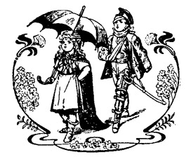
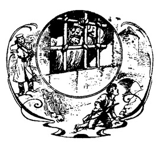
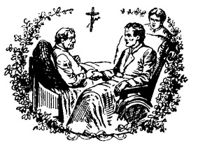
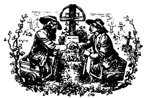
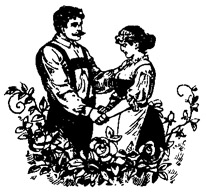
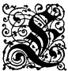
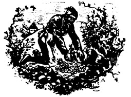

*
Autorisierte Ausgabe.
Belletristischer Verlag, Dresden-Niedersedlitz. (Reprint )
Komm, lieber Leser, komm! Ich führe Dich hinauf in das Gebirge. Du kannst getrost im Geiste mit mir gehen. Der Weg ist mir seit langer Zeit bekannt.
Ich baute ihn vor nun fast dreissig Jahren, und Viele, Viele kamen, die meine Berge kennen lernen wollten, doch leider nur, um sich zu unterhalten! Dass es auch Höhen giebt, in denen man nach geistgem Erze schürft, das sahen sie bei offnen Augen nicht, und darum ist es unentdeckt geblieben.
Ich führte sie dann einen anderen Weg, der von der flachen Wüste aufwärts stieg, durch fremdes Land und fremde Volker führte und oben enden wird bei Marah Durimeh. Auf diesem Weg begann man, zu begreifen. Man sah nun endlich ein, was die Erzählung ist: nur das Gewand für geistig frohes Forschen. Man hat gelernt, zum Sinn hinabzusteigen, der uns des Erzes Adern, der Tiefe Reichthum zeigt. Wer das ihm Nahe nicht verstehen will, den muss man klüglich in die Ferne leiten, wenn auch auf die Gefahr, dabei verkannt zu werden!
Heut kehr ich nun ins Vaterland zurück, um jenen alten Weg aufs Neue zu betreten. Er ist nicht weit und auch nicht unbequem. Er führt nur auf ein kleines »Musterbergle«. Wir nehmen uns ein »Sonnenscheinchen« mit, so einen Seelenstrahl, der uns zu leuchten hat, bis wir an unser kleines »Häusle« kommen. Im »Bergle« giebt es Silber, wohl auch ein wenig Gold. Das wird bewacht vom Geist des Neubertbauers. Wer diesen Geist, den doppelten, begreift, der darf den Schatz und dann auch selbst sich heben!
Radebeul, im Mai 1903.
Karl May.
Der Herr Major fuhr durch das Dorf. Die Frau Major saß neben ihm. Und auch das ›Majörle‹ war dabei, das kleine.
Man kannte den Herrn Major im ganzen Orte, und einen Einzigen ausgenommen, hatte ihn jedermann lieb. Er gehörte zu jenen im Dienste unnachsichtig strengen Offizieren, die aber, sobald sie den Zivilrock tragen, dann gegen alle Menschen mild und freundlich sind. Und heute war er in Zivil! Der weiche Felbelhut saß ihm hinten im Nacken, sodaß das braune Gesicht mit der hohen Stirn ganz zu sehen war, unter welcher die hellen Augen nach allen Seiten lachten.
Die Frau Major war eine schöne, schlanke, aber blasse Dame. Sie trug zwar einen Schleier, hatte ihn aber trotz des Sonnenscheins, der rundum licht auf den Fluren lag, zurückgeschlagen, um die gesunde, reine Bergesluft frei einatmen zu können. Ihre Augen hatten fast die Farbe der Veilchen, die sich schon hier und da im Grase sonnten; sie schaute so sinnend, so eigentümlich träumerisch in die Welt hinein. Was für Augen das wohl waren? Diese Frage wußte der Herr Lehrer am besten zu beantworten. Er war in den vorigen Ferien in der Residenz gewesen und hatte bei Majors mitspeisen dürfen. Da hatte er mit der Dame viel gesprochen und dann nach seiner Rückkehr im Dorfe berichtet: »Sie ist hochgebildet und außerordentlich ideal; darum faßt sie alles von der poetischen Seite auf. Ja, sie macht sogar Gedichte, wenn es paßt!«
Das ›Majörle‹, welches im Wagen rückwärts saß, war nicht in Zivil. Seine elfjährige Gestalt steckte in der schönen, bunten Uniform, welche ihm zu Weihnachten vom Christkindlein beschert worden war. Daheim durfte sie nur im Zimmer getragen werden; auf der Straße war es verboten. Aber hier im Dorfe, das war etwas ganz anderes! Das ›Majörle‹ hatte rundweg erklärt, daß es diese Reise in das Gebirge nicht mitmachen werde, wenn es die Uniform nicht anziehen dürfe, und dieser militärisch feste Wille war nach langen, elterlichen Gegenreden schließlich mit dem schuldigen Respekt begriffen und ausgeführt worden. In der Rangliste der Knabenzeit steht das ›Majörle‹ über dem Major. Man hat ihm zu gehorchen!
Heut' war ein wunderbarer, einzigschöner Frühlingstag. Die Luft schien still zu stehen, doch fühlte man den Hauch des jungen Lebens, welcher aus dem Munde des Lenzes geht, wenn dieser der Natur leise verkündet, daß er nun wieder blühen und duften lassen werde. Die Sonne hatte den Mittagspunkt noch nicht erreicht, schien aber schon so warm wie sonst im Mai. Es war, als habe sie die Leute sogar aus der Kirche gelockt. Der Sonntags-Frühgottesdienst war zu Ende, und die Besucher desselben kamen, die Gesangbücher in den Händen, aus dem hohen, breiten Tore, um sich heimkehrend im Dorfe zu verteilen. Diejenigen von ihnen, welche dem Wagen des Majors begegneten, grüßten mit jener warmen Höflichkeit, der man es ansieht, daß sie aus dem Herzen kommt. Er dankte, indem er den Hut abnahm. Frau Major nickte freundlich. Das ›Majörle‹ legte das Zeige- und Mittelfingerchen an die betreßte Mütze und machte dazu eine Miene, als ob es über ihm gar keine höhere Charge gäbe. Das war so seine selbstbewußte Art, die höchstwahrscheinlich von seinen vielen, vornehmen Ahnen stammte.
Warum schauten die Dorfbewohner, nachdem sie freundlich gegrüßt hatten, dann mit so bedenklicher Miene hinter dem Wagen her? Das hatte seinen Grund, und jeder kannte ihn. Draußen vor dem Orte lag der Pachthof, welcher dem Major gehörte. Der alte Pächter, welcher ihn stets gut bewirtschaftet hatte, lebte nicht mehr, und sein Sohn war leichten Sinnes und liebte die Arbeit weniger als das Vergnügen. Er war unverheiratet. Ein rechter Bauer aber braucht eine brave, arbeitsame Bäuerin, die scharfe Augen hat und alles wohl zusammenhält. Wer sich auf fremdes Gesinde verläßt, der kann leicht rückwärts, selten vorwärts kommen, zumal, wenn er das Wirtshaus mehr als seine Felder, und Kartenspiel und Trunk mehr als die Arbeit liebt. Und leider war dies bei dem Pachthofer der Fall.
Für kurze Zeit nach seines Vaters Tode war es wohl gegangen. Da hatte er einen fleißigen Knecht, der sich des Hofes annahm, als ob es zu seinem eigenen Vorteil sei. Das war der Felber Fritz, der beim Militär gestanden und dort gelernt hatte, pünktlich, treu und arbeitsam zu sein. Seit dieser aber ganz plötzlich seinen Dienst verlassen und sich mit einer gewaltigen Ohrfeige von seinem Herrn verabschiedet hatte, waren die Erträgnisse des Pachthofes von Jahr zu Jahr zurückgegangen. Man sprach davon, daß die Zinsen schon seit längerer Zeit nicht bezahlt worden seien. Der Major hatte sich bei dem Gemeindevorstand brieflich Auskunft eingeholt, und als er nun heute nach dem Tode des alten Pächters zum ersten Male wieder im Dorfe erschien, verstand es sich ganz von selbst, daß er gekommen sei, um persönlich nachzusehen, wie es um sein Eigentum stehe.
Der Pachthof lag am oberen Ende des Dorfes. Der Major ließ aber den Wagen schon früher halten, um auszusteigen. Man wollte überraschen. Das ›Majörle‹ ging hinter seinen Eltern. Es nahm den Säbel hoch in den gekrümmten Arm und kniff das eine Auge vornehm zu, als ob es ein Monokel vor demselben eingeklemmt habe. Man sah das Tor von weitem. Es gab über ihm eine Sonnenuhr, die jedenfalls von einem schon längst verstorbenen Dorfkünstler gemalt worden war. Sie stellte einen Engel dar, von welchem sehr schön gelbgefärbte Strahlen ausgingen. Seine Wangen glühten wunderbar zinnoberrot, und die Augen waren ganz ausgesprochen himmelblau. Die Stundenziffern standen auf den beiden Flügeln.
Vor diesem Bilde stand in der Mitte des Weges ein kleines Mädchen, vielleicht acht Jahre alt. Ueber sein sauberes Sonntagskleidchen hingen zwei dicke, lange, goldblonde Flechten herab, geschmückt mit einem blauseidenen Zigarrenbande. Die Wangen glänzten vor Gesundheit, wenn auch nicht ganz so rot wie die des Engels, in dessen Anblick das kleine, holde Wesen so vertieft war, daß es die drei Herankommenden gar nicht bemerkte. Die Frau Major blieb überrascht stehen.
»Welch ein schönes Kind!« sagte sie in gedämpftem Tone. »Wie schmuck und rein! Da kann man wohl schon freundlich auf die Mutter schließen!«
Der Major nickte beistimmend. Das ›Majörle‹ aber ging stracks auf das Mädchen zu, ließ den Säbel rasselnd fallen, stemmte beide Fäuste in die Hüften und fragte:
»Wer bist du? Und warum stehst du hier vor unserem Tor?«
Das Kind drehte sich zu ihm herum und betrachtete ihn mit großen, klaren Augen. Etwas so Schönes wie diese seine Uniform hatte es noch nie gesehen. Dennoch klang seine Stimme vollständig furchtlos, als es antwortete:
»Ich bin das Sonnenscheinchen. Dieses Tor ist nicht euer, sondern unser. Wer bist denn du?«
»Ich bin das ›Majörle‹« sagte er. »Mama nennt mich so. Und dieses Tor war schon unser, als ich noch das ganz kleine Hauptmännle war. Der da drin wohnt, ist unser Pächter. Wir sind reich, sehr reich!«
Er richtete sich bei diesen Worten so hoch auf, wie er konnte. Sie aber entgegnete, ohne sich imponieren zu lassen:
»Euer Pächter? Das ist nichts! Er hat von meinem Vater eine Maulschelle bekommen. Das weiß das ganze Dorf. Mein Vater war der Oberknecht. Das ist mehr als ein ›Majörle‹. Und reich sind wir auch. In meiner Sparbüchse sind schon dreizehn Pfennige. Willst du sie sehen, so komm'! Ich zeige sie dir!«
»Ja,« nickte er, mehr aus Höflichkeit als aus Hochachtung. »Wir müssen aber erst mit dem Pächter reden. Wo wohnst du denn?«
»Wo es am schönsten ist: ›Im Sonnenschein‹. So nennt man unser Haus. Willst du, daß ich auf dich warte an der Straße?«
»Ja.«
»Gut! Aber erst muß ich essen. Wir haben heut' Klöße mit Sauerkraut, weil Sonntag ist. Da bleibt nichts übrig. Aber Kaffee kannst du nachher mit trinken. Da sitzen wir vor der Tür. Leb' wohl!«
Sie reichte ihm die Rechte und sah ihm dabei innig und freundlich in die Augen. Da vergaß das ›Majörle‹ alle seine Ahnen; es bückte sich nieder, drückte seine Lippen auf das kleine Kinderhändchen und sagte:
»So küßt man der Dame die Hand, wenn sie einem gefällt. Ich bin dir gut und komme ganz bestimmt!«
Das Kind wollte gehen, da strich ihm die Frau Major über das reiche, blonde Haar und sprach:
»Du bist also das Sonnenscheinchen. Wer hat dich so genannt?«
»Das weiß ich nicht,« lautete die Antwort. »Vielleicht der liebe Gott!«
»Das wird wohl richtig sein. Nun geh' zu deiner Mutter! Es ist fast Essenszeit. Sie wird auf dich warten!«
Dann fuhr sie, zu dem Major gewendet, fort:
»Nicht nur ein schönes, sondern auch ein kluges Kind. Weit über sein Alter entwickelt. Bedächtig und resolut. Ein lebendiges Frühlingsgedicht!«
Er nickte nur. Der Anblick des Pachthofes hatte seine bisher heitere Stimmung verscheucht. Nun öffnete er das Tor; sie traten ein. Das Sonnenscheinchen aber lief in großer Eile das Dorf hinab und an der Kirche vorüber, bis links der Gasthof lag und rechts an der Lehne des Berges ein hellgestrichenes Häuschen stand, dessen Schornstein gastlich rauchte. Auf der Bank vor der Tür saßen ein junger Mann und eine ältere Frau, des Kindes Vater, der Felber Fritz, und seine Schwiegermutter, die Botenfrau, welche die Verbindung des Dorfes mit der zwei Wegstunden entfernten Stadt unterhielt. Eine Eisenbahn gab es damals noch nicht. Als beide das Kind kommen sahen, rief ihm die Großmutter entgegen:
»Sonnenscheinchen, wir haben dich gesucht! Wo bist du denn gewesen?«
»Beim Uhrenengel war ich nur! Ich wollte ihn fragen, ob wir bald essen werden,« lautete die Auskunft.
»Was hat er denn gesagt?«
»Er meinte, es sei noch gar nicht eilig. Der schwarze Strich ging noch nicht gerade herunter. Ich wollte darauf warten; da aber kam das ›Majörle‹, welches denkt, daß wir kein Geld haben. Ich werde ihm aber meine Sparbüchse zeigen. Darf ich, Großmutter? Ich hole sie mir gleich.«
Hierauf verschwand das Mädchen, ohne die Antwort abzuwarten, im Innern des Hauses.
»Das ›Majörle‹! So also wird der Junge genannt,« setzte die Botenfrau das unterbrochene Gespräch mit ihrem Schwiegersohn fort. »Hast du ihn vorhin, als sie vorbeifuhren, zum ersten Male gesehen?«
»Nein,« antwortete er. »Als Offiziersbursche seines Vaters wurde ich sehr oft zur Aushilfe des Kindermädchens kommandiert. Er war damals ungefähr ein Jahr alt und wurde das ›Hauptmännle‹ geheißen. Inzwischen ist sein Vater avanciert, der Knabe natürlich mit.«
»Ob der Major dich wohl noch kennt?«
»Möglich, obgleich er mich seitdem nicht mehr gesehen hat.«
»Auch nicht, als du auf seinem Pachthof dientest?«
»Nein. Er war während dieser Zeit niemals hier oben. Ich habe mich des Hofes redlich angenommen, erstens aus Pflichtgefühl, und zweitens auch um des Majors willen, der mir ein guter Herr gewesen ist. Ich wollte verhüten, daß sein Besitztum so weit heruntergebracht werde, wie es nun jetzt geschehen ist. Da aber kam jene Ohrfeige, die ich jetzt wohl fast bereuen möchte.«
»Bereuen?« fragte sie verwundert. »Wie kannst du es bereuen, daß du meine Tochter, deine ehemalige Braut und jetzige Frau, gegen einen so zudringlichen Menschen in Schutz genommen hast? Das war ja deine Pflicht!«
»Ich hätte aber doch besonnener sein können, wenigstens nicht gleich zuschlagen sollen. Deine Tochter, die Paule, war ein hübsches, braves Mädchen. Sie ist noch jetzt die hübscheste und beste Frau im ganzen Dorfe. Der Pachthofer wollte sie haben. Sie wies ihn ab. Schon das mußte ihn kränken. Als er aber erfuhr, daß sie mich, seinen Knecht, lieber habe als ihn, da war das eine Beleidigung, die ihn ergrimmen mußte. Er hatte getrunken, als er mich mit ihr traf. Er war berauscht. Darum versuchte er es, auf mich einzuschlagen. Er hatte vergessen, daß ich viel stärker bin als er. Meine Ohrfeige warf ihn sofort nieder. Ich ließ ihn liegen, holte meine Sachen und ging vom Hofe ab. Hätte ich mich damals beherrscht, so wäre ich bei ihm geblieben und müßte mir jetzt nicht vorwerfen, schuld zu sein, daß er und der Pachthof nun so weit heruntergekommen sind.«
Da legte die Schwiegermutter die Hand auf seinen Arm, sah ihm liebevoll in das Gesicht und sagte:
»Fritz, lieber Fritz, also das ist es, was dich quält? Vorwürfe machst du dir? Du Braver! Da muß ich helfen. Da muß ich dir sagen, was wir bisher verschwiegen haben. Du weißt, wir reden nicht gern über andere Leute. Sogar den Pachthofer haben wir schonen wollen, obgleich er es an Paule nicht verdiente. Du glaubst, es sei seine Absicht gewesen, sie zu heiraten? Da irrst du dich! Er, der sich für den Vornehmsten hält, und sie, die Tochter der Botenfrau? Das wäre ihm niemals eingefallen! Er hat ihr das auch ganz regelrecht gerade ins Gesicht gesagt. Da erhielt er von ihr das, was du nicht weißt, nämlich eine Ohrfeige, schon vor deiner!«
»Ist's wahr, Mutter?« rief da Felder, indem er von der Bank aufsprang.
»Ja, es ist wahr,« antwortete sie. »Und trotzdem ist er noch ferner um das Haus hier geschlichen und hat sie verfolgt auf Schritt und Tritt, bis es dann durch dich zur zweiten Maulschelle kam. Da hatte er endlich genug!«
»Das wußte ich freilich nicht! Aber es sind Jahre darüber hingegangen, und er hat die beiden Hiebe vergessen und vergeben. Du weißt es ja, wie freundlich er seit längerer Zeit gegen mich ist. Er hat mir schon manchen Gefallen getan, ohne daß ich ihn darum bat!«
»Er will dich täuschen, Fritz! Gerade diese Freundlichkeit macht mich bedenklich. Er sucht etwas an dir. Er hat dich schon zwei- oder dreimal mit ins Wirtshaus genommen und die Zeche für dich bezahlt. Das macht mich bang. Du gehst sonst nie zum Trunk. Was will er dort mit dir? Wer den Pachthofer kennt, der weiß, daß er nie etwas verzeiht. Sei vorsichtig, mein Sohn; nimm dich in acht! Er ist ja auch nicht mehr der, der er früher war, sondern ein Heruntergekommener. Wie lange wird es noch dauern, so jagt ihn der Major vom Hofe. Willst du vielleicht der Freund und Kumpan eines solchen Menschen werden? Da sei Gott vor!«
In diesem Augenblicke trat das Sonnenscheinchen unter die Tür und sagte:
»Die Klöße sind fertig. Ihr sollt kommen, sagt die Mutter!«
Sie folgten diesem Rufe. In der Wohnstube stand Frau Paule wartend am gedeckten Tische. Ihr Mann hatte sie ›hübsch‹ genannt. Er hatte recht; sie war es wirklich. Ihr starkes, schönes, blondes Haar war nur um einen Schein dunkler als das ihres Kindes, und so ein liebes Gesicht wie sie kann nur eine Frau haben, die sich in ihrem Hause glücklich fühlt. Als sich jedes an seinen Platz gestellt und die Hände gefaltet hatte, erhob das Sonnenscheinchen seine Stimme und betete, die Augen begehrlich auf die dampfenden Klöße gerichtet:
»Komm, Herr Jesus, sei unser Gast, und segne, was du uns bescheret hast. Amen!«
Dann tat es einen Freudensprung und fügte schnell hinzu:
»Heut' ist aber der Herr Jesus gut, sehr gut!«
Die Eltern lachten über diesen begeisterten Andachtsschluß, und hierauf erging es der kleinen Beterin wie einst dem braven Feldhauptmann Schweppermann: Sie bekam gleich zwei Klöße auf einmal. Infolgedessen war sie so beschäftigt, daß sie vollständig vergaß, zu erzählen, was sie mit den vornehmen Leuten am Tor des Pachthofes gesprochen hatte. Selbstverständlich hätte man die kindliche Einladung zum Kaffee auch nicht als bindend für das ›Majörle‹ betrachtet, und noch viel weniger für dessen Eltern. Aber Kaffee wurde trotzdem bereitet; das war man für Sonntags so gewöhnt. Deshalb wurde nach dem Essen der Tisch hinaus vor die Bank am Hause getragen, zwei Stühle dazu, und nun, indem die Mutter den braunen Trank aufgoß, der mehr nach Zichorie als nach wirklichen Bohnen duftete, kam dem Sonnenscheinchen plötzlich die Besinnung, daß es die Sparbüchse in der Tasche habe und an der Straße auf das ›Majörle‹ warten wolle!
Das Kind sagte kein Wort, weil es sich seiner Vergeßlichkeit schämte, und ging den kurzen Hang hinab, um aufzupassen, ob der Erwartete kommen werde. Da standen rechts und links die duftenden Veilchen, die Sonnenscheinchen liebte. Ob die vornehme Frau, die so freundlich war, wohl auch Veilchen gern hatte? Das Mädchen begann zu pflücken, und noch hatte es kein ganzes Dutzend zusammen, so sah es den offenen Wagen kommen und das ›Majörle‹ und seine Eltern drin. Er hielt am Gasthof an, wo die drei ausstiegen. Das Kind sah, daß sie hinein wollten. Darum lief es schnell hin, drückte der Frau Major die Blumen in die Hand und sagte zu dem Knaben, indem es nach dem Tische vor dem Häuschen deutete:
»Der Kaffee ist gleich fettig, und die Sparbüchse habe ich auch. Nun müßt ihr aber gleich kommen!«
Der Major hatte sehr ernst ausgesehen; jetzt lächelte er. Die Frau Majorin schaute sehr vergnügt darein; das ›Majörle‹ aber fühlte sich als Herr der Situation. Es streckte dem Sonnenscheinchen seinen rechten Arm hin und sagte:
»Hänge ein!«
Dieses verstand ihn nicht und fragte darum verwundert:
»Wo hinein willst du mich hängen?«
Da sah er sie so etwas von oben herunter an und erklärte ihr:
»Wenn man eine Dame zum Kaffee führt, so legt sie ihre Hand so hier auf den Arm. Dann geht man mit ihr fort. Handschuhe brauchst du nicht, denn wir sind auf dem Dorfe. Also komm!«
Er klemmte ihre linke Hand in den Winkel seines rechten Ellbogens und ging mit ihr über die Straße hinüber, ohne sich um die Folgsamkeit seiner Eltern zu bekümmern. Diese blickten einander fragend an. Dann schaute der Major hinüber nach dem Häuschen. Dort hatte man den Vorgang wohl bemerkt. Felber befand sich in größter Verlegenheit über die Kühnheit seines Töchterchens. Er hatte sich von seiner Bank erhoben und strich den Schnurrbart genau in derselben Weise wie damals, wenn er, als zu der Frau Hauptmann kommandiertes Kindermädchen, sich irgend einer Ungeschicklichkeit schuldig gemacht hatte.
»Du, den sollte ich kennen!« sagte der Major.
»Ich auch,« stimmte sie bei.
»Ist das nicht der Gefreite Fritz Felber, unser ehemaliger Bursche?«
»Die Namen merke ich mir ja nie. Aber einer unserer Burschen ist's.«
»Na, dann getrost hinüber, wenn auch nicht wegen des Kaffees! Man sieht es ihm deutlich genug an, daß er gar nichts davon weiß, daß er ihn unserem Jungen schuldig ist!«
»Ein kleines, allerliebstes Abenteuer,« nickte sie, »welches du dir auf den Aerger gönnen darfst!«
Als die beiden drüben ankamen, hatte sich das ›Majörle‹ mit dem Sonnenscheinchen schon gemütlich an den Tisch gesetzt. Die Botenfrau war vor Angst im Hause verschwunden. Paule stand verlegen an der Tür. Felber klappte die Absätze zusammen, drückte die Brust heraus und legte die Fingerspitzen an den Rand der Militärmütze, die er nicht besaß. Der Major klärte mit einigen Worten alles auf und erteilte dann seine Befehle. Er verlangte noch drei Stühle und dazu die abhanden gekommene Schwiegermutter. Als diese vier Gegenstände herbeigeschafft worden waren, erkundigte er sich, ob die Klöße wirklich alle geworden seien. Ein allgemeines ›Ja‹ ertönte.
»Gut, dann also Kaffee!« lachte er. »Ob wir ihn hier oder drüben im Gasthof trinken, das bleibt sich gleich.«
»Nur hier, aber Kuchen dazu!« bestimmte das ›Majörle‹.
»Du kriegst Brot mit Butter drauf, weiter nichts!« wies ihn das Sonnenscheinchen zurecht. »Kuchen gibt es nur zur Kirmes und zu Weihnacht. Da kommst du wieder. Ich backe ihn dir selber!«
Das ließ sich hören. Der kleine Gebieter zeigte sich zufrieden. Frau Paule aber zog sich zurück, um die gewöhnliche Zahl der Bohnen um einige zu vermehren und dafür die Zichorie zu subtrahieren. Dann saßen alle fröhlich um den Tisch. Die Kleinen hatten sich sehr Wichtiges zu sagen. Die Großen aber sprachen zunächst von vergangenen Kindermädchenzeiten. Dann erwähnte der Major den Grund seiner heutigen Anwesenheit. Er hatte schnell erkannt, daß sein einstiger Bursche ein urteilsfähiger und ehrenwerter Mann geworden sei, obgleich er zu den sogenannten armen Leuten zählte. Darum sagte er ihm offen, daß er nahe daran stehe, den Pachthofer fortzujagen. Da wagte es Felber, für diesen zu bitten. Er brachte seine Gründe vor, die freilich nicht so recht begeistern wollten. Der Major hörte ihn ruhig an, gab ihm dann die Hand und sagte:
»Felber, Sie sind ein braver Kerl! Verstehen Sie denn von der Landwirtschaft etwas?«
»Ich denke, ja!« antwortete der Gefragte. »Ich war ja Oberknecht auf Ihrem Hofe.«
»Wann?«
»Bis zu meiner Verheiratung.«
»Hm! Sonderbar! Also ungefähr bis zu der Zeit, wo die Zahlungen begannen, unregelmäßig zu werden! Das läuft nämlich schon so fast acht Jahre lang. Wie ist Ihr Häuschen hier zu der Bezeichnung ›Im Sonnenschein‹ gekommen?«
»Weil es am Hange liegt, den die Sonne von früh bis abends trifft, und vielleicht auch, weil – weil – –«
Er stockte und sah verlegen zu Frau Paule hinüber.
»Na, werdet nicht so rot, Kinder!« lächelte der Major. »Ich weiß ebensogut wie Ihr, daß es für gute, liebe Frauen Kosenamen giebt. Habe ich es getroffen?«
Felber nickte.
»Sie haben Ihre junge Frau gern ›Sonnenschein‹ genannt. Das ist ruchbar geworden. Und als sich hierzu gar noch ein kleines ›Sonnenscheinchen‹ gesellte, da wurde Ihr Haus dann allgemein ›Zum Sonnenschein‹ genannt?«
»Erraten, Herr Major!«
»Wissen Sie, daß der Pachthof früher auch ›Zum Sonnenschein‹ geheißen hat?«
»Ja. Alte Leute erzählen noch davon.«
»Das war wohl wegen der schöngemalten Sonnenuhr mit ihren gelben Strahlen. Inneren Sonnenschein hat es in diesem alten Hause nur selten gegeben. Ich meine, daß er ihm endlich nötig wäre. Doch – hm! Sie haben ein gutes Wort für den Pachthofer eingelegt, und das soll nicht daneben gefallen sein. Ich will es also noch einmal mit ihm versuchen. Ich wiederhole es, Sie sind ein braver Kerl! – – Jetzt, Kinder, steckt Eure Kapitalien wieder in die Büchse, und tut auch das dazu!«
Das ›Sonnenscheinchen‹ hatte nämlich seine Sparbüchse hervorgezogen, um zu beweisen, daß es reich sei. Es war eine jener runden, tönernen, die man nicht öffnen kann. Man hat sie zu zerschlagen, wenn man zu seinem Gelde kommen will. Aber das kluge Kind hatte eine Art des Schüttelns entdeckt, bei welchem die Stücke einzeln in dem Spalt erschienen und dann vollends hervorgezogen werden konnten. Auf diese Weise hatte es jetzt seine dreizehn Pfennige zum Vorschein gebracht und stritt sich nun mit dem ›Majörle‹ herum, welches behauptete, daß das noch lange kein so übermäßiger Reichtum sei. Der Major aber hatte während seiner letzten Worte einen Louisdor aus seiner Börse genommen. Den legte er dem Sonnenscheinchen hin.
»Wieviel ist das?« fragte das Kind, indem es die schöne, glänzende Münze gegen die Sonne hielt.
»Fünf Taler! Herr Major?« rief Felber aus, beinahe erschrocken über die reiche Gabe.
»Hörst du? Fünftausend Taler!« wiederholte das ›Majörle‹ seiner kleinen Nachbarin, ohne zu fragen, ob es erlaubt sei, drei Nullen als Vergrößerungsgläser zu benutzen.
»Fünftausend! Ist das wahr?«
Das Sonnenscheinchen hatte noch keinen klaren Begriff von Tausenden, aber daß es un-, un-, unendlich viel sei, das ahnte es.
»Natürlich! Fünftausend! Man bekommt einen ganzen Pachthof dafür!« versicherte das überschwengliche ›Majörle‹. »Komm, tu' jetzt alles schnell wieder in die Büchse. Erst warst du arm; jetzt aber bist du durch meinen Papa reich geworden, fast reicher noch als ich, denn mir gibt er immer nur so lumpige, silberne Viergroschenstücke!«
Er warf seinem Vater einen vernichtenden Blick hinüber und half dann, das Geld wieder in die Büchse heimsen. Als dies geschehen war, brachen die Herrschaften auf. Felbers gingen mit bis an den Wagen.
»Das ist ein Mietwagen aus der Stadt,« erklärte das ›Majörle‹. »Er kostet zehn Neugroschen für die Stunde. Vorher fuhren wir auf der Bahn. In Dresden aber haben wir unsere eigenen Pferde zum Reiten und zum Fahren, und Wagen dazu, sogar auch einen Schlitten. Vielleicht lade ich dich zu meinem Geburtstag ein, Sonnenscheinchen. Du hast mir sehr gefallen!«
Der Herr Major gab, ehe er einstieg, den Felbers allen die Hand. Die Frau Major folgte diesem Beispiel und küßte dann Sonnenscheinchen noch extra auf den wohlgespitzten Mund. Das ›Majörle‹ nickte den neugierig herbeigeeilten Dörflern huldreich zu. Dann zogen die Pferde an, und als der Wagen hinter der nächsten Krümmung des Weges verschwunden war, drängten sich die Leute an Felber heran, um ihrer Freude über die ihm widerfahrene große Ehre Ausdruck zu verleihen. Er schien um wenigstens fünfhundert Prozent in ihrer Achtung gestiegen zu sein. Sie wollten erfahren, wie er zu dieser Ehre gekommen sei. Er sollte erzählen. Sie trennten ihn von Schwiegermutter, Frau und Kind. Und als er bat, daß man ihn doch gehen lassen möge, wurde er einfach umringt und, halb gezogen, halb geschoben, in die Gaststube des Wirtshauses gebracht, wo man ihn zwang, sich niederzusetzen und Bericht zu erstatten.
Frau Paule nahm das Sonnenscheinchen an der Hand und ging mit ihm und der Mutter nach dem Häuschen zurück. Dort setzten sie sich wieder an den Tisch, wo es noch Kaffee gab, weil die sehr bauchige Kanne nicht leergetrunken worden war. Natürlich wurde von den beiden Frauen der Besuch auf das ausführlichste durchbesprochen. Während dies geschah, beschäftigte sich das Kind in seiner stillen Weise, wobei es unter dem Stuhle, auf welchem die Frau Major gesessen hatte, etwas liegen sah, was sich da jedenfalls nicht auf dem rechten Platze befand. Das Sonnenscheinchen hob es auf und brachte es der Mutter. Es war ein kleines Buch, in welchem ein Bleistift steckte. Auf der vorderen Seite des Einbandes war in goldenen Buchstaben das Wort ›Poesie‹ zu lesen. Paule schlug es auf und sah die beschriebenen Blätter nach. Sie hatte ihre Schulzeit gut angewendet und war noch heute eine fleißige Leserin. Mutter brachte aus der Leihbibliothek in der Stadt oft Bücher mit, aus denen Abends vorgelesen wurde. Das war ihrem Manne lieber als die unnütze Weise, in welcher andere oft bis spät in die Nacht hinein im Gasthofe saßen. Darum machte es der Paule keine Mühe, zu erkennen, was für ein Buch das Kind gefunden hatte.
»Die Frau Major muß es mit dem Tuche aus der Tasche gezogen haben,« sagte sie. »Da ist es heruntergefallen, ohne daß wir es gesehen haben. Es stehen lauter Gedichte drin. Die hat die Frau Majorin wohl selbst gemacht, denn es ist vieles ausgestrichen und verändert worden. Auch heute hat sie gedichtet. Das sehe ich am Datum auf der letzten Seite und auch an der Ueberschrift. Die lautet: ›Sonnenscheinchen.‹ Mutter, ist das nicht sonderbar?«
»Freilich wohl!« antwortete die Gefragte. »Ein Gedicht über unser Kind! Wann mag sie es wohl gemacht haben?«
»Vielleicht während der Major mit dem Pächter verhandelte. Sie wird nicht haben zuhören wollen und ist derweile in den Garten oder sonstwohin gegangen. Das Sonnenscheinchen hat ihr gefallen, und wenn man einmal Dichterin ist, so macht man gleich über alles Reime, was man gut leiden mag. Wenn ich gescheiter wäre, so dichtete ich auch nur über unsern Sonnenschein und sonst über nichts weiter.«
»Wie lautet denn das Gedicht?«
»Es sind nur vier Zeilen. Sie ist wohl nicht ganz fertig geworden damit. Höre einmal zu!«
Sie las es vor. Es gefiel beiden ungemein. Dann wurde besprochen, wie das Buch der Besitzerin zuzustellen sei. Paule dachte an ihre Freundin, die Frau Lehrerin.
»Weißt du, Mutter,« sagte sie, »ich wollte sowieso heute nachmittag ein Stündchen zu ihr gehen. Da nehme ich das Buch mit. Der Herr Lehrer weiß, wie man das fein macht. Er packt es schön sauber ein, und dann geben wir es auf die Post.«
»Das ist das Richtige,« nickte die Botenfrau. »Aber lies es noch einmal vor, damit ich es auswendig lerne. Ein Gedicht auf unser Sonnenscheinchen, das muß man fest im Kopf behalten, damit man es nicht gar wieder vergißt!«
Paule las es zum zweiten Male vor, und wieder, wieder und immer wieder. Großmutters Kopf schien hart zu sein; das Gedicht kam gar nicht leicht hindurch. Da lachte das Sonnenscheinchen und sagte:
»Ich habe aufgepaßt und weiß es schon ganz gut. Soll ich es sagen?«
Und ohne die Erlaubnis abzuwarten, sagte es die vier Zeilen gleich dreimal hintereinander so richtig her, daß die Botenfrau die Hände zusammenschlug und erstaunt ausrief:
»Ja, was ist denn das? Da ist ja das Ei wirklich einmal klüger als die Henne! Wirst du es aber auch nicht wieder vergessen, Sonnenscheinchen? Das darfst du nicht, denn es ist für dich gemacht!«
»Ich vergesse es nicht, Großmutter. Ich gehe jetzt hinter den Garten und setze mich unter den Holunderbusch. Da sage ich es ganz laut so lange her, bis es fest angewachsen ist.«
Das Kind eilte fort. Die beiden Frauen gingen in das Haus, aus welchem bald darauf die Paule wieder trat. Sie hatte die Sonntagsjacke angezogen, um zur Frau Lehrerin zu gehen. Das Schulhaus lag von hier aus straßenab; darum sah sie es nicht, daß soeben der Pachthofer von oben kam und in das Wirtshaus ging, in welchem sich ihr Mann befand. Er schaute finster drein, fast wie verstört. Die Unterredung mit dem Major hatte ihn in Grimm gebracht.
Bald hierauf kam auch die Botenfrau wieder aus dem Hause. Sie hatte die Brille auf der Nase, die alte, angeerbte, mit großen, runden Gläsern, und ihr Sonntags-Nachmittags-Gebetbuch in der Hand. Damit setzte sie sich abermals an den Tisch, um ihrer Andacht nachzugehen. Die Brille wollte zwar die Zeilen nicht so ganz genau bis heran an das Auge ziehen, aber die Buchstaben waren von doppelter Größe, und wenn man das Buch so ziemlich auswendig kann, so merkt man es beinahe gar nicht, daß man überhaupt niemals in eine Schule gegangen ist, in der man das Lesen lernen konnte. Aber wenn man Botenfrau ist und sich täglich allerlei anzumerken hat, so kommt das Lesen mit dem Schreiben ganz von selbst. Es braucht ja nicht ganz genau so nach der Schnur zu gehen, wie andere Leute sich einbilden.
Großmutter las also in ihrem Buche, so gut sie konnte.
Der Zeigefinger diente ihr als Wegweiser über die Zeilen, und wenn er einmal von einer hinweg auf eine falsche rutschte, so war das kein Unglück. Die Brille wurde geputzt, und dann ging es auf einer noch falscheren fröhlich weiter. So las und rutschte sie sich immer tiefer in ihre Gedanken hinein, daß sie aufgehört zu haben schien, etwas anderes zu hören und zu sehen. Sie bemerkte nicht, wie überlaut es jetzt drüben in der Gaststube herging. Durch die Fenster derselben schallte, obgleich sie geschlossen waren, wüster Lärm. Allerlei halb- oder unerwachsenes Volk sammelte sich vor dem Gasthofe an, als ob es da ein ungewöhnliches Ereignis zu erwarten gäbe. Tische und Stühle wurden gerückt, so laut, daß man es bis herüber hörte. Endlich klirrte gar eine Scheibe, und ein Bierglas flog heraus. Zu gleicher Zeit kam die Wirtin aus dem Hause und über die Straße herübergerannt.
»Botenfrau!« rief sie den Hang herauf. »Komm schnell; hol' deinen Schwiegersohn, sonst gibt es ein Unglück drüben in der Stube!«
Die Angeredete ließ vor Schreck das Buch auf die Erde fallen, sprang auf, nahm die Brille ab, legte sie auf den Tisch und fragte:
»Ein Unglück? Was ist denn geschehen?«
»Der Pachthofer ist ganz außer sich vor Wut. Er sagt, Felber habe ihn beim Herrn Major angeschwärzt. Er will ihn erschlagen. Man hält die beiden fest; sie wollen aneinander!«
»Herrgott! Der liebe Mensch, der Fritz! Er ist ja ganz unschuldig! Er hat den Herrn Major sogar gebeten, den Pachthofer zu behalten!«
Mit diesen Worten eilte die Großmutter den Hang hinab und über die Straße hinüber. In diesem Augenblicke kam das Sonnenscheinchen hinter dem Garten vor. Es sah die Botenfrau laufen und rief ihr nach:
»Großmutter, geh' nicht fort! Ich kann es jetzt; es ist nun angewachsen. Ich will es dir sagen und dann auch noch dem Vater. Der hat es noch nicht gehört.«
Als es sah, daß auf diese seine Worte nicht geachtet wurde, lief es hinterdrein, um sich Gehör zu verschaffen. Es sah die Großmutter in der Gasthofstür verschwinden. Dahin rannte es auch. Als es dort ankam, hörte es die laute, zornige Stimme des Vaters aus der offenen Stube schallen. Da wurde ihm himmelangst. Im Hausflur standen Leute, durch welche Großmutter sich drängte. Das Kind wand sich bis zu ihr hindurch und faßte sie am Rocke. So wurde es mit bis in die Stube gezogen, in welcher der Pachthofer sich soeben auf Felber gestürzt hatte, um ihn mit einem Messer zu erstechen. Sie rangen miteinander. Nun getraute sich des Messers wegen niemand mehr, den Pächter anzufassen. Er schäumte vor Wut. Felder versuchte, ihm vor allen Dingen die Waffe zu entreißen.
Auch er war zornig, hatte aber die Ueberlegung nicht verloren. Bei seiner wohlbekannten Körperkraft stand zu erwarten, daß es ihm gelingen werde, den Gegner unschädlich zu machen; nur durfte man ihn nicht hindern, so zuzugreifen, wie er wollte. Das begriff aber seine Schwiegermutter nicht. Sie sprang auf ihn zu und faßte ihn am Arm, indem sie bat, daß er mit ihr kommen solle.
»Laß mich los, Mutter!« rief er.
»Nein, nein!« antwortete sie. »Ich halte dich fest, bis du mitgehst.«
Sie hing sich so an ihn, daß er sich fast nicht rühren konnte.
»Laß mich los!« wiederholte er, indem die Adern seiner Stirn schwollen. »Wenn du mich hältst, so gibt es einen Mord!«
»Herrgott, ein Mord!« zeterte sie. »Du mußt mit fort, mit fort, gleich auf der Stelle!«
Sie zwang ihn, den bewaffneten Arm des Pachthofers, den er bisher festgehalten hatte, freizugeben. Dieser holte aus und stach zu. Es gelang Felber, sich halb auf die Seite zu biegen. Der Stich streifte seinen Hals. Da war es mit seiner Selbstbeherrschung vorbei. Er riß die Mutter von sich los und schleuderte sie auf die Seite. Dann bückte er sich, um den Pachthofer zu unterlaufen, faßte ihn unter beiden Armen, hob ihn empor, schleuderte ihn auf die Diele nieder, daß es nur so krachte, warf sich auf ihn und riß ihm das Messer aus der Hand.
In diesem Augenblicke herrschte tiefe Stille in der Stube. Es war der Moment vor einer fürchterlichen Tat. Kein Mensch wagte, einen Laut auszustoßen, als Felder nun das Messer hob, um den erhaltenen Stich zurückzugeben. Kein Mensch? O doch!
Großmutter lag am Boden. Neben ihr stand das Sonnenscheinchen. Es fühlte eine entsetzliche Angst in sich. Der Vater kniete auf dem Pächter, hatte mit der Linken seinen Hals umklammert und in der Rechten das Messer. Er sah so aus, daß man sich vor ihm fürchten mußte. Niemand sprach. Aber das Kind fühlte, daß man gerade jetzt etwas sagen müsse; es wußte nur nicht, was. Da fiel ihm das Gedichtchen ein, wegen dessen es der Großmutter ja nachgelaufen war. Es faltete die Händchen, drängte die Tränen der Angst, welche hervorbrechen wollten, zurück und rief:
»Vater, ich kann es; ich habe es gelernt; ich werde es dir sagen.«
Als Felber die liebe, klare Stimme seines Kindes hörte, wandte er den Kopf, hielt aber den Pächter um so fester. Reden konnte er nicht; dazu war er zu erregt. Da tat das Sonnenscheinchen zwei Schritte auf ihn zu und sprach deutlich und ohne allen Anstoß:
»Komm mit hinaus in meinen Sonnenschein.
Ich bin der Frühling. Laß dich doch erflehen!
Der liebe Gott schickt mich zu dir herein.
Du sollst mit mir hinaus ins Freie gehen!«
Was nun geschah, das läßt sich unmöglich erzählen. Worte reichen dazu nicht aus. Felber schloß zunächst für ein paar Augenblicke die Augen, als ob in seinem Innern etwas vor sich gehe, was niemand von außen sehen dürfe. Dann stieß er einen Schrei aus, der laut durch die Stube schmetterte und noch draußen auf der Straße gehört werden konnte. Hierauf schnellte er sich empor, warf das Messer weit von sich und stürzte auf sein Kind zu. Er kniete vor ihm nieder, drückte es an sich und rief, es küssend und immer wieder küssend:
»Mein Sonnenscheinchen, mein liebes, liebes Sonnenscheinchen – – – –! Ja, ja, es ist richtig: Der liebe Gott hat dich von draußen hereingeschickt –! Was hätte ich getan – – was, was? – – Das war der Mord, der Mord! – – – – Es war finster vor meinen Augen, ganz finster, dunkel, dunkel! Da kamst du, der liebe, helle Sonnenschein. Da wurde es wieder licht – – licht – – – licht – – –! Ja, komm, komm, komm – – – hinaus ins Freie! Der Spruch, den du gesagt hast, ist mir unbekannt – aber das weiß ich, daß er vom Himmel gekommen ist, damit du deinen Vater retten mögest. – – Hinaus ins Freie! Auch du mit, meine Mutter! – – Das soll das letzte Mal im Leben sein, daß ich mich vom Zorn um den Verstand bringen lasse!«
Er hob das Sonnenscheinchen empor an seine Brust, reichte der Schwiegermutter die Hand und ging mit beiden hinaus, ohne sich um den Pachthofer zu bekümmern, der aufgestanden war und vor sich hinschaute, als ob ihm alle seine Gedanken abhanden gekommen seien. Felber wollte geradeswegs heimgehen, blieb aber auf der Mitte der Straße stehen, weil er die Paule kommen sah. Ihr Besuch war beendet. Sie hatte das Notizbuch als Paketchen in der Hand. Und weiter unten, wer kam denn da? Das war ja der Wagen des Herrn Majors wieder! Warum war er umgekehrt?
Was niemand bisher beachtet hatte, das sah die Paule sofort, als sie ihren Mann erreichte. Sie wurde leichenblaß, schlug die Hände zusammen und rief erschrocken aus:
»Fritz, was ist mit dir? Du blutest ja! Herrgott, du armer, armer Mann!«
Sie riß ihm das Kind vom Arme, das Tuch vom Halse und den Kragen auseinander. Er aber lächelte ihr glücklich zu und antwortete:
»Keine Angst, Paule! Es kann nicht gefährlich sein, denn ich fühle fast gar keinen Schmerz.«
»Aber das Blut, das Blut! Bist du etwa gar gestochen worden?«
»Ein kleines bißchen nur, kaum durch die Haut.«
»Nein, nein! Ich sehe es ja, der Stich geht tief in das Fleisch! Wer ist's gewesen? O, was frage ich denn! Dort steht er drin am Fenster. Ich sehe ihn, den Pachthofer; kein anderer kann – –«
Sie wurde unterbrochen, denn jetzt war der Wagen da und blieb neben ihnen halten.
»Da seid Ihr ja,« sagte die Frau Major. »Ich muß meine ›Poesie‹ bei Euch verloren haben. Ich vermisse sie; darum sind wir umgekehrt.«
»Hier ist das Buch,« antwortete die Paule, indem sie das Päckchen in den Wagen reichte und dann schnell wieder zu ihrem Manne trat. »Es lag unter dem Stuhle. Ich wollte es Ihnen mit der Post schicken.«
Während sie das sagte, hielt sie ihr Taschentuch an die Wunde, um das Blut zu stillen. Dadurch wurden die Herrschaften aufmerksam. Der Major stieg rasch aus dem Wagen und griff nach Felbers Hals.
»Sie bluten!« rief er aus. »Ah, ein Stich! Zwar nicht gefährlich, aber gleich neben der Ader. Lassen Sie es getrost laufen. Wir verbinden Sie dann. Vor allen Dingen: Wer hat Sie gestochen und warum?«
Er fragte das sehr energisch. Felder zögerte zu antworten, aber einer der Bauern, welche hinter ihm herausgekommen waren, berichtete in kurzen Worten, was geschehen war. Er hielt sich dazu für verpflichtet, weil er der Gemeindevorstand war.
»Wo ist der Messerheld?« fragte ihn hierauf der Major, der als geistesgegenwärtiger und resoluter Mann sofort wußte, was zu geschehen hatte.
»Noch drin in der Stube!«
»So kommen Sie mit herein! Ich werde die Sache untersuchen.«
Und zur Frau Major gewendet, fuhr er fort:
»Du fährst mit Felber und seiner Frau nach der Apotheke. Dort laßt ihr euch Verbandzeug geben, um ihn zu verbinden. Du verstehst das ja vortrefflich. Dann kommt ihr zu mir. Ich werde entweder im Gasthof oder da drüben im ›Sonnenschein‹ sein. Der Junge mag aussteigen und inzwischen mit bei der Schwiegermutter bleiben.«
Der Major verstand zu kommandieren. Was er gesagt hatte, geschah sehr schnell, und niemand schien damit zufriedener zu sein, als das ›Majörle‹.
»Komm, Sonnenscheinchen,« sagte es, als der Wagen fort und der Vater hineingegangen war. »Ich weiß, was wir machen werden.«
»Was?« fragte das Kind.
»Euer Häuschen ist die Apotheke. Ich werde gestochen, und du verbindest mich.«
»Aber wer soll dich denn stechen?«
»Das wird die Schwiegermutter besorgen. Sie nimmt das größte Messer, was ihr habt, oder gar hier meinen Säbel. Habt ihr Blut?«
»Nein!«
»Aber Leinwand, Kattun und Bindfaden?«
»Das mag die Großmutter suchen. Ich weiß nicht, wo es steckt. Aber der Schlüssel zu der Lade hängt am Nagel.«
»Den werden wir schon kriegen. Also komm!«
Großmutter hatte das alles gehört. Sie schmunzelte dazu und ging, den Kindern voran, hinüber nach dem Häuschen, um alles zusammenzusuchen, was ihr für dieses Spiel als unerläßlich schien. Die Szene desselben wurde hinter in den Garten verlegt. Aber grad, als es zum ›Stechen‹ kommen sollte, stellte es sich heraus, daß die Botenfrau das Spiel nicht mitmachen könne, weil sie sich von der Wirklichkeit zu sehr angegriffen fühlte. Sie behauptete, daß sie sich ein bißchen niederlegen müsse, weil ihr der Schreck noch jetzt in allen Gliedern liege. Doch störte das die Kleinen nicht.
Das ›Majörle‹ behauptete, daß es sich auch ohne Schwiegermutter zu behelfen wissen werde, und so zog diese, die beiden allein lassend, sich vollständig beruhigt in das Haus zurück.
Inzwischen war der Herr Major durch die große Stube des Gasthofes nach dem daneben liegenden, sogenannten ›Herrenstüble‹ gegangen, in welchem die Sitzungen des Dorfgemeinderates abgehalten zu werden pflegten. Im Vorübergehen hatte er befohlen, daß weder der Pachthofer, noch einer der anwesenden Zeugen sich entfernen dürfe. Er besaß als Gutsherr das volle Recht dazu. Er begann das Verhör, indem er erst die Zeugen einzeln kommen ließ. Der Pachthofer sollte dann der letzte sein. Es sollte aber anders werden, als er dachte.
Der Wagen kehrte nämlich schon nach kurzer Zeit zurück. Felber war verbunden worden und kam mit der Frau Major und Paule nach dem Stüble. Als er hörte, wie streng der Herr Major das Geschehene nehmen wollte, bat er um Gnade für den Pachthofer.
»Er wird arretiert und in die Stadt in das Gericht geschafft,« erklärte der Gutsherr. »Es liegt schwere Körperverletzung vor. Einen Zoll weiter nach rechts, so hätte er die Schlagader zerschnitten, und Sie, Felber, wären jetzt eine Leiche!«
»So bitte ich, auch mich mit arretieren zu lassen, Herr Major!« antwortete der Genannte.
»Sie? Unsinn! Weshalb?«
»Wegen Mordversuchs! Wäre mein Kind nicht gekommen, so hätte ich den Pachthofer ganz gewiß erstochen.«
»Aber Sie haben es nicht getan, und das genügt. Selbst wenn Sie es getan hätten, wären Sie zu entschuldigen gewesen, da ein Akt der Notwehr vorlag.«
»Das war nicht mehr Notwehr. Ich bin stärker als er. Ich mußte ihm das Messer nehmen, und damit war es gut!«
»Aber Ihre Schwiegermutter erhöhte durch ihr unbedachtsames Dareinmischen die Gefahr, in der Ihr Leben stand. Sie haben gar keine Veranlassung, sich selbst anzuklagen. Der Pachthofer hat begonnen, und Sie sind ruhig und kaltblütig geblieben, bis er zum Messer griff. Er beschuldigte Sie, ihn bei mir verleumdet zu haben, während Sie mich doch grad im Gegenteil bewegten, ihn nicht fortzujagen, was ich nun aber unbedingt tun werde.«
»Aber Herr Major, ich bitte – –«
»Keine Bitte mehr!« unterbrach ihn der Offizier. »Sie wissen nicht, wie ich geschäftlich mit ihm stehe. Er ist nicht nur ein säumiger Zahler, sondern ein Lump, ein Fälscher und Betrüger. Wenn ich ihn anzeigen wollte, so würde er bestraft, auch ohne daß er Sie gestochen zu haben braucht. Hören wir die Zeugen weiter!«
Er hatte das in einem Tone gesagt, der keinen weiteren Einspruch duldete. Darum war Felber für jetzt still, nahm sich aber vor, den mißlungenen Versuch doch nicht gänzlich aufzugeben.
Als alle Zeugen vernommen worden waren und ganz genau dasselbe ausgesagt, also vollständig entlastend für Felber gesprochen hatten, wurde der Pachthofer hereingerufen. Er kam. Sein Aussehen war das eines Menschen, der sich seiner Schuld zwar wohl bewußt ist, sie aber nicht bereut. Der Blick, den er auf Felber warf, sagte deutlich, daß der Verwundete sich auch ferner in acht zu nehmen hatte. Der Major bemerkte das, und darum fühlte er sich noch weniger zur Milde gestimmt, als vorher.
»Gibt es hier bei der Ortspolizei Handschellen?« fragte er den Vorstand.
»Nein,« antwortete dieser. »Hier im Dorfe wurde noch nie so etwas gebraucht.«
»Nun, so genügen wohl ein paar feste Stricke auch, einen Mörder und Betrüger nach dem Stadtgefängnis zu schaffen.«
Bei dieser Drohung wurde es dem Pachthofer denn doch angst, zumal sie nur die Einleitung zu dem bildete, was erst noch folgen sollte. Aber der Mensch denkt, und – das ›Majörle‹ lenkt. Die strenge Einleitung bekam eine ganz andere Fortsetzung, als selbst der Major erwartet hatte. Es erhob sich nämlich grad jetzt draußen in der Vorderstube eine so laute Lustigkeit, daß der Offizier von seinem Stuhle aufstand, um sie sich zu verbitten. Er öffnete die Tür und schaute zornig hinaus. Aber was er da zu sehen bekam, das verwandelte den Ernst seiner Miene sofort in ein heiteres Lächeln, gegen welches er vergeblich kämpfte. Man sah sogar, daß er sich auf die Lippen biß, um nicht in das Gelächter einzufallen, welches er hatte tadeln wollen.
Wer aber war es, der diesen Ernst so schnell in dies fröhliche Lächeln verwandelt hatte? Natürlich das ›Majörle‹ mit seinem Sonnenscheinchen! Der Herr Major machte die Tür nun so weit auf, daß auch die anderen sehen konnten, was seiner Gemütsstimmung diese plötzliche Wendung gegeben hatte.
Man denke sich: Sie kamen beide sehr langsam und sehr bedächtig durch den vorderen Raum auf das Herrenstüble zugeschritten, voran das Sonnenscheinchen als barmherzige Schwester, und hinter ihr das ›Majörle‹, als der Gestochene, der von ihr verbunden worden war.
Die ›Barmherzige‹ trug auf dem Kopfe das Nähkörbchen ihrer Mutter, welches mit Bindfaden unter dem Kinn festgebunden war. »Jede Pflegerin muß eine solche Haube haben,« hatte das ›Majörle‹ behauptet. Darüber hing ein weißer Schleier, der aber eigentlich das heutige, neuwaschene Sonntagshandtuch war. Der blaue Mantel, welcher von der Schulter der Kleinen wallte, war Paules Scheuerschürze. Und an den Füßen schlingerten des Vaters wollene Wintersocken, weil das ›Majörle‹ gesagt hatte, daß die barmherzigen Schwestern nicht mit den Schuhen klappern dürften, weil die Kranken das nicht vertragen könnten. Um den Hals trug sie als Zeichen ihrer Berufstätigkeit eine Schnur, an welcher ein halbes Dutzend alte, leere Arzneiflaschen klirrten, die man auf dem Scherbenhaufen entdeckt hatte. Das liebe, rosige Gesichtchen strengte sich an, so würdevoll wie möglich dreinzuschauen, während die kleinen Händchen sich bemühten, Großmutters schweren, uralten Botenfrauregenschirm vollständig aufgespannt hoch über den Kopf zu halten.
Und das ›Majörle‹ gar! Es war sehr schwer verwundet, das sah man ihm gleich auf den ersten Blick an. Und zwar nicht etwa nur am Halse, wie Fritz Felber! Es schien an einer höchst lebensgefährlichen Bataille teilgenommen zu haben, denn seiner Blessuren waren wenigstens vier, und zwar alle sehr bedenklich! Die ganze Stirn war bis über das eine Ohr hinweg fest zugeklebt. Da das die Mütze störte, so war sie verkehrt aufgesetzt worden, also mit dem Schirm nach hinten. Der Hals steckte ganz in Watte, welche noch rot von dem vergossenen Blute war. Der rechte Arm war sehr dick mit Werg umwickelt und hing in einer Leinwandbinde, die früher jedenfalls ein Rockbund gewesen war. Das linke Bein schien doppelt verletzt zu sein, denn es war bis ganz herauf geschient und unter den Schienen sehr stark mit rotem Flanell umwunden. Wenn man einen Arm in der Binde hat, so kann man selbstverständlich keinen Waffenrock tragen. Darum hatte das ›Majörle‹ den seinen nur übergehängt. Das gab den Verwundungen eine Glaubwürdigkeit, welche ganz bedeutend durch das leidende, schmerzentstellte Gesicht des armen Invaliden unterstützt wurde.
So kamen die beiden hintereinander her, langsam, traurig, matt und hinfällig zum Erbarmen. Das ›Majörle‹ konnte kaum mehr fort, was wegen seines geschienten Beines ja auch begreiflich war. Es stöhnte! Das Sonnenscheinchen verzog keine Miene. Es war sich seiner traurigen und doch so menschenfreundlichen Pflicht wohl bewußt. Darum sagte es auch gleich, noch ehe es in die Stube trat:
»Da bringe ich ihn! Nun muß er nur noch ›Lebenstropfen‹ trinken. Großmutter hat ein Pflaster; das fand ich aber nicht. Sonst wäre er schon jetzt wieder gesund!«
Nun wollte sie herein, konnte aber wegen des großen Regenschirmes nicht. Der Herr Major nahm ihn ihr ab. Ihre Eltern befanden sich in größter Verlegenheit; sie wollten zanken, aber die Frau Major verbot es ihnen. Die Dame lachte, was sie nur lachen konnte, und da hielt sich ihr Herr Gemahl auch nicht mehr zurück; er stimmte ein. Felbers nun ebenso!
»Aber Kinder, Kinder, wer hat euch denn auf diese kostbare Idee gebracht?« fragte die Gutsherrin, indem sie sich zu dem Sonnenscheinchen niederbog und es aus die Wange küßte. »Welch eine Maskerade! Wer hat dich denn so angezogen?«
»Ich und das ›Majörle‹,« antwortete das Kind.
»Und Großmutter hat geholfen?«
»Nein, die schläft. Sie hatte den Schreck in allen Gliedern. Da bin ich auf den Stuhl gestiegen und habe den Schlüssel geholt. Der Regenschirm stand hinterm Kanapee.«
»Und du?« wandte sich die Frau Major an den Blessierten. »Wo sind denn alle diese Wunden her?«
»Vom Pachthofer!« antwortete er.
»Dem soll es schlecht gehen! Wir lassen ihn in das Gefängnis stecken!«
»Warum nicht?«
»Ich habe es auch gesagt, aber Sonnenscheinchen will nicht.«
»Warum nicht?«
»Weil – weil – nun, weil das Sonnenscheinchen eben nicht will! Und da habe ich versprochen, daß ich den Pachthofer laufen lassen werde. Siehst du, daß er mich in den Hals gestochen hat?«
»Freilich wohl. Der Verband ist ja ganz blutig.«
»Das ist bloß nur Himbeersaft,« erklärte das Sonnenscheinchen. »Wir haben noch eine halbe Flasche voll. Die steht draußen im Gewölbe.«
»Und die Watte?«
»Die ist aus meiner Bettdecke. Sie hat ein Loch. Ich stopfe sie wieder hinein.«
Alles lachte.
»Aber die Verwundung am Kopfe,« fuhr die Frau Major fort, »die ist bedenklich!«
»Ja, das ganze Ohr ist weg!« nickte das Sonnenscheinchen. »Wir haben es zugeklebt.«
»Womit?«
»Mit Papier, Wasser und Kartoffelmehl. Das ist übrig geblieben von den Klößen heut'. Es war noch in der Futterschüssel für die Ziege.«
Wieder ertönte allgemeines Lachen.
»Und der rote Flanell hier am Bein?« lautete die weitere Erkundigung.
»Das ist der alte Rock von meiner Mutter. Sie hat ihn zertrennt. Ich bekomme einen neuen daraus.«
Da richtete sich die Frau Major wieder auf und fragte Paule:
»Sie müssen solche abgebrauchte Sachen umarbeiten? Reicht Ihr Einkommen nicht zu, neue zu kaufen?«
»Man will doch vorwärts kommen,« antwortete die Gefragte. »Man muß etwas zurücklegen für die alten Tage. Da muß man sparsam sein. Und wenn man es richtig macht und zufrieden ist, wird auch das Alte wieder neu.«
Da richtete die Frau Major einen langen, fragenden Blick auf ihren Mann. Er verstand sie und nickte. Hierauf reichte sie der Paule die Hand hin und sagte:
»Sie denken brav, Frau Felber. Es wird wohl bald auch zu einem neuen Röckchen reichen für Ihr Sonnenscheinchen. Jetzt setzt euch nieder, Kinder, bis wir hier fertig sind!«
»Ich kann doch nicht,« antwortete das ›Majörle‹, auf sein Bein deutend.
»Da will ich helfen,« erbot sich Felber.
Er kauerte sich zu dem Knaben nieder, um ihn von den Schienen, vom Flanell und Werg zu befreien. Als dies geschehen war, untersuchte er auch den Verband des Kopfes. Da stand es freilich schlimm.
»Das kann stundenlang dauern, wenn es nicht schmerzen soll,« sagte er. »Das Kartoffelmehl hat sich mit dem Haar verkleistert und ist ganz hart geworden. Es muß langsam aufgeweicht werden.«
Schon wollte der Herr Major eine ernste Miene machen, da aber wußte das Sonnenscheinchen guten Rat
»Das ›Majörle‹ bleibt bei uns,« sagte es. »Wir halten die ganze Nacht den Kopf unter den Wassertrog, da ist das Mehl morgen früh wieder herunter.«
Da konnte der Gutsherr wieder lachen.
»Angenehme Situation,« sagte er. »Will doch selbst mal nachschauen, wie es mit dieser schweren Wunde steht.«
Er untersuchte den Verband und sah sich dann gezwungen, einzugestehen:
»Der Junge leidet allerdings an einer geradezu urweltlichen Verkleisterung. Ich bin überzeugt, daß wir wenigstens drei bis vier Stunden warme Umschläge machen müssen, um ihn von den Ueberresten der Klöße zu befreien. Wo ist der Wirt?«
Der war im Gastzimmer. Er kam auf diesen Ruf herbei.
»Sagen Sie dem Kutscher, daß er ausspannen soll!« wurde ihm befohlen. »Wir bleiben heute bei Ihnen. Im Gutshofe zu wohnen, ist für die gegenwärtigen Umstände unmöglich. Da muß erst ein neuer, ehrlicher Pächter her, der kein solcher Raufbold ist wie dieser hier.«
Hierdurch wurde die Aufmerksamkeit wieder auf den Pachthofer gelenkt, der während der ganzen Kinderszene bewegungslos an der Wand gelehnt hatte. Die beiden Worte ›Handschellen‹ und ›Gefängnis‹ hatten ihm angst gemacht. Er wußte recht wohl, daß es nur auf den Gutsherrn ankam, wenigstens das zweite dieser Worte wahr zu machen, und war zu einem schnellen Entschluß gekommen. Jetzt, da die Verhandlung mit ihm wieder beginnen sollte, trat er von der Wand weg an den Tisch und sagte:
»Herr Major, lassen Sie mich los, und geben Sie mir dreihundert Taler für alles, was mir gehört, so gehe ich nach Amerika, hier von der Stelle weg, gleich so, wie ich dastehe! Ich gehe gar nicht erst nach dem Hof zurück.«
Der Major schien über diesen unerwarteten Antrag gar nicht zu erstaunen.
»Ja, ja, Amerika!« sagte er. »Das kann ich mir wohl denken. Wenn einer abgewirtschaftet hat oder überhaupt nicht arbeiten will, der trachtet nach Amerika. Deutschland hat noch Platz genug für Abertausende von ehrlichen und arbeitsamen Leuten. Wenn mir jemand sagt, er wolle nach Amerika, so denke ich mir gleich, was mir beliebt. Unter hundert, die das tun, sind siebzig Taugenichtse, zwanzig überspannte Menschen und nur zehn Vernünftige, die aber geschäftlich hinüber müssen.«
»Ich werde aber fortkommen; doch dreihundert Taler brauche ich dazu, weniger nicht. Ueberlegen Sie es sich, Herr Major! Was nützt es Ihnen und der Gemeinde, wenn Sie unbarmherzig sind?«
Da rutschte das Sonnenscheinchen vom Stuhle herunter, auf den es sich gesetzt hatte, ging hin zu ihm und sagte:
»Du brauchst Geld, Pachthofer?«
»Ja,« antwortete er verlegen.
»Wirst du meinen Vater wieder stechen?«
»Nein!«
»Weißt du noch, daß du mir einmal einen Apfel gegeben hast und zwei Pflaumen, als deine Gartentür offen stand und ich dich darum bat?«
»Ja, das weiß ich noch.«
»Da warst du gut. Und ich bin auch gut, und der Vater auch und der Herr Major auch und die Mutter und sogar auch das ›Majörle‹. Wir geben dir fünftausend Taler. Die habe ich von dem Herrn Major bekommen. Und dazu auch noch dreizehn Pfennige, die ich schon erst hatte. Ich schüttele dir das ganze Geld heraus. Die Sparbüchse aber mußt du mir lassen, weil die von meiner Großmutter ist. Darum gebe ich sie nicht her.«
Das Kind griff in die Tasche, wo die Büchse noch immer steckte, und zog sie hervor. Da eilte die Frau Major hin zum Sonnenscheinchen, drückte es an sich und sagte:
»Du liebes, liebes, gutes Kind! Wie hast du uns beschämt! Komm, gib mir deine Sparbüchse! Du sollst nichts herausnehmen, sondern ich tue dir noch etwas hinein. Da, setze dich wieder auf deinen Stuhl! Du bekommst alles, was ich bei mir habe.«
Sie schüttete den Inhalt ihres kleinen, feinledernen Geldtäschchens vor das Kind hin auf den Tisch, und als dieses fragend aufschaute, erklärte sofort das ›Majörle‹:
»Nimm es nur, und stecke es in die Büchse, Sonnenscheinchen! Mama gibt es dir sehr gern, und auch ich habe nichts dagegen. Nur versteht es sich ganz von selbst, daß du mir dafür drei Stunden lang warme Umschläge machst, denn du bist ja diejenige, die mich angekleistert hat.«
Auch der Gutsherr schien gerührt zu sein. Er ging im Zimmer hin und her, um zu überlegen. Dann blieb er stehen und sagte zu seinem bisherigen Pächter:
»Wohlan, ich will noch einmal Nachsicht mit dir haben, Bursche. Aber ich stelle meine Bedingungen. Es fällt mir nicht etwa ein, dich hier zu unterstützen, ohne die Gewißheit zu haben, daß wir dich wirklich los sind. Höre, was ich dir sage, kurz und bündig!«
In den Augen des Pachthofers flammte es auf, doch beherrschte er sich. Der Major sprach weiter:
»Du gehst hier von der Stelle weg und kommst niemals wieder in das Dorf. Heute gebe ich dir zehn Taler als Reisegeld bis zur Residenz. Ich werde morgen abend dort eintreffen und dir morgen vormittag hier und in der Stadt deine Legitimationen besorgen. Uebermorgen kommst du zu mir! Mein Diener fährt mit dir nach Hamburg oder Bremen und bringt dich auf das Schiff. Fünf Minuten, bevor es abgeht, verläßt er es und gibt dir vorher die dreihundert Taler. Was du hier begangen hast, verjährt erst nach wenigstens zehn Jahren. Lässest du dich während dieser Zeit hier im Orte blicken, wirst du arretiert und so gewiß bestraft, wie ich jetzt vor dir stehe. Und ebenso sicher geschieht dies, wenn es dir etwa einfallen sollte, dich heute noch hier im Orte herumzutreiben. Das ist es, was ich will, und dabei hat es zu bleiben. Bist du einverstanden?«
Das hatte der Pachthofer nicht erwartet. Es sträubte sich in ihm alles, sich in dieser Weise behandeln zu lassen, aber er hatte seinen Zorn niederzudrängen und überlegte nur ganz kurze Zeit. Dann holte er tief Atem und sagte wie einer, der einem unwiderstehlichen Zwange folgt:
»Gut, ich bin's zufrieden. Hier in diesem Neste bleibe ich doch nun einmal nicht, und je eher ich fortkomme, desto besser ist's; den neuen Pächter aber, den kenne ich schon. Ich werde an ihn denken.«
Ohne auf diese Worte zu achten, zahlte ihm der Gutsherr die zehn Taler auf den Tisch. Der Pachthofer strich sie ein, ließ ein nur halb unterdrücktes, feindliches Lachen hören und wendete sich zum Gehen. Schon hatte er die Tür erreicht, da war es, als ob plötzlich etwas seine Schritte hemme. Er blieb stehen, drehte sich dann mit einem schnellen Rucke um und ging auf das Sonnenscheinchen zu, welches soeben das letzte Geldstück von der Frau Major in die Sparbüchse gesteckt hatte.
»Sonnenscheinchen,« sagte er, »du hast dreizehn Pfennige?«
»Ja,« antwortete es.
»Das ist eine Unglückszahl. Ich will dich davon erlösen und sie mit mir nehmen, weil du vorhin so gut mit mir warst. Schenke mir den dreizehnten Pfennig!«
»Ja, aber welcher ist der dreizehnte?«
»Der, welchen du mir zuerst herausschüttelst; denn alles, was ich in die Hand nehme, läuft zum Unglück aus.«
Da begann das Kind, die Büchse zu schütteln. Bald schaute einer der Pfennige durch die Spalte. Das Sonnenscheinchen zog ihn vollends hervor, hielt ihn dem Pachthofer hin und sagte:
»Ist dieser das Unglück?«
»Ja!«
»Da schüttele ich noch einmal!«
Sie tat das, bis ein zweiter Pfennig erschien, und gab diesen dem Pächter mit den Worten:
»Der ist das Glück, den sollst du haben; den anderen aber nicht!«
»Das Glück!« rief er aus. »Wäre das doch wahr! Sonnenscheinchen, diesen Pfennig hebe ich mir auf, bis ich sterbe. Wenn du einmal etwas recht Schweres von mir verlangen solltest, so erinnere mich an ihn. Dann tue ich es, mag es sein, was es will!«
Er steckte das kleine Geldstück sorgfältig in eine besondere Tasche, legte seine Hände auf des Kindes Haupt, ließ sie einige Augenblicke liegen und ging dann fort, ohne ein weiteres Wort zu sagen.
Im Herrenstüble war es für einige Zeit still. Der Erzgebirger pflegt von solchen Augenblicken zu sagen: ›Da ist ein guter Engel hier gewesen‹! Die Augen waren alle auf das herzige Kind gerichtet, welches selbst bei so einem Menschen, wie der Pachthofer war, ein edles Gefühl hervorgerufen hatte.
Nun steckte das Sonnenscheinchen die Sparbüchse in die Tasche, schaute sich um, weil alles schwieg, und sagte dann:
»Das ›Majörle‹ ist jetzt schon überall wieder gesund, nur am Kopf nicht. Da braucht er mich nicht mehr zum Pflastermachen. Ich ziehe mich aus.«
Die Paule war sogleich bereit, zu helfen. Darum erforderte es nur einige Augenblicke, die ›Barmherzige‹ in das zurück zu verwandeln, was sie vorher gewesen war. Auch der Knabe legte alles vollends ab, was ihn zum Blessierten gemacht hatte, und allein der Kopf bestand noch weiter auf seiner Invalidität, die aber glücklicherweise mit Felbers Hilfe so weit vermindert wurde, daß man sie unter der Mütze verschwinden lassen konnte. Hierauf wurden die sämtlichen Erzeugnisse der kindlichen Verbandstofffabrik in die blaue Schürze gewickelt und einstweilen beiseite gelegt, denn der Major schlug vor, daß man nun hinaus zum Frühling gehen müsse, welcher das Sonnenscheinchen eigens hereingeschickt hatte, um dazu einzuladen. Auch die Kinder sollten davon nicht ausgeschlossen sein. Er bestand auf diesen Spaziergang in einer Weise, welche erraten ließ, daß er wahrscheinlich ganz gewisse Gründe dazu habe.
Man ging durch den Garten des Wirtshauses direkt ›hinaus ins Freie‹, wo der Gutsherr seine Schritte der Gegend zulenkte, in welcher die Aecker und Wiesen des Pachthofes lagen. Er behielt dabei Felber stets an seiner Seite. Die Frau Major nahm die Paule in Beschlag, und so verstand es sich ganz von selbst, daß die Kinder auch ein Paar bildeten, und zwar wohl dasjenige, bei welchem kein Examen zu bestehen war.
Denn daß es sich um eine Art von Prüfung handle, das merkten Felbers schon nach kurzer Zeit. Aber es wurde ihnen dabei keineswegs bange. Sie beide waren bei der Landwirtschaft aufgewachsen und blieben keine Antwort schuldig. Felber drehte schließlich sogar den Spieß herum. Er hielt dem Major einen Vortrag über die Fehler, welche bisher in der Bewirtschaftung des Gutes gemacht worden seien, und entwickelte dann so gesunde Ansichten über die Verbesserung derselben, daß der Offizier seine heimliche Freude daran hatte.
Auch die Frau Major sah sich schon nach einiger Zeit gezwungen, das Examen einzustellen. Es ist eine höchst gefährliche Sache, wenn eine Frühlingsdichterin so unvorsichtig ist, über Butterfässer, Käsedorren, Quarknäpfchen und Flachspressen zu verhandeln. Hierin war die Paule ihr so entschieden über, daß die Dame es aufgab, die Prüfung fortzusetzen.
Bei dem dritten Paare stand es leider noch viel schlimmer. Das ›MajörIe‹ fiel geradezu aus einer Blamage in die andere. Er verwechselte die Erle mit der Linde, den Kies mit dem Sande, den Zaun mit der Hecke, das Beet mit der Zeile, die Brücke mit dem Stege, die Jacke mit dem Spenzer, die Klöße mit den Knödeln, und als er gar noch fragte, ob die Heidelbeeren rot und die Fliegenpilze blau seien, da konnte sich das Sonnenscheinchen nicht mehr halten; es schlug die Händchen erstaunt zusammen und rief ganz betroffen aus:
»Aber, ›Majörle‹, bist du dumm! Wenn die Fliegenpilze so blau wären wie die Pflaumen, da hätten sie ja Kerne, und da könnte man sie auch essen.«
»Das ist richtig,« stimmte er bei. »Sonnenscheinchen, bei dir kann man etwas lernen. Ich wollte, daß dein Vater unser Pachthofer wäre. Da käme ich öfters ins Gebirge und ginge mit dir spazieren.«
»So mag er es werden! Ich habe nichts dagegen.«
»Ja, aber ob mein Papa will?«
»Der muß! Wenn du nur willst!«
»Du hast es ja gehört, daß ich es wünsche.«
»So ist es abgemacht!«
»Du, Sonnenscheinchen, das glaube ich noch nicht!«
»So glaube es nicht; ich aber weiß es besser! Der Herr Major und die Frau Major tun alles, was das ›Majörle‹ will; das habe ich gesehen.«
»Auch das ist richtig; ich habe es nur nicht gewußt. Nun aber will ich wollen. Komm!«
Er nahm sie bei der Hand und zog sie eiligst fort, denn sie waren während des letzten Gespräches vor Eifer stehen geblieben und hatten die Eltern einzuholen, die ziemlich weit voraus waren.
Der Weg, den man jetzt ging, führte wieder in das Dorf zurück, indem er an der Ecke des Pachthofgartens auf die Straße mündete.
Nachdem man um diese Ecke gebogen war, näherte man sich dem Tore des Gutes. Die Sonne wollte soeben hinter den Bergen verschwinden und warf ihre letzten Strahlen auf den Uhrenengel, den das Sonnenscheinchen heute am Mittag nach der Zeit des Essens gefragt hatte. Die Eltern waren dort stehen geblieben, um die Kinder herankommen zu lassen. Da deutete das Mädchen hinauf zur Uhr und sagte:
»Vater, ich bin müde und habe Hunger. Frage doch einmal den Engel, ob es bald Zeit zum Abendessen ist!«
Da antwortete an Felbers Stelle der Major:
»Auch ich habe Appetit, denn wir hatten zu Mittag nichts, weil bei euch die Klöße alle waren. Heute abend aber werde ich bei meinem neuen Pachthofer speisen. Sag', Sonnenscheinchen, wer wird das wohl sein?«
»Das weißt du noch nicht?« antwortete das Kind, indem es fröhlich lachte. »Ich aber habe es schon vor einer halben Stunde gewußt!«
»Wirklich? Nun, wer ist's?«
»Soll ich ihn dir zeigen?«
»Ja.«
»So mache die Augen zu, alle beide! Da gebe ich ihn dir heimlich in die Hand!«
»Ob es wohl stimmen mag? Versuchen wir es einmal! Also, es kann losgehen!«
Er schloß die Augen. Da griff das Sonnenscheinchen nach der Rechten ihres Vaters, und auch nach derjenigen des Majors und legte beide ineinander. Hierauf trat es wieder zurück, schlug seine Patschchen so laut zusammen, daß es schallte, und rief:
»Nun mach' die Augen wieder auf, denn der neue Pachthofer ist fertig!«
Der Gutsherr gehorchte diesem Befehle. Felber wollte seine Hand zurückziehen und öffnete schon den Mund, um sein Kind zurechtzuweisen; aber der erstere hielt sie fest, winkte ihm, zu schweigen, und fragte das letztere:
»Es ist richtig! Wie aber hast du denn das wissen können, Sonnenscheinchen?«
»Ich habe es mit dem ›Majörle‹ ausgemacht,« lautete die sehr bestimmte Antwort.
»Ah! Du und das ›Majörle‹? Und da muß ich wohl gehorchen?«
»Ja, du gehorchst ja immer, wenn das ›Majörle‹ will, das weiß er und auch ich!«
Da wurde das Gesicht des Majors plötzlich ernst, sehr ernst. Er sah hinüber zu seiner Frau. Diese schlug die Augen nieder. Er ließ die Hand Felbers los und ergriff die ihrige.
»Welch ein Wort aus Kindermunde!« sagte er langsam und schwer betont. »Hast du es verstanden?«
Sie nickte nur, schaute ihn aber an, als ob sie ihm etwas abzubitten habe und etwas geloben wolle. Da schüttelte er ihre Hand und fuhr fort:
»Ich sehe, du weißt, was ich nun nicht zu sagen brauche. Halten wir Wort, du und ich, wir beide! Kinderseelen sind das köstlichste, was Gott den Menschen anvertraut. Möge das unsere sich in so guten, treuen Händen befinden wie der Pachthof, den ich Ihnen, Felber, jetzt übergebe! Ja, Sie sind der neue Pächter! Mit Ihnen kommt Ihr Sonnenscheinchen mit durch dieses Tor. Sie sind gewöhnt, ›Im Sonnenschein‹ zu wohnen. Nennen wir das Gut also wieder so, wie es früher geheißen hat: ›Zum Sonnenschein‹, meinetwegen auch ›Der Sonnenscheinhof‹, ganz wie Sie wollen! Gott segne Ihren Eingang! Ich öffne Ihnen die Tür.«
Er schob den Flügel auf und trat mit Felber ein, der vor freudiger Ueberraschung kein Wort zu sagen vermochte. Die Frauen wollten folgen. Er aber hinderte sie daran, indem er die Hand vorstreckte und, einen munteren Ton anschlagend, fortfuhr:
»Bitte, ihr nicht mit! Es gilt nur, die Leute hier zu benachrichtigen. Dazu reichen wir beide aus. Ihr aber geht mit den Kindern voran zur Schwiegermutter, um nachzusehen, ob ihr der Schreck noch immer in den Gliedern liegt. Dann kommen wir nach. Sagt nur, das Sonnenscheinchen habe Hunger, dann wird sich alles machen!«
»Auch die warmen Umschläge?« fragte das ›Majörle‹, indem es seine Mütze abnahm und seine Kopfblessur zeigte.
»Sei unbesorgt, mein Junge!« antwortete der Vater. »Du wirst sie sicher bekommen. Wir wissen nun, daß dir auch noch ganz andere Umschläge nötig sind. Das Sonnenscheinchen hat uns die Augen geöffnet. Bedanke dich bei ihm!«
Die Nachmittagsschule war aus, und die kleinen, acht- bis neunjährigen A-B-C-Schützen rutschten fröhlich von ihren Bänken, um die unliebsame Gefangenschaft mit der goldenen Freiheit zu vertauschen.
Der Lehrer hatte sich an die Tür postiert, um sich die schüchternen Händchen zum Abschiede darreichen zu lassen.
»Fährmanns Paul, deine Hand mag ich nicht!« wies er einen strammen, schwarzäugigen Lockenkopf zurück, welcher ihm mit offenem Lächeln die Finger der ausgespreizten Rechten entgegenstreckte.
Der Kleine zog die Hand zurück und sah den Lehrer fragend an.
»Hast du dich gewaschen?« fragte ihn dieser.
»Nein.«
»Heut' nicht?«
»Nein.«
»Gestern auch nicht?«
»Nein.«
»Wann denn?«
»Gar nicht.«
»Nein.«
Er schüttelte dabei langsam den Kopf und machte eine Miene, welche deutlich besagte, daß er sich gar nicht erklären könne, warum irgend jemand gewaschen und gekämmt sein müsse.
»Sieh einmal deine Finger an, Paul; die kleben ja vor Schmutz; an deine Füße ist der Schlamm gebacken, und in den Haaren hängt Heu und Stroh. Schläfst du denn auch so?«
»Ja.«
»Im Bette?«
»Nein.«
»Wo denn?«
»Im Kuhstalle und – und auf dem Heuboden.«
»Was?! Der Fährmanns Paul schläft im Kuhstalle?« Der gute Mann konnte nicht begreifen, warum der reichste Junge im Dorfe kein anderes und besseres Lager habe. »Und schau, wie deine Hosen zerrissen sind, und die Jacke auch! So darfst du mir nicht wiederkommen; so bist du ja der echte Struwwelpeter! Sag's deiner Mutter; sie soll dich reinlicher in die Schule schicken!«
Die roten Wangen des Getadelten färbten sich jetzt noch tiefer, und seine hellen Augen wurden feucht. Mit gesenktem Kopf schlich er sich auf die Straße, wo die anderen sich mit teilnehmender Miene um ihn scharten. Nur einer schien sich über den Verweis zu freuen.
»Der Fährmanns Paul ist der Struwwelpeter,« rief er; »er darf nimmer so in die Schule!«
Im nächsten Augenblick hatte der Beleidigte seine Schiefertafel auf die Erde gelegt, packte den Spötter, warf ihn zu Boden und gab ihm ein paar Ohrfeigen, daß es schallte.
»Da hast du den Lohn, du Galgendieb!« meinte er dann ruhig, indem er seine Habseligkeiten wieder an sich nahm. »Du bist ein Schimpfmaul und darfst nimmer mit uns spielen!«
Der kleine Goliath erhielt weder Abwehr, noch Gegenrede, und das hatte seine Gründe. Der Fährmanns Paul war gar hoch angesehen bei seinesgleichen; er fürchtete sich vor keiner Gans und vor keinem Hunde; er riß sogar vor keinem Pferde aus, und was das beste war, er konnte so unbeschreiblich schön spielen und ersann immer neue Dinge, an die selbst der Herr Lehrer gar nie gedacht hätte. Darum war er der Hauptmann von der Löffelgarde, und es gab kein größeres Unglück, als wenn er einem das Mittun verbot.
Heute ging es gar nicht so lustig wie sonst auf dem Nachhauseweg her. Der Paul war ganz tiefsinnig und gab fast gar keine Antwort auf die Reden, die ihm angeboten wurden. Erst am Tore seiner elterlichen Wohnung schien er sich auf das Versäumte zu besinnen.
»Geht heim, und holt euch euer Vesperbrot,« befahl er. »Nachher kommt ihr nach dem Sandloche und bringt die Gewehre mit; wir machen Räubers!«
Langsam, als sei der Weg ein schwerer für ihn, ging er nach der Stube. Das Gesinde saß beim Nachmittagskaffee; am Fenster arbeitete eine Nähterin emsig an einem buntseidenen Rocke, und inmitten des Zimmers standen zwei riesige Backtröge auf vier Stühlen. Die Bäuerin hatte übermorgen Hochzeit; drum gab es jetzt zu backen und so viel zu schanzen und zu schaffen, daß man den Schweiß, der ihr auf der Stirn stand, recht wohl begreiflich finden mußte.
Sie war ein schönes Weib. Die dichten, pechschwarzen Flechten hatten sich gelockert und hingen ihr lang über den Nacken herab; das Gesicht war voll und frisch, wie das eines jungen Mädchens; die dunklen Augen blitzten mit lebhaftem Feuer unter den beredten Wimpern hervor; die kirschroten Lippen ließen beim Sprechen zwei Reihen kleiner, glänzend weißer Zähne erblicken, und wie sie hoch aufgeschürzt und mit emporgestreiften Aermeln so vor dem Teige stand und gewandt und kräftig mit den schweren Gefäßen spielte, hätte selbst der schmuckeste Jungbursche nicht so leicht das Auge von ihr wenden können.
»Mutter, ich habe Hunger,« bat schüchtern der Kleine.
»Hab' keine Zeit für dich, du Strolch!« antwortete sie in einem Tone, als habe ein fremdes Bettelkind sie angesprochen. »Wart' bis zum Abende, und geh' jetzt gleich hinaus; hier findest du keinen Raum.«
Der Knabe warf einen langen Blick auf die großen Schüsseln voll Rosinen, Butter und sonstigen Backerfordernissen, welche so appetitlich vor ihm standen, und sah dann sehnsüchtig nach dem Tische hinüber.
»Komm her, Paul,« meinte leise eine der Mägde; »hier hast du ein Stückle Brot!«
Er nahm die trockene Schnitte mit dankbarem Lächeln in Empfang und schickte sich an, die Stube zu verlassen, kehrte aber noch einmal zögernd um.
»Mutter, der Herr Lehrer sagt, ich muß gewaschen werden und gekämmt. Auch das Kleid ist zerrissen. Ich darf so nicht wiederkommen.«
»Was sagte der Lehrer?« fragte sie, zornig aufblickend. »Willst du gleich hinaus und dich von ihm selber balsamieren lassen! Mir fehlt es grad' noch, daß ich mich mit dem Schmutzvolk abzugeben habe!«
»Ich bin der Struwwelpeter geschimpft worden auf der Gasse!« wagte er, hinzuzufügen.
»Das bist du auch richtig, du widerwärtiger Fink! Geh' fort; ich schäme mich, wenn ich dich nur seh'!«
Er blickte verlegen vor sich nieder und schlich sich dann nach dem Ofen, hinter welchem der Kamm zu finden war.
»Was willst du da hinten? Willst wohl auch noch den Kamm verschimpfieren und zerbrechen? Mach' dich nur schnell hinweg, sonst sorg' ich für flinke Beine!«
Mit drohend erhobener Hand trat sie auf ihn zu. Er floh bis an die Tür, wo er im Gefühle des Unrechtes, welches ihm geschah, die mutige Bemerkung machte:
»So geh' ich zur Großmutter. Die Lindenbäuerin wird mich waschen!«
Er kam nicht zur Tür hinaus. Sie war rasch auf ihn zugetreten und schlug ihm die vom Teige beklebte Hand in das Gesicht, daß er kopfüber zu Boden stürzte.
»Was willst du tun? Zum Lindenhof willst du gehen, zur alten Fährmannshexe, und dich von der schönen Minna streicheln lassen? Hier hast du eins; das ist genug für dich! Nun lecke den Teig ab; weiter bekommst du doch nichts zur Hochzeit! Und wenn ich höre, daß du wirklich dort gewesen bist, so nehm' ich dich noch anders vor!«
Sie öffnete die Tür und stieß ihn hinaus, daß er an die gegenüberliegende Wand taumelte und auf die harte Steinplatte niederstürzte. Er raffte sich lautlos wieder empor und hinkte nach dem Stalle, in dessen hinterster Ecke sich ein Lager von Strohgewirr befand, unter welches er seine Schulrequisiten verbarg. Nachdem er sein Stückchen Brot mit sichtlichem Appetite verzehrt hatte, zog er aus dem Stroh einen hölzernen Säbel, welchen er umgürtete, und eine Flinte hervor, schwang sie mit selbstbewußter, trotziger Miene auf die Schulter und marschierte dem Orte zu, nach welchem er die Spielkameraden bestellt hatte.
Sie waren schon in voller Tätigkeit und hatten sich in Räuber und Soldaten geteilt, welche ersteren von den letzteren gefangen genommen werden mußten. Die Verbrecher waren bisher im Nachteil gewesen, sodaß sich die Mehrzahl von ihnen schon in Gefangenschaft befand. Als sie den Kommenden erblickten, jubelten sie ihm freudig entgegen.
»Jetzt ist der Hauptmann da,« rief einer; »der bringt die große Flinte und wird uns freimachen! Schieß', Paul! Dann reißen wir aus!«
»Bleibt nur immer ruhig stehen, bis ich sie alle zu Tode getroffen habe,« antwortete er. »Ausgerissen aber wird nicht vor dem Soldatenvolk. Das wäre die größte Schande für uns. Wer ist der oberste Korporal?«
»Ich!« antwortete der Betreffende mit wichtigem Gesichte.
»So kommst du grad' zuerst daran. Paß auf, wenn ich losdrücke, so mußt du hinfallen und liegen bleiben, bis wir gewonnen haben!«
Hier gab es keine Widerrede. Das war schon hundert Male so gewesen, und der Fährmanns Paul litt keinen Ungehorsam. Er schoß die Soldaten alle tot und ließ sie erst wieder lebendig werden, als ein neues Spiel begann.
»Ich tu' auch mit!« meinte ein neu Herbeigetretener.
Es war derjenige, welcher nach der Schule eine so schnelle Bestrafung gefunden hatte.
»Nein, du bleibst davon!« wies ihn Paul zurück. »Mit dir ist's aus für immer. Wer schimpft, der taugt zu keinem Soldaten und zu einem Räuber vollends gar nicht. Ich mag dich auch gar nicht frei machen, wenn sie dich eingesteckt haben!«
»Du wärst auch der richtige,« klang die geringschätzige Antwort. »Du kannst ja nicht einmal deinen Vater freimachen! Er hat die Truhe ausgeleert und sitzt nun im Zuchthaus. Schieß' ihn doch heraus, wenn du's vermagst, Fährmanns Paul!«
Er hatte kaum ausgesprochen, so fuhr ihm die Flinte des kleinen Anführers an den Kopf.
»Da hast du noch eins, du böser Bube, der du bist! Mein Vater ist der Beste im ganzen Dorf; er ist viel besser noch als deiner. Er hat das Geld nicht genommen; er ist unschuldig eingesteckt; die Großmutter sagt's und die Minna auch. Und wenn ich will, da bring' ich ihn schon frei. Ich will dir's gleich einmal zeigen!«
Er rief die Knaben alle herbei.
»Hört, wir spielen jetzt das Zuchthaus! Das ist noch nicht dagewesen und wird euch sehr gefallen. Ich bin einmal mit der Großmutter dort gewesen und hab' alles gesehen, wie es ist. Dort ist das Haus; hier kommt die Mauer, und da geht es hinein in den Graben, wo das Kraut und der Salat gewachsen ist. Da haben wir den Vater drin gesehen, als wir vorübergegangen sind. Sie schnitten Pflanzen heraus, und die Soldaten haben mit dem Gewehre dabeigestanden, damit keiner davonspringen konnte. Nun sollt ihr sehen, wie es geht! Macht euch auseinander! So! Ihr seid die Soldaten, und ihr müßt die Gefangenen machen; du bist der Vater, und nun kann die Sache beginnen. Ich werde gleich laden und alles niederschießen. Und wenn ich keine Kugel mehr habe, so schlage ich mit dem Kolben drein, wie's der Vater gemacht hat, als er im Krieg gewesen ist. Der wartet auch gar nicht, bis ich gesiegt hab'; er ist stärker als alle Soldaten und macht sich los, sobald er mich nur sieht. So mußt du's auch tun! Nun geht; der Anfang kann beginnen!«
Mit offenem Munde hatten sie der Erklärung des schönen, neuen Spieles gelauscht, und jeder eilte jetzt auf seinen Posten. Die Flinte, welche der Paul von seinem Vater zum Geburtstage erhalten hatte, stand bei allen in großem Respekt. Man konnte wirklich mit ihr schießen, und so war ihr bei allen Unterhaltungen die erste Rolle zugeteilt. Die Befreiung des armen Gefangenen gefiel den Knaben so gut, daß sie immer von neuem wiederholt wurde, bis die Zeit der Heimkehr herangekommen war. Da stellten sie sich in Reih' und Glied und marschierten nach dem Dorfe zurück.
Vor einem Gute stand eine alte mächtige Linde. Unter ihr saßen zwei Frauen und schauten lächelnd auf den gravitätischen Zug.
»Ob der Paul nicht immer der Oberst ist!« meinte die jüngere, indem sie ihr gutes, blaues Auge auf die ältere richtete, die einen grünen Schirm über den oberen Teil des Gesichtes trug und sich vorsichtig von den Strahlen der untergehenden Sonne gewendet hatte.
»Ich kann ihn auf so weit nicht genau erkennen. Ruf ihn doch herbei, Minna,« sagte sie.
»Das ist gar nicht nötig; er kommt schon ganz von selbst.«
Wirklich verabschiedete der Knabe die Genossen und stolzierte dann mit wichtiger Miene herbei.
»Großmutter, da bin ich! Ich hab' den Vater frei gemacht.«
»Wenn du das könntest,« seufzte die Angeredete, »so wärst du größer als der Advokat, der uns nichts genützt hat, und als die Männer, die ihn festhalten!«
»Ich kann's, Großmutter. Ich hab's im Sandloch probiert und gehe bald nach der Stadt, um ihn heimzubringen. Deshalb bekomme ich auch ein Butterbrot, nicht wahr, Lindenbäuerin?«
»Hast wohl Hunger?« fragte die Genannte.
»Großen, so groß wie noch nimmer!«
»Was hast du denn heut' gegessen?«
»Heut' früh nichts, zu Mittag nichts, und nach der Schule ein Stückle Brot von der Magd. Die Mutter gibt mir nichts als Schläge und Prügel. Sie kann mich nicht ersehen, hat sie zum Reiterkurt gesagt, weil ich grad ausschau' wie der Vater. Ich stand dabei und hab's vernommen. Nun mag ich sie auch nicht mehr leiden und geh' doch zu dir, Minna, obgleich ich Strafe dafür bekomme; du bist mir lieber als sie!«
Sie zog ihn liebkosend an sich.
»Du armer, armer Schelm! Du bist im reichen Fährmannshof das Aschenbrödel, das sich verkriechen muß und doch nicht fortgegeben wird. Aber ich tu' doch noch, was ich mir vorgenommen hab'; ich geh' zum Richter, damit er dich von der Rabenmutter wegnimmt und zu mir gibt. Uebermorgen bekommst du gar den Stiefvater; wer weiß, wie dir's von ihm ergeht!«
»Ich mag keinen Stiefvater! Ich leide es nicht; ich werde ihn mit der Flinte fortjagen!«
»Das mußt du schon leiden, Paul; dagegen gibt's nun keine Hilfe. Aber ich lasse dich nicht daheim; ich hole dich her zu mir. Willst du?«
»Ja. Ich mag die Mutter nicht und auch den Reiterkurt nicht, welcher sie beim Kopfe faßt wie der Vater. Er schaut mich so zornig an und schickt mich aus der Stube fort vom Tisch. Drum bin ich auch ausgezogen und in den Stall gewichen. Gib mir Brot, Minna, sonst muß ich weinen!«
»Komm herein, Kind; du sollst vollauf haben, was du begehrst!«
»Und waschen und kämmen mußt du mich auch, sonst darf ich morgen nicht in die Schule! Die Mutter wirft mich zur Tür hinaus, wenn ich sie darum bitte.«
Die Großmutter erhob sich und trat in das Haus. Sie wollte die Tränen verbergen, welche ihr in den schmerzenden Augen standen. Die beiden anderen folgten ihr nach.
Als der Knabe nach einiger Zeit wieder auf die Straße trat, hatte sich sein Aeußeres vorteilhaft verändert. Die Liebe, welcher er im Lindenhofe begegnete, glänzte in dem Sonnenscheine wieder, der auf seinem frohen, jetzt so sauberen Antlitze lag, und erwartungsvoll blickte er in die Fenster des Schulhauses, ob vielleicht an einem derselben der Lehrer stehe und die Besserung bemerke, die mit dem Struwwelpeter vorgegangen war.
Zu Hause angekommen, trug er die Flinte in den Stall und nahm die Schiefertafel zur Hand. Draußen im Garten gab es hinter dem Holunderbaume ein schönes Plätzchen, wo ihn beim Schreiben und Malen, was er so gern tat, niemand störte, und es war noch hell genug, um das Zuchthaus zu zeichnen mit den Soldaten und dem Vater, den er frei machen wollte. Dann konnte er auch wieder in der Kammer schlafen und mit den anderen am Tische essen, brauchte keinen Hunger zu leiden, der so weh tat, und bekam auch ganz gewiß keine Schläge mehr.
Er ging hinaus, kroch in sein Versteck, wo er oft schon halbe Tage lang gesessen hatte, ohne daß es bemerkt worden war, und arbeitete emsig an dem Bilde, welches es geben mußte, wenn er in den Graben stieg, um zum Vater zu kommen. Er war so vertieft in seinen kindlichen Plan, daß er die zwei, die nach ihm in den Garten getreten waren, nicht eher bemerkte, als bis er ihre Stimmen hörte.
Es war die Mutter mit ihrem Bräutigam. Sie hatte sich Zeit genommen, um einige Augenblicke mit ihm allein zu sein.
»Ich habe von früh bis jetzt nach dir ausgeschaut, ob du kommen werdest,« meinte sie mit Vorwurf. »Wo bist du denn nur herumgelaufen?«
»Ich war beim Bruder, der im Zuchthaus auf Kommando steht. Ich muß ihn doch zur Hochzeit laden. Er hatte frei am Vormittage und ließ mich gar nicht fort. Wir sind spazieren gewesen und auch um die Gefangenschaft herumgegangen. Weißt du, wen ich da gesehen habe?«
»Kann mir's schon denken!« antwortete sie kalt und wegwerfend.
»Er darf noch immer im Freien arbeiten und hat gar jämmerlich ausgeschaut. Wer gut gehorsam ist oder krank wird, der bekommt oft vom Direktor die Erlaubnis, mit an die frische Luft zu gehen. Er hat lange in der Arzneistube gelegen, sagt mein Bruder, und ist so herabgekommen, daß er das Dorf wohl gar nicht wieder zu sehen bekommt.«
»Das wäre das beste für ihn und uns. Ich müßte mich ja zu Tode schämen, wenn er wiederkäm'. Er war ein armer Schlucker, der nichts besaß, als was er auf dem Leibe hatte; durch mich ist er reich geworden und so angesehen, daß er sogar mit in die große Aktiengesellschaft kam und das Geld verwalten durfte. Das ist ihm in den Kopf gestiegen und hat ihn stolz und schlecht gemacht. Er hat mich nicht mehr auf den Tanz gelassen, weil es sich für eine ordentliche Frau nicht schickt, mit jedem auf dem Saale herumzuschwenken, sagte er, und als ich ihn deshalb nicht mehr leiden konnte und dir gut geworden bin, da ist's vollends ganz aus gewesen. Nun hat er das Buch falsch gemacht und die Gesellschaft bestohlen und sitzt im Zuchthaus. Es ist ihm ganz recht; er mag nur immer sterben!«
Bei diesen harten Worten ließ sich ein unterdrücktes Schluchzen hinter dem Holunder vernehmen. Es tat dem Knaben weh, daß der Vater sterben sollte; er konnte seinen Schmerz nicht zurückhalten. Die Bäuerin blickte durch die Zweige, faßte ihn bei den Haaren und zog ihn hervor.
»Was hast du hier zu lauschen, du heimtückischer Bube!« rief sie aus. »Willst wohl grad so ein Wicht werden wie dein schöner Vater, der auch nichts lieber getan hat, als mir nachzuschleichen und auf Schritt und Tritt mich auszuhorchen? Komm heraus und zeige, was du tust!«
Sie riß ihm die Schiefertafel aus der Hand und betrachtete die seltsamen Hieroglyphen, welche er gezeichnet hatte.
»Was soll denn das vorstellen! Solch dummes Zeug bekommt ihr wohl in der Schule gelehrt?«
»Das ist das Bild von dem Vater, wie ich ihn holen werde!« antwortete der Knabe.
»Ach so,« lachte sie, »du willst ihn herausbringen. Wie soll denn das geschehen, du Dummhut, der du bist?«
»Das ist nicht dumm!« verteidigte er sich mutig. »Er darf nicht sterben! Er muß heraus, und ich gehe und helfe ihm mit meiner Flinte! Ich hab's vorhin im Sandloch schon probiert; es geht ganz gut!«
»Im Sandloch hast du dich herumgewälzt, so wirst du wohl wieder aussehen wie ein –« Sie unterbrach sich, denn erst jetzt bemerkte sie, wie sauber er vor ihr stand. »Du bist gewaschen und apart gemacht. Wer hat das getan?«
»Die Großmutter hat's getan und die Lindenbäuerin. Ich habe sie darum gebeten, weil es der Herr Lehrer will. Ich habe auch mit dort gegessen.«
»So, also bist du doch noch bei der schönen Minna gewesen! Hab' ich dir's nicht verboten, du widerwilliger Schlingel, du? Kurt, nimm ihn einmal vor; du wirst der Vater und kannst gleich heute beginnen!«
Der Bräutigam nickte zustimmend und langte nach dem Knaben. Die Husarenuniform, welche er trug, gab ihm ein gar stattliches Aussehen, und wer ihn nur nach seinem Aeußeren beurteilte, brauchte sich nicht zu wundern, daß er der schönen Fährmannsbäuerin lieber war, als ihr erster Mann, von dem sie sich hatte scheiden lassen, weil das Gericht eine mehrjährige Freiheitsentziehung über ihn verhängt hatte.
Paul wich um einige Schritte zurück.
»Mutter, schlag' du mich lieber! Der Kurt ist nicht mein Vater; ich mag ihn nicht leiden!« rief er.
»Ach so, mein Junge, du bist mir nicht gut?« meinte der Verschmähte. »Mir geht es mit dir auch nicht anders; das hast du wohl schon gemerkt, und ich will es dir noch obendrein beweisen.«
Er faßte ihn, legte ihn über das Knie und machte von der ihm zugesprochenen väterlichen Gewalt einen so kräftigen Gebrauch, daß ihm die Bäuerin Einhalt tat.
»Kurt, höre auf; es ist genug für jetzt! Nun geh', du Schlingel, und laß dich heut' nicht wieder seh'n, sonst nehm' ich dich noch selber vor!«
Der Knabe hatte keinen Laut von sich gegeben.
So wehe ihm die Schläge taten, er wollte dem Verhaßten keine Träne sehen lassen und ging nach seinem Zufluchtsorte im Stalle.
Als die Leute beim Abendbrote saßen, sodaß er ungesehen fortkommen konnte, nahm er seine Flinte und schlich sich über den Hof und hinaus auf die Gasse.
Es war mittlerweile dunkel geworden; er konnte unbeobachtet seinen Weg verfolgen, trabte das Dorf hinab und schlug den wohlbekannten Weg nach der Stadt ein, wo er früher öfters mit dem Vater gewesen war. Daheim war die Liebe für ihn erstorben; er wollte den holen, in dessen Herzen sie sicher mit ungeschwächter Stärke fortlebte, und seine kindliche Phantasie wußte nichts von einer Unmöglichkeit, seinen Plan auch auszuführen.
So wanderte er vorwärts, ruhte zuweilen aus und dachte mit seliger Freude an den Augenblick, der ihm den Vater wiedergeben werde. Sein Mut blieb trotz des weiten Weges sich immer gleich, bis er die Stadt erreichte.
Es war sehr spät, und nur hier und da schimmerte ihm ein einsames Licht entgegen. Er kannte die Gegend, in der das Schloß lag, welches jetzt als Landesstrafanstalt eingerichtet war; die Großmutter hatte es ihm gezeigt und war mit ihm um den Graben herumgegangen, der einst zur Befestigung des Platzes angelegt, jetzt aber mit allerlei Küchenpflanzen bebaut worden war. Hier hatte er den Vater gesehen; hier mußte er ihn auch wieder finden, so glaubte er und bog, als er die dunkle Masse des Schlosses sich seitwärts erheben sah, von der Straße ab.
Als er den Graben erreicht hatte, blieb er horchend stehen. Das unheimliche Gebäude da drüben machte doch einen beengenden Eindruck auf ihn.
Langsame, abgemessene Schritte ließen sich hören; sie rührten von den Außenposten her, welche zur Nachtzeit rings um das Schloß gelegt waren, um alle Kommunikationen zwischen hüben und drüben zu verhüten und dem etwaigen Ausbruche eines der Gefangenen mit der scharfgeladenen Waffe zu begegnen.
Wer lief da unten? War es der Vater oder ein anderer? Er durfte nicht rufen, sondern mußte den Mann erst sehen. Leise schlich er sich an dem Rande des Grabens vorwärts, bis er an eine Stelle kam, wo die Mauer, welche senkrecht hinunter ging, sich zu einer Böschung verflachte, die den Graben für die zuweilen notwendigen Fuhrwerke zugänglich machte.
Hier schlich er sich hinab.
Das Gefühl, welches jetzt über ihn kam, machte seine Schritte vollständig unhörbar, und er kam eine ziemliche Strecke in dem Graben weiter, ehe er bemerkt wurde. Da stieß er an einen Stein.
»Wer da!« rief eine laute, barsche Stimme.
Er fürchtete sich und suchte auszuweichen.
Jetzt sah der Posten trotz der Dunkelheit die Gestalt, welche sich in einiger Entfernung von ihm bewegte.
»Halt, steh'!« gebot er.
Der Angerufene begann nun gerade, vor Angst zu laufen.
»Halt, steh', oder ich schieße!« ertönte es.
Das Gewehr klirrte. Der Knabe suchte, von Furcht getrieben, den Ort, an welchem er herabgekommen war; da krachte der Schuß.
»Vater!« ertönte es laut durch die Nacht, dann brach das getroffene Kind zusammen.
*
Es war am Sonnabend früh. Die Anstaltsglocke gab das Zeichen, daß die Gefangenen sich vom Lager zu erheben hatten. Die Aufseher waren aus ihren in der Stadt gelegenen Privatwohnungen eingetroffen und traten in ihre Visitationen, welche während der Nacht von den Posten bewacht worden waren.
»Ist etwas vorgefallen?« fragte einer von ihnen den Soldaten, welcher ihn an der Tür zur Ablösung erwartete.
»Es war große Unruhe unter den Leuten, weil in der Nacht ein Schuß gefallen ist,« lautete die Antwort. »Nummer hundertneunzig steht im Meldebuch; er ist in seiner Zelle auf und abgegangen, obgleich ihm wiederholt geboten worden ist, sich niederzulegen.«
»War er krank?«
»Nein, sonst hätte er sich auf die Krankenstation gemeldet. Wer macht die Anzeige? Sie, Herr Aufseher?«
»Nein, sie ist Sache Ihres diensthabenden Unteroffiziers, der sie weiter gibt, bis sie um acht Uhr an die Direktion kommt. Ich habe den Betreffenden nur zurückzuhalten, damit er zur Verfügung steht, wenn er zum Verhöre verlangt wird. Er ist Außenarbeiter.«
Der Sprecher verabschiedete den Posten und ging dann die Zellenreihe hinab, bis er an eine Tür gelangte, über welcher ein Blechschild mit der Nummer hundertneunzig hing. Er zog den Schlüssel hervor und öffnete.
Als der Gefangene seinen Vorgesetzten erblickte, erhob er sich von dem Schemel, auf welchem er saß. Die häßliche Anstaltsmontur hatte nicht vermocht, seine vorteilhafte Gestalt zu verbergen; aber seine Wangen waren bleich und eingefallen, seine Schläfe eingesunken, und die Augen blickten trübe und verschleiert aus ihren Höhlen hervor.
»Hundertneunzig, du bist angezeigt!« sagte der Aufseher.
»Ich? Warum, Herr Aufseher?« fragte der Mann.
»Weil du während der Nacht nicht Ruhe gehalten hast! Was machst du denn für Dummheiten? Du hast dich doch bisher immer gut geführt!«
»Herr Aufseher, es wurde draußen im Graben geschossen, grad unter meinem Fenster, und –«
»Das geht doch dich nichts an! Du hast dich abends niederzulegen und ruhig bis früh liegen zu bleiben, außer wenn du dich unwohl fühlst. Du darfst heute nicht mit zur Arbeit, denn punkt neun mußt du zum Herrn Direktor, um deine Strafe zu bekommen!«
»Aber ich habe ja keinen Lärm verursacht! Es war mir unmöglich, zu schlafen, denn gleich nach dem Schusse hörte ich eine –«
»Schon gut; ich habe jetzt keine Zeit, auch geht mich die Sache gar nichts an! Wer nicht hört, der muß fühlen! – Das ist eine alte Regel und hier in der Anstalt noch mehr Gesetz als draußen.«
Er verschloß die Tür und entfernte sich.
Der Sträfling sank auf seinen Schemel zurück, bog sich auf die Knie hernieder und verbarg das Gesicht in beide Hände. Am Himmel stand die helle, goldene Morgensonne; er konnte sie nicht sehen; ihr Licht fiel nur matt durch das hoch angebrachte, schmale und vergitterte Fenster in den engen traurigen Raum. Wer hat das Recht, dem Menschen ihren Strahl, ohne den er nicht leben kann, zu entziehen? Wer hat die fürchterliche Strafe erfunden, die ihn den Seinen entreißt einer Tat wegen, an der sie keinen Anteil haben? Wer wagt es, zu behaupten, daß der richterliche Schiedsspruch, welcher in die tiefsten Tiefen eines menschlichen Seins hinunterlangt, untrüglich sei?
Wie oft hatten diese Gedanken in seinem Hirne gewühlt, seinen Kerker zur unausstehlichen Hölle gemacht und jeder einzelnen der jammervoll hinschleichenden Stunden die Länge einer Ewigkeit gegeben! Er nahm die magere Morgensuppe in Empfang, ohne sie anzurühren, hörte nicht das entsetzliche Klirren der Riegel und Schlösser, diese fürchterliche Musik der ›dunklen Häuser‹, und saß vollständig bewegunglos, bis ihn die Stimme des öffnenden Aufsehers aus seinem dumpfen Brüten weckte.
»Hundertneunzig, hier ist die Bürste! Schmier' die Schuhe und putz' deine Jacke; es geht zum Herrn Direktor!«
Nachdem diese einfache Toilette vollendet war, wurde er in das Vorzimmer des Hochgebietenden transportiert, wo eine Menge Schicksalsgenossen von allen Visitationen versammelt waren, ein jeder um für irgend eine größere oder geringere Sünde gegen die Hausordnung die Strafe diktiert zu erhalten. Sie wurden nach der Nummerfolge in Reih' und Glied gestellt und in derselben Ordnung expediert. Als er aufgerufen und eingetreten war, fand er den Dirigenten in unheilverkündender Stimmung. Das Verhalten seines Vordermannes trug die Schuld an ihr.
»Du hast Nummer hundertneunzig?« fragte der Direktor.
»Leider, Herr Direktor.«
»Leider! Was soll das heißen?«
»Das soll die Klage bedeuten, daß ich mich in diesem Hause befinde und meinen ehrlichen Namen so ganz verloren habe, daß ich nur noch eine Ziffer bin!«
»Daran ist niemand schuld als du allein! Wer seine Freiheit mißbraucht und seine Menschenwürde mit Füßen tritt, der wird eingesperrt und gilt als Strafvollzugsobjekt, das man zur besseren Uebersicht mit einer Zahl bezeichnet. Hast du das verstanden?«
»Ich bin nicht gelehrt genug, das zu begreifen, Herr Direktor. Mein Kopf reicht nur so weit aus, zu wissen, daß ich unschuldig bin an dem, was man mir tut. Ich habe –«
»Nichts hast du, gar nichts, als zu schweigen! Ich möchte nur einmal wissen, wieviel Unschuldige ich hier im Hause habe! Hältst du denn deine Vorgesetzten wirklich für so albern, einer solchen Versicherung Glauben zu schenken? Wer sein Vergehen bekennt und bereut, erweckt Vertrauen und kann noch einmal ein ehrlicher Mensch werden. Wer aber fortgesetzt leugnet, bleibt verloren und verdient die strengste Behandlung. Sie soll dir werden! Du bist angezeigt, dem Posten ungehorsam gewesen zu sein. Warum hast du nicht geschlafen?«
»Es fiel ein Schuß –«
»Der dich aufgeweckt hat, und weil es euch immer zu wohl ist, bist du trotz des mehrmaligen Verbotes die ganze Nacht spazieren gegangen. Ich werde dir acht Tage Kostentziehung notieren.«
»Ich werde diese Strafe ruhig tragen, wie ich auch das andere auf mich genommen habe. Aber verdient ist sie nicht!«
»Was?« brauste der Direktor auf. »Willst du etwa behaupten, daß ich dich ungerecht behandle? Dann werde ich aus der acht eine vierzehn machen!«
»So hab' ich's nicht gemeint! Ich denk' nur, wenn der Herr Direktor wüßte, warum ich nicht habe ruhen können, so hätte ich die Kostentziehung nicht bekommen, eben grad', weil ich ihn für gerecht und billig halte! Als der Schuß gefallen ist, hat eine Kinderstimme gejammert und laut ›Vater!‹ gerufen. Das ist gerade der Ton von meinem Paul gewesen; es hat mich aufgeschreckt und in der Zelle herumgetrieben, als ob er totgeschossen wäre. Ich weiß, er ist's nicht gewesen, denn wie sollte er von daheim her in den Graben kommen? Aber ich habe mir nicht helfen können und die Stimme vor dem Ohr gehabt bis jetzt zu diesem Augenblick.«
»Paul heißt dein Sohn?« Er nahm erst jetzt das vorliegende Aktenheft zur Hand, um nach dem Namen der Nummer hundertneunzig zu sehen. »Du heißest Fährmann und bist aus Oberdorf? So! Bestraft bist du wohl noch nicht wegen eines Vergehens gegen die Hausordnung?«
»Nein, Herr Direktor. Ich will mir meine Lage nicht selber schwerer machen!«
»Daran tust du klug!« Seine Stimme hatte einen milderen, fast teilnehmenden Klang angenommen. »Und ebenso klug würde es sein, dich nicht von einer Täuschung übermannen zu lassen. Ich will die Kostentziehung für diesmal streichen; sieh' aber zu, daß du nicht wieder angezeigt wirst, und geh' jetzt an deine Arbeit!«
Er wurde abgeführt und durch eine Nebenpforte in den Garten gebracht, wo mehrere Genossen mit Arbeit an den Küchenpflanzen beschäftigt waren. Sie wurden von einem Militärpikett bewacht, da die Zahl der Aufseher nicht zur Beaufsichtigung so kleiner Abteilungen ausreichte.
Er trat mit ein und nahm die Hacke zur Hand. Aber bei allem Fleiße vermochte er nicht, den Ruf loszuwerden, der ihm in die Ohren gellte, als sei der Schuß jetzt eben erst gefallen. Er befand sich wie im Fieber und hätte am liebsten fliehen und nach Hause laufen mögen, um sich zu überzeugen, daß seinem Kinde nichts geschehen sei.
Da wurde das Haupttor geöffnet, und ein leichter Federwagen fuhr aus demselben hervor. Oben am Graben gingen Leute vorüber, die beim Anblicke des Wagens stehen blieben. Man konnte deutlich jedes Wort vernehmen, welches gesprochen wurde.
»Jetzt bringen sie das arme Kind,« meinte einer. »Es muß den Vater drinnen in der Anstalt haben!«
»Konnte denn der Posten nicht merken, daß es nur ein Knabe war?«
»Es ist finster gewesen; da kann man nicht genau unterscheiden. Er hat natürlich keinen geringen Schreck gehabt, kann aber nichts dafür, da er schießen mußte. Die Kunde von dem Unglücke war schon am frühen Morgen in der ganzen Stadt herum.«
Fährmann horchte auf. Also hatte er sich doch nicht getäuscht, ein Knabe war's gewesen! Doch wem gehörte er?
Der Wagen schlug die Richtung nach der Straße ein, die nach Oberdorf führte. Es war niemand zu sehen als der Kutscher und der Aufseher, welcher auf dem Hintersitze Platz genommen hatte. Vor ihm lag ein Bett, und an der Seitenwand ragte der Lauf eines Gewehres empor. War es Wirklichkeit, oder täuschte ihn bloß seine aufgeregte Phantasie? Er glaubte keine militärische Waffe, sondern die Flinte zu erkennen, welche er seinem Knaben geschenkt hatte. Es wurde ihm wirblig vor den Augen, und er mußte das Pikett bitten, sich einen Augenblick niedersetzen zu dürfen.
Wie gern hätte er eine Frage ausgesprochen, doch es war bei Strafe verboten, über andere als Dienst- und Arbeitsangelegenheiten mit dem Soldaten zu reden. Diesem war der Gefangene nur ein Verbrecher, der die Strenge des Gesetzes zu empfinden hat; er fühlte sich daher nicht zur Teilnahme aufgelegt und forderte ihn baldigst auf, wieder an seine Arbeit zu gehen.
Als die Glocke das Zeichen zur Mittagsmahlzeit gab, wurde die Pforte geöffnet, und das Pikett lieferte die ihm Anvertrauten in das Innere der Anstalt ab.
»Was hast du für Strafe erhalten?« begrüßte der Aufseher seinen Gefangenen. Er erhielt die dienstliche Benachrichtigung gewöhnlich erst am Nachmittage zugeschickt.
»Keine,« antwortete der Sträfling.
»Wirklich keine? Da hast du von großem Glücke zu reden!«
»Ich sollte Kostentziehung bekommen, aber der Herr Direktor hat sie wieder gestrichen, weil ich bisher noch keine Strafe erhalten habe und weil – Herr Aufseher, wer ist heute nacht geschossen worden?«
»Da fragst du mich zu viel; ich kann dir keine Antwort geben.«
»Nicht? Aber wenn ich Sie nun recht sehr dringlich bitte?«
»Auch dann nicht!«
»Dürfen Sie bloß mir nicht antworten?«
»Nicht dir allein, sondern jedem Gefangenen. Der Sicherheitsdienst ist ein verschwiegener; das mußt du auch wissen, und darum wundere ich mich, daß du überhaupt fragst.«
»So sagen Sie mir wenigstens, ob mich der Schuß wohl auch betroffen hat?«
»Dich? Wie kann er das? Er ist doch nicht auf dich gerichtet worden. Geh' jetzt in deine Zelle, und iß; das wird dir nötig sein; du siehst ganz armselig aus!«
»Essen? Ich kann nicht; ich habe an eine andere Sache zu denken!«
Als sich die Tür hinter ihm geschlossen hatte, zog er den Strohsack herbei und warf sich auf das Lager, ohne den Napf, in welchem sich das Mahl befand, nur anzusehen. Er war müde, so müde und zerschlagen, wie er sich in seinem ganzen Leben noch nicht gefühlt hatte, und doch zuckten seine Glieder unter einer Aufregung, die ihn wieder emporriß und in dem engen Raume umhertrieb.
»Herr Gott im Himmel, laß mich's doch erfahren, wer's gewesen ist! Tot ist er geschossen, denn wenn er verwundet wäre, so könnten sie ihn nicht forttransportieren. Es war seine Stimme und auch ganz genau die Kinderflinte, die ich ihm damals gegeben habe. Wer weiß, wie's ihm daheim ergeht, und da ist er weggegangen, um mich aufzusuchen; er hat mich ja im Graben gesehen, als er an jenem Tage mit der Mutter vorüberging. Wenn er's gewesen ist, so weiß ich wahrhaftig nicht, was ich tue! Hier halte ich's dann nimmer aus; ich muß ihn sehen, ehe sie ihn begraben, und nehme die Flucht, wo mich keine Mauer hält, kein Gitter, kein Graben und kein Pikett.«
Als er dann in den Hof kam, wo sich die Genossen versammelten, um wieder an den Ort ihrer Beschäftigung geführt zu werden, erkundigte er sich bei ihnen, ob sie vielleicht etwas Genaues über das nächtliche Vorkommnis erfahren hätten. Die Frage mußte heimlich ausgesprochen werden; er erhielt keine befriedigende Antwort, denn die Direktion hatte sich befleißigt, die Kunde von dem Sachverhalte nicht unter die Detinierten dringen zu lassen.
Der Mann, welchem als Pikett die Beaufsichtigung der Arbeiter für den Nachmittag anvertraut war, nahm sie von dem Aufseher in Empfang, ließ sie zu Paaren antreten, öffnete die Pforte und kommandierte:
»Marsch, vorwärts!«
Er selbst ging mit geladenem Gewehr hinter ihnen her und rief, als sie zur Stelle waren, ein gebieterisches »Halt!«
Er selbst hatte sie vorgezählt erhalten, mußte sie zu gleicher Zahl wieder abliefern und beobachtete darum die Bewegung eines jeden einzelnen mit aufmerksamen Blicken. Am öftesten ruhte sein Auge auf hundertneunzig, wobei seine Miene einen Ausdruck deutlicher Verachtung und Gehässigkeit zeigte. Dem gewöhnlichen Manne mangelt die Bildung, welche sich zu der humanen Anschauung erhebt, daß das Vergehen die äußere Folge einer inneren moralischen Krankheit sei, an welcher der Verbrecher selbst zuweilen die geringere Schuld trägt, die ihn aber auch im schlimmsten Falle nicht aus der Reihe der menschlichen Wesen scheidet und eher Mitleid als Verachtung erwecken sollte.
Der Gefangene hatte, als er ihn vorhin erblickte, das Auge bestürzt zu Boden geschlagen, und seine bleichen Wangen waren unter dem Gefühle der Scham bis an die Schläfe rot geworden. Er vermied es geflissentlich, ihn anzusehen und hielt den Kopf so tief wie möglich zur Erde gebeugt. Sein geschwächter Zustand erlaubte ihm nicht, mit den anderen gleichen Schritt zu halten. Der Soldat mußte ihm den guten Willen, das Gleiche zu leisten, anmerken, freute sich aber der Gelegenheit, seine Autorität geltend machen zu können.
»Ist das Faulheit bei dem Fährmann!« raisonnierte er. »Mach' vorwärts und bleib' nicht so weit zurück, sonst schreibe ich dich ins Anzeigebuch!«
Der Getadelte antwortete nicht, gab sich aber Mühe, einem zweiten Verweise zu entgehen.
Es gelang ihm nicht.
»Nun, soll ich dich eintragen, oder willst du nun arbeiten?« fragte der Soldat in drohendem Tone.
Jetzt hob der Angeredete den Kopf und sah den Sprecher mit einem Blicke an, in welchem Vorwurf und Bitte zugleich lagen.
»Ich bin krank gewesen, Hilbertfranz, und habe noch nicht die Kräfte wieder!« sagte er.
»Was, du nennst mich beim Namen? Ist dir's nicht gesagt worden, daß du mich nur ›Pikett‹ zu rufen hast? Das muß bestraft werden.«
Bei dieser Drohung wurde die Gestalt des anderen um einige Zoll höher, und sein mattes Auge begann zu leuchten.
»Ich mach's grad' so wie du! Du hast mich beim Namen gerufen und darfst nur die Nummer sagen. Zeige mich doch an, wenn du denkst, daß du recht behältst, aber zum Fürchten bringst du mich wohl nicht sogleich!«
»Das wird immer besser! Wer so unverschämt ist, das Pikett ›du‹ zu nennen, der wird arretiert. Ich werde das Signal geben, daß du abgeholt wirst und in die Straflöcher kommst!«
»Mach' dich nicht groß, Hilbertfranz! Wenn du den Rock wegtust, den wir respektieren müssen, weil er vom König ist, so bleibt nichts übrig, als ein Schustergeselle, der als der größte Liedrian von Oberdorf bekannt ist. Und den soll ich ›Sie‹ nennen, wie's in der Hausordnung steht? Da mag der Herr Direktor uns doch einen Mann herstellen, den man ehren kann!«
»Gut. Du willst's nicht anders haben!«
Ohne den zu Beaufsichtigenden den Rücken zuzukehren, näherte er sich der Pforte, hinter welcher einer seiner Kameraden postiert war.
»Posten an der Pforte!« rief er von außen.
»Hier!« antwortete es drin.
»Zwei Mann mit Unteroffizier zur Arretur heraus!«
Während das Verlangen von Posten zu Posten weitergegeben wurde, um auf diese Weise in die Wachtstube zu gelangen, trat der Soldat wieder näher.
»Nun arbeite fort, bis sie kommen, sonst wird die Strafe doppelt!« befahl er dem Züchtling.
»Fällt mir jetzt gar nicht ein!« antwortete dieser. »Ich bin Korporal gewesen und kenne den Dienst so gut und noch besser, als so ein Schusterbub', der noch in die Schule gegangen ist, als ich längst die goldene Litze am Kragen trug. Wirst wohl ganz nach deinem Bruder, dem schönen Reiterkurt, geraten!«
Das lange und widerstandslose Dulden hatte einen Grimm in ihm aufgehäuft, der jetzt zum vollen Ausbruche kam. Er sollte arretiert werden, und nun war es ihm gleich, ob die Strafe um einiges größer wurde oder nicht.
Die anderen freuten sich über seinen Mut, wagten aber nicht, ihre Teilnahme zu erkennen zu geben, sondern arbeiteten emsig weiter. Auch der Soldat hatte seinen Gleichmut verloren.
»Schimpfe immer auf ihn, du Kassenfälscher, du!« höhnte er. »Er hat dir doch die Frau hinweggenommen. Morgen ist die Hochzeit, und ich bin auch geladen! Willst du nicht mit hinaus?«
Fährmann trat einen Schritt zurück. Er hatte die Frau, die ihm schon nach kurzer Ehe untreu wurde, längst aufgegeben; er mußte sie hassen und war ihrem Verlangen nach Scheidung mit keinem Wort entgegengetreten. Und doch machte die Nachricht, die darauf berechnet war, ihn tief zu kränken, einen nicht geringen Eindruck auf ihn. Er dachte an sein Kind, welches von so einem zweiten Vater sicherlich nichts Gutes zu erwarten hatte.
»Den Reiterkurt nimmt sie?« fragte er. »Da greift sie selber nach der besten Strafe, die sie verdient! Doch aber mein Paul, mein armer, lieber Junge, wie wird's dem nun ergehen?«
»Brauchst um ihn keine Angst zu haben, denn ihm kann keiner mehr was tun. Er ist heute nacht im Graben hier erschossen worden!«
Es war eine niederträchtige Lüge, welche der Mann hier aussprach. Er hatte Pflicht und Instruktion vollständig vergessen und nur dem Privathasse Raum gegeben. Seine Absicht, den Gefangenen aufs tiefste zu verletzen, brachte eine Wirkung hervor, die ihm selbst zum größten Schaden gereichte.
»Erschossen! Also doch?« rang es sich stockend zwischen den bebenden Lippen des Gefangenen hervor. »O, du mein lieber Gott, was habe ich denn verbrochen, daß du mich immer härter schlägst?«
Da ertönten aus dem Inneren des Gefängnishofes laute, taktmäßige Schritte über die Mauer herüber; der zur Arretur gerufene Unteroffizier nahte mit seinen Leuten.
Da wich der Schreck aus Fährmanns Gesicht; das Geräusch des klirrenden Schlüssels schien ihn elektrisch zu durchzucken; er war mit einem Schlage ein vollständig anderer.
»Grüß mir das Strafloch, Schusterbursche, wenn du an meiner Stelle hineinkommst!« klang es mit plötzlicher Entschlossenheit. Ein rascher Griff, und er hatte dem Soldaten das Gewehr aus der Hand gerissen; im nächsten Augenblicke war er schon weit entfernt und sprang mit großen Sätzen bereits die Böschung hinan, als die drei Leute durch die geöffnete Pforte traten.
»Ein Mann auf der Flucht!« rief ihnen das entwaffnete Pikett entgegen und zeigte mit der Hand nach dem Fliehenden.
Der Unteroffizier überblickte schnell die Situation.
»Halt – Gewehr an – gebt Feuer!« kommandierte er.
Er zog die eigene Waffe in die Höhe.
Drei Schüsse krachten; keiner traf.
»Hier!«
»Ein Gefangener entflohen – Mannschaft zur Verfolgung! Drei Mann zur Arretur des Piketts!«
Schon hatten seine beiden Begleiter ihm die hinderlichen Gewehre übergeben, um der flüchtigen Nummer hundertneunzig nachzuspringen; wenige Augenblicke später quoll aus der Pforte die sämtliche Reservewachtmannschaft, durcheilte auf einen gegebenen Wink den queren Graben, kletterte, ohne den Umweg nach der Böschung zu machen, an der Mauer empor und schlug im schnellsten Laufe die Richtung nach Oberdorf ein, in welcher, schon weit entfernt, die Gestalt Fährmanns noch zu erkennen war.
Nun krachte auch der übliche Böllerschuß, um die Bewohner der Umgegend auf das Geschehene aufmerksam zu machen, und in gleicher Zeit langten die drei Soldaten an. Einer von ihnen wurde zur Ablösung des Pikettmannes verwendet; die anderen beiden nahmen den letzteren zwischen sich und verschwanden, von dem Unteroffizier gefolgt, hinter der Pforte.
Das Kind hatte den Vater befreien wollen und trotz des nächtlichen Schusses seinen Zweck erreicht; der Ersehnte hatte seine Banden gesprengt und war dem jammernden Rufe gefolgt.
*
Im Fährmannshofe, der von morgen an das Hilbertgut genannt werden sollte, ging es schon während der Dämmerung gar lustig her. Es war ja heute Polterabend, an welchem sich die Nachbarn und Bekannten das Vergnügen zu machen pflegen, all ihren Vorrat von unbrauchbarem Topfgeschirr an der Tür des Hochzeitshauses zu zerbrechen.
Die Knechte hielten sich zur lustigen Abwehr bereit und trieben dabei mit den Mägden und dem sonstigen Besuche allerlei neckische Kurzweil. In der guten Stube aber saß das Brautpaar und hielt ein ernstes Zwiegespräch. Die Bäuerin hatte jetzt Zeit dazu; die meiste Arbeit war getan, und was noch übrig blieb, das konnte sie dem Gesinde überlassen.
Sie befand sich in einer nicht sehr rosigen Laune, und das hatte seinen triftigen Grund! Die Abneigung, welche sie gegen ihren ersten Mann empfand, war auch auf dessen Kind übergegangen, ein Fall, der, so unnatürlich er erscheint, leider kein vereinzelter genannt werden kann, und hatte eine Vernachlässigung des armen Knaben zur Folge, die von jedem achtbaren Dorfbewohner mit dem größten Mißfallen bemerkt und auch besprochen wurde. Niemand aber hatte sich zur Einmischung berufen gefühlt, und selbst die brave Lindenbäuerin, welche wegen einer heimlichen Zuneigung für Fährmann unverheiratet geblieben war, hatte sich nur unter der Hand des Knaben angenommen und die Ausführung ihres Entschlusses, ihn durch das Vormundschaftsgericht sich zusprechen zu lassen, aus weiblicher Verzagtheit von einer Zeit zur andern hinausgeschoben.
Der heutige Tag aber hatte dieser Unentschlossenheit ein schnelles Ende bereitet.
Die Abwesenheit Pauls war, da er unter keiner besonderen Aufsicht stand und sich niemand groß um ihn zu kümmern pflegte, nicht eher bemerkt worden, als bis der Wagen, der ihn von seiner Befreiungsfahrt zurückbrachte, vor dem Tore hielt. Die Kugel hatte ihn nur leicht am Kopfe gestreift, so daß für sein Leben nicht das geringste zu befürchten war, aber der begleitende Aufseher hatte sich seines Auftrages, der nachlässigen Mutter streng zu begegnen, so gut entledigt, daß ihr die selige Hochzeitsstimmung vollständig verloren gegangen war.
Die Kunde von dem Abenteuer des unternehmenden Kindes hatte sich schnell im Dorfe verbreitet, und vor noch nicht langer Zeit war die Lindenbäuerin in Begleitung des Ortsrichters gekommen, um den Knaben provisorisch zu sich zu nehmen, da zur eigentlichen Entscheidung erst noch weiter berichtet werden mußte.
Das war ein harter Schlag für die Frau vom Fährmannshofe gewesen. Ihr Mutterherz allerdings fühlte sich nicht im geringsten verletzt, aber ihr Stolz war gedemütigt und ihre vermeintliche Ehre gekränkt – darum saß sie jetzt kalt und zornig an der Seite des liebeglühenden Bräutigams und wollte sich über den ihr widerfahrenen Schimpf nicht trösten lassen.
»Wer ist denn schuld, daß er fortgelaufen ist? Nicht ich, sondern du!« warf sie ihm vor. »Du hast ihn geschlagen, daß mir himmelangst geworden ist! So ein Kind ist doch kein Pferd, mit dem ihr Reiter umspringen könnt, wie's euch beliebt.«
»Du hast mir ja befohlen, daß ich ihn hauen soll, und ich habe noch nie vernommen, daß die Schläge mit der Goldwage abgemessen werden müssen!« rechtfertigte er sich. »Und bin ich etwa nicht gleich fertig gewesen, als du mir Einhalt tatest? Laß doch den Buben sein! Es ist ganz schön, daß wir ihn los geworden sind.«
»Das meine ich auch, wenn's nur auf eine andere Art geschehen wäre, und grad zum Poltertag! Nun habe ich das Gerede im Dorf und möchte mich vor gar niemand blicken lassen.«
»Das macht mir keine Sorge. Wir bleiben dennoch, wer wir sind! Hast du dich nicht gescheut, vom Manne hinwegzukommen, so brauchst du dich auch nun jetzt bei seinem Buben nicht zu ärgern!«
Er hätte wohl seinen Versuch, sie zu besänftigen, weiter fortgesetzt, aber im Hofe ertönte Pferdegetrappel, und gleich darauf kam die Magd und meldete bestürzt:
»Bäuerin, Ihr sollt schnell herunterkommen; es ist ein – Gendarm da!«
»Ein Gendarm?« fragte sie erschrocken.
»Ja, und noch dazu ein reitender!«
»Was mag der wollen? Ist's auch richtig, daß er den Fährmannshof sucht?«
»Ja.«
»So sag', ich komme gleich! Gehst doch mit, Kurt?«
»Ich? Was soll ich denn dabei? Er hat doch nach dir und nicht nach mir gefragt!« erwiderte er.
»Aber ich fürchte mich allein! Du wirst der Bauer und mußt mit!«
Nur mit Widerstreben folgte er ihr. Er trug, obgleich er um den Abschied eingekommen war und denselben alle Stunden erwartete, die dralle Uniform mit großer Ostentation zur Schau. Auch fehlte es ihm nicht an persönlichem Mute; das hatte er auf manchem Tanzsaale bewiesen, jetzt aber sah er nichts weniger als nach großen Heldentaten aus und blieb beinahe verlegen an der Tür stehen, als sie unten eingetreten waren. Der Sicherheitsbeamte erwartete sie mitten in der Stube. Die Anwesenden saßen kleinlaut auf ihren Plätzen und harrten ängstlich der Dinge, die da kommen würden.
»Sie sind die Frau vom Hause hier?« war die erste Frage des Gendarmen.
»Ja!« sagte sie.
»Ist Ihr Mann abwesend?«
»Mein Mann? Ich bin geschieden.«
»Ach so! Wer ist der Herr in Uniform?«
»Das – das ist mein Bräutigam.«
»Ich gratuliere!« Er sah sich in der Stube um und bemerkte die festlichen Vorbereitungen. »So haben Sie wohl gar Hochzeit?«
»Morgen.«
»Das dürfte allerdings die Sache ändern! Wann haben Sie Ihren ersten Mann zum letzten Male gesehen?«
»Als er – fortgeführt wurde.«
»Seitdem nicht wieder?«
»Nein.«
»Auch heute nicht?«
»Nein,« antwortete sie erstaunt.
»Sie haben einen Knaben?«
»Ja.«
»Wo befindet er sich?«
»Auf dem Lindenhofe.«
»Warum?«
»Weil ihn die Bäuerin als Kind annehmen will.«
Er nickte leise, als erkenne er die Wahrheit eines Gedankens, der ihm gekommen war.
»Ihr Mann ist heut' aus der Gefangenschaft entsprungen; es ist sehr leicht möglich, daß er Sie aufsuchen will, und ich werde daher Ihr Gut besetzen lassen. Wer sich gegenwärtig in demselben befindet, darf es nicht wieder verlassen, als bis ich die ausdrückliche Erlaubnis dazu erteile. Sie haben wohl für mein Pferd einen Platz im Stalle? Lassen Sie es vom Knecht besorgen!«
Ohne sich um den gewaltigen Eindruck, welchen seine Worte machten, zu bekümmern, schritt er nach der Tür. Sein Blick fiel schärfer in das Gesicht des Husaren; er blieb vor ihm stehen.
»Mir ist, als hätten wir uns schon einmal gesprochen?« fragte er.
»Ja, Herr Obergendarm.«
»Wo und wann ist das gewesen?«
»Vor einem Jahre in der Stadt. Ich habe – die Anzeige – über den Fährmannbauer gemacht!«
Der Beamte schien sich zu besinnen.
»Richtig! Ich war damals noch Brigadier. Wurden Sie nicht in derselben Angelegenheit auch als Zeuge vernommen? Es handelte sich, glaube ich, um Kassenscheine, deren Nummern eingetragen waren?«
»Ja,« antwortete er immer verlegener.
»Der Fall war interessant, ist mir aber nicht mehr so genau gegenwärtig. Wie waren Sie denn eigentlich in den Besitz des Geldes gekommen?«
Diese Frage, ganz unverfänglich ausgesprochen, trieb in das Gesicht des Husaren eine dunkle Blutwoge, um es dann desto blässer erscheinen zu lassen. Der Gendarm mußte diesen Eindruck, welchen seine Worte machten, bemerken.
»Wie soll ich denn dazugekommen sein? Er hat mir's geborgt!« erklärte der Gefragte.
»Ja, ja, jetzt fällt es mir ein! Und jetzt sind Sie der Bräutigam seiner Frau? So, so; ich gratuliere nochmals!«
Er übergab draußen sein Pferd dem Knechte und verließ dann den Hof. Die ebenso ungewöhnliche, wie scheinbar unbegründete Verlegenheit des Soldaten war seinem geübten Blicke aufgefallen; doch konnte er den Gedanken, welche sich sofort zu einem Bilde komplizieren wollten, nicht Raum geben; er war anderweit zu sehr in Anspruch genommen. Auf der Straße warteten mehrere Untergebene auf ihn; er instruierte sie und ließ sich dann von einem ihm begegnenden Dorfbewohner nach dem Lindenhofe führen.
Er traf dort die Bäuerin nicht zu Hause. Sie war noch spät zum Nachbardorfe gegangen, wo eine Bekannte von ihr eine heilsame Wundsalbe besaß, die gar trefflich war für alle Verletzungen und äußeren Schäden. Von dieser wollte sie holen und Paul auflegen, damit sie ihm den Schmerz lindere.
Obgleich sie sich gesputet hatte, brach doch bereits die Nacht herein, als sie den Rückweg antrat. Ein großer Teil desselben führte durch den Wald; doch fürchtete sie sich nicht, da sie ein gutes Mittel wußte, die Angst zu vertreiben; sie sang nach dem Takte ihrer Schritte halblaut vor sich hin; das fesselt die Phantasie und läßt sie auf nächtliche Täuschungen weniger achten. Ihre Stimme war als eine der besten im Orte bekannt, und sie hatte mit dem Vater Pauls in früherer Zeit gar manche schöne Kirchenarie vom Chore herab gesungen. Jetzt fiel ihr sein Lieblingslied ein; sie summte es und dachte dabei, wie schön es sein würde, wenn die alten Tage wiederkehren könnten, in denen er die Frau noch nicht lieb hatte, die ihn nur wegen seiner blanken Knöpfe nahm und dann, als er den Militärrock auszog, nicht mehr leiden konnte.
Plötzlich blieb sie stehen. Es war ihr, als hätte jemand ihren Namen ausgesprochen, gerade so, wie der, an den sie dachte, der sich oft hinter den Zaun oder in den Busch gesteckt und sie mit halber Stimme gerufen hatte, um sie zu überraschen.
»Minna!«
Jetzt hörte sie das Wort deutlich. Es befand sich also wirklich jemand hinter den Sträuchern, und es wurde ihr plötzlich so bange, daß sie fliehen wollte.
»Bleib' stehen, Minna, und sag', bist du es, oder bist du es nicht!« ertönte es weiter.
»Guter Heiland, das klingt ja gerade wie – ja, ich bin's! Wer ist denn da?«
»Erschrick nicht, Minna; der Eduard ist's!« antwortete es, indem der Sprecher näher trat.
»Bleib' stehen; ich glaub' es nicht; es ist nicht möglich!« antwortete sie.
»Und doch ist's möglich; hör' mich nur an! Ich bin aus der Gefangenschaft entsprungen! Wißt ihr's noch nicht im Dorf?«
Er trat jetzt hinter dem Gesträuch hervor, so daß sie ihn erkannte. Sie faltete vor Schreck die Hände ineinander und rief mit vorsichtig gedämpfter Stimme:
»Kein Sterbenswort habe ich gewußt. Herr Gott, Eduard, was hast du getan?«
»Ich habe nicht anders gekonnt! Sie haben mir den Paul erschossen; nun da bin ich fort, um ihn noch einmal zu sehen.«
»Erschossen? Das ist ja gar nicht wahr! Die Kugel hat ihm nur die Haut berührt und ein paar Haare mitgenommen.«
»Ist's wahr, Minna? Ist's gewiß auch wahr, was du mir sagst?« fragte er mit vor Freude lauter Stimme.
»Freilich ist's wahr; ich werde dir doch keine Lüge sagen! Schau hier; die Salbe die würde ich doch nicht für ihn holen, wenn er zu Tode getroffen wäre!«
»Für ihn bist du fort gewesen, Minna, für mein Kind? Sage, wo ist er zu finden? Ich muß ihn sehen!«
»Bei mir im Lindenhof. Die Mutter sitzt bei ihm und sorgt für seine Pflege, bis ich zurückgekehrt bin.«
»Was meinst du für eine Mutter? Du hast ja gar keine mehr!«
»Die deinige. Deine Frau hat sie aus dem Haus gejagt; drum wohnt sie nun bei mir.«
Er ergriff ihre Hände und drückte sie an seine Brust.
»Du gute, liebe Seele, wie soll ich es dir danken! Und den Paul hast du auch zu dir genommen?«
»Seit heute nur erst; aber ich gebe ihn nimmer wieder her, bis du selber ihn verlangst.«
»So weiß ich ihn in guten Händen! Lindenbäuerin, ich habe dich gar zu gern gehabt, aber ich wollte mich nicht an dich getrauen, weil ich zu arm gewesen bin. Da ist die andere gekommen und hat sich mit Fleiß mir an den Hals geworfen; sie ist schön, und ich habe geglaubt, daß ich sie lieben kann. O, wärest du an ihrer Stelle gewesen!«
»So hast du sie nicht mehr lieb, Eduard?«
»Schon längst nicht mehr; sie ist auch schuld, daß ich im Zuchthaus bin; denn ohne ihr Zusprechen hätte ich dem Reiterkurt nicht das Geld geborgt, worauf man meine Schuld begründet. Minna, du bist so gut, so seelensgut, tue mir nun auch die Liebe, und glaube, daß ich unschuldig bin!«
»Ich glaub's,« antwortete sie einfach. »Aber wie ist's nur zugegangen, daß du verurteilt bist?«
»Das weiß ich auch nicht! Ich habe dem Kurt fünfzig Taler geliehen von meinem eigenen Geld, und einige Tage darauf ist der Brigadier gekommen mit dem Direktor von der Gesellschaft, um die Kasse zu untersuchen. Da haben achthundert Taler gefehlt, die im Buch zu wenig eingetragen sind, und das Geld, welches der Kurt bekommen hat, ist gerade von dem gewesen, welches fehlt. Wie das zugegangen ist, das kann ich nicht begreifen! Ich darf mich auch gar nicht hineindenken, sonst geht mir der Verstand verloren! Ach, Minna, ich wollte, ich wär' gleich tot!«
»Sprich nicht so, Eduard. Der liebe Gott wird's schon noch an den Tag ziehen! Aber sage, was jetzt nun werden soll.«
»Jetzt will ich ins Dorf zum Paul, und dann kehr' ich freiwillig ins Zuchthaus zurück.«
Er nahm sie bei der Hand und zog sie vorwärts. Sie hatten sich so viel zu fragen und zu sagen, daß sie wenig oder gar nicht an die gegenwärtige Gefahr dachten und den Schritt erst anhielten, als sie den Rand des Waldes erreichten.
»Hier muß geschieden sein, Minna,« sagte er. »Das Dorf ist ganz gewiß mit Soldaten und Polizei umstellt. Am besten ist der Fährmannshof besetzt und auch der deinige, weil sie meinen, daß mich der Paul hinziehen werde! Ich würde mich freiwillig gleich gefangen geben, wenn ich wüßte, daß sie mich ihn erst sehen lassen. Aber das tun sie nicht, und so werde ich mich in den Lindenhof schleichen.«
»Eduard, tu's lieber nicht. Sie werden dich erschießen!«
»Mich treffen sie nicht! Und wenn auch, um den Zuchthausfährmann wird kein Auge mehr rot!«
»Glaub's nicht, glaub's nicht; du tust sonst eine Sünde!« rief sie aus. »Deine Mutter hat so um dich geweint, daß sie bald nichts mehr sehen kann, und ich – ich – ich!«
»Nun, du? Sag's, Minna!«
»Ich könnte mich gar nie trösten!«
»Ist's wahr?«
»Ja. Trag' deine Strafe, Eduard, wenn du auch unschuldig bist! Und nachher kommst du zu mir. Wenn alle dich verlassen, in meinem Hause bist du stets willkommen!«
Er legte den Arm um sie und zog sie an sich. Es wurde kein Wort gesprochen; der Augenblick war zu selig und zu heilig für die gewöhnliche Rede. Endlich schob er langsam ihr Köpfchen von sich ab.
»Geh' jetzt, Minna, geh'; ich komm' bald nach,« sagte er.
»Sie schießen!« erwiderte sie angstvoll.
»Nein, denn sie werden mich gar nicht sehen. Ich kenne den Hof und weiß die Schliche, die ich zu brauchen habe. Wo liegt der Paul?«
»In der Stube bei meiner Kammer. Du wirst's am Licht erkennen.«
»So mache den Vorhang herab, sobald im Haus der Weg frei ist. Das übrige ist meine Sache! Nun geh'!«
Sie ließ ihn mit schwerem Herzen allein, aber sie mußte ihm gehorchen. Er wartete, bis er ihre Schritte nicht mehr hörte, und näherte sich dann mit der angestrengtesten Vorsicht dem Dorfe.
Die Wege waren besetzt das merkte er schon nach kurzer Zeit; er wendete sich daher querfeldein und erreichte auch wirklich unbemerkt den zum Lindenhofe gehörigen Garten. Jenseits des Zaunes stand ein kleines Häuschen; die Eltern des Reiterkurts hatten es vor ungefähr Jahresfrist gekauft, ohne daß man so recht gewußt hätte, woher ihnen das Geld gekommen war. Sie befanden sich heute mit auf dem Fährmannshofe, und darum war kein Licht zu bemerken, obgleich die nach hinten gehenden kleinen Fenster keine Läden hatten.
Der Flüchtling mußte diesseits des Zaunes an ihm vorüber. Er legte sich zur Erde und kroch langsam vorwärts. Da vernahm er von der Straße her eilige, aber leise Schritte; ein Schlüssel wurde in die Haustür gesteckt, und nach kaum einer Minute war die enge Wohnstube von einer Lampe notdürftig erhellt, so daß man sie vom Garten aus genügend überblicken konnte.
Der Reiterkurt war eingetreten. Er hatte, um sich unkenntlich zu machen, die Uniform mit Zivilkleidern vertauscht und schien große Eile zu haben. Ohne das unverhüllte Fenster zu beobachten, trat er zu der alten Wanduhr, hob eines ihrer riesigen Gewichte aus und kehrte mit demselben zum Tische zurück. Es bestand aus einem hohlen Blechzylinder und war mit Blei- und Eisenstücken angefüllt. Er schüttete es vor der Lampe aus; ein kleines Päckchen, welches sich ganz unten befunden hatte, kam zum Vorschein; er wand den Faden ab und wickelte es auf.
Der Zaun war von dem Häuschen kaum vier Fuß entfernt; der Zwischenraum wurde nur zur Anhäufung des für den Winter eingesammelten Brennholzes benutzt. Fährmann mußte wissen, welche Heimlichkeit den Bräutigam seiner ehemaligen Frau so allein und eilig aus dem Hochzeitshause fortgetrieben hatte, und stand schon im Begriffe, sich über den Zaun hinüberzubeugen, obgleich er sich dadurch dem verräterischen Lichtscheine preisgeben mußte, als er überrascht wieder zurückwich. Er hatte gesehen, daß sich hinter dem Reiterkurt die Tür bewegte. Sie wurde langsam aufgezogen, und in der Oeffnung erschien eine glänzende Uniform.
Der Obergendarm war's. Vom Lindenhofe zurückkehrend, hatte er einige Minuten rekognoszierend in der Nähe gestanden und den Mann bemerkt, der so behend und vorsichtig hinter dem Dorfe heraufgekommen war. Verdacht schöpfend, folgte er ihm, trat in das jetzt offene Hans und stand nun hart hinter ihm, mit neugierigem Blicke jeder seiner Bewegungen folgend.
Das Paket war geöffnet; es enthielt eine Anzahl Kassenscheine und einen Schlüssel mit altertümlich geformtem Handteile. Bei diesem Anblicke traten die Gedanken von vorhin wieder vor die Seele des Beamten, und mit einem raschen Griffe hielt er die Gegenstände in seiner Hand. Dabei fragte er den so schnell Ueberraschten:
»Der Herr Bräutigam hat es ja mit recht sonderbaren Uhrgewichten zu tun! Wie kommen Sie in diese Kleidung und hierher, da ich doch befohlen habe, daß niemand Ihren Hof verlassen soll?«
Fährmann hörte diese Worte und hatte ebenso deutlich den Schlüssel erkannt. Seine gefahrvolle Lage war vergessen; er schwang sich über den Zaun, eilte um die Ecke des Hauses und trat ein. Er kam gerade zur rechten Zeit. Der Husar hatte sich auf den Gendarm geworfen und diesen, dem der Degen im Wege war und dessen Sporen sich in der alten Stubendecke verwickelten, zur Erde gerissen. Er kniete auf ihm, hielt ihn mit der Linken bei der Kehle gefaßt und langte mit der Rechten nach dem nahestehenden Ofen, an welchem ein Beil lehnte. Das war so schnell gegangen, daß keiner von beiden einen Laut von sich gegeben hatte.
Auch der Flüchtling sprach kein Wort; er hätte in diesem Augenblicke die Stärke eines Simson entwickeln können, faßte den Verführer seines Weibes beim Nacken, riß ihn hintenüber und hielt ihn fest, bis der Beamte sich erhoben hatte. Als dieser die Anstaltskleidung erkannte, schien er einen Moment lang vollständig verblüfft, begriff die Szene dann aber desto schneller, zog einen Handriemen aus der Tasche und fesselte mit Hilfe seines Retters den übermannten Gegner. Dann schob er rasch den Riegel vor die Tür und fragte:
»Sie sind Nummer hundertneunzig, oder vielmehr der Oekonom Fährmann von hier?«
»Ja,« antwortete dieser.
»Sie sind mein Gefangener!«
»Ich habe nichts mehr dagegen, weil ich bald ganz frei sein werde, denn jetzt kann ich beweisen, daß ich unschuldig verurteilt bin!«
»Wieso?«
»Das ist mein Geldschrankschlüssel, der hier in der Stube liegt. Ich dachte, ich hätte ihn verloren, aber nun sehe ich, daß der Reiterkurt ihn mir gestohlen hat, und das Papiergeld dazu. Darf ich die Nummern sehen?«
Der Beamte nahm die ihm während des Kampfes entfallenen Kassenscheine von der Diele auf, warf einen eigentümlich-forschenden Bück auf ihn und las dann die Nummern vor.
»Sie sind's! Sie folgen nach der Reihe und sind mir bei der Verhandlung vorgelesen worden!« rief Fährmann mit unbeschreiblicher Freude. »Nun weiß ich alles, wie's gegangen ist! Der Kurt ist in meinen Schrank gegangen, hat im Buch meine Ziffern umgewandelt, und die Summe, die ich ihm geliehen habe, in dem gestohlenen Gelde vorgezeigt. So hat er mich ins Zuchthaus und von der Frau gebracht und wäre beinahe noch der reichste Bauer im Dorf geworden! Sag's, Spitzbube, ist es so? Hier kann kein Leugnen retten!«
Der Gefragte antwortete nicht. Er war von dem plötzlichen Wechsel seines Schicksals vollständig betäubt. Der Gendarm öffnete das Fenster und stieß einen lauten, schrillen Pfiff aus. Dann fragte er:
»Sie sind entsprungen, um Ihr Kind zu sehen, Fährmann?«
»Nur allein deswegen,« nickte dieser.
»Ich habe nicht über Sie zu entscheiden und muß Sie nach dem Kleide behandeln, welches Sie tragen. Aber Sie haben mir einen großen Dienst geleistet, den ich Ihnen nicht vergessen werde. Ich bringe Sie nach der Anstalt zurück, gebe Ihnen aber die Erlaubnis, bei Ihrem Knaben sein zu können, bis ich hier meine Pflicht getan habe. Ja, meine Herren,« wandte er sich zu den durch den Pfiff herbeigerufenen Untergebenen, welche soeben in die Stube traten, »zwei Fliegen mit einem Schlag. Die eine halten wir fest, die andere aber werden wir in kurzem vielleicht wieder freigeben müssen!«
Nachdem er ihnen eine flüsternde Erklärung gegeben hatte, wandte er sich wieder zu Fährmann:
»Gehen Sie jetzt mit diesem Herrn! Ich bin überzeugt, daß wir Sie nicht zu fesseln brauchen. Sie können mit den Bewohnern des Lindenhofes ungeniert verkehren, doch wird Ihr Begleiter nicht von Ihrer Seite weichen!«
Als die beiden bei der Lindenbäuerin eintraten, erschrak sie auf das heftigste; doch gaben ihr die Worte Fährmanns bald die volle Ruhe wieder:
»Minna, höre, der Reiterkurt ist's gewesen, der mein Geld gestohlen hat! Ich habe ihn jetzt mit gefangen genommen und werde in kurzer Zeit frei sein! Grüß Gott, Mutter!«
Er drückte sie beide an sein frohbewegtes Herz und eilte dann zu seinem Knaben. Dieser saß wach im Bette und hatte seine große Flinte vor sich liegen.
»Vater!« rief er jubelnd, als er ihn erblickte, und streckte ihm die beiden Aermchen entgegen. »Vater, mein lieber Vater, bist wieder da?«
»Ja, da bin ich und gehe nur einmal noch ein klein wenig fort!« antwortete er, ihn an sich drückend.
»Hast's wohl gehört, daß ich dich gerufen habe?«
»Freilich habe ich's vernommen! Tut dir dein Kopf sehr weh?«
»Nein, jetzt nicht mehr. Die Minna hat mir Salbe aufgelegt. Sie ist so gut, besser als die Mutter. Sie soll meine Mutter sein; sie hat mich schon gefragt, ob ich sie will!«
Die glücklichen Leute hatten vollständig Zeit, sich aussprechen, denn es vergingen mehrere Stunden, ehe der Obergendarm erschien. Er betrachtete die Gruppe mit teilnehmendem Blicke.
»Fährmann,« meinte er, »jetzt bin ich überzeugt, daß Sie unschuldig sind. Der Husar hat alles eingestanden. Er hat Sie aufs Zuchthaus bringen wollen, damit Ihre Frau einen Scheidegrund habe. Er hat ohne Ihr Wissen auf dem Hofe Zutritt gehabt, den Schlüssel weggenommen, später die achthundert Taler gestohlen und während Ihrer Abwesenheit im Buche aus einer fünf eine drei, und aus einer sieben eine eins gemacht, sodaß die acht herausgekommen ist. Ich war mit ihm im Fährmannshofe und auch beim jetzigen Kassierer. Das Buch ist noch vorhanden; er hat die Radierung als sein Werk anerkannt und befindet sich schon nach dem Gefängnisse unterwegs. Auch Sie werden jetzt aufbrechen, doch will ich dafür sorgen, daß es nicht auf lange ist!« – – –
Die Anstaltsglocke gab soeben das Zeichen, daß die Gefangenen sich zu erheben hatten, als in früher Morgenstunde der Flüchtling wieder eingeliefert wurde. Und wer heute nach Oberdorf kommt und den reichen Lindenbauer fragt, der kann erfahren, daß er schon am Abende wieder daheim gewesen ist bei seinem Knaben, der ihn auf so wunderbare Weise gerettet hatte. – –
»Reißt aus, reißt aus, der Teufelsbauer kommt!« rief es unter einem Trupp von Schuljungen, welche sich mit ihren Spielen auf der Dorfstraße breit gemacht hatten, und kaum war der ängstliche Ruf erschollen, so stob die Schar lautlos nach allen Richtungen auseinander.
»Macht rasch die Türen zu, und schlagt drei Kreuze; der Einsiedel geht durchs Dorf!« klang es in den Häusern.
Die Fenster und Türeingänge wurden verschlossen, und nur verstohlen lugten die Köpfe der Neugierigen nach dem Manne, dessen bloßes Erscheinen die abergläubischen Dorfbewohner in Furcht zu setzen vermochte.
Es war eine lange, breitschultrige Gestalt, welche langsam dahergeschritten kam, den Blick finster zur Erde gesenkt und scheinbar gleichgültig gegen die verletzenden Demonstrationen.
Aus dem Fenster eines Hauses, neben dessen Tür auf blechernem Schilde das Wort ›Ortsrichter‹ zu lesen war, schaute ein kleines, hageres und spitzes Gesicht hervor.
»Tannenbauer,« tönte es schnarrend zwischen den schmalen, breitgezogenen Lippen hervor, »geh doch nicht durchs Dorf, sondern lauf lieber dahinter weg. Du weißt schon, warum!«
Der Angeredete tat, als habe er die Beleidigung nicht vernommen, und setzte ohne Zögern seinen Weg weiter fort.
Unter dem Torwege eines der größeren Güter lehnte ein hagerer, aber sehnig gebauter Mann, dessen kleine, grünlich schimmernde Augen unter den haarlosen und eigentümlich zwinkernden Lidern hervor neugierig die Straße beobachteten. Als er den Kommenden erblickte, fuhren die eng zusammengezogenen Züge überrascht auseinander, und mit gehässigem Grinsen murmelte er vor sich hin:
»Der Teufelsbauer vom Tannenhofe! Was muß denn den heute zum Sonntage aus seiner Satansklause hervorgetrieben haben? Wenn der sich sehen läßt, so gibt es sicher ein Unglück im Dorfe. Wart', ich fürcht' mich nicht vor ihm und werde ihm gleich zeigen, daß ich noch immer der alte bin!«
»Lebst du denn wirklich noch, Haubold Frieder?« fragte er mit absichtlich erhobener Stimme, damit man ihn in der Nachbarschaft hören könne. »Hab' gedacht, daß du längst mit dem Leibhaftigen fortgeflogen bist! Aber sag' doch mal, wie war denn eigentlich damals die Geschichte mit meinem Bruder? Bist wohl nicht mit dabei gewesen?«
Haubold zog die Brauen enger zusammen, senkte den Kopf noch tiefer und würdigte auch diesen Zuruf keiner Antwort. Als er das scharfe, höhnische Lachen vernahm, welches hinter ihm erscholl, wurden seine trotz des Alters noch immer schön zu nennenden Züge um einen Schatten bleicher; die Lippen legten sich mit herbem Ausdrucke aufeinander, und aus den großen, dunklen Augen fiel ein Blitz zur Erde, in welchem Verachtung und Bitterkeit mit gleicher Stärke leuchteten.
Da klang es halblaut und freundlich aus der Ecke des zu demselben Gute gehörigen Gartens:
»Guten Tag, Herr Haubold!«
Verwundert blieb er stehen und hob den gesenkten Kopf empor. Am Zaune stand mit verlegenem Gesichtchen ein junges, kaum zwanzigjähriges Mädchen, welches unter dem forschenden Blicke des ernsten Mannes die Augen niederschlug, als habe es eine Sünde begangen.
»Grüß Gott, mein Kind!« antwortete er freundlich. »Sag', wer bist du denn, daß du dem Teufelsbauer nicht auch den Gruß versagst?«
»Ich bin die Kathrine, und mein Vater – mein Vater, das ist – das ist der Wiesenbauer, der jetzt zu Euch geredet hat,« lautete die zögernde Antwort.
»Der Wiesenbauer? Du bist seine Tochter und magst mich doch grüßen?«
»Ich grüß' Euch gern!« Ihr Auge hob sich und suchte wie bittend das seine. »Ich habe gehört, was der Vater sagte, und – und –«
»Und wolltest wieder gut machen, was er Böses gesprochen hat?«
»Ja; aber bitte, nehmt mir's nicht übel!«
»Wie könnte ich dir darüber zornig sein, Kathrine? Ich habe dich noch gar nicht gekannt, und vielleicht bist du besser, als dein Vater. Du bist ein unschuldig Blut und kannst ja nichts dafür, daß er so große Feindschaft hegt. Habe Dank für deine gute Rede, und bleibe immer so brav, wie du jetzt alleweil bist!«
Er reichte ihr die Rechte über den Zaun hinüber und wendete sich dann zum Gehen. Sie blickte ihm nach, so lange sie es vermochte, und atmete dann, während ein zufriedenes Lächeln um den kleinen Mund spielte, tief und erleichtert auf.
»Endlich habe ich's mal gewagt! Sie sind alle so schlimm mit ihm, und er ist doch so still und gelassen dabei. Vielleicht ist gar nichts wahr von dem, was die Leute von ihm sagen, und der Gustav – der Gustav ist ganz gewiß auch lieb und gut, obgleich er gerade so finster dreinschaut wie sein Oheim und kein anderer Bursche was von ihm wissen mag!«
Sie zerpflückte sinnend die Blume, welche sie von der Frühkirche her noch an der Brust stecken hatte.
»Wenn man nur mal mit ihm sprechen könnte! Aber ich habe ihn noch niemals gesehen, daß er mit irgendwem geredet hätte, und auf dem Tanze, da ist er erst recht nimmer zu erblicken. Es ist nur gut, daß der Vater gleich in die Stube gegangen ist und nicht hat sehen können, daß ich mit dem Tannenbauer Zwiesprache gehalten habe. Wo der nur hingehen wird? Er kommt kaum alle Jahre mal in das Dorf, und dann wird irgend was hervorgesucht, an dem er schuld sein soll!«
Auch der, nach dem sie sich fragte, konnte seine Gedanken nicht von der unerwarteten Begegnung wenden. Was hatte die Tochter seines Todfeindes veranlaßt, ihn zu grüßen? War das wirklich bloß die Absicht, die Härte ihres Vaters zu mildern? Er hatte sie noch niemals gesehen oder wenigstens ihr bei einer etwaigen Begegnung keine Beachtung geschenkt, und jetzt stellte sie sich ihm auf einmal so freundlich und versöhnend gegenüber. Das mußte wohl einen besonderen Grund haben. Die milde Erscheinung mit dem flehenden Auge hatte ihm, dem Gemiedenen, wohlgetan; er sann und sann im Vorwärtsschreiten und fuhr fast erschrocken auf, als er hinter sich eine rufende Stimme vernahm:
»Was ist's denn, Haubold, daß du vorübergehst? Ich denke, du willst zu mir!«
Er wendete sich zurück und trat auf den Sprecher zu. Dieser hatte schon längst wartend am geöffneten Tore gestanden, dessen altersschwarze Flügel mit drei weißen, riesigen Kreuzen bemalt waren, und hielt ihm jetzt mit sichtbarem Widerstreben die Hand entgegen.
»Ach so, ja; ich war in Gedanken und habe da nicht bemerkt, daß ich schon bei dir bin. Aber behalte deine Hand; du gibst sie mir doch nicht gern!«
Sein Blick fiel auf die zur Abwehr bestimmten frommen Zeichen am Tore.
»Was sollen denn die Kreuze bedeuten?« fragte er.
»Denke ja nicht etwa, daß es wegen dir ist!« lautete schnell die vorbeugende Antwort. »Es ist mir was Heimliches über meinen Stall geraten, und da habe ich die Kreide genommen und die heilige Dreifaltigkeit ans Tor geschrieben. Ich denke, der Knecht hat dir's erzählt!«
»Schon gut! Ich weiß genau, woran ich mit euch bin. Ihr seid einer so dumm und ungut wie der andere, sinnt euch allerlei Fixfaxerei aus über mich und macht euch einander den Unsinn so lange weiß, bis ihr endlich selbst an eure eigenen Lügen glaubt. Und wenn ihr dann den Karren mal tief hineingeschoben habt, so bin ich gut genug, ihn wieder rauszuziehen. Ihr seid alle nichts wert, keinen Kreuzer und keinen Pfennig! Was ist's denn, daß du so pressant nach mir geschickt hast?«
»Ja, denke dir nur, heute früh komme ich in den Stall, da liegt die Schecke am Boden und daneben auch die Kalbe, alle beide tot. Ich schicke sogleich zum Tierarzt, und als der gekommen ist, hat er da gestanden, das Sacktuch vor die Nase gehalten und weder Rat noch Tat gewußt. Und der ist doch ein Studierter; er hat zwar keine gelehrte Schule besucht wie du, als du Student warst, aber er hat heidenmäßig viel Bücher und alte, gute Schriften, und in denen hat er heute nachgeschlagen und gefunden, daß mein Stall verhext ist. Er selber kann dagegen nichts tun, hat er mir sagen lassen, und da ist der Knecht zu dir gelaufen, weil du dich auf die schwarze und weiße Magie verstehst, wie kein anderer nicht. Schau dir nur mal die drei Kühe an, welche noch drin stehen; vielleicht kannst du sie mir retten!«
»Der Knecht sagte, du habest das Vieh gestern auf der Weide gehabt?«
»Ja, sie sind gestern am ganzen Tag drunten auf der Moorwiese gewesen.«
»Du bist wohl nicht recht klug, das arme Tierzeug auf das Moor zu treiben! Die große Sonnenhitze dazu; da versteht sich's doch von selber, was draus werden muß! Was hast du denn mit den zwei toten Stücken getan?«
»Sie liegen noch drüben im Schauer. Ich werde ihnen wenigstens die Häute abziehen lassen.«
»Nach dem, was ich mir denke, hättest du sie schon längst vergraben sollen. Ich werde jetzt in den Stall gehen. Oder hast du vielleicht Angst vor mir?«
»Geh nur immer hinein, es bleibt ja doch nichts anderes übrig, und du wirst mir als Schulkamerad wohl nicht noch größeren Schaden machen, als ich schon habe!«
Haubold zuckte mitleidig die Achsel, öffnete die Tür zum Stalle und trat hinein. Eine dumpfe, üble Luft schlug ihm entgegen, so daß er sich fast wieder umgewendet hätte. Die drei Kühe standen an ihren Plätzen, drehten heftig die Köpfe und stießen von Zeit zu Zeit einen kurzen, stöhnenden Husten aus. Ihre Augen schwammen in Wasser; der Atem ging schnell und ängstlich, und die eingefallenen Flanken bewegten sich zitternd auf und nieder.
»Komm mal her,« gebot Haubold dem Bauer und strich der ihm nächststehenden Kuh mit der Hand die Seite entlang. »Hörst du, wie es knistert? Das ist der Milzbrand und keine Hexerei. Nimm dich in acht; die Krankheit steckt auch Menschen an! Und paß auf, was ich dir sage!«
Er griff in die Tasche des Rockes und zog zwei Tüten hervor.
»Jetzt schickst du sofort zum Richter und meldest, daß der Milzbrand bei dir sei; das mußt du, denn es steht so im Gesetz geschrieben. Die Scheck und die Kalbe gräbst du mit Haut und Haaren im Garten ein, so tief wie möglich und tust Kalk darauf. Und die drei Rinder hier schaffst du hinaus an die frische Luft, wenn du sie dir erhalten willst. Ich hab mir's wohl gedacht, daß es der Milzbrand ist, und dir darum gleich die richtige Medizin mitgebracht. Hier kann niemand helfen, als nur wieder mal der Teufelsbauer allein, und deinem gelehrten Tierarzt darfst du sagen, daß er ein Pfuscher ist! Schau her, hier sind zwei Tüten. Von der ersten gibst du alle drei Stunden einen Eßlöffel voll in Wasser, und von der anderen gleich darauf halb soviel in Honig eingerührt. Aber komm dieser nicht mit Feuer zu nahe; es ist Schießpulver dabei!«
»Ich werde es so tun, Haubold; aber das von dem Milzbrand, das machst du mir doch nicht weiß! Schießpulver hilft bloß gegen Teufelsspuk, und du hast dich also ganz von selber verraten. Aber hab' Dank für –«
»Schon gut, schon gut! Deinen Dank, den brauche ich nicht, und deine Gescheitheit, die heile ich nicht. Was du sonst noch zu tun hast, das kannst du auch ohne mich verrichten. Leb' wohl!«
Ohne auf die weiteren Reden des anderen zu achten, entfernte er sich mit raschen Schritten und schlug jetzt einen Weg ein, welcher ihn hinter dem Dorfe, die Gärten entlang, nach Hause führen mußte. Seine Gemütsruhe war von dem seltenen und nur aus reiner Teilnahme unternommenen Ausfluge bedeutend erschüttert worden; er sehnte sich nach Einsamkeit und fand dieselbe hier auf dem stillen Pfade eher, als auf der belebten Dorfstraße, wo jede Erscheinung darauf angelegt zu sein schien, die in ihm wohnende Bitterkeit zu steigern.
Die Kirchenglocken riefen zum Nachmittagsgottesdienste. Der Eindruck ihres erhebenden Klanges wollte auch hinab in sein Herz dringen. Er blieb stehen und lauschte. Wie viele Jahre waren wohl verflossen, seit er zum letzten Male das Gotteshaus betreten hatte? Und wer trug die Schuld, daß er die Menschen mied, sogar an dem Orte, an welchem die Feindschaft und der Haß des Erdenlebens niemals Zutritt finden sollten? Er strich mit der Hand über die umwölkte Stirn und schritt weiter. Die Glocken waren verstummt; jetzt erhob wohl die Orgel ihr majestätisches Brausen, und die Gemeinde stimmte eines jener Lieder an, in denen jede Strophe, jeder Vers von Liebe und vom Frieden predigt. Wer doch dieser Liebe begegnen und diesen Frieden finden könnte!
»Bist du auch wieder hier, Haubold Frieder?« klang da eine mißtönende Stimme mitten in seine Gedanken hinein. »Hab' gedacht, du schlägst dich mit dem Teufel im Kuhstall herum! Aber sage doch mal, wie war denn eigentlich damals die Geschichte mit meinem Bruder? Bist wohl gar nicht dabei gewesen?«
Haubold fuhr herum und maß den Wiesenbauer, welcher jetzt mit der Ausbesserung des hinteren Gartenzaunes beschäftigt war, mit zornsprühenden Blicken.
»Was bist du doch für ein schlechter Kerl, Heinemann! Wär ich wirklich der, für den ihr mich haltet, so spräche ich jetzt den Spruch, und du solltest sehen, was darauf folgen möchte,« sagte er.
»So sprich ihn doch! Der Leibhaftige ist doch dein Gevatter und wird dir gern zu Diensten sein! Aber ich fürchte mich trotzdem nicht vor dir, und du kannst nur immer Sorge tragen, daß du mir nicht einmal in die Hände läufst. Mich wirfst du nicht vom Felsenbruch herunter, wie damals meinen Bruder, darauf darfst du dich verlassen!«
Die Adern an der Stirn des Beschuldigten traten dunkel hervor; er legte die Hand auf den Zaun und hob den Fuß, wie um hinüberzuspringen.
Da fuhr der Wiesenbauer höhnisch fort:
»Hast recht, Haubold Frieder; wir können die Sache gleich hier ausmachen! Die Hacke habe ich schon bei der Hand, und wer ohne Erlaubnis in meinen Garten kommt, den darf ich niederschlagen. Wer des Nachts gemordet hat, gegen den muß man sich auch bei Tage wehren!«
»Nein, Wiesenbauer,« erwiderte Haubold, indem er sich mit Gewalt zur Ruhe zwang und die Hand vom Zaune nahm, »du bist mir nicht gewachsen, trotz deiner Hacke; dies weißt du ebensogut wie ich, aber ich will mich nicht selbst an dir rächen, sondern dich dem lieben Gott überlassen. Der hat deinen Bruder getroffen und wird auch dich zu finden wissen!«
Er ging.
»Der Teufelsbauer fürchtet sich!« rief es unter höhnischem Lachen hinter ihm. »Laufe nur zu! Vor deinem Advokaten, dem Herrgott, habe ich keine Angst, und du, du kommst mir schon noch hin, wo ich dich haben will!«
Trotz der sommerlichen Hitze, welche auf der Gegend lag, fühlte der Tannenbauer bei dieser Lästerung einen kalten Schauer über seinen Körper gehen. Er dachte nicht mehr an Glockenklang und Orgelton; in seinem Herzen hatte die weiche Stimmung der alten Bitterkeit wieder Raum gegeben; er verdoppelte seine Schritte, um so schnell wie möglich von der Stelle zu kommen, welche den unversöhnlichsten seiner Feinde trug, und atmete leichter und freier auf, als er endlich das Dorf hinter sich hatte und in den Fahrweg einbog, welcher nach dem ›Teufelshofe‹ führte.
Dieser lag seitwärts im freien Felde. Zu beiden Seiten des Einganges erhoben sich zwei mächtige Tannen, welche die Firste des Daches weit überragten und der Besitzung ihren ursprünglichen Namen gegeben hatten, wie auch die Inschrift bezeugte, die einer der früheren Bauern in den Schlußstein des hochgewölbten Torweges hatte graben lassen:
»Dies Haus, das steht in Gottes Hand
Und wird zum ›Tannenhof‹ genannt!«
Auf einer der Moosbänke, welche sich um die Füße der Bäume zogen, saß ein junger Mann, welcher so eifrig mit Lesen beschäftigt war, daß er Haubold erst bemerkte, als dieser schon vor ihm stand. Er schloß das Buch und erhob sich.
»Was hast du hier zu lesen, Gustav?« fragte der Angekommene.
»Es ist das Gesangbuch, Oheim. Hast wohl auch gehört, daß vorhin die Glocken geläutet haben?« antwortete der andere.
»Warum gehst du denn nicht lieber in die Kirche?«
»Ich mag nicht! Der liebe Gott ist alleweil hier beim Tannenhofe auch, und vielleicht noch lieber, als in dem Hause, wo sie singen und beten und doch nichts vom rechten Frommsein wissen.«
Der Bauer legte ihm die Hand auf die Schulter und sah ihm tief in die Augen.
»Armer Bube! Hast du auch schon von dem Gift trinken müssen, das schlimmer ist, als Schlangensaft? Höre, Gustav, wollen hier bei uns recht lieb und gut mit'nander sein, dann brauchen uns die anderen nichts zu kümmern!«
Der Blick des Jünglings drang durch die rasch aufsteigende Feuchtigkeit mit dem Ausdrucke der herzlichsten Liebe zu ihm herüber.
»Oheim, du weißt, wie hoch dich alle hier im Hause halten, darum sollst du dich nicht immer so einsam stellen, sondern mehr bei uns sein, als in deinem alten Turm, an den der Heinemann das Teufelsbild gezeichnet hat!«
»Der Wiesenbauer ist's gewesen? Ich habe mir's wohl gedacht! Woher hast du es erfahren?«
»Von der Magd, die hat es heute daheim gehört. Soll ich das Bild vielleicht mit Lehm überstreichen?«
»Nein, laß es stehen! Ich habe vorhin den Streit dem besten Anwalt übergeben, und der wird sicher dafür sorgen, daß gerade derjenige, der mir den Schimpf hingemalt hat, ihn selber wegtut.«
Er trat in das Haus. Schon im Flur desselben drehte er sich noch einmal zurück.
»Es wird wohl heute noch ein Gewitter geben. Hast du vielleicht noch Garben auf dem Felde?«
»Ja. Aber die Wagen sind schon vorgezogen, und sobald die Kirche aus ist, hole ich, was noch draußen liegt!«
»Gut, ich konnte mir's denken, daß ich dir so was nicht erst zu sagen brauche!«
Ohne in eine der Stuben zu treten, schritt er durch den Flur und Hof hinaus nach dem Garten. Dieser wurde von einer hohen, massiven Steinmauer eingefaßt und stieß mit seinem hinteren Ende an eine alte, halbverwitterte Turmruine. Sie war jedenfalls das letzte Ueberbleibsel eines längst zerfallenen, mittelalterlichen Bauwerkes und hatte, soweit man nur zurückzudenken vermochte, stets den sich zur Ruhe setzenden Tannenbauern als Auszüglerwohnung gedient. Es ging von ihr die Sage, daß hier ein Ritter gehaust habe, der seine Seele dem Teufel verschrieben hatte und von diesem auch geholt worden sei. Seit dieser Zeit litt es niemanden in dem zusammengebröckelten Gemäuer, und der Ort wurde von jedermann geflohen, bis der erste Haubold kam, den Hof erbaute und die Ruine mit in den Bereich des Gartens zog. Da er sich vor dem Spuke nicht fürchtete, so schrieb man ihm geheime Künste zu, welche sich auch auf seine Nachkommen vererbten. Diese hatten es stets verstanden, sich bei den Bewohnern der Umgegend in Respekt zu setzen; sie waren immer kluge Leute gewesen und hatten gar manches zustande gebracht, wozu anderen der Mut oder die Kenntnisse und das Geschick gefehlt hatten. Wenn niemand Obst erbaute, auf dem Tannenhofe mußten die Bäume gestützt werden. Wenn rund umher die Saatfelder versagten oder die Kartoffeln nicht geraten wollten, die Tannenbauern hatten in ihren umfangreichen Räumen kaum Platz genug für die Fülle des Erntesegens. In ihren Ställen standen die glattesten Pferde und die drallsten Rinder. Kam ein Fruchthändler oder Fleischer in das Dorf, er ging immer zuerst nach dem Tannenhofe; dort floß das Geld freiwillig ein, während selbst die Wohlhabenden im Dorfe leicht über Mangel klagten. Wenn irgendwer aus Not ein Stück Land verkaufen mußte, stets waren die Tannenbauern da, um es zu erwerben; ihr Besitztum wuchs und verbesserte sich von Jahr zu Jahr, und da man sich nicht entschließen konnte, durch die Anerkennung fremder Vorzüge die eigenen Fehler in das Licht zu stellen, so griff man zu der alten Sage zurück und schrieb den Wohlstand auf dem Tannenhofe jenen Künsten zu, von denen der Aberglaube erzählt, daß sie unter Aufopferung des Seelenheiles zum Reichtum führen.
Die Haubolde hatten immer darüber gelächelt; ja, es waren einige unter ihnen gewesen, welche sich das Vergnügen gemacht hatten, die Befangenen durch allerhand Sonderlichkeiten in ihrer Ansicht zu bestärken. Sie ließen dabei unbedacht, daß sie dadurch sich selbst und den Ihrigen zu Schaden seien, eine Unvorsichtigkeit, unter welcher ganz besonders der jetzige Bauer zu leiden hatte.
Er mochte daran denken, als er jetzt in den Garten ging und dann vor der Ruine stehen blieb, um den Blick langsam über dieselbe gleiten zu lassen. In ihrem Innern sollten seine Vorfahren den Pakt mit dem Teufel geschlossen haben; durch die Esse, welche das Mauerwerk um einige Fuß überragte, fuhr in finsteren Nächten der Drache hernieder; dunkle oder feurige Erscheinungen zuckten des Mitternachts durch die Luft, und wenn der Sturm über die unheimliche Stätte strich, so fuhren unter herzbrechendem Aechzen und Stöhnen die eingebannten Geister auf und konnten doch nicht loskommen, weil unten im tiefsten Keller das sechste und siebente Buch Mosis an einer Kette festgeschlossen lag.
Er lachte unwillkürlich auf und warf, halb trotzig, halb verächtlich, den Kopf zurück.
»Und so sind die Tannenbauern zu Teufelsbauern geworden, vor denen die Buben auf der Gasse davonlaufen, und die sogar der Richter aus dem Orte hinausweist. Man höhnt und spottet ihrer, bis man mal ihre Hilfe braucht, und malt ihnen am Ende gar noch den Satan an die Mauer. Aber wer den Teufel an die Wand malt, zu dem geht er auch; das ist ein altes, wahres Wort, und so will ich ruhig sein und allen Vorwurf tragen, bis meine Zeit gekommen ist.«
Er mußte sich bücken, um durch die niedrige, enge Pforte zu gelangen, und stieg dann die wenigen Stufen einer schmalen Treppe empor, welche zu einer Tür führte, die in diesem Augenblicke nur angelehnt war. Er wußte ganz genau, daß er sie bei seinem Gehen geschlossen hatte; niemand, selbst Gustav nicht, wagte hier Zutritt zu nehmen, und doch befand sich jemand in der Klause des einsamen Einsiedlers, denn es war eine Stimme zu vernehmen, welche in halblauten, abgerissenen Sätzen mit irgendwem zu sprechen schien.
Er erweiterte leise und vorsichtig die Spalte und blickte hinein. Außer dem einen Kreisabschnitt bildenden Treppenraume befanden sich zwei dreieckige Gemächer in dem Turme, deren rechtem Winkel die von einigen Fensteröffnungen durchbrochene runde Umfassungsmauer gegenüberlag. Die vordere Stube war für einen ›Einsiedel‹ sehr eigentümlich ausgestattet. Die eine Wandseite wurde von hohen, wohlgefüllten Bücherständen vollständig eingenommen; die andere war mit den Insignien des Studententums, Pfeifen, Schlägern, Cerevis und hundert Kleinigkeiten behangen. An einem der Fenster stand ein augenscheinlich viel benutzter Schreibtisch, und in der Nähe desselben enthielt ein mit grünem Vorhange versehenes Fachwerk allerlei ärztliche Instrumente, chemische Werkzeuge und Apparate.
Hier war niemand zu sehen; die Stimme kam aus dem nebenan liegenden Raume, dessen Tür weit geöffnet war. Haubolds Züge verfinsterten sich. Wer konnte es wohl unternehmen, das größte Heiligtum, welches der Tannenhof für ihn barg, zu entweihen? Zornig eilte er hinzu und stand im nächsten Augenblick hinter einer weiblichen Person, welche am Boden kniete und mit Inbrunst ein Bild betrachtete, welches sie mit beiden Händen vor sich hielt.
»Nein, du bist's nicht gewesen,« sprach sie, »das weiß ich sicher und gewiß; aber es darf niemand wissen, wie's gekommen ist, und darum mußt du für mich leiden, ohne daß ich dich davon erlösen kann!«
»Was gibt's hier zu erlösen, und wer hat dir geheißen, in meine Stube zu gehen?« fragte es hinter ihr.
Sie erhob sich erschrocken und wandte ihm ihr blatternarbiges und jetzt vor Verlegenheit hoch errötendes Gesicht zu.
»Nun, kannst du nicht Antwort geben? Was tut das Bild in deiner Hand? Gleich hängst du es wieder hin an seine Stelle und machst, daß du hinausgelangst. Aber komme mir ja niemals wieder herein, sonst magst du sehen, wo du bleibst!«
Die freundliche Ausstattung des Zimmers ließ wohl kaum die Vermutung zu, daß es dem Teufelsbauer zur Wohnung diene. An den Fenstern hingen weiße Gardinen, welche allerdings schon seit geraumer Zeit der Wäsche zu entbehren schienen, deren Feinheit aber darauf deutete, daß sie nur von einer ganz besonderen Rücksicht in die Ruine gebracht worden seien. Das Sofa und die weichen Polsterstühle waren mit mühsamen Filetarbeiten belegt; das hinter einem Vorhange sich verbergende Bett trug einen Ueberzug von gutem, weißem Leinen; der offene Waschtisch zeigte eine sorgfältige Auswahl von für einen Bauernhof ungewöhnlichen Damentoilettegegenständen; auf dem Nähtische stand ein niedliches Necessaire, und unter dem Spiegel waren allerlei Nippes und Kleinigkeiten gruppiert, unter denen jedenfalls eine zarte Frauenhand gewaltet hatte. War es vielleicht die Hand des jungen, schönen Mädchens gewesen, deren blondlockiges Porträt inmitten eines der zwei verwelkten Vergißmeinnichtkränze hing, welche zu beiden Seiten des Spiegels befestigt waren?
Vor Bestürzung noch immer wortlos trat die Gescholtene hinzu und gab das Bild, welches sie gehalten hatte, in den zweiten Kranz hinein. Es stellte einen Jüngling in Studententracht vor, und eine Vergleichung mit Haubold ließ erkennen, daß er selbst dazu gesessen hatte.
»So, nun gehe!« sprach er. »Ich kann hier niemand gebrauchen.«
Sie sah ihn bittend an. Ihre Augen, in denen ein heller Tropfen schimmerte, glichen jetzt fast denjenigen, mit welchen das Mädchenbild so voll und offen aus dem Rahmen schaute.
»Ich sah Euch gehen,« entschuldigte sie sich endlich mit leise zitternder Stimme, »und dachte, ich könnte inzwischen hier mal nach der Ordnung sehen!«
»Das tue ich selbst,« antwortete er in milderem Tone. »Nicht wahr, das hast du gewußt und bist nur aus Neugierde hergekommen?«
Sie schlug beschämt die Augen nieder und bat:
»Seid nur nicht bös, Herr Haubold! Es tut so leid, wenn Ihr mir zornig seid!«
»Das habe ich schon gesehen, Marie! Bist stets ein gutes Herz gewesen, und hätte ich dich nicht gehabt damals in den Jahren voll Trübsal und Traurigkeit, so wäre ich schier ohne Liebe und Trost zu Grunde gegangen. Aber laß nur meine Klause allein! Du hast im Hause genug zu tun und solltest dich nicht auch noch mit mir besorgen.«
»Ich tät's so gerne!« antwortete sie, und bei diesen Worten ging es so hell und warm über ihr Gesicht, daß die Zerstörung, welche die Pocken in demselben angerichtet hatten, sich vollständig vergessen ließ. Dann legte sie die Hand leise in seine dargebotene Rechte und entfernte sich.
Er stand unbeweglich, bis ihre Schritte verschollen waren.
»Was hatte sie mit meinem Bilde zu tun? Und diese Augen! Ich habe diese Aehnlichkeit noch niemals bemerkt. Und hier an derselben Stelle hat die Martha gestanden, als sie plötzlich Abschied nahm, und mit derselben Stimme dieselben Worte gesagt: ›Seid mir nicht bös, Herr Haubold!‹ O, Martha, warum bist du damals fort und hast es auch geglaubt, daß ich der Mörder bin!«
Er nahm das Bild des Mädchens von der Wand und betrachtete es mit dem Ausdrucke unaussprechlicher Liebe.
»Nur noch ein einziges Mal möchte ich dich sehen und wissen, wie dir's geht! Ein einziges Mal nur möchtest du zu mir kommen, um zu erfahren, wie treue Liebe ich gehegt habe und alles hier in deiner Stube gelassen, gerade wie es war, als du gegangen bist! Aber du kommst nimmer wieder, und ich – ich habe vergebens an deine Liebe geglaubt!«
Sie war eine Schauspielerin gewesen und hatte zu einer jener armen Truppen gehört, welche es nicht verschmähen, auch in kleineren Städten oder größeren Dörfern ihre Bühnen aufzuschlagen. Sein Vater hatte, als wohlhabendster Mann des Ortes, sich solcher ›Künstler‹ immer wohlwollend angenommen. Da sie ziemlich regelmäßig kamen, so war im alten Turm dieses Zimmerchen hergerichtet worden, um der Frau ›Direktorin‹ als stets für sie bereite Wohnung zu dienen. Einst aber war eine bisher noch unbekannte Truppe eingezogen, und da es bei dieser noch keine ›Direktorin‹ gab, war das Zimmer der ›ersten Sängerin‹ eingeräumt worden, die man in der vertraulichen Weise der Gebirgsdörfler bei ihrem Vornamen Martha nannte.
Zu der gleichen Zeit war der damalige Student auf Ferien daheim gewesen, und es hatte sich zwischen ihm und der Sängerin eine jugendlich reine, selbstlose Zuneigung entwickelt, welcher aber, wenn auch aus ganz verschiedenen Gründen, sein Vater und der Bruder des jetzigen Wiesenbauers hindernd entgegengetreten waren. Die Schauspielerin hatte das Haus verlassen müssen, nachdem ein unglückliches Ereignis eingetreten war, über welchem noch heutigestags das Dunkel des Geheimnisses schwebte.
Wie tief der jetzige ›Teufelsbauer‹ von jenen Vorkommnissen berührt worden war, bewies der Umstand, daß er damals sein Studium aufgegeben hatte und das Stübchen der einstigen Freundin noch heute als ein Heiligtum betrachtete, welches kein fremder Fuß betreten durfte. Er war nie wieder auf den Gedanken gekommen, dem Hofe eine Bäuerin zu geben. Martha war eine jener reinen, fleckenlosen Seelen gewesen, welche bei umherziehenden sogenannten Künstlern nur höchst selten zu finden sind. – – –
*
Die letzten Halme waren zusammengeharkt, und Kathrine steckte den Rechen in die Garben, mit denen der Leiterwagen hoch beladen war.
»Nun, was soll's, daß du dir's so bequem machen willst?« fragte der Wiesenbauer, indem er nach den Zügeln griff.
»Darf ich nicht noch ein wenig außen bleiben, Vater? Es ist Sonntag heute, und du brauchst mich jetzt doch nicht weiter.«
»Habe nichts dawider; ihr Weibsleute wißt immer am besten, wann der Sonntag ist, an dem ihr die Hände in den Schoß legen müßt. Aber sei zur rechten Zeit zu Hause, damit das Vieh nicht versäumt wird!«
Das Fuhrwerk setzte sich in Bewegung, zu beiden Seiten von Knecht und Magd geleitet, welche bereit waren, mit den langen Heugabeln die schwanke Ladung im Gleichgewicht zu erhalten. Sie hatten schon eine ziemliche Strecke zurückgelegt, als sie beim Passieren eines Hohlweges lauten Peitschenknall vor sich vernahmen. Heinemann antwortete in derselben Weise. Der Nahende mußte außerhalb der Senkung warten, da innerhalb derselben ein Ausweichen nicht möglich war. Als der Fahrweg wieder offenes Terrain erreichte, sahen sie Gustav, welcher mit seinem Geschirr und einigem Gesinde an der Seite hielt.
»Ah, du bist's?« fragte Heinemann höhnisch. »Erst sieht man den großen und nachher den kleinen Beelzebub; das hat nichts Gutes zu bedeuten! Aber zu verwundern ist es nicht, daß euch das Gewissen aus dem Hofe treibt, denn euer Wappen ist dort an die Wand geschrieben!«
Er zeigte bei diesen Worten nach der Ruine, auf deren von hier sichtbaren Rückseite eine große, schwarze, mit Schwanz, Hörnern und Pferdehufen ausgestattete Teufelsgestalt zu bemerken war. Gustav bog sich mit zornig glühendem Gesichte über den Leiterbaum herüber und antwortete:
»Merks, Wiesenbauer, was ich dir heute sage: Die Erntezeit ist eine heilige Zeit, und wer sie durch Bosheit entweiht, der wird die Strafe finden. Was man in den Acker tut, das gibt er sorgfältig wieder; du hast Wind und Asche gesät, und wirst Sturm und Feuer ernten!«
»Oho!« lachte Heinemann. »Wie kommst denn du zu dieser frommen Predigt? Also Feuer werde ich ernten! Was ihr auf dem Teufelshofe seid, das weiß hier jedermann; wollt ihr mir etwa auch noch den Brand ins Haus legen? Fahr' zu, Teufelsbub! Ich kann dich nicht in meiner Nähe leiden!«
Er hieb mit der Peitsche auf Gustavs Pferde ein; diese bäumten sich erschreckt empor und sprangen zur Seite auf seine eigenen Tiere ein, welche, dadurch scheu gemacht, sich schnaubend in die Stränge legten und mit dem Wagen davonrannten. Sie kamen nicht weit; die hohe Ladung geriet ins Wanken, verlor das Gleichgewicht und stürzte krachend auf die Seite.
»Das ist ein schneller Lohn!« meinte der Tannenhofer, indem er sein Gespann beruhigte und dann die unterbrochene Fahrt fortsetzte. »Es mag ihm nur nicht schlimmer kommen!«
Es waren die letzten Getreideschütten, welche er zu holen hatte; die Arbeit des Aufladens war bald getan, und er übergab das Fuhrwerk dem Knechte, ihm sagend:
»Fahr' du das Fuder heim! Es ist nicht hoch und wird dir keine Mühe machen. Ich geh' derweil ein bißchen hier den Bach entlang und komme schon noch zur rechten Zeit nach Hause. Es ist ja heute Sonntag!«
Wie sein Oheim heute am Vormittage, so fühlte auch er jetzt infolge der inneren Aufregung das Bedürfnis nach Einsamkeit, und einsamer gab es in der ganzen Gegend keinen Ort als denjenigen, nach welchem er seine Schritte lenkte.
In den Höhenzug, welcher das Tal, auf dessen Sohle das Dorf sich streckte, abschloß, schnitt eine enge Schlucht ein, deren hinterer Teil sich erweiterte und einen felsigen Kessel bildete, dem durch den Abbau von Bruchsteinen das ursprüngliche, grüne Pflanzenkleid verloren gegangen war. Fast senkrecht stiegen die hohen, nackten Felsenwände empor, hier und da eine scharfe Spitze hervorschiebend; kein Strauch, kein Bäumchen ließ sich blicken; nur selten spitzte ein dünnes Grasbüschel aus einer schmalen Ritze hervor, und nur da, wo ungefähr in der halben Höhe der Wand vorzeiten eine höhlenartige Vertiefung in das Gestein gesprengt worden war, hatte sich am unteren Rande desselben allerlei Dorngestrüpp und herbeigewehtes Laubwerk angesammelt. Hoch oben an der äußersten Kante des Kessels trat eine balkonartige Hervorschiebung aus dem Felsen heraus, welche mit einer hölzernen Barriere versehen war.
Diese Stelle wurde Sonntags und an anderen arbeitsfreien Tagen von den Dörflern gern besucht, da sie durch die Schluchtöffnung hindurch einen weiten Ausblick in das Land hinaus eröffnete.
Der einsame Kessel führte in der Umgegend den Namen ›Felsenbruch‹ und war für nächtliche Verirrte eine gefährliche Stelle, da er, ringsum von Hochwald umgeben, ganz unvorbereitet plötzlich und beinahe lotrecht hinunter in das Tal fiel und jedem, der im Finstern den Schritt über seinen Rand hinausleitete, Tod und Verderben bringen mußte.
So gern man den dunklen Forstweg betrat, welcher zu der ›Kanzel‹ führte, wie der Balkon genannt wurde, der Grund des Felsenbruches wurde nur wenig betreten; es knüpfte sich an ihn die Erinnerung an ein grausiges Verbrechen, welches vor Jahren hier verübt worden war und von dem man noch heute mehr und öfter im Dorfe erzählte, als es bei der seitdem verflossenen Zeit zu vermuten war.
Aus einer kleinen Oeffnung des sonst festgeschlossenen Gesteines floß ein klarer Quell hervor, dessen leise murmelnden Wellen sich erst durch allerlei Bruchgeröll einen vielgekrümmten Weg suchten und dann die Schlucht entlang den Ausgang in das von ihnen befeuchtete Tal fanden.
Seinem Ufer entlang schritt jetzt Gustav langsam dahin. Er hatte keine dringende Arbeit vor und konnte sich die Kühlung gönnen, welche ein Gang an dem von Büschen bestandenen Bache nach dem heißen Tage gewährte. Nur mit seinen Gedanken beschäftigt, achtete er weder auf Zeit und Ort und war darum beinahe verwundert, als er, unwillkürlich aufblickend, die Bemerkung machte, daß er die Schlucht passiert habe und bereits am Eingange zum Bruche stehe. Es gab für ihn allen Grund, diesen Ort zu meiden, und er hatte ihn darum auch seit Jahren nicht betreten; heute aber trieb es ihn vorwärts nach der Stelle, auf welche der Ursprung so mancher bitterer Erfahrungen zurückzuführen war.
Gerade unter der Kanzel, und nur wenige Schritte von der Felsenwand entfernt, stand ein hölzernes Kreuz mit einer Inschrift auf dem Querbalken, deren Leserlichkeit unter dem Einflusse von Regen und Wetter sehr gelitten hatte. Sie lautete: »Hier starb am 10. September 1845 der wohlachtbare David Friedrich Heinemann eines gewaltsamen Todes. Er war 26 Jahre alt und wurde meuchlings von der Kanzel herabgestoßen von –« Ueber den boshaften Gedankenstrich hatte eine übelwollende Hand mit Bleistift die zwei Worte: ›dem Teufelsbauer‹ gesetzt, und hinter ihnen folgte die Bemerkung: »Zur Erinnerung an den Mörder, errichtet von Andreas Heinemann.«
An dem Kreuze lehnte eine Mädchengestalt, welche von Gustav erst bemerkt wurde, als er um ein herabgestürztes Felsstück trat, dessen zerborstene Masse sich gerade vor das Erinnerungszeichen gelegt hatte. Er wäre gern zurückgewichen, aber es war zu spät dazu; sie hatte ihn schon bemerkt.
»Grüß Gott, Mamsell Heinemann!« klang es kurz und fremd. »Ich habe nicht gewußt, daß jemand hier ist, den ich störe. Aber brauchst dich nicht zu fürchten; ich gehe schon wieder!«
»Gustav!« hörte er die zögernde Stimme, als er sich bereits gewendet hatte. Er kehrte sich ihr wieder zu.
»Was ist's? Willst du etwas sagen?« fragte er.
»Ja,« antwortete sie schüchtern. »Ich möchte dich gern um etwas bitten!«
»Habe nichts dawider. Sprich!«
»Ach nein; wenn du so feindselig redest, so getrau' ich es mir nicht!«
Er überflog sie mit fragendem Blicke. Er war ihr oft begegnet, aber noch nie hatte er bemerkt, was ihm jetzt so deutlich in die Augen fiel; sie war schön, schöner vielleicht als alle Mädchen, welche er kannte. Und wie mild und freundlich lag es auf ihrem offenen, rosigen Gesichtchen! Es ging eine eigentümliche und ihm bisher fremde Bewegung durch sein Inneres, und in sanfterem Tone sprach er:
»Ich bin dir nicht feind. Sage nur immer, was du begehrst!«
»Ich möchte, daß du nicht wieder so zu mir sagst, wie vorhin!«
»Hast du denn noch nicht gehört, wie mein Name lautet?«
»O ja, Kathrine; aber hast du auch gehört, wie der unsere klingt? Dein Vater hat mich vorhin Beelzebub geheißen; willst du etwa mit dem Teufel vertraulich tun?«
»Der Vater? Bist du ihm auch begegnet?«
»Ja.«
Sie trat einen Schritt näher, hielt ihm die Hand entgegen und fuhr fort:
»Ich habe nichts gemein mit dem, was der Vater treibt, ich nicht und die Mutter auch nicht. Komm, vergib mir das, was er euch tut, und nenne mich nicht anders, als wie ich's gewöhnt bin. Willst du?«
»Ja, ich will, Kathrine! Ein gutes Wort findet seine gute Statt, und dir könnte ich erst recht nimmer was abschlagen!«
Sie entzog ihm die Hand nicht, welche er ergriffen hatte und festhielt. Sie fragte:
»Ist's wahr? Aber es ist nur so schwer, dir eine Bitte zu sagen. Dich sieht man nur höchstens einmal auf dem Felde, doch sonst bist du gar nirgends zu finden!«
»Möchtest du mich denn auch wo anders sehen?« fragte er.
Er kam sich wie ein Fremder vor, und es war ihm, als sei alles Leid und alles Bittere plötzlich in ihm heil geworden. Sie antwortete:
»Wenn du's gern tust und es dir nicht Schaden bringt!«
»Schaden? Mir nicht, aber dir! Schau, hier steht das Kreuz. Mein Oheim hat den deinigen von der Kanzel herabgestürzt, sagen die Leute, und die Haubolde sind alle miteinander dem Satan verfallen. Magst du mich dennoch sehen, Kathrine?«
»Ja, Gustav!«
»Und nicht bloß sehen, sondern noch was anderes!« bat er, indem er sich zu ihr niederbog und den Arm um sie zu legen versuchte.
»Was denn?« fragte sie, sich gegen die Umarmung sträubend.
»Auch lieb haben!« sagte er, sie an sich ziehend.
»Nein, das ist gleich zu viel!« antwortete sie, sich von ihm befreiend, und als er sie noch immer festzuhalten strebte, war sie mit einem: »Leb' wohl, Gustav!« hinter dem Felsenstücke verschwunden.
Er folgte ihr nicht, sondern blieb zurück.
Lange Zeit stand er bewegungslos da, den Blick auf die Stelle geheftet, die ihren Fuß getragen hatte; er wurde sich seines Gedankenganges kaum bewußt, bis er endlich wie aus einem Traum erwachte und dabei die Bleistiftworte bemerkte, deren Sinn ihm schneidend durch die so glücklich bewegte Seele fuhr.
»Nein, solche Tücke läßt sich fast gar nicht denken! Aber darum soll es jetzt auch aus sein mit dem Kreuz!«
Er faßte es an dem Querbalken, ein kurzes Rütteln, dem ein kraftvoller Stoß folgte, und das morsche Holz war hart am Boden abgebrochen. Dann hob er es auf und schlug es an den Felsen, daß die abgeschmetterten Stücke weit umherflogen.
»So! Gegen die Inschrift konnten wir nichts tun; aber wenn man nun gar noch unseren Namen darauf kritzelt, so dürfen wir uns wehren. Und wie das Kreuz zu nichte ist, so soll auch der böse Leumund weichen müssen, ob im guten oder durch Gewalt, das mag die Zukunft lehren. Ich habe dieses armselige Leben satt und werde den Leuten zeigen, daß ich mich nicht zu schämen brauche und gar wohl auch ein Recht besitze zu dem, was andere tun und treiben!«
Er ging.
Der Bach murmelte seine melancholische Weise; aus den Zweigen der Tannen und Fichten tönte ein monotones Rauschen in den Grund herab; die Dämmerung begann sich herniederzusenken, und über den Himmelsstreifen, welchen die Schlucht erkennen ließ, zogen vom Abendrote bronzierte Wolkenschichten.
»Es ist doch gut gemeint und wunderbar eingerichtet vom lieben Gott, daß die Farbe, welche für uns das Abendrot bedeutet, für fernere Orte zur Morgenröte wird!« flüsterte er vor sich hin. »Ob es wohl wahr ist, daß das Unglück eines Menschen sich stets allemal für den anderen in Glück umwandelt? Dann könnte man sich wenigstens trösten. Aber ich habe noch nicht gesehen, daß der Haß, der uns verfolgt, irgendwem Heil und Segen gebracht hat. Es bleibt dabei; ich stemme mich dagegen und zahle von jetzt an alles mit gleicher Münze zurück. Die Kathrine soll sehen, daß ich mich nimmer fürchte!«
Man hatte mit dem Abendbrote auf ihn gewartet.
Trotz seiner Jugend vertrat er in allem die Stelle des Hauswirtes, welcher letztere nur in höchst dringlichen Fällen einmal die Ruine verließ, um die Wohn- oder Wirtschaftsräume zu betreten. Marie, welche seit einer langen Reihe von Jahren die Wirtschaft führte, genoß die Achtung, welche man sonst nur der Hausfrau zu zollen gewohnt ist. So schwer es einem Dienstboten ankam, als Ingesinde auf den Teufelshof zu ziehen, war er einmal da und hatte das allgemeine Vorurteil überwunden, so sehnte er sich gewiß nicht wieder zu einer anderen Herrschaft, und so hatte sich denn, obgleich von einem eigentlichen Familienleben nicht die Rede sein konnte, zwischen den Bewohnern des Tannenhofes ein Verhältnis herausgebildet, welches in Beziehung auf gegenseitige Anhänglichkeit und Liebe nichts zu wünschen übrig ließ.
Besonders war es Marie, deren stilles, geräuschloses und aufmerksames Walten wohltuend auf den Kreis der Hausgenossen wirkte. Eine Mutter hätte nicht besser für die Ihren sorgen können, als sie es tat. Gustav galt ihr fast mehr als Sohn, und wenn sich gar die Rede auf Haubold lenkte, so glänzten ihre Augen in sichtbarem Feuer, und über ihre zerrissenen Züge breitete sich eine Verklärung, die nur dem tiefsten Innern entstammen konnte.
Als nach Tische der junge Tannenbauer aus seiner Stube, in welche er sich begeben hatte, wieder herabkam, blickte sie ihn erstaunt an. Er hatte sich zum Ausgehen angezogen.
»Willst du noch fort, Gustav?« fragte sie. »Das ist doch gerade so ein Wunder, als wenn der Oheim jetzt noch vor zu uns kommen wollte!«
»Hast recht, Marie! Aber es muß auch mal ein Wunder geben, damit die Welt zum Glauben kommt.«
Sie schien eine Erklärung der sonderbaren Worte zu erwarten; er aber enthielt sich jeder Beifügung und verließ schweigend den Hof. Sein Weg führte ihn durch das Dorf nach dem Gasthause, aus dessen oberen Räumen lustige Tanzmusik durch die geöffneten Fenster herab auf die Straße schallte.
Während das junge Volk sich munter im Saale herumschwenkte, saßen die älteren Männer in einem Nebenzimmer und unterhielten sich über die größte Neuigkeit des Tages.
»Ein gescheiter Kerl ist er,« klang es am unteren Ende des Tisches, wo die weniger wohlhabenden Bauern saßen, während oben die reichen Vierspänner ihren Platz behaupteten. »Ich habe ganz genau acht gegeben; er strich die Kühe nur so über den Leib und hat sich seinen Spruch dabei gedacht, und davon sind sie schon bis zum Abend so besser worden, daß ich glaube, ich werde sie noch erhalten. Das mit den Tüten ist ja nur zum Schein gewesen, denn bei dem Streichen hat es geknistert, wie bei einer Elektrisiermaschine; das war Teufelswerk und kommt von dem Zauber, dem er überlegen gewesen ist.«
»Ja, den Teufel hat er; das ist gewiß!« versicherte mit schnarrender Stimme der Ortsrichter. »Ich habe ihm auch die Leviten tüchtig gelesen und ihm gesagt, daß er vom Dorfe lassen soll.«
»Besser hast's ihm nicht gesagt, als ich!« behauptete Heinemann. »Aber das mit dem Teufel nehme ich bloß, um ihn zu ärgern, denn ich glaube nicht dran, obgleich ich nicht weiß, wie ich's erklären soll, daß stets ein Unglück geschieht, wenn er aus seiner Klause hervorkommt. Heute ist er ausgewesen, und paßt auf, wir werden schon morgen wissen, was wir davon haben. Es sollte geboten werden, daß ihn keiner zu sich kommen läßt!«
»Zu wem sollen wir denn in der Krankheit gehen, wenn kein Arzt und niemand helfen kann? Wir können doch nicht an dem mit leiden, was du von ihm denkst!«
»Und ist das etwa nicht wahr? Wer soll's denn sonst gewesen sein, als er? Als die Schauspieler in das Dorf gekommen sind, hat die Martha bei seinem Vater, der noch lebte, in der Ruine gewohnt, und mein Bruder, der David, hat sie gern gehabt. Der Haubold ist damals als Student auf der Universität gewesen und auf die Ferien nach Hause gekommen. Da hat sich die Martha in ihn verschameriert, und mein Bruder hat das Nachsehen gehabt. Die beiden sind nachher hier auf dem Saal, wo die Bühne aufgerichtet war, zusammengeraten. Haubold ist nach der Vorstellung, wie allemal, mit der Sängerin hinaus auf die Kanzel spazieren gegangen, mein Bruder ihnen nach, und am anderen Morgen hat der arme Tropf zerschmettert im Felsenbruch gelegen. Die Martha ist verschwunden, und der Teufelsstudent hat nichts von der Sache wissen wollen. Aber warum ist es denn sogleich mit seinem Studium zu Ende gewesen? Das böse Gewissen hat ihm zum Weiterlernen nicht Ruhe gelassen; er ist auf dem Hof geblieben und so trübsinnig geworden, daß er sich endlich gefürchtet hat, vor die Leute zu treten!«
»Wißt ihr auch schon, wer da ist?« fragte in diesem Augenblicke der Wirt, welcher herbeigetreten war, um die leeren Gläser fortzunehmen.
»Wer denn?«
»Der Gustav vom Teufelshof.«
Diese Nachricht erregte allgemeines Aufsehen. Es konnte sich keiner erinnern, den Mann jemals im Wirtshause oder gar beim Tanze auf dem Saale gesehen zu haben. Jeder vermutete einen besonderen Grund, den sein Erscheinen haben mußte, und die Neugier aller war so groß, daß der Tisch bald leer stand, da sich die Gäste hinaus auf den Tanzboden begeben hatten, um den Ankömmling mit eigenen Augen zu sehen.
Dieser war erst vor kurzem eingetreten und hatte an einem der Seitentische Platz genommen. Die bereits daran Sitzenden hatten sich sofort erhoben und waren davongegangen. Nun saß er allein; niemand sprach mit ihm, und selbst der Wirt fragte ihn nicht, ob er etwas trinken wolle.
Er schien sich aus diesem Verhalten wenig zu machen, vielmehr lag eine gewisse Befriedigung auf seinen wohlgeformten, regelmäßigen Zügen. Er hatte Katharina gesehen, welche, von einer Schar junger Burschen umschwärmt, dem Eingange gegenübersaß und bei jeder Tour zum Tanze gefordert wurde.
Eine Vergleichung mit den anderen Mädchen brachte ihn zu dem Resultate, daß keine sich mit ihr zu messen vermöge, und es überkam ihn eine wunderbar glückliche Regung, wenn er an die Art und Weise dachte, in welcher sie mit ihm gesprochen hatte.
So wenig er sich um andere Personen kümmerte, er selbst war doch der Gegenstand der allgemeinen Aufmerksamkeit. Die Alten hatten ihre Neugier nun befriedigt und waren, da sie an seinem Verhalten nichts Besonderes bemerkten, zu ihren Gläsern zurückgekehrt; die Jungen beobachteten ihn verstohlen und flüsterten sich hier und da ihre Bemerkungen zu. Und die Mädchen? Es gab keinen Burschen, der so hübsch und reputierlich aussah, wie er; das sagten sie sich alle, und gar mancher heimliche Blick flog aus verlangendem Auge zu ihm hin. Wenn er nur nicht gerade der Teufelshaubold gewesen wäre!
Auch Katharina blickte öfter nach ihm herüber, aber nicht verstohlen, sondern offen und freundlich, so, wie sie ihn am Nachmittage in das zum ersten Male beseligte Gesicht gesehen hatte. Der Wunsch, welcher am Zaune über ihre Lippen gekommen war, hatte schnell und vollständiger noch, als sie geglaubt, seine Erfüllung gefunden. Sie hatte Gustav gesprochen, ja, er war nun auf dem Saale erschienen, und aus welchem Grunde, das ahnte sie. Darum tat es ihr umsomehr wehe, daß ihm das Vorurteil so schroff gegenüber trat und er so verlassen an seinem Tische sitzen mußte. Wie gern wäre sie aufgesprungen und zu ihm hingegangen! Aber das durfte sie nicht, und dabei mußte sie all den vielen Drängern Rede und Antwort stehen und sich gar noch über den Sohn des Richters ärgern, welcher sie in der auffälligsten Weise in Beschlag genommen hatte und gar nicht von ihrer Seite weichen wollte. Er war ein kleines, unansehnliches Kerlchen.
Sie hatte ihm den nächsten Rheinländer versprechen müssen, und er nahm daraus die Veranlassung, bei ihr zu bleiben, um den Tanz nicht zu versäumen.
Was mußte Gustav denken, wenn er sah, daß sie immer inmitten von Burschen saß, von denen doch nicht loszukommen war!
Die Zeit verging, und niemand bemerkte bei der allgemeinen Fröhlichkeit, daß das Gewitter, welches der Tannenbauer schon für den Nachmittag erwartet hatte, seine drohenden Wolkenmassen zusammenballte und schon einzelne schwere Tropfen herniederfallen ließ. Da erklangen die ersten Takte einer neuen Tour, und jeder eilte, sich eine Tänzerin zu suchen.
Der Halbkreis, welcher Katharina umschlossen hatte, fuhr auseinander, als drohe ein Unheil.
Gustav war herbeigetreten und bot dem überraschten Mädchen die Hand.
»Ich bitte, Kathrine, mache diesen Tanz mit mir!« sagte er.
Sie erhob sich und legte den Arm in den seinen.
»Nein, das geht nicht!« rief protestierend des Richters Sohn. »Das ist der Rheinländer, den du mir versprochen hast. Geh weg, Teufelsbauer, und rühre mir mein Mädchen nicht an!«
Gustavs Auge überflog den Sprecher von oben bis unten; dann bog er sich leicht zu Katharina nieder.
»Hast's ihm versprochen?« fragte er.
»Ja.«
»Mit wem tanzest du lieber? Sag's grade und aufrichtig, Katharine!«
Sie hörte es dem Tone seiner Stimme an und sah es dem tiefen, forschenden Blicke seiner Augen an, daß sich diese Frage auf mehr als nur den Tanz bezog. Ihr Arm zitterte leise in dem seinigen, aber sie wagte trotz der kritischen Lage die Antwort:
»Mit dir!«
»So bist du von jetzt an meine Tänzerin, und kein Mensch hat mehr etwas an dir zu präsentieren. Geh fort, Kleiner, und schaff Raum! Du hast gehört, wie nun die Aktien stehen!«
»Das wollen wir sehen! Die Kathrine hat mir zugesagt, und ich trete nicht zurück, am allerwenigsten aber vor dir!«
»Sie hat dir wieder abgesagt. Hier ist ein jedes sein eigener Herr und kann tun, ganz was ihm beliebt. Mach' dich zur Seite; ich könnte dir sonst auf die Füße treten!«
»Nein, wir leiden's nicht, daß einer vom Teufelshof hier tanzen darf. Gib das Mädchen her, sonst kommst du durch die Tür!«
Er faßte Gustav bei der Schulter, während noch mehrere herzutraten, um sich an dem Streite zu beteiligen.
»Was, du greifst mich an? Glaubst du denn, daß ich mich fürchte, und wenn die ganzen Kerle nach mir langen! Laß los, sonst spielst du Luftballon!«
Als der Gewarnte der Mahnung nicht Folge leistete, drückte ihm Gustav mit einem raschen Griffe die Arme an den Leib, hob ihn hoch empor, schleuderte ihn über den Knäuel der Umstehenden weg, hinter denen er zu Boden stürzte. Dann nahm er wieder Katharinas losgelassenen Ann und drängte mit drohender Miene vorwärts.
»Nun wird getanzt. Schafft Platz, wenn ihr nicht auch das Fliegen lernen wollt!« rief er den ihn im Wege Stehenden zu.
Es lag in seinem kräftigen Auftreten eine solche Macht, daß die Kampfeslustigen furchtsam zurückwichen. Er schritt zur tanzenden Reihe und wollte eben beginnen, als plötzlich die Musik verstummte. Der Ortsrichter stand in der Mitte des Saales und hatte mit erhobener Hand zum Schweigen gewinkt.
»Was ist denn hier für ein Teufel los?« fragte er, die kleine Gestalt möglichst emporreckend, mit wichtiger Amtsmiene. Sein Sohn stand neben ihm und rieb sich die malträtierten Glieder. »Komm mal her, Haubold, gerade hierher vor mich! Ich habe dich was zu fragen!«
Er zeigte bei diesen Worten mit dem Finger auf den Punkt, bis zu welchem Gustav sich ihm nähern sollte. Dieser antwortete:
»Zu fragen? Willst du etwa ein Mittel wissen, noch drei Ellen höher zu werden? Stelle dich auf den Tisch, dann bist du grad groß genug zum Richter!«
»Her kommst du!« rief das Ortsoberhaupt, ergrimmt über diese Beleidigung. »Sonst laß ich dich durch den Büttel hertransportieren!«
»Dann bist du auch ein rechter Kerl, wenn du den Spitz auf mich hetzen kannst! Komme her, wenn du mit mir zu reden hast!«
Da fühlte er eine Hand an seinem Arme. Es war der Wiesenbauer, welcher sich herbeigedrängt und mit Erstaunen seine Tochter an der Seite des Verhaßten gesehen hatte. Er fragte überlaut:
»Was ist mir denn das? Hat dich etwa der Drache um den Verstand gebracht, daß du es wagst, das Mädel anzurühren? Gleich laß los! Man muß ja ganz gewärtig sein, du machst mir die Kathrine zur Hexe!«
»Das werde ich jetzt auch tun. Paß auf, Wiesenbauer, wie ich es mache!«
Er legte beide Arme um das Mädchen, dem unter dieser kräftigen Berührung ein Widerstreben gar nicht möglich war, zog die vor Schreck und Scham Erglühende zu sich empor und küßte sie auf den Mund.
»So, nun ist die Hexe fertig und dem Beelzebub verfallen! Und wenn –«
Er konnte nicht weiter sprechen; Heinemann hatte seine Tochter von ihm weggerissen, packte ihn wütend bei der Brust und schrie:
»Das werde ich dir bezahlen, du Teufelsbube, aber mit anderem Gelde, als du gegeben hast!«
»Bilde dir nichts ein, Heinemann; du bringst dein Geld bei mir nicht an den Mann!«
Er schob ihn von sich ab, umspannte dann seine Hände mit solcher Festigkeit, daß dem zornigen Manne fast der Atem versagte, und fügte hinzu:
»Du hast uns den Teufel an die Wand gemalt, und nun ist er zu dir gekommen. Er hat deine Tochter geküßt und gibt sie nicht wieder her, du magst nun machen, was du willst. Gehe hin in Frieden, und trage dein Schicksal still und mit Geduld; das ist das Beste, was ich dir raten kann!«
Er gab ihn frei. Da brüllte Heinemann:
»Nicht um die Seligkeit möchte ich diese Schande erleben, und du darfst nur dann an sie denken, wenn – wenn,« setzte er mit grinsendem Lächeln hinzu, »wenn auch ich im Felsenbruche liege! Willst du mich etwa hinunter expedieren? Dann tu's nur nicht eher, als bis ich das Feuer gesehen habe, das du mir heute versprachst!«
Die Antwort hierauf wurde Gustav abgeschnitten, denn in diesem Augenblick zuckte ein grelles, blendendes Licht an den Fenstern des Saales vorüber; ihm folgte ein krachender Donnerschlag, unter dem das Haus zu beben schien, und bei der augenblicklich eingetretenen tiefen Stille war das Brausen des Windes zu vernehmen, welcher draußen heulend die Wipfel schüttelte. Das Gewitter war da, und gleich sein erster Schlag war ein so furchtbarer, daß der Schreck darüber aller Gesichter erbleichen machte.
»Da hast du das Feuer, Wiesenbauer!« tönte die Stimme Gustavs durch das Schweigen.
Es leitete ihn bei diesen Worten keine bestimmte Absicht, und er sprach sie nur unter dem Eindrucke der Situation, aber es lag in Ton und Haltung etwas unwiderstehlich Ueberzeugendes, daß sofort der Ruf erscholl:
»Es hat eingeschlagen. Der Wiesenhof brennt!«
Der Streit war vergessen, und eine angstvolle Beweglichkeit kam über die Versammlung. Die Tür war zu eng, um die Andrängenden schnell genug hindurchzulassen, unter deren vordersten Heinemann sich befand. Er dachte nicht an den Gegner, dachte nicht an seine Tochter; er stürzte die Treppe hinab und hinaus in die vom Sturme durchfegte Nacht. In wenigen Minuten war der Saal geleert; nur zwei Personen befanden sich noch in demselben.
Gustav stand noch an derselben Stelle, an welcher er den verhängnisvollen Ruf ausgestoßen hatte. Er hätte nicht vermocht, sich Rechenschaft über denselben zu geben, aber er glaubte selbst so fest an die Wahrheit seiner Worte, als läge der Wiesenhof schon in Schutt und Asche vor ihm.
Ein klagender Laut ließ ihn zur Seite blicken. Dort saß mit tränenden Augen und gefalteten Händen Katharina zusammengesunken auf der Bank.
Er trat zu ihr hin.
»Bist wohl matt vom Schreck, Kathrine?« fragte er sie.
»Ist's wahr vom Feuer?« stieß sie hervor.
»Ich habe nicht gesehen, ob's brennt und wo.«
»Aber du sagtest doch, daß es bei uns sei!«
»Nicht ich hab's gesagt; die Ahnung hat aus mir gesprochen. Komm, geh', ich will dich führen.«
»Ich weiß nicht, ob ich kann. Ach Gott, was hast du heute getan!«
»Ist's bös gewesen, Kathrine? Dann will ich die ärgste Strafe erleiden, die es gibt; du sollst mich nimmer wieder anschauen, und ich gehe!«
»Nein, bleib', Gustav! Der Vater hat mich verlassen, und kein anderes hat an mich gedacht. Ich kann ohne deine Hilfe nicht von hier weg. Komm, ich will mich auf dich stützen!«
Er nahm sie in den Arm, um sie fortzugeleiten. Als sie auf die Straße traten, war dieselbe fast tageshell erleuchtet. Kein Regentropfen fiel zur Erde; nur den einen Blitzstrahl hatte das Wetter herabgeschleudert und war dann vom Sturme hinweggetrieben worden.
Aber oberhalb des Gasthofes stieg eine rotglühende Lohe flackernd empor, in welcher brennende Garbenbüschel wirbelten. Das Feuer mußte die kaum eingeheimste Ernte ergriffen haben.
»Die Erntezeit ist eine heilige Zeit, und wer sie durch Bosheit entweiht, der wird die Strafe finden!« hatte Gustav heute zu Heinemann gesagt. Er hörte noch die letzten Worte desselben: »Dann tu's nicht eher, als bis ich das Feuer gesehen habe, das du mir heute versprachst!« in seinem Ohre klingen, und als er jetzt forschend aufblickte, um zu bestimmen, wo es brenne, ergriff ihn ein heiliges Grauen vor der Sicherheit seiner eigenen unwillkürlichen Prophezeiung.
Es war kein Zweifel möglich: der Wiesenhof stand in Flammen.
*
Als Heinemann in die Nähe seiner Wohnung kam, drohten ihm die Kniee zusammenzubrechen. Er war nächst dem Tannenbauer als der reichste Mann im Dorfe bekannt und hatte auf den Mammon gepocht, ohne für Unglücksfälle, wie der jetzt ihn treffende einer war, die gewöhnlichen Vorkehrungsmaßregeln zur Sicherung seiner Habe zu treffen. Der Bauer befreundet sich nur langsam mit Einrichtungen, deren Nützlichkeit ihm nicht sofort und schwerwichtig in die Augen fällt, nimmt der Spekulation gegenüber gern eine mißtrauisch zuwartende Haltung an und betrachtet selbst das Versicherungswesen mit einer Vorsicht, deren Folgen er nicht selten zu beklagen hat.
Der Wiesenhof war nicht versichert, und sein Besitzer dachte in diesem Augenblick nicht an die Gefahr, in welcher sich Weib und Kind befanden, sondern nur an den schweren Verlust, den das gefräßige Element ihm bereiten mußte.
Sowohl die mit Getreide gefüllte Scheune als auch die Stallung, in deren oberen Räumen ein bedeutender Vorrat duftenden Gebirgsheues untergebracht war, brannte lichterloh; der funkensprühende Schwalch leckte bereits an dem Hauptgebäude, und doch war kein Mensch in dem tageshell erleuchteten Hofe zu sehen. Die Bewohner schienen nur mit ihren nächsten Habseligkeiten beschäftigt und an das arme Vieh nicht zu denken, welches ängstlich nach Rettung brüllte.
Heinemann schwankte nach dem Stalle und öffnete die Tür. Mit Hilfe der jetzt auch herbeieilenden Nachbarn gelang es ihm, die Tiere in das Freie zu bringen; damit war es aber auch vollständig mit seiner Kraft zu Ende, und zusammenbrechend sank er auf einen der Sessel nieder, welche man aus der Wohnstube mit anderen Möbeln herbeigetragen brachte.
»Steh' auf, Wiesenbauer,« mahnte ihn eine schnarrende Stimme. »Es ist von deinem Gesinde gar niemand zu sehen, und es muß doch auch wer da sein, der in dem Gedränge auf Ordnung sieht!«
»Laß mich!« antwortete er. »Ich mag gar nichts mehr wissen auf der Welt! Du bist doch der Richter und kannst die Ordnung führen!«
»Ich habe nicht Zeit dazu. Jetzt kommt die Spritze, und bei der muß ich sein, damit sie die richtige Stelle im Auge behalten!«
»So geh! Mit mir ist's aus; mir ist nun alles gleich!«
Es stürmte vom Turme. Das waren dieselben Glocken, deren frommes Mahnen er heute von sich gewiesen hatte. Wie ganz anders klang jetzt ihre Stimme! Er hörte sie nicht; er hatte keine Sinne mehr für die Außenwelt; es war ihm, als läge er selbst in Asche. – Asche? Wie hatte die Drohung des jungen Teufelsbauern gelautet? »Du hast Wind und Asche gesäet und wirst Sturm und Feuer ernten!« Sie hatte sich erfüllt; die Flamme stieg breit und groß vor ihm zum blutrotgefärbten Himmel auf, und der Sturm drehte sie zusammen, riß sie wieder auseinander und warf einen zündenden Funkenhagel auf das teilweise noch mit Stroh gedeckte Wohnhaus nieder, dessen Rückwand nach dem unvorsichtigen Gebrauche der Gebirgler bis hoch hinauf mit kurzem Reisig und kleingehacktem Brennholze belegt worden war.
Die Erinnerung an seine Begegnung mit Gustav gab ihm neue Kraft; er sprang empor und blickte mit verstörtem Gesichte um sich. In einem wirren, fürchterlichen Durcheinander eilten, sich mehr hindernd als helfend, die mit Löschen und Retten beschäftigten Leute hin und her; es fehlte gänzlich an der notwendigen Leitung. Jeder tat, was ihm beliebte, und der kleine Ortsrichter ließ dem Wasserstrahle der Spritze eine solche Leitung geben, daß derselbe kaum irgend einen Nutzen schaffen konnte.
»Was ist denn das für ein unseliges Getue, ihr Leute?« donnerte da eine Stimme durch den wüsten Lärm. »Macht eine Reihe mit euern Wassereimern von hier bis an den Teich, und schafft die Spritze rasch in den Garten, sonst brennt das Reisig an, und alles ist verloren!«
Der Richter fuhr herum, erzürnt über das Korrigieren seiner Anordnungen.
»Hast etwa du hier was zu befehlen, Teufelsbauer?« fragte er. »Mache dich schnell aus dem Dorfe fort, sonst wirst du hinausgebracht; du weißt wohl schon, warum!«
»Bist du wieder da, Haubold Frieder?« erscholl es plötzlich auf der anderen Seite, von welcher Heinemann mit vor Grimm verzerrtem Gesicht herbeigesprungen kam. »Willst wohl sehen, ob ich mich schon vor deinem Advokaten fürchte? Ich bin noch immer der Wiesenbauer, und du – weißt noch immer nicht, wie's damals war mit meinem Bruder? Kommt her, ihr Leute, und werft ihn in das Feuer! Er hat es angezündet!«
»Um Gottes willen, was tust du, Vater?« warnte ihn Katharina, indem sie sich zwischen die beiden Männer stellte. Auch ihr hatten die Kräfte versagt, sodaß sie erst jetzt herbeigekommen war. »Hast du die Mutter gesehen?«
»Die Mutter? Nein, ich habe noch niemanden gesehen. Geh in das Haus; dort wirst du sie treffen!«
Mit einem kurzen Aufschrei eilte sie fort. An der Tür kam ihr ein Trupp Flüchtiger entgegengestürzt, denen ein dunkler, brenzliger Rauch nachwirbelte. Unter ihnen befand sich auch die Magd, beladen mit einem Pack von Kleidungsstücken. Diese rief:
»Kannst nicht mehr hinein, Kathrine! Das Feuer hat das Reisig ergriffen, und in der Stube steht alles in Brand.«
»Wo ist die Mutter?« schrie das Mädchen.
»Die Mutter? Ich habe sie jetzt gar nicht gesehen. Als das Wetter kam, da ist sie mit der Laterne nach dem Boden gegangen, um die Laden zu schließen. Darauf kam sogleich der Blitz, und seitdem weiß ich nichts mehr von ihr.«
»Mein Gott, die Mutter verbrennt!« kreischte die Tochter auf. »Ich muß sie holen!«
Sie konnte diesen Vorsatz nicht ausführen. Schon beim ersten Schritte wurde sie von dem dicken Rauche, welcher ihr entgegendrang, zurückgeworfen, und wehklagend eilte sie zum Vater zurück. Dieser erschrak aufs höchste und machte den gleichen Versuch wie sie, aber mit demselben Erfolge.
»Die Wiesenbäuerin steckt im Feuer! Wer will hinein zu ihr?« ging es von Mund zu Mund, aber niemand fühlte sich berufen, diese Frage durch die Tat zu beantworten. Die Flammen schlugen schon aus den unteren Räumen, und die Treppe war unmöglich mehr zu erreichen.
Da brachen sich zwei mit einer Leiter Bahn, welche sie zur Giebelseite des Hauses trugen und dort an eines der oberen Fenster lehnten.
»Halte fest, Gustav; ich steige hinauf!« sagte der eine.
»Nein, Oheim; hinauf gehe ich, und du hilfst mir nachher von außen!« erwiderte der andere.
Er drängte den Tannenbauer auf die Seite, klomm die Sprossen empor, zertrümmerte mit einigen Schlägen der Faust das Fensterkreuz und stieg dann hinein.
»Die Teufelsbauern tun's!« rief einer verwundert.
»Die können's auch,« lautete die Antwort. »Der Haubold kann den Feuersegen sprechen, der im siebenten Buch Mosis steht. Er setzt sich auf seinen Rappen, reitet dreimal im Galopp rund um das Haus, und das Feuer ist erloschen. Er mag's dem Heinemann nur nicht zum Gefallen tun. Zwar habe ich's von ihm noch nicht gesehen, aber von seinem Vater, als damals der Pfarrhof brannte.«
»Ja, und von ihm haben's die beiden gelernt, sodaß ihnen nun das Feuer nichts anhaben kann. Kein anderer hätt's gewagt, in diese Glut zu steigen; aber paß auf, der Gustav bringt die Bäuerin ganz heil heraus!«
»Nein, das ist nun nicht mehr möglich! Schau, die Flamme ist schon ganz nahe am Fenster!«
»Und doch! Da kommt er schon; er ist mitten durch das Feuer hindurch!«
Es war so. Gustav erschien an der Oeffnung, einen dunklen, schweren Gegenstand tragend. Er rief schwer atmend herab:
»Komm herauf, Oheim; ich muß sie dir hinausgeben; aber mach' schnell, sonst faßt mich der Brand!«
Der Teufelsbauer stieg empor und nahm die besinnungslose Bäuerin in Empfang.
Während er sie nach unten brachte, schwang sich der Jüngling heraus. Noch im letzten Augenblicke hatten die Flammen seine versengte Kleidung ergriffen; er stürzte sich mehr von der Leiter, als er sie herabklomm, und eilte dann der Richtung zu, nach welcher die Spritze ihren Wasserstrahl sandte.
»Löscht mir das Feuer!« rief er dem Richter zu.
Dieser, welcher jetzt die Mündung des Schlauches selbst leitete, zögerte, dem Rufe Folge zu leisten. Da legte Haubold die Gerettete zur Erde, sprang herbei, stieß ihn hinweg und ließ einen dichten Tropfenregen auf den Neffen fallen. Dieser war zu Boden gesunken; die Anstrengung und der Schmerz hatten ihm das Bewußtsein geraubt.
Katharina kniete mit ihrem Vater bei der Mutter, um welche sich, ebenso wie um Gustav, ein Kreis Neugieriger bildete.
»Er ist verbrannt!« bemerkte der vorige Sprecher. »Sie haben den Segen gar nicht gesprochen oder einen Fehler dabei gemacht.«
»So kommt die Strafe für solches Satanswerk, und wenn er stirbt, fährt seine Seele zur Hölle!« meinte ein anderer.
»Nehmt euch in acht, daß ihr nicht selbst hinfahrt statt seiner!« zürnte Haubold, welcher, jetzt mit der Untersuchung des Neffen beschäftigt, die lieblosen Worte vernommen hatte. Er blickte suchend im Kreise herum und gewahrte einen seiner Knechte. »Spring rasch nach dem Tannenhof, und hole die Trage samt noch dem anderen Mann. Ihr müßt den Gustav nach Hause schaffen!« gebot er ihm.
»Ist's bös, Herr Haubold?« fragte der Angeredete.
»Nein, lange nicht so schlimm, als ich vorerst gedacht habe. Aber laufe, damit ich nicht zu lange zu warten brauche!«
»Können wir nicht hier jemanden finden und eine Trage dazu?«
»Geh nur! Die Leute sollen mit dem Teufelshof gar nichts zu schaffen haben; ich will sie nicht um ihre Seligkeit betrügen!«
»Ihr dürft nicht gar so bitter sein, Tannenbauer!« klang da eine milde Stimme. »Die Leute haben doch vielleicht nicht ganz allein die Schuld an dem, was euch kränkt.« Es war der Pfarrer, welcher sich noch nicht gar lange Zeit im Amte befand und hier die ihm willkommene Gelegenheit ergriff, gegen das Vorurteil und den Haß, wovon er so viel gehört hatte, nach besten Kräften anzukämpfen. »Ihr habt mehr als eure Schuldigkeit getan und es sehr wohl verdient, daß euch Hilfe geleistet wird. Ist die Trage wirklich notwendig?«
»Ja, weil es so weit nach Hause ist, Herr Pastor, sonst könnte man sich auch ohne sie behelfen. Er wird wohl arge Schmerzen leiden, wenn er aufwacht.«
»So dürft ihr ihn gar nicht so weit transportieren. Schafft ihn nach meiner Wohnung; die ist ganz in der Nähe, und wenn sich niemand findet, der mit zugreifen will, so fasse ich selbst mit an!«
»Ich danke Ihnen schön, Herr Pastor,« meinte Haubold, innig erfreut über diesen ersten Beweis einer freundlichen Gesinnung, welcher ihm seit langer Zeit entgegengebracht wurde. »Ihr Anerbieten nehme ich um des Neffen willen gern dankbar an. Aber dann sind wir schon selbst genug, ich und der Knecht. Ich verlangte nur den anderen noch, weil ich gleich nach der Felsenkanzel wollte, um da etwas Notwendiges zu holen.«
»Nach der Felsenkanzel? Und jetzt, mitten in der Nacht? Was habt ihr von dort so sehr nötig?«
»Es steht dort ein Kraut, welches gegen die Brandwunden hilft und sonst nirgends mehr zu finden ist. Ich hab's auch nicht daheim, weil es nur frisch angewendet werden darf.«
»So geht! Den jungen Mann könnt ihr mir bis dahin anvertrauen, ich werde für ihn die beste Sorge tragen. Kommt her, ihr Männer; greift mit an, aber fein säuberlich, damit ihr ihm nicht wehe tut!«
Das Beispiel des Pfarrers war von dem besten Erfolge begleitet. Die Verständigeren unter den Umstehenden fühlten die Rücksichtslosigkeit ihres bisherigen Verhaltens und waren jetzt zu der geforderten Hilfeleistung gern bereit.
Als man im Begriffe stand, den Verletzten davonzutragen, trat Katharina herbei. Sie hatte das hochherzige Beginnen der beiden Tannenbauern mit angstvoller Spannung verfolgt und war seit dem Gelingen desselben mit ihrer nun wieder erwachten Mutter beschäftigt gewesen.
»Was ist's mit ihm?« fragte sie besorgt. »Ist er tot?«
»Nein, meine Tochter,« antwortete der Pfarrer; »er ist nur von Hitze, Rauch und Schmerz ohnmächtig geworden.«
»Darf ich ihn sehen, Herr Pastor? Komm her, Mutter; er hat dich aus dem Tode fortgerissen!«
»Bleibt nur zurück!« gebot Heinemann. »Er ist ein Haubold, und ihr habt mit ihm nichts zu tun. Oder willst du etwa gar die Pflaster für ihn streichen?«
»Ja, Vater, das werde ich auch, wenn's welche für ihn zu streichen gibt! Es hat's keiner gewagt, in das Feuer zu gehen, kein einziger, auch du nicht, aber er ist hineingestiegen, obgleich man ihn auf alle Weise verfolgt und böse Dinge von ihm ersinnt. Die Mutter wäre elendiglich verbrannt, wenn er nicht mutiger gewesen wäre als ihr, und nun muß er auch sehen, daß wir ihm den Dank nicht schuldig bleiben!«
Sie hatte noch niemals in diesem Tone zu ihm gesprochen; sie wußte selbst nicht, woher ihr die Kühnheit dazu kam, zumal es nicht unter vier Augen, sondern vor so vielen Leuten geschah. Liebe, Dankbarkeit und Entrüstung hatten ihr die Worte diktiert, und sie war der Stimme ihres guten Herzens gehorsam gewesen, ohne nach den Folgen zu fragen.
Heinemann fand im ersten Augenblicke vor Erstaunen gar keine Worte; dann aber nahm er sie beim Arme, schleuderte sie weit von den Trägern weg und schrie sie an:
»Was willst du? Mir die Moral lesen? Ich werde dir zeigen, wem du zu danken hast! Schafft mir den Kerl vom Hofe, sonst werfe ich euch samt ihm hinaus! Und du, Haubold Frieder, troll' dich auch rasch von dannen; ihr habt mir jetzt die Frau erhalten, aber wir sind noch nimmer quitt; ein Mord wiegt schwerer als die paar Blasen, die der hier auf die Hand bekommen hat!«
»Ich gehe schon, Wiesenbauer,« antwortete Haubold mit finsterer Ruhe; »aber denke an den Advokaten, den ich mir angenommen habe; er hat dich schon gepackt und wird dich nicht so bald wieder losgeben. Und was den Mord betrifft, so merk's: Ich gehe gerade jetzt zur Felsenkanzel; du kannst mir auch nachschleichen, wie mir damals dein Bruder nachgeschlichen ist!«
Er wendete sich ab und schritt durch das zertrümmerte Tor davon.
Heinemann blickte ihm mit funkelnden Augen nach. Seit dem Begebnisse im Felsenbruche hatte er das Verlangen gehegt, mit dem vermeintlichen Mörder Abrechnung halten zu können, und es war ihm selbstverständlich gewesen, daß dies auf der Kanzel geschehen müsse. Er war mit diesem Gedanken schlafen gegangen und mit ihm erwacht und hatte denselben in sich eingesogen, daß er ein Teil seines Selbst geworden war. Er hatte sich Mühe gegeben, ihn zu verwirklichen, hatte an jedem arbeitsfreien Tage draußen über dem Kessel auf der Lauer gelegen, aber niemals war es ihm gelungen, dem Todfeinde einmal an dieser Stelle zu begegnen. Der Haß ließ ihn niemals bemerken, wie gottlos und verbrecherisch sein Beginnen sei, und daß ein Fluch von demselben ausgehe, der seine Wirkung auch auf die äußeren Verhältnisse des Verblendeten erstreckte. Jetzt war der Wiesenhof zu einem rauchenden Schutt- und Trümmerhaufen geworden; Heinemann sah die Zerstörung vor sich liegen; die hin- und hereilenden Gestalten bewegten sich wie in einem Nebel vor seinem Auge; das Stimmengewirr drang wie aus weiter Ferne an sein Ohr; er sah nur wie im Traum; er hörte nichts, als nur das eine Wort: ›Ich gehe gerade jetzt zur Felsenkanzel; kannst mir nachschleichen!‹ Er wischte sich den perlenden Angstschweiß von der Stirn, schritt um die Brandstätte herum nach dem Garten und starrte hinaus in das nächtliche Dunkel, nach der Richtung, in welcher die Schlucht sich öffnete. Sollte er gehen, sollte er bleiben? Der Hof war nicht mehr zu retten; ein einzelner Mensch vermochte auch keine Wunder zu verrichten, und der Teufelsbauer war sicherlich niemals wieder auf der Kanzel zu treffen. Das Gute kämpfte in ihm mit Mächten, welche so dunkel waren, wie die vor ihm liegende Finsternis, welche unter den um die Brandstätte zuckenden Lichtern sich nur zu verdichten schien. –
Der Pastor begleitete seinen Patienten nach dem Pfarrhofe, wo demselben in einer der hinteren, ruhigen Stuben ein weiches Lager bereitet wurde.
Gustav war schon während des Transportes wieder zum Bewußtsein gekommen; man kühlte seine Wunden einstweilen mit schmerzlindernden Mitteln, wie sie jeder Haushalt bietet, und ließ ihn dann allein. Nach Entfernung der Kleider hatten sich die Verletzungen als nicht sehr bedeutend gezeigt; er war eine starke, robuste Natur und achtete der Schmerzen, welche er empfand, nur wenig; die meiste Schuld an seiner Ohnmacht trugen der erstickende Qualm und die fürchterliche Hitze, durch welche er hatte dringen müssen, und so schienen ihm nur einige Stunden der Ruhe nötig, um neuerholt das Lager verlassen zu können.
Was war das heute doch für ein ereignisvoller Tag gewesen! Er verfolgte den Lauf desselben von Stunde zu Stunde und verweilte dabei am längsten bei der Begegnung mit Katharina im Felsenbruche. Was wird wohl der Wiesenbauer sagen, wenn er sein Kreuz nicht mehr vorfindet?
Er horchte erschrocken auf. Gerade aus der Gegend her, an welche er soeben gedacht hatte, war ein lautes, dröhnendes Krachen erschollen, welches noch mehrere Sekunden lang rollend in der Luft nachzitterte. Was konnte das gewesen sein? Er hatte erfahren, daß der Oheim nach der Felsenkanzel gegangen sei, um eine heilende Pflanze für ihn zu holen, und fast wollte es ihn wie Besorgnis überkommen, wenn er an die Gefahr dachte, welche ein nächtliches Besteigen des Altanes bot. Er wußte auch, daß die Kanzel nicht mehr zuverlässig sei; Wind und Wetter hatten auf sie eingewirkt, und es war mit der Zeit ein Riß entstanden, welcher früher oder später ihren Einsturz herbeiführen mußte. Aber seine Befürchtungen waren nicht so groß wie die Müdigkeit, welche er fühlte; er schloß die Augen und war in kurzer Zeit eingeschlafen.
Als er erwachte, war es schon spät am Morgen; die Pfarrfrau saß an seinem Bette; sie hielt seinen Zustand für bedenklicher, als er war, und fragte ihn nach seinen Schmerzen.
Er antwortete lächelnd:
»Verbranntes tut nicht schön; aber daraus braucht man sich nicht viel zu machen. Ist der Oheim schon hier gewesen?«
»Nein; aber die Wirtschafterin war hier und hat auch nach ihm gefragt.«
»Die Marie? Dann ist er nicht zu Hause? Frau Pfarrerin, ich muß aufstehen; es ist etwas passiert!«
»Was denn?«
»Ich weiß selbst noch nicht; aber ich habe heute nacht gehört, daß im Felsenbruch etwas eingestürzt ist, und der Oheim war draußen. Wäre ihm nichts geschehen, so hätte er mich schon längst aufgesucht. Ich muß auf!«
»Das wird wohl schwerlich gehen!«
»Es geht ganz leicht; die Haut ist nur ein wenig eng geworden, und bei dem Liegen kommt auch nicht viel heraus. Bitte, darf ich gehen?«
»Mir soll es lieb sein, wenn die Wunden nicht gefährlich sind; aber Schmerz bereiten sie genug; das kann ich mir denken. Hier ist ein anderer Anzug, den die Wirtschafterin mitgebracht hat.«
Sie entfernte sich, und er begann, sich anzukleiden. Es ging doch nicht so leicht, wie er gemeint hatte; aber die Sorge um den Oheim ließ ihn die Schmerzen überwinden, und bald hatte er dankend Abschied genommen und verließ das Haus.
Als er an der noch rauchenden Ruine des Wiesenhofes vorüberkam, erblickte er Katharina, welche suchend unter den Gegenständen umherging, die verstreut und vielfach beschädigt im Garten lagen.
»Kathrine!« rief er sie.
Sie blickte auf. Als sie ihn erkannte, kam sie auf ihn zugeeilt.
»Gustav, bist du schon wieder gesund?« fragte sie, indem es freudig über ihre kummervollen Züge glitt. »Ich denke, du bist fast ganz verbrannt!«
»Ich nicht, sondern bloß die Hosen und die Jacke. Die paar Male, die ich dabei bekommen habe, werden bald vergehen. Was tut dein Vater?«
»Ach Gott, der ist fort, und wir wissen nicht, wohin. Wir haben ihn schon im ganzen Dorfe gesucht; aber er ist nirgends zu finden.«
Ihre Tränen flossen wieder. Er ergriff ihre Hand.
»Laß gut sein, Kathrine; er wird schon wiederkommen, und das Unglück hier läßt sich wohl auch noch übersehen. Hat es der Mutter etwas getan?«
»Sie ist unverletzt, aber schwach und ganz trübselig. Ach, Gustav, wie ist's doch so gar anders geworden, seit wir uns gestern im Bruch gesehen haben!«
Die Erwähnung des Felsenkessels erinnerte ihn an den Oheim; er zog trotz der Leute, welche vereinzelt umherstanden, das Mädchen an sich und fragte:
»Kathrine, darf ich dich lieb haben? Gestern wolltest du mir's nicht sagen; erlaube mir's heute!«
Sie nickte weinend.
»Dann mache dir keine Sorge; du wirst noch weiter von mir hören! Jetzt aber muß ich fort. Lebe wohl, Kathrine, und grüß' mir auch die Mutter!«
»Leb' wohl!« Trotz dieses Wortes hielt sie seine Hand fest und sah schluchzend zu ihm empor. »Gustav, tue mir heut' was zulieb'!«
»Sag's; ich will's gern tun!«
»Bitte deinen Oheim, daß er dem Vater Verzeihung gibt! Der liebe Gott wird uns sonst noch mehr heimsuchen, als bisher.«
»Ich werd's ihm sagen, und er wird dir deine Bitte erfüllen, Kathrine. Darauf darfst du dich verlassen!«
Als er den Tannenhof erreichte, waren die Bewohner desselben ebenso erfreut über sein unerwartetes Erscheinen wie besorgt über das unerklärliche Wegbleiben Haubolds. Er hatte sich seit gestern abend nicht wieder sehen lassen, und niemand konnte sagen, wo er zu suchen sei. Marie befand sich in einem hohen Grade von Aufregung, die sie vergeblich zu verbergen suchte. Gustav kannte ihre außerordentliche Anhänglichkeit für den Oheim und verschwieg ihr darum schonend seine Vermutung. Unter dem Vorwande einer Feldarbeit nahm er die beiden Knechte zu sich und begab sich mit ihnen nach dem Felsenbruche.
Dort angekommen, erblickte er einen mächtigen Trümmerhaufen, welcher die Stelle bedeckte, an der das Kreuz gestanden hatte; die Kanzel war herabgestürzt und hatte ein breites Stück des Kesselrandes mit sich herniedergerissen. Sprachlos vor Entsetzen blieb er an der Mündung der Schlucht stehen, dann ermannte er sich und trieb vorwärts, indem er rief:
»Der Oheim ist zerschmettert und verschüttet. Vorwärts, wir müssen ihn finden, ihn oder seine Leiche!«
Im Nu stand er bei den Trümmern; mit einem raschen, angstvollen Blicke hatte er die zerborstene Masse überflogen und dabei gefunden, daß die Oberfläche derselben keine Spur von dem Gesuchten sehen lasse; er mußte unter ihr vergraben sein.
»Helft mit wegräumen! Ich muß ihn sehen; ich muß ihn haben, und wenn ich den ganzen Bruch umstürzen soll!«
Mit fast übermenschlicher Anstrengung wühlte er sich in das Gestein; die schweren Stücke flogen wie leichte Nußschalen zur Seite; der Schweiß rann ihm aus allen Poren, und von Schritt zu Schritt vorwärts rief er mit lauter Stimme den Namen des Vermißten.
»Horch, Gustav!« rief einer der Knechte. »Ich habe was sprechen hören!«
Die drei Männer lauschten gespannt auf jedes, auch das geringste Geräusch. Endlich, nach längerem Horchen vernahmen sie eine schwache, menschliche Stimme; aber sie kam nicht aus der Tiefe, sondern von der Höhe herab.
»Da oben ist jemand an der Felsenwand. Es muß in der Höhle sein, dem Schalle nach. Aber dort kann doch kein Mensch hineinkommen!«
Wieder ließ sich der gedämpfte Ruf vernehmen. Es klang, als befände sich jemand in der dringendsten Gefahr und habe doch nicht die Kraft, laut nach Hilfe zu schreien.
»Kommt an der Seite hinauf! Dort können wir von oben hinabblicken und am Ende sehen, wer es ist!«
Sie eilten durch die Schlucht zurück und stiegen mit möglichster Geschwindigkeit an dem Rande des Bruches empor. Oben, an der Stelle angekommen, welche der Höhlung gegenüberlag, sahen sie zwei menschliche Gestalten in derselben liegen, deren eine den Oberkörper so weit wie möglich hervorgeschoben hatte, um eine Gelegenheit zur Rettung zu erforschen.
»Wer ist da drüben?« fragte Gustav mit lauter Stimme.
»Ich bin's!« antwortete es matt und kaum vernehmlich.
»Wer denn?«
»Der Heinemann!«
»Und wer ist der andere?«
»Der Teuf– der Tannenbauer!«
»Der Oheim ist mit dabei!« jubelte Gustav; schnell aber dämpfte er seine Freude und fragte hinüber: »Warum spricht der Tannenbauer nicht?«
»Er ist tot!«
»Tot?« zitterte es von den Lippen des Jünglings. Dann aber ballte er die Faust und warf sie drohend hinüber. »O, jetzt weiß ich alles! Der Oheim ist nach der Kanzel gegangen, um das Kraut zu suchen, und der Wiesenbauer hat ihn verfolgt und sich über ihn hergemacht. Da oben haben sie miteinander gekämpft, und von der Last und dem Gestampf ist die Kanzel vollends losgebrochen. Dabei hatten sie sich fest gepackt und sind nicht mit hinabgestürzt, sondern seitwärts hinüber nach der Höhle geschleudert worden. Das ist das größte Wunder, was es geben kann! Aber was soll es helfen? Den Oheim hat's zerdrückt, und der Mordtäter ist dafür noch am Leben. Aber heraus müssen sie beide! Lauft nach dem Dorfe, und macht Lärm; man soll soviel Stricke und Leitern mitbringen, als man fassen kann; auch eine Schnur ist vielleicht zu gebrauchen, so lang als möglich. Lauft; ich bleibe alleweile hier, bis ihr wiederkommt, und werde mich umschauen, wie die Hilfe am besten geht!«
Die Nachricht, welche die Knechte in das Dorf brachten, erregte ein ungeheures Aufsehen. Wer sich von zu Hause losmachen konnte, der eilte nach dem Felsenbruche, und in kurzer Zeit hatte sich eine zahlreiche Menschenmenge in dem Kessel und an den Seiten desselben versammelt. Jeder hatte irgend ein Werkzeug mitgebracht, von dem er glaubte, es hier gebrauchen zu können, und es wurden die verschiedensten und abenteuerlichsten Ansichten darüber laut, in welcher Weise die Verunglückten aus ihrer jetzigen Lage befreit werden könnten.
»Ich habe mir die Sache gehörig angeschaut und gefunden, daß mit Leitern doch nicht viel auszurichten ist,« meinte Gustav, auf einige Männer zeigend, welche beschäftigt waren, einige Exemplare der erwähnten Werkzeuge zusammenzubinden. »Man müßte sie mit dem Seile emporziehen, und dann treffen sie noch immer nicht richtig an.«
»Was hast du hier zu gebieten!« wies ihn der kleine Richter zurück. »Hier sind noch ganz andere Leute als du, und die werden schon noch sagen, was zu tun ist!«
»Ja, das ist wahr! Und du verstehst's gewiß am allerbesten. Du wartest, bis du groß genug geworden bist, langst dann hinauf in die Höhle und nimmst den Oheim samt dem Heinemann herunter. Ein andermal aber wartest du, bis ich mit dir gesprochen habe; das merke dir!«
Hierauf wandte er sich von ihm ab.
Den Oheim mußte er haben, gleichviel, ob derselbe tot oder lebendig war; jede verlorene Minute wurde ihm zur Ewigkeit; aber er sah ein, daß er hier nichts als warten könne. Seine Ansicht erwies sich als die richtige; Leitern waren bei der beträchtlichen Höhe, in welcher die Höhle lag, nicht anwendbar; auch ein von oben herabgelassenes Seil reichte nicht nahe genug an sie heran, da die Felsenwand gerade über ihr um mehrere Fuß hervortrat. Diese beiden Umstände versetzten die Versammlung in allgemeine Ratlosigkeit, und mit dem Zeichen des Beileides betrachtete man zwei Frauen, welche den bisherigen Bemühungen mit gespanntem Interesse gefolgt waren.
Katharina und ihre Mutter hatten sich eingefunden, und als jetzt keine Hilfe möglich schien, irrten die Augen der ersteren angstvoll unter den Anwesenden umher, bis sie einige Gestalten entdeckten, welche abseits von den anderen an dem Felsen lehnten.
»Komm, Mutter, dort ist der Gustav! Der weiß vielleicht noch Rat und Tat!« meinte die Tochter.
Sie zog die Angeredete zu der kleinen Gruppe und reichte dem Genannten die Hand.
»Ist's wirklich wahr, Gustav, daß es kein Mittel gibt, den Vater herabzuholen?«
»Ich weiß noch etwas, Kathrine! Der Knecht hat schon die Schnure und auch die Seile, und hier kommt grad der Bote, den ich nach dem Hammer geschickt habe und nach dem Spitzeisen. Paß auf, jetzt wird's versucht!«
Ein Riß, zuweilen senkrecht aufsteigend, zuweilen wagerecht fortlaufend oder eine kurze Bogenlinie beschreibend, zog sich in der Steinwand vom Boden aufwärts und strich ganz nahe an der Oeffnung der Höhle vorüber. Auf ihn hatte Gustav sein Augenmerk gerichtet. Es war, allerdings unter vielen Gefahren, vielleicht möglich, die bald enge, bald sich erweiternde Spalte zum Erklimmen der Felsenmauer zu benutzen.
Nachdem er das Nötige zu sich gesteckt hatte, begann er das schwierige, höchst wagehalsige Unternehmen. Sich nach Art der Schornsteinfeger mit Knie und Ellbogen emporschiebend, gelangte er langsam und stetig höher und höher; hunderte von Augen verfolgten seine Bewegungen, und je weiter er aufrückte, desto stiller wurde es unter den atemlos spannenden Zuschauern. Jeder falsche Tritt oder Griff, die leiseste Unvorsichtigkeit oder das geringste Nachlassen seiner Kraft mußte ihn in die Tiefe stürzen. Die Spalte war der Verwitterung mehr ausgesetzt, als die geschlossene Felsenmasse; das Gestein bröckelte bei jeder Berührung, und wenn es ihm auch gelang, die Höhle zu erreichen, so war doch vorauszusehen, daß er sie auf demselben Wege nicht wieder verlassen könne.
»So etwas kann nur ein Haubold wagen, der den Teufel hat!« bemerkte der Richter. Er vermochte dem kühnen Jünglinge doch seine Anerkennung nicht zu versagen.
»Schweigt mit dem Teufel, Richter!« mahnte der Pfarrer, welcher in der Nähe stand. »Das ist nicht Satanswerk, sondern ein Mut und eine Hochherzigkeit gegen den Wiesenbauer, die eure harten Herzen erweichen und euren Aberglauben besiegen sollten!«
Der Zurechtgewiesene gab keine Antwort; er fühlte die Wahrheit dieser Worte, obgleich sein Vorurteil ihnen widerstrebte. Ein lauter Jubelruf ließ ihn wieder zur Höhe blicken. Gustav hatte die Höhle erreicht, schwang sich hinein und blieb für eine geraume Zeit für die Umstehenden verschwunden.
Sein erster Blick fiel auf den Oheim, welcher wie tot am Boden lag. Ohne an die eigene Ermüdung zu denken, kniete er bei ihm nieder, um ihn zu untersuchen. Das Klopfen des Pulses war leise und langsam, aber deutlich zu vernehmen.
»Es ist noch Leben in ihm!« rief er freudig. »Der Fall hat ihn betäubt, und wenn im Innern nichts zerrissen ist, so kommt er wohl wieder auf! Wie steht's denn nun aber mit dir, Heinemann? Ist's noch immer wie gestern, als du sagtest: ›Fahr zu, Teufelsbube; ich mag dich nicht in meiner Nähe leiden!‹ Oder ist dir jetzt vielleicht mein Kommen recht?«
Der Gefragte gab keine Antwort; er sah schrecklich angegriffen aus und barg stöhnend das Gesicht unter beide Hände.
»Ich werde dich mit dem Seile hinunterlassen. Stehe auf, und ziehe es mit herauf!«
»Ich kann nicht,« wimmerte der Bauer. »Mir ist das eine Bein entzwei.«
»Da wirst du viel auszustehen haben, ehe du hinabgelangst. Aber nimm die Plage zu Herzen, Wiesenbauer, und frag' dich, wer's auf dem Gewissen hat, wenn der Oheim stirbt!«
Er zog Hammer und Spitzeisen aus der Tasche und trieb das letztere so weit in das Gestein, daß der hervorstehende Teil einen festen und sicheren Anhalt bot, dann langte er eine aufgerollte Leine hervor und warf, während er das eine Ende derselben festhielt, dieselbe über den Rand der Höhlung hinab. Nun bog er sich weit vor und rief dem untenstehenden Knechte zu:
»Paß auf; jetzt kommt die Schnur! Mache das Seil daran, und schicke auch Tücher und Decken herauf!«
Dem Gebote wurde Folge geleistet, und bald sah man den an das Seil befestigten Wiesenbauer in der Höhe erscheinen und sich an der steilen Wand herabgreifen. Als er den Boden erreichte, schloß er die Augen, und einige unartikulierte Laute waren alles, was die Herbeieilenden aus ihm herausbrachten. Katharina und ihre Mutter sanken weinend bei ihm nieder.
Einige Zeit darauf schwebte ein umfangreicher Pack herab. Es war der in die verlangten Decken geschnürte Tannenbauer.
»Er ist tot,« berichtete man sich, als er aus der Umhüllung gewickelt war. »Der Böse hat ihn zerschellt; er ist ganz blau im Gesicht, und die Zunge hängt ihm gar weit heraus! Jetzt kommt auch sein Neffe; schaut zu, ob der nicht stürzt!«
Gustav hatte die Schlinge des Seiles um das Spitzeisen befestigt und turnte sich mit langsamen Griffen zur Erde hernieder. Er hatte das fast Unmögliche geleistet, und je näher er kam, desto deutlicher war zu bemerken, daß ihn die übermäßig angestrengten Kräfte verließen. Noch hatte er den Boden nicht erreicht, da ließen die Hände vom Seile, und er stürzte vollends herab.
Katharina hatte der gefährlichen Seilfahrt mit angsterfülltem Herzen zugeschaut, sie warf sich mit einem Schrei des Entsetzens über ihn und küßte, ohne auf die Umstehenden zu achten, seine erbleichenden Lippen.
»Gustav, ich bitte dich um Gottes willen, stirb mir nicht!« rief sie. »Schlage doch die Augen auf, und schau mich an! Was soll sonst aus uns werden?«
Eine leise, zuckende Bewegung ging über sein totenblasses Gesicht. Dann flüsterte er:
»Kathrine, laß uns alle nach dem Tannenhof tragen, und bleibe auch du da mit der Mutter!«
Der Klang ihrer Stimme hatte die fliehende Besinnung für einen Augenblick noch festgehalten, nun aber senkten sich die wieder geöffneten Lider von neuem. Drei Männer lagen bewußtlos nebeneinander, und es schwieg die Feindschaft, welche eine so tiefe Kluft zwischen ihnen gerissen hatte.
*
Es war Nacht, und der trübe Schein eines kleinen Lämpchens erhellte das vordere Zimmer der Ruine nur notdürftig. Heinemann erwachte aus dem ersten ruhigen und tiefen Schlafe, welchen die Schmerzen seines gebrochenen Beines ihm gegönnt hatten. Nur wenige Tage waren vergangen, seit er dem Feinde zum Hohne und Aerger den Teufel an das alte Gemäuer gemalt hatte, und nun war ihm die Klause des verhaßten ›Einsiedels‹ zum wohltätigen Asyle geworden. Seit dem Augenblicke, an welchem er unter seinem Torwege die Worte: »Wenn sich der Teufelsbauer sehen läßt, so gibt es sicher ein Unglück im Dorfe; warte, ich will ihm zeigen, daß ich noch immer der Alte bin!« zu sich gesprochen, hatte ihm der Advokat des Genannten tief hinab in das haßerfüllte Herz gegriffen und vernichtend Schlag auf Schlag gegen ihn geführt. Die Vergangenheit war mit ihren finsteren Gestalten an sein qualvolles Krankenlager getreten, und jede Stunde, an welche sie ihn erinnerte, hatte eine neue Anklage enthalten, war eine neue Drohung für ihn gewesen. Sollte es keine Sühne, keine Verzeihung geben? Ist im Himmel nicht mehr Freude über einen Sünder, der Buße tut, denn über neunundneunzig Gerechte, welche der Buße nicht bedürfen?
Da vernahm er durch die nur angelehnte Tür des Nebengemaches die leisen Worte des Tannenbauers:
»Marie, ich kann nicht schlafen und will mir Bücher suchen. Fahre mich hinein in die Stube, aber recht leise und heimlich, damit wir den Wiesenbauer nicht aufwecken!«
Die Tür wurde geräuschlos geöffnet, und unter derselben erschien Haubold, welcher blaß und leidend in einem Rollstuhle lag. Er war bei dem Falle von der Felsenkanzel äußerlich unverletzt geblieben, und seine starke Konstitution hatte die dabei erfolgte innere Erschütterung beinahe überstanden.
»Du wachst, Heinemann?« fragte er, als er die offenen Augen desselben auf sich gerichtet sah. »Hast mehr geschlafen, als den ganzen Tag. Wie geht's nun alleweile?«
»Im Bein mag's leidlich sein, aber wo anders ist's nicht so gut. Laß deine Bücher, und komm her zu mir, ich habe mit dir zu reden, oder hast du nicht Zeit dazu?«
»Die Zeit ist da. Ich kann den Schlaf nicht finden und mag schon bei dir sein, wenn du's verlangst. Schiebe mich hinzu, Marie, und bleibe dabei, für den Fall, daß mich die Schwäche überkommt!«
Die Wirtschafterin brachte den Stuhl in die unmittelbare Nähe des Bettes. Sie hatte mit Katharina die wechselweisen Nachtwachen übernommen und widmete dabei den Kranken und besonders ihrem Herrn eine Aufmerksamkeit, welche selbst den kleinsten seiner Wünsche liebevoll zu erraten suchte.
»Weißt du noch, als wir miteinander in der Schule gewesen sind?« fragte der Wiesenbauer. »Wir waren gute Freunde; ich sagte ›Friedemann‹ zu dir, oder kurzweg ›Frieder‹, und du hast mich Andres genannt. Denk' mal, wir sitzen noch beisammen auf der Bank, und reiche mir deine Hand!«
»Die sollst du haben, Andres,« antwortete Haubold bereitwillig. »Es war die schönste Zeit in meinem ganzen Leben; das übrige ist lauter Leid und Zorn gewesen!«
»Aber daran trägst nicht du die Schuld, sondern ich allein. Seit der Bruder tot ist, habe ich dich beleidigt auf alle Weise, habe das Dorf gegen dich aufgehetzt und dir Schaden getan, wo ich nur immer konnte! Du weißt am besten, wie ich dich verfolgt habe und gekränkt zu jeder Zeit und bei jeder Gelegenheit; aber dies weißt du nicht, daß ich viele Jahre hindurch auf dich gelauert habe, um meine Rache zu stillen. Und in der Nacht, wo bei mir Feuer war, bin ich dir nachgefolgt und habe mich auf dich geworfen, um dir das zu tun, was du dem Bruder getan hast. Aber du warst stärker als ich und hast dich gewehrt, so daß unter uns der Stein zerbrochen ist.«
Er machte eine Pause. Auch Haubold schwieg. Er dachte an die fürchterlichen Augenblicke, in denen er unter dem grimmen Feinde gelegen und alle seine Kräfte aufgeboten hatte, um dem Tode zu entgehen. Noch vernahm er den donnernden Krach, welcher dem Kampfe ein Ende gemacht hatte; an das weitere konnte er sich nicht erinnern; er war erst in der Ruine wieder erwacht.
»Dann kam die Nacht in der Höhle,« fuhr Heinemann fort. »O, diese Nacht werde ich nimmer vergessen! Da hat dein Advokat die Akten hergenommen und mir die ganze Sündenschuld verlesen, und da drin im Gewissen hat der Richter gesessen und mir mein Urteil gesagt. ›Was bist du doch für ein schlechter Kerl, Heinemann!‹ so hast du an dem Sonntag zu mir gesprochen; aber ich bin noch viel schlimmer gewesen, als du denkst. Daß mir der Hof verbrannt ist, das ist noch gelinde Strafe, die größte sitzt hier innen; da nagt der Wurm, der nie stirbt, und da frißt das Feuer, welches nimmer verlischt. Friedemann, gibt's keine Hilfe gegen diesen Brand? Du hast mir die Frau mit aus der Flamme gerettet; du könntest auch hier der Helfer sein, wenn du nur wolltest!«
Haubolds Stimme zitterte, als er fragte:
»Wie soll ich helfen, Andres?«
»Vergib mir alle die Missetat, die mir die Seele zermalmt wie ein Gebirge, das auf ihr liegt. Ich weiß, es ist schier unmöglich, was ich verlange, aber du bist bei all meiner Schlechtigkeit mir nimmer feindselig gewesen, und du hast vielleicht auch jetzt Erbarmen!«
»Denkst du wirklich, daß ich zu all der früheren Ueberwindung auch das noch fertig bringe? Sollst dich nicht täuschen, Andres! Hier ist die Hand und auch die andere noch. Ich habe unsere Sache Gott überlassen, und der hat dir das Herz gelenkt. Es soll alles vergeben und vergessen sein!«
»Habe Dank, Friedemann! Ich weiß noch ganz genau, was ich beim Feuer zu dir gesagt habe: ›Wir sind noch nimmer quitt; ein Mord wiegt schwerer, als die paar Blasen, die der Gustav auf die Haut bekommen hat!‹ Jetzt aber ist es anders. Er hat nicht bloß der Frau, sondern auch mir das Leben erhalten und liegt nun selber auf den Tod darnieder, weil er beim Aufsteigen in der Spalte die Brandwunden strapaziert hat. Das hebt den Tod vom Bruder auf. Wir sind jetzt quitt!«
Haubold schob die gefaßten Hände des Sprechers mit einer hastigen Bewegung zurück.
»So glaubst du auch jetzt noch, daß ich es war, der ihn hinabgestürzt hat?« fragte er.
»Es kann doch gar nicht anders sein, Friedemann! Aber laß dich's nicht verdrießen; ich werde nimmer wieder davon sprechen!«
»Aber ich weiß ja wirklich nichts davon. Ich bin so unschuldig daran, gerade wie die liebe Sonne am Himmel! Die Martha hat mich lieb gehabt und ihn nicht leiden mögen; er ist mir nachgefolgt auf Schritt und Tritt, um mir etwas anzutun; ich aber habe ihn gemieden und bin an jenem Abende gar nicht mit zur Kanzel hinaufgestiegen. Der Vater hat es nicht gewollt, daß ich die Martha nehmen sollte, und mich damals mit ihr getroffen. Ich mußte mit ihm nach Hause, und sie ist dann allein geblieben. Da drin in der Stube hat sie gewohnt, und da drin hat sie am anderen Morgen gestanden und zu mir gesagt, daß sie gehe und niemals wiederkommen werde. Ich habe gebeten und gefleht, aber es hat nichts geholfen. Sie ist so verstört gewesen; ich habe gedacht, von wegen dem Vater; aber als ich nachher hörte, was mit deinem Bruder geschehen ist, so habe ich gleich gewußt, daß zwischen ihnen irgend etwas vorgefallen sein muß.«
»Und das soll wahr sein, Friedemann?«
»Ja, es ist so, Wort für Wort!«
Diese Beteuerung kam nicht aus dem Munde Haubolds. Die beiden Männer blickten erstaunt nach der Ecke, in welche sich Marie zurückgezogen hatte. Sie war die Sprecherin gewesen.
»Wie kommst du zu dieser Rede?« fragte der Tannenbauer. »An dich war damals noch nicht zu denken!«
»Und doch war ich dabei und weiß ganz genau, wie's hergegangen ist. Ich hab's bisher nicht über mich vermocht, aber weil ihr in dieser Weise zusammen seid, so will ich sprechen!«
»Was kannst du zu sagen haben?« klang es gespannt aus dem Munde Haubolds.
Da fuhr die Wirtschafterin fort:
»Die Martha hat dich lieber gehabt noch als ihr Leben und konnte nichts dafür, daß sie bloß Schauspielerin und nicht eine reiche Bauerstochter war. Darum ist ihr so weh geworden, als dein Vater die harten Worte sprach und dich von ihrer Seite riß. Sie ist allein hinauf zur Kanzel gestiegen, hat sich an die Brüstung gelehnt und dabei gedacht, ob es nicht besser sei, hinabzuspringen in die schwarze Tiefe. Da plötzlich ist der rote David, der Heinemann, bei ihr gestanden und hat den Arm um sie gelegt. Er ist gar schlimm gewesen, hat erst viele gute Worte gegeben, und als das nichts geholfen hat, so ist er wild geworden und hat gedroht, sie in den Bruch zu stoßen, wenn sie von dir nicht lassen will. Dann haben sie miteinander gerungen, und dabei ist er ausgeglitten und hinabgefallen. Sie hat nichts dafür gekonnt, aber es ist ihr gerade gewesen, als ob sie die Mörderin sei, und das hat ihr nicht Ruhe gelassen und sie aus dem Dorfe und von dir fortgetrieben.«
Haubold atmete in schnellen und tiefen Zügen. Sie nannte ihn ›du‹, was noch niemals vorgekommen war; sie wußte den Hergang so genau; er dachte an die Aehnlichkeit der Augen, an die ungewöhnliche Aufmerksamkeit, welche sie stets für ihn gezeigt, an die selbstlose und aufopfernde Tätigkeit, die sie seinem Hauswesen so unausgesetzt gewidmet hatte, und stieß die hastige Frage hervor:
»Du warst mit dabei? Sprich, wie ist's möglich?«
Sie zögerte mit der Antwort.
»So sage, was aus der Martha dann geworden ist! Du kannst es nicht mehr verschweigen. Ich flehe dich an, sprich alleweile die Wahrheit!«
»Nun wohl, du sollst es hören, doch mußt du mir versprechen, mir nicht bös und zornig zu werden! Es wäre niemals ein Wort davon über meine Lippen gekommen, aber heute war es notwendig, dem Wiesenbauer zu beweisen, daß du nicht der Mörder bist!«
»Ich zürne dir nicht. Erzähle und säume nicht lange!«
»Sie ist weit fortgegangen zu einer Theatertruppe, die nicht in diese Gegend kommen konnte. Die Sehnsucht nach dir hat sie nimmer verlassen wollen, aber dein Vater hat sie nicht leiden mögen, und auch wenn er nichts gegen sie gehabt hätte, als Mörderin konnte sie doch niemals Tannenbäuerin werden. Sie hat sich viel nach dir erkundigt und auch gehört, daß du nicht Arzt geworden, sondern zu Hause geblieben bist, weil dir nun alles gleich gegolten hat. Da ist ihre Gesellschaft wohingekommen, wo die Pocken ausgebrochen sind; sie hat die Krankheit auch bekommen und darnach so ausgesehen, daß sie gar nicht mehr zu erkennen war. Das hat sie aber nicht geschmerzt, sondern ist ihr lieb gewesen; denn nun ist es möglich geworden, dich wiederzusehen. Zuerst hat sie sich als Magd verdingt, um die Wirtschaft zu lernen, und dann –«
»Dann,« rief der Tannenbauer, trotz seines leidenden Zustandes in lautem Jubel, »dann bist du zu mir gezogen, hast mich gepflegt und auf den Händen getragen, hast mich vom Tiefsinn geheilt und mir den Mut zum Leben zurückgebracht. Und ich habe dich nicht erkannt, habe niemals daran gedacht, in dem Papier, das jetzt noch wohl beim Richter liegt, nach deinem vollen Namen zu schauen. Martha, komm, geh' her! Das Herz möchte mir vor großer Freude zerspringen; ich habe ja nicht vergebens an deine Liebe geglaubt, wie ich noch dachte, als ich dich dort in deiner Stube überraschte, und der Teufelsbauer – dem ist nun alles gleich, was die Leute von ihm sagen; er hat die Martha wieder und auch das Glück, das du mit von ihm nahmst!«
Der starke Mann schluchzte vor tiefer Seligkeit. Sie lag in seinen Armen und das tränennasse, blatternarbige Gesicht an seiner Brust, die keinen Schmerz mehr fühlte; und auch der Wiesenbauer fuhr sich mit der Hand über die Augen. Es waren seit langer Zeit die ersten Tropfen, welche seinem vorher so harten Herzen entstiegen; seine zusammengezogenen Züge verschönten sich unter dem Ausdrucke der freudigen Teilnahme welche auf ihnen lag, und mild und dringlich klang seine Bitte:
»Friedemann, ich bitte dich noch einmal um Verzeihung! Erst jetzt erkenne ich, wie bös ich war und wie gut du gewesen bist; was ich sühnen kann, werde ich sühnen und das übrige streiche aus deinem Gedächtnisse fort! Die Leute sollen alle erfahren, ob bei dir der Drache zu finden ist und das siebente Buch Mosis. Und den Teufel, den ich dir an die Wand gemalt habe, werde ich selbst fortwischen, sobald ich wieder auf die Beine kann!« – –
Als nach einiger Zeit die Wirtschafterin die Ruine verließ und das Wohngebäude betrat, stieg sie die Treppe empor und öffnete leise eine Tür. Auch hier gab es ein Krankenzimmer. Gustav ruhte auf dem Lager, und Katharina war eben beschäftigt, ihm die Medizin zu reichen. Er sagte zu ihr:
»Wie bist du doch so gut, Kathrine! Gestern hast du in der Klause gewacht, und heute willst du nicht schlafen und bleibst bei mir. Geh' doch nun zur Ruhe; ich kann dir gar nicht vergelten, was du an mir und dem Oheim tust!«
»Sprich nimmer vom Vergelten!« bat sie. »Wir sind so sehr in eurer Schuld, daß ich fast Angst davor bekomme. Wenn das doch auch der Vater einsehen möchte!«
Da bog sich das freundliche Gesicht der einstigen Schauspielerin über die beiden, und ihre beruhigende Stimme sprach:
»Er hat es eingesehen und Frieden geschlossen mit dem Oheim!«
»Ist's wahr, Marie?« fragte Katharina.
»Ja. Ich war mit dabei. Sie haben sich versöhnt, und ihr dürft euch nun ohne Sorge lieb behalten.«
»Hat es der Vater so gesagt?«
»Ja. Der Oheim war lange Zeit in seiner Stube, und als dieser ihn verlassen hatte, rief er mich zu sich und sagte: ›Wenn du den Gustav und die Kathrine beisammen siehst und sie dich etwa nach meiner Meinung fragen, so erinnere sie an die Worte, die ich im Saal gesprochen habe: Du darfst nur dann an sie denken, wenn ich auch im Felsenbruche liege! Der Haß hat mich hineingeschleudert, und die Liebe hat mich daraus erlöst. Das Wort ist eingetroffen, und wenn sie sich gern haben, so ist ein Teil von meiner Schuld bezahlt!«
Die steile Bergstraße hinauf schob sich mit langsamen, schildkrötenartigen Bewegungen eine so eigentümliche Figur, daß ein Unbekannter sie von weitem wohl kaum für ein menschliches Wesen gehalten hätte. In der Nähe aber erkannte man die seltsame Gestalt als einen Mann, welcher sich mühsam mit den Händen fortschieben mußte, weil ihm die Beine gänzlich fehlten.
Der mit einer alten, vielfach ausgebesserten Jacke bekleidete Körper war durch Riemen in einem aus starkem Holze gefertigten Rollkasten befestigt; den nach vorn tief niedergebeugten Kopf bedeckte ein ungewöhnlich breitkrempiger Filz, dessen ursprüngliche Form und Farbe wohl schon seit Jahren in Sturm und Regen verloren ging; über dem Rücken hing ein umfangreicher, schmutziger Leinwandsack, jedenfalls bestimmt zur Aufnahme von allerhand Geschenken, denn das ganze Aeußere des Unglücklichen ließ vermuten, daß er zu denjenigen Beklagenswerten gehöre, welche mit der Befriedigung ihrer Bedürfnisse lediglich auf die Mildtätigkeit ihrer Nebenmenschen angewiesen sind. Und diese Mildtätigkeit schien sich in dem vorliegenden Falle als fruchtbar erwiesen zu haben; der Sack war trotz seiner Größe wohlgefüllt, und seine Schwere veranlaßte den Träger, öfter auszuruhen, als es trotz seiner Gebrechlichkeit sonst wohl der Fall gewesen wäre. Nach langer Anstrengung endlich oben auf der Höhe angekommen, hielt er tief atmend still und ließ den Blick hinab in das jenseitige Tal gleiten, in welchem sich eines jener armen Gebirgsdörfer hinzog, deren Bewohner meist nur durch die schwachen Fäden einer wenig lohnenden Industrie mit der Außenwelt in Verbindung stehen. Die Abgeschlossenheit ihrer geographischen Lage äußert einen unleugbaren Einfluß auf alle ihre äußeren und inneren Verhältnisse und erhält den Charakteren eine Naturwüchsigkeit, welche unter der dichter gesäten Bevölkerung des platten Landes sehr bald verloren geht.
Vor ihm, da, wo die Straße sich wieder abwärts neigte, stand ein ziemlich neues, zweistöckiges Gebäude, über dessen Eingangstür in goldenen Lettern die Inschrift ›Zur Bergschenke‹ erglänzte. Vor dem Hause hielt eine leichte Kalesche, und aus dem Innern desselben tönte ein mehrstimmiges, schallendes Gelächter durch die geöffneten Fenster. Der Ermüdete schien die Stimmen zu kennen; er erhob bei ihrem Klange lauschend den Kopf, und nun waren seine bisher unter der breiten Kopfbedeckung verborgen gewesenen Züge zu erkennen – Züge, wie man sie unter dem alten Hute gar nicht erwartet hätte, so kontrastierend mit seiner übrigen Erscheinung, so intelligent, wäre man fast zu sagen versucht, wenn nicht ein undefinierbares Etwas in dem Gesicht, ein eigentümliches, gebrochenes Licht des großen, dunklen Auges dieser Bezeichnung widersprochen hätte.
»Aha, der Baron und der Zettelkramer! Ganz gewiß wollen die hinunter zum –« Er drängte den Namen, welchen auszusprechen er schon im Begriff gestanden hatte, wieder zurück. Der unterbrochene Gedankengang hatte schlummernde Geister in ihm erweckt; sein Auge loderte plötzlich in wildem Feuer; seine Hände erhoben wie drohend die Stemmhölzer, mit deren Hilfe er sich fortgeschoben hatte, und jenes unbestimmbare Etwas zuckte jetzt gehässig über das vorhin so ruhige und unbewegte Angesicht. »Nur zu, nur zu, nur immer zu! Ihr seid zwar Spitzbuben, das weiß ich; ihr vernichtet die Güter, saugt die Bauern aus und bringt ehrliche Leute mit euren Zetteln um Habe und Eigentum, arbeitet mir aber in die Hände, und darum habe ich alleweil Freude, wenn ich euch zu sehen bekomme.«
Er rollte sich die kurze Strecke bis zur Schenke weiter. Bei dem Fuhrwerk angekommen, hielt er überrascht an. »Was?! Das ist ja dem – – na, dem sein Brauner, der ihm hundertzwanzig Dukaten bar gekostet hat! Wie kommt der Gaul zum Baron? Da hat es wieder mal eine Wette gegeben oder ein kleines Spielchen bei verschloss'ner Tür. Nur zu, nur immer zu, denn so ist's mir grad recht! Ihr würgt ihn langsam ab, und ich geb' ihm den Gnadenstoß. Ich habe noch niemandem was zuleid getan, aber für den gibt's keine Gnade und kein Erbarmen; für den gibt's auch kein Mitleid und keine Barmherzigkeit, denn er ist mein Teufel gewesen, so lange und so weit ich zurückdenken kann. Jetzt werde ich hineinfahren zu den beiden. Ich will mal sehen, wie sie mich wieder verschimpfieren werden!«
Er schob sich in den Flur des Hauses, und von da durch die glücklicherweise nur angelehnte Tür in die Gaststube hinein.
Da saßen drei Männer, welche des Betrachtens in psychologischer Beziehung wohl wert waren. Der erstere war der Wirt, eine untersetzte, behäbige Gestalt, deren Gesichtszüge einen nicht üblen Eindruck gemacht hätten, wenn sie nicht durch den Ausdruck der List und Verschlagenheit sozusagen verunziert worden wären. Er qualmte aus einer Meerschaumpfeife mit einem mächtigen Kopf. Der zweite war ein kleines, dürftiges Männchen mit einem abstoßenden Sperbergesicht und einem blauglasigen Zwicker auf der Nase. Der dritte, von breit und hoch gebauter, beinahe hünenhafter Figur, hatte einen großen, eckigen Kopf mit einem Gesicht, als wäre es mit dem Beile aus Holz roh zugehackt worden.
Als dieser letztere den Ankommenden bemerkte, schlug er ein widerwärtiges, schallendes Gelächter auf und rief:
»Alle Teufel, was ist denn das für eine armselige Kreatur, welche es da wagt, sich uns vor die Augen zu schieben? So etwas habe ich, bei meiner Seele, noch niemals gesehen!«
»Ja,« meinte der Kleine, »solche Geschöpfe sollten von der Polizei angehalten werden, anderen Leuten fern zu bleiben!«
»Laßt's gut sein, ihr Herren!« sagte der Wirt in beschwichtigendem Tone. »Es ist der Köpfle-Franz, ein gar nicht schiefer Kerl.«
Der Unglückliche hatte diese Worte über sich ergehen lassen, ohne mit der Wimper zu zucken. Jetzt fragte der Lange:
»Ein wunderbarer Name! Wie kommt der Mensch dazu?«
»Er hat ihn wegen einer Geschicklichkeit, welche er besitzt,« antwortete der Wirt. »Der Franz ist ein Zeichner, der sich sehen lassen darf. Wenn man vor ihm steht, und er nimmt den Stift in die Hand, so ist er halt der wahre Künstler. Keiner bringt die Köpfe so sauber, so gut und so richtig, wie er. Er zeichnet nichts als Köpfe, und wenn er einen abmalt, so ist man getroffen grad wie man leibt und lebt. Darum heißt er ja eben der Köpfle-Franz.«
»Das machst du mir nicht weis! Wenn er das fertig brächte, so stände es besser mit ihm.«
»Sie glauben's nicht? So werde ich's Ihnen beweisen. Franz, willst du mich abzeichnen, so wie ich jetzt hier sitze, mit der Tabakspfeife im Munde? Du sollst ein gutes Bier bekommen und noch fünf Groschen extra darauf.«
»Warum denn nicht? Das Bier soll mir recht sein, denn ich habe grad den richtigen Durst, und das Geld ist alleweil am notwendigsten zu brauchen. Bleibe sitzen, ich werde gleich fertig sein!« antwortete der Krüppel.
Er schob sich an den nächsten Stuhl, nahm den Sack vom Rücken, öffnete ihn und zog eine sorgfältig eingewickelte Papierrolle hervor. Sie enthielt sein Zeichenmaterial. Der Wirt richtete sich erwartungsvoll in Positur, brachte die neue Meerschaumpfeife in das gehörige Licht, und kaum waren einige Minuten vergangen, so hielt er die fertige Bleistiftskizze in der Hand.
»Franz,« rief er befriedigt, »so gut wie heute hast du mich noch niemals getroffen! Hier sind die fünf Groschen, und von wegen dem Bier, da sollst du zwei Seidel haben statt nur eins!«
»Zeige her, Bergwirt,« meinte der Kleine. »Wenn er heute wirklich so eine gute Hand hat, so soll er mich auch abkonterfeien. Wahrhaftig, besser bringt's der größte Künstler nicht zuwege! Guck' her, Baron! Franz, willst du meinen Kopf auch zeichnen?«
»Meinetwegen, wenn's dem Herrn Bankier recht ist! Habe grad noch zwei Papiere, für Sie und den Herrn Baron eins!«
»Gut,« entschied dieser. »Ich sehe, daß du kein dummer Kerl bist. Sollst mich also auch mal zeichnen, und wenn ich mit dir zufrieden bin, so bekommst du einen ganzen Taler.«
Er hatte erwartet, daß dieses Gebot den armen Teufel in Staunen versetzen werde; dieser aber nahm mit der gleichgültigsten Miene den Bleistift wieder zur Hand und führte denselben mit einer Sicherheit über die Blätter, als handle es sich um die allereinfachste Strichübung. Als die Köpfe ihre vollständige Schattierung erhalten hatten, übergab er sie den beiden Männern.
»So! Die Gesichter sind getroffen,« sagte er. »Wenn man solche Herren zu Papier bringt, muß man sich schon besser Mühe geben, als bei gewöhnlichen Leuten.«
Die Arbeit war sehr gut gelungen; der Baron gab ihm den versprochenen Taler, und auch der ›Bankier‹ entschloß sich zu einem gleichen Honorar.
»Kannst's immer nehmen, Franz,« ermunterte er; »wir sind ja Leute, die es haben! Nicht wahr, Bergwirt?«
Der Gefragte nickte zustimmend und klopfte dabei mit einem verschmitzten Lächeln an seine eigene Tasche.
»Das wollte ich meinen! Wir haben wohl alle drei nicht nötig, mit dem Pfennig zu fuchsen, denn so lange es in der Welt noch Dumme giebt, braucht kein Gescheiter fürs bißchen Münze zu sorgen!«
»Hast recht,« lachte der Riese. »Und die Dummen werden ja niemals alle; wenn es mit einem zu Ende geht, so kommt dafür ein ganzer Güterzug voll andere wieder an. Heut' wird hier bei euch ein Gäns'rich gerupft!«
»Kann mir's denken, wer es ist. Habe ja auch schon genug Federn von ihm. Aber die schönste Feder, die er gelassen hat, war doch der Braune draußen.«
»Ja, ja, Alter, das war ein Meisterstück von uns dreien. Halte nur dein Hinterstübchen immer parat; gib unsere Karten nicht an andre Leute. Weißt du vielleicht, wer alles zum Dukatenhof geladen ist?«
»Die ganze Nachbarschaft. Die Kleinen bleiben unten in der Stube, und die paar Großen kommen hinauf ins gute Zimmer. Geld gibt's da oben mehr als genug. Heute abend komme ich auch hin; beim Begräbnis freilich kann ich nicht mit sein, weil die Wirtin drunten ist.«
»Da kommst du natürlich hinauf zu uns! Wir legen eine kleine Bank, und du – na, du wirst ja sehen, wie es paßt; der Dukatengraf kann dir deinen Stall auch mit bauen helfen.«
Der Köpfle-Franz schien wenig oder gar nicht auf diese Reden zu achten. Er hatte sein Geld eingesteckt, sein Bier getrunken und griff eben zum Sacke, um sich zu verabschieden, als sich vom Tale her das Geläute von Glocken vernehmen ließ.
»Was?« rief der ›Baron‹ Genannte. »Schon so weit? Da haben wir über der Malerei die Leiche ganz vergessen und können uns nun sputen, wenn wir den Zug noch sehen wollen. Vorwärts, Kollege!«
Der Kleine setzte den blauen Zwicker fest und erhob sich.
»Als ob ein Leichenzug so ganz was grausam Sehenswertes wäre!« meinte Franz gleichgültig. »Von meinetwegen mag sterben, wer da will, ich laufe keinem nach. Wer wird denn hinausgetragen?«
»Das ist's ja eben, was ich dir sagen wollte,« antwortete der Wirt, welcher sich anschickte, die beiden Gäste an den Wagen zu begleiten. »Ich habe es nur über den Bildern ganz und gar vergessen. Die Dukatenbäuerin ist tot; sie hat vor ihrem Ende gar viel nach dir gefragt und fast gar nicht ersterben können, weil du nicht dagewesen bist.«
Er verließ das Zimmer und bemerkte infolgedessen die außerordentliche Wirkung nicht, welche seine Worte auf den Frager hervorbrachte. Dieser starrte mit dem Ausdruck des höchsten Schreckes im erbleichten Angesicht und weit aufgerissenen Auges nach der Stelle, auf welcher der Berichterstatter gestanden hatte; kein Glied seines Körpers regte sich; keine Miene bewegte sich; er schien bei der Kunde von dem Tode der Dukatenbäuerin selbst zur Leiche geworden zu sein. So blieb er eine ganze Weile wie leblos auf einem und demselben Fleck, bis sich endlich die furchtbare Beklemmung mit einem tiefen, röchelnden Atemzuge aus der zusammengepreßten Brust rang:
»Die Anna ist tot – der Anna läuten sie – die Anna wollen sie begraben? Nein, nein, die Anna ist nicht tot, die Anna kann nimmer sterben, die Anna darf nicht begraben werden! Ich leid' es nicht, daß ihr sie einscharrt, ich leid' es nicht! Fort, fort – – ich will sie sehen; ich muß sie festhalten; ihr dürft sie mir nicht nehmen!«
Der Schreck war verschwunden, dafür aber eine Angst über ihn gekommen, die alle seine Nerven und Sehnen anspannte und ihm den hellen Schweiß aus den Poren trieb, noch ehe seine Glieder zu irgend einer Anstrengung gelangt waren. Er warf sich den Sack über die Schulter, griff zu den beiden Stemmhölzern und arbeitete sich mit einer Geschwindigkeit hinaus auf die Straße, um die ein vollständig Gesunder ihn hätte beneiden können; dann ging es, ohne auf die Zurufe des Wirtes zu hören, in fliegender Hast an diesem vorüber und die Straße hinab, auf welcher das Geschirr des Barons in kurzem Trabe bereits dahinrollte.
Man konnte von der Höhe den Zug sehr deutlich beobachten, welcher sich von dem unteren Ende des Dorfes nach dem in der Mitte desselben befindlichen Kirchhof bewegte. Zur Beobachtung der Einzelheiten allerdings hätte man sich in größerer Nähe befinden müssen, und da gab es nicht bloß zu sehen, sondern auch zu hören, denn gar manches bedeutsame Wort flog unter den Leuten hin und zurück, welche sich zu beiden Seiten des Weges, den das Trauergeleit einschlagen mußte, aufgestellt hatten.
Allen voran wurde nach schöner, alter Sitte das mit schwarzem Flor umhangene Kreuz getragen, hinter welchem in einzelnen Paaren die männliche Schuljugend folgte, begleitet von den Lehrern und dem Ortsgeistlichen. Dann kam der reich mit Kränzen und Guirlanden geschmückte, von sechzehn Männern getragene Sarg, dem sich nach den nächsten Verwandten der Verstorbenen eine lange Reihe von Bekannten anschloß. Natürlich richtete sich die Aufmerksamkeit der Zuschauer vor allen Dingen auf die Hinterlassenen der Toten. Es waren dies nur zwei Personen, welche nebeneinander gingen, der Dukatenbauer und seine Tochter.
Der erstere mußte schon durch seine äußere Erscheinung auffallen. Es war ein hoch und kräftig gebauter Mann im Ausgang der fünfziger Jahre; seine ganze Haltung zeigte den selbstbewußten, unlenksamen Charakter, durch den er selbst über den häuslichen Kreis hinaus gefürchtet und – gemieden war. Keine Träne stand in seinem Auge; kein Zug der Trauer war in seinem harten, finsteren Angesicht zu bemerken; an der Schleife seines Hutes glänzten, wie immer, die sechs blanken Dukaten; wie immer hing ihm statt der Uhrkette die lange Dukatenschnur um den Hals, und wie immer reihten sich an der Weste und dem offenstehenden Rocke an Stelle der Knöpfe Dukaten an Dukaten. Er hieß Graf, wurde allgemein der Dukatengraf genannt und wollte auf diesen Beinamen, welcher sein größter Ruhm und Stolz war, nicht einen Augenblick verzichten, auch nicht für diese Stunde, in welcher jeder andere den irdischen Flimmer von sich geworfen hätte, um auch an seinem Kleide zu zeigen, daß er die Macht eines höheren Geschickes anerkennen müsse.
Auch das Mädchen an seiner Seite hatte keine Tränen. Aber, das sah man auf den ersten Blick, sie fehlten nur, weil sie bisher zu reichlich geflossen waren. Es trug das mit den schweren Flechten umwundene Köpfchen tief gesenkt; die sonst so rosigen Wangen waren erbleicht, und die gefalteten Hände drückten sich auf die Brust, als müßten sie das schmerzerfüllte Herz vor dem Zerspringen bewahren. Aller Augen wandten sich mit Unwillen vom Vater weg auf die Tochter, und dann gab es keinen Blick, in welchem nicht das innigste Mitleid und die wärmste Teilnahme zu lesen gewesen wären.
Es war das erste Mal, daß eine Leiche ohne Gesang durch das Dorf getragen wurde, aber die Tote hatte es ausdrücklich so gewollt. Ihr Leben war ein stilles gewesen; sie hatte im stillen gewirkt und gelitten; im stillen wollte sie nun auch beerdigt sein. Nur draußen am offenen Grabe sollte man ihr einen Vers singen, einen einzigen Vers; den hatte sie sich selbst gewählt und noch in ihrer letzten Stunde beim Pfarrer bestellt. War sie dabei vielleicht von dem Wunsche geleitet worden, im Tode ein mahnendes Wort an das Gewissen ihres Gatten zu richten, da sie im Leben es niemals hatte wagen dürfen? Wenigstens richteten sich die Blicke unwillkürlich auf ihn, als sich auf dem Kirchhof der Kreis um den geöffneten Sarg geschlossen hatte und nach der bekannten Melodie die ernste Erinnerung erklang:
»O Ewigkeit, du Donnerwort,
O Schwert, das durch die Seele bohrt,
O Anfang sonder Ende.
O Ewigkeit, Zeit ohne Zeit,
Vielleicht schon morgen oder heut'
Fall' ich in deine Hände.
Mein ganz erschrock'nes Herz erbebt,
Daß mir die Zung' am Gaumen klebt.«
Das Kind der Verstorbenen kniete an der Seite des Sarges und hatte in wortlosem Schmerze den Kopf in das Kleid der toten Mutter gehüllt. Der Dukatenbauer stand aufrecht daneben; sein Auge ruhte nicht auf den Zügen, die er jetzt zum letzten Male sehen durfte, sondern er begegnete mit zornigem Ausdrucke den auf ihn gerichteten Blicken der Anwesenden. Die Adern seiner Stirne traten dunkler und deutlicher hervor; die Lippen preßten sich kräftiger aufeinander, und die Hände hoben sich langsam, wie bereit zur Abwehr der Beleidigung, die er in den Gesang und in die Blicke legte.
Als der letzte Ton verklungen war, trat der Geistliche zu Häupten der Verstorbenen und begann seine Rede; aber er nahm nicht, wie sonst üblich, ein Bibelwort zum Thema derselben, sondern es diente ihm der soeben gesungene Vers dazu. Auch das hatte die Tote gewollt, und ihr Wille mußte befolgt werden. Der Pfarrer war im weiten Umkreise als einer der besten Redner bekannt; er hatte schon oftmals harte Seelen auf das tiefste erschüttert, und man ahnte, daß er sich heute eine ähnliche Aufgabe gestellt hatte. Trotz des milden, linden Tones, in welchem der greise Seelsorger sprach, fühlte auch der Dukatengraf diese Absicht. Sein Stolz bäumte sich dagegen auf; die Falten, welche sich ihm von Schläfe zu Schläfe zogen, wurden immer tiefer und drohender, und als der Redner bei dem Schwerte anlangte, ›das durch die Seele bohrt‹, und die Absicht vermuten ließ, jetzt sich an diejenige Seele zu wenden, welche der Toten im Leben am nächsten hätte stehen sollen, da war es mit seiner Geduld zu Ende. Den abgenommenen Hut sich auf den Kopf setzend, ergriff er die Hand der Tochter und sagte so laut, daß alle es hörten:
»Komm, Emma, wenn's so lauten soll, da haben wir hier nichts mehr zu suchen! Ich danke für Ihre Rede, Herr Pfarrer; bezahlt hab' ich sie, aber brauchen tue ich sie nicht! Der Dukatengraf weiß ganz von selber, was er zu tun und zu lassen hat, und Sie werden wohl noch erfahren, was für ein Unterschied zwischen Leichenrede und Strafpredigt ist!«
Emma erschrak im höchsten Grad über das Tun ihres Vaters; sie zog ihre Hand aus der seinen und wandte sich zum Sarge zurück.
»So bleib, wenn dir's gefällt; ich habe nichts dagegen!« sprach er, indem er sich von dem Grabe wegwendete.
Die Nahestehenden wichen scheu vor ihm zurück; er schritt mit trotzig zurückgeworfenem Kopfe zwischen ihnen hindurch und verließ den Kirchhof. Draußen kam eben der Wagen des Barons dahergerollt.
»Willkommen, Herr Baron! Sie wollen wohl zu mir?« fragte er diesen.
»Natürlich! Wir müssen Ihnen doch unser Beileid über den Verlust – –«
»Schon gut! Halb so viel ist auch genug! Und wenn Sie sich wundern, mich hier zu sehen, statt drin bei den anderen, so sollen Sie unterwegs den Grund erfahren. Darf ich aufsteigen?« –
Sein Verhalten hatte die ganze Versammlung in eine unbeschreibliche Verwirrung gebracht, und nur einer war es, der seine Fassung bewahrte, der Geistliche. Er suchte zunächst das Mädchen zu beruhigen, welches jetzt laut schluchzend an der Erde lag; dann winkte er dem allgemeinen Ausdrucke der Entrüstung Schweigen und setzte, als die nötige Stille wieder eingetreten war, die unterbrochene Rede weiter fort.
Ein Begräbnis wie das heutige hatte noch niemals stattgefunden, aber es war auch noch niemals eine Predigt gehalten worden wie die gegenwärtige, und als am Schlusse derselben das Gebet gesprochen war, da wußte jeder, daß er diesen Tag im ganzen Leben nie vergessen werde.
Der Sarg sollte nun geschlossen werden, und schon griff man zum Deckel, da zog ein lauter, angstvoller Ruf die allgemeine Aufmerksamkeit nach dem Eingange hin.
»Halt, halt,« klang es, »Ihr dürft sie nicht einscharren; ich muß die Anna sehen; sie lebt; sie ist nicht tot!«
Es war der Köpfle-Franz. Trotz aller Eile war es ihm erst jetzt gelungen, die Trauerstätte zu erreichen, und mit Aufbietung seiner letzten Kräfte arbeitete er sich den breiten Kirchhofsgang hinauf, bis in die Nähe des Sarges. Er hatte den Hut verloren; die langen Haare hingen ihm in wirren Strähnen um den Kopf; auf Stirn und Wangen stand der Schweiß in großen Tropfen; seine Augen glühten wie im Fieber; sein Atem flog, und seine Hände bebten, als er die schwarzen Bretter erfaßte, um sich an ihnen aufzurichten.
Kein Mensch trat ihm hindernd entgegen. Sie alle kannten die Geschichte des unglücklichen Mannes; sie alle wußten, daß niemand die Verstorbene so sehr im treuen Herzen getragen hatte wie er, daß ihr Tod, außer ihrem Kinde, keinem so nahe gehen müsse, wie ihm, und so störten sie ihn nicht in seinem Verlangen, die leblose Hülle zu sehen.
»Anna, wach' auf!« rief er mit zitternder Stimme. »Der Franz ist da, der Grunert-Franz, der mit dir reden will! Ich weiß, du bist nicht tot, du wirst mich hören!«
Sein Auge suchte das erblichene Angesicht der Leiche; es fiel auf den regungslosen Kopf mit dem vor der Zeit ergrauten Haare, den eingesunkenen Augenhöhlen, den eingefallenen Wangen, den hippokratischen Zügen, und wandte sich dann mit einem unbeschreiblichen Ausdrucke auf die Umgebung.
»Hab' ich's nicht gesagt? Die Anna ist nicht tot, die Anna kann mir nicht sterben! Das hier ist dem – na, dem seine Frau; das ist die Bäuerin von dem – na, dem Hof da draußen; die kann immer tot sein; die könnt ihr immer begraben, denn sie ist seine Frau gewesen. Aber die Anna, die ist mein; die hab' ich bei mir zu Haus viel hundert Mal; die lass' ich mir nicht nehmen!«
Er schob sich von dem Sarge zurück und gewahrte nun erst Emma, welche unter herzbrechendem Weinen die erschütternde Szene beobachtet hatte.
»Wer bist denn du?« fragte er sie. »Dich hab' ich noch gar nicht gesehen! So wie du sah die Anna aus, als sie zum ersten Mal ins Dorf gekommen ist, grad so wie du. Aber du bist sie nicht, du bist – geh' weg,« unterbrach er sich, indem es wie Haß in seinen Augen aufblitzte; »ich könnte dir gut sein, grad wie der Anna, aber ich mag von dir nichts wissen. Die Anna hatte blaue Augen, du aber, wenn du auch weinst, ich sehe es doch, du hast Dukatenaugen!«
Er nahm die unentbehrlichen Hölzer, welche er vorhin von sich geworfen hatte, wieder von der Erde auf, lenkte um und schob sich, ohne die Versammlung weiter zu beachten, wieder von dannen. Sein Weg führte ihn das Dorf hinauf; die Straße war ziemlich menschenleer, und die wenigen Personen, welche ihm begegneten, bemerkte er kaum. Nur allein mit seinen Gedanken beschäftigt, lenkte er endlich in einen engen Seitenpfad ein, welcher zu einer Stelle führte, wo abseits von den übrigen Gebäuden ein kleines, einstöckiges und außerordentlich vernachlässigtes Häuschen stand. Es war sein Eigentum und seine Wohnung. Er hielt still, sah sich scheu nach allen Seiten um, und da er niemanden gewahrte, der seine Worte hören konnte, murmelte er halblaut:
»Das ist dem Köpfle-Franz sein Dukatenhof. Aber der Franz ist gescheiter als der – der – der andre. Wenn die Leut' wüßten, daß der arme Krüppel bloß dann ein Bettler ist, wenn er mal nach Hause kommt, so würd' mein Kachelofen – –«
Er hielt vorsichtig inne, denn er war im Begriff gewesen, sein kostbarstes Geheimnis in den Wind zu plaudern. Nachdem er, um sich zu überzeugen daß alles in Ordnung sei, die Runde um das Häuschen gemacht hatte, zog er einen riesigen Schlüssel aus der Tasche und näherte sich der Tür. Das Schloß war so hoch, daß er es grad noch zu erreichen vermochte; er öffnete, schob sich in den engen, dunklen Flur und schloß dann hinter sich wieder sorgfältig zu.
Die Hütte hatte zur ebenen Erde drei Räume: den Flur, einen kleinen Stall und die Wohnstube. Er öffnete mit einem zweiten Schlüssel die zu der letzteren führende Türe und verriegelte auch diese dann von innen mit einer Bedachtsamkeit, als habe er ungewöhnliche Schätze zu verbergen. Da die Läden zugemacht waren, so herrschte vollständige Dunkelheit um ihn her, bis er ein Feuerzeug hervorsuchte und mit Hilfe desselben ein kleines Lämpchen anzündete, dessen ungewisser Schein wenigstens eine Art von Dämmerung hervorbrachte. In dieser traten eine Anzahl von Köpfen gespenstisch hervor, welche rings an den weißgetünchten Wänden angebracht waren; sie stellten alle ohne Ausnahme in den verschiedensten Ausdrücken und Schattierungen ein und dasselbe Mädchen dar, und wer Emma vorhin auf dem Kirchhofe gesehen hatte, dem mußte die Aehnlichkeit dieser Kopfzeichnungen mit ihr sofort in die Augen fallen.
Er hatte den Sack abgelegt, die Stemmhölzer bei Seite geworfen und kroch nun in einer Weise auf den Händen in der Stube herum, die ihm das Ansehen eines hilflosen, vierfüßigen Tieres gab, dem die Hinterbeine gelähmt worden sind. In einer Ecke des ärmlichen Gemaches befand sich ein außerordentlich anspruchsloses Lager, bestehend aus einem Haufen dürren Laubes, über welchen eine alte Decke gebreitet war. Er wühlte einige Zeit in demselben herum und brachte zwei lange, starke Kerzen zum Vorschein, mit denen er sich einem niedrigen Tischchen näherte, dessen Platte aus zwei Teilen bestand, deren oberes zurückgeschlagen werden konnte. Zu beiden Seiten desselben war eine Drahttülle angebracht, in welcher er die Kerzen befestigte und dann mit Hilfe der Lampe anbrannte. Dann zog er ein Tuch aus dem Tischkasten, breitete es über die Platte und schlug die Klappe zurück. An der einen Seite der Klappe war ein in Oel gemaltes Porträt angebracht, welches denselben Kopf darstellte, der in so vielen Variationen an die vier Wände gezeichnet war.
Er hockte sich vor dem Tische nieder und richtete sein Auge mit warmem, innigen Blicke auf das Gemälde. So saß er lange, lange Zeit, still und im Anschauen versunken. Seine Züge waren jetzt frei von jenem störenden Ausdrucke und sprachen von nichts als von einer tiefen Verehrung.
»Du hast mich wieder, meine Anna!« flüsterte er endlich glücklich. »Bin lange fort gewesen, nicht wahr? Aber brauchst keine Sorge zu haben, es ist mir gut gegangen, besser noch als andere Male. Habe wieder in der großen Stadt gemalt, wo die schöne Galerie ist mit den vielen Bildern, und wo sie mich immer anschauen wie ein Wundertier, wenn ich die vornehmen Leute zeichne, die da aus- und eingehen. Und denke dir nur, der König war auch da mit seiner Frau und vielen anderen Herren und Damen, Fürsten und Grafen, Ministern und Generälen; die haben mit mir gesprochen. I habe sie zeichnen müssen in ihrer Wohnung, alle mit'nander. Da hat's Geld gegeben, wie ich dir noch niemals so viel mitgebracht habe. Laß dir's zeigen! Kassenbillets, Gold und Silber, aber ich habe mir's umwechseln lassen zu lauter Dukaten.«
Er bog sich zu dem Rollkasten nieder, und nun zeigte es sich, daß derselbe einen Doppelboden hatte, zwischen dem sich ein Schubfach befand, welches er hervorzog. Neben mehreren Malerrequisiten und sonstigen Dingen, die man dem unscheinbaren Bettler nicht zugetraut hätte, lagen hier mehrere sorgfältig in Papier gewickelte Rollen, welche er öffnete, um die Goldstücke in dem Scheine der Kerzen glänzen zu lassen.
»Siehst du, wie viel?!« lachte er glücklich. »Sie sagen hier, ich wäre verrückt, weil du nicht meine Frau geworden bist; aber ich bin gescheiter als sie alle, und wer der Reichste ist im Dorfe, das wird sich schon auch noch zeigen! Es hat noch keiner von ihnen in der Zeitung gestanden, mich aber haben sie in Dresden hineingesetzt. Warte, ich will dir's mal vorlesen!«
Er nahm ein zusammengefaltetes Blatt aus dem Fache und schlug es auseinander.
»So, hier steht's! Ich habe dir's mitgebracht, damit du auch wissen sollst, was sie dort von mir sagen.«
Zwar nicht fließend, denn dazu hatte er die Schule nicht gehabt, aber doch ohne besondere Fehler las er folgende Zeilen ab:
»Seit einigen Tagen ist wieder, wie schon einige Male früher, jener seltsame Besucher unserer Bildergalerie zu bemerken, welcher nicht nur die Augen durch sein körperliches Unglück auf sich zieht, sondern auch durch eine seltene Begabung für das Porträtzeichnen das lebhafteste Interesse aller derer erweckt, die den mehr als bescheidenen Mann in der ihm stillschweigend eingeräumten Ecke haben hocken sehen. Leider scheint der Unglückliche infolge trüber Lebenserfahrungen, über welche er ein beharrliches Schweigen bewahrt, geistig gestört zu sein, was ebenso wie sein Alter eine Ausbildung, resp. Ausnutzung seines Talentes zur Unmöglichkeit macht, doch äußert sich diese Störung in einer andere durchaus nicht belästigenden Weise und hat jedenfalls ein Wesentliches zu der Teilnahme beigetragen, welche ihm sogar von hoher und allerhöchster Seite entgegengebracht worden ist. Wie wir vernehmen, hat er trotz seiner mehr als zu geringen Courfähigkeit das Glück gehabt, die Majestäten zeichnen zu dürfen; die meisten der Hofchargen haben sich diesem Akte der Mildtätigkeit angeschlossen, und wenn man aus sicherer Quelle erfährt, daß einer unserer reichsten englischen Sommergäste ihm eine kleine Familienskizze mit fünfzig Talern honoriert hat, so liegt darin keineswegs eine Beruhigung für uns, sondern vielmehr eine Aufforderung, ihn auch weiteren Kreisen aufs wärmste zu empfehlen.«
»Siehst du?! Was da steht, ist alles wahr, nur das von wegen dem Geiste nicht. Ich kann doch nichts dafür, daß ich anders rede als diese Leute und daß sie zu mir niederschauen müssen, wenn sie mich ansehen. Der König hat gar gemeint, er wolle für mich sorgen und deshalb an meine Behörde schreiben lassen, ich aber habe mir das verbeten, denn wir haben's noch lange nicht nötig, uns ins Armenhaus stecken zu lassen, ich nicht und du erst recht nicht! Wer weiß, ob der König immer so viel Dukaten hat wie wir!«
Die Erwähnung der verhängnisvollen Münzsorte gab seinen Gedanken eine andere Wendung.
»Und der – der – na, du weißt schon, wen ich meine, der auch nicht! Mit dem geht's immer mehr bergab; er spielt und kauft Papiere von dem Zettelkramer, die mal nichts wert sein werden, und nachher – nachher wird der Dukatenhof mein, denn der Baron bekommt ihn nicht, dafür will ich schon sorgen! Ich hab' dich nicht haben sollen, weil ich arm gewesen bin, und der – – der war reich. Da hab' ich einen Schwur darauf gesetzt, daß der Hof mein wird, und jetzt, jetzt bin ich ebenso schwer und noch schwerer, wie der damals war. Und wenn du das nicht glaubst, so will ich dir's beweisen. Wir wollen wieder mal zählen!«
Er kroch zu dem alten, unförmlichen Kachelofen, unter welchem ganze Stöße von Zeichnungen lagen, die immer nur den einen Kopf behandelten. Er räumte sie zur Seite, und wer nach kurzer Zeit an dem verschlossenen Laden gehorcht hätte, dem wäre es bei scharfem Gehör vielleicht gelungen, einen Klang zu erlauschen, der mit der Aermlichkeit der halb verfallenen Hütte nur schwer in Harmonie zu bringen war.– – –
*
»Auff dem Hoff ißt gesessen eyn Herr von Stiegelitz, so beynahe achtzig Jahre alt gewessen ißt, und hat gehabt eyn so überaus rothe Nasen, weyl er den Safft geliebt hat, so auß dem Faß gelauffen kompt. Daherohalben ißt ihme der Beyttel klein geworden, und besagter Stiegelitz hat sich umbesehen müssen nach eyn Käuffer für das Gut. Da kompt eyn Wachtmeister, so unter dem Wallenstein gedient, Graff geheissen, und indeme derselbe Schwedenfeynd den Hoff kaufft, nimpt er eyn Geldkatzen vom Leib and wirft darauß eyn überauß mächtigen Hauffen Dukkaten auff den Tisch, so mann zu Kemnitz im Lande Hungarn schlägt. Solch Gewechs ist gewessen eyn allermassen köstlich Artzneyen für dem alten Herrn sein trukken Kehlen, und hat selwiger Wachtmeister von diesser Stundt geheissen der Dukkatengraff. Hab ihn auch noch gekannt, indem er meyn zweitte Leich gewesen ißt, so ich eyn Parentation gegeben hab.«
So lautet eine Stelle aus den chronikalischen Aufzeichnungen, welche noch heute auf dem Pfarramte einzusehen sind. Der Wachtmeister ist gestorben; eine ganze Reihe seiner Nachkommen sind ihm gefolgt, aber Name und Vermögen haben sich erhalten und fortgeerbt von Kind auf Kindeskind. Die Dukatengrafen haben stets mit Stolz auf ihre Vorfahren zurück- und auf ihre Nebenmenschen herabgeblickt, sind nie umgänglich gewesen und haben auch niemals für irgend jemanden Freundschaft und Vertrauen gezeigt.
Nur Heinrich Graf, der letzte von ihnen, machte eine Ausnahme von dieser Regel.
Da draußen in dem kleinen, einstöckigen Häuschen wohnte eine arme Tagelöhnerswitwe, die zu den Arbeiterinnen des Dukatenhofes zählte und in der freien Jahreszeit sich ihren Unterhalt mühsam mit Spitzenklöppeln verdiente. Sie hatte einen einzigen Sohn, der ein aufgeweckter, munterer Junge war, der ärmste im Dorfe, aber der erste in der Schule. Gegensätze berühren sich. Heinrich, der Sohn des Reichsten im Orte, aber der letzte auf der Schulbank, war selten zu Hause zu treffen, sondern kroch mit dem Grunert-Franz unter dem niederen Strohdache des Häuschens herum, wo sie allerhand Romane spannen, oder strich mit ihm durch Feld und Wald, eine Arbeit, zu welcher er die meiste Lust besaß. Der Arme half dem Reichen im Lesen und Schreiben, und dieser brach dafür dem Hungrigen sein Butterbrot.
Die Knaben wurden Jünglinge. Sie waren die beiden hübschesten Burschen auch über das Dorf hinaus, und gar manches Mädchen blickte mit sehnsüchtigem Herzen nach ihnen, wenn sie des Sonntags miteinander zum Tanze kamen. Die blanken Dukatenknöpfe standen dem Heinrich zum Entzücken, und wer nun gar die kostbare Uhrkette sah, die er so gern im Scheine der Lichter flimmern ließ, der verzieh es ihm, daß er noch immer, wie in den Kinderjahren, die meiste Zeit im Walde stak und sich wenig um den Hof bekümmerte.
Er brauchte ja nicht nach dem Brote zu arbeiten wie andere, und die Hirsche, Rehe und Hasen sind für jedermann gewachsen. Der Franz konnte zwar keine dukatenen Ketten und Knöpfe aufzeigen, ja, er hatte nicht einmal eine Uhr, denn alles, was er erübrigte, das gab er seiner Mutter, die nun alt geworden war und nichts mehr verdienen konnte, aber er war so nett und bildsauber, fast noch hübscher als der Heinrich. Und dazu war er so klug und gescheit, daß selbst der Schulmeister gesagt hatte, er könne ihm nichts mehr lehren, besonders im Zeichnen. Daß er zuweilen des Nachts mit einem Päckchen über die Grenze schlich, das konnte ihm niemand übelnehmen; der liebe Gott hat nicht befohlen, daß der Tabak auf der einen Ackerfurche mit acht Kreuzern bezahlt werden soll, wenn er auf der anderen nur einen Groschen kostet, und wer als armer Handarbeiter für eine alte Mutter zu sorgen hat, der muß dahin gehen, wo man ihn am besten bezahlt – so dachte man wenigstens allgemein.
Eine gab es, die ihm ganz besonders zugetan war, die Marie auf dem Dukatenhofe. Sie war eine vater- und mutterlose Waise, aber ein schmuckes und ordentliches Mädchen, an dem man schon seine Freude haben konnte. Wer weiß auch, was geworden wäre, denn der Franz war gar lieb und freundlich mit ihr, so daß es manche heimliche Neiderin gab, doch da trat ein Ereignis ein, durch welches ihre Hoffnung, und nicht bloß die ihrige, zu nichte gemacht wurde.
Es hatte nämlich seit einiger Zeit sowohl der Wilddiebstahl als auch die Schmuggelei in der Gegend so überhand genommen, daß die Regierung sich genötigt sah, dem gesetzwidrigen Treiben durch scharfe Maßregeln entgegenzutreten. Das Forst- und Grenzpersonal wurde durch Militär verstärkt, und der dasselbe kommandierende Offizier nahm sein Quartier im Dorfe, da dieses ziemlich in der Mitte der Operationslinie lag. Er war der älteste Leutnant der Armee, hatte es während der Befreiungskriege vom Soldaten bis zur gegenwärtigen Charge gebracht, konnte aber auf weiteres Avancement nicht rechnen, und da er partout nicht aus dem Dienste scheiden und um eine Zivilanstellung einkommen wollte, so pflegte man ihn zur Lösung von Aufgaben der vorliegenden Art zu verwenden. Und dazu war er allerdings auch gerade der rechte Mann, das sollte sich bald zeigen.
Ein Leutnant ist im Gebirge ein gar vornehmer Herr, und niemand wagte es, ihn in Logis zu nehmen. Der Dukatengraf aber hatte nicht nur den Mut, sondern auch die Räumlichkeiten dazu, und so zog denn der alte Leutnant mit Sack und Pack und mit Weib und Kind bei ihm ein. Er mochte sich von den beiden letzteren nicht trennen. Und das konnte ihm auch gar niemand übel nehmen, wie alle Jungburschen wenigstens in Beziehung auf die Tochter sofort einsahen. Sie hieß Anna und war in allem das gerade Gegenteil von ihrem Vater. Er war Soldat durch und durch, kurz angebunden und hielt es nicht für nötig, sich populär zu machen; man nannte ihn grob und stolz und ging ihm aus dem Wege. Dies geschah natürlich am sorgfältigsten von denjenigen, die seine amtliche Tätigkeit zu fürchten hatten. Ganz anders aber verhielt man sich zu den beiden Frauen, die mehr als er mit den Leuten in Berührung kamen und sich sichtliche Mühe gaben, den Eindruck zu mildern, welchen die Rauheit des Leutnants hervorbrachte. Bald waren sie allgemein beliebt, und Anna, mit der sich kein hiesiges Mädchen messen konnte, hatte im Fluge die Herzen der männlichen Jugend erobert.
Bei dem gesunden Sinne der einfachen Menschen wurde sie durch diese Eroberungen nicht belästigt, und nur einer hielt sich für berechtigt genug, ihr seine Zuneigung offen zu zeigen – Heinrich. Sein Vater, der alte Dukatenbauer, hatte, obgleich der Leutnant augenscheinlich nicht mit großer Habe gesegnet war, nicht das mindeste gegen die Neigung seines Sohnes einzuwenden, vielmehr tat er sein möglichstes, dem Stammbaum der Dukatengrafen ein so vornehmes Blatt beifügen zu dürfen. Er ließ seinen Reichtum im hellsten Lichte spielen, machte den Gästen ihren Aufenthalt so angenehm wie möglich und benutzte dann einmal eine Gelegenheit zu einer leise anspielenden Frage.
»Hätte nichts dagegen, Graf, wenn Euer Sohn was taugte! Ihr seid ein gemachter Mann und ich auch; wir könnten uns zusammenschicken. Aber ich habe den Heinrich auf dem Korne; Ihr werdet schon wissen, weshalb, und die Anna scheint ihm nicht nachzulaufen. Schlagt Euch also den Gedanken aus dem Kopfe!«
So lautete die unverblümte Antwort des Leutnants. Der Bauer nahm seinen Sohn vor, erreichte aber bei dem eigenwilligen Charakter desselben nichts weiter, als daß Heinrich einen Haß auf den Vater des Mädchens warf, den er sich aber nicht anmerken ließ. Er besaß ein leidenschaftliches Naturell und gehörte zu denjenigen Menschen, die durch eine Weigerung nur hartnäckiger werden und dann um jeden Preis zum Ziele zu gelangen suchen. Daß Anna ihn nicht lieb haben könne, hielt er gar nicht für möglich. Er war gewohnt, bewundert zu werden, und sah in ihrer Zurückhaltung nur die natürliche Wirkung des Respektes, welchen sein Reichtum ihr einflößen mußte. Bei nächster Gelegenheit wollte er sich ihre Zusage holen, und dann war der Leutnant gezwungen, nachzugeben.– –
Es war an einem Novemberabende. Noch lag kein Schnee, aber der Winter hatte seine Nähe schon längst durch starke Nachtfröste verkündigt, und wen nach eingebrochener Dunkelheit nicht die Notwendigkeit hinaus ins Freie trieb, der zog es vor, in der wohlerwärmten Stube zu bleiben. Um diese Zeit galt es für die Beamten und das Militär, ganz besonders wachsam zu sein, da durch den hartgefrorenen Boden das Wildern und Paschen erleichtert wurde, und niemand Gefahr lief, sich durch zurückgelassene Fußspuren zu verraten.
Franz war wie gewöhnlich bei Heinrich auf dem Dukatenhof. Die Bewohner desselben hatten sich alle außer dem Leutnant in der Wohnstube des Bauers zusammengefunden und kürzten sich die Zeit durch allerlei Unterhaltung. Als es zehn Uhr schlug, erhob er sich, um nach Hause zu gehen. Marie, welche genau wußte, wann er sich zu verabschieden pflegte, war vor einigen Minuten in die Küche gegangen und trat ihm draußen im Flur entgegen.
»Franz!« sagte sie.
»Ach so! Dich hab' ich ganz vergessen. Gute Nacht!« antwortete er.
»Franz!« wiederholte sie.
»Was noch?«
»Darf ich dir was sagen?«
»Warum denn nicht? Ich werde wohl hören, was.«
»Du bist jetzt ganz anders geworden, als sonst.«
»Anders? Das denkst du bloß! Ich wüßte doch nicht, inwiefern ich anders sein sollte! Wie war ich denn früher, und wie bin ich jetzt?«
»Geh', Franz! Du weißt, daß ich das nicht sagen kann. Aber ich wollte, wir wären wieder allein auf dem Dukatenhof!«
»Ist dir vielleicht der alte Kommandant nicht recht?«
»Der schon! Aber – –«
»Aber – –?«
»Ich darfs nicht sagen, Franz!«
»So sag' es mir ein andermal, wenn du darfst. Gute Nacht, Marie!«
»Gute Nacht!«
Die Worte des Mädchens hatten ihren Eindruck auf den jungen Mann doch nicht verfehlt. Langsam und gesenkten Hauptes schritt er über den Hof und blieb, am Tore angelangt, stehen, um noch einen Blick über das Gebäude zu werfen. Da oben hinter dem kleinen Dachfenster flammte ein matter Lichtschein auf. Er wußte, von wem er herrührte. Sie wollte allein sein, weil ihr das Herz wehe tat. Sie litt nicht allein. Auch er fühlte seit einiger Zeit eine Bitterkeit in seinem Innern, die ihm allen Frohsinn, alle seine sonstige Heiterkeit raubte. Hatte ihn doch die Mutter schon öfters gefragt, was ihm fehle, und er hatte zu dieser Frage geschwiegen, denn die einzige Antwort hätte doch nur die sein dürfen, welche ihm vorhin auch von Marien geworden war: »Das kann ich dir nicht sagen!«
Er ging weiter und war dabei so in Gedanken versunken, daß er die leisen Schritte nicht vernahm, welche ihn zu erreichen strebten. Erst als eine leichte Hand sich auf seine Schulter legte, bemerkte er, daß er nicht allein sei.
»Herr Grunert – –!«
Er wandte sich um und trat überrascht einen Schritt zurück, als er bei dem Sternenschimmer des unbewölkten Firmaments Anna, die Tochter des Leutnants, erkannte.
»Sie sind es?« fragte er verwundert.
»Ja!« klang es mit ungewisser Stimme. »Ich muß Ihnen etwas sagen; aber kommen Sie von der Straße weg dorthin in den Schatten. Es darf mich niemand bei Ihnen sehen, und ich glaube, Sie werden beobachtet.«
Sie schlüpfte über den Weg hinüber unter einige Bäume, welche an der anderen Seite der Straße standen. Er folgte ihr erwartungsvoll; es war ihm so eigentümlich wie noch nie, so beklommen, und doch hätte er vor Freude laut jauchzen mögen.
»Ich werde beobachtet?« fragte er. »Wer soll mich denn beobachten, und weshalb?«
»Das darf ich Ihnen nicht sagen – –«
Es war sonderbar, auch aus ihrem Munde klang diese Antwort.
»Sie dürfen nicht? Aber vorhin wollten Sie mir doch was sagen.«
»Eine Bitte ist es, die ich aussprechen möchte. Wollen Sie mir dieselbe erfüllen?«
»Gern, o wie gern! Ihnen könnt' ich nichts abschlagen!«
»So gehen Sie jetzt schlafen, wenn Sie nach Hause kommen. Gehen Sie nicht weiter!«
Er stutzte.
»Warum?« fragte er dann.
»Weil Sie sich sonst in eine große Gefahr begeben.«
Das helle Dachfenster war ihm auch hier sichtbar; aber seine Gedanken waren jetzt ganz andere, als vorhin. Er hätte die gegenwärtige Minute um keinen Preis der Welt verkauft. Die Tochter des Offiziers war ihm heimlich nachgekommen, um ihn zu warnen. Er war ein einfaches, ungebildetes Dorfkind, aber er sagte sich, daß sie sich zu dieser Warnung nur nach einem Kampfe mit ihrem Gewissen habe entschließen können, und dieser Kampf, er hatte wegen seiner stattgefunden, wegen seiner, der es niemals gewagt hätte, aus freien Stücken mit dem Mädchen nur zu sprechen.
»Und ich soll wohl nicht in Gefahr sein?« fragte er leise und mit stockendem Atem.
»Nein,« klang es zögernd und ebenso leise.
»Warum nicht?«
Sie schwieg; dann bot sie ihm die Hand. »Gute Nacht!«
Er ergriff das kleine Händchen und hielt es fest. Er wußte nicht, woher ihm so plötzlich der Mut kam, aber er fragte dringender: »Warum nicht, Anna?«
»Weil ich es nicht will. Also Sie bleiben zu Hause?«
»Soll ich nur die Wahrheit sagen?«
»Ja!«
»Ich darf nicht zu Hause bleiben, nun erst recht nicht; das bin ich den anderen schuldig. Aber Gefahr gibt's jetzt keine mehr für mich, Anna.«
»Ist das auch wahr?«
»Ja!« versicherte er einfach, aber sie hörte es dem Klange dieser kleinen Silbe an, daß die Warnung ihren Zweck erreicht habe. »Und nun möcht' ich gern auch mal bitten!«
»Sprechen Sie!«
»Seien Sie mir nicht bös wegen – wegen –«
Er stockte. In diesem Augenblicke erschien ihm das, was er vorher wirklich für kein Unrecht gehalten hatte, erst im wahren Lichte.
»Ich bin Ihnen nicht bös,« erklärte sie. »Aber tun Sie es nie wieder, bitte, bitte! Wollen Sie mir das versprechen?«
Er streckte ihr beide Hände entgegen.
»Ich versprech's, Anna, ich versprech's zehnmal, hundertmal, tausendmal, aber Sie müssen auch mal Franz zu mir sagen!«
Wieder schwieg sie. Er hielt ihre Hände gefaßt und lauschte auf die Erfüllung seines Wunsches.
»Gute Nacht, Franz!« flüsterte sie endlich mit fast ängstlicher Stimme.
»Gute – –«
Er vollendete den Gruß nicht, denn vor ihnen tauchte in diesem Augenblicke eine dunkle Gestalt auf, die sich längs des Zaunes und unbemerkt in ihre Nähe geschlichen hatte. Es war Heinrich.
Er sprach kein Wort; der Grimm raubte ihm das Vermögen dazu. Aber er erhob den Arm, und von der geballten Faust mit aller Wucht gerade an der Schläfe getroffen, stürzte Franz zusammen. Anna sah es nicht; sie war, sobald sie den Dukatenprinzen erblickte, heftig erschrocken davongeeilt. Dieser folgte ihr. Er wußte nicht, was er getan hatte; die Ueberlegung war ihm vollständig verloren gegangen, sodaß er gar nicht an die Möglichkeit dachte, daß der Geschlagene tot sein könne. Ohne die Fliehende erreicht zu haben, gelangte er in sein Zimmer, wo er in sinnloser Wut auf und nieder rannte.
War sein Blut einmal in Aufregung gebracht, so pflegte es sich nicht so schnell wieder zu beruhigen; jedes neue Wort, jeder neue Gedanke brachte die Wogen in neue Wallung. Er öffnete einen Schrank, nahm eine Büchse nebst Schießbedarf aus demselben und schlich sich hinunter auf die Straße. Franz war fort.
»Hab' mir's doch gedacht, daß er nicht zum Tode getroffen war. Aber das tut nichts; sterben muß er dennoch! Er hat mir ja gesagt, daß es heute ein Unternehmen giebt, und ich weiß den Ort, wo er vorüberkommen muß!«
Das Gewehr über die Schulter werfend, eilte er nach dem Walde.
Franz war nur betäubt gewesen und bald wieder zu sich gekommen. Er raffte sich empor und ging nach Hause, wo er des Vorkommnisses mit keinem Worte gedachte. Nach kurzer Zeit verließ er das Häuschen vorsichtig wieder und schritt eilenden Laufes wie Heinrich dem Walde zu.
Jedenfalls war Anna Zeugin einer dienstlichen Unterredung bei ihrem Vater gewesen, und aus ihrer Warnung ging hervor, daß heute ein Schlag gegen die Schmuggler geführt werden sollte. Obgleich das Militär noch nicht seit langem in der Gegend war, hatte der Scharfsinn des Leutnants doch schon die meisten der Personen erraten, welche bei dem verbotenen Grenzhandel eine hervorragende Rolle spielten, und seine Anordnungen mit solcher Umsicht zu treffen gewußt, daß mehrere von ihnen bei der Tat getroffen und in das Gefängnis geliefert worden waren. Ging dies noch eine Weile so fort, so mußte daß einträgliche Geschäft in ein langes und nachteiliges Stocken geraten, und die Schleichhändler sahen sich zu ernsten Maßregeln genötigt. Man beschloß, die gefährlichen Einzelfahrten aufzugeben und den Transport der hochbesteuerten Güter nur in größeren und wohlbewaffneten Trupps vorzunehmen. Auf diese Weise war die Sicherheit eine größere, denn man konnte es mit dem Grenzpersonale aufnehmen und es im Notfalle sogar auf einen wirklichen Kampf ankommen lassen. So war es schon einige Male zu ernsten Zusammenstößen gekommen, bei denen es auf beiden Seiten Verwundete gegeben hatte. Heute sollte ein Hauptcoup vorgenommen werden, und da der Offizier über denselben unterrichtet zu sein schien, so war anzunehmen, daß es in den Reihen der Schmuggler einen Verräter geben müsse. Sie mußten noch rechtzeitig gewarnt werden, und daher strebte Franz in heftigem, dabei aber behutsamen Laufe dem Orte zu, welcher als Versammlungspunkt dienen sollte.
Dort angelangt, fand er noch niemand vor. Sich stets nur hart am Boden fortbewegend, rekognoszierte er die Umgebung und überzeugte sich auf diese Weise, daß auch die Gegner noch nicht eingetroffen waren. Unter einem dichten Tannengebüsch Schutz suchend, wartete er nun mit ängstlicher Spannung auf das Nahen der Seinigen.
Er hatte nicht lange so gelegen, als er eilige Schritte vernahm. Die Person, von welcher sie herrührten, konnte wohl kaum zu einer der beteiligten Parteien gehören, sonst wäre von ihr mehr Bedacht darauf genommen worden, ungehört zu bleiben. Sie mußte gerade an dem Verstecke Franzens vorüber, und dieser erkannte zu seinem lebhaften Erstaunen Heinrich, der in seiner leidenschaftlichen Erregung nicht daran dachte, jedes Geräusch so viel wie möglich zu vermeiden. Das Gewehr auf seinem Rücken ließ vermuten, daß er es auf einen Pirschgang abgesehen habe. Franz hatte damit nichts zu tun und hielt es nach dem Geschehenen und in Rücksicht auf den Zweck seines Hierseins auch gar nicht für geraten, seine Anwesenheit zu erkennen zu geben. Nach einem kurzen Lauschen schritt Heinrich auf eine dunkle Föhrengruppe zu, hinter welcher er verschwand.
Nach einigen Minuten gewahrte Franz einen neuen Ankömmling, welcher sich aber so unhörbar herangeschlichen hatte, daß der verborgene Lauscher ihn erst bemerkte, als er bereits in der nächsten Nähe seines Versteckes stand. Er trug die gewöhnliche Werktagskleidung der hiesigen Landbewohner, hohe Schaftstiefel, Lederhosen und eine kurze Jacke; doch erkannte Franz trotz dieser Verkleidung den Leutnant. Dieser stand ihm so nahe, daß er ihn mit der Hand hätte ergreifen können. Natürlich aber unterließ er dieses gefährliche Experiment und wartete leise atmend und jede Bewegung vermeidend ab, was der alte Soldat tun werde.
Seine Geduld sollte nicht zu lange auf die Probe gestellt werden. Der Offizier legte die Hand an den Mund und ließ einen Laut hören, welcher dem Rufe des Uhus gleichen sollte, von dem Kenner aber augenblicklich als Nachahmung erkannt werden mußte. Das war jedenfalls ein Zeichen für die in der Nähe versteckten Soldaten. Es wurde ihm augenblicklich eine Antwort zu teil, aber nicht eine solche, wie er sie erwartet hatte, sondern eine so fürchterliche, daß das Entsetzen darüber Franz sofort aus seiner liegenden Stellung in die Höhe riß. Ein Schuß krachte drüben aus den Föhren hervor; der Leutnant griff konvulsivisch mit den Armen in die Luft, wurde von der Gewalt, welche das tödliche Blei ausübte, um sich selbst gedreht und brach dann zusammen. Die Kugel war ihm gerade in das Herz gedrungen.
Wer hatte das getan? Franz fragte nicht; er wußte es, denn ihm war auf einmal alles klar. Er warf keinen einzigen Blick hinüber nach der Stelle, wo er den mörderischen Strahl hatte aufblitzen sehen, er kniete neben dem Gefallenen nieder, um zu untersuchen, ob er tot oder nur verwundet sei.
Da rauschte es heftig durch das niedere Geäst, und eine Anzahl von Männern stürzten herbei, welche, sobald sie die Gruppe erblickten, sich auf Franz warfen und ihn emporrissen. Es waren Soldaten.
»Der Leutnant ist es; der Mensch hat ihn erschossen!« rief derjenige von ihnen, welcher den Toten zuerst erkannte.
»Bindet ihn; schnürt ihn zusammen, daß er sich nicht rühren kann!« rief es im Kreise.
Franz demonstrierte gegen diese Maßregel und suchte ihnen den wahren Sachverhalt darzustellen; sie aber hörten nicht auf seine Verteidigung und wollten nichts anderes von ihm wissen, als wo er die Büchse hingeworfen habe. Er versicherte:
»Ich habe nicht geschossen, ich habe kein Gewehr gehabt! Wer's gewesen ist, das habe ich nicht gesehen, sondern nur den Blitz da drüben in den Kiefern!«
»Ausrede!« rief der Unteroffizier, welcher das Wort genommen hatte. »Wir werden das Gewehr schon noch finden, und dann wird es sich wohl zeigen, daß es dir gehört!«
Er untersuchte seinen regungslosen Vorgesetzten und entschied dann:
»Er ist tot, auf der Stelle tot gewesen. Wir müssen ihn hier liegen lassen bis zur gerichtlichen Feststellung des Tatbestandes. Ich transportiere mit drei Mann den Gefangenen in die Stadt und mache Anzeige, der Sergeant aber mit den übrigen bleibt hier, um dafür zu sorgen, daß alles genau so bleibt, wie wir es gefunden haben. Der Ort wird von Posten umstellt. Die Pascher werden ebenso wie wir den Schuß gehört haben und davon bleiben, aber wir müssen auch alles sonstige andere zu vermeiden suchen, wodurch irgend eine Spur verwischt werden könnte.«
Es wurde dieser Anordnung sofort Folge geleistet. Man schloß einen weiten Postenkreis um den Schauplatz des Mordes, und nachdem der Unteroffizier befohlen hatte, auf jeden zu schießen, welcher auf dreimaliges Anrufen nicht antworte und sich zurückweisen lasse, ließ er von seinen drei Leuten den Gefesselten in die Mitte nehmen und marschierte, das Gewehr schußfertig in der Hand, mit ihnen ab.
Die Kunde, der Grunert-Franz habe den Leutnant erschossen, weil er von ihm beim Schwärzen ertappt worden sei, verbreitete sich schon am frühen Morgen wie ein Lauffeuer durch die ganze Gegend, und wer es nur möglich machen konnte, der eilte zur Stelle, um Zeuge von dem Aufheben der Leiche zu sein.
Der Staatsanwalt war schon vor Tagesgrauen unter Gendarmeriebegleitung angekommen, trotzdem er sich die Zeit genommen hatte, den Gefangenen erst aufzusuchen. Dieser hatte ihm den Vorgang wahrheitsgetreu berichtet und nur verschwiegen, was in Beziehung auf den Dukatenprinzen zu sagen gewesen wäre. Der gewissenhafte Beamte richtete seine Rekognition nach diesem Berichte ein und mußte allerdings bemerken, daß unter dem tief herabhängenden Tannicht zur Zeit der Tat jemand gelegen haben müsse, wie das Geknicktsein mehrerer Zweige und deren noch frische Bruchstellen bewiesen. Auch der Ort, an welchem der Schütze gestanden hatte, wurde gefunden, doch waren die in dem verdorrten Heidelbeergesträuch befindlichen Spuren nicht von der Art, daß ein weiterer Anhalt genommen werden konnte, ebenso wie der auf dem Moose entdeckte Pfropfen, da er aus Werg bestand, nur dazu diente, die Aussage über die Richtung des Schusses zu bestätigen.
Trotz dieser Umstände und des für ihn sprechenden Eindruckes, welchen Franz während der Verhöre auf den Untersuchungsrichter machte, mußte die Anklage aufrecht erhalten werden, da die Verdachtsmomente zu dringend erschienen und er ganz besonders über den Zweck seines nächtlichen Waldbesuches sich nicht aussprechen wollte. Eine lange Reihe von Monaten umschlossen ihn die Mauern des Gefängnisses, ehe es zur richterlichen Entscheidung kam. Der gewandte Verteidiger stützte sich zumeist auf einen Umstand, welchem bisher nicht die gehörige Beachtung geschenkt worden war: Man hatte die Kleider des Angeklagten mit Blut bespritzt gefunden; dies konnte nur dadurch möglich sein, daß er im Augenblick des Schutzes sich wirklich in der nächsten Nähe des Ermordeten befunden habe, und da erwiesen war, daß der Schuß aus ziemlicher Entfernung abgefeuert war, so konnte er unmöglich der Mörder sein. Er wurde wegen mangelnder Beweisgründe freigesprochen und durfte seine Haft verlassen. – –
Es war an einem dunklen Abend, als er das heimatliche Dorf wieder betrat und seine Schritte nach dem Häuschen richtete, in welchem, wie er wußte, man seiner Rückkehr harrte. Wenn alle ihn verurteilten, zwei taten es nicht: Die Mutter, weil sie an ihr Kind glaubte, und der Heinrich, welcher seine Unschuld kannte. Wem der Schuß eigentlich gegolten hatte, das wußte Franz, aber er brachte den jähzornigen Charakter Heinrichs und die an jenem Abend stattgefundene Ueberraschung in Rechnung, und da er trotz seiner persönlichen Ueberzeugung den Mörder mit juristischer Sicherheit nicht bezeichnen konnte, so hatte er über Heinrichs Anwesenheit im Walde geschwiegen und gab sich noch jetzt der Hoffnung hin, daß trotz des Vorgefallenen, ja gerade wegen desselben, sobald der Dukatenprinz sich dankbar erweisen wollte, die alte Freundschaft sich von neuem befestigen werde.
Er fand die Tür verschlossen. Sie war für den, welcher mit der Vorrichtung vertraut war, auch von außen zu öffnen. Er entfernte mit der untergeschobenen Hand den Riegel und trat ein.
»Mutter?« rief er, in der Stube angekommen, wo es vollständig finster war.
Er erhielt keine Antwort und griff daher zu Lampe und Feuerzeug. Als der Schein der ersteren den Raum erhellte, gewahrte er eine lang ausgestreckte Gestalt, welche, von einem weißen Tuche überdeckt, auf dem Lager ruhte. Die Leuchte entfiel seiner Hand, und mit einem lauten Aufschrei warf er sich über die Tote hin.
Da trat jemand vorsichtig tappend durch den Eingang.
»Die Tür steht offen! Ist jemand hier?« fragte eine männliche Stimme.
»Ja!« antwortete Franz mit unterdrücktem Schluchzen.
»So bist du's selber?« Es war der Ortsvorsteher. »Ich hab' heute vom Amte die Nachricht erhalten, daß du kommst, und wollt' nur sehen, ob du auch schon da bist. Wirst wohl gefunden haben, wie's zu Hause steht. Und wenn du etwa nicht weißt, wer schuld dran ist, so will ich dir's sagen. Du hast sie auf deinem Gewissen!«
Franz war nicht schwach. Er hatte die lange Kerkerhaft mutig ertragen; jetzt aber war es nicht nur finster in der Stube, jetzt war es auch finster in ihm. Es war kein stechender, kein brennender, es war ein tauber, dumpfer Schmerz, welcher sich seiner bemächtigt hatte. Ohne zu wissen, wozu und wohin, wankte er aus dem Hause und das Dorf hinab. Bei den Bäumen angekommen, in deren Schatten das Verhängnis ihn erfaßt hatte, lehnte er sich müde an einen der Stämme und gedachte des Glückes, welches damals den Pulsschlag seines Herzens verdoppelte. War sie noch hier? Oder hatte sie den Ort verlassen, welcher so traurige Erinnerungen für sie haben mußte? Er schritt dem Dukatenhofe zu, um sich diese Fragen beantworten zu können. Er hatte nichts Böses getan, und niemand konnte es ihm verwehren, wenn er Zutritt nahm wie früher. Unter dem Tore traf er auf Marie, welche eben im Begriffe stand, den Hof abzuschließen. Es war schon spät.
»Marie, du? Guten Abend!« grüßte er.
»Franz! Wahrhaftig, es ist der Franz!« rief sie, und schon rollten ihr auch die Tränen aus den Augen. »Willkommen wieder daheim! Haben sie dich endlich losgeben müssen?«
»Endlich!« seufzte er tief auf.
»Warst du auch schon zu Hause?«
»Ja!«
»Du armer, guter Kerl, wie magst du da erschrocken sein!«
»Ist hier alles daheim?«
»Alles.«
»So laß mich ein!«
»Franz, wirst du mir bös sein?«
»Warum?«
»Weil ich dich bitte, lieber wieder fortzugehen. Oder warte ein wenig hier außen, bis ich gleich wiederkomme. Ich werde dir alles erzählen!«
»Warten? Warum? Sag's gleich!«
»Die zwei Dukatenmänner sind nicht gut auf dich.«
»So!« dehnte er. »Weshalb denn?«
»Weil – weil – du weißt es ja!«
»Sag's lieber; ich will's hören!«
»Weil – weil der alte Soldat erschossen worden ist!«
»So!« dehnte er wieder, diesmal aber heiser und tief grollend. »Weiter nichts?«
»Und weil – er hat nichts davon gesagt, sondern ich denke mir's nur – von wegen der jungen Bäuerin.«
»Der Heinrich hat geheiratet?«
»Hast du noch nichts davon gehört?«
»Nein! Wer ist die Frau?«
»Du kennst sie auch. Die Anna.«
»Die Anna?« Das Blut stockte ihm in den Adern, und hastig fragte er: »Welche Anna?«
»Dem Leutnant seine.«
Er sagte nichts, aber er legte seine beiden Arme um den Torpfeiler und preßte den Kopf an die kalten Steine desselben. Sie faßte ihn an, denn sie sah, daß er im Begriffe stand, zusammenzubrechen.
»Franz, was ist mit dir? Komm, laß die Säule los; ich werd' dich schon halten!«
Er antwortete nicht. Es war ihm, als habe ein Keulenschlag seinen Kopf getroffen; er wollte sprechen, aber er brachte es nur zu einem unartikulierten Laute, der sich mit einem fast tierischen Klange aus der zusammengeschnürten Brust emporrang.
»Franz, ich bitt dich, red', sag' nur ein Wort! Nachher wird es dir wieder leicht.«
Die eine seiner Hände löste sich vom Pfeiler und legte sich auf ihren Kopf. Sie fühlte die Eiseskälte derselben selbst durch das Haar hindurch.
»Marie – – – –!«
Sie konnte sich nicht länger halten und schlug inbrünstig die Arme um ihn.
»Laß doch gehen, Franz! Ich habe dich ja lieb, mehr als mein Leben!«
»Ich weiß! Du bist die einzige, die nicht an mir gezweifelt hat, und das werde ich dir niemals vergessen. Sogar die Mutter hat's geglaubt, was die Leute geredet haben, sonst hätte ich sie heute nicht tot gefunden. Marie, du weißt's nicht, wie mir ist, hier und hier,« – er deutete nach der Stirn und dem Herzen – »meine Seele ist weg, und meine Gedanken sind alle; es ist grad, als ob ein Mühlrad mir durchs Leben gegangen wäre.«
»Das wird wieder anders, Franz, wenn nur mal die ersten Tage vorüber sind! Aber wo willst du denn bleiben? Zu Hause bei der Leiche kannst du doch nicht sein!«
»Wo anders? Wer soll den Mörder in die Stube nehmen?«
»O, wenn ich doch nur nicht Dienstbote wäre, ich ließ' dich nimmer fort. Gehe doch mal zum Herrn Pfarrer! Der weiß in allem Rat und wird auch für dich sorgen.«
»Ich gehe nach Hause. Bei der Leiche, da ist mein Platz; zur Leiche, da gehöre ich hin, denn ich bin auch tot!«
Er ging. Das sich ängstigende Mädchen wollte ihn noch zurückhalten, aber er wehrte ihr ab:
»Brauchst keine Sorge zu haben, Marie! Es ist mir wüst im Kopf, aber ich weiß schon noch, was ich tue. Schlaf' wohl!«
»Gute Nacht, Franz, und laß dir das Herz doch wieder leichter werden!«
Sie blickte ihm nach, so weit sie bei der Dunkelheit es konnte, und schloß das Tor nicht eher zu, als bis der Klang seiner Schritte vollständig verhallt war. In das Haus zurückgekehrt, traf sie auf den jungen Bauer, welcher im Begriffe stand, die Wohnung durch den hinteren Ausgang zu verlassen. Er hatte die hohen Stiefel an und trug einen langen, unter einem Tuche verborgenen Gegenstand in der Hand. Sie wußte, daß es zum nächsten Mittag Wildbret geben würde.
Franz hatte die Straße nicht weit verfolgt; es trieb ihn unwiderstehlich, das, was er gehört hatte, mit eigenen Augen zu schauen. Er bog um das Gut herum und schlich sich durch den Garten nach dem Hofraum, in welchen die hinteren Fenster der Wohnstube führten. Nur mit seinen trüben Gedanken beschäftigt, gewahrte er nicht, daß eine Gestalt ihm folge, die ihn bei dem Uebersteigen des Zaunes bemerkt hatte. Die Stube war erleuchtet, und am Tische saßen zwei mit Näharbeit beschäftigte Frauen. Er trat näher, er mußte sie deutlich sehen, sie, an die er gedacht hatte zu jeder Stunde seines einsamen Gefängnislebens. Man rückte drinnen die Lampe, und ein heller Lichtstrahl glitt über ihn dahin. Jetzt erst erkannte sein Verfolger, wen er vor sich habe.
»Der Franz!« murmelte er. »Er ist wieder da – sie haben ihn frei gegeben! Er will die Anna sehen. Nun weiß er, daß sie meine Frau geworden ist und wird mich verraten! Soll ich ihn jetzt wegputzen?«
Er nahm das Tuch vom Gewehr und legte an; aber nach einigen Augenblicken ließ er die Waffe wieder sinken.
»Nein, der Dukaten-Heinrich ist nicht so dumm, daß er sich einstecken läßt und nachher seinen Kopf hergibt! Ich weiß was Besseres, wie man den Franz zum Schweigen bringt.«
Es war ein teuflischer Gedanke, der ihn erfaßt hatte. Das Terrain war ein von dem Hofe nach dem Garten zu ansteigendes, und in der Nähe des Fensters lagen die abgesägten Stämme zweier starker Nußbäume, die man ihres Alters wegen vor kurzer Zeit gefällt hatte. Jetzt hatte die eigene Schwere sie noch nicht zu tief in den Boden gedrückt, und es bedurfte also nicht mehr als Manneskraft, einen von ihnen ins Rollen zu bringen. Einmal in Bewegung gesetzt, mußte er bis an die Mauer rollen und den dort stehenden Beobachter treffen.
Ahnungslos, welch eine furchtbare Gefahr ihm drohe, hing dieser mit dem Auge an dem lieblichen, jetzt aber tiefblassen Gesichte der so heiß Geliebten. Was hatte sie bewogen, dem Mörder ihres Vaters ihre Hand zu geben? War es vielleicht die Liebe gewesen? Er konnte keinen anderen Grund finden, er konnte überhaupt gar nicht sinnen und denken, er fühlte nur, daß es finster in ihm werde, finsterer noch, als es vorhin gewesen war. Da vernahm er ein lautes Getöse, unter welchem der Boden erzitterte, hinter sich – rasch drehte er sich um – ein schmetternder Schlag gegen die Mauer ließ das Haus erbeben – ein furchtbarer, markerschütternder Schrei erschallte durch die Nacht – die Tat war geschehen.
Der alte Dukatenbauer drin in der Stube fuhr, von dem Lärmen aus dem Schlummer geweckt, von seinem Großvaterstuhle empor; auch die beiden Frauen waren, auf das heftigste erschrocken, in die Höhe gesprungen; das Gesinde, welches sich vor kurzem erst zur Ruhe begeben hatte, eilte herbei, und auch Heinrich erschien unter der Türe.
»Was ist denn hier unten los bei euch?« fragte er. »Das war doch grad, als ob's ein Erdbeben gegeben hätte!«
»Es war nicht bei uns; es war draußen im Hofe,« lautete die Antwort.
»So müssen wir nachsehen. Brennt rasch die Laterne an!«
Man folgte dem Gebote und eilte dann hinaus, wo sich den Leuten ein entsetzlicher Anblick bot. Zwischen dem zurückgeprallten Klotze und der Wand lag in einer tiefen, rauchenden Blutlache ein menschlicher Körper, dem die Beine bis herauf an den Leib vollständig zermalmt worden waren.
»Was ist hier geschehen? Wer ist der Mann?« fragte der Bauer.
Heinrich nahm dem Knechte die Laterne aus der Hand und leuchtete dem Verunglückten in das Gesicht.
»Der Franz ist's, der Grunert-Franz!« rief er verwundert. »Was hat der hier gewollt? Ist er denn wieder los vom Amte?«
»Den hat das Holz erschlagen. Er ist ihm zu nahe gewesen, und da hat es ihn mit fortgerissen,« sagte der alte Bauer. »Spannt rasch ein Pferd vor den Wagen, und fahrt nach dem Doktor. Vielleicht ist er noch nicht tot.«
»Der Franz? Mein Herrgott ist das wahr?« rief Marie, indem sie die anderen zurückdrängte. »Ja, er ist's! Franz, Franz, was ist mit dir geschehen? O, wärst du doch nach Haus gegangen!«
Sie warf sich trotz des fließenden Blutes über ihn hin und wehrte die Arme zurück, welche sie von ihm wegziehen wollten.
Auch Anna war mit nach dem Hofe geeilt. Als sie den Namen des Zerschmetterten nennen hörte, riß es ihr die Hände nach dem Herzen. Nur ein leiser Wehelaut entrang sich ihren Lippen, aber es wurde ihr dunkel vor den Augen; die Gestalten der Umstehenden verschwanden in wirbelnden Nebeln; sie wankte und glitt langsam an dem Hause nieder.
Heinrich sah sie liegen. Er faßte sie, zog sie empor und hastete ihr zu:
»Was ist denn das mit dir? Hat dich wieder mal der Herzwurm angebissen? Dem Franz ist nichts als sein Recht geschehen. Sie haben ihn losgelassen, weil er sich aufs Leugnen gelegt hat, aber wer Menschenblut vergießt, des Blut wird auch vergossen; so steht es in der Bibel, und was die sagt, das ist wahr. Geh' du hinein, du bist uns hier nichts nütze!«
Er führte sie in die Stube, wo sie kraftlos in den Sessel sank. Das Gesicht in die Hände vergrabend, legte sie den Kopf auf den Tisch und ließ den Tränen freien Lauf, die sich zwischen den Fingern Bahn brachen und schwer und langsam auf die Diele niedertropften. Ihr blühendes Leben war seit Monaten schon welk geworden, und heute, heute hatte es den schwersten Schlag erhalten. – – –
*
Ganz am oberen Ende des Dorfes lag ein kleines Häuschen, einstöckig wie das des Köpfle-Franz, und nur mit Stroh gedeckt; aber es war sauber gehalten, und die Fenster, durch welche das Licht hinaus auf die Straße blitzte, weil die Läden noch nicht geschlossen waren, zeigten kein einziges Fleckchen, welches die Glasscheiben getrübt und verunziert hätte. So blank und reinlich wie diese waren, sah es im ganzen Stübchen aus. Die heute erst frischgescheuerte Diele war mit grünen Tannenzweigen belegt, Tisch, Bänke und Stühle bis aufs Weiß gerieben; die Kacheln des altertümlichen Ofens, in welchem ein lustiges Feuer knisterte, glänzten wie Email, und das blecherne Kochgeschirr flimmerte wie feines Silber aus der Ecke hervor.
Dieser Nettigkeit entsprach auch das Aeußere der Frau, welche am Klöppelkissen saß und mit emsigen, geschickten Fingern die zierlichen Hülsen erklingen ließ. Sie war nicht mehr jung; zahlreiche graue Fäden durchzogen das früher dunkle Haar, aber es lag doch noch wie Jugend auf ihren weichen, regelmäßigen Zügen, und die Wangen zeigten noch immer eine leichte Röte als den Widerschein der Jahre, die nichts von Falten und Furchen wissen. An der Wand über dem Tische hing das Bild des Heilandes in einfach vergoldetem Rahmen, und auf der anderen Seite zwei Köpfe, welche mit Bleistift auf gewöhnliches weißes Schreibpapier gezeichnet waren. Sie stammten von dem Köpfle-Franz und trugen in gotischen Buchstaben die Unterschrift ›Karl‹ und ›Marie‹. Die Frau war die einstige Magd auf dem Dukatenhofe und hatte zu ihrer Hochzeit ihr Bild und dasjenige ihres Bräutigams vom Köpfle-Franz als Angebinde erhalten.
Sie ließ plötzlich die Arbeit ruhen und horchte nach der Türe. Ein Mann trat ein, der, das Alter abgerechnet, dem Bilde an der Wand aufs Haar ähnlich sah. Er grüßte freundlich:
»Guten Abend, Mütterle! Da bin ich schon! Heute ist Sonnabend, und da ist die Arbeit früher alle.«
»Guten Abend, Vater!« dankte sie. »Ich habe nicht gedacht, daß du schon jetzt zu Hause sein wirst. Die Erdäpfeln sind noch nicht ganz fertig, aber sie werden gleich kochen.«
»Schadet nichts! Ich schmauche derweil ein wenig meine Pfeife. Schon gut; ich bring' die Stiefel schon ganz selber herunter!«
Sie leistete ihm beim Ausziehen Hilfe, legte einiges Holz im Ofen nach und kehrte dann zu ihrer Klöppelei zurück. Er hatte auf der Bank Platz genommen, stopfte sich mit behaglicher Bedächtigkeit die Pfeife und blies dann den Rauch des anspruchslosen Krautes mit einer Miene von sich, welche auf einen ganz außerordentlichen Genuß schließen ließ.
»Hast's schon gehört, Marie?« fragte er.
»Was denn?«
»Hm! Ich sehe es schon, du weißt noch nichts, sonst hättest du's in den fünf Minuten, die ich hier bin, schon längst vom Herzen 'runter.«
»Ich bin heute gar nicht ins Dorf gekommen, sondern bloß bis hin zum Wassertrog. Was gibt es denn so grausam Neues?«
»Es ist nicht bloß eine, es sind zwei Posten, die ich bringe, die eine vom Dukatengraf und die andere vom Pascherkönig. Denke dir nur, Mutter, der Dukatenbauer hat gestern abend die Emma verspielt.«
»Verspielt? Wie denn? So was ist doch gar nicht möglich!«
»Freilich ist's möglich! Er hat wieder mal mit dem Baron und dem Zettelkramer droben bei dem Bergwirte gesessen, und als das Geld alle gewesen ist, da haben sie zuerst um die neue Kutsche und nachher um die letzte Ernte und endlich um die Emma gespielt.«
»Das ist doch fast gar nicht zu glauben! Es kann doch niemand sein eigen Kind verspielen!«
»Das kommt nur drauf an, wie's ausgemacht ist. Der Zettelkramer hat die Kutsche, der Bergwirt die Ernte und der Baron die Emma, die nun seine Frau werden muß.«
»Mein Gott, das arme Kind kann mich grad dauern. Von einem so gotteslästerlichen Handel hat man doch noch nie gehört! Ich bin nur begierig, wie lange es der Heinrich noch treiben wird. Nun hat er doch geprahlt mit seiner Staatskarosse! Und die Ernte, die ganze, mühsame Ernte! Was er gehabt hat, das muß doch nun bald alle sein, und man möchte sich nur wundern, wo er's noch immer hernimmt!«
»Ja, man glaubt's aber auch nicht, was in so einem Gute alles steckt! Man soll niemandem etwas Böses gönnen, aber wenn's mit dem ein Ende nimmt, so hat er's selbst verschuldet und vielleicht auch verdient.«
Sie nickte zustimmend und mit ernster werdendem Gesicht. Noch niemals war ein Wörtchen über ihre Lippen gekommen, aber sie wußte, daß an jenem für den Köpfle-Franz so verhängnisvollen Abende der junge Bauer nicht mehr im Hause gewesen war; sie hatte ihn mit dem Gewehre fortgehen sehen, und doch war er gleich da gewesen, als das Unglück geschehen war. Damals hatte es eine schwere Zeit für sie gegeben; aber sie wollte jetzt nicht daran denken und fragte dann:
»Und die andere Neuigkeit?«
»Auf dem Pascherkönig seinen Kopf sind dreihundert Taler Prämie gesetzt worden. Denk' dir's nur, wenn man sich die verdienen könnte!«
»Den fangen sie nicht, sonst hätten sie ihn schon längst. Kein Mensch weiß, wer er eigentlich ist, nicht mal seine eigenen Leute. Er ist bald da, bald dort, hat niemals dieselbe Figur, und –«
Sie wurde unterbrochen. Es klopfte laut an das Fenster, und eine jugendliche, frische Stimme rief:
»Guten Abend, Vater; guten Abend, Mutterle!«
»Der Wilhelm, der Wilhelm ist's!« riefen beide, aus das freudigste überrascht, indem sie von ihren Sitzen aufsprangen und nach der Türe eilten.
Dort trat ihnen der Unerwartete mit herzlichem Gruße entgegen. Er trug eine Soldatenuniform mit Unteroffiziersabzeichnung. Den Quersack, welchen er auf der Schulter gehabt hatte, beiseite stellend, umarmte und küßte er die Eltern herzlich und meinte dann: »Nicht wahr, das kommt unverhofft? Ich hatte euch doch geschrieben, daß ich erst zu Weihnachten kommen darf.«
»Freilich! Hast wohl Urlaub?«
»Hm, so halb und halb; aber das darf ich euch nur heimlich sagen.«
Er schob sie auf ihre Sitze zurück, zog sich selbst einen Stuhl herbei, sah sich vorsichtig in der Stube um und berichtete dann mit gedämpfter Stimme:
»Ich soll den Schmugglerkönig fangen!«
»Den Schmugglerkönig? Du?« fragte sein Vater erstaunt.
»Ja, ich!« nickte er.
»Das klingt absonderlich! Wie kommst denn du dazu?«
»Das ist nämlich so gewesen: Es ist seit Menschengedenken hier an der Grenze noch nicht so zugegangen wie jetzt; die Schwärzer treiben ihr Geschäft ja ganz ins große und so öffentlich, als hätte ihnen kein Mensch was dagegen zu sagen. Drum hat der König wieder Militär hergelegt, grad' wie damals vor vielen Jahren, wo der Pate den Leutnant erschossen haben soll. Aber das hat nichts geholfen, weil die Packläufer einen Hauptmann haben, der gescheiter ist als die Beamten und Soldaten alle miteinander; der bringt ein Abenteuer nach dem andern fertig; in allen Blättern und Schriften wird über ihn gelesen, und ich glaube, er liest's auch selber mit. Jetzt haben sie gar einen Preis auf seinen Kopf gesetzt, aber ich habe gemeint, das hilft auch nichts, denn das Militär kennt die Gegend nicht, und mit den Aufsehern ist's fast ebenso. Da muß einer her, der alle Schliche und Wege genau weiß und ihnen aufpaßt, ohne daß sie's ahnen. Das hab' ich mal gesagt, und der Herr Hauptmann hat's erfahren. Denn sein Bruder ist im Ministerium, und so ist's von einem zum anderen gegangen, bis ich plötzlich zum Oberst mußte. Der hat mir Urlaub auf unbestimmte Zeit gegeben und ein Schreiben, welches ich hier beim Amte und beim Grenzkommandanten vorzuzeigen habe. Nun ziehe ich die Montur aus und gehe spazieren; kein Mensch wird denken, weshalb ich eigentlich zu Haus bin, und wenn das Glück gut geht, will ich den König schon erwischen. Seht her!«
Er öffnete den Quersack und zog zwei Revolver aus demselben hervor.
»Die hab' ich mitbekommen, weil ich kein Seitengewehr und keine Flinte tragen darf. Es ist mir auch verboten, mich mit einem Grenzer oder Soldaten sehen zu lassen, weil die Schwärzer sonst Verdacht bekommen könnten.«
Die Mutter sah zwar mit besorgtem, aber auch stolzem Auge auf ihren Sohn. Sie wußte, daß seine Vorgesetzten sehr viel auf ihn hielten, und wenn sie auch erkannte, daß ein Vorhaben wie das seinige ihn in große Gefahren bringen könne, so fühlte sie sich doch gehoben durch die Ehre, welche in dem ihm gewordenen Auftrage für ihn lag. Der Vater aber schüttelte bedenklich den Kopf und sprach:
»Du bist mir zu Haus willkommen, Wilhelm, aber stelle dir die Sache nur nicht leichter vor, als sie ist. Wenn es herauskommt, was du willst, so kann dir's sehr leicht an den Kragen gehen. Ich glaube, auf zehn Leute ist jetzt hier bei uns einer zu rechnen, der den stillen Handel treibt, und du machst dir auf Lebenszeit die ganze Gegend zum Feind.«
»Laß nur gehen, Vater. Ich werde die Sache schon so andrehen, daß niemand etwas vermutet. Und an die dreihundert Taler mußt du doch auch mal denken!«
»Das schon!« schmunzelte er. »Es wäre ganz hübsch, wenn die hier auf den Tisch zu liegen kämen, aber das wird wohl seine gute Weile haben. Die dich herschicken, sind ganz gewiß sehr kluge Herren, aber wie's hier zugeht, das wissen sie doch so richtig nicht. Denke dir nur, wie's vorige Woche gewesen ist! Da droben an der Maut gibt's mitten in der Nacht auf einmal ein Getrappel; die Wache kommt heraus und sieht acht Reiter vor dem Hause halten, mit Gewehren in der Hand und die Pferde mit hohen Packen beladen. ›Was Verzollbares?‹ fragt der Offizier, ›Ja,‹ antwortet der vorderste. ›Was denn?‹ ›Für fünftausend Taler feine Ware; aber kriegen tut Ihr nichts dafür als bloß die Ehre, mit dem Pascherkönig geredet zu haben!‹ Und wie er das sagt, da lacht er laut und galoppiert mit den anderen davon, daß die Funken fliegen. Der Offizier hat den Mund aufgerissen und sich halbtot geärgert. Und am anderen Morgen da fehlen hier im Dorf acht Pferde, bei dem Dukatengrafen zwei, beim Richter zwei und die anderen bei vier kleinen Bauern. Die haben sie heimlich aus den Ställen gezogen und drüben im Kaiserlichen noch gleich am anderen Tage verkauft, wie sich herausgestellt hat. Solche Dinge werden jetzt gewagt.
»Dein Pate, der Köpfle-Franz, hat die Schule für dich bezahlt, so daß du schon was gelernt hast, Wilhelm; du bist kein dummer Kerl; aber den König, den fängst du mir schon nicht.«
»Wart's ab, Vater! Es ist mir doch auch gar keine Schande, wenn es mir nicht gelingt. Weißt du was? Ich werde den Paten um Rat fragen. Den halten die Leute für dumm und nicht klug im Kopfe; aber er ist gescheiter als sie alle mit'nander.«
»Tu's! Man sagt ja, daß er früher auch mit über die Grenze gegangen sei; vielleicht kann er dir auf den richtigen Sprung helfen.«
»Ist er denn jetzt daheim?«
»Ja,« antwortete die Mutter. »Gesehen habe ich ihn zwar noch nicht, aber ich weiß, daß er da ist. Zum heutigen Tage bleibt er niemals außen, denn da jährt sich's grad, daß sie ihn da draußen im Walde bei dem Leutnant gefangen haben. Was er da zu Haus vornimmt, das hat noch niemand gesehen; ich selber bin einigemal an seinem Laden gewesen, aber er hat kein Licht in der Stube gehabt. Vielleicht findest du ihn um zehn Uhr da unten beim Dukatenhof.«
»Ich werde nachschauen. Aber sage, Mutter, warum kauert er denn eigentlich die wenigen Tage, die er im Dorfe ist, grad stets punkt zehn Uhr abends dort unter den alten Bäumen?«
»Das kann ich auch nicht sagen. Der Dukatengraf hat's nicht leiden wollen und gar mal Anzeige bei dem Richter gemacht; aber er hat nichts ausrichten können, weil dem Franz nichts Unrechtes nachzuweisen war.«
»Wie geht's denn mit dem Bauer?«
»Immer weiter bergunter. Denke dir nur, gestern hat er sogar die Emma verspielt!«
»Die Emma? Wie meint ihr das, wie ist das zugegangen?«
»Sie muß den Baron heiraten; der hat sie gewonnen.«
»Der Baron?« Er sprang vom Stuhle auf und blickte die Sprecherin erschrocken an.
»Ja, der Baron. Der hat ihm schon manch schönen Taler aus der Tasche gezogen und nimmt ihm nun auch noch die Tochter weg, damit er mal gleich den ganzen Hof bekommt.«
»Nein, der nimmt sie nicht weg; das weiß ich besser! Er tut nur so, als wollte er sie haben, damit er dem Bauer desto tiefer in den Kasten greifen kann. Kein Mensch kennt ihn; niemand weiß, wo er eigentlich herstammt; er verführt die Bauern und schlachtet nachher die Güter aus, und der Zettelkramer, der Agent, der den Leuten seine schlechten Aktien aufbindet und dann ins Fäustchen lacht, der hilft ihm dabei. Und der Bergwirt, der ist der dritte im Bunde. Er hat erst nichts gehabt, gar nichts, und jetzt spielt er den großen Mann, natürlich nur mit fremdem Gelde, welches ihm beim Spiel nur immer grad in die Hände läuft. Ich glaube, er weiß auch mehr als mancher andere von der Schwärzerei.«
»Das sagen sie alle im Dorf. Und noch eins: Kein anderer ist der Schmugglerkönig als der Baron. Das ist ein schlimmer Gesell, und man kann es ihm schon zutrauen.«
»Da soll er sich nur in acht nehmen vor mir. Und die Emma bekommt er nicht, dafür werde ich schon sorgen. Ich will gleich mal mit ihr reden!«
Er befand sich in einer Aufregung, für welche den Eltern die Erklärung mangelte, und noch ehe sie ihn weiter fragen oder am Gehen hindern konnten, hatte er die abgelegte Mütze wieder ergriffen und war verschwunden.
Raschen Schrittes durcheilte er das Dorf und beachtete die ihm Begegnenden so wenig, daß er auch das Mädchen nicht bemerkte, welches mit einem gefüllten Kruge in der Hand aus dem Gasthofe trat und überrascht stehen blieb, als er an ihr vorüber ging.
»Wilhelm, bist du's?« rief sie ihm nach.
Bei dem Klange dieser Stimme hemmte er sofort seinen Lauf.
»Emma! Schau, wie gut sich das trifft! Ich wollte zu dir,« sagte er.
»Ich dachte schon, du kennst mich nicht und willst gar nichts mehr von mir wissen, weil du mich nicht hast ansehen wollen. Grüß Gott, Wilhelm!«
Sie reichte ihm die freie Hand und fragte dabei:
»Hast wohl Urlaub?«
»Ja. Ich bin erst seit einer Viertelstunde zu Hause.«
»Wie lange bleibst du hier?«
»Das weiß ich nicht. Bei uns heißt's bis auf Ordre. Hast Bier geholt?«
»Ja, zum Abendbrot. Sie warten schon, und ich muß mich sputen. Geh du derweil in den Garten; ich werde nicht lange aus sein!«
»Gut; aber sag' mir erst, was das ist mit dem Baron! Die Mutter hat mir's gleich erzählt, und da habe ich es nicht aushalten können und bin sofort nach dem Dukatenhof gelaufen.«
»Höre, Wilhelm, diese Sache ist nicht gut vom Vater. Ich habe heut' gar viel geweint und ihm schöne Worte gegeben, aber es will nichts helfen. Auf morgen über acht Tage soll die Verlobung sein.«
»So!« antwortete er. »Und du wirst dann ja sagen?«
»Sprich nicht in dieser Weise, Wilhelm! Du weißt, wie lieb ich dich habe, und es ist gut, daß du da bist, sonst hätte ich gar nicht gewußt, was ich vor Angst und Bange tun soll. Nun aber können wir uns bereden, und was du mir sagst, das werde ich machen, denn den Baron, den kann ich nicht leiden, und seine Frau mag ich erst recht nicht werden.«
Sie hatten den Hof erreicht. Da gab Wilhelm ihr die Hand und sagte:
»Du bist grad so wie früher noch, und sollst's auch nimmer bereu'n. Der Leutebetrüger soll mit dir gar nichts zu schaffen haben, und ich werde schon noch was finden, wie ich ihm an den Kragen komme. Aber jetzt geh nur hinein! Ich werde im Garten warten.«
Sie trennten sich. Er ging den Zaun entlang, sprang über denselben weg und legte sich trotz der schon ziemlich strengen Jahreszeit unter den weitgreifenden Aesten eines dickstämmigen Nußbaumes nieder.
Er mochte ungefähr eine Viertelstunde gelegen haben, da hörte er jemanden mit leisen Schritten quer über das Feld kommen und am Zaun stehen bleiben. Was wollte der Mann hier? Wilhelm lief Gefahr, bemerkt zu werden. Schon entschloß er sich, den Ort behutsam zu verlassen, um ein besseres Versteck aufzusuchen, als er auch vom Hofe her Schritte vernahm, die ihn veranlaßten, seine jetzige Stellung nur dahin zu ändern, daß er sich so eng wie möglich an den Stamm schmiegte.
Der Nahende war kein anderer als der Dukatenbauer selbst. Er erkannte ihn sofort an der langen, breiten Gestalt und dem eigentümlichen Klingen der Uhrkette, welches durch das Aneinanderschlagen der Dukaten verursacht wurde. Graf ging gerade auf die Stelle zu, an welcher jener sich niedergekauert hatte. Sie mußte also vorher genau bestimmt worden sein und vielleicht schon öfters zu ähnlichen geheimen Zusammenkünften gedient haben.
»Ist wer da?« fragte er mit gedämpfter Stimme, aber bei der ringsum herrschenden Stille konnte Wilhelm die Worte recht gut vernehmen.
»Ja, ich bin's!« antwortete es.
»Nun?«
»Es ist alles in Ordnung. Aber der Händler verlangt das ganze Geld in barer Münze und auch die alte Schuld dazu. Es wäre zu viel diesmal, als daß er es ohne Zahlung riskieren könnte, sagt er.«
»Ich weiß es schon; er soll alles haben! Heute steht mein ganzer Reichtum auf dem Spiele; drum seid fein hübsch vorsichtig, bis ich komme! Hier ist der Zettel. Stecke ihn in das Loch!«
Er reichte etwas über den Zaun hinüber und kehrte dann, während der andere sich entfernte, nach dem Wohnhause zurück. Dort stieg er die Treppe empor und trat in das Zimmer, welches ausschließlich nur für seinen Gebrauch bestimmt war, und zu dem kein Mensch außer ihm jemals Zutritt bekam. Einen Schreibsekretär von einer Arbeit und Form, welche auf hohes Alter schließen ließen, öffnend, setzte er sich vor denselben nieder, zog ein Buch hervor, schlug es aus und begann, die auf den Blättern befindlichen Zahlenreihen zu überrechnen. Sein schon sonst so strenges Gesicht verfinsterte sich mehr und mehr, und als er auch die letzte beschriebene Seite geprüft hatte, erhob er sich, ließ die geballte Hand dröhnend auf die Notizensammlung fallen und murmelte ingrimmig zwischen die Zähne:
»Alle, alle ist's mit mir! Kein Stein, kein Ziegel von dem Dukatenhof ist mein. Ich bin kaput; ich bin bankerott; ich muß gehen und vor dem Amt erklären, daß ich nichts mehr habe! Daran ist niemand schuld als der Baron, der Bergwirt und der Agent, dieser Heimtücker, der, welcher einen durch seine blaue Nasenquetsch anstarrt wie die Klapperschlange den Vogel, so daß man nicht anders kann, als man muß zu ihm hin!«
Der Grimm trieb ihn mit großen Schritten in der Stube hin und her. Plötzlich aber blieb er stehen.
»Nein, noch ist nicht alles verloren; noch gehört der Dukatenhof mir, und meine Knöpfe und Ketten darf ich behalten. Der Baron hat ja die Emma gewonnen! Damit hat er meinen Schaden gewollt, aber es wird mir nur zu Nutzen sein, denn er darf doch seinen eigenen Schwiegervater nicht vom Hofe jagen. Und darauf brauche ich mich nicht mal ganz allein zu verlassen. Ich habe heut' alles auf die letzte Karte gesetzt, und wenn's gelingt, so ist der Gewinn grad so groß, wie aller Verlust bisher. So köstlich und teuer ist noch niemals ein stilles Gut über die Grenze geschafft worden wie heute, und es muß gelingen, denn ich habe es schlau genug angestellt, daß wir nicht erwischt werden. Die Grenzer sind falsch berichtet und werden zwei Stunden weit von hier auf uns warten, während wir grad vom Dorf aus über die Berge gehen. Das Geld dazu hab' ich mit großer Mühe zusammengebracht; aber ich kann es schon daran wagen, denn es kommt doppelt wieder zurück.«
Er öffnete ein verborgenes Fach des Sekretärs und zog einige Pakete und Beutel hervor.
»So, jetzt kann's fortgehen. Die Kapuze habe ich im Wald; aber die Gewehre müssen wir heut' fortlassen, weil wir so schon fast über unsere Kraft zu tragen haben.«
Er schloß das Möbel wieder zu, verlöschte das Licht und stieg hinab. Mit den Jahren überlegter geworden, verließ er das Haus nicht durch die Hoftür, wie es früher stets geschehen war, sondern er ging durch den Stall in die Scheune und trat durch den hinteren Ausgang derselben in den Garten.
Hier blieb er zunächst eine Weile stehen, um sich zu überzeugen, daß niemand zugegen sei, der ihn bemerken könne. Früher war er nur aus reiner Neigung zuweilen durch den Forst gestrichen, um irgend ein Wild abzulauern; die Verluste im Spiele aber hatten ihn auf den Gedanken gebracht, sie durch einen lohnenden Nebenerwerb auszugleichen; aus dem Wilderer war ein Schmuggler geworden, und zwar ein Schmuggler, der es, ganz seinem Charakter angemessen, nicht auf gewöhnlichem Wege versuchte, sondern kühn und gewalttätig sich den Gesetzen entgegenstellte und es in kurzer Zeit so weit gebracht hatte, daß der Name, welchen er sich beilegte, ebenso bekannt war, wie seine Person in ein undurchdringliches Dunkel gehüllt blieb.
Durch die nächtlichen Abenteuer war sein Auge für die Finsternis geschärft worden, und so bemerkte er, daß er nicht allein sei. Jener Stamm, welcher den Köpfle-Franz zum Krüppel gemacht hatte, war damals wieder in seine frühere Lage zurückgebracht worden; der Bauer hatte ihn nie verarbeiten lassen, obgleich der Bedarf dazu stets dagewesen war; es hatte sich etwas in seinem Innern, dessen Namen er nicht kannte, gesträubt, die Säge an das Holz zu legen, und so nahmen die beiden Stämme nach so langen Jahren immer noch dieselbe Stelle ein, welche sie früher innegehabt hatten. Auf ihnen saßen zwei Gestalten.
Er mußte wissen, wer sie seien, und schlich sich näher. Es gelang ihm, unbemerkt von ihnen, soweit an sie heranzukommen, daß er sie nicht nur erkannte, sondern auch jedes ihrer Worte verstehen konnte. Er erlauschte folgendes:
»Nein, Emma, mit Gewalt ist hier nichts auszurichten, denn dein Vater ist ein harter Mann, den der Widerstand nur noch strenger machen würde. Im ersten Augenblick hätte ich gleich alles niederschlagen mögen, aber als ich hernach hier saß und auf dich wartete, da hab' ich mir's recht überlegt und bin dabei ruhiger geworden.«
»Und was soll ich denn tun?«
»Du mußt »ja« sagen. Die Zeit ist zu kurz, als daß wir bis dahin einen anderen Ausweg finden könnten, und die Verlobung ist noch lange nicht die Hochzeit. Bis die herankommt, wird der liebe Gott schon helfen!«
»Da hab' ich wohl auch noch ein Wort mit zu sagen!« donnerte es da hinter ihnen.
Sie sprangen erschrocken empor und sahen sich um.
»Der Vater!« rief Emma entsetzt.
»Ja, der Vater ist's, du ungeratene Dirne! Gleich gehst du hinein in die Stube, sonst werd' ich dir den Weg dazu weisen!«
Hier gab es keine Weigerung. Sie entfernte sich.
»Und du, was tue ich denn eigentlich mit dir? Also ein harter Mann bin ich? Ja, die Emma ist wohl ein wenig weicher als ich; das will ich schon glauben. Mach', daß du fortkommst von hier, du unnützer Bub', und suche dir deine Liebste im Armenhause, aber nicht auf dem Dukatenhof! Und das will ich dir noch sagen, wenn du dich hier nur wieder blicken lässest, so ist's um deine Knochen geschehen. Merk' dir's. Und nun marsch fort!«
»Herr Graf,« entgegnete ruhig der junge Mann, »Sie sind jetzt nicht in der Stimmung, daß ich Ihnen auf alles richtig antworten könnte, aber erstens kann ich vielleicht beweisen, daß ich kein unnützer Bube bin, und sodann ist's mir um meine Knochen noch niemals bange gewesen. Und wenn nun gar der Rock darüberhängt, den ich heut' anhabe, so will ich es keinem raten, sich an mir zu vergreifen. Ich geh', aber –«
Er sprach nicht weiter, ein schallender Schlag hatte ihn mitten in das Gesicht getroffen.
»So, da hast's, was ich von deinem bunten Flicken halte! Und nun mach schnell, sonst kommt noch mehr!«
Wilhelms Hände ballten sich zusammen; er machte Miene, sich auf den Bauer zu stürzen. Aber mit Aufbietung seiner ganzen Selbstbeherrschung trat er um mehrere Schritte zurück und sagte:
»Nein, Dukatenbauer, ich werd' mich an Ihnen nicht vergreifen, denn Sie sind Emmas Vater! Und ein königlicher Unteroffizier, der Ehre im Leibe hat, weiß schon noch, wie er auf andere Weise zusammenkommt mit – mit – –«
»Nun – mit – mit wem denn, wenn ich fragen darf, Herr königlicher Feldmarschall?« höhnte der Bauer.
»Schon gut! Die Ohrfeige kommt mit auf die Rechnung, die ich Ihnen vielleicht bald zu machen habe. Gute Nacht, Dukatengraf!«
Er drehte sich um und ging, aber nicht durch den Garten, sondern er nahm seinen Weg durch das offene Haus; das war er sich und seiner Kleidung schuldig. Es kostete Wilhelm nicht wenig Mühe, die in ihm herrschende Aufregung zu bezwingen und seine Gedanken von dem letzten Ereignisse weg auf die vorher belauschte Unterredung zu wenden. Er hatte zu handeln, und alles Persönliche mußte deshalb zunächst in den Hintergrund gewiesen werden.
Sein Weg führte ihn nach dem Häuschen des Köpfle-Franz. Dort angekommen, sah er durch eine dünne Spalte des Ladens, daß noch Licht in der Stube sei. Er klopfte an.
»Wer ist da draußen?« fragte es von innen.
»Ich bin's, der Wilhelm! Darf ich herein, Pate Franz?«
»In meine Stube darf niemals kein Mensch nicht – auch du nicht; du weißt's ja!«
»Laß mich nur heute mal ein, Pate! Ich habe dich was zu fragen.«
»Frage morgen, wenn du mich auf der Straße siehst!«
»Es muß heute noch sein!«
»Ist's so notwendig?«
»Ja! Die Mutter hat auch gesagt, ich solle zu dir gehen.«
Das schlug durch. Was niemand bei ihm erreichte, das war der Marie möglich. Er konnte ihr niemals vergessen, was sie nach jenem Abende an ihm getan hatte. Sie war von dem Dukatenhofe fortgegangen und Monate lang unter Sorge, Angst und Bangigkeit seine Pflegerin gewesen. Und als es seiner starken Konstitution gelungen war, die körperlichen Folgen der furchtbaren Verwundung zu überwinden, da hatte sie nicht mehr von ihm gehen wollen. Aber trotz der Störung, welche sein Geist erlitten hatte, erkannte er doch, daß er ein solches Opfer niemals vergelten könne; er nahm es nicht an und vermochte sie später sogar, ihrem jetzigen Manne, mit dem sie glücklich lebte, ihre Hand zu reichen. Darum sagte er jetzt:
»So warte; ich komme hinaus. Ich wollte sogleich fort; da kannst du's draußen sagen!«
Das Licht erlosch, und bald befand sich Franz vor dem Hause, dessen Eingang er wieder verschloß.
»Nun, was gibt's? Ich denke, du bist in Garnison?« fragte er den Unteroffizier.
»Ich bin heute nach Hause und will dir sagen, weshalb.«
Er überzeugte sich erst, daß kein Lauscher in der Nähe sei, und stattete dann seinen Bericht ab, dem er auch das auf dem Dukatenhof Erfahrene beifügte.
»Aber Pate, du darfst niemandem wiedersagen, was ich dir vertraut habe!« schloß er seine Rede.
Franz antwortete nicht. Er schien entweder in tiefes Nachdenken versunken zu sein oder mit einem Entschlusse zu ringen.
»Also, dem – dem, na, dem seine Tochter willst du zur Frau haben?« fragte er endlich.
»Ja. Sie ist so gut, gar nicht wie ihr Vater, sondern grad wie ihre Mutter, die Anna.«
»Wie ihre Mutter? Wilhelm, die war nicht gut, die ist nicht gut geblieben; die ist falsch und treulos gewesen; von der mag ich nichts hören. Aber die Anna, die ist brav, und wenn die Emma so ist, da – da – «
Er hielt inne; es war doch ein Kampf, der sich in seinem Innern vollzog. Wilhelm störte ihn nicht; er kannte seine Weise.
»Da – da, ja, da sollst du sie haben," rang es sich endlich wie ein schwer gewordener Entschluß von den Lippen des Krüppels. »Die Anna wird Freude darüber haben, und die Marie, die soll ihren Sohn glücklich sehen. Ja, Wilhelm, du sollst die Emma haben. Als du zur Welt kamst, da hielten sie alle schon den Grunert-Franz für verrückt und lachten über ihn, aber dein Vater und deine Mutter, die sagten: ›Nun soll er allweil grad Pate werden bei dem Jungen‹! Die Verwandten haben's nicht gewollt, aber sie haben's doch durchgesetzt. Ich mußte das Glaubensbekenntnis sagen, und dann bin ich Pate gewesen. Schau, Wilhelm, das vergess ich ihnen nicht und dir auch nicht, und drum wird die Emma deine Frau!«
»Das wird aber nicht so schnell gehen, Pate, und jetzt denk' ich auch nur an die Geschichte mit dem Schmuggel.«
»Es wird schon gehen, Wilhelm, denn der Köpfle-Franz weiß schon, was er sagt! Aber ja, der Schmuggel! Weißt du was?«
»Nun?«
»Der – der – na, der ist der Pascherkönig!«
»Franz!« rief der junge Mann.
»Schrei' nicht so laut! Du hasts schon selber auch gedacht; es ist dir nur schwer geworden, dran zu glauben. Und den willst du fangen?«
»Hör', Pate, das ist eine schlimme Sache! Du bist klug, viel klüger als ich und die Leute hier denken; komm', gib mir guten Rat!«
Wieder dauerte es lange, ehe eine Antwort erfolgte. Die Liebe zu Wilhelm trat mit Forderungen an Franz heran, welche an seinen bisherigen Plänen mächtig rüttelten.
»Recht hast du schon, der Köpfle-Franz ist gescheiter als sie alle,« nickte er endlich. »Er sieht, was kein anderer sieht, und weiß auch von dem Grenzhandel mehr, als sie denken. Wenn ich dir nur sagen könnte, wo der Zettel zu finden ist!«
»Das weißt du?« fragte der junge Mann erstaunt und begierig zugleich.
»Ich hab's erlauscht, mal in der Nacht; es war derselbe Jahrestag wie heute, und du brauchst nicht zu wissen, wo ich da gewesen bin. Aber unterwegs, da habe ich ausgeruht, und wie ich so ruhig und still da sitze, da kommt einer und nachher wieder einer und kurze Zeit darauf der dritte; sie alle greifen an den Baum, machen Zündholzfeuer, sehen was Weißes an, was sie wieder zurückstecken, und gehen nachher fort. Ich habe gewartet, bis keiner mehr gekommen ist, und nachher die Sache genau untersucht.«
»Und was ist es denn gewesen?«
»Es ist mir allweil niemals eingefallen, jemandem etwas davon zu verraten, aber du, du sollst es wissen. Grad' am Born hinauf muß man nach dem Walde gehen; da stehen erst Dornbeer' und Erlen; nachher gibt's lauter Tannen, bis drei Lärchen kommen, rechts vom Wasser, und die mittelste von ihnen, das ist die richtige. Sie hat zwei Ellen über der Erde einen kurzen, dünnen Aststumpf, der aber nicht natürlich, sondern nachgemacht ist. Man kann ihn herausdrehen, und dann ist das Papier im Loch zu finden.«
»Warum wird es hineingesteckt?«
»Weil der – der, na, der König niemandem vorher wissen läßt, wo in der Nacht das Stelldichein ist; auf diese Weise kann es nicht verraten werden. Erst auf dem Zettel ist der Ort und auch die Zeit zu lesen, wo die Pakete zu finden sind.«
»Ich danke schön, Pate; gute Nacht!«
Er war fort, ehe Franz nur noch ein Wort sagen konnte. Es hätte allerdings noch gar viel zu besprechen gegeben, aber nun er wußte, wo das Papier zu finden sei, war keine Minute Zeit zu verlieren; eiligen Laufes kehrte er zunächst zu den Eltern zurück. Diese wußten von seinem Verhältnisse zu Emma nichts und hatten sich seine schnelle Entfernung nicht erklären können. Jetzt erwarteten sie, den Grund zu erfahren, sahen sich aber getäuscht.
»Was ist denn los? Was willst du denn mit den Dingern?« fragte die Mutter, als er sofort nach seinem Eintreten nach dem Quersacke griff und die Revolver herausnahm.
»Seht, wie rasch das geht,« antwortete er, nach den Patronen greifend. »Ich bin noch kaum einige Stunden hier und weiß schon, wer der Pascherkönig ist!«
»Wer denn, und woher hast du's erfahren?«
»Das kann ich noch nicht sagen. Ich muß gleich wieder fort. Heute gibt's ein Kapitalgeschäft, und ich werde ihn dabei erwischen!«
»Tu's nicht, Wilhelm! Bleib' zu Haus; es ist zu große Gefahr dabei, und du mußt dich doch auch erst anmelden!« riet der Vater, welcher mit ängstlicher Scheu dem Laden der ihm fürchterlichen Waffen zusah.
»Ich weiß ja noch gar nicht, wie's gehen wird! Erst muß ich erfahren, wo die Pascher zu finden sind, und wenn ich dann noch Zeit habe, so laufe ich um Hilfe. Ich will nur gleich das Schreiben einstecken, das ich vorzuzeigen habe. Legt nur den Schlüssel auf die Tür, wenn ich spät wiederkommen sollte. Gute Nacht!«
Vor dem Hause angekommen, lenkte er von der Straße ab gleich nach dem Walde ein. Es war ihm jeder Schrittbreit so wohl bekannt, daß er trotz der Dunkelheit und des Umstandes, daß er keinen der zahlreichen Feldwege einschlug, sondern quer über Feld und Wiesen lief, den Forst doch grad bei der Stelle erreichte, wo das Wasser aus den Büschen ins Freie trat.
Bisher hatte er wenig darauf geachtet, den Schall seiner Schritte zu dämpfen, nun aber war Vorsicht nötig, obgleich er sie nur insoweit anwandte, als sie die Schnelligkeit des Vorwärtskommens nicht beeinträchtigte. Es war ihm nämlich ein Gedanke aufgestiegen, der ihn trieb, den Baum so bald wie möglich zu erreichen. Immer dem Bache entlang, wand er sich durch die Erlen, schlüpfte dann, nur auf den Tastsinn angewiesen, durch das Tannendunkel und stand endlich tiefatmend vor den Lärchen.
Mit beiden Händen den Stamm der mittleren untersuchend, fand er die Worte des Paten vollkommen bestätigt. Der Aststummel ließ sich wie eine Schraube herausdrehen, und in der hinter ihm befindlichen Vertiefung stak ein Papier. Er faltete es auseinander, setzte ein Streichholz in Brand und las bei dem Scheine desselben:
»11 Uhr – Mordloch.«
Nachdem er einige Sekunden angestrengt gelauscht hatte, ob sich auch niemand nahe, machte er abermals Licht und untersuchte den Zettel und den umliegenden Boden.
Trotz der Weichheit des Mooses war in dem letzteren nicht die leiseste Spur eines anderen Fußeindruckes als des seinen zu bemerken, und das Papier zeigte eine Reinheit, Schärfe und Neuheit der Falten, welche es nicht gehabt hätte, wenn es schon durch mehrere Hände gegangen wäre. Seine Hoffnung hatte sich erfüllt; es war jetzt erst neun Uhr; die Pascher pflegten wohl erst später nach der Ordre ihres Anführers zu sehen, und er war also der erste, welchem sie in die Hände geraten war. Jetzt zog er sein Notizbuch hervor, nahm den Stift zur Hand und schrieb ungeachtet der Dunkelheit einige Worte auf ein leeres Blatt, welches er abriß, zusammenlegte und in das Astloch steckte. Dann drehte er den Stummel wieder ein und begab sich, einen Umweg einschlagend, von der Stelle fort.
Noch aber hatte er keine große Strecke zurückgelegt, als er den Schritt wieder anhielt. Er hatte sich noch eines Besseren besonnen.
Das Mordloch war diejenige Stelle, an welcher einst der Leutnant erschossen worden war; sie hatte von diesem Verbrechen ihren Namen erhalten. Aus dem, was Wilhelm bisher erlauscht und von Franz erfahren hatte, ließ sich vermuten, daß dort die Waren direkt an den Pascherkönig abgeliefert würden, und es sprachen Gründe dafür, daß dies nicht in Gegenwart derer geschehen werde, welche bestimmt waren, die Pakete weiter zu transportieren. Die berüchtigte Schlauheit des Anführers legte vielmehr den Gedanken nahe, daß er die Träger der einen Strecke nicht mit denen der anderen in Berührung kommen lasse; er hielt sich selbst stets inkognito und hatte seine Maßregeln jedenfalls so getroffen, daß seine Untergebenen nicht nur sich untereinander so wenig wie möglich kennen lernten, sondern auch bei der Uebernahme und Bezahlung der Konterbande nicht zugegen sein konnten. Und darauf stützte Wilhelm seinen Plan. Wäre er jetzt zurückgekehrt, um Anzeige zu machen, so war es fraglich, ob die Betreffenden auch anzutreffen seien; mit den zwei Revolvern fühlte er sich dem Pascherkönig gewachsen, und wenn dieser wirklich identisch mit dem Dukatengrafen war, so stellte sich das Bild Emmas schützend vor den Vater, welchen das Herz gern schonend behandelt hätte, obgleich das Gewissen ihn schonungslos verurteilen mußte. Er kehrte zu den Lärchen zurück und versteckte sich in der Nähe derselben so, daß er die Stelle vollständig zu übersehen vermochte. Je länger es dauerte, ehe er den ersten nahen hörte, desto sicherer wurde er, daß noch niemand das Papier gelesen habe. Endlich huschte jemand herbei; der Schein eines Zündholzes flackerte auf, und Wilhelm blickte in ein wohlbekanntes Gesicht. Es war ein Nachbar seines Vaters. In wenig Augenblicken hatte er sich wieder entfernt, und zwar in der Richtung, welche auf dem falschen Zettel angegeben war. Die für den Lärchenbesuch bestimmte Zeit schien da zu sein, denn es kam jetzt einer nach dem anderen, und jeder beobachtete dasselbe Verfahren. Wilhelm kannte sie alle. Der heutige Transport mußte allerdings ein bedeutender sein, denn erst der sechzehnte Mann schien den Schluß zu bilden. Es waren lauter Bewohner der Umgegend, und der heimliche Beobachter mußte im stillen seinem Vater, welcher ihn vor der Feindschaft dieser Leute gewarnt hatte, recht geben.
Als niemand mehr kommen wollte, erhob er sich und schlug die Richtung nach dem Mordloche ein. Es war kein weiter Weg, welchen er zurückzulegen hatte, aber das Fortkommen wurde durch den dichten Baumwuchs sehr erschwert, und es verging daher eine geraume Zeit, ehe er in die Nähe des Zieles gelangte. Indem er sich jetzt vorsichtigen Fußes zwischen den Stämmen weiterschlich, hörte er zur Seite ein Rascheln der Zweige. Er blieb stehen, ließ den Mann an sich vorüberschlüpfen und folgte ihm dann nach. Fast kam es ihm vor, als sei er derselbe, welcher am Zaune des Dukatenhofes gestanden hatte.
Es konnte nur noch eine ganz geringe Strecke bis zum Stelldichein sein, als eigentümliche Laute ihn veranlaßten, den Schritt wieder zu hemmen. Ein Schrei erscholl, so heiser und kurz, als komme er aus einer festzugeschnürten Kehle. Dann ließ sich eine hohnlachende, menschliche Stimme vernehmen.
»Ja, schrei nur; es soll doch nichts helfen! Heute ist der Jahrestag, daß du den Leutnant erschossen hast, und ich bin dafür eingesteckt worden. Dann bin ich alle Jahre des Nachts zur selbigen Stunde hergekrochen und habe den Geist des Ermordeten gebeten, mir zu helfen in meiner Rache, und nun hat er dich hergebracht und in meine Hand gegeben grade an der Stelle, wo du mich hast zu Tode bringen wollen.«
Ein tiefes, schweres, röchelndes Stöhnen unterbrach ihn.
»Gib dir keine Mühe, loszukommen. Die Beine sind auf dem Dukatenhof, aber die Hände habe ich noch, und wen der Köpfle-Franz festnimmt, der wird alleweil nimmer frei. Deine Frau ist tot, und du mußt ihr nach, und wenn du zehnmal der Schmugglerkönig bist, du bist doch auch noch ein anderer, du bist der – der – na, du weißt schon, wen ich meine, der mir das Herz aus dem Leibe gerissen hat und mir das Leben vergiftet bis auf den heutigen Tag. Pass' auf, jetzt geht's mit dir zu Ende!«
Er stand im Begriffe, den unter ihm Liegenden mit einem letzten Druck zu erwürgen, aber es kam nicht dazu. Eine kräftige Faust packte ihn von hinten und riß ihn von seinem Opfer zurück, und zu gleicher Zeit flammte mit bleichem Lichte ein blanker Messerstrahl durch das Dunkel. Der Mann, welcher an Wilhelm vorbeipassiert, war seinem Hauptmanne zu Hilfe geeilt, doch kam die gezückte Waffe nicht zum tödlichen Stoße, denn auch er wurde ergriffen und von seinem Opfer fortgeschleudert.
»Weg mit dem Messer, sonst helf ich noch!« rief Wilhelm, der die Situation sofort erfaßt hatte.
Der Mann gehorchte nicht, warf sich im Gegenteil mit dem Messer auf ihn. Wilhelm trat rasch zur Seite; sein Schuß blitzte auf, und die Hand des anderen sank, die Waffe fallen lassend, zerschmettert nieder. Bei dem Pulverdampfe waren die blanken Knöpfe seiner Uniform zu erkennen; der Mann stieß einen unterdrückten Schmerzensruf aus und eilte fliehend von dannen. Als Wilhelm sich umwandte, sah er nur noch den Köpfle-Franz.
»Wo ist der Pascherkönig, Pate?« fragte er.
»Fort!« lachte der Gefragte. »Das kannst du dir doch denken!«
»Ich muß ihm nach – – –«
»Halt, warte erst!« riet Franz, ihn beim Arme haltend. »Sieh mal daher!«
Unter den Föhren, von wo aus einst der verhängnisvolle Schuß gefeuert wurde, lag eine ganze Reihe mächtiger und wohlgeschnürter Pakete.
»Ich habe mir's gedacht,« sagte Wilhelm. »Aber wie kommst du hierher und in den Kampf mit dem Pascherkönig?«
»Heute bin ich wie alle Jahre hier, wenn's auch niemand zu wissen braucht. Da habe ich alles gesehen, und die Leute, welche die Bündel brachten und dann wieder gingen, den Mann der das viele Geld bekam, und den – – na, den Pascherkönig, der nachher auf mich gestoßen ist und hat mich umbringen wollen. Aber da ist er an den Unrechten gekommen, denn wenn der andere nicht gekommen wäre, so hätte es keine Minute länger mit ihm gedauert. Nun aber ist er ausgerissen. Er hat deine Montur gesehen und gedacht, das ganze Militär ist da.«
»Warte, bei dem Gedanken wollen wir ihn gern lassen,« lachte Wilhelm und brannte in unregelmäßiger Pausenfolge noch einige Schüsse ab. Sodann lud er wieder und reichte einen der Revolver dem Paten.
»Hier, Franz, nimm, daß du dich wehren kannst, denn du mußt dableiben als Wache für die Päcke! Ich aber muß wissen, wo der Pascherkönig ist; ich spring' ihm nach.«
»Dableiben, das will ich schon; aber sage mir nur, wie ich dies kleine Ding allweil anzupacken habe!«
Wilhelm erklärte ihm flüchtig die Konstruktion der Schießwaffe und entfernte sich dann. Er wußte, daß er dies wohl wagen dürfe, denn von den Schmugglern war keiner zu erwarten, und allen anderen Fährlichkeiten gegenüber hatte der furchtlose Franz nicht die mindeste Bangigkeit. Wohin er seine Schritte zu lenken habe, das wußte Wilhelm ganz genau. Der Pascherkönig nahm jedenfalls an, daß er erkannt worden sei, und daß man sofort nach seiner Wohnung eilen werde, um dort auszusuchen und ihn nach Umständen festzunehmen, und deshalb war er ganz gewiß bestrebt, sie noch vor seinen Verfolgern zu erreichen. Darum durchschritt Wilhelm den Wald in gerader Richtung auf den Hof zu, ging, dort angekommen, nach der hinteren Seite des Gutes und nahm sich vor, den Bauer unter allen Umständen gleich als Schmugglerhauptmann anzureden; nach dem Verhalten desselben wollte er dann in Beziehung auf Emma auch das seinige einrichten.
Diese Voraussetzungen zeigten sich als ganz richtig. Durch den würgenden Druck von Franzens Händen fast zur Besinnungslosigkeit gebracht, hatte der Dukatengraf nicht diejenige Geistesgegenwart gehabt, welche notwendig war, die Lage der Sache sofort zu begreifen. Er hielt sich wirklich für von Militär und Grenzjägern überfallen und sah es als eine ganz besonders glückliche Fügung an, daß er ihnen entkommen war. Erst als er aus dem Walde in das freie Feld gelangte, gönnte er sich einen Augenblick Ruhe, um Atem zu schöpfen.
»Verloren, alles verloren,« murmelte er, ingrimmig die Fäuste ballend. »Das viele Geld ist hin, die köstlichen Pakete sind fort; ich bin zum Bettler geworden, grad wie der Grunert-Franz. Und wenn mir nun noch der Klotz über die Beine geht, so schnalle ich mich in den Rollkasten und fahre mit ihm im Land herum zum Köpflemalen. So weit hat's der Dukatenbauer gebracht, und es ist nur noch tausend Wunder, daß mich keiner von den vielen Schüssen, die sie mir nachgeschickt haben, getroffen hat. Und das habe ich alles dem Buben zu verdanken, dem Wilhelm, der mir vom Garten weg nachgeschlichen ist, um Rache an mir zu nehmen. Er hat den Handel belauscht und hernach die Buntröcke herbeigeholt. Ich habe ihn gleich an der Stimme erkannt, und er mag sich nur hüten, daß er mir nicht mal im Wege steht, sonst ist es aus mit ihm! – Auch der Franz, der Krüppel, der elende, hat sich vor lauter Rachsucht hinausgeschleppt. Hätte ich ihn nur gleich erschlagen!«
Er warf die Hände drohend nach rückwärts und schritt dann dem Dorfe zu.
»Ich muß mich sputen, daß ich nach Hause komme, sonst sind sie eher da und nehmen mich vom Felde weg! Ich gehe zu Bett, und nachher kann mir niemand etwas anhaben. Aber durchs Dorf gehe ich nicht, damit ich nicht gesehen werde.«
Dieser Umweg war die Veranlassung, daß er später als Wilhelm auf dem Hofe ankam. Er sah die Möglichfeit ein, daß die gefürchteten Verfolger schon eingetroffen sein könnten, und gebrauchte daher bei seiner Annäherung die äußerste Vorsicht. Nur in kriechender Stellung legte er den Weg durch den Garten zurück, und bei den Stämmen angekommen, strengte er die ganze Schärfe seines Gesichtes und Gehöres an, um zu erfahren, ob Gefahr für ihn vorhanden sei.
»Habe mir's doch gleich gedacht,« bemerkte er in sich hinein; »dort lehnt einer am Fensterladen, grad da, wo damals der Franz gestanden ist. Der hat es klug angefangen, so daß ich nicht zur Tür hinein kann, und die Scheune, die hat der Knecht beim Schlafengehen verschlossen.«
Nach kurzer Ueberlegung beschloß er, zunächst nachzuforschen, mit wieviel Gegnern er es zu tun habe; das Weitere konnte sich erst nachher ergeben. Sich mit der ganzen Körperlänge immer hart am Boden haltend, kroch er langsam vorwärts, und es dauerte bei dieser mühsamen Fortbewegung sehr lange, bis er die Umgebung abgesucht hatte und nun einen Entschluß fassen konnte. Er kehrte zu den Stämmen zurück.
»Es ist der Bube, der Wilhelm, und er ist ganz allein. Die anderen stecken sicher draußen und haben den Hof umzingelt. Ich muß hinein, und ich weiß, wie ich's zustande bringe. Warte, Spion, du stehst mir recht, grad so recht, wie damals der Franz, dein Pate, und diesmal soll es nicht bloß die Beine kosten! Der Franz ist nicht gescheit im Kopf, und was der sagt, das gilt nicht vor Gericht, und du, du sollst den Weg zum Amt schon gar nicht finden!«
Damit ein zweites Unglück verhütet werde, hatte man den Stämmen hölzerne Keile als Unterlagen eingeschoben. Er bewegte sich lautlos bis an die Vorderseile des ersten Klotzes und strengte alle seine Kräfte an, sie zu entfernen. An dem einen Ende gelang ihm dies nur nach langer, vergeblicher Mühe, an dem anderen aber war es nun leichter, denn der Stamm hatte jetzt den festen Halt verloren und konnte schon durch einen einigermaßen kräftigen Stoß aus dem Gleichgewicht gebracht werden. Anstatt diesen Stoß von der Gartenseite vorzunehmen, bückte sich der Graf zu dem zweiten Keile nieder – ein fürchterlicher Schrei erscholl durch die Nacht – ein dumpfes Rollen ließ den Boden erzittern – ein schmetternder Schlag machte das Haus erbeben, grad wie in jener entsetzlichen Nacht, nur daß der Schrei heute vor dem Anpralle erfolgte – dann herrschte auf kurze Zeit eine lautlose Stille über dem verhängnisvollen Orte.
*
Der Winter war schon längst vergangen; der Frühling hatte seine Blütenflocken bereits verschneit, und es war Sommer geworden. Im Niederlande hatte man die Getreideernte bereits eingeheimst, im Gebirge aber wogte das goldene Aehrenmeer noch über die Felder, und nur hier oder da lag auf der Sonnenseite der Sommerroggen auf der Stoppel, um einige Tage gehörig nachzutrocknen.
Es war wieder Sonnabend, aber nicht ein so kühler und düsterer, wie der im vorigen November, dessen Andenken noch nach so langer Zeit unter den Bewohnern die Frische seiner Farben nicht verloren hatte. Die Sonne war längst hinter den nächtlichen Bergen verschwunden, aber es lag noch immer warm und wohlig auf Wald und Feld, auf Flur und Dorf, und die Leute saßen nach vollendetem Abendbrote vor ihren Türen, um sich den heimlichen Regungen hinzugeben, welche das Scheiden eines freundlichen Tages in jedem empfänglichen Menschenherzen hervorruft.
Aus dem Forste trat ein junger Mann, der die hellen, munteren Augen liebevoll über das vor ihm liegende Tal gleiten ließ.
»Grüß Gott, du altes, gutes Nest da unten!« rief er fröhlich. »Da bin ich endlich und werde nun auch nicht gleich wieder fortgehen!«
Es war Wilhelm. Der bekannte Quersack auf seiner Schulter ließ schließen, daß er wie damals aus der Garnison zurückkehre. Gar nicht weit von ihm war trotz der vorgerückten Stunde eine weibliche Gestalt noch im Klee beschäftigt.
»Wer ist denn das? Ich glaube gar, die Emma! Sie holt Futter für morgen früh. Das ist doch Arbeit für das Gesinde und nicht für die Tochter! Und warum hat man denn den Wagen nicht genommen?«
Er schritt den Rain entlang und schlich sich vorsichtig bis hart an sie heran. Sie merkte sein Kommen nicht. Die Hände von hinten über ihre Augen legend, fragte er mit verstellter Stimme:
»Sage, wer ist's?«
»Wilhelm,« antwortete sie.
»Erraten! Willkommen, Emma! Wie geht's?«
Ihre Augen waren gerötet, und an den Wimpern glänzte es feucht; sie hatte geweint.
»Willkommen, Wilhelm! Du fragst, wie es geht? Hast du denn noch nichts davon gehört?«
»Was ist's, von dem ich gehört haben soll? Ich glaube gar, du weinst! Ist bei euch wieder etwas Ungutes passiert?«
»Es ist nichts Neues, und du weißt es noch nicht, nur weil du so weit von hier gewesen bist. Der Dukatenhof ist weg!«
»Das ist doch nimmer möglich! Hat dein Vater ihn verkauft?«
»Nein, noch schlimmer! Das Gericht hat ihn genommen; übermorgen ist die Versteigerung.«
»Schau, das ist bös! Was sagt dein Vater dazu?«
»Der sagt nichts, gar nichts. Er sitzt von früh bis abends droben in seiner Stube, starrt vor sich hin und spricht kein Wort. Und wenn ich auf ihn rede, so antwortet er nicht, sondern nimmt mich nur immer bei der Hand und blickt mich an mit Augen, mit solchen Augen – ach, es ist zum Herzbrechen!«
Sie legte ihren Kopf an seine Brust und schluchzte laut. Auch er war tief bewegt, und seine Stimme zitterte, als er nach einer stummen Pause fragte:
»Kannst du dir denken, wer schuld ist an dem Unglück, Emma?«
»Wer?« fragte sie.
»Du?«
Sie blickte unter Tränen erstaunt zu ihm empor.
»Ja, ich! Wenn ich den Pascherkönig nicht hätte fangen wollen, so wäre gar nichts von alledem passiert. Aber die Prämie hat mir in die Augen gestochen, und nachher – nachher habe ich sie doch nicht haben mögen.«
»Das hat doch nichts mit dem Vater zu schaffen!«
Er schwieg. Sie ahnte nichts von dem wahren Sachverhalte und fuhr zögernd fort:
»Und die Geschichte von dem Leutnant und dem Köpfle-Franz hast du wohl auch noch nicht gehört?«
»Daß der ihn erschossen haben soll? Warum soll ich das noch nicht gehört haben? Das weiß doch jedes Kind!«
»Nein, es ist anders gewesen! Jetzt ist der richtige heraus, der's getan hat.«
»Ist's wahr?« klang es überrascht und erfreut. »So ist der Pate endlich gerechtfertigt! Wer ist's gewesen?«
»Ach, Wilhelm,« schluchzte sie mit erneuter Heftigkeit; »nein, das kann ich dir gar nicht sagen!«
»Warum?«
»Es ist so fürchterlich, und ich, ich konnte es gar nicht glauben. Ich habe geweint Tag und Nacht und mich vor den Leuten versteckt, als ob ich's selbst gewesen sei.«
Er ließ erschrocken seinen Arm von ihr gleiten, denn ihm ahnte, was ihr das Sprechen so schwer machte.
»Sag's nicht, Emma, sag's nicht; ich werd's auch so erfahren!« rief er aus.
»Siehst du,« jammerte sie, als sie sich von ihm losgelassen fühlte, »daß du nun gleich auch nichts mehr von mir wissen magst! Und ich kann doch nichts dafür.«
Sie verbarg ihr Gesicht in die Schürze und wendete sich von ihm ab.
»Emma, bleib da,« bat er. »So habe ich's nicht gemeint. Es ist ja nur der Schreck gewesen, nichts anderes. Komm her, und sei ruhig; du weißt doch, daß ich dich lieb habe und niemals von dir lassen werde!«
Er nahm sie wieder an sich und zog ihr die Hände vom Gesicht. Erst jetzt bemerkte er, wie blaß und leidend dasselbe geworden war, und mit inniger Teilnahme küßte er ihr die Tränen aus den Augen.
»Auch nicht wenn – wenn der Vater in – in das Zuchthaus muß?« forschte sie stockend.
»Auch dann nicht, das darfst du sicher glauben! Aber vielleicht kommt's nicht so weit. Wissen's denn die Leute und auch schon die auf dem Gerichte?«
»Ja, der Vater hat sich doch selbst angezeigt! O, Wilhelm, diese Zeit werde ich nimmer vergessen! Das kam alles Schlag auf Schlag: erst das Unglück mit dem Klotz, nachher die Anzeige wegen des Mordlochs; dann nahm uns der Agent die Ernte, und das Vieh mußte deshalb aus dem Stall; nun ist der ganze Hof verloren, und wer weiß, was alles noch weiter folgen kann!«
»Daß es so schlimm steht, habe ich mir nicht gedacht! Ich bin damals gleich wieder fort, und von den Eltern habe ich keinen Brief erhalten. Aber sei doch ruhig; der liebe Gott wird schon helfen, daß es besser geht, als wir jetzt denken. Komm, nimm den Korb; wir wollen nach Hause gehen!«
Er half ihr die Last aufnehmen, dann schritten sie langsam dem Dorfe zu.
»Ich bin später eingetroffen, als ich eigentlich wollte,« begann er, um ihren Gedanken eine andere Richtung zu geben; »aber ich war drüben im Bad, weil ich den König gern sehen wollte.«
»Ist er da?«
»Ja. Die Königin gebraucht die Kur; das hast du wohl auch schon gehört, und heute hat er sie besucht, um einige Tage bei ihr zu bleiben. Der Ort war voller Menschen, die von allen Seiten herangekommen sind, grad wie zum Jahrmarkt, und die Herrschaften sind Arm in Arm durch das Volk gegangen und haben im ganzen Gesicht gelacht vor Freude, als die Hüte und Mützen ringsum in die Höhe geflogen sind und alles ›Vivat hoch!‹ gerufen hat.«
Er erzählte weiter, und es gelang ihm, sie in eine weniger traurige Stimmung zu versetzen. Bei dem Dukatenhofe angekommen, hemmten sie ihre Schritte.
»Wie lange bleibst du jetzt da?« erkundigte sich Emma.
»Für stets.«
»Ist's wahr?« rief sie erfreut. »Gehst nicht wieder fort?«
»Wenn du mich nicht fortschickst, nein! Meine Zeit ist um, und ich mag nicht weiter dienen. Zwar hat es mir ganz gut gefallen, und ich bin auch vorgerückt; darum haben sie mir viel zugesprochen, daß ich bleiben soll; aber die Eltern brauchen mich notwendiger als der König. Ich könnte wohl mal eine gute Versorgung haben, doch das liegt noch weit im Felde, und hier wird sich wohl auch was für mich finden. Wenn du in Not und Sorgen bist, so mag ich nicht fort sein, sondern will bei dir bleiben.«
»Dir kann's ja nimmer fehlen! Du bist ein tüchtiger Bauer; das ist besser als Soldat, und dann hast du ja auch den Anteil von den Paketen, die du damals den Paschern abgenommen hast. Das ist ein schönes Stückchen Geld, denn der Köpfle-Franz hat seinen Pack nicht annehmen wollen und dir überlassen, nicht wahr?«
»So ist's. Aber es geht mir auch wie ihm; ich mag's nicht haben. Zwar ist's kein Sündengeld, aber es brennt mir in der Hand und wird nie Segen bringen. Der, dem's gehört, soll's wieder haben!«
»Kennst du ihn denn?«
»Ich werde es schon erfahren. Und nachher ist –«
»Geh' fort!« unterbrach sie ihn. »Der Vater! Mach schnell,« fügte sie ängstlich hinzu, »sonst sieht er dich!«
Wilhelm drehte sich ruhig und ohne ein Zeichen des Schreckens nach dem Eingange um. Dort erschien ein Mann, dem ganz wie dem Köpfle-Franz die Beine fehlten, und welcher auch wie dieser den Oberkörper in einen Rollkasten geschnallt hatte. Der schwarze, dichte Bart war lange Zeit nicht verschnitten worden, hing ihm fast bis auf die Brust herab und bildete einen höchst auffallenden Kontrast zu dem schneeweißen Kopfhaare, welches sich lang und glatt über den bleichen, hohläugigen Schädel legte. Es war der Dukatengraf; eine einzige Nacht hatte sein Haar gebleicht; eine einzige Nacht hatte ihn aus der Höhe, in der er sich wähnte, in die Tiefe gerissen. Sein Auge hatte die Gruppe erfaßt.
»Bleib' stehen, Wilhelm, brauchst dich nicht zu fürchten, denn ich kann dir nichts mehr anhaben!« sagte er.
Er schob sich mit den beiden Hölzern, welche er gerade wie der Köpfle-Franz in den Händen hielt, herbei und wandte sich an Emma:
»Ich werde jetzt meine erste Ausfuhr machen, nicht mit der Staatskarosse und nicht mit dem Braunen, den mir der Baron abgenommen hat, sondern hier auf dem Bußwagen, den ich mir wohl erworben habe. Laß die Tür offen; ich werde erst spät wieder zu Haus sein!«
Dann legte er das Holz auf die Erde und hielt dem jungen Manne die Rechte entgegen:
»Wilhelm, du hast mal zu mir gesagt, daß die Ohrfeige, die ich dir gegeben habe, mit auf die Rechnung kommen soll. Sie hat nicht drauf gestanden; sie konnte nicht drauf stehen, und darum hast hier meine Backe oder meine Hand. Schlage zu, oder, wenn du mir verzeihen willst, so reiche mir deine Hand.«
Der Angeredete war so erschüttert von der Demut des einst so stolzen und selbstbewußten Mannes, daß er kaum zu reden vermochte. Er gab ihm beide Hände und antwortete:
»Herr Graf, ich habe Ihnen ja längst verziehen; Gott gebe, daß ich es Ihnen beweisen kann.«
»Das kannst du, Wilhelm. Sei gut gegen die Emma, und verlaß sie nicht, wenn ich fort sein werde! Sie ist besser als ihr Vater, tausendmal besser, und ihr werdet glücklich miteinander sein. Jetzt aber muß ich fort. Geht nur immer hinein in die Stube, und du, Wilhelm, grüße mir auch deine Mutter, die Marie; ich bin nicht wert, daß solch Gesinde in meinem Haus gewesen ist!«
Vier Augen blickten ihm nach, als er sich nun mühsam und unbeholfen entfernte, aber die Tränen, welche sie füllten, ließen seine Gestalt ins undeutliche fließen. Emma schluchzte laut und krampfhaft, und Wilhelm hatte sich an den Zaun gelehnt, als müsse er gegen die auf ihn einstürmenden Gefühle eine feste Stütze suchen.
Graf schob sich das Dorf hinauf. Auf beiden Seiten der Straße eilte der Ruf von Haus zu Haus: »Der Dukatenbauer kommt; paßt auf! Wo wird er hinfahren?« Er nickte, still grüßend nach rechts und links und verfolgte unbekümmert um die ihm in einiger Entfernung nachkommenden Neugierigen seinen Weg bis an das Haus des Köpfle-Franz.
Tür und Läden waren geschlossen. Er klopfte an.
»Wer ist draußen?« fragte der Besitzer des Häuschens von innen.
»Mach' auf, Franz; ich bin's, der Heinrich!«
»Welcher Heinrich?«
»Nun, der – der – der vom Dukatenhof!«
»Bleib' draußen! Bei mir darf niemand herein, und du erst gleich gar nicht!«
»Mache nur auf. Ich habe dir etwas zu sagen!«
»Sag's andern! Von dir mag ich nichts hören!«
»Du wirst's schon hören wollen; es ist etwas von der Anna.«
»Von der Anna? Was denn?«
»Laß mich nur erst ein, dann werde ich es dir sagen.«
»Geh' fort! Von dir mag ich nichts wissen, auch über die Anna nicht.«
»Es sind zwei Briefe von ihr, die ich dir bringe!«
»Zwei Briefe? Wer hat sie geschrieben?«
»Sie selbst. Bitte schön, laß mich ein!«
»So komm'!«
Die Tür wurde geöffnet. Im Flur war es dunkel, aber in der Stube brannten die beiden Kerzen zu Seiten des Tisches, und ihr Schein fiel verklärend über das aufgeschlagene Bild der Verstorbenen.
Es war ein wichtiger, ein großer, ein entscheidender Augenblick für die beiden Männer, welche sich jetzt in dem ärmlichen Raume gegenüber standen oder vielmehr gegenüber kauerten. Die Augen des Köpfle-Franz funkelten glühend und voll unsagbaren Hasses auf den Zerstörer seines Lebensglückes, und es zuckte über seine Gestalt, als müsse er sich beherrschen, um nicht über ihn herzufallen. Aber je länger er ihn betrachtete, desto mehr verschwand der drohende Ausdruck seines Gesichtes; die Hände entballten sich, und in ruhigerem Tone erklang es:
»Komm' näher; hast nichts zu fürchten!«
Grafs Auge fiel auf das Bild.
»Darf ich hin?« fragte er.
»Ja; aber nicht angreifen!«
Er schob sich an den Tisch; aber nicht lange hatte sein Blick auf den bekannten Zügen geruht, so wandte er das Angesicht zur Seite und ließ den Kopf zur Erde sinken. Franz näherte sich ihm.
»Hast du sie denn lieb gehabt?« fragte er.
»Lieb gehabt?« fragte Graf erstaunt. »Nein, nicht lieb gehabt habe ich sie, sondern wahnsinnig bin ich vor Liebe gewesen, sonst wäre ich doch nicht das, was aus mir geworden ist! Aber sie hat mich nicht leiden mögen all ihr Lebenlang, und da bin ich immer mehr auf die schlechte Seite gefallen; das Herz ist mir versteint, und ich habe nur Gefallen gefunden an dem, was andere Leute verdrossen und geärgert hat.«
»Sie hat dich nicht leiden mögen?« ertönte es hastig und mit zitternder Stimme.
»Nein, niemals, bloß weil sie dich lieb hatte.«
»Mich lieb gehabt? Aber sie ist doch deine Frau geworden!«
»Weil sie gemußt hat. Als ihr Vater tot war, hat ihr die Mutter in den Ohren gelegen, weil der es um die Versorgung zu tun gewesen ist. Und ich, ich habe alles hervorgesucht, um ihren Willen zu brechen. Ich habe gesagt, daß ich im Mordloch gewesen bin und gesehen habe, daß du ihren Vater wirklich erschossen hast, und daß ich gegen dich zeugen und schwören wolle, wenn sie nicht meine Frau werde. Das hat geholfen. Um dich zu retten, hat sie endlich ›ja‹ gesagt.«
»Um mich zu retten!« jauchzte Franz. Seine Liebe hatte im Laufe der Jahre eine vollständig ideale Richtung genommen; er dachte nicht an die bodenlose Schlechtigkeit, welche in dem Verhalten Heinrichs gelegen, dachte nicht daran, daß gerade dieser Beweis von Liebe ihn um ihren Besitz gebracht hatte, sondern er fühlte die furchtbare Last von sich genommen, welche der Gedanke, daß ihr Herz dem Dukatengrafen gehöre, auf ihn geworfen hatte. Unter ihrem Drucke hatte er mehr gelitten als unter der äußeren Verstümmlung, sie hatte auch die Kräfte seines Geistes gebrochen und ihn zu dem ›Verrückten‹ gemacht, der von den Unverständigen verspottet und von den Einsichtsvollen bemitleidet wurde.
»Ja, nur um deinetwillen. Sie hat mir das auch nie verschweigen mögen. Wenn du unter den Bäumen gelegen bist, so hat sie im Garten gestanden und geweint und nach dir hingeblickt, und wenn du auf Reisen gewesen bist, so ist sie an dein Haus gegangen und hat stundenlang vor deiner Tür gesessen. Ich hab's nicht leiden wollen, aber sie ist mir immer wieder entschlüpft, und da ihr euch dabei doch nie getroffen und gesprochen habt, so bin ich endlich auch darüber still geworden.«
Franz atmete förmlich jedes dieser Worte von den Lippen des Sprechers; seine Züge wurden hell und immer heller, und in tiefen Stößen drang der Atem aus seiner sich erleichternden Brust.
»Da ist sie doch immer mein geblieben!« rief er mit freudestrahlendem Angesicht.
»Ja. Ich habe sie um ihr Glück betrogen, und dabei ist mir alles zum Unheil ausgefallen. Auf dich wollte ich schießen, und ihren Vater habe ich getroffen; nachher sollte dich der Klotz tot machen, aber du bist – – –«
»Der Klotz? Der ist nicht von selber auf mich gerollt?«
»Nein; das muß ich dir alles sagen, denn deshalb bin ich ja heute zu dir gekommen. Ich habe ihn fortgerollt, damit er dich hat treffen sollen.«
»So ist's doch wahr, was ich mir kaum habe denken können, weil's gar so grausig schlecht gewesen ist! O, du doppelter und dreifacher Mörder, du bist doch ein wahrer Teufel in Menschengestalt und solltest gerade von unten auf gerädert werden!«
»Franz, das bin ich ja auch schon! Siehst's nicht? Und in meinem Alter hat das mehr zu bedeuten als damals, wo du noch jung gewesen bist. Seit ich die Schule verlassen habe, ist mir der Glaube an Gott abhanden gekommen, jetzt aber weiß ich, daß es wirklich die Gerechtigkeit gibt, die in der Bibel steht: Auge um Auge, Zahn um Zahn. Dir habe ich die Füße genommen, nun sind mir die meinen auch zermalmt; und dasselbe Holz hat's getan, was ich auf dich gestoßen habe! Der liebe Gott hätte vielleicht noch Nachsicht gehabt mit mir, aber weil ich auch den Wilhelm habe zerschmettern wollen, so –«
»Auch den Wilhelm? Gehe fort, Graf, gehe, ich kann's nicht länger hören! Ich habe vorhin gesagt, daß du in meiner Stube alleweil nichts zu fürchten hast, drum geh, mach schnell zur Tür hinaus, daß ich mein Wort nicht breche!«
»Nein, Franz, laß mich nur da, denn du mußt alles wissen! Meinetwegen magst du auf mich schlagen, wie du willst, ich nehme es ruhig hin, wenn ich dir nur beichten darf, was ich an dir verbrochen habe! Hast's nicht gehört, daß ich mich schon beim Gericht angezeigt habe, wegen des Leutnants? Ich braucht's nicht zu tun, aber du sollst gerechtfertigt sein. Sie haben mich bloß deshalb noch nicht abgeholt, weil ich bisher krank gewesen bin und nicht ausreißen kann. Wenn meine Buße hier zu Ende ist, werde ich mich gefangen geben. Heute bin ich bei dir; morgen gehe ich in die Kirche; übermorgen lass ich mich aus dem Dukatenhof weisen, und Dienstag fahre ich mit meinem Karren nach dem Zuchthause. Ich will alles tun und alles tragen, denn ich hab's verdient, und die Emma wird – ach Gott, mein Kind, mein gutes, liebes, unschuldiges Kind!«
Es wurde still in dem Raume. Der eine hatte ausgekämpft und beugte sich unter den Konsequenzen seiner Taten. In dem Innern des anderen tobte der Kampf noch fort, ja, er war jetzt erst von neuem ausgebrochen und versetzte die Fluten seiner Seele in einen Aufruhr, der unmöglich in wenigen Minuten zu bezwingen war.
»Und noch eins muß ich dir gestehen,« fuhr der Dukatenbauer endlich fort. »Damals, als du aus meinem Hofe geschafft warst und krank zu Hause lagst, wo die Marie dich pflegte, da ist die Anna alle Tage gekommen, und hat sie gefragt, wie's mit dir steht. Nachher hat sie ein Schreiben gemacht an dich, was die Marie dir geben sollte, ich aber bin darüber geraten und habe ihr's konfisziert. Hier ist's. Ich habe in tausend Nächten darüber gesessen und hab's mit Grimm und Aerger immer wieder lesen müssen.«
Franz griff begierig nach dem Papier; es war zerknittert und beschmutzt und mußte allerdings viel in Gebrauch gewesen sein. Die Nähe des Lichtes suchend, saugte der ungeübte Leser die Worte langsam von dem Zettel, wiederholte jeden Satz, bis er ihn seiner Seele einverleibt fühlte, und als er zu Ende war, wandte er sich mit zuckenden Lippen zu dem Nebenbuhler:
»Schau, Graf, die Stöße dort unterm Ofen, das alles ist nur ihr Bild, nur immer wieder ihr Kopf. Ich habe gebettelt und gehungert, um Papier zu haben, habe Tag und Nacht und Jahre lang gesessen, ehe ich ihn ähnlich brachte, aber ich gebe all die Bilder hin für diesen einen Brief, und den bekommst du nicht wieder, der geht alleweil mit mir ins Grab.«
»Du sollst ihn auch behalten, dafür habe ich ihn hergebracht. Hier ist noch einer. Den hat sie geschrieben gleich vor dem Tode. In ihrer letzten Stunde mußte ich ihr versprechen, daß ich ihn dir selber bringen wollte. Es ist geblieben bis heute, warum, das kannst du dir denken.«
»Zeige her!«
Er war nur kurz, aber sein Inhalt brachte einen tiefen Eindruck, eine außergewöhnliche Wirkung auf Franz hervor. Mit geschlossenen Lidern lehnte er an der Wand; die widerstreitenden Empfindungen seines Innern gingen in bald zornigen, bald milderen Zügen über sein matt erleuchtetes Gesicht; Minute um Minute verrann; die Lichter brannten herab; zischend und flackernd verlöschte eins nach dem anderen; es wurde dunkel in der Stube, und noch immer regte er sich nicht. Endlich, endlich klang ein langer, schwerer Seufzer durch die Stille.
»Heinrich!« hauchte er.
»Franz!« antwortete der andere.
»Ich habe dir vergeben!«
»Franz, ist's möglich, ist's wahr?«
»Ja! Die Anna hat's gewollt; in dem Briefe, da steht's geschrieben, und da will ich's auch tun. Wir sind Freunde gewesen von Jugend auf bis an den Tag, wo meine Liebe zu ihr uns getrennt hat; meine Liebe zu ihr soll uns nun in unseren alten Tagen auch wieder zusammenführen. Sie hat dir vergeben in ihrer Todesstunde, ich will auch alles vergessen und nimmer wieder davon reden, so lange ich noch lebe!«
»Gib mir deine Hand darauf, Franz!«
»Die sollst du haben, aber nicht hier, wo meine Flüche über dich zum Himmel gestiegen sind, hier ist's nicht heilig genug dafür; komm mit!«
Sie verließen das Haus.
Längst schon war es Nacht geworden, und tiefe Ruhe lag über dem Dorfe. Schweigend folgte Heinrich seinem Führer, welcher denselben Weg nahm, den Graf vorhin heraufgekommen war. Die Schenke wurde zugeschlossen, und der letzte Gast, welcher sie verließ, kam ihnen mit langsamen Schritten entgegen. Als er die beiden außergewöhnlichen Gestalten bemerkte, blieb er stehen und sagte zu ihnen:
»Das ist ja der Köpfle-Franz mit dem Dukatengrafen! Ich bin schon oft bei dir gewesen, Franz, hab' aber nicht hinein gekonnt.«
Es war der alte Ortsvorsteher.
»Ist auch nicht nötig. Zu mir braucht niemand zu kommen, du auch nicht,« antwortete Franz.
»Ich wollte dir nur sagen von wegen damals, als ich dich bei deiner toten Mutter traf, daß ich dir unrecht getan habe.«
»Das brauchst du mir nicht zu sagen, das habe ich schon ganz von selber gewußt. Der Franz hat damals ohne dich fertig werden müssen, er braucht dich heute auch nicht. Mache, daß du nach Hause kommst!«
Die Begegnung mit dem Manne, der dem Trostbedürftigen einst so hart entgegengetreten war, hatte seine jetzige Stimmung wie eine Entweihung berührt. Er entfernte sich, so schnell es seine Gebrechlichkeit gestattete. An der Kirche angekommen, lenkte er nach dem Gottesacker ein, dessen Tür niemals verschlossen war. Heinrich folgte ihm. Er wußte nun, wohin der Weg gehen sollte; es war derselbe, welchen er auch unternommen hätte, wenn er allein von seinem bisherigen Feinde zurückgekehrt wäre.
Das Grab war trotz der Dunkelheit rasch gefunden; der feine Duft der Reseda zeugte davon, daß der Hügel in einer liebevollen Pflege stehe. Da sagte Franz:
»Komm her, Heinrich! Ich habe mich von der Toten gewandt, weil sie die Dukatenbäuerin war; das hat sie nicht verdient, und darum werde ich's wieder gut machen. Bleib' drüben; sie soll mitten zwischen uns sein. So, und nun reich' mir deine Hand herüber, und sie mag hören, was ich dir alleweil sage. Was du an uns getan hast, das ist so gut, als hättest du's niemals getan. Es wird kein Mensch jemals davon ein Wort aus meinem Munde hören. Wir wollen nun wieder Freunde sein, uns Liebes und Gutes erzeigen und immerfort so handeln, daß sie mit uns zufrieden ist. – Und nun, Heinrich, nun wollen wir beten!«
»Franz, warte noch!« Man hörte es der Stimme an, in welcher Bewegung sich der Sprecher befand. »Wir dürfen nicht heimlich beten, sondern laut. Ich hab's heute hier tun wollen auch ohne dich, und daß du mit dabei bist, das soll's nicht anders machen. Als ich krank und zerschlagen im Bette gelegen bin, da habe ich das Buch vor mir liegen gehabt und das Lied auswendig gelernt, das sie sich zum Begräbnis bestellt hat. Es soll auch mal bei dem meinigen gesungen werden. Und jetzt, jetzt will ich davon beten.«
Er faltete die Hände. Es war heute ein Tag der Sühne, und eine Sühne sollte es auch sein, die er jetzt an dem Orte brachte, wo sich sein Hochmut gegen die Stimme des göttlichen Wortes empört hatte. Wolken verhüllten das Firmament, nur hier und da blickte aus dem unendlichen Räume ein Stern vorübergehend zwischen ihre zerrissenen Schleier hindurch; schwarz und gespenstisch ragte die Kirche in die Nacht empor; die Lüfte schwiegen; kein Laut ließ sich hören; kein Lebenszeichen drang über die alten, halb zerfallenen Kirchhofsmauern herein zu den beiden Männern. Da rasselte es plötzlich wie rollendes Eisen im Innern des Turmes; die Kirchenuhr hatte ausgehoben; ihre vom Roste zerfressene Maschinerie erzitterte, krachte und stöhnte unter der Schwere der Gewichte, und mit tiefen, mahnenden Schlägen ertönte die zwölfte Stund durch das Tal. Als der letzte Ton verklungen war, begann der Dukatengraf:
»O Ewigkeit, du Donnerwort,
O Schwert, das durch die Seele bohrt,
O Anfang sonder Ende.
O Ewigkeit, Zeit ohne Zeit,
Vielleicht schon morgen oder heut'
Fall ich in deine Hände.
Mein ganz erschrock'nes Herz erbebt,
Daß mir die Zung' am Gaumen klebt!«
So wenig sich Franz um die Leute zu bekümmern pflegte, er hatte doch von dem Verhalten Heinrichs an dem Grabe Annas gehört, und darum wußte er, was das Lied in der jetzigen Stunde bedeuten solle. Der heutige Tag hatte die Versöhnung zu schnell von ihm gefordert, als daß sich nicht ein Rest des alten, langgenährten Hasses in irgend einem Winkel seines Herzens hätte verbergen können, aber was davon ja noch übrig geblieben war, das wurde durch die Erschütterung des gegenwärtigen Augenblickes gelöst und wich der tiefen Reue des einst so harten, jetzt aber schwer getroffenen Sünders. Dieser fuhr nach einer kurzen Pause fort:
»Wach' auf, o Mensch, vom Sündenschlaf.
Ermunt're dich, verlor'nes Schaf,
Zu einem neuen Leben.
Wach' auf, denn es ist hohe Zeit,
Und dich ereilt die Ewigkeit,
Dir deinen Lohn zu geben.
Zeig' reuig deine Sünden an,
Daß dir die Gnade helfen kann!«
»Amen!« erscholl es von vier Lippen; Franz reichte seine Hand zum zweiten Male über das Grab hinüber, indem er sagte:
»Das Lied hat nur dir gegolten, Heinrich, aber es hat auch mich getroffen. Du hast deine Sünden angesagt, und darum soll dir auch die Gnade helfen. Was das sagen soll, das wirst du bald von mir hören. Jetzt aber bitte ich, geh', Heinrich! Laß mich allein hier bei der Anna. Was zermalmt gewesen ist in mir, das ist heute plötzlich heil geworden, aber mein armer Kopf ist's nicht gewöhnt und muß hier ruhen, bis er's ertragen kann. Schlaf wohl!«
»Gute Nacht! Segne dir's Gott tausendmal, was du heute an mir getan hast. Ich vergess' dir's nimmer!«
Er verließ den Kirchhof. Als er den Hof erreichte, fand er das Tor noch offen. Emma hatte auf ihn gewartet, und Wilhelm befand sich bei ihr. Sie hatten Sorge um ihn gehabt und waren ihm nun behilflich, die Treppe hinauf in seine Stube zu kommen. Dort blieb der junge Mann bei ihm zurück.
»Ich möchte Sie gern was fragen, Herr Graf,« begann er, als Emma sich entfernt hatte, »und darum bin ich so lange auf dem Hof geblieben. Darf ich?«
»Frag' nur immer, Wilhelm! Wenn ich kann, so werde ich dir gern Bescheid sagen.«
»Sie haben nun wohl auch davon gehört, daß ich für die Pakete, die ich damals im Walde fand, Geld bekommen hab. Das mag ich nicht behalten! Ich hab's zwar nicht gestohlen, aber ich hab's doch mit Gewalt dem abgenommen, der's für die Ware gegeben hat. Nun möcht ich's wohin legen, wo der es finden kann, dem's gehört. Darf ich Ihnen den Ort sagen, damit Sie mir der Zeuge sind, wenn es vielleicht mal nötig sein sollte?«
»Wilhelm, du bist ein braver Mensch, das sehe ich jetzt schon wieder. Mit dem Schweigen über die beiden Leute, die du damals getroffen hast, da sollst du deinen Willen haben, aber das Geld, das behalte in Gottes Namen. Den du meinst, der nimmt es doch nicht wieder, und weil du es hast, grad erst recht nicht. Und wenn du die Emma wirklich lieb hast, so kannst's doch wohl gebrauchen.«
»Ist's denn auch wahr, daß ich sie nehmen darf? Sie ist das Kostbarste, was ich nächst den Eltern habe, und wenn sie meine Frau ist, so soll es sicher keinen anderen geben, der Ihnen ein guter Sohn ist so wie ich!«
»Ja, du sollst sie haben, hier meine Hand darauf! Ich denke, daß du sie nichts entgelten lässest von dem, was an dem Vater nicht recht gewesen ist.« – –
Seit langen, langen Jahren war es heute das erste Mal, daß Heinrich sich mit der Genugtuung zur Ruhe legte, welche die Erfüllung einer Pflicht als Segen mit sich bringt. Sein Schlaf war fest und ungestört, und als er erwachte, fühlte er sich nicht nur körperlich gestärkt, sondern auch innerlich befestigt, und die Zukunft erschien trotz ihrer schweren Schatten ihm nicht so dunkel wie vorher. Als er das Fenster öffnete, um die frische, würzige Morgenluft hereinstreichen zu lassen, gewahrte er den Köpfle-Franz, welcher das Dorf herabkam und Miene machte, zu passieren, ohne hereinzukommen. Er winkte ihm.
»Nachher!« rief der aufs neue gewonnene Freund über den Zaun herüber. »Ich muß zum Bad!«
Es war Sonntag, und als die Glocken zur Kirche läuteten, folgte auch einer, der seit fast einem Menschenalter nicht in seinem Stuhle gesehen worden war, ihrem Rufe.
Die Augen der Anwesenden waren mehr auf ihn gerichtet als auf den Pfarrer; er aber schien dies nicht zu bemerken, sondern lauschte den Worten des letzteren, der den seltenen Zuhörer gar wohl bemerkt hatte und, von der Aenderung des Sinnes überzeugt, gar manchen tröstenden und erhebenden Wink einfließen ließ, von welchem in dem Konzepte seiner Rede nichts zu lesen war.
Als er nach Hause kam, fand er zwei Gäste vor, die eben aus dem leeren Stalle traten. Es war der Baron mit dem Agenten. Sie hatten wegen der morgenden Versteigerung einen Rundgang durch den Dukatenhof unternommen und begrüßten ihn in einer ganz anderen Weise, als es früher geschehen war. Wilhelm hatte ihren Begleiter gemacht.
»Guten Morgen, Dukatengraf!« meinte der Baron. »Wo hast du heute deine Kette gelassen? Und an dem Rocke hier sind doch schwarze Knöpfe!«
»Die Dukaten habt ihr, und die schwarzen Knöpfe habe ich. Wollen sehen, wer das Seine am längsten behält,« antwortete er ruhig.
»Oho, bist du heute patzig! Aber wahr ist's, die Dukaten haben wir und auch noch mehr dazu. Schau her!« Er zog ein Portefeuille aus der Tasche und entnahm demselben mehrere kleine, sorgfältig eingeschlagene Päckchen. »Das ist der Preis für den Dukatenhof, der morgen unser wird. Du warst kein dummer Kerl, aber gekauft haben wir dich doch, und wenn das Gut zerschlagen ist, so sind wir fertig und versuchen's wo anders mit einem noch Gescheiteren.«
»Das könnt ihr tun, wenn ihr den Hof auch wirklich bekommt. Jetzt aber bin ich noch hier, und die Straße da draußen ist euer. Macht, daß ihr miteinander hinauskommt!«
»Gut, du sollst deinen Willen haben, Dukatenmann; aber morgen hörst du auch den unsrigen, und dann ist's umgekehrt!«
Mit stolzen, selbstbewußten Schritten ging er davon. Auch der Agent hatte nach einer Brieftasche gegriffen und sie geöffnet. Ohne ein Wort des Abschiedes konnte er unmöglich den Platz verlassen. Er trat hart an Graf heran, hielt ihm das geöffnete Notizbuch vor die Augen, blinzelte ihn höhnisch durch den blauen Klemmer an und fragte:
»Sehen Sie diese Ziffern, Herr Graf? Das ist bei Heller und Pfennig, was Sie im Spiel zum Fenster hinausgeworfen haben und von uns natürlich aufgefangen worden ist. O, wir führen sehr genau Buch, und wenn Ihnen an diesen Notizen gelegen ist, so will ich sie Ihnen zur Verfügung stellen. Sie können sich die Zeit damit vertreiben, wenn dieselbe Ihnen jetzt nun wegen des Leutnants etwas lang gemacht wird. Und was – –«
Er konnte seine Abschiedsrede nicht vollenden, denn Wilhelm hatte ihn bei der letzten Wendung derselben beim Kragen genommen und brachte ihn mit solcher Geschwindigkeit vor das Tor hinaus, daß sogar der Klemmer von dem gewaltsamen Fortschritte ergriffen wurde und trotz des weiten Weges bis vorn auf die Nasenspitze rutschte. Ihn wieder an den gehörigen Ort zurückschiebend, schickte sich der kleine Mann zu einer ernsten Verwahrung gegen ein so summarisches Verfahren an; der Baron aber ergriff ihn am Arme, zog ihn lachend mit sich fort und sagte:
»So ist dir's recht geschehen, Kleiner! Du brauchtest mit deinem Näschen nicht so ewig lang da drin herumzuschnobern! Aber nimm dir's nicht zu sehr zu Herzen. Heute mir, morgen dir!«
Auf dem Rückwege vom Tore bemerkte Wilhelm ein mehrfach zusammengeschlagenes Papier, welches an der Erde lag. Es mußte bei dem ungewöhnlich raschen Transporte dem Agenten aus der Brieftasche gefallen sein. Er nahm es auf und schlug es auseinander. Es war ein Blatt aus einer fremden Zeitung, zeigte ein längst vergangenes Datum und enthielt neben gerichtlichen Ankündigungen und einem Börsenkurse nur wertlose Annoncen. Schon wollte er es wegwerfen, als sein Gesicht auf einmal einen ganz anderen, gespannten Ausdruck annahm.
»Steht was Wichtiges drin?« fragte Graf.
»Was sehr Wichtiges. Das müssen wir uns mal genau ansehen und überlegen. Kommen Sie herein!« –
Auch den Nachmittagsgottesdienst besuchte Graf. Als er sich der Kirche näherte, bemerkte er vor dem Pfarrhofe eine zweispännige Kutsche; der livrierte Kutscher saß in stolzer Unbeweglichkeit auf dem Bocke, den Peitschenschaft auf dem rechten Knie, und ein ebenso gekleideter Diener stand am Schlage. Obgleich aus der Anwesenheit des Geschirres zu ersehen war, daß der Pfarrer vornehmen Besuch habe, lenkte der Bauer doch an der Kirche vorüber und auf die Wohnung des Geistlichen zu. Dort angekommen, fand er außer dem ihm wohlbekannten Direktor des nahen Bezirksgerichtes eine Dame und einen Herrn vor, deren Aeußeres ein so respekteinflößendes war, daß er sich augenblicklich unter einer Entschuldigung zum Verlassen des Zimmers anschickte; der Pfarrer aber hielt ihn davon zurück.
»Bleiben Sie, Graf; Ihr Kommen stört uns nicht!« versicherte er, indem sein Auge teilnahmsvoll die verkrüppelte Gestalt des Ankömmlings überflog. Auch die drei anderen ließen ihre Blicke mit mitleidigem Interesse auf ihm ruhen. »Was bringen Sie mir?«
»Es sind zwei Bitten, mit denen ich komme, Herr Pastor; aber weil Sie nicht allein sind, so weiß ich nicht, ob ich sie sagen darf.«
»Sprechen Sie immer, wenn es nicht etwas nur unter vier Augen zu Verhandelndes ist!«
»Eigentlich wär's wohl so etwas; aber ich habe Sie nicht unter vier Augen beleidigt, und so kann ich auch jetzt öffentlich darüber sprechen. Sie wissen wohl noch alles, wie es dazumal beim Begräbnis meiner Frau gewesen ist. Ich war ein harter, gotteslästerlicher Mensch, der sich aus dem lieben Gott nichts machte und keinem Menschen was zu lieb und gut gehalten hat. Ihre Rede wollte mich im Herzen packen; darum habe ich sie abgeschüttelt und bin davongelaufen. Aber dem da droben bin ich doch nicht ausgerissen, sondern er hat mich festgehalten und mir den verdienten Lohn gegeben. Da sehen Sie, Herr Pastor, was aus dem stolzen Dukatenbauer geworden ist, ein armseliger, elender Vogelscheucher, der sich kaum noch über die Straße schleppen kann und der nun gar noch im Zuchthause sterben und verderben wird. Aber ehe ich dahinkomme, will ich erst überall Buße tun, wo ich gesündigt habe, und da komme ich auch zu Ihnen, um Sie um Verzeihung zu bitten für das, was damals geschehen ist.«
Es waren einfache Worte, welche er sprach; der Ton seiner Stimme klang ruhig und unerregt, aber gerade dieser stille, leidende Ernst seiner Rede machte einen tieferen Eindruck, als wenn sie unter Weinen und Klagen vorgebracht worden wäre.
»Was Sie damals getan, Graf, das haben Sie gegen den unternommen, dessen Dasein Sie zu jener Zeit leugneten. Er ist gerecht und straft die Sünde, aber er zürnt nicht ewig. Ich, als sein Diener, reiche Ihnen hier die Hand zur Versöhnung; seine Gnade ist größer als unsere Missetat; sie gehet niemals zu Ende und wird sich auch Ihrer erbarmen. Ich weiß, was gestern abend auf dem Kirchhofe geschehen ist. Wer so bereut, der darf Verzeihung finden.«
»Ich danke, Herr Pfarrer! Ich will ja gern alles auf mich nehmen, was ich verschuldet habe, wenn ich weiß, daß mir's vergeben ist. Und die andere Bitte, die ist von wegen dem Köpfle-Franz.«
Er griff in die Tasche und zog ein Papierpaket hervor, welches er öffnete. Es enthielt die Dukatenkette nebst den Goldstückknöpfen von Rock, Hut und Weste.
»Das sind die Zeichen von dem Hochmute, dem ich all mein Elend zu verdanken habe! Nichts, gar nichts habe ich bei dem Untergange retten können, als diese flimmrigen Schandflecke, und nun soll grade der sie bekommen, gegen den ich am schlechtesten gewesen bin, der Köpfle-Franz. Aber wissen darf er's nicht, daß die Gabe von mir kommt, sonst nimmt er sie nicht an, weil ich's jetzt selber brauche. Ich bitte Sie darum recht schön, Herr Pfarrer, wenn ich übermorgen fort sein werde von hier, so verkaufen Sie das Zeug, und was Sie dafür kriegen, das geben Sie ihm. Wenn er denkt, daß es von jemand anderem kommt, so wird er sich nicht weigern, es zu nehmen.«
»Das wollte ich Ihnen gern besorgen, wenn ich nicht dieselbe Ansicht hätte wie er. Ihre Tochter steht nun so allein und verlassen da, daß sie die Goldstücke wohl ebenso nötig hat wie der Franz.«
»O nein, Herr Pfarrer! Der Wilhelm ist ein gar braver Bursche, der wird für sie sorgen und sie niemals im Stiche lassen. Wenn's sonst nichts wäre, so brauchte ich mir um sie wohl keine Sorge zu machen.«
»Dann geben Sie die Kette her! Ich will sehen, was ich dafür löse, und werde Ihnen später über Ihren Auftrag Nachricht zugehen lassen.«
»Dann danke ich Ihnen zum zweiten Male, Herr Pastor. Möge der liebe Gott nicht schlimmer mit mir ins Gericht gehen, als wie Sie es tun. Und wenn ich erst mal vom Dorfe weg bin, so sehen Sie doch zuweilen mit nach meinem Kinde; ein freundlich Wort wird immerdar zu brauchen sein, und ich weiß, Sie sind bereit dazu.«
Er fühlte es weich und warm aus seinem Herzen emporsteigen und nahm daher schnell Abschied, um die über ihn kommende Rührung zu verbergen. Die Glocken läuteten zur Kirche, er folgte ihrem Rufe – zum zweiten Male seit langer Zeit und zum letzten Male wohl für das ganze Leben. Und nach beendigtem Gottesdienste besuchte er den Kirchhof, um Abschied zu nehmen von dem Hügel, der ihm bisher so gleichgültig war und an dessen Seite ihm nun auch die Ruhestätte verweigert werden sollte. Seine letzte Stunde sollte ihm nun hinter eisernen Gittern schlagen, und sein Grab, es lag wohl einmal außer der Reihe derjenigen, zu denen die Liebe ihre treuen Schritte lenken darf.
Zum Dukatenhof zurückgekehrt, fand er denselben von einer zahlreichen Menschenmenge belagert. Ohne daß man wußte, woher, hatte sich das Gerücht, der König und die Königin seien vom Bade herübergekommen, erst beim Pfarrer gewesen und dann nach dem Dukatenhof gefahren, wie ein Lauffeuer durch das Dorf verbreitet, und alles war herbeigeeilt, um die hohen Herrschaften zu sehen. Die Posaune des letzten Gerichts hätte ihn nicht schrecklicher treffen können, als diese unerwartete Kunde, und er mußte alle seine Kraft und Selbstbeherrschung zusammennehmen, um sich ihren Eindruck vor den vielen Leuten nicht merken zu lassen.
Längst schon war er hinter dem Tore verschwunden; Viertelstunde auf Viertelstunde war vergangen; da endlich wurde die Tür aufgestoßen, und der Köpfle-Franz erschien unter derselben. Die Arme so hoch wie möglich in die Luft werfend, gab er das Zeichen zur Ruhe und rief dann:
»Hört mal, ihr Leute, wenn ich schreie, so schreit ihr auch!«
Er konnte die Zustimmung des Publikums gar nicht abwarten, denn schon im nächsten Augenblick traten die Erwarteten aus dem Hause. Der Diener öffnete den Schlag; sie stiegen ein, und der Bezirksgerichtsdirekter folgte ihnen. Da richtete Franz sich so hoch wie möglich empor und rief so laut er nur konnte:
»Paßt auf, ihr Leute! Alleweil soll der Herr König leben, vivat hoch!«
»Hoch!« brauste es über die anwesende Menge dahin.
»Und die Frau Königin grad erst recht daneben, vivat hoch!«
Der Ruf wiederholte sich und endete nicht eher, als bis der Wagen den Augen der Nachblickenden vollständig entschwunden war. Köpfle-Franz aber kehrte gar nicht wieder in den Hof zurück, sondern schlich sich so schnell wie möglich am Zaune hin und schlug dann den Weg nach seiner Wohnung ein. Noch niemals hatte er sich mit so freudigem Gesicht das Dorf hinaufgeschoben, und als er bei geschlossenen Läden und angesteckten Lichtern vor dem Bilde Annas hockte, lag auf seinem Gesichte eine Verklärung, welcher jenes unbeschreibliche Etwas in seinen Zügen vollständig gewichen war.
»Nun ist's zu Ende mit allem Haß und Streit, mit aller Angst und Sorge, Anna! Aber gekämpft haben wir auch, daß es so weit gekommen ist. Der König hat nicht gleich gewollt, sondern gesagt, da gäbe es vorher erst gar viel auf dem Gericht zu tun, ehe an die Gnade zu denken sei, aber die Emma ist fast tot gewesen vor Herzeleid; der Heinrich hat vollends gar kein Wort zuwege gebracht, auch der Wilhelm hat geweint und gebeten, und da sind der Königin die Tränen über die Wangen gestürzt, und sie hat ihren Mann bei der Hand gefaßt und ihn so lieb und gut angeschaut, daß ihm das Herz endlich doch übergelaufen ist. Er hat mit dem Gerichtsdirektor noch einige Worte in einer fremden Sprache gesprochen und dann gesagt: »Nun gut, er soll nicht gefangen sein. Wo so viel Reue und Fürsprache ist, da kann kein König widerstehen.« Aber nun die Freude, die solltest du sehen! Der Heinrich hat geschluchzt wie ein Kind; die Emma hat dem König und der Königin immer nur die Hände geküßt und mit Tränen gesalbt; der Wilhelm und ich, wir sind vor Glück auch ganz stumm gewesen, und die Herrschaften haben selbst nicht gewußt, wo sie mit ihrer Rührung hin sollten. Anna, das war die schönste Stunde in meinem Leben! Und nun werde ich meine Rache vollenden, aber nicht die, welche ich erst gewollt habe, sondern eine andere, eine viel, viel schönere und bessere.«
Er schob sich zum Ofen und zog die Bilderstöße unter demselben hervor; dann entfernte er das Blech und eine Lage Ziegelsteine und griff in die jetzt sichtbar werdende Vertiefung.
»Hier sind sie, die Dukatensäcke, alle miteinander! Ich habe gebettelt und gemalt, gescharrt und gespart wohl an die dreißig Jahre, und wenn es mir mal gar zu schwer hat werden wollen, so habe ich gedacht, es ist für deine Rache; der Heinrich muß aus dem Dukatenhof, und du ziehst an seiner Stelle hinein. Dann habe ich wieder von neuem Kraft gehabt, bin im Lande herumgefahren, habe gehungert und gedurstet, im Wald oder auf der Wiese geschlafen, und wenn ich heimgekommen bin, so ist der Beutel voll gewesen, und ich habe dir das Geld vom Heller bis Pfennig vorgezählt. Jetzt ist's nun gut, und ich kaufe auch den Hof, aber nicht für mich, und der Heinrich, der soll nicht hinausgestoßen werden, sondern er soll der Dukatenbauer sein, wie er's bisher gewesen ist. Ich aber, ich bleibe bei dir in meinem Häuschen; ich mag nicht fort, denn der Köpfle-Franz und die Anna, die passen nirgends anders hin.«
Nun war in dem ärmlichen Raume wieder jenes verheißungsvolle Klingen zu hören, wie am Abende des Begräbnistages, die Nachtruhe blieb dem Auge des Bewohners fern, und als es am Morgen an den Laden klopfte, hatten seine hellen Augen keinen Schlaf gesehen.
»Wer ist's?« fragte er.
»Ich bin's, Pate, der Wilhelm!«
»Hast du den Karren mit?«
»Ja.«
»So ist's gut. Ich werde aufmachen.«
Er öffnete. Wilhelm hielt mit einer Schubkarre draußen.
»Du hast mich bestellt, Franz. Was soll ich denn fortschaffen?«
»Komm herein! Wirst's gleich sehen!«
Mitten in der Stube stand ein altertümlicher Kasten von starkem, halbverrostetem Eisenblech.
»Diese Truhe hier schaffst du mir nach dem Dukatenhof und das Papier auch mit, welches drauf liegt. Es kommt in die untere Stube!«
»Schön!« Er wollte den Kasten vom Boden heben, bemerkte aber, daß dazu eine ungewöhnliche Kraftanstrengung erforderlich sei. »Das ist schwer, Pate. Was hast du denn drin?«
»Allerlei alten Kram, der lange Jahre bei mir unterm Ofen gelegen hat. Greife nur fest zu; es wird schon gehen!«
»Und was willst du mit dem Gerümpel auf dem Hofe?«
»Das wirst du wohl noch sehen. Mach nur allweil, daß du fortkommst. Ich komme gleich nach.«
Als Franz den Hof erreichte, stiegen eben der Baron und der Agent aus der Kalesche, vor welche der Braune des Dukatengrafen gespannt war.
»Kommst gerade recht, Franz!« rief der erstere. »Kannst nachher gleich den neuen Bauer abzeichnen.«
»Hab's schon heute nacht getan. Er ist auf dem Papiere mit all seinen Leuten,« antwortete der Krüppel.
Der Baron blickte ihn fragend an, wurde aber nicht weiter von ihm beachtet.
Die Räume, welche seit Jahrhunderten nur von den Dukatenbauern und ihren Angehörigen betreten worden waren, standen heute offen; Fremde gingen in ihnen auf und ab und mäkelten über die Gegenstände, an denen die strenge Geschichte eines durch Selbstsucht und Hochmut zu Grunde gerichteten Geschlechtes haftete. In der unteren Stube hatten die Herren vom Gericht ihren Sitz aufgeschlagen; im Flure war von dem spekulativen Bergwirte ein ambulanter Schanktisch errichtet worden; zahlreiche Neugierige strömten herbei, um dem letzten Atemzuge der Dukatenwirtschaft beizuwohnen; es wurde gelobt und getadelt, entschuldigt und verurteilt, bemitleidet und verspottet, gelacht, gescherzt, getrunken; die Gebote folgten sich erst langsam, dann immer schneller; als aber der Baron seine gewichtige Stimme erhob und mit siegesgewisser Miene gleich die wahrscheinlich höchste Ziffer notieren ließ, ging ein respektvolles Schweigen über die ganze Versammlung.
»Nicht wahr, das zieht?« fragte er, sich triumphierend im Kreise umblickend. »Komm her, Kleiner, und mach' die Tasche auf! Wir müssen unsere Zahlungsfähigkeit nachweisen.«
Der Agent tat, wie ihm geheißen war, und bald hatten beide den Tisch mit dem Inhalte ihrer Briefschaften vollständig bedeckt.
»So, das ist ein Pflaster, wie es hier kein anderer aufzuweisen hat. Wer noch weiter bieten will, der mag's versuchen, aber das Gut wird unser, und der Dukatengraf muß heute noch hinaus!«
»Das wird sich finden!« erscholl es von der Türe her. »Jetzt ist er noch da und hat auch gar keine Lust, schon fortzugehen.«
Es war der Graf selbst, welcher auf seinem Rollwägelchen sich hereingeschoben hatte.
»Oho, Knirps, du tust doch heute gewaltig dick, wo es dir doch etwas dünner zu Mute sein sollte,« höhnte der von den Getränken etwas berauschte Baron. »Bleibe nur immer oben in deiner Kammer, und zähle zusammen, was du den Leuten schuldig bist!«
»Das weiß ich ganz genau und werd's bezahlen. Noch bin ich hier Herr im Hause, und wer heute abend draußen ist, das wird ja wohl zu sehen sein. Schau her, wenn du denkst, der Dukatengraf ist alle geworden!«
Er näherte sich dem Blechkasten, welchen Wilhelm hier abgesetzt hatte und dem von niemanden irgend eine Aufmerksamkeit geschenkt worden war, zog den Schlüssel hervor und öffnete. Ein allgemeiner Ruf des Erstaunens entfuhr den Lippen der Umstehenden! Die Truhe war bis an den Rand mit flimmernden Goldstücken gefüllt.
»Siehst du nun, Baron, daß der Graf noch übergenug Dukaten hat, um dich samt deinem Gesellen dort aus dem Haus zu werfen? Herr Assessor, kommen Sie her, und zählen Sie so viel davon weg, als ich schuldig bin, auch die Kosten mit! Und hernachmals macht ihr anderen, daß ihr hinauskommt! Die Versteigerung ist zu Ende, und ich will nun wieder Ruhe im Hause haben!«
»Wie kommen Sie auf einmal zu dem Gelde?« fragte der Beamte.
»Das werden Sie noch heute erfahren. Jetzt aber bitte ich, abzuzählen; ich kann nicht auf den Tisch hinauf.«
»Nein, das geht nicht!« rief der Baron. »Ich habe auf den Hof geboten und trete nicht wieder zurück. Ich kann bezahlen; hier liegt mein Geld. Der Hof muß mein werden; darum streiche ich es gar nicht erst wieder ein.«
»Das will ich mir auch verbitten!« klang es da hinter ihm, und eine feste, schwere Hand legte sich auf seine Schulter. Ein fremder Herr, welcher bisher den schweigsamen Beobachter gemacht hatte, war an ihn herangetreten. »Kennen Sie vielleicht diese beiden Photographien, meine Herren?« fragte er, dem Baron ebenso wie dem Agenten je eine Visitenkarte vorhaltend. »Ich habe die Bekanntschaft dieser Männer schon seit Monaten vergeblich gewünscht und bin ganz glücklich, sie endlich doch noch zu machen. Herr Verwalter und Herr Privatkopist, Sie sind meine Gefangenen!«
Wie ein Blitzschlag fielen diese Worte in die Versammlung, welche für einige Augenblicke von der größten Verwirrung ergriffen wurde. Der Baron wollte sich dieselbe zu nutze machen, warf sich auf den Tisch, strich mit einigen raschen Griffen das Geld zusammen und stürzte dann nach der Tür. Dort aber nahmen ihn einige bereitstehende Gehilfen des Fremden in Empfang, und nach kurzem, vergeblichen Ringen war sowohl er als auch der Agent durch Handschellen und Schließketten unschädlich gemacht. Der Arrestator wandte sich nun zu dem Gerichtsbeamten.
»Herr Assessor, gestatten Sie mir, mich Ihnen gegenüber zu legitimieren und die im Besitze dieser Männer betroffenen Wertpapiere und Effekten samt dem draußen stehenden Geschirr in meine Verwahrung zu nehmen. Der Herr Ortsrichter wird mir diese Erlaubnis wohl auch nicht vorenthalten.«
Die beiden Angeredeten gaben gleich nach dem ersten Blicke auf die vorgezeigte Legitimation ihre Zustimmung, und es wurde ein Verzeichnis all' der Gegenstände angefertigt, welche die Inkulpaten bei sich führten. Der Polizist unterwarf ganz besonders die Notizbücher einer eingehenden Prüfung. Als er sie zusammenschlug, ließ er das scharfe Auge suchend im Kreise herumgehen.
»Ist der Mann dort an der Tür der Bergwirt?«
»Ja!« lautete die Antwort.
»Er wird den beiden anderen Gesellschaft leisten. Nehmt ihn fest!«
»Was? Mich?« rief der Wirt, sich nach dem Ausgange wendend; schon aber fühlte er sich ergriffen und zurückgehalten.
»Ja, Sie! Eine so genaue Buchführung, wie ich sie hier im Portefeuille des Herrn ›Bankiers‹ finde, hat für gewisse Geschäftsarten ihre großen Schattenseiten. Sie gehen mit uns!«
Darauf wandte er sich an Graf.
»Ich konnte Ihrer Anzeige erst heute Folge leisten, weil es mir notwendig schien, mich zuvor über die vorliegenden Verhältnisse im stillen zu orientieren. Dies ist so eingehend geschehen, wie es mir die Kürze der Zeit gestattete, und ich sehe mich dadurch in die Lage versetzt, Ihnen eine erfreuliche Mitteilung machen zu können. Die Buchführung dieser Herren läßt sowohl die Art und Weise als auch die Höhe Ihrer Verluste sehr deutlich erkennen, und da die Beträge noch zum großen Teile vorhanden sind, so dürfen Sie Hoffnung auf eine wenigstens teilweise Wiedererstattung haben. Das Weitere werden Sie auf gerichtlichem Wege mitgeteilt erhalten. – Für jetzt aber ist meine Aufgabe hier vollendet. Gestatten Sie mir, Herr Assessor, mich zu verabschieden!«
In wenigen Minuten rollte die Kalesche des Barons davon; sie war weit schwerer als einige Stunden vorher, und der Braune trabte so unwillig von dannen, als hege er die Ueberzeugung, daß der Dukatenhof noch immer seine rechtmäßige Heimat sei. Ebenso kurzer Zeit nur bedurfte es, um den Hof von den vielen, lästigen Gästen zu befreien, deren Anwesenheit nun keinen Zweck mehr haben konnte. Anfangs wollte es niemand begreifen, daß das Gut im Besitze des Dukatengrafen bleiben werde, und als im Laufe des Tages der wahre Sachverhalt ruchbar wurde, war es den Leuten noch viel unerklärlicher, woher der Köpfle-Franz dieses ungeheure Vermögen habe, welches ganz sicher einst niemand anders erben werde, als Wilhelm und Emma.
Noch am Abende feierten diese beiden ihre Verlobung, bei welcher außer den Eltern Wilhelms auch der Pfarrer zugegen war. Er hatte den ihm übergebenen Dukatenschatz wieder mitgebracht und wollte ihn in die Hände Grafs zurücklegen; dieser aber wehrte ab.
»Nein, Herr Pastor, ich nehme die Dukaten nicht wieder! Der Franz wird sie wohl auch nicht haben wollen, aber ich weiß jemanden, der sie recht gut gebrauchen kann. Ich habe gehört, daß sich der Feldhüter Wolf im vorigen November aus Versehen die Hand zerschossen hat; der kann mit seiner zahlreichen Familie das Geld wohl notwendig haben. Ich bin erlöst worden aus großer und auch tiefer Not, mein Herz soll ferner nie wieder so hart sein, wie es früher gewesen ist. Die Dukaten waren für dich bestimmt, Franz; soll sie der Wolf bekommen?«
»Ich habe alleweil nichts dagegen, daß er sie bekommt! Jetzt aber schaut mal her, was ich heute nacht den jungen Leuten als Angebinde zur Verlobung gezeichnet habe!«
Er rollte das Papier auseinander, welches Wilhelm heute mit dem Blechkasten abgeholt hatte. Es enthielt eine Bleistiftzeichnung, welche die untere Stube des Dukatenhofes darstellte; in der Mitte desselben stand das wohlgetroffene Königspaar, vor welchem die beiden Krüppel in flehender Stellung an der Erde lagen. Hinter ihnen hielt Wilhelm die weinende Emma umfangen, und seitwärts von dieser Gruppe verbarg der Gerichtsdirektor seine Bewegung hinter dem vorgehaltenen Taschentuche. Die Züge sämtlicher Personen waren auf das sprechendste wiedergegeben, und die Stimmung des Augenblickes so treu festgehalten, daß die Beschauer des Bildes sich von dem Anblicke desselben ergriffen fühlten und dem Zeichner ihre unverhohlene Bewunderung aussprachen.
»Nicht wahr,« fragte dieser, »es ist gut geworden? Ich habe noch nie etwas so gern gemalt, wie dieses Blatt, und darum hat's gelingen müssen. Das kommt hier an die Wand zum ewigen Andenken an die Stunde, die uns die schwerste und auch die schönste gewesen ist im ganzen Leben.«
»Jawohl, die schwerste,« meinte Graf; »ich habe das wohl am meisten gefühlt, aber auch die schönste, denn es ist mir unverdiente Gnade zu teil geworden und euch allen Heil und Segen.« – – – –
Seit diesen Begebenheiten sind gar viele Jahre verflossen. Wir werden leider erfahren, daß der ›Pascherkönig‹ in anderen Gegenden des Grenzgebirges später verschiedentlich nachgeahmt worden ist. Der alte Dukatenhof aber hat sich damals von seinem Verfalle schnell erholt. Er gilt noch heute als eines der am besten bewirtschafteten Güter der ganzen Umgegend. Und wenn der oben angeführte Chronist aus seinem längst eingesunkenen Grabe hinter der Sakristei hervorsteigen und die Feder in die Hand nehmen könnte, um die Geschichte der Familie Graf bis auf die Gegenwart fortzuführen, so würden seine Aufzeichnungen vielleicht mit den Worten schließen:
»Auß denen zweyen Klötz aber sind gemacht eyn ganz absonderlich Zahl von Bretten, und hat man darauß gebaut eyn schön und fürtrefflich Lauben, so da steht an selwigen Orte, als wo die Bäume vormalen einst gelegen sind. Solch Lauben ißt dem Köpfle-Franz seyn Werkstatt worden, indem er des Morgens von seyner Hütten herunterkompt und erst des Abends wieder von dannen fährt. So kommen denn die Leut', als da sind Männlein und Weiblein, fürnähmlich des Sonntags, in hellen Haufen herbey, umb sich zu holen eyn Contrefey, so mann alsbald hänkt in die Stuben, allwo das Licht am Beßten trifft. Sitzt auch zuweillen dabey der Dukkatengraff, so da ißt der Letzte seynes Geschlechtes, sambt dem kleynen Enkeleyen, dieweylen die Bäuerin in der Küchen schantzt. Und weyl so allermassen viele Bilder gehn von deme Hoff hinauß ins weitte Land, derohalben ist er bey Denen, so ihn kennen, nicht mehr Dukkatenhoff, sondern Köpflehoff geheissen.«
Auf der hoch im Gebirge gelegenen Poststation wurde der aus der Kreishauptstadt einen Tag um den anderen hin- und hergehende Eilwagen erwartet. Das Anlangen desselben war hier noch ein Ereignis, dem einige Bewohner des Ortes, auf der Poststation hin- und herschlendernd, mit Neugier entgegenzusehen pflegten.
So auch heute, wo indes das Interesse der anwesenden Gebirgsbewohner noch einen zweiten Gegenstand hier zu beobachten Anlaß fand. Ihre Aufmerksamkeit war geteilt zwischen dem ein wenig gesuchten, geschäftigen Treiben der beiden meist so müßigen Postbeamten und einem leichten Wagen, welcher vor dem Posthause hielt.
Ein derber, pausbäckiger Knecht stand vorn bei den mutigen Braunen, denen das geduldige Harren schwer zu werden schien, und am offenen Schlage lehnte eine Gestalt, welche die Aufmerksamkeit jedes Vorübergehenden auf sich ziehen mußte.
Sie war von wahrhaft riesigen Proportionen, die eine außergewöhnliche Körperstärke bekundeten. Der Mann ragte, wie einst Saul, um eines Kopfes Länge über alles Volk empor; seine breiten Schultern, nur von einer kurzen Tuchjacke bekleidet, der starke Nacken, welcher unverhüllt aus dem zurückgeschlagenen Hemdenkragen hervorsah, die hochgewölbte Brust, die gewaltigen Arme, welche die ganze Aermelweite ausfüllten, die kräftigen Schenkel, von einer engen Lederhose umschlossen, die sich in die weit heraufgezogenen Aufschlagestiefel verlor, bildeten eine beredte Warnung, mit dem Besitzer dieser Vorzüge nicht in eine feindselige Berührung zu kommen. Doch wurde diese Warnung bedeutend abgeschwächt durch einen Umstand, welcher zu der Furcht das Mitleid gesellen mußte: der Mann war blind. Zwei große, glanzlose Augen blickten starr unter den buschigen Brauen hervor; die ursprünglich weiße Hornhaut zeigte eine dunkle, körnige Färbung, und auch über die übrigen Gesichtsteile zog sich ein eigentümliches Blauschwarz, welches ihm ein beinahe schreckliches Aussehen verlieh.
Einer der beiden Postbeamten war unter den Eingang getreten.
»Wer ist der Herkules dort?« fragten die Dastehenden.
»Kennt ihr ihn nicht?« lautete seine Antwort. »Aber gehört habt ihr von ihm! Es ist der Goliath aus Rothenwalde.«
»Der Goliath?«
»Ja, der Bachbauer, den sie den Goliath heißen, weil ihn kein Mensch zu überwinden vermag. Der Waldschwarze hat ihm das Augenlicht hinweggeschossen.«
»Der Waldschwarze? Ah!«
Der Frager warf einen teilnehmenden Blick auf den Riesen und eilte dann hinweg. Das Posthorn schallte von fern, den nahenden Wagen ankündigend. Derselbe bog um die Ecke der Straße und hielt nach wenigen Augenblicken vor der Station. Der Bachbauer blieb am Wagen gelehnt, aber trotz der Verunstaltung seiner Züge konnte man in ihnen die Ungeduld erkennen, mit welcher er auf die umwogende Geschäftigkeit horchte.
»Kommt er noch nicht, Baldrian?« fragte er den Knecht.
»Habe noch nichts von ihm gesehen. Ich kenne ihn doch auch gar nicht,« antwortete dieser.
»Wirst ihn schon gleich kennen: Krauskopf, rote Backen, Sammetrock und lackierte Stulpenstiefel, rot und weiß Verbindungsband mit goldner Klunker auf der Weste und die grüne Studentenmütze hoch droben im Pfiff.«
»Ja, dort steht einer, der ist so lang und breit wie Ihr; Krauskopf und Stulpenstiefel, das ist richtig, hat er auch, aber Rock, Mütze, Band und Klunker, das wird nicht passen. Jetzt kommt er gerade auf uns herbei!«
Der junge Mann, welchen Baldrian meinte, war aus dem Postwagen gestiegen und hatte sich suchend auf dem Platze umgesehen. Als er kein bekanntes Gesicht erblickte, schritt er von dem Ausgange fort und gewahrte das Geschirr, bei welchem die beiden standen. Einen Moment lang verschärfte er seinen Blick; dann flog es wie ein heftiger Schreck über sein hübsches, jetzt tief erbleichendes Gesicht. In der nächsten Sekunde stand er vor dem Goliath.
»Vater!« rief er aus.
»Frieder!« antwortete der Riese.
Sie lagen sich in den Armen. Aus der Innigkeit der Umarmung konnte man auf die herzliche Liebe schließen, welche die beiden verband.
»Endlich, endlich bist wieder da, Frieder!« seufzte der Bauer auf. »Ich laß dich nun auch gar nimmer wieder fort. Nicht wahr, du bleibst, du böser Wandervogel?«
»Ja, Vater! Und wenn ich dich und die Mutter auch nicht gar so lieb hätte, ich müßte doch die Stelle des Bruders ausfüllen, der –«
»Laß gut sein jetzt, Frieder; das ist Zeit bis nachher, bis später!« Das Gesicht des Sprechers legte sich in düstere Falten. »Nicht wahr, hast nie gedacht, mich so zu finden wie heute?«
»Nie; ich kann dir gar nicht sagen, wie es mir das Herz zerreißt, das zu sehen, was zu lesen mir schon so entsetzlich war. Gebe Gott, daß noch Hilfe für deine lieben Augen möglich ist.«
»Nichts ist mehr möglich, gar nichts! Ich bin bei allen Doktoren und Professoren gewesen und habe um Hilfe gefleht wie ein Nestling, der zur Erde gefallen ist, aber umsonst. Komm; steige ein! Ich erzähle dir die Geschichte unterwegs.«
»Laß mich erst den Koffer besorgen!«
Nachdem dieser von dem Knechte geholt und auf dem Bock befestigt worden war, stiegen Vater und Sohn ein; die Braunen zogen an, und der Wagen rollte der nahen Landstraße zu, welche höher hinauf in das Gebirge führte.
Schweigend saßen sie nebeneinander. Der Bauer rang mit den finsteren Regungen seines Innern, mit denen er seit seiner Erblindung so viel und vergeblich gekämpft hatte und die sich von neuem mit doppelter Gewalt in ihm aufbäumten, da er sich verurteilt sah, auf den so lange entbehrten Anblick des geliebten Sohnes verzichten zu müssen. Und Frieder, wie der Gebirgler sich den Namen Friedrich gern zurechtlegt, konnte kein Auge von der Zerstörung wenden, welche dem Gesichte des Vaters den einst so freundlichen und intelligenten Ausdruck geraubt hatte. Es wallte in ihm von Gefühlen, welche ihm heiß und feucht in das Auge traten und ihm die Hände ballten, als müsse er den unheilvollen Urheber solcher Leiden zwischen ihnen zermalmen. Der Betreffende wäre in einer solchen Lage nichts weniger als zu beneiden gewesen; denn Frieder besaß, wie der Knecht vorhin ganz richtig bemerkt hatte, die Statur des Vaters und war diesem an jugendlicher Gewandtheit ja weit überlegen. Zwischen den Bergen rechnet man mehr mit den physischen Kräften als in der städtereichen Ebene, wo das geistige Vermögen den bevorzugten Faktor bildet.
»So, hast also den Brief erhalten?« fragte endlich der Bauer, als der Wagen schon längst die Stadt verlassen hatte und beinahe geräuschlos zwischen den bewaldeten Höhen dahinfuhr.
»Ja, ein fürchterlicher Brief!«
»Er war kurz, aber schlimm. Ich konnte ihn nicht aufsetzen, weil das Augenlicht nicht mehr vorhanden war, und so hat ihn die Mutter aufs Papier gesetzt, die mit der Feder nicht viel zu Wege gebracht hat.«
»Aber warum habt ihr mir nicht vorher gemeldet, daß der Bruder gestorben ist?«
»Gestorben? Ja, gestorben ist er, aber wie und woran? Ich habe es dir nicht kundgetan, weil ich dir das Leid auf etwelche Zeit ersparen wollte, und weil ich ganz andere Dinge im Kopfe trug, als Feder und Papier. Aber jetzt sollst du alles erfahren; jetzt mußt du alles wissen, denn jetzt bist du daheim, und der Mund kann sagen, was die Tinte nicht zu erzählen versteht.«
Des Sprechenden ausdrucksloses Auge starrte leer in die Weite; seine Lippen zitterten unter der Qual des Erlebten und doch nicht Ueberstandenen, und seine Hände drückten sich auf die hochgehende Brust, als wollte er den darin wütenden Schmerz gewaltsam niederdrücken. Dann fuhr er fort:
»Vom Waldschwarzen hast du gehört?«
»Nein! Ich war ja fünf volle Jahre von der Heimat abwesend, habe die Welt durchstreift und die ganze Zeit von zu Hause so wenig vernommen, bis die letzte Botschaft kam, welche mich veranlaßte, schleunigst heimzukehren.«
»So muß ich die Geschichte ganz von vorn anfangen. Du weißt von Kind her, daß vor vielen langen Jahren der ›Pascherkönig‹ mal hier in den Bergen sein Wesen trieb. Er hatte alle Wilderer und Schmuggler unter sich, die ihn nicht verrieten, weil sie selber nicht wußten, wer er eigentlich war, und weil sie die Strafe fürchteten, die er jedem gab, den er für seinen Feind hielt. Nachher ist es aber doch herausgekommen, wer er war. Später fand sich ein neuer Anführer für die Pascher. Er nannte sich den ›Grenzmeister‹. Wer ihm entgegentrat, den räumte er unerbittlich aus dem Wege. Es war eine Gnade, von ihm nicht getötet, sondern nur geblendet zu werden, damit man ihn nicht vor Gericht nachweisen könne. Dieser Wüterich ist aber trotz dieser grausamen Vorsicht doch entdeckt worden und hat ein schmählich Ende genommen. Weißt noch die Geschichte?«
»Ja. Die Schmuggelei ist eine von jenen Sünden, die vom Volke durch allerhand Trugschlüsse und Spitzfindigkeiten beschönigt werden, so daß man die Pascher mit dem Heldennimbus umgibt und vorzieht, ihnen allen möglichen Vorschub zu leisten, statt sie der wohlverdienten Strafe zu überliefern.«
»Hast recht, Frieder, und wenn es auf mich ankäme, so müßten sie alle am Stricke baumeln. Aber tue mir doch den Gefallen und sprich nicht so vornehm wie bisher, sondern rede die Sprache, die wir daheim sprechen, sonst kommst mir fremd vor, und ich weiß nicht, ob du auch wirklich der Frieder bist! Also gerade wie damals mit dem Grenzmeister ist's auch jetzt mit dem ›Waldschwarzen‹, nur daß dieser noch viel schlimmer ist als jener. Was jetzt in einer Woche über die Grenze geschafft wird, das ist sonst in vielen Jahren nicht hinüber- und herübergekommen, und das Wild ist beinahe ganz ausgestorben, weil der Waldschwarze es hinwegputzt, gerade wie der Bauer die Fliegen. Ganz große Schmuggelzüge gehen hin und her; die Leute sind bewaffnet bis an die Zähne; der Grenzer, der es wagt, mit ihnen anzubinden, ist verloren, und wer ihnen unglücklicherweise begegnet, wird unschädlich gemacht, wie und womit, das siehst du an mir.«
»Schrecklich! Und die Obrigkeit, Vater?«
»Die Obrigkeit, ha, ha! Die gibt sich alle Mühe, aber vergebens. Sie versteht's nicht! Hat sie mir das Auge beschützt? Kann sie mir das Licht zurückgeben in der Finsternis, die mich umgibt, wie das weite Meer den Mann, der am Strohhalm hängt? Wo soll man den Hauptmann der Pascher suchen, und wo soll man ihn greifen und packen? Niemand weiß, wer er ist und wo er wohnt; er ist nirgends und doch überall, und seine Leute sind ihm untertan und gehorsam aufs Wort und auf den Wink. Die Förster und die Grenzer haben sich zusammengetan und ihm Urfehde geschworen; er lacht sie alle miteinander aus. Niemand hat solche List und Stärke wie er; er ist der Fuchs und der Tiger zugleich; das ist der Grund, warum ihn keiner fängt.«
»Sollte es wirklich niemand geben, der ihm die Faust auf den Nacken legt, Vater?« fragte Frieder mit einem selbstbewußten Lächeln.
»Keinen! Die Bachbauern sind seit Menschengedenken ein stark Geschlecht gewesen, und auch ich habe mir auf meine Kraft viel zu gut gewußt. Der Feldbauer ist der einzige, der mir just gewachsen war, und doch sind wir unterlegen, dein Bruder Franz und ich! Freilich weiß ich nicht, auf welche Weise sie über mich gekommen sind, und bei mir sind es gar viele gewesen, sonst hätte meine Faust sich schon Raum verschafft.«
»Wie ist's gekommen, Vater?«
»Das war so: Dein Bruder, der Franz, hatte stets gute Freundschaft gehalten mit dem Förster, und sie sind beide sehr oft miteinander auf die Pirsch gegangen. Eines Nachts nun kommen sie nicht wieder heim, und am Morgen findet man sie an einen Baum gebunden, der eine hüben, der andere drüben, und jeder tot, die Kugel in der Brust! Die Erde und das Gestrüpp waren ringsumher zerstampft und zertreten, als hätte ein gewaltiger Kampf stattgefunden, und in der Tasche steckte bei ihnen ein Zettel, darauf stand geschrieben: ›Zur Strafe vom Waldschwarzen‹. Als sie mir nachher den Franz herbeibrachten, ist mir's gewesen, als ob mich einer mit der Keule erschlüge; ich habe alle Sinne verloren, mich eingeschlossen und nichts gewußt von dem, was um mich vorgegangen ist. Erst nach dem Begräbnis hat mich die Mutter wieder hervorgebracht, und ich bin hinausgegangen auf den Friedhof zu meinem Sohn, der tief unter der Erde gelegen hat, wo ihn mein Auge nicht erreichen konnte. Da habe ich das Gelübde getan, nicht zu ruhen und nicht zu rasten, bis der Waldschwarze unter mir liegt wie der Tiger unter dem Elefanten, der ihn mit einem einzigen Tritt vernichtet und zermalmt!«
Die letzten Worte waren pfeifend zwischen den knirschenden Zähnen hervorgestoßen worden, und über das Gesicht des Erzählers zuckte ein Grimm, der alle seine Glieder erbeben machte. Frieder hatte seine beiden Hände ergriffen.
»Vater,« rang es sich aus seiner hochgehenden Brust hervor, »grad so denke und fühle auch ich in diesem Augenblick, und was dir nicht gelungen ist, das werde ich um so sicherer erreichen; das schwöre ich dir. Hier hast du meine Hand darauf!«
»Du? Geh, Bub! Was denkst denn von dir und ihm? Du bist der kleine Student, der mir nicht an die Schulter reicht, und dem das Studium das Mark aus Leib und Seele genommen hat. Ich habe es nimmer gern gehabt, dich als hochgelehrt zu sehen; aber du hast gute Worte gegeben und die Mutter auch, und so ist euch euer Wille geschehen. Jetzt nun bin ich blind, und der Franz ist tot, und das Geschlecht der Bachbauerriesen stirbt aus. Ich war der stärkste von allen; darum nennt man mich den Goliath; wie aber wird man dich heißen, Knirps?«
Trotz der nichts weniger als lustigen Stimmung des Augenblicks zuckte ein heiteres Lächeln um das Bärtchen, welches die Lippen Frieders beschattete.
»Fünf Jahre, hast's gehört, Vater, fünf volle Jahre war ich nicht daheim! Denkst nicht, daß ich in dieser Zeit ein wenig gewachsen bin?«
»Ein wenig, ja. Aber der echte Bachbauer wirst nicht sein; der Bücherwurm hat dir die Kraft verzehrt und die Courage dazu.«
»So werde ich wieder stark zu Haus; denn nun der Franz tot ist, nehme ich die Arbeit über mich. Der Bachhof steht mir höher als die Gelehrsamkeit, denn er ist ja meine Heimat, und die hält man hoch!«
»Frieder,« rief der Bauer entzückt, »so höre ich's gern, und niemand wird sich mehr darüber freuen, als wie die Mutter! Du sollst das Auge werden, mit dem ich schaue, und wirst auch die Hand sein, mit der ich schaffe und arbeite. Habe Dank für dieses Wort!«
Ein kräftiger Händedruck, der jedem anderen zu einem Laut des Schmerzes veranlaßt hätte, besiegelte diesen Bund. Dann fuhr der Vater fort:
»Es ist nachher für mich eine gar regsame Zeit gewesen. Bei Tag habe ich im Hof und auf dem Feld geschafft, und bei Nacht bin ich hinaus in den Wald gegangen, den Haß im Herzen und die Büchse auf der Schulter. Ich habe gehorcht und gelauscht vom Abend bis zum Morgen und nichts gesehen und nichts erfahren, als daß die Nachbarn alle die Rache erkannt haben, die in mir kochte Tag und Nacht.«
Er atmete auf und fuhr dann fort:
»Nur einer hat kein Mitleid mit mir gehabt, sondern über mich gelacht und gespottet, der Feldbauer, der mein Rival gewesen ist von Jugend auf. Er trägt es mir noch heute nach, daß deine Mutter mich genommen hat und nicht ihn, und wo er es nur kann, da fügt er mir Verdruß und Krankheit bei. Die erste Frau hat er ins Grab geärgert, und die zweite, die er als Witwe bekommen hat, wird wohl das gleiche erleiden müssen. Mich dauert nur das arme Kind, die Martha, die er gar schlecht behandelt, weil er der Stiefvater ist, und dennoch ist sie das schönste und beste Mädel weit und breit. Sie ist trotz der Feindschaft ihres Vaters gekommen und hat der Mutter bei der Pflege geholfen, als ich unter Schmerz und Qual darniederlag. Das werde ich ihr nimmer vergessen, so lange ich lebend bin, denn ihr Wort und Trost war grad so mild und lind wie die Hand, mit der sie mir das Auge verbunden hat. Und ich habe ihn gebraucht, den Zuspruch und den Trost; denn es war, als hätte die Hölle in mir gebrodelt und gekocht, viel schlimmer noch als damals, als ich das Gelübde am Grabe tat!«
Er holte abermals tief Atem. Die Erinnerung stürmte tief auf ihn ein, und es dauerte lange, ehe er wieder ruhiger zu erzählen vermochte:
»Es war in einer Mondnacht, beinahe so hell wie der Tag, als ich drunten auf der Halte saß, wo sie vor langer Zeit den alten Stollen zugeschüttet haben. Da knackte es im Gebüsch, und als ich aufschaute, stand einer vor mir, breit und stark wie ein Herkules, bewaffnet bis an die Zähne und mit einer schwarzen Larve vor dem Gesicht.
»›Der Waldschwarze!‹ rief ich und sprang empor, um die Büchse anzulegen. Der aber sagte kein Wort, sondern legte den Finger an den Mund und pfiff. Ich wollte grad losdrücken, doch in demselben Augenblick wurde ich von hinten und von der Seite gefaßt und zu Boden gerissen. Sie sind über mich gefallen wie die Wölfe um das einzige Roß; ich schlug um mich, so viel ich konnte, schüttelte sie ab und sprang empor, wurde wieder niedergeworfen, und so ging der Kampf wohl zehn Minuten fort, bis ich endlich ermüdet war und gefesselt wurde. Es waren wohl an die zwanzig Mann, jeder mit der Maske vor dem Gesicht. Ein Tuch wurde mir um die Augen gelegt und ein Knebel mit Gewalt in den Mund gesteckt; dann ging es fort, wohin, weiß ich nicht. Halb getragen, halb gestoßen und geschoben, wurde ich über eine halbe Stunde weitergezerrt, bis es wie Strauch- und Dornzeug raschelte und ich eine Treppe hinuntersteigen mußte. Dort war's feucht und kalt; ich wurde zu Boden gelegt, und dann begann mit leiser Stimme die Verhandlung über mich. Ich hörte nichts als das letzte Wort davon:
»›Es ist genug, daß der Franzel die Kugel bekam! Der Tod ist nicht so schlimm wie das andere und gibt auch keine größere Sicherheit. Er soll den Waldschwarzen nicht fangen; dafür wird gesorgt!‹
»Die Stimme kam mir bekannt vor, obgleich sie unter der Larve anders und auch nach Verstellung lautete; aber noch heute kann ich mir nicht sagen, wo ich sie schon vernommen habe. Ich hörte dann ein Geräusch, als werde ein Gewehr geladen, und dann nahm man mir die Binde vom Auge hinweg. Ich blickte auf; aber da blitzte und krachte es grad vor meinem Gesicht los, und ich brach zusammen wie vom Blitz erschlagen. Das Feuer vom Pulver nahm mir's Augenlicht. Der Lauf war nur mit Pulver geladen; schau her, ich habe ein gut Teil davon noch heute im Auge und Gesicht! Das weitere kannst dir denken! Der Schmerz, den ich hatte, wurde verlacht und verhöhnt; man faßte mich an, schleppte mich empor und schaffte mich in das Dorf, wo ich endlich mit Gewalt die Fesseln herunterbrachte und dann auch den Knebel fortnahm. Der Nachtwächter kam herbei und führte mich nach Haus. Das ist die Geschichte, Frieder; das andere will ich nicht erzählen. Aber wenn ich schlafen geh', und wenn ich erwache, so ist mein einzig Gebet, daß der liebe Gott die Gnade und die Barmherzigkeit haben möge, den Waldschwarzen mir in die Hand zu führen. Das Gewehr taugt nichts mehr in meiner Hand, aber diese Hand, Frieder, diese Hand, wenn sie ihn erst ergriffen hat, sie läßt nicht wieder los; er mag sich winden wie eine Schlange und krümmen wie ein Wurm, sie hält ihn fest und malmt ihn zusammen wie Papier, das man zerknüllt und dann zur Erde wirft! Das ist mein höchster Wunsch, mein Verlangen immerfort. Der Waldschwarze ist mein Gedanke am Tage und mein Traum bei Nacht; jeder Bissen, den ich genieße, und jeder Schluck, den ich trinke, schmeckt nach ihm; jeder Laut, den ich vernehme, mahnt mich an ihn; ich habe weder Ruh, noch Rast und vermag nicht zu sterben, ehe ich weiß, daß er den Lohn bekommen hat!«
Obgleich der Wagen in raschem Trabe auf der Straße dahinrollte, hatte der Sprecher sich doch in demselben erhoben. Er streckte die muskulösen Arme aus, als könne er den Todfeind jetzt mit ihnen erfassen; die Faust öffnete und ballte sich abwechselnd, ein sprechendes Bild der Zermalmung, von welcher er gesprochen hatte. Seine Zähne mahlten hörbar aneinander; ihr Elfenbein blickte drohend zwischen den grimmig sich spaltenden Lippen hervor, und die Augen strebten starr aus ihren Höhlen, als wolle die leidenschaftlich angeregte Kraft des unverletzten Sehnerven den geblendeten Augapfel durchdringen, um auszublicken nach dem geheimnisvollen Dämon, der so viel Unglück verschuldet, so unversöhnlichem Hasse das Dasein gegeben hatte.
Frieder war in die Ecke zurückgesunken. Seine Glieder wurden nicht wie diejenigen des Vaters bewegt von der gewaltigen Gährung, welche auch in seinem Inneren herrschte. Aber in seinen Augen glühte es wie ein eingeschlossener Brand, welcher nur der geringsten Oeffnung bedarf, um vernichtend emporzulohen, und seine Lippen preßten sich zusammen unter dem Bestreben, diese Flamme zurückzuhalten und hinabzubringen in die Tiefe, wo er die glühenden Wasser kochen fühlte, wie in einem Vulkan, über dessen Krater eine purpurne Flamme schwebte, zum Zeichen, daß das Verderben in ihm wohnte.
Dem Knechte war kein einziges Wort der Unterhaltung entgangen. Dem guten Menschen stand das Wasser in den Augen. Er wußte, was sein Herr gelitten hatte und heute noch litt; das griff ihm in das Herz hinein. Und wie sehr er sich räusperte, wie oft er sich mit dem Aermel über das Gesicht fuhr, die Tropfen erneuerten sich immer wieder, so daß er endlich, zwischen Aerger und Beschämung kämpfend, auf die Braunen einhieb, daß sie förmlich auf der Straße dahinflogen. An einer Stelle, wo ein Vizinalweg von der Straße her in die Chaussee mündete, drehte er sich um und fragte:
»Gradaus oder links?«
»Fahre links ab. Wir kommen näher,« antwortete der Bauer, obgleich er den Weg nicht zu sehen vermochte.
Er wußte, welcher gemeint war; er war denselben früher selbst stets gefahren, um einen guten Bruchteil Zeit abzuschneiden. So ging es weiter. Der Wald lichtete sich zur offenen Heide, zwischen welcher das Geleis schmal und holperig dahinführte, und schon senkte sich der Weg herab zum Dorfe, als Baldrian sich nochmals nach rückwärts wandte:
»Dort kommt einer geritten. Es muß der Feldbauer sein!«
Er war gewohnt, dem Blinden jede Begegnung zu melden, damit dieser die Begrüßung nicht verfehle.
Der Reiter, welchen er meinte, kam ihnen in scharfem Trabe entgegen. Es war eine breite, nicht zu hohe, aber massive Gestalt, an welcher der nicht mehr zu junge Schimmel gerade genug zu tragen hatte. Dicht vor ihnen parierte er mitten auf dem Wege das Pferd, so daß auch Baldrian zum Halten gezwungen war.
»Holla, wer ist das?« rief er. »Das ist ja der Goliath mit dem Studenten, der in die weite Welt gegangen ist, weil ihn zu Hause niemand gern leiden mag! Fahrt seitwärts ab, damit anständige Leute vorüber können!«
»Ihr könnt uns eher ausweichen als wir Euch, Feldbauer,« meinte der Knecht. »Reitet ab!«
»Ich euch, Grünschnabel? Fällt mir gar nicht ein! Marsch auf die Seite, sonst helfe ich nach!«
Als Baldrian keine Miene machte, dem Gebote zu folgen, bekam der Schimmel die Sporen; der Reiter hielt im nächsten Augenblicke neben dem Wagen und zog dem Knechte mit der Peitsche einen kräftigen Hieb über das Gesicht.
»So, Halunke, da hast, was du brauchst, um ein andermal zu wissen, wer Meister ist, du oder ich!«
»Was ist das, Feldbauer?« fragte der Blinde. »Du wagst es, mein Gesinde zu schlagen! Könnte ich sehen, so wollte ich dir schon heimleuchten!«
»Du mir heimleuchten? Denkst vielleicht, ich fürchte mich vor dir? Da hast den Hieb grad so wie der Knecht!«
Der Feldbauer holte aus zum Schlage, kam aber nicht dazu. Mit einem gedankenschnellen Sprunge war Frieder aus dem Wagen und griff dem Schimmel in die Nüstern, daß er vorn emporstieg, und zwar so kerzengerade, daß der Reiter zu Boden fiel. Sofort kniete der junge Mann auf diesem, entriß ihm die Peitsche und bearbeitete ihn mit derselben scheinbar so mühelos, als habe er einen Schulknaben unter sich liegen.
»Frieder, Frieder, was machst du?« rief der Blinde angstvoll, welcher nicht anders glaubte, als daß die hörbaren Schläge dem Sohne galten.
»Ich lehr' ihn Achtung vor den Bachbauern, Vater. Habe keine Sorge um mich!« antwortete dieser.
Der Feldbauer strengte seine ganze Kraft an, sich emporzubäumen und den Gegner abzuwerfen; es gelang ihm nicht. Die tatendurstige Erbitterung, welche die Erzählung des Vaters in dem Herzen Frieders hervorgerufen hatte, war durch die diesem gewordene Beleidigung zum Ausbruche getrieben worden. Der Jüngling hielt die Arme des Feindes unter den Knieen fest, drückte ihm mit der Linken die Kehle wie zwischen einem Schraubstocke zusammen und ließ mit den unaufhörlich niedersausenden Peitschenhieben nicht eher nach, als bis er fühlte, daß die Widerstandskraft des Feldbauern vollständig erlahmt sei.
»So, du hast genug und bist gezeichnet für lange Zeit! Ich will dich lehren, den Knecht zu schlagen und den Vater zu schimpfieren. Die Peitsche nehme ich mit, zum Zeichen, daß der Student, den niemand leiden mag, weit über den Feldbauern kommt, der der Liebling ist vom ganzen Dorf. Willst sie wiederhaben, so kannst sie vom Bachhof holen; nachher sollst sie bekommen, aber anders nicht!«
Er gab dem Schimmel einen Schlag, daß dieser laut wiehernd das Weite suchte, und sprang, ohne den Ueberwundenen eines weiteren Blickes zu würdigen, schnell in den Wagen, der seinen Weg unverzüglich fortsetzte.
»Frieder!« stieß der Blinde vor Erstaunen hervor.
»Wunderst dich wohl, Vater? Der Feldbauer mag dir beinahe gewachsen sein, wie du vorhin gemeint hast, mir aber nicht! Willst mich nun noch den Knirps heißen?«
»Nun sicher nicht! Ich habe dich vor mir geschaut immer nur grad so, wie du vor fünf Jahren gewesen bist, und es ist wahr, du bist gewachsen, Frieder. Aber einen Feind hast dir erworben, der die Züchtigung niemals vergeben wird.«.
»Ich fürchte mich nicht und nehm's mit zweien auf von seinem Schlag!«
Als der Wagen in den Bachhof, welcher der erste und größte des Dorfes war, einfuhr, stand die Bäuerin schon zum Empfange bereit.
»Komm her, Anna, und nimm den Sohn wohl an,« meinte der Blinde. »Er hat die grüne Mütze und die Klunker abgelegt und will für immer bei euch bleiben. Ich sage dir, daß er ein Bachbauer werden wird, wie es noch keinen gegeben hat, denn der Mensch ist ein Riese, noch stärker als der Goliath!«
*
Es war am nächsten Sonntag. Der Gottesdienst ging zu Ende, und die Kirchgänger traten auf den Kirchhof heraus, um den gewohnten Umgang durch die Gräber zu halten und dabei die Neuigkeiten der vergangenen Woche zu besprechen. Die Stadt hat ihre Kränzchen und Brunnenversammlungen, das bayerische Dorf im Gebirge seine Spinnstuben und das sächsische seine Gottesackerversammlungen, auf welchen Mann und Weib, alt und jung Gelegenheit findet, sich auszusprechen über alles, was das Herz bedrückt oder die Neugier befriedigt. Zweierlei beschäftigte heute die Zungen ganz besonders: die Rückkehr des Bachfrieder, und der seltene Umstand, daß der Feldbauer nicht in der Kirche gewesen war. Daß beides im engen Zusammenhange stand, wußte man bereits, nur hielt man eine eingehende Erörterung für notwendig, aus welchem Grunde sich ein zahlreicher Kreis von Zuhörern um Baldrian, den Kutscher des Bachbauern, versammelte, welcher an der Kirchenmauer lehnte und mit wunderlichen Gestikulationen sein Erlebnis erzählte.
»Ja, es war nur eine halbe Stunde vorher, da hat ihn mein Bauer einen Knirps genannt, und er ist ganz still dazu gewesen. Jetzt auf einmal kommt er über den Feldbauer wie Simson über die Pharisäer, oder wie die Leute und das Dorf zur damaligen Zeit geheißen hat. Das war grad, wie wenn die Bulldogge über die Maus gerät; da gibt's weder Widerstand noch Rettung; sie wird einfach zu Tode gebissen und dann aufgefressen.«
»Hat sich denn der Feldbauer nicht gewehrt?« fragte man.
»Gewehrt? Wo denkt Ihr denn hin? Gewollt hat er's vielleicht, aber er ist ja gar nicht dazu gekommen, denn der Frieder ist so unverhofft und schnell über ihn hergefallen und hat auf ihm gelegen wie der Amboß auf der Mücke, daß er nur ein wenig mit den Beinen wackeln konnte, weiter nichts.«
In seinem Eifer gab der gute Baldrian der Sache etwas mehr Farbe, als unumgänglich nötig war.
»Ihr hättet nur das Gesicht sehen sollen, auf dem die Peitsche gearbeitet hat wie das Graupelwetter auf dem Dach. Da ist Hieb auf Hieb und Schlag auf Schlag gekommen, und die Schwiele, die ich hier über die Nase vom Feldbauer bekommen habe, hat mehr als hundert Prozent getragen. Der Feldbauer hat nachher auch gar nicht daran gedacht, sich nochmals an uns zu vergreifen, sondern ist langsam aufgekrabbelt und dem Schimmel nachgehinkt, als wir davonfuhren.«
»Also darum kommt er nicht in die Kirche, weil ihm das Gesicht gezeichnet ist. Ihm ist ganz recht geschehen, und nun wird er wohl nicht mehr so prahlig tun mit seiner Körperstärke, da er den Meister gefunden hat.«
»Er mag sich nur auch ferner fein hübsch in acht nehmen vor dem Frieder; den habe ich in den paar Tagen ganz genugsam kennen gelernt. Er ist so gut und fromm wie ein Lamm, aber wenn man ihn bei der Galle angreift, so mag man nur immer schnell um die Ecke springen. Ihr solltet nur mal sehen, wie lieb und lind er ist! Die Mutter hat er stets beim Kopf, und den Vater trägt er auf den Händen. Dazu greift er wacker an, wo es nur immer Arbeit gibt, und nämlich wie, das ist die Sache! Im Hof, da lag ein Klotz, der Bretter geben sollte; drei Männer konnten ihn kaum herschleppen; er aber hat ihn aufgenommen und vors Tor geschafft, als ob es ein Schaufelstiel sei oder so was Aehnliches. Den Stier nimmt er bei den Hörnern und drückt ihm den Kopf zu Boden, daß er sich nicht zu rühren vermag. Und bei dieser Gütigkeit und Stärke ist er gelehrt und geschickt, daß man sich nur wundern muß. Er hat nach Maschinen geschrieben und nach anderen Dingen, von denen unsereiner nicht mal den Namen kennt, und dem Bauer einen Plan über den Feldbau vorgelegt, nach dem das Land grad um die Hälfte mehr bringen muß als früher.
»Ja, klug ist er und geschickt dazu, sonst hätte er ja gar nicht die Universität überstanden!
»Das Dorf hat noch niemals einen so studierten Herrn und klugen Bauern gehabt, und wir müssen also stolz auf den Frieder sein, der bewiesen hat, daß es bei uns auch Leute gibt, die nicht auf den Kopf gefallen sind. Wie er heute die Orgel gespielt hat, so was Schönes ist hier noch gar nimmer gehört worden; der Kantor ist das reine Nichts gegen ihn. Seht, dort kommen sie beide vom Chor herab!«
Frieder wurde von allen seinen Bekannten, denen er bisher noch nicht begegnet war, mit Enthusiasmus begrüßt; er hielt sich aber nicht lange bei ihnen auf, sondern schritt dem stillen Winkel zu, wo sich die gelösten Grabstätten der Bachbauern befanden. Der Platz war von tief herabzweigenden Trauerweiden beschattet, unter denen eine Steinbank stand, deren Sitz mit weichem Moos bekleidet war. Als er die Zweige auseinanderschlug, fiel sein Blick auf ein Mädchen, welches hier gesessen hatte und sich jetzt in halber Verlegenheit erhob.
Er hatte sie schon in der Kirche bemerkt und sich von ihrer Erscheinung seltsam ergriffen gefühlt. Ihre hohe, schöne Gestalt war nicht mit dem hier in der Gegend üblichen, sondern mit dem jenseits der Grenze getragenen Festtagsgewande bekleidet. Der kurze, rot und weiß gestreifte Rock ließ einen hübsch gebauten Fuß frei; um die Taille befand sich eine seidene Schürze, deren zierlicher Schnitt es verriet, daß sie nicht für den gewöhnlichen Gebrauch gefertigt sei; unter dem dunklen Jäckchen blickte das sammetne Mieder hervor, dessen Ausschnitt nach der Landessitte das feingefaltete, blütenweiße Hemd freigab, welches sich in schmaler Krause um den schönen Hals legte. Von dem unbedeckten Kopfe hingen die mit einer einfachen Feldskabiose geschmückten Haare in zwei langen, dicken Zöpfen bis über die Hüften herab, und die Hände, welche jetzt das Gesangbuch umschlossen, schienen sich noch nie mit gröberer Hausarbeit beschäftigt zu haben. Wer ihr in das Gesicht blickte, hatte keine Zeit, sich bei der Betrachtung der einzelnen Teile desselben aufzuhalten, sondern fühlte sich sofort gefangen von dem Ausdrucke der Sanftmut und Herzensgüte, welcher über ihm ausgebreitet lag.
»Grüß Gott!« antwortete sie auf seinen Gruß und schlug die langen, verlegenen Wimpern langsam empor, die sich aber sofort wieder über das große, tiefblaue Auge senkten.
»Sei nicht bös über die Störung, die ich dir bereitet habe!« bat er. »Ich habe nicht gewußt, daß wer hier ist. Soll ich gehen?«
»Nein, bleibe nur, denn ich bin's ja, die weichen muß!«
Sie schlug ihr Auge mit einem wie um Verzeihung bittenden Blicke wieder halb empor, und es war ihm, als müßte er die feinen Lider vollends heben, um dieses wunderbare Auge ganz und voll zu erblicken.
»Warum mußt du weichen? Bitte, sage es mir!« bat er.
»Weil dieser Ort nicht mir gehört, sondern dir.«
»So kennst mich wohl?«
»Ich sah dich gestern nach der Stadt reiten, als ich auf dem Felde war, und die Magd sagte mir deinen Namen.«
»So darf ich wohl auch wissen, wie der deinige lautet?«
»Martha.«
»Martha?« wiederholte er, selbst nicht wissend, ob freudig oder schmerzlich überrascht. »So bist wohl gar die Martha vom Feldhof?«
»Ja.«
Das eine Wörtchen kam nur langsam und in einem Tone über ihre zögernden Lippen, als müsse sie um Gnade bitten, daß sie die Tochter des Feldbauern sei. Er aber trat näher, ergriff ihre Hand und sagte:
»So bin ich dir unendlich viel Dank schuldig für die große Liebe und Barmherzigkeit, die du dem Vater und der Mutter erzeigt hast, Martha. Der liebe Gott mag's lohnen, wir können's nicht! Warum bist dieser Tage nicht zu uns hereingekommen?«
Sie schwieg.
»Darf ich's nicht wissen?« fuhr er fort.
»Ich kann's nicht sagen.«
»Und eine Ausrede magst auch nicht machen, denn das wäre eine Lüge, und dazu bist du zu brav und stolz, nicht wahr? Aber laß gut sein, Martha; ich weiß doch, was du nicht sagen willst! Der Vater hat dir's verboten. Ist es so oder anders?«
Sie nickte nur mit dem Kopfe, schaute aber jetzt voll und groß zu ihm empor mit einem Blicke, in welchem er eine hinter der Verlegenheit verborgene Anklage zu lesen meinte.
»Hätte ich gewußt, was ich heute nun weiß,« entschuldigte er sich daher unwillkürlich, »so wäre der Angriff des Feldbauern nicht in der Weise abgewehrt worden, wie es geschehen ist. Aber sage, hat er dir schon auch vorher verboten, nach dem Bachhof zu gehen?«
»Ja.«
»Schaust, Martha, was ich meine! Und dennoch bist herüber gegangen? Warum bleibst alleweil jetzt davon? Die Mutter hat immer groß Sehnen nach dir, und du kannst ihr große Freude bereiten, wenn du bald mal vorsprechen magst. Darf ich ihr sagen, daß du kommen willst?«
»Ich weiß noch nicht!«
»So weiß ich jetzt, warum! Als ich nicht daheim war, hast den Bachhof besucht, nun ich aber nach Hause gekommen bin, bleibst hinweg. Ich allein bin die Schuld; du magst mich nicht leiden. Lebe wohl, Martha; das tut mir weh!«
Er ließ die Hand fahren und wandte sich zum Gehen.
»Frieder!« bat sie.
Er drehte sich wieder zu ihr herum. Sie sprach weiter:
»So habe ich's nicht gemeint! Deine Eltern sind mir nicht gram, daß mein Vater solche Feindschaft hegt; denn ich kann ja nichts dafür. Von dir aber habe ich nicht gewußt, ob auch du so denkst wie sie; darum wollte ich erst sehen, ob ich auch darf vor dir!«
Er legte seine Hand auf die ihrige und entgegnete in beinahe leisem Tone:
»Das ist nur die halbe Offenheit! Ich bat dich, zu kommen, und dennoch gabst du zur Antwort: Ich weiß noch nicht! Fürchtest dich vor mir, Martha?«
Jetzt zuckte ein rasches Lächeln um ihren Mund, zwischen dessen Lippen die kleinen Zähne hervorblitzten, und ihr Blick traf den seinen mit voller Aufrichtigkeit.
»Ja, beinahe ganz sehr.«
»Warum?«
»Du bist der Mächtigste weit und breit, und dazu hast soviel Gelehrsamkeit studiert; soll man sich da nicht vor dir fürchten?«
»Wenn das nichts anderes bringt, als Furcht und Scheu, so möchte ich, daß ich nicht so mächtig wäre und ungeschickt dazu! Soll das so sein, Martha?«
»O nein, Frieder! Bleibe, wie du bist!«
»Aber dann wirst dich auch ferner fürchten und nicht kommen?«
»Ich werde mir die Angst abgewöhnen. Ich habe mir den Mann, der den Vater besiegt hat, ganz anders vorgestellt, recht wüst, rauh und hart, nicht so sanft und freundlich, wie du bist. Sage den Eltern, daß ich kommen werde!«
»Habe Dank! Nun gehe ich gern, denn ich weiß, daß ich dich wiedersehe!«
»Nein, laß mich gehen, und du bleibe! Du kamst zum Bruder, der unten liegt. Das ist ein fromm und heilig Recht, das ich dir nicht verkürzen darf!«
Sie reichte ihm die Hand und ging. Er bog die Zweige, welche sich hinter ihr geschlossen hatten, halb wieder auseinander und blickte ihr heimlich nach. An der Ecke der Kirche wandte sie sich einmal um, willenlos und ohne Absicht, wie man von einem inneren Impuls getrieben wird, der sich gegen jede Ausflucht sträubt. Er bemerkte es und sah mit einem stillen, innigen Lächeln vor sich nieder.
»Das ist also die Martha, von der die Eltern so viel Liebes und Gutes erzählen! Ich habe das alles gern geglaubt, doch nun ich sie gesehen und gesprochen habe, weiß ich, daß sie noch mehr und noch viel besser ist. So weit ich auch gewesen bin, eine solche Schönheit, mit solcher Herzenseigenschaft gepaart, habe ich noch nicht gesehen, und hier aus dem abgeschiedenen Dorfe hätte ich's gar nimmermehr gesucht!«
Noch immer stand er und schaute nach der Ecke, hinter welcher sie verschwunden war.
»Und welch einen Vater hat dies engelsgleiche Gemüt! Wäre ich ihr vorher begegnet, so hätte er keine solche Lehre erhalten, die gleich auf ein- für allemal berechnet war. Freilich etwas zu stark bin ich dabei gekommen; das mag sein; aber der Grimm über den Waldschwarzen war da, und den Vater, der so viel erduldet hat, lass' ich nicht verhöhnen und nicht schlagen. Wer das beginnt, darf nicht auf Nachsicht rechnen. Ja, sie hat recht, ich bin sanft und freundlich, aber es gibt einen Punkt in mir, den man nicht anstoßen darf; das ist die Liebe zu Vater und Mutter und all den anderen Meinen!«
Sinnend sah er vor sich nieder, dann sagte er wieder halblaut:
»Daher ist dem Waldschwarzen die größte Rache geschworen, denn er hat diesen Punkt am stärksten angefaßt. Ich weiß, daß ich ihn finde; ich weiß, daß ich ihn ergreife; die Ahnung sagt es mir. Der Vater hat es falsch gemacht, denn er hat es alle Welt wissen lassen, daß er nach ihm jagt. Von mir aber soll's niemand erfahren, was ich tue, selbst die Eltern nicht; denn sie würden große Sorge und Angst um mich empfinden, daß es mir so gehe wie dem Franz, der nun hier unter dem Hügel liegt. Aber er ist nicht tot; er ist nicht gestorben, sondern er lebt noch; er ist wieder erwacht in mir und wird den Mordblender zur Vergeltung bringen!«
Er brach einen kleinen Zweig von dem Lebensbaum, der auf dem Grabe stand, und steckte ihn an den Hut.
»Das ist die Kokarde, der ich diene, lieber, armer Bruder! Sie kommt nicht eher von ihrem Platz herunter, als bis meine Aufgabe erfüllt ist!«
Er verließ den Kirchhof und ging nach Hause, wo das Mittagsmahl schon seiner wartete. Nach demselben verließ er den Hof wieder, um sich in den Wald zu begeben. Er brauchte einige Spannhölzer für den Wagen und hatte vom Förster den Auftrag erhalten, sich die passenden Eichen- und Buchenstämmchen auszusuchen und zu bezeichnen.
Im Freien angekommen, schlug er unwillkürlich einen Umweg ein, um den Feldhof zu vermeiden, welcher eine Strecke vor dem Dorfe lag. Droben auf der Höhe, wo das Buschwerk begann, kamen ihm Schritte entgegen. Der Nahende war kein anderer als der Feldbauer. Als er Frieder erkannte, blieb er mitten auf dem Pfade stehen. Sein Gesicht trug noch die vollständigen Spuren der Züchtigung, die er von dem Jüngling erhalten hatte. Sie entstellten ihn mehr als bis zur Häßlichkeit, so daß ein Wegbleiben von der Kirche gar nicht zu verwundern war. Es mußte eine sehr dringliche Angelegenheit sein, die ihn in den Wald geführt hatte.
»Weiche aus, Bube,« kommandierte er; »heute geht's anders als vorher!«
»Ja, heute weiche ich aus, aber nicht, weil Ihr's gebietet, sondern aus ganz anderem Grunde,« antwortete Frieder.
»Den Grund kennt man schon! Leute unvermutet überfallen, das kann jeder, aber wenn er offen angeredet wird, da geht nur ein Lump oder Feigling auf die Seite.«
Frieder trat ruhig auf ihn zu, legte ihm die Hand schwer auf die Schulter und sah ihm mit blitzenden Augen in das blaurot angeschwollene Gesicht. Es lag dabei etwas in ihm, was der Bauer nicht zu erklären vermochte, ihn aber abhielt, den allerdings auch nur vielleicht beabsichtigten Kampf zu beginnen.
»Feldbauer, Ihr habt wohl kein Verständnis für andere und viel bessere Gründe, wegen deren man einer Rauferei ausweicht. Und was den Lump und Feigling betrifft, so kann nur ein solcher es unternehmen, einen Blinden, der sich nicht zu wehren vermag, mit der Peitsche traktieren zu wollen. Das muß ich Euch sagen, und nun gehabt Euch wohl!«
Der Bauer schob die Tabakspfeife, welche er bisher im Munde behalten hatte, schnell in die Tasche, faßte ihn am Arme und schrie ihn an:
»Ihr habt noch mehr verdient als die Peitsche, ihr alle beide. Nimm dich nur in acht, daß im dem Waldschwarzen nicht auch in die Hand gerätst, sonst wirst mich gar nimmer lange mehr sehen. Hier hast du den Trumpf drauf!«
Er schlug mit der Faust nach dem Gesicht Frieders, dieser aber parierte den Hieb und faßte dann die beiden Arme des Gegners mit einer Gewalt, daß dieser einen Laut des Schmerzes ausstieß.
»Feldbauer, ich habe Euch schon gezeichnet, und Ihr wißt es ganz genau, daß ich mich nicht vor Euch fürchte. Aber ich werde Euch doch aus dem Wege gehen, so gut ich kann, denn der Klügste gibt nach. Erhebt Ihr aber den Arm nur noch ein einziges Mal gegen mich, so schlage ich hin, wo sich's gehört, und dann seid Ihr –«
Er ließ ihn los, um seinen Weg fortzusetzen. Die Ruhe des Waldes gab seiner Stimmung schon nach kurzer Zeit das verlorene Gleichgewicht wieder, und der Groll wich den freundlichen Regungen, welche die Begegnung mit Martha in ihm zurückgelassen hatte. Den Blick nachdenklich zur Erde gesenkt, gewahrte er plötzlich eine Schlange, welche sich quer über dieselbe schlängelte. Er folgte ihr zwischen die Büsche, um sie zu ergreifen, doch machte das hohe Heidekraut ihm das so schwierig, daß sie ihm zwischen einigen Steinen entkam, welche einen jener Witterstöcke bildeten, die man häufig in den auf felsigem Boden stehenden Wäldern findet. Er hob den ziemlich schweren Granit in die Höhe und gewahrte: – nicht die Natter, sondern einen Zettel, welcher auf dem plattgedrückten Boden lag. Auch ohne ihn aufzuheben, konnte er deutlich die mit Bleistift geschriebenen Worte lesen: »Beim alten Stollen um zwölf!«
Was war das? Er untersuchte den seltsamen Fund. Das Papier war weiß und sauber, als käme es erst aus dem Laden, und da der Boden hier ziemlich feucht war, so konnte es nur seit kurzer Zeit erst hier liegen. Er brachte den Zettel an seinen Ort zurück, gab dem Steine genau die frühere Lage und warf dann einen forschenden Blick auf die Umgebung.
Nur einige Schritte von ihm entfernt, hatte der Stößer eine Taube zerrissen; die Federn lagen auf dem Boden zerstreut und einige von ihnen in der unmittelbaren Nähe des Steines. Die letzteren waren im Gebrauch gewesen, wie sich gleich beim ersten Blick zeigte; es hatte jemand die Tabakspfeife mit ihnen gereinigt, wie sich aus dem Geruche erkennen ließ.
»Der Feldbauer!« stieg es in Frieder auf, und sofort folgte eine andere Ahnung, die ihm das Blut in die Schläfen trieb, so daß er es dort vernehmlich pulsieren fühlte.
»Nimm dich nur in acht, baß du dem Waldschwarzen nicht auch in die Hand gerätst, sonst wirst mich gar nimmer lange mehr sehen,« klang es ihm auf einmal wieder vor sein Ohr und ...
Er konnte den Gedanken nicht ausdenken; ein leises Rascheln ließ sich aus der Richtung des Pfades her vernehmen, und er hatte kaum Zeit, sich unter einem jungen Tannenwuchs zu verbergen, so trat ein Mann zwischen den Büschen hervor, hob den Stein ein wenig, warf einen Blick auf den Zettel und verschwand dann so schnell, wie er gekommen war.
»Es ist so, wie ich dachte,« flüsterte Frieder in höchster Erregung. »Die Pascher haben den Bestellort hier. Ich bleibe da und warte, wer kommt!«
Er versteckte sich unter dem dichten Tannicht, daß er nicht bemerkt werden, aber selbst den Stein und seine Umgebung genau überblicken konnte. Er brauchte nicht lange zu warten, denn schon nach kurzem wiederholte sich die Szene, und nach Verlauf von einigen Stunden hatte er gegen zwanzig Personen gezählt, welche den Stein entfernt und den Zettel gelesen hatten; die meisten waren ihm fremd; aus seinem Dorfe befanden sich nur einige darunter, und diese wenigen waren sämtlich als mißtrauenerregende Kerle bekannt. Zwischen dem Erscheinen der einzelnen lagen fast regelmäßig zehn Minuten, und nicht ein einziges Mal geschah es, daß zwei zugleich erschienen; auch kamen und gingen sie nicht aus und nach derselben Richtung, sondern diese Richtung wurde immer rundum und nach den Himmelsgegenden eingehalten. Die Leute waren allem Anscheine nach höchst pünktlich und wohl diszipliniert, und der ganze Modus schien darauf berechnet zu sein, ein Zusammentreffen zwischen ihnen streng zu vermeiden, damit nicht einer den anderen erkenne.
Aus Besorgnis, sich zu verraten, verließ Frieder sein Versteck nicht eher, als bis die Dämmerung hereingebrochen war. Dann schlich er sich mit unhörbaren Bewegungen fort und erreichte unter Anwendung der größten Vorsicht das offene, weite Feld.
Zu Hause angekommen, teilte er den Eltern nicht das mindeste von der Entdeckung mit, zu welcher ihn die unschuldige Schlange geführt hatte. Er suchte so gleichgültig wie möglich zu erscheinen und ging nach dem Abendessen, um jede Gelegenheit zu einem verräterischen Worte zu vermeiden, in die Schenke, aus welcher er erst nach einigen Stunden heimkehrte. Eben wollte er die Pforte öffnen, als diese von innen aufgezogen wurde.
»Gute Nacht, Bachbäuerin!« hörte er grüßen.
»Gute Nacht, Martha. Laß dich ja bald wieder blicken!«
Es war die Tochter des Feldbauern, die sich von seiner Mutter verabschiedete. Als sie ihn gewahrte, sagte sie verlegen:
»Frieder! Wie hast mich doch erschreckt!«
»Warst bei den Eltern drin?« fragte er.
»Ja. Du siehst, daß ich bereits angefangen habe, die Furcht vor dir zu überwinden!«
»Wird's auch vollständig gelingen?«
»Das kommt nicht bloß auf mich, sondern vielmehr auf dich an!«
»Wieso?«
»Das kannst du dir wohl nicht denken?«
»Vielleicht doch! Höre, Martha, ich werde immer so zu dir sein, daß die Furcht völlig verschwindet. Darf ich?«
»Ja.«
»Und kommst bald wieder her?«
»Sobald ich Zeit dazu finde.«
»Das machst du sehr recht. Bist du allein im Dorfe?«
»Ja, ganz allein, heute und allezeit. Ich habe niemand gesucht und also auch niemand gefunden, zu dem ich gehen und mit dem ich plaudern möchte, als nur deine Eltern, Frieder. Willst du das glauben?«
»Dir glaube ich alles, und wenn es noch so unglaublich klingt! Darf ich mitgehen bis hinaus zum Feldhof?«
»Ja!« sagte sie leise.
»So komm!«
Sie schritten nebeneinander, und ohne sich zu berühren oder ein Wort zu sprechen, dem Hofe zu. Es war beiden genug, daß sie beieinander waren. Er konnte nicht ablassen, wieder und immer wieder in ihr Angesicht zu blicken, welches im Mondlicht so zart und engelhaft aus der leichten Hülle blickte, die sie um den Kopf geschlungen hatte. Und sie konnte, wenngleich verstohlen, kein Auge abwenden von der mannhaften Gestalt, welche sich mit so rüstigen und zugleich eleganten Bewegungen an ihrer Seite hielt. Es war ihr, als könne sie so mit ihm gehen fort und immerfort, von einem Ort, von einem Land, von einem Erdteile zum andern, weit über die Erde hinaus, bis in den Himmel hinein, der mit ihm doppelte Seligkeit bieten müsse!
Unweit des Feldhofes blieben sie unter dem Schatten der Erlen, welche die Ufer des Baches bestanden, stehen.
»Hat dein Vater nicht gefragt, wohin du gehst, Martha?«
»Nein. Er geht des Abends Punkt acht Uhr zur Ruh' und schläft dann so fest und gern, daß er auch in der dringendsten Sache nicht geweckt werden darf. Drum weiß er nicht, ob ich bleibe oder gehe.«
»Aber die Mutter darf's wissen?«
»Ja, und sie hat ihre Freude daran, wenn ich sage, ich gehe zu euch. Sie hat deine Mutter nur wenig getroffen, aber sie hält gar große Stücke auf sie und kann gar nicht begreifen, warum der Vater so großen Haß auf euch geworfen hat.«
»Das kannst du erfahren: Er hat meine Mutter nicht bekommen und kann darum sie und den Vater nicht leiden. Ich bin ihm in dem Walde begegnet, und er hat mich beschimpft und mit mir raufen wollen.«
»Hast mitgetan, Frieder?« fragte sie mit ängstlicher Schnelle.
»Nein! Ich habe an dich gedacht, den Schlag abgewehrt und bin dann fortgeeilt.«
»Frieder, willst mir was versprechen?«
»Ja, wenn sich's mit meiner Ehre verträgt.«
»Bitte, gehe ihm aus dem Wege; tue mir's zu liebe!«
»Ich werd's tun; das habe ich ja um deinetwillen heute schon getan. Ich kann mir denken, daß ihr gar viel zu erdulden habt, und ich will euch nicht noch größeren Gram bereiten.«
»Ach ja, Frieder, wenn du wüßtest, wie der Vater ist! So hart, so finster, so ganz ohne Herz und Gemüt! Ich sage nur wenig, und das wenige sogar würde ich verschweigen, wenn's mein rechter Vater wäre. Ich war noch jung, kaum aus der Schule, als er kam und die Mutter zur Frau begehrte. Ich konnte ihn nicht ansehen und meinen toten Vater nicht vergessen; darum habe ich geweint und gefleht, aber es hat nichts geholfen, denn der Oheim hat die Mutter gezwungen, ja zu sagen.«
»Gezwungen? Hat er das Recht und die Macht dazu?«
»Das Recht wohl nicht, aber die Macht. Er ist ein großer Kaufmann drüben über der Grenze, und der Feldbauer ist oft gekommen und hat große Rechnung mit ihm gehabt und viel Geld von ihm empfangen. Wir haben seit dem Tode des Vaters bei ihm gewohnt, und ich bin grad wie das Kind gewesen, bis mich der Bauer fragte, ob ich nun auch mal seine Tochter sein möchte. Ich habe mich gesträubt und die Mutter auch, der Oheim aber hat gemeint, er gehe zu Grunde, wenn sie es nicht tue. Der Bauer hat ihn bei der Hand gehabt, weshalb, das weiß ich heute noch nicht, und um den Oheim zu erretten, ist sie endlich mitgegangen. Nun hat sie nichts als Gram und Tränen, und ich bin so angst, daß sie es nicht verwinden kann. Frieder, ich habe in meinem Leben noch niemals wem ein Leid getan, aber den Vater, den Feldbauer, den – den – den verabscheue ich! Ja, ich verabscheue ihn, denn er kommt mir nicht anders vor, als der böse Geist, dem die Mutter und ich verschrieben sind, damit er uns statt Glück und Frieden nur Gram und Qual bereite!«
Sie gab sich ihren so lange zurückgehaltenen Gefühlen hin und merkte kaum, daß sie offener sprach, als es vorher ihre Absicht gewesen war. Ihre Worte hatten für Frieder einen geradezu kostbaren Wert, auch abgesehen von dem rückhaltlosen Vertrauen zu ihm, welches sie so deutlich bekundeten. Er ließ sie aussprechen, dann versuchte er den besten Trost, den er einem Charakter wie dem ihrigen zu geben vermochte.
»Weißt, Martha, daß auch die böseste Sache eine gute Seite besitzt?«
»Welche?«
»Die sehe ich ganz genau, sie steht vor mir.«
Sie blickte ihn fragend an.
»Wieso?«
»Du bist's ja selber! Schau, wenn ein großes Leid ins Herz niedersteigt, so bleibt's nicht leer und hohl, sondern es wächst in der Seele ein Krystall nach dem anderen und leuchtet hinauf und hinaus. Es sprießen tausend Blumen auf, die nicht verwelken und vergehen; aus jeder Träne wird eine Perle, und jeder Pulsschlag wirft einen Diamanten hervor. Der Pflug der Leiden tut dem Acker weh, aber die Ernte ist unsagbar reich und köstlich. Sie wächst und reift verborgen und tritt zu Tage, wenn sich die Liebe naht, um den Strahl auf sie zu werfen. Wer solch ein Herz besitzen darf, der gibt's nicht hin für Millionen, denn jeder Blick, den es durchs Auge wirft, jedes Wort, das es durch die Lippen spricht, und jede Tat, die es mit der Hand beginnt, ist fromm und rein wie der Gedanke, der in ihm wohnt. Da ist nicht eine Spur von Falschheit, Trug und Täuschung; da gibt es nichts von Tand und Flitterwerk, das nur die Leerheit deckt und zur Verachtung führt, sondern alles ist echt und wahr und lauter. Gib mir dies Herz oder allen Reichtum, alle Macht und Ehre der Welt, so werfe ich das fort und nehme das Herz fest und laß mir's nimmer rauben. Auch bei dir ist das Leid früh eingekehrt, und du hast bisher nur die schlimme Seite erkannt, ich aber sehe die reiche Ernte schon kommen und preise unendlich glücklich den, dessen Auge den Sonnenstrahl dir spenden darf!«
»Frieder!«
Sie sprach nur das eine Wort, aber der Atemzug, der es durch die Lippen trug, kam aus der tiefsten Tiefe ihres Innern und klang so voll und lang, als wolle er ihm ihre ganze Seele entgegenhauchen. Sie legte ihr tiefgesenktes Köpfchen an den nahen Erlenstamm. Er sah es nicht; er hörte es nicht; nur sein Herz sagte ihm, daß sie weine. Das war jene stille, innerliche Weise, in der sie auch den häuslichen Kummer so lange Zeit hindurch getragen hatte. Er ließ sie gewähren, bis sie das Köpfchen hob und ihm langsam die Hand entgegenstreckte.
»Lebe wohl, Frieder. Ich darf nicht wieder zu euch kommen!«
»Ich bin so klein, so gar nichts wert; die Perle und der Diamant ist mir versagt!«
»Denkst wirklich?«
»Ja, wahrhaftig!«
Da zog es ihm mit Macht die Hände empor, die er segnend auf ihr Haupt legte.
»O, bleib so klein und gering, dann bist so groß und herrlich! Aber wiederkommen mußt, sonst weiß ich nicht, was ich beginne. Willst, Martha?«
Der Ton dieser Bitte klang so unwiderstehlich, und ihr eigenes Herz mahnte so dringlich; sie nickte zustimmend.
»Wenn du gebietest, so muß ich folgen, Frieder. Gute Nacht!«
»Gute Nacht!«
Als er nach Hause kam, empfing ihn die Mutter mit sanftem Vorwurf.
»Warum kommst so spät, Frieder? Die Martha war da; konntest auch mal mit ihr sprechen.«
»Laß gut sein, Mutter, sie wird euch schon wieder besuchen. Dann bleibe ich zu Hause,« antwortete er lächelnd.
Sie gingen schlafen. Frieder wartete, bis es zu Hause ruhig war, dann nahm er aus dem Sekretär ein Etui, in welchem ein paar Doppelpistolen lagen. Er lud sie vorsichtig und steckte sie zu sich. Leise sprach er seine Gedanken für sich aus:
»Die Büchse paßt nicht zu solchem Gang, das lehrt die Geschichte mit dem Vater. Ich nehme hier diese Waffe; sie ist leicht zu führen und wird mich nicht verlassen, wenn ich sie brauchen muß. O, Martha, was bist doch für ein armes, armes Kind! Ich glaube, wenn der Zweig von meinem Hute herunter ist, so hast den Vater verloren. Aber sie soll niemals erfahren, daß sie ihn selbst verraten hat. Wie kommt der Feldbauer zu der Rechnung mit dem Kaufmann drüben und zu dem vielen Geld? Wie ist derselbe in seine Hände geraten, daß er ihm sogar die Schwägerin und die Nichte verkaufen mußte? Warum geht der Bauer stets punkt acht Uhr schlafen und ist dann selbst im Notfall nicht zu sprechen? ...«
Er sann nach, dann sprach er weiter:
»Feldbauer, ich gehe dir aus dem Weg, aber den Waldschwarzen, den darf und muß ich suchen. Hab' acht, daß ich dich nicht dabei ertappe! Wärst du besser mit der Frau und dem Kind, so könntest vielleicht noch Gnade erhalten trotz des blinden Vaters. So aber hast die Nachsicht ganz verscherzt und sollst uns erlösen von der Rache und die Deinen von dem Unheil, das du über sie gebracht hast!«
Er verließ leise den Hof und schritt dem Walde in der Richtung des alten Stollen zu. Im freien Felde benutzte er jeden Strauch und jede andere Gelegenheit zur Deckung, um nicht gesehen zu werden, und im Forste spannte er seine Sinne auf das höchste an, um jede Begegnung zu vermeiden. Beim leisesten Geräusch trat er hinter einen Stamm, bis er die Ueberzeugung hegte, daß er ohne Sorgen weitergehen könne. So kam er nur langsam vorwärts, und es war bereits Mitternacht, als er die Taubgesteinhalde erreichte, auf deren Plateau der Stollen gemündet hatte.
Die Mündung war verbaut und verschüttet worden und so dicht von Gebüsch und Dornzeug umwachsen, daß ohne Säge oder Axt unmöglich zu ihr zu gelangen war. Er dachte:
»Hier sind sie nicht. Sie brauchen ein Versteck; das ist der Stollen, und weil sie hier nicht hineingelangen können, so muß der Eingang weiter oben sein.«
Er folgte der Richtung des unterirdischen Ganges und kam an eine Stelle, wo die Decke desselben eingebrochen war. Die dadurch entstandene, trichterförmige Vertiefung war ihm von früher sehr wohl bekannt, und er wußte ganz genau, daß das nachgestürzte Land keine in den Stollen führende Oeffnung freigelassen hatte. Doch war keine Stelle so wie diese zum Versteck geeignet, und die menschliche Hand konnte ja nachgeholfen haben, um dasselbe so sicher wie möglich zu machen.
Um den Rand des Trichters zog sich ein üppiges Hasel- und Pulverholzgesträuch, in welches er sich verbarg. Es war die höchste Zeit gewesen, denn kaum hatte er sich am Boden in eine bequeme Lage gebracht, so raschelte es ihm gegenüber, und eine Gestalt trat aus dem Dickicht, deren Gesicht mit einer dunklen Maske verhüllt war. Nachdem sie die Umgebung aufmerksam gemustert hatte, stieg sie die steile Böschung hinab und verschwand in dem unten herrschenden Dunkel, welches der seitwärts über den Bäumen stehende Mond nicht zu erhellen vermochte; ihr folgte bald eine zweite, eine dritte. Und es konnte noch nicht ein Uhr geschlagen haben, so hatte er wieder gegen zwanzig gezählt, wie am Nachmittage.
Jetzt herrschte eine geraume Weile tiefe Stille ringsumher; dann begann es sich unten wieder zu regen; einer nach dem andern stiegen die Männer aus dem Dunkel empor, der erste als Führer und Lauscher ohne Last, die andern aber alle mit schweren Paketen beladen, den Knotenstock in der Faust, das Messer an der Seite und die Büchse nach vorn über den Nacken gehängt. Nur einen Augenblick lang blitzte hinter dem letzten ein Lichtstrahl auf, welcher aus dem Stollen kam, dann war es wieder finster.
Als die Schritte der Schmuggler verschollen waren, erhob sich Frieder. Er hatte für heute genug erfahren und mußte jetzt von allem Weiteren absehen, da die Untersuchung des Trichters nur am Tage vorgenommen werden konnte.
»Waldschwarzer, deine Herrschaft ist bedroht! Dein größter Feind ist hinter dir her, und du entgehst ihm nicht, denn der Zweig am Hute bringt ihm Glück und Schutz!«
Dieselbe Vorsicht wie vorher anwendend, kehrte Frieder in das Dorf und zum Bachhof zurück.
*
Eine volle Woche war vergangen; sie hatte Abwechslung in das Dorf gebracht. Die Kunde von der Ermordung Franzens und der Blendung seines Vaters war zur Behörde gelangt, welche einsah, daß mit den bisher verfügbaren Kräften dem Treiben der Verbrecher nur schwerlich Einhalt getan werden könne. Man beschloß daher, energische Maßregeln zu ergreifen, und schickte ein Kommando Soldaten in die Berge, um im Anschluß an das Forst- und Grenzpersonal dem Waldschwarzen, auf dessen Ergreifung, tot oder lebendig, ein namhafter Preis gesetzt wurde, das Handwerk zu legen. Frieder hatte sich früh morgens wieder in den Wald begeben, um den Trichter einer möglichst genauen Untersuchung zu unterwerfen, war aber nicht auf die geringste Spur eines verborgenen Einganges gekommen. Von da ging er zum Förster, um ihm die gestern ausgesuchten Spannhölzer zu bezahlen.
»Weißt auch, daß wir Besuch bekommen?« fragte dieser, als das Geschäft abgeschlossen war.
»Was für einen?«
»Einen gar willkommenen für unsere Mädels, – Militär.«
»Ah! Wozu?«
»Wegen des Waldschwarzen. Ich habe schon gestern die amtliche Benachrichtigung erhalten und war vorhin beim Ortsvorsteher, der es auch schon weiß und soeben die Quartierliste angefertigt hat. Zu uns nach Rothenwalde her kommen zwanzig Mann unter einem Feldwebel, der zum Feldbauer gelegt wird.«
»Zum Feldbauer? Warum zu dem?«
»Weil er da draußen möglichst unbeachtet wohnt und ihn nicht jedermann belauern kann. Er selber hat darum gebeten und kann also nicht ganz unbekannt hier sein.«
»Man wird wohl nur solche Leute herschicken, die in der Nähe zu Hause sind; das ist bei ihrer Aufgabe ein großer Vorteil, den man nicht versäumen darf.«
»Es wird doch nicht der Buschwebel sein? Der Brief war unterschrieben, daß man den Namen gar nicht lesen konnte.«
»Wer ist das, der Buschwebel?«
»Das ist der zweite Sohn vom Buschbauer in Steinertsgrün. Er ist der wildeste Bube gewesen im ganzen Gebirge und hatte sich mit seinem Vater so vollständig zerschlagen, daß er vor Aerger freiwillig zum Militär ging. Dazu hat er ganz gut gepaßt, immer lustig und fidel, leicht im Sinn, aber gewandt im Dienst und dazu ein hübscher Bursche, dem jeder gut sein muß, der die Wildheit nicht kennt, die still verborgen in ihm wohnt. Wenn's aber darauf ankam, ist er drauf und dran gegangen, wie der böse Feind, und hat es auf diese Weise bis zum Feldwebel gebracht.«
»Darum nennt man ihn hier, den Namen und Grad zusammenfassend, den Buschwebel?«
»Ja, darum! Bei seinen Vorgesetzten ist er hochbeliebt, weil sie wissen, daß er gradwegs in die Hölle hinuntergeht, wenn sie ihn schicken, und darum hat man grad ihn und keinen andern zum Grenzdienst auserlesen. Mir ist dies gar nicht sehr genehm, denn ich weiß vorher, daß ich nicht gut mit ihm auskomme, und doch gebietet's der Dienst, daß wir gar oft mit ihm verkehren.«
»So kennst ihn schon persönlich?«
»So ziemlich. Er steht in der Kreisstadt und kam nach Steinertsgrün auf Urlaub. Sein Vater ist jetzt stolz auf ihn und hat sich völlig mit ihm ausgesöhnt. Dort hat er mal die Martha vom Feldhof gesehen, die da Gevatter war, und ist ihretwegen herüber gekommen auf ein paar Tage. Da ist's gar hoch hergegangen in der Schenke; das Mädel hat ihn nicht angesehen, und weil er da hat abziehen müssen, wird er jetzt die Gelegenheit ergreifen, den Versuch nochmals zu machen.«
»Das wird ihm der Feldbauer schon verleiden!«
»Wer weiß! Der Buschhof in Steinertsgrün, der mal unter zweien geteilt wird, ist seine sechzigtausend Taler wert unter Brüdern, und sodann kann man ja nicht in die Verhältnisse blicken, die bei solcher Sache den Vorschub leisten. Der Webel hat gewiß noch nicht verzichtet. Mich geht's nichts an; die Hauptsache ist, daß wir den Waldschwarzen los werden, und dazu sind nun alle Zügel angespannt. Auch das Waffenverbot ist da. Wer mit Messer oder sonstigem Gewehr in Wald und Flur betroffen wird, kommt sofort unter Arretur, und greift er zur Waffe, wird er augenblicklich niedergeschossen.«
»Wie nun, wenn ich durch den Wald gehe und das Pistol bei mir trage zur Verteidigung, falls ich angegriffen werde?«
»So mußt du den Waffenpaß lösen. Doch willst das nicht, so bin ich ja da! Dein Bruder ist, als ich noch Substitut hier war, fast täglich mit uns ins Revier gegangen. Kannst's auch so halten, und bist allein mal draußen, so verantworte ich das Gewehr.«
»Ich nehme das an, Förster, denn ohne Waffe gehe ich nicht in den Wald, des Hasses wegen, den der Waldschwarze auf uns geworfen hat.«
Zu Hause fand Frieder die Mutter schon beschäftigt, sich auf die unterdessen angesagte Einquartierung vorzubereiten. Der Bachhof bekam zwei Mann, die am anderen Tage eintrafen und eine Stube zugeteilt erhielten; der Feldwebel, der wirklich der Sohn des Buschbauers war, kam auf den Feldhof, und die übrigen wurden je nach dem Vermögen der Einwohnerschaft über das Dorf verteilt.
Von jetzt ab machte sich eine rege Geschäftigkeit im Orte bemerkbar. Der Buschwebel rasselte mit seinem Schlepper auf und ab, drehte den Schnurrbart und brüstete sich wie ein General; seine Untergebenen folgten diesem Beispiele, und die Bauern ergaben sich mit Vergnügen unter den militärischen Pantoffel, denn sie hofften von ihm Befreiung von dem Unwesen der Pascher und Wilderer und hatten dabei das ihnen so seltene Vergnügen, mit den Soldaten scherzen zu können.
Dabei muß allerdings gesagt werden, daß das Kommando in dienstlicher Beziehung seine volle Schuldigkeit tat. Der Tag war in regelmäßige Wachen geteilt, und es gab keinen Augenblick, in welchem die Grenze nicht unter der aufmerksamsten Aufsicht stand. Dieses hatte wenigstens den negativen Erfolg, daß der unbekannte Waldschwarze seine Manipulationen einstellte, vielleicht zu dem Zwecke, die Gegner erst gehörig kennen zu lernen und sie dabei einzuschläfern.
So war der Sonntag wieder gekommen, und es gab nach dem Gottesdienste auf dem Kirchhof doppelt so viel Gesprächsstoff als gewöhnlich. Frieder war keine neue Erscheinung mehr, und er konnte nach dem Grabe des Bruders gehen, ohne die allgemeine Aufmerksamkeit auf sich zu ziehen. Was er halb gewünscht und halb geahnt hatte, das traf ein: Martha saß auf der Bank, gerade wie vor acht Tagen. Er hatte sie seit dem Sonntagabend nicht wieder gesehen und empfand über die Begegnung eine Freude, die sie deutlich in seinen Zügen lesen konnte.
»Martha, bist auch hier? Grüß Gott!« sagte er.
»Grüß Gott, Frieder! Ich dachte nicht, daß du sogleich zum Grabe kämst.«
Frieder lächelte glücklich bei dieser von weiblichem Zartgefühl diktierten Entschuldigung und bot ihr die Hand.
»Also gehst du bloß dahin, wo du meinst, daß ich nicht da bin! D'rum bist du auch die ganze Woche nicht zu uns hereingekommen!«
»Ich war nicht ein einziges Mal im Dorf. Ich konnte nicht fort wegen der Einquartierung, die uns gar sehr zu schaffen macht. Der Vater ist ganz ausgewechselt. Er geht erst spät schlafen und sitzt mit dem Feldwebel so fest bei Wein und Bier, daß ich nicht fort kann.«
»Also geht er nicht mehr um acht Uhr zur Ruhe?«
»Seit der Feldwebel da ist, nein. Heute hat er's aber gleich früh gesagt, daß er wieder mal gehörig ausschlafen will. Der Feldwebel ist nicht da am Abend, denn es gibt einen Fang.«
»Wieso?«
»Einer seiner Soldaten hat in der Frühe auf dem Heimwege ein Billet gefunden, das in der Nacht ein Pascher verloren hat; darauf steht geschrieben, daß heute Punkt neun eine große Menge von Gütern bei der Schießhütte über die Grenze geschafft werden soll. Da will er nun alle seine Leute dort aufstellen und hat davon auch schon den Offizier benachrichtigt, der in Steinertsgrün im Quartier liegt.«
»So gedenkt er wohl den Waldschwarzen dort zu fangen?«
»Er ist ganz sicher darauf.«
»Ach so! Dann ist der Feldwebel ein gar kluger Bursche, wenn er den schon nach so kurzer Zeit ertappt, nach dem hier jahrelang trotz aller Mühe vergebens gefahndet worden ist! Aber paß auf, er kommt mit leeren Händen zurück!«
»Woher weißt du das?«
»Ich denke es mir,« antwortete er ausweichend.
»Ich wollte aber doch, er bekäme ihn gleich heute!«
»Warum?«
»Dann käme er wieder fort!«
»Von ganzem Herzen. Er ist so – so eigen mit mir, verfolgt mich Schritt für Schritt und weiß doch, daß ich dies nicht gern habe.«
»Woher soll er das wissen?«
»Ich hab's ihm selbst gesagt. Er war schon einmal hier in Rothenwalde und hat es ganz gleich so getan, bis ich mir's verbat und ihm ausgewichen bin.«
»Was sagt der Vater dazu?«
»Er gibt Vorschub bei dem Courmachen, und ich bekomme viel böse Worte, weil ich es mir nicht gefallen lasse. Er fängt schon an, Gewalt zu gebrauchen, denn er hat mir befohlen, heute nachmittag zum Tanz zu gehen. Der Feldwebel hat ihn darum ersucht.«
»Und was wirst du tun?«
»Ich weiß nicht; ich mag nicht hin, und dennoch muß ich wohl, wenn der Vater darauf besteht. Ich dachte, ich wollte dich treffen und deinen Rat hören.«
Sie bemerkte nicht, daß sie sich widersprach. Also war sie doch zum Grabe gekommen, weil sie Frieder hier zu finden hoffte.
»Warum den meinigen, Martha?«
»Weil er der beste ist, welchen ich finde,« antwortete sie einfach.
»So gehe nur immer hin; es wird dir nichts geschehen!«
»Aber wenn er mich zum Tanz auffordert?«
»Willst du wirklich nicht mit ihm tanzen?«
»Um keinen Preis!«
»So sagst du ihm, du seist schon versagt.«
»An wen?«
»An mich, Martha.«
»Dir zu liebe. Oder willst du dich lieber an einen anderen versagen?«
»Nimmermehr! Ich habe nicht oft getanzt, und du bist der einzige, mit dem ich es wieder versuchen möchte. Nun aber muß ich fort; der Vater will das Mahl beizeiten haben.«
Sie ging. Er blieb gedankenvoll stehen.
»Wie schlau er seine Sache beginnt! Er macht den Feldwebel zutraulich und schiebt ihm sogar die Tochter zu, um sein Vertrauen zu erhalten und alles zu erfahren, was er vornimmt. Jetzt bleibt er auch vom Schlaf weg, weil der Waldschwarze gefeiert hat, und da dies nicht zu lange dauern darf, so hat er heute wieder einen Schlag beschlossen. Der Zettel ist mit Fleiß auf den Weg gelegt, um die Verfolger auf eine falsche Spur zu bringen, und während sie nach der Schießhütte gehen, wird das Gut ganz wo anders über die Grenze geschafft. Soll ich sie warnen? Nein, ich bin nicht ihr Spion und gehe meinen eigenen Weg. – Das Mittagsmahl hat er so in der Frühe bestellt, um heute eher als ein andermal zum Stein hinaufzukommen. Die ganze Woche hat nichts darunter gelegen, doch heute finde ich sicher ein Papier und habe dann auch die beste Gelegenheit, zu sehen, ob er es auch wirklich ist, der es darunter legt.«
Auch Frieder ging jetzt, schützte daheim einen unaufschiebbaren Gang vor, bat, ihm das Mittagessen aufzuheben, und begab sich auf einem noch weiteren Wege, als vor acht Tagen, in den Wald. Bei dem Stein angekommen, hob er ihn empor; es lag kein Zettel da, und nun verbarg er sich erwartungsvoll in seinem früheren Versteck.
Seine Vermutung bestätigte sich bald. Der Feldbauer kam, suchte erst vorsichtig, doch ohne den Lauscher zu bemerken, die Umgebung ab und legte dann ein Papier unter den Stein, worauf er sich schleunigst entfernte. Schnell war Frieder beim Granit, hob ihn empor und las: »Beim alten Stollen um neun Uhr.«
Was nun geschah, konnte er sich denken. Er verließ behutsam den Ort und ging nach Hause. Später besuchte er die Nachmittagskirche, um den Kantor an der Orgel abzulösen, und begab sich dann, als nach beendigtem Gottesdienste die jungen Leute zum Tanze gingen, in die Schenke.
Als er dort eintrat, war die Stube von den Soldaten und Ortsbewohnern so gefüllt, daß kaum noch ein leerer Platz zu finden war. Der Bewohner des Gebirges kann der Natur ihre jährlichen Spenden nur unter doppeltem Schweiße und saurer Mühe abringen; winkt ihm einmal das Vergnügen, so säumt er nicht, sondern gibt sich ihm ohne Zögern und Verweilen hin.
»Sind die Musikanten bald da?« fragte der Feldwebel, welcher am großen Tisch präsidierte, den Wirt. »Wie lange soll man hier warten, bis es losgeht? Wenn die Glocke erklingt, geht's in die Kirche, und wenn der Tanz nicht sofort beginnt, werde ich läuten!«
»Sie kommen sogleich hinaus, und Mädels sitzen auch schon genug dabei,« lautete die Antwort.
»So trinkt aus, und kommt in den Saal!«
Frieder konnte sich denken, daß Martha nicht gleich beim Beginn zugegen sein werde; er placierte sich so, daß er ihr Kommen bemerken mußte, und wartete. Als er sie endlich erblickte, war sie nicht allein, sondern die Mutter befand sich bei ihr. Einige Minuten später erhob er sich und ging hinauf. Sie saßen an einem kleinen Seitentische allein, und eben brachte der Feldwebel einen Stuhl herbei, um an ihrer Seite Platz zu nehmen.
Noch eine Seite des Tisches war frei. Frieder schritt sofort hinzu, grüßte höflich und fragte:
»Ist's erlaubt, mit Platz zu nehmen?«
»Nichts ist erlaubt,« erwiderte der Feldwebel. »Schaff' dich auf die Seite; es ist noch Raum genug im Saal!«
Frieder maß ihn mit gleichmütigen Augen vom Kopfe bis zu den Füßen.
»Mir scheint,« erwiderte er darauf, »Sie befinden sich nicht allein hier am Tische, Herr Feldwebel; die beiden Damen haben jedenfalls das gleiche Recht, über meine Frage zu entscheiden. Die Brüderschaft aber bringen Sie bei Ihresgleichen in Anwendung! Bei mir kommt sie an die unrechte Adresse!«
Er wiederholte seine Bitte vor den Frauen, und da diese zustimmend nickten, so winkte er dem Aufwärter, welcher eilig einen Stuhl herbrachte.
»Sind Sie schon für den nächsten Tanz versagt?« fragte er Martha.
»Nein.«
»Darf ich es wagen, darum zu bitten?«
»Gern.«
»Auch dann die übrigen?«
»Auch diese!«
»Dank! Ich werde Sie nicht ermüden, sondern von Ihrer Erlaubnis nur dann Gebrauch machen, wenn ich bemerke, daß Sie es wünschen.«
»Das geht nicht, das kann nicht gelitten werden!« fiel da der Feldwebel eifrig ein. Er kannte Frieder nicht, obgleich er von ihm gehört hatte, und war, da dieser in der Kleidung sich durch nichts auszeichnete, der Meinung, einen gewöhnlichen Bauernburschen vor sich zu haben. »Kein Mädel hat das Recht, sich für den ganzen Tag an einen einzigen zu versagen. Du hast den ersten Tanz, und den zweiten hole ich mir!«
»Ich bitte nochmals, das du hinwegzulassen, Herr Feldwebel! Sie hören, daß ich Ihnen Ihre Ehre gebe; verweigern Sie aber, hier an dieser Stelle anständig zu sein, so werde ich dafür sorgen, daß eine notwendige Aenderung eintritt!«
»Was, Kerl, du willst mich von hier wegjagen und hast dich doch selber nur hinzugedrängt? Soll noch vor dem Tanz das Geschlage losgehen, so ist's am besten, es beginnt gleich. Gehe fort, sonst schlage ich dir das Seidel vor den Kopf!«
Er hatte sich erhoben und griff nach dem Bierglase. Mutter und Tochter sprangen erschrocken auf; Frieder aber blieb ruhig sitzen, lächelte vornehm und sagte gleichmütig:
»Es fällt mir nicht ein, mich an des Königs Rock zu vergreifen; werde ich aber zur Abwehr gezwungen, so kommt die Verantwortlichkeit nur auf Sie.« Und sich zu Martha und ihrer Mutter wendend, bat er: »Bleiben Sie nur immer ruhig sitzen! Es geschieht Ihnen nicht das geringste. Ich verstehe es schon, mit solchen Herren umzuspringen, die nicht zu wissen scheinen, was sie ihrer Kleidung schuldig sind.«
»Was? Umspringen willst du mit mir, dem Feldwebel, an den sich keiner wagt? Da hast du den Topf ins Gesicht!«
Er erhob das Glas zum Schlage. Im Nu aber hatte ihn Frieder beim Gürtel erfaßt, hob ihn hoch empor – ein lauter, vielstimmiger Schrei erscholl durch den ganzen Saal – der Feldwebel flog in einem weiten Bogen zum Fenster hinaus, dessen Flügel offen standen.
Der größte Teil der Soldaten eilte aus dem Saale und zur Treppe hinab, um nach ihrem Vorgesetzten zu sehen; die übrigen jedoch machten Miene, die Niederlage desselben zu rächen. Sie drangen auf Frieder ein. Dieser trat ihnen furchtlos entgegen.
»Wer noch durchs Fenster will, der komme herbei!« rief er.
Seine Augen blitzten, und seine Arme streckten sich drohend ihnen entgegen, von denen keiner ihm bis an das Kinn reichte. Sie stockten; die klugen Musikanten fielen mit einem lustigen Walzer ein, und wirklich verfehlten die Töne auch hier ihre Wirkung nicht; die Angreifenden zogen sich zurück und wurden durch die antretenden und bald sich drehenden Paare zerstreut. Einige Augenblicke später befand sich kein Soldat mehr im Saale; sie standen alle unten beim Feldwebel, welcher Kriegsrat mit ihnen hielt. Er war in die Zweige eines grad unter dem Fenster stehenden Baumes gestürzt und arg zerrissen und zerkratzt, innerlich aber nicht beschädigt worden.
»So etwas darf nur der Bachfrieder tun,« meinte er, die Spuren des Sturzes so viel wie möglich beseitigend. »Hätte ich gewußt, daß er es ist, so wäre ich vorsichtiger gewesen und hätte mich nicht unvermutet packen lassen. Jetzt muß ich nach Haus, um die andere Uniform anzuziehen; diese hier muß zum Schneider. Nachher aber komme ich wieder, und dann wird sich's finden, was wir tun. Geht hinauf und wartet, bis ich zurückkehre!«
Frieder saß ruhig bei den Frauen und unterhielt sich gut mit ihnen. Die Feldbäuerin war zwar eine hohe, früher wohl kräftige Gestalt, jetzt aber hatte das Leid sie geschwächt und gebeugt und den bleichen, einst jedenfalls schönen Zügen seine tiefen Spuren eingegraben. Sie besaß eine über ihren jetzigen Stand weit hinausgehende Bildung, deren segensvolle Wirkung Frieder an der Tochter deutlich erkannt hatte. Sie war erfreut, einmal ein Gespräch führen zu können, welches bei dem einfachen Leben des Dorfes ihr einen seltenen Genuß bereitete.
Frieder bemerkte, daß die Soldaten zurückkehrten, sah auch die Blicke, welche sie ihm zuwarfen, und ahnte, daß der kaum beendete Streit eine Fortsetzung finden werde, doch ließ er die Frauen nichts davon merken. Eben wurde ein sanfter Dreher angefangen.
»Willst du tanzen, Martha?« fragte er, jetzt wieder in das trauliche ›du‹ und den heimischen Dialekt zurückfallend, was beides er in Gegenwart des Feldwebels aufgegeben hatte.
»Wenn dir's recht ist, tanze ich gar nicht, Frieder. Ich habe hier kein Wohlgefallen daran und mag auch keinen Zank verschulden,« antwortete sie.
»Das ist mir grad lieb, Martha. Ich tanze auch nicht an solchem Ort und darf dir's also noch viel weniger zutrauen. Ich habe vollauf Genüge an unserer Rede, die mich anmutet, als ob ich zu Hause sei bei der Mutter.«
Die Bäuerin wollte dieses herzlich gemeinte Kompliment beantworten, doch erstarb ihr schon das erste Wort auf den Lippen. Vorn an der Tür war der restaurierte Feldwebel erschienen und hinter ihm der Feldbauer. Der letztere hatte von dem ersteren alles erfahren, und nur die Wut über das Gehörte konnte ihn nach dem Aussehen seines Gesichtes herbeigetrieben haben. Er warf einen schnellen Blick im Saal umher, ließ dann einen Tisch in die Ecke stellen, vier Stühle dazu und trat zu den Seinen.
»Steht auf, und kommt herüber. Ich werde euch lehren, mit Lumpen zu verkehren!«
Die Frauen blickten erschrocken auf Frieder. Dieser winkte ihnen unbefangen lächelnd zu und sagte nur:
»Ich muß nun verzichten auf die Gesellschaft, aber auf das andere nicht, Martha. Brauchst Schutz, so bin ich da!«
»Der Schutz bin ich, du Laffe; du bist unnütz dazu. Kein Mensch wird dich gebrauchen,« fuhr ihn der Bauer an, indem er den Arm der Tochter ergriff und diese über den Saal mehr stieß als führte. »Hier, Feldwebel, hast du die Tänzerin, und wir wollen den sehen, der was dagegen hat.«
»So tanze ich gleich jetzt auf der Stelle! Vorwärts, Mädel, und aufgepaßt, Kameraden; wer stört, der fliegt hinaus!« erwiderte dieser, indem er Martha aus der Hand des Stiefvaters nahm und sie an die Spitze der Kolonne stellte, die zum Tanze bereit stand.
Ein halblautes Murren erhob sich unter den anwesenden Burschen, teils über die Behandlung des von allen respektierten Mädchens, und teils darüber, daß der Feldwebel sich nicht an dem ihm zugehörigen, hinteren Platz, sondern voran stellte. Martha warf einen bittenden Blick auf Frieder, der sich schnell erhoben hatte. Sie wollte lieber mit dem Verhaßten tanzen, als den Jüngling einer Gefahr aussetzen. Aber schon stand dieser in der Mitte des Saales und winkte der Musik Schweigen. Dann schritt er auf den Feldwebel zu und erklärte mit lauter Stimme:
»Die Tänzerin ist mein; ich habe sie engagiert. Bitte, Martha, deine Hand!«
Der Feldwebel hielt das Mädchen fest und zog sie einige Schritte zurück.
»Herbei, Soldaten, es geht los!« rief er.
Frieder trat zurück und wandte sich an die Dorfburschen.
»Wer hat Herz und hält zu mir? Herbei, wer was auf seine Tänzerin gibt und sich nicht verschimpfieren lassen will!«
Im Nu waren die Jacken herunter, und sämtliche jungen Leute standen bei ihm.
»Kellner, die Tür weit auf!« gebot Frieder und trat auf seinen Gegner zu.
»Jetzt gilt's die Wahl, Herr Feldwebel! Sie haben den Krieg erklärt, und er mag losgehen: entweder bekomme ich meine Tänzerin oder« – er erhob mit deutlicher Bewegung den Arm – »erst durch das Fenster, jetzt durch die Tür!«
Die Soldaten sahen die nervigen Arme der Bauernburschen und die weit überlegene Zahl derselben; sie zogen sich langsam von dem Feldwebel zurück. Dieser bemerkte die Flucht; er erkannte, daß seine Partei trotz der Stärke des Feldbauers und auch seiner eigenen Unerschrockenheit den kürzeren ziehen werde, und ließ die Hand von Martha.
»Schön, so geht's auch ohne Kampf,« meinte Frieder. »Wer blanke Knöpfe am Rocke hat und in fünf Minuten noch im Saal ist, wird exgeschafft. Ich will euch zeigen, was es heißt, sich unseren Mädels aufzuzwingen und dazu zum Kampf zu blasen! Vorwärts, angetreten zum Tanz!«
Die Musik fiel ein; er tanzte, trotzdem der Feldbauer es wehren wollte, mit Martha vor; die anderen folgten, und die Soldaten schlichen einer nach dem anderen aus dem Saal. Nur der Feldwebel blieb beim Feldbauer stehen. Als die gegebene Frist verlaufen war, trat Frieder zu ihm.
»Links schwenkt, marsch!«
Er faßte ihn beim Kragen. Da trat der Bauer an ihn heran. »Den läßt gehen, sonst hast's mit mir zu tun!«
»Ich habe gesagt, daß ich dir aus dem Weg gehe, Feldbauer, doch komme mir nicht in den meinen! Der Feldwebel geht hinaus und damit basta!«
»Er bleibt hier! Und mein Mädel gibst her; es hat keiner ein Recht auf sie, als dem ich es gebe!«
»Was hast für ein Recht zu vergeben? Bist etwa der Vater oder Vormund?«
»Der Vater bin ich und befehle, daß sie kommt!«
»Der Stiefvater bist du, der Henker und Peiniger. Aber das sage ich dir, Feldbauer, wenn die Martha über dich klagt, daß du ihr den Streit entgelten lässest, so laß ich sie dir von der Obervormundschaft wegnehmen. Sie soll hier bei der Mutter sitzen, doch nur so lange es mir gefällt, nicht dir! Jetzt nochmals vorwärts!«
Der Feldwebel legte die Hand an den Degen und machte Miene, ihn zu ziehen, sofort aber flog er unter die bereitstehenden Burschen hinein; diese schoben ihn weiter, einer dem anderen zu, und er kam durch die Türe und zur Treppe hinab, ehe er nur den geringsten Widerstand zu leisten vermochte. Innerlich beschämt, doch ohne dies zu äußern, verließ er die Schenke, wo et zweimal nacheinander die schmachvollste Niederlage erlitten hatte, und begab sich nach seinem Quartiere. Als er am Bachhof vorüberging, schüttelte er drohend die Faust gegen denselben.
»Das werde ich dem Frieder gedenken! Er und der Waldschwarze, sie sind mir verfallen, der eine wegen der Liebe und der andere wegen der Ehre!«
Rache brütend saß er in der ihm eingeräumten Stube des Feldhofes, bis der Bauer mit Martha und ihrer Mutter nach Hause kam. Dieser hatte sich in dem Saale außerordentlich ruhig verhalten und kein Wort mit den Frauen gewechselt, sich auch auf dem Heimwege vollständig schweigsam gezeigt. Die Drohung Frieders, sich an die Obervormundschaft zu wenden, hatte ihre Wirkung nicht verfehlt. Ueberhaupt war es nicht die unvergleichliche Körperstärke des jungen Mannes allein, sondern in demselben Grade auch die geistige Ueberlegenheit desselben, was ihm imponierte, wenn er dies auch weder sich selbst noch einem anderen gegenüber Wort haben mochte.
»Nun, hast dein Wort schön gehalten!« meinte er, als der Feldwebel zu ihm in die Wohnstube trat. Die beiden hatten nicht lange gezaudert, Brüderschaft zu schließen. »Erst tust, als willst ihn fressen, und dann weichst zurück und läßt dich gar spedieren! Ihr Soldaten seid gar tapfere Leute, aber bloß mit der Zunge, nicht mit der Faust!«
»Sei still! Wo ist denn dein Beistand geblieben, den du mir versprochen hast? Als es zum Austrag kommen sollte, bist dagestanden, als ob dir die Ernte verhagelt wäre. Dir schadet's nichts, wenn dein Gesicht ein paar Schwielen und Striemen weiter erhält; bei mir aber ist das anders. Was soll der Leutnant sagen, wenn ich gezeichnet ober vielleicht gar zum Dienst untauglich gemacht werde?«
»So stecke die Hände in die Hosentasche, und ich will dich in den Glasschrank setzen; da bist gut aufbewahrt! Aber nimm den Rat von mir, daß du die Sache zur Anzeige bringst. Man hat sich an des Königs Rock vergriffen, und da ist große Strafe darauf gesetzt!«
»Du redest wie ein Buch – aber was für eins! Die Martha hat sich versagt, und ich habe sie auf deine Aufmunterung nicht hergegeben, vielmehr meine Leute zum Kampfe gerufen. Ich allein bekomme die Schuld und muß nur noch froh sein, wenn ich nicht selber angezeigt werde. Und wer ist Schuld daran? Das Mädel und du! Sie ist in ihn vernarrt; das habe ich gleich gesehen, und du hast den großen Mund, aber die kleine Faust. So sind wir abgezogen wie der Fuchs, der den Schwanz im Eisen läßt!«
»In ihn vernarrt? Bist recht gescheit? Meine Tochter vernarrt in den Bachfrieder, dem ich das Gesicht und noch viel mehr verdanke? Das wäre mir die Lotterie, in der er die große Niete bekommt und anderes obendrein! Das weiß er auch, und das machst nur dir weiß, aber nicht mir!«
»Schon gut! Wirf sie ihm an den Hals und den Feldhof dazu. Der Feldwebel findet schon eine, die zu seinen 30 000 Talern paßt. Aber ich will mich mit dir gar nicht streiten; ich habe andere Dinge vor, denn wenn ich den Schwarzen fange, so bekomme ich die Prämie und steige ganz sicher zum Leutnant empor.«
»Dann bin ich der erste, der dir gratuliert,« meinte der Bauer mit zweideutigem Lachen. »Und dann wird auch die Martha anders sein; Herr Leutnant klingt doch noch ganz anders als Feldwebel. Mach' nur schnell! Vielleicht ergreifst ihn heute an der Schießhütte, wenn dir's glückt!«
»Es wird schon glücken. Ich habe meine zwanzig Mann, und der Offizier kommt mit zwanzig, das macht vierzig, die Grenzer und die Jäger gar nicht gerechnet. Er muß unser werden! Jetzt gehe ich fort zum Rendezvous; ich habe nicht viel Zeit zu verlieren.«
»Zum Rangdewuh? Was ist das für ein Kerl?«
»Feldbauer, du bist ein Esel! Rendezvous ist französisch und heißt der Ort, wo man sich versammelt. Aber das kannst ja nicht wissen, weil ihr Bauern überhaupt die Klugheit nicht löffelweise verschlungen habt!«
Er ging. Der Bauer sah ihm durch das Fenster nach.
»Feldbauer, du bist ein Esel! So hat er gesagt. So ist's gemeint! Ob er den Waldschwarzen auch wohl für einen Esel hält? Ich meine, der wird's ihm zeigen, wer die Klugheit mit Löffeln verschlingt, er oder der Prahlwebel, der alles fangen will und sich doch vom Saal fortwerfen läßt!«
Der Feldbauer verzehrte sein Abendbrot und gab dann vor, schlafen zu gehen. –
Frieder hatte nach ihm den Saal verlassen und war, um nicht bemerkt und abgehalten zu werden, vom Garten aus ungesehen auf sein Zimmer gelangt. Dieses war ganz wie das Studierzimmer eines Gelehrten eingerichtet, auch die Möbel boten eine Bequemlichkeit, wie sie sonst auf dem Dorfe nicht gebräuchlich ist. Er zog sich um und steckte außer den Doppelpistolen noch eine Maske zu sich, die er aus dunklem Stoffe heimlich angefertigt hatte.
»Die Larve brauche ich heute, damit mein Gesicht nicht hell von der Umgebung absticht, und auch für den Fall, daß ich jemandem begegne. Der Waldschwarze darf nicht erfahren, daß ich ihm nachgehe, sonst läßt er mich bewachen, und der Anstand wird mir doppelt schwer gemacht.«
Es gelang ihm, den Hof wieder unbemerkt zu verlassen, und eine halbe Stunde später war er vor dem Trichter angelangt. Der Abend hatte bereits sein Dunkel über den Wald gelegt, doch spendete die Sichel des abnehmenden Mondes so viel Helle, daß man einige Schritte weit zu sehen vermochte. Er verbarg sich heute nicht am Rande des Einsturzes, sondern glitt die Senkung hinab bis an die Stelle, wo er das Licht hatte aufblitzen sehen. Dort gab es ein dichtes Himbeerstrauch- und Farrengewirr, in welches er sich verkroch. Die vorgebundene Maske machte unmöglich, sein helles Gesicht zu erkennen, und so fühlte er sich trotz der Verwegenheit seines Unternehmens vollständig sicher. Die Pascher mußten hart neben ihm den Eingang suchen, und da er tief am Boden lag, war anzunehmen, daß sich jede ihrer Bewegungen deutlich gegen den helleren Himmel abzeichnen werde.
Der erste kam und stieg hernieder. Nachdem seine Hand einen etwas höher liegenden Punkt berührt hatte, bückte er sich nieder, ein leises Rollen ließ sich hören, dann verschwand er, auf den Knieen kriechend, im Innern des Stollens. Frieder rührte sich nicht. Auch der zweite, der dritte und vierte kam – dasselbe Berühren der angegebenen Stelle und dasselbe langsame Verschwinden. So ging es beinahe eine Stunde fort, vom fünften bis zum neunzehnten, und selbst als dieser in das Versteck gekrochen war, veränderte der Lauscher seine Lage nicht, denn das geringste Geräusch konnte seine Anwesenheit verraten.
Beinahe die gleiche Zeit wie vor acht Tagen mußte er warten, ehe die dunklen Männer der Erde entstiegen. Hinter dem letzten leuchtete auch heute der helle Schein für einen Augenblick und ließ die Linien des Viereckes, welches der Eingang bildete, mit großer Bestimmtheit erkennen, dann schloß sich derselbe, die Schritte verklangen, und es herrschte tiefe Stille ringsumher.
Frieder wartete noch einige Zeit und stand dann schon im Begriff, sich zu erheben, als das Rollen nochmals erklang. Augenblicklich senkte er sich in seine vorige Lage zurück und hielt das Auge auf den sich wieder öffnenden Eingang gerichtet. Ein Mann kroch hervor und stellte sich unweit von ihm auf. Er trug, wie Frieder deutlich sah, langes, dunkles Haupthaar, welches bis auf die Schultern niederhing, und einen ebensolchen Vollbart, den die vorgebundene Maske nicht ganz zu verhüllen vermochte. In seinem Gürtel blitzte neben einigen Pistolenläufen eine offene Messerklinge, und mit der rechten Faust hielt er den oberen Lauf einer kurzen Stutzbüchse umschlossen.
Das war jedenfalls kein anderer als der Waldschwarze! Sollte Frieder ihn fassen? Sollte er ihn niederschießen? Ein Griff nach der Pistole hätte dazu genügt. Doch nein, sein ganzes Geheimnis mußte unverhüllt daliegen, ehe er ihn greifen wollte, und zwar ihn mit der ganzen verbrecherischen Genossenschaft.
»Es ist gut dunkel; das paßt, um mir den Spießer zu holen. Sie sind alle bei der Schießhütte, und ich kann sicher gehen!« murmelte der Vermummte, indem er sich anschickte, die Senkung zu ersteigen.
Als er fort war, richtete Frieder sich auf. »Ja, es ist der Feldbauer! Hätte ich nicht seine Stimme erkannt, die er hier nicht verstellte, weil er gemeint hat, allein zu sein, so hätte ich ihn gar nimmer erkannt, so gut war er verkleidet. Er geht wildern und kommt nach mehreren Stunden erst zurück, das ist gewiß. Jetzt bin ich ungestört und werde nicht warten bis morgen, sondern den Stollen sofort untersuchen. Er hat das Licht brennen lassen, es schien hinter ihm her, sonst dürfte ich's nicht wagen.«
Er untersuchte nun den Verschluß mehr mit der Hand als mit dem Auge. Er bestand aus einem Steine, der jedenfalls auf Rollen ging, und war auf seiner Außenseite mit Moos bekleidet und über diesem von einer großblättrigen Pflanze bedeckt, welche es unmöglich machte, seine von der Umgebung gelösten Umrisse zu erkennen. Frieder versuchte, ihn nach innen zu bewegen, es gelang ihm nicht, trotz Anwendung aller seiner Kräfte. Daher erhob er sich wieder und prüfte die Stelle, nach welcher alle, auch zuletzt der Schwarze selbst, so auffällig gelangt hatten. Es war eine aus der Erde hervorstehende Wurzel, aber kalt und unbiegsam, jedenfalls, wie eine nähere Untersuchung ergab, aus Eisen künstlich nachgebildet und mit Naturfarbe bestrichen, so daß sie bei einer zufälligen Betrachtung nicht auffällig erschien.
Frieder versuchte, sie zu bewegen, es gelang. Sie war in der Gestalt eines Drehlings geformt, welcher sich durch eine Verbindungsstange in das Innere fortsetzte und dort voraussichtlich in einer Vorrichtung endete, welche das Schließen und Oeffnen bewerkstelligte. Jedenfalls bestand diese nur aus einer korrespondierenden Stange oder Schiene aus Eisen, welche sich, je nachdem man die Wurzel drehte, vor den Stein legte oder sich von demselben zurückzog.
Die Drehung bekam Frieder erst nach langem Probieren heraus; dann stellte er die Wurzel, rollte den Stein nach innen und kroch durch die jetzt entstandene Oeffnung, eine Pistole in der Hand, in den Stollen. Eine wohlgefüllte Tonlampe brannte am Boden, doch war, so weit ihr Schein reichte, kein lebendes Wesen zu bemerken. Der furchtlose junge Mann brachte den Stein wieder in seine vorige Lage und bemerkte auch die vermutete Eisenstange, welche er vorschob, um den Verschluß zu bewerkstelligen.
Dann nahm er die Lampe vom Boden auf und untersuchte den Stollen zunächst in der Richtung nach seiner verschütteten Mündung zu. Er fand nichts Bemerkenswertes und ging wieder zurück. Am Eingange jetzt vorüberschreitend, gelangte er an eine eingehauene Nische, in welcher mehrere Stufen aufwärts führten, doch war die früher jedenfalls über ihnen vorhandene Oeffnung vor kurzer Zeit, wie sich an dem Gemäuer erkennen ließ, wieder zugebaut worden.
»Das sind die Stufen, welche der Vater hinabgestiegen ist damals, und feucht und kalt ist's auch; das stimmt. Hier ist die schwarze Tat geschehen, und hier wird auch meine Rache über sie kommen wie der Blitz, den man nicht vorher ahnt, und vor dem es kein Entrinnen gibt!«
Nicht weit davon entfernt gab es eine starke, eiserne Tür. Sie war geöffnet, doch hing in den Haspen ein großes, eisernes Vorlegeschloß. Der Raum hinter ihr war niedrig und eng, und das auf dem Boden liegende, faulige Stroh ließ ebenso wie der in der Ecke stehende, halbzerbrochene Wasserkrug vermuten, daß diese Höhlung als Gefängnis verwendet werde.
Frieder ging weiter und kam an eine Stelle, wo der Stollen künstlich erweitert worden war. Rohe Steinbänke standen ringsum, viele Nägel staken in den Wänden, und von der Decke hing eine Oellampe, deren Zylinder noch Wärme zeigte. Dies war allem Anscheine nach der Versammlungsort der Bande.
Von hier aus führte der Stollen in gerader Richtung unter der Erde fort, bis plötzlich eine querüberlaufende Mauer ein unübersteigliches Halt gebot. Frieder untersuchte Zoll für Zoll derselben, ebenso den Boden, die Decke und die Steinwände, fand aber nicht das mindeste, was auf einen versteckten Durchgang schließen ließ. Er klopfte, der Ton klang hohl. Der Gang setzte sich also jenseits fort, doch war es allerdings möglich, daß er von den Schmugglern nicht benutzt wurde.
»Aber wie ist der Waldschwarze in den Stollen gekommen? Beim Stein da vorn nicht, sonst hätte ich ihn ja bemerkt. Er muß noch einen Zugang haben, den er nur für sich benutzt. Heute ist's zu spät, weiter zu forschen; ich werde die nächsten Tage dazu benutzen. Jetzt muß ich fort, sonst wage ich doch zu viel!«
Er ging zurück, setzte die Lampe auf derselben Stelle nieder, von welcher er sie aufgenommen hatte, schob die Eisenstange zurück, zog den Stein von der Oeffnung und stieg in das Freie. Nachdem er vermittelst der Wurzelkurbel den Eingang wieder verschlossen hatte, trat er den Weg nach Hause an. Er wußte sich vollständig sicher. Der Schwarze wilderte jedenfalls nicht in der Richtung des Dorfes, die Schmuggler waren nach der Grenze gegangen, und so hielt er es nicht für notwendig, seine Schritte unhörbar zu machen.
Soeben war er in die Nähe des Forsthauses gelangt, als er ein scharfes »Halt, steh', oder wir schießen!« vernahm, und zugleich sah er von vorn und der Seite mehrere Gewehrläufe auf sich gerichtet.
»Gut Freund! Was soll's?« antwortete er, stehen bleibend.
»Wer bist?«
»Der Frieder vom Bachhof.«
»Ah,« vernahm er die Stimme des Feldwebels, »sind Sie es, Herr Goliath junior? Darf ich bitten, die Maske abzulegen?«
Frieder erschrak. Er dachte erst jetzt daran, daß er sie im Eifer der Nachforschung nicht vom Gesicht genommen hatte. Er band sie los. Der Feldwebel trat, während seine Leute die Gewehre noch immer im Anschlage hielten, auf ihn zu und sah ihm ins Gesicht.
»Ja, er ist es. Haben Sie Waffen bei sich?«
»Ja, Pistolen.«
»Geladen?«
»Geladen!«
»So, so! Da hätten wir ja einen von den Kerls, vielleicht gar den Herrn Urian, den Waldschwarzen selber. Her mit der Waffe und der Larve!«
Frieder wußte, daß der Feldwebel im Rechte handle, und übergab beides.
»Gut. Jetzt bist du mein Gefangener! Also darum ließ sich keine Fliege bei der Schießhütte sehen um neun Uhr, weil der Zettel falsch war und uns verleiten sollte. Unterdessen ist hier ein Putsch geschehen, und es ist nur gut, daß ich auf Patrouille ging, sonst wäre der Vogel glücklich heimgekommen. Wirst niemand mehr durchs Fenster werfen und nicht mehr oft mit der Martha tanzen, mein Bursche. Vorwärts, marsch!«
»Oho, so weit sind wir wohl nicht! Warum ich die Larve anlege, das ist meine Sache, und die Pistolen darf ich tragen.«
»Wer hat's erlaubt?«
»Der Förster.«
»Das wird sich finden. Marsch vorwärts, sage ich, sonst brauche ich Gewalt!«
»Papperlapp, die Gewalt kennt man schon! Wie weit sie reichen darf, das weiß ich auch. Dort ist noch Licht im Forsthaus, und der Förster wird daheim sein. Jetzt gehe ich geradeswegs zu ihm, und Ihr dürft mitkommen. Wer mich aber anrührt, den schlage ich zu Pulver. Ihr kennt mich, und damit Punktum!«
Er ging auf das Forsthaus zu, und der Feldwebel folgte ihm mit den Seinen auf dem Fuße. Er getraute sich doch nicht, sich an dem ›Goliath junior‹ zu vergreifen. Der Förster war eben erst von der Schießhütte nach Hause gekommen und blickte allerdings verwundert auf, als er seinen Freund in solcher Begleitung bei sich eintreten sah.
»Frieder, du? Wie kommst du zu dieser Stunde zu mir?« fragte er.
»Er ist unser Gefangener,« schnitt der Feldwebel die Antwort ab. »Er gehört zu der Bande des Waldschwarzen.«
»Der Frieder? Sind Sie bei Sinnen, Herr Feldwebel?«
»Sogar sehr! Wir haben ihn auf der Tat ertappt.«
»Auf welcher Tat? Wie kann der Frieder zum Waldschwarzen gehören, der ihm den Bruder erschossen und den Vater geblendet hat?«
»Das geht mich nichts an! Er hatte eine Larve im Gesicht und geladene Pistolen bei sich, als wir ihn fanden.«
»Und hat Ihnen beides ohne Gegenwehr übergeben?«
»Die Gegenwehr hätte ihm nichts geholfen!«
»Das muß ich sehr bezweifeln, wie ich ihn kenne. Die Pistolen habe ich ihm erlaubt; er ist freiwillig mein Gehilfe im Forstwesen und darf in den Wald, wann und wie er will, bewaffnet oder nicht, ganz wie es ihm gefällt. Ich werde es verantworten.«
»Da kann ich nichts dagegen sagen. Aber die Larve?«
»Das ist seine Sache.«
»Oder auch nicht. Der Schwarze geht mit der Larve und seine Leute alle miteinander auch. Wer sich im Wald maskiert, wird arretiert.«
»Wo steht's geschrieben?«
»Das versteht sich von selber! Er soll mich nicht umsonst aus dem Fenster und aus der Tür geworfen haben! Er bleibt Arrestant und wird aufs Gericht transportiert!«
»Also nicht wegen der Maske, sondern aus Rachsucht. Zeigen Sie mal die Pistolen und die Larve!«
Der Feldwebel reichte ihm beides hin. Der Förster nahm die Gegenstände und gab sie dem Freunde, welcher der Verhandlung lächelnd zugehört hatte, zurück.
»Hier hast du die Sachen, Frieder. Gehe nach Hause! Und wer etwas dagegen hat, der mag auch mich vor Gericht verlangen.«
»Halt!« gebot der Feldwebel. »Her mit dem corpus delicti! Es gehört mir und der Gefangene dazu!«
Da legte ihm Frieder die Hand auf die Schulter.
»Feldwebel, jetzt will ich auch einmal sprechen. Sie haben gehört, was der Förster sagt. Er bürgt für mich, und das ist mehr als genug, denn er und ich, wir sind jederzeit zu finden. Ich werde vielleicht doch noch wen durchs Fenster werfen und mit der Martha tanzen, wenn mir's paßt. Jetzt gehe ich aber nach Hause, und wer nur die Miene verzieht, mich daran zu hindern, der wird sogleich sehen, was passiert. Ich lasse mich weder zur Schießhütte, noch ins Bockshorn jagen. Merkt's, und nun gute Nacht!«
Er ging, und keiner getraute sich, ihm den Weg zu vertreten.
*
Der Feldwebel hatte doch die Anzeige gemacht und eingesandt, und die Folge davon war, daß Frieder vom Amte einen Bestellzettel erhalten hatte und heute in die Stadt geritten und im Verhör gewesen war. Dies schien einen für ihn befriedigenden Verlauf genommen zu haben, wie die Miene zeigte, mit welcher er das Pferd bestieg, um wieder heimzukehren.
Ein gut Teil über die Hälfte des Weges war zurückgelegt, und er gelangte an ein einsames Wirtshaus, welches mitten im Walde an der Straße lag. Ein hochbeladener Heuwagen hielt vor der Tür, und er erkannte das Gespann als das Eigentum des Feldbauern. Er konnte annehmen, daß derselbe Leute genug habe, um solche Fuhren nicht selbst unternehmen zu müssen; jedenfalls führte ein Knecht das Geschirr, und es war dann kein Grund vorhanden, auf den frischen Trunk zu verzichten, welchen er hier zu sich nehmen wollte.
Er stieg daher ab, befestigte die Zügel an das Staket und trat in die Stube. Er hatte sich getäuscht. Außer einigen Holzhauern, welche im Winkel ihr mageres Brot verzehrten, befanden sich der Feldbauer und einige Soldaten im Zimmer. Sie waren auf einem Patrouillendienst durch den Forst hier eingekehrt und wurden von dem sonst nicht sehr freigebigen Bauer auf das beste traktiert. Frieder setzte sich an einen besonderen Tisch, ließ sich sein Bier geben und wandte sich von den Anwesenden ab, dem Fenster zu.
»Trinkt, immer trinkt,« meinte der Feldbauer mit einem giftigen Blick auf den Neuangekommenen. »Ehrliche Leute, die ohne Larve sich sehen lassen, dürfen in das Wirtshaus gehen; andere aber soll man durch die Polizei fortweisen.«
»Was ist denn mit der Larve?« fragte der Wirt.
»Nichts weiter, als daß man die kleinen Spitzbuben hängt, die großen aber laufen läßt. Der Buschwebel hat einen gefangen, der die Maske und Pistolen getragen hat. Er gehört ganz sicher zum Waldschwarzen, hat sich aber gut herausgelogen und wagt es auch noch, bei Männern zu sitzen, die keine Mörder und Blender sind.«
»Wer ist es denn?«
»Ja, da fragst mich zu viel. Schau dich darnach um!«
»Ach so! Warst in der Stadt?« forschte der Wirt ablenkend.
»Ja, das Heu ist mir heuer verregnet, so daß ich mit meiner Ernte nicht reiche. Da es nun billig ist, wollte ich mir einen Vorrat holen.«
Frieder trank sein Bier, bezahlte und ging. Die Niederträchtigkeit seines Feindes war so ungeheuerlich, daß er sie kaum zu fassen vermochte. Als er an dem Wagen vorüberlenkte, durchzuckte ein sonderbarer Gedanke sein Gehirn.
»Ist dem Feldbauer wirklich sein Heu vernäßt, so daß er sich welches kaufen muß? Seine Wiesen tragen ja grad so gut wie die unseren, und der Feldhof hat doppelt so viel Futter als er verbrauchen kann. Und warum fährt er selber? Da steckt was dahinter, und er traktiert die Soldaten auch nicht umsonst, so viel ist gewiß. Ich muß ihn auf der Zeche belauschen, wenn er das Heu abladet!«
Die ›Zeche‹ war nämlich der Ort, an welchem der Feldbauer sein Heu aufbewahrte.
Frieder nahm den Braunen scharf in die Zügel und sah bald das Dorf vor sich liegen. Vor demselben und zwischen der Straße und dem Feldhof erblickte er Martha, welche am Ufer des Baches Wäsche netzte. Er konnte sich diese Gelegenheit, einige Worte mit ihr zu wechseln, nicht entgehen lassen und lenkte zu ihr hin.
»Gute Arbeit, Martha! Hast große Wäsche?« grüßte er.
»Ja, da gibt's zu tun, Frieder. Aber welch ein Glück, daß der Vater nicht zu Hause ist!«
»Weshalb?«
»Es ist uns am Montag gar böse ergangen, Frieder, und so schlimm, wie da, ist er noch nie gewesen.«
»Wegen des Tanzes?«
»O nein. Von dem hat er kein Wort gesagt. Aber von dem, daß du dann im Wald gewesen bist mit den Pistolen und verlarvt.«
»Der Feldwebel hat es ihm gleich in der Frühe erzählt, und dann brach das Gewitter los. Frieder, das war schauderhaft! Der Vater hat gesagt, ich sei in dich – –«
»Du seist – – was denn, Martha?«
»Ich kann's nicht sagen! Dann hat er mich beim Haar ergriffen und ebenso die Mutter, die mir mit Flehen zu Hilfe kommen wollte. Nachher –«
»Halt, Martha, erzähle nicht weiter, sonst reite ich zurück und zertrete ihn zu Brei und Staub, wo ich ihn finde. Ich weiß jetzt alles; das Maß läuft immer voller, und ist der letzte Tropfen hinein, so kommt die Flut, in der er untergeht!«
»Frieder, ich bitte gar schön, tue es nicht! Du bist ihm über; das wissen alle; aber es kann nichts draus werden als Kummer, Sorge und Unheil!«
»Bedauerst ihn vielleicht?«
»Es ist ja doch der Vater! Die Mutter wäre schon längst vom ihm, wenn nicht die Schande dabei wär'. Sie hat ihn niemals lieb gehabt und wohl auch nimmer achten können, und ich, ich zittere, wenn ich ihn nur sehe. Aber der Zorn bringt schlimme Frucht, Frieder.«
»Wer sie säet, der wird sie ernten, Martha; das ist ein göttliches Gesetz, daran niemand das geringste zu ändern vermag. Ich habe ihn auch heute, erst vorhin wieder geflohen, als er mit mir beginnen wollte, doch, wo er mir das Herz antastet, da soll er nicht auf Nachsicht rechnen. Lieber laß ich mir den Hof wegbrennen, als den beleidigen, den meine Liebe umfangen hält! Was hast du gedacht, bei meinem Gange zum Walde?«
»Der Vater sagt, du seist der Waldschwarze; ich aber habe gleich das Richtige vernommen; du hilfst dem Förster, nicht wahr?«
»Der hat es mir bezeugt. Jetzt komme ich vom Gericht und habe den Freipaß für den Wald bei Tag und Nacht.«
»Und du wirst auch hinausgehen?«
»Warum sollte ich nicht?«
»Frieder, tu's nicht! Es ist jetzt gar viel Gefahr im Walde, und selbst der Tapferste kann nicht sagen, ob er gut daraus hervorgeht. Es gibt ja Leute, um derentwillen du dich schonen mußt!«
»Hast recht, Martha! Aber es gibt auch einen Engel, der mich beschützt auf jedem Wege, den ich gehe!«
»Welcher ist das?«
»Du selbst!«
»Ich? Wo denkst du hin! Meinst wohl,« scherzte sie, »weil ich bei der Wäsche bin, wo man weiß und sauber geht!«
»Dann wärst du ja bloß der Wäschengel! Aber sage, warum legst du sie hier auf die Wiese und nicht in den Garten, wo es bequemer ist?«
»Wir haben dort kein Wasser. Der eine Brunnen wird repariert und der andere, den der Vater ganz allein gegraben hat, gibt keinen Tropfen, weil er in den Stollen gestoßen ist, der unter dem Hofe fortgeht. Wir dürfen davon gar nicht reden, sonst wird der Vater böse; er sagt, die Leute lachen ihn aus, wenn sie hören, daß er Wasser gesucht hat, da, wo keins zu finden ist.«
»Wie alt ist dieser Brunnen?«
»So alt, als ich auf dem Feldhofe bin. Er grub ihn gleich in der ersten Zeit und nur bei Nacht.«
»So weiß die Gemeinde gar nichts davon?«
»Nein, weil es zu viel Umstände macht. Nur die Mutter hat es gewußt und ich. Die Mündung ist in der Hinterkammer neben der Scheune, wozu er nie den Schlüssel herausgibt. Darum muß ich auf die Wiese.«
»Und das ist gut, Martha, sonst hätte ich dich jetzt nicht gesehen!«
»Wirst mich auch heute am Abend sehen, wenn ich es möglich machen kann. Er geht wieder um acht Uhr zur Ruhe.«
»Ja, komm, Martha! Wirst große Freude anrichten, und sollte ich nicht sofort daheim sein, so komme ich sicher noch, ehe du gehst. Lebe wohl!«
»Lebe wohl, Frieder!«
Sie blickte ihm nach, wie er dem Braunen die Sporen gab und mit eleganter Sicherheit auf demselben über die breiten Gräben setzte. Wie war er doch so ganz anders als die Männer, welche sie bisher kennen gelernt hatte, besonders aber als der Vater! Sie durfte ihm gar nicht erzählen, wie dieser sie und die Mutter am Morgen mißhandelt hatte. Es war noch viel ärger gewesen, als sie angedeutet hatte, und wenn sie auch den eigentlichen Grund nicht kannte, der den Feldbauer über den nächtlichen Gang Frieders in solche Wut versetzt hatte, sie wußte doch, daß diese Zornesergüsse wiederkehren würden, da es nicht in ihrer Absicht lag, dem wilden Manne das junge, emporsprossende Glück ihres Innern zu opfern.
Frieder kam nach Hause. Er mußte darüber lächeln, daß seit seinem Hiersein ihn der Waldschwarze fast mehr in Anspruch nahm als das Bachgut. Er war abermals gezwungen, den Feldbauer zu belauschen, und zwar ohne Verzug; er konnte daher den Eltern nur kurze Auskunft erteilen.
»Nun, wie war's auf dem Amte?« fragte der Vater.
»Ganz, wie ich gedacht habe. Sie wollten alles wissen; ich habe ihnen bloß gesagt, daß ich mich gegen den Schwarzen maskiere. Dann mußte ich von euch erzählen und bekam darauf die Erlaubnis, zu tun, was ich für gut halte.«
»Ja, warum sagst du nicht, was dir begegnet ist im Walde? Wenigstens uns kannst du es doch erzählen. Wir sind so sehr erschrocken, als wir hörten, daß du es machst wie der Franz; wirst uns wohl auch so ein Herzeleid bringen, wie er. Was soll daraus werden?«
»Nichts anderes, als daß ich den Schwarzen fange, Vater! Darauf kannst du dich verlassen!«
»Ja, grad so wie der Franz und ich! Dann wirst du eines Tages am Baum gefunden, oder du kommst eines Morgens heim ohne Auge und Licht!«
»Vater, sorge dich nicht! Ich bin groß und alt genug, um zu wissen, ob ich sicher gehe.«
»Ich war's auch!«
»Und grad jetzt weiß ich ganz genau, daß er mir nicht schaden kann. Er ist schon fast in meiner Hand.«
»Fast – in deiner Hand –?« Der Blinde sprang auf, und auch die Mutter trat hinzu. Sie hatte das Wort noch nicht ergriffen, weil der Vater ja auch ihre Gedanken aussprach. »Ist's wahr, Frieder, sag' schnell, ist's wirklich wahr?«
»So wahr, als ich vor euch stehe!«
»So rede, was ist's? Schaffe ihn mir zur Stelle, rasch, damit ich ihn unter mir zerdrücke, wie der Funken zerstiebt unter dem Hammer, der Eisen zermalmt. Suche ihn, bringe ihn; ich will ihn, muß ihn haben, sofort, ohne Verzug!«
Ein einziger Augenblick hatte den alten Mann in eine Aufregung versetzt, die ihn alles andere vergessen ließ. Frieder suchte ihn zu besänftigen.
»Du sollst ihn haben, aber jetzt noch nicht. Es ist noch nicht die rechte Zeit dazu!«
»Die rechte Zeit ist stets da, ist immer da, auch jetzt! Oder weißt du noch nicht, wer's ist?«
»Ich weiß es, aber ehe ich den Namen nenne, muß der Beweis vollständig sein und ohne Lücken. Drum habe noch einige Zeit Geduld! Du bist der erste, der ihn von mir empfängt, das will ich dir versprechen!«
Frieder ging. Hinter dem Dorfe, da, wo der Wald sich von der Höhe hernieder zu neigen begann, hatte man einst nach Erz gegraben. Der Ertrag war in der ersten Zeit lohnend gewesen, nach und nach aber so gesunken, daß man den Bau aufgegeben hatte. Noch heute trat die Taubgesteinhalde weit aus dem Berge hervor, um deren Rand sich eine rohe, hölzerne Umzäunung zog, zum Zeichen, daß der Zugang für den Unberufenen verboten sei. Der Platz gehörte nun zum Areal des Feldhofes, und der jetzige Bauer hatte an Stelle des kleinen, verwitterten Häuschens, welches das Mundloch des noch immer offenen Schachtes bedeckte, eine Scheune errichtet, angeblich, um sich bei der Heu- und Grummeternte am Berge die Mühe des Heimbringens zu ersparen. Der Ort wurde noch ›die Zeche‹ genannt. Niemand ging dort hinauf, um den Argwohn des gefürchteten Feldbauers nicht zu erregen.
Frieder richtete es so ein, daß er von der Forstseite die Halde erreichte und an die Wand der Scheune gelangte, wo man ihn vom Tale aus nicht bemerken konnte. Die Tür war verschlossen; das wußte er, doch kostete es ihm keine große Anstrengung, mit dem Messer einen Laden zu öffnen. Er stieg durch diesen in das Innere und verschloß ihn dann wieder. In einer Ecke der Scheune führte der Schacht in die Tiefe; seine Mündung war mit Brettern belegt. Der übrige Raum war zur Hälfte mit Heu bis unter das Dach angefüllt.
Frieder stieg hinauf und wühlte sich so zwischen die duftigen Bündel hinein, daß er vor Entdeckung sicher sein und doch alles überblicken konnte.
Der Feldbauer hatte bald nach Frieder die Schenke verlassen; jetzt hörte man die Räder seines Wagens knarren; er öffnete die Flügel des Tores und schob das umgelenkte Fuhrwerk rücklings in die Scheune. Die Pferde blieben unter dem Eingange stehen, der eine so geringe Breite besaß, daß niemand an ihnen vorüber Zutritt nehmen konnte.
Nachdem der Bauer die Läden einer raschen Besichtigung unterworfen hatte, legte er Jacke und Mütze ab, entfernte die Bretter von dem Mundloche und zog eine umfangreiche Seilrolle und einen Gegenstand hervor, dessen Zweck Frieder völlig unbekannt war. Er sollte nicht lange über denselben im unklaren bleiben.
Nachdem einige Bündel Heu vom Wagen genommen waren, zeigte sich, daß sie nur bestimmt gewesen waren, die eigentliche Ladung dem Auge zu entziehen. Diese bestand in Paketen, kleinen Fässern und Kisten, welche der Bauer mit einer Schnelligkeit ablud, die man seinem massiven Körperbau gar nicht zugetraut hätte. Dann zog er den rätselhaften Gegenstand herbei, welcher aus vier, oben in einem Gelenk vereinigten, unten aber sich ankerartig auseinander biegenden Eisenstäben bestand, befestigte ihn an das Seil, belud ihn mit einem Teile seiner Fracht und ließ ihn dann in den Schacht hinab.
Frieder mußte im stillen die Klugheit seines Gegners anerkennen, welcher eine Vorrichtung erfunden hatte, die das Abladen überflüssig und jede anderweitige Hilfe entbehrlich machte. Denn, war die Ladung unten angekommen, so stießen die Ankerarme auf den Boden, legten sich auseinander und warfen ihre Last von selbst ab; wurde die Vorrichtung dann wieder emporgezogen, so nahm sie ihre vorherige Gestalt an.
Auf diese Weise waren die Güter bald in dem Schachte verschwunden; der Feldbauer versteckte die beiden Gegenstände unter das Heu, bedeckte das Mundloch wieder, warf das noch vorhandene Futter vom Wagen und fuhr davon, nachdem er das Tor verschlossen hatte.
»Nun kenne ich das ganze Geschäft!« atmete Frieder tief auf. »Hier hält er die Einfuhr, ohne daß ein Mensch ein Wort davon erfährt oder mit einer Silbe daran denkt. Am Stollen ist die Ausfuhr durch die Pascher, die gar nicht wissen, woher die Päcke und Kisten kommen; und dazwischen ist der Brunnen, durch den er den Auf- und Abstieg nimmt, wenn man im Feldhof denkt, er schläft; dort muß er auch die Niederlage haben, und in der Mauer, die ich betrachtet habe, ist ein Loch, durch das er geht, obgleich ich's nicht zu finden vermochte. Aber ich werde es noch entdecken, und zwar heute. Er geht wieder um acht Uhr schlafen, wie Martha sagte, und wenn ich auch nicht beim Stein gewesen bin, so weiß ich also demnach, daß seine Leute bestellt sind. Er hat den Zettel dazu wohl gleich in der Frühe besorgt, und jetzt steigt er durch den Brunnen, um die Güter bereit zu machen.«
Frieder öffnete den Laden und sprang hinaus. Offen lassen durfte er ihn auf keinen Fall, aber nur nach langer Mühe gelang ihm der Verschluß. An der Berglehne traf er ganz unerwartet mit dem Feldwebel zusammen, welcher von weiter oben aus dem Walde kam und solche Eile zu haben schien, daß er beinahe von ihm umgerannt worden wäre.
»Was läuft hier im Wege herum?« polterte jener mit hochgerötetem Gesicht, welches sich höhnisch verzog. »Bist ja mehr im Walde als zu Hause; aber ich werde dir gar bald das Spazierengehen verleiden!«
Frieder sah ihn groß an. War der Mann verrückt, daß er nach den Erfahrungen der letzten Zeit noch in diesem Tone sprechen konnte?
»Feldwebel, machen Sie kalte Umschläge; die Hundstage sind vor der Tür!« antwortete er.
»Ja, die Tage, wo man die Hunde an die Kette legt und ihnen den Beißkorb gibt. Wirst auch einen bekommen für dein Herumstreichen. Und das gar bald; ich sorge dafür!«
Er eilte weiter, geradeswegs auf den Feldhof zu. Vom Flur desselben aus erblickte er den Bauer, welcher eben den Schlüssel an die Brunnenstube steckte.
»Halt, Bauer, komm her!« rief er ihm zu.
»Was soll's?« fragte dieser.
»Eine Neuigkeit, eine wichtige. Komm herauf in meine Stube, denn hier ist nicht der Ort dazu!«
Er schritt voran. Der Bauer folgte ihm halb erwartungsvoll, halb mißmutig. Er war von ihm in der dringendsten Beschäftigung gestört worden.
»Nun, Feldwebel, was gibt's, daß ich hierher geschleppt werde?«
»Ich habe ihn; ich habe ihn fest!« antwortete der Gefragte, mit einer Miene im Zimmer hin- und herstolzierend, als habe er eine Schlacht gewonnen.
»Wen denn?«
»Ihn und seine ganze Sippschaft!«
»So sag' doch, wen?«
»Den Waldschwarzen!«
»Bist wohl nicht bei Trost?« fragte der Bauer, die Spannung seiner Züge so viel wie möglich beherrschend.
»Sogar sehr, ganz ungeheuer bin ich bei Trost! Habe ich dir's nicht gesagt, Feldbauer, daß ich ihn fangen werde? O, man weiß schon, warum man grad mich hergeschickt hat! Und kaum bin ich hier, so ist er auch schon in die Falle geraten. Der Leutnant ist mir sicher, und mit der Martha – hm, hübsch ist sie, und bekommen tut sie auch etwas mit; aber ein Offizier muß auf Ambition halten. Wenn sie einen anderen will, so bekomme ich zehn dafür!«
»Aber so rede doch kein so dummes Zeug, Feldwebel, sondern sprich von der Leber weg! Du hast den Waldschwarzen? Wo denn?«
»Beim alten Stollen!«
Der Bauer schrak beinahe sichtbar zusammen.
»Beim alten Stollen! Hast ihn wohl schon dort?«
»Ja, wenigstens so gut, als hätte ich ihn schon! Dir kann ich's erzählen, denn du bist der letzte, der ihn warnt! Aber halte den Mund, das sage ich dir! Also, ich gehe heute in den Wald. Ich hatte etwas viel gespeist, und es war große Hitze, so daß ich müde zu werden begann und es fürs beste hielt, mich ein wenig in das Moos zu legen. Das war dort auf der Höhe, wo die Steine auf der kleinen Lichtung liegen. Da krieche ich unter die Zweige, strecke mich aus und schlafe auch richtig ein. Ich weiß nicht, wie lange ich so gelegen bin, da wache ich auf einmal auf; es raschelt in dem Laub. Rasch blicke ich durch die Zweige, und was sehe ich? Rate einmal!«
»Nun?«
»Ein Mann steht bei dem Gestein, hebt einen Block in die Höhe, blickt darunter, läßt ihn wieder fallen und geht dann fort.«
»Was ist's weiter?« meinte der Zuhörer so gleichgültig wie möglich.
»Was es weiter ist, das wirst du gleich hören! Ich bin noch nicht fertig, mir die Sache zurecht zu legen, da kommt noch einer, der dasselbe tut, und nach zehn Minuten wieder einer, und so geht es fort, bis ich endlich mich vor Neugierde nicht mehr zu halten vermag. Ich nehme also die Zwischenzeit gut wahr, springe hin, sehe nach, und was habe ich gefunden, he?«
»Nur heraus damit, ich bin doch nicht allwissend.«
»Unter dem Stein liegt ein Zettel, und darauf steht: ›Beim alten Stollen um zehn.‹ Was sagst du dazu?«
»Das ist ja ganz absonderlich!«
»Absonderlich bloß? Nein, noch viel mehr! Der Waldkönig gibt am Stein seine Bestellung auf; seine Leute kommen heute an den alten Stollen; ich habe unsere ganze Mannschaft zusammen und fange sie alle miteinander. Weißt, was das ist?«
»Glück, ungeheures Glück, und noch dazu im Schlaf, grad wie's im Buch steht!« sagte der Bauer in halb ironischem Tone. »Aber, Feldwebel, nimm's auch in acht, daß dir's nicht wieder davonläuft!«
»Mir nicht, darauf kannst getrost Gift nehmen.«
»Hast den Zettel mitgenommen?«
»Fällt mir gar nicht ein! Hältst mich wohl für auf die Nase gefallen?«
»Nun, als Beweis.«
»Das Papier nützt mir nichts; die Pascher selber brauche ich, die will ich haben! Aber wenn ich ihnen den Zettel hinwegnehme, so wittern sie Verrat und kommen nicht.«
»Das mag wahr sein! Aber hast sie doch erkannt?«
»Keinen! Die in der Nähe wohnen, sind vielleicht schon dagewesen, noch ehe ich recht erwacht bin; doch das schadet nichts. Ich weiß, wo sie zu finden sind, und werde sie alle miteinander bekommen.«
»Aber nicht auf diese Weise, wie du vorhin sagtest.«
»Warum?«
»Am alten Stollen heißt's, aber wo? An einem Punkt von ihm, oder an der Mündung?«
»Hm, ja, das weiß ich nicht.«
»Siehst! Nun nimmst die ganzen Soldaten mit, stellst sie auf, und grad wo die Schmuggler das Rendezvous haben, wie du sagst, da hast sie nicht beisammen. Und denkst etwa, der Waldschwarze ist so dumm und merkt nicht, daß ihr da seid? Er hat seine Spione in jedem Haus, und wenn keiner was sieht, das Gelaufe von euch wird doch bemerkt. Seine Leute kommen natürlich nicht anmarschiert wie ein Regiment Soldaten, sondern sie schleichen sich einer hübsch nach dem andern herbei; da kannst du warten, bis du sie bekommst.«
»Das klingt ganz richtig! Aber was soll ich tun?«
»Feldwebel, du mußt das ganz von selber wissen! Der Feldbauer ist ein Esel, das hast ja gesagt, nicht wahr? Wie kann er dir da sagen, was zu tun ist?«
»Hartkopf, der du bist! Das war ja nicht so schlimm gemeint. Du hast mehr von dem Waldschwarzen gehört als ich und kennst also seine Schliche noch besser. Sage, was würdest du tun an meiner Stelle?«
»Plaudern gar nicht, zu keinem Menschen.«
»Auch zum Leutnant nicht?«
»Erst recht nicht! Oder willst, daß er dir den Preis wegnimmt? Du mußt ihm ja gehorchen, auch wenn er die Sache so anstellt, daß nur er die Ehre davon hat.«
»Meiner Seele, du hast recht, Feldbauer! Ich muß die Sache erst ganz allein auf mich nehmen, und wenn ich den Ort genau kenne, sie so einrichten, daß ich den Offizier nicht brauche, nämlich so, daß der Fang so schnell kommt, daß ich keine Zeit habe, ihm vorher Meldung zu machen.«
»Jetzt wirst gescheit, Feldwebel! Niemand darf das geringste davon wissen, sondern du schleichst allein hinaus, leise und heimlich, daß dich keine Katze bemerkt, bis an den Stollen, an welchem du die Pascher sicher triffst. Ich denke mir schon den Ort, wo es ist.«
»Sag', wo?«
»Grad an der Mündung, wo auch der Bachbauer damals gesteckt hat, steht eine Birke, und gleich daneben geht ein Loch in die Erde. Es ist vom Gesträuch bewachsen, so daß man es gar nicht sieht, aber du wirst schon merken, wenn sie hineinkriechen.«
»Weißt's genau?«
»Ganz und gar. Das Loch kenne ich schon lange, habe aber nicht daran gedacht, daß ein Versteck dahinter ist, in dem die Pascher sind.«
»Sollen sie's etwa mit der Glocke in die Welt hineinläuten, wo sie stecken? Aber es ist gut, daß ich erst mit dir gesprochen habe! Nun ich einmal weiß, wo sie zu finden sind, können sie mir nimmer entgehen. Ich werde es schon so anfangen, daß ich den Leutnant nicht brauche. Am meisten freue ich mich auf den Bachfrieder, denn der ist dabei, das weiß ich ganz genau.«
»Wirklich? Woher?«
»Weil er auch da droben war und jedenfalls auch mit unter den Stein geblickt hat, nämlich als ich noch schlief. Ich habe ihn dann eingeholt, und er ist ganz verlegen dagestanden, als er mich erblickt hat. Was will er im Forst? Er ist Bauer und gehört auf den Acker oder in den Stall.«
»Ich an deiner Stelle machte kurzen Prozeß mit ihm. Sobald er mir begegnete, bekäme er die Kugel, und keine Katze miaute nach ihm. Ob er der Schwarze ist oder nicht, dabei ist er doch, und dann ist's ja gleich, ob er ein wenig früher oder später vorgenommen wird.«
»Verdient hätte er's; aber die Kugel ist nicht genug für ihn. Er muß ins Zuchthaus, das ist noch zehnmal schlimmer als der Tod. Nachher kann er darüber nachdenken, wer der stärkste ist, er oder ich. Aber weißt, Feldbauer, du kennst das Loch; geh' mit hinaus zum Stollen!«
»Was fällt dir ein! Mich geht die Sache ja gar nichts an. Ich bin nicht herbeikommandiert, um den Waldschwarzen zu fangen, und werde mich hüten, mir die Hand an ihm zu verbrennen. ›Was deines Amtes nicht ist, da laß den Vorwitz,‹ sagt das bekannte Sprichwort, und du hast ja selbst gemeint, ich hätte den großen Mund, aber die kleine Faust. Was kann ich dir da nützen?«
»Mach' keine Flausen! Was in der Hitze gesagt wird, kann vergessen werden. Und dein Schade wird's auch nicht sein, wenn du mir beistehst auf den heutigen Abend.«
»Mein Vorteil auch nicht! Fürchtest dich vielleicht allein im Walde?«
»Ich? Der Feldwebel? Bist bei Sinnen?«
»Ja, mehr als du selber. Ich wette, du kommst nicht allein hinaus zum Stollen. Der Mut ist eine eigene Sache; er weicht gern aus dem Herzen und setzt sich auf die Zunge.«
»So mag's bei dir sein, aber bei mir nicht. Ich gehe, und morgen wirst sogleich erfahren, was ich ausgerichtet habe.«
»Ich bin begierig darauf. Geh' nur beizeiten, und lauf nicht wieder fort, wenn's anfängt, dich zu gruseln!«
Er verließ die Stube und ging nach dem Hofe, wo er den Brunnenraum öffnete und dann von innen wieder sorgfältig verschloß. Dabei sprach er mit sich selbst:
»Welch ein Glück, daß er nicht zu schweigen versteht! Hätte er im stillen die Anzeige gemacht, so wäre ich in eine saubere Tinte geraten! Mut hat er, das ist wahr, aber die Klugheit fehlt ihm dabei. Jetzt droht mir von ihm mehr Gefahr als vom Bachfrieder. Er kennt den Stein und das Geheimnis, und ich muß ihn zur Verschwiegenheit bringen. Das Blenden hilft nichts, entweder stirbt er oder – ja, oder er muß zur Gesellschaft übertreten. Das ist die einzige Wahl, die ich ihm lasse. Zu hart ist's nicht für ihn, denn was hat er gesagt von der Martha? Er bekäme zehn andere an ihrer Stelle? Gut, er wird noch alle Finger nach ihr lecken und sie dennoch nicht erhalten. Sie war nur die Lockspeise und soll mir noch weit höher hinaus helfen. Heute halte ich Abrechnung mit ihm wegen des Esels, den er mir ins Gesicht geworfen hat. Es soll ihm wohl bekommen!«
Die Haspel, außer welcher nicht der kleinste Gegenstand in der Brunnenstube zu bemerken war, trug zwei Eimer, welche so an dem Seile befestigt waren, daß je einer von ihnen niederfuhr, wenn der andere in die Höhe ging. Der Feldbauer bestieg den oberen und ließ sich langsam hinab, indem er das den unteren tragende Seilende durch die Hände gleiten ließ. –
Der Feldwebel war in seiner ungewöhnlichen Aufregung zurückgeblieben. Er hatte keine Ahnung davon, daß er ein Spielball in der Hand dessen war, den er fangen wollte. Der Rat des Feldbauers schien ihm der beste, und er befolgte ihn um so genauer, als ihm sehr viel daran lag, seinen Mut zu beweisen.
Er konnte das Hereinbrechen des Abends kaum erwarten und machte sich, sobald es zu dunkeln begann, auf den Weg. Die Vorsicht, welche er anzuwenden hatte, ließ ihn nur langsam vorwärts kommen; doch erreichte er die verschüttete Mündung des Stollens noch vor dem neunten Glockenschlag. Er fand auch bald die alte Birke; es war die einzige, welche an dieser Stelle stand, und er bückte sich nieder, um nach dem angegebenen Loche zu forschen.
In diesem Augenblicke aber erhielt er einen Schlag auf den Kopf, der ihn sofort zu Boden streckte; eine Schlinge legte sich um seinen Hals; Hände und Füße wurden ihm zusammengebunden – er hatte das Bewußtsein verloren.
Als er erwachte, war es vollständig dunkel um ihn her, und es vergingen einige Minuten, ehe er sich auf das Geschehene besinnen konnte. Mit der Erinnerung kam ein fürchterlicher Grimm über ihn; er zerrte mit aller ihm zu Gebote stehenden Gewalt an den Fesseln, und als er diese Anstrengung fruchtlos fand, begann er laut zu rufen.
Seine Stimme mußte gehört worden sein, denn es dauerte nicht lange, so vernahm er das Rasseln eines Schlosses; eine Tür wurde geöffnet, und heller Lichtschein fiel auf das faulende Stroh, welches sein Lager bildete. Er befand sich in der Gefängnishöhlung, welche Frieder jüngst bemerkt hatte.
Draußen standen zwei tief verhüllte Männer; der eine von ihnen trug eine Laterne; der andere trat näher und löste den Strick, welcher die Füße des Gefangenen zusammenhielt.
»Vorwärts!« gebot er mit einem derben Tritte seiner schwerledernen Stiefel gegen des Feldwebels Beine, indem er ihn zugleich beim Kragen packte und in die Höhe zog. Dann stieß er ihn in den Gang und schob ihn vor sich her bis in die Erweiterung des Stollens, wo die Hängelampe unter einem dämpfenden Schirme hervor ein zweifelhaftes Licht verbreitete und eine bedeutende Anzahl finsterer Gestalten, wohlbewaffnet und mit der Maske versehen, rund auf den Bänken Platz genommen hatte. Einer von ihnen erhob sich und fragte:
»Feldwebel, weißt du, wo du bist?«
Seine Stimme klang dumpf unter der Maske hervor, so daß wohl jede Silbe zu vernehmen, an ein Wiedererkennen aber nicht zu denken war.
»Ja. Im Stollen bin ich, in der Räuberhöhle, hinterrücks überfallen und hereingeschafft. Aber das soll euch nicht gut bekommen; ich werde euch alle zusammen an den Galgen bringen oder aufs Schafott!« drohte er.
Ein durch die Larven gedämpftes, allgemeines Gelächter war die Antwort.
»Spare das Drohen und Aufschneiden,« meinte der vorige Sprecher. »Du bist nicht in der rechten Lage dazu. Du stehst vor Gericht und sollst das Urteil haben für die Mühe, die du dir mit uns gibst.«
»Vor Gericht? Ich kenne kein Gericht, das in solcher Weise abgehalten wird; ich protestiere dagegen; ich erkenn's nicht an; ich will meine Freiheit haben!«
»Ob du protestierst oder nicht, das ist ganz gleich, und wenn das Urteil ausgeführt ist, mußt du's schon anerkennen.«
»Das tue ich nicht! Ihr habt kein Recht, mich zu fangen; euch selber gehört der Strick und die Kugel; ihr seid Diebe, Mörder, Räuber!«
»Halt! Schau dich um, Feldwebel. Dort steht der Waldschwarze. Siehst das Pistol in seiner Hand? Sobald du noch ein einzig Wort sagst, das ihm nicht gefällt, bist eine Leiche. Dann schimpf', so viel du willst!«
Der Sprecher deutete nach dem Hintergrunde des Stollens. Dort stand hoch aufgerichtet die breite Gestalt des Pascheroberhauptes. Die langen Haare wallten bis auf den Nacken herab; der dunkle Bart quoll unter der Larve hervor; im Gürtel blitzten die Waffen, und die ausgestreckte Rechte hielt sich zum Losdrücken bereit.
Den Feldwebel überlief ein kalter Schauer. Sein ganzes heißblütiges Naturell sträubte sich gegen den Zwang, und doch mußte er einsehen, daß hier die einzige Rettung nur in der Ergebung zu suchen sei.
»So beginnt das Possenspiel; aber macht's so kurz wie möglich!« rief er aus.
»Habe keine Sorge! Wir sind nicht an allzu große Länge gewöhnt! Also, du hast geschworen, den Waldschwarzen zu fangen, um Leutnant zu werden und den Preis zu erhalten, der auf seinen Kopf gesetzt ist? Weil das aber ein ganz vergebliches Beginnen ist, so wollen wir Mitleid mit dir haben und dir behilflich sein. Die Tresse, nach der du dich sehnst, sollst gleich bald erhalten, und auch den Preis, aber nicht in Silber und Gold, sondern in Hanf und Eisen; sieh her! Hier ist der Strick, und dort der Nagel! Da wirst abgetan, und morgen in der Frühe hängst du im Walde, und in der Tasche steckt der Zettel mit der Schrift: ›Zur Strafe vom Waldschwarzen!‹ Grad wie beim Bachfranzl und beim Förster!«
»Das ist Mord, das ist Totschlag, den ich nicht verschuldet habe!«
»Sei still! Weshalb bist du nach Rothenwalde versetzt? Warum liegst im Wald den ganzen Tag, und wozu bist heute an den Stollen gekommen? Du hast den Bestellort belauscht und mußt sterben! Der Tod macht alles stumm; dann sind wir sicher!«
Der Sprecher wandte sich zu den Paschern:
»Wer von euch für den Tod stimmt, der mag aufstehen!«
Alle ohne Ausnahme erhoben sich.
»Siehst, Feldwebel, wie's um dich steht? Bete ein Vaterunser oder ein Ave Maria, ganz wie du willst, denn in zwei Minuten hängst an der Wand!«
Die Männer hatten sich nicht wieder gesetzt; sie umringten ihn drohend. Er fühlte zum ersten Male in seinem Leben die Angst vor dem Tode über sich kommen.
»Gibt's keine Rettung, keine Hilfe weiter?« fragte er bebend.
»Keine!«
»Ich werde schweigen, ich werde euch nicht verraten!«
»Das versprichst wohl, aber zu halten, das vermagst nicht!«
»Ich schwör's euch zu! Fordert den schlimmsten Eid; ich werde ihn willig leisten!«
»Dein Eid nützt uns nichts! Nur das Grab ist still und plaudert nichts. Komm her!«
Der Sprecher legte ihm die Schlinge wieder um die Beine. Ein Widerstand war unmöglich. Der Feldwebel hatte dem Tode mehrmals kalt in das Auge geschaut; das war im Felde gewesen, wo man mit ruhmglänzender Stirn und bewaffneter Faust gegeneinander anstürmt. Hier aber war das anders. Hier sollte er ohne Kampf und Ehre vom hinterlistigen Meuchelmörder überfallen werden! Seine ganze Natur bäumte sich dagegen auf, und kein Mittel schien ihm zu kostbar oder auch zu verwerflich, um sich zu retten. Er versuchte noch einmal die Festigkeit der Fesseln; seine Muskeln schwollen unter ihnen beinahe um das Doppelte, aber jene rissen nicht.
Man schleppte den Buschwebel zur Mauer; er fühlte die verhängnisvolle Schlinge um den Hals, und sein Blick fiel auf den Waldschwarzen, der zwar jetzt den Arm zurückgezogen hatte, sonst aber noch in der vorigen Haltung im Hintergrunde stand.
»Hilf mir, – rette mich!« rief er. »Warum bist der Hauptmann, wenn du nicht begnadigen darfst?«
»Das darf ich schon, wenn ich will! Denn ich bin der Hauptmann und der König und der Herrgott in Berg und Tal. Ich trotze dem Himmel und der Hölle, und wer vom Menschenvolk meine Pläne kreuzen möchte, der muß sterben. Wer mich fangen will, für den gibt's keine Gnade!«
»Ich will dich nicht fangen. Ich werde mich um dich nicht mehr bekümmern; ich will so tun, als ob du gar nicht vorhanden wärst!«
»Das gilt nichts! Wenn du los sein willst, so mußt einen besseren Preis bezahlen!«
»Welchen?«
»Dich selber!«
»Wie meinst du das?«
»Tritt ein in die Gesellschaft!«
»Als Pascher? Nimmermehr!«
»Nicht als Pascher, sondern zum Schutz. Du trittst in meinen Dienst und schaffst mir Kunde von meinen Feinden.«
»Also Spion!«
»Nimm's, wie du willst!«
»Das tue ich nicht!«
»Gut, hängt ihn auf!«
»Gnade! Gebt mir Bedenkzeit!«
Der Schwarze schien nachzudenken.
»Sollst sie haben,« entschied er dann, »aber morgen um diese Zeit hängst entweder oder bist unser Kamerad. Fort mit ihm!«
Er wurde wieder in sein Gefängnis abgeführt. Man gab ihm die Hände und Füße frei, befestigte ihn aber mittelst einer Kette an die Mauer. Den Inhalt seiner Taschen hatte man ihm schon vorher genommen. Nachdem für Wasser und Brot gesorgt worden war, schloß sich die Tür hinter ihm. Er blieb zurück, und zwar mit ganz anderen Gefühlen als diejenigen waren, mit denen er seinen heutigen Gang angetreten hatte.
*
Noch ehe es völlig dunkel war, hatte sich Frieder wieder hinauf zur ›Zeche‹ begeben. Er trug ein ziemlich umfangreiches Paket bei sich, welches mehrere vollständig neue und sehr lange Leinen enthielt. Sie waren schwach, um nicht viel Raum wegzunehmen, aber er hatte sie erprobt und wußte, daß sie ihn halten würden.
Nach reiflicher Ueberlegung war er zu der Ansicht gekommen, daß er, um das Geheimnis des Waldschwarzen vollständig aufzudecken, auf der Zeche sein Heil versuchen müsse. In die Brunnenstube des Feldhofes zu gelangen, war ihm unmöglich, und das Eindringen durch den Einsturztrichter konnte kaum zu einem weiteren Resultate führen.
Zwar begab er sich jedenfalls in eine Gefahr, die um so größer war, als er sie noch nicht kannte und sie von mehreren Seiten auf ihn lauerte. Aber der Himmel hatte ihm bisher geholfen, so daß er auch jetzt sein Vertrauen auf denselben festhielt.
Mit einer kleinen Handsäge, die er mitgenommen hatte, schnitt er sich einige harte Stämmchen im Busche und lehnte sie unter den Laden der Zechenscheune beim Feldhofe. Nachdem er diesen geöffnet hatte und eingestiegen war, brachte er sie in das Innere, legte sie quer übereinander und verband sie an ihrem Berührungspunkte mit einem festen Stricke. Dann zog er einen Haken mit einer Rolle hervor, den er daran befestigte, und befand sich nun im Besitze einer Vorrichtung, die ihm mittelst der Leinen die Einfahrt ermöglichen mußte. Das Seil, dessen sich heute der Feldbauer zur Bergung seines Paschgutes bedient hatte, reichte nur einmal hinab und war für Frieder also unbrauchbar; doch hatte sich dieser die ungefähre Länge desselben gemerkt, um sie als Maßstab für seine Leinen zu nehmen.
Diese waren an ihren Enden so verbunden, daß die Verbindungsstellen ohne Stocken über die Rolle des Kolben laufen konnten, die Anwendung einer Vorsicht, welche nicht verabsäumt werden durfte. Frieder verschloß den Laden wieder, entfernte die Bretter von dem Mundloch, legte die Stämme darüber und schob die Leine über die Rolle. Dann zog er eine kleine Blendlaterne hervor, zündete sie an und befestigte sie über der Brust.
»Glück auf!« murmelte er, sich selbst ermunternd, und trat in die Schlinge, welche er sich für den Fuß angebracht hatte. Nicht bloß die Finsternis, nein, auch der Tod war es, der unter ihm lauerte! Die gähnende Tiefe grinste ihm entgegen, wie der Schlund eines ungeheuren Geschützes, welches in jedem Moment ihm ein sicheres Verderben entgegenspeien konnte. Der kleinste Zufall konnte Unheil bringen, doch der mutige Jüngling schüttelte alle ängstlichen Gedanken von sich ab, griff ruhig Fuß um Fuß der Leine ab und fühlte, als er deren Ende noch nicht erreicht hatte, den festen Boden unter sich.
Er sah sich um. Nicht weit von ihm führte ein zweites Mundloch abermals zur Tiefe; es war unbedeckt; und zu seiner Rechten ging der Stollen in horizontaler Richtung in die Erde hinein. Er folgte ihm. Die Schienen, auf denen man die ›Hunde‹ bewegt hatte, waren noch ziemlich wohl erhalten, ja, es hatte den Anschein, als seien sie auch jetzt noch benützt. Diese Beobachtung bestätigte sich, als er bei der Stelle anlangte, welche seiner Mutmaßung nach unter dem Feldhof liegen mußte; ein ›Hund‹ stand hier, noch mit einigen Fässern und Bündeln beladen, und unfern davon lag ein leerer Wassereimer am Boden, an ein Seil befestigt, welches in die Höhe ging.
Er leuchtete empor. Die Decke zeigte ein zirkelrundes Loch, dessen Höhe der Schein der Laterne nicht zu erreichen vermochte. Das war zweifellos der Brunnen, den der Feldbauer ganz allein von seinem Hofe aus gegraben hatte!
Frieder ging weiter. Er hatte eine geraume Strecke zurückzulegen, ehe er die Quermauer erreichen konnte, jenseits welcher er seine Nachforschung gehalten hatte, das wußte er. Darum beschleunigte er seine Schritte soviel wie möglich und gelangte endlich an eine Stelle, wo der Stollen zu einem Raume erweitert worden war, der, wie gleich der erste Blick belehrte, zur Warenniederlage benutzt wurde.
Hier lag alle mögliche Art von Schmuggelgut vom Boden bis zur Decke aufgespeichert; auch Waffen hingen an den Wänden, wohl für den Fall der Aushülfe, und an der einen Seite war ein Schränkchen angebracht, dessen Tür leicht zu öffnen war.
Frieder leuchtete hinein. Neben Geld und allerlei Wertsachen lagen einige Bücher; sie enthielten eine zwar von unkundiger Hand geführte, aber sehr genaue Buchführung über das geheimnisvolle Speditionsgeschäft des Waldschwarzen. Die Pascher und die Hehler waren mit Namen oder sonstwie kenntlich gemacht; die Bücher mußten ihnen verderblich werden, wenn sie in die Hand der Behörde gelangten – und der Feldbauer war doch nicht ganz so schlau, wie er es selbst von sich dachte!
Der Stollen führte weiter, doch nur wenige Ellen, dann stand Frieder an der Mauer, welche sein heutiges Ziel bildete. Er war auf eine schwierige und vielleicht gar resultatlose Untersuchung derselben vorbereitet gewesen, sah sich aber, allerdings nur zu seiner Freude, getäuscht, denn sobald der Schein der Laterne auf sie fiel, gewahrte er die Konstruktion, von welcher er an der anderen Seite keine Spur gefunden hatte.
Es war eine Drehwand, zwischen vier Rahmenbalken aufgeführt, welche so bearbeitet und angestrichen waren, daß sie an der Mündungsseite des Ganges ganz genau an die Wände desselben anschlossen und auch in Beziehung ihrer Farbe nicht von ihrer Umgebung abstachen. Ein hölzerner Riegel je hüben und drüben bewerkstelligte den Verschluß. Frieder schob den einen zurück und konnte nun mit einem verhältnismäßig leichten Druck die Mauer bewegen.
Der Waldschwarze hatte dies alles jedenfalls eigenhändig hergestellt. Welche Anstrengung und Ausdauer hatte es ihn aber gekostet, dem alten Stollen seine jetzige Einrichtung zu geben!
Jetzt hätte Frieder durch den Trichter das Freie am leichtesten und sichersten erreichen können, aber er mußte denselben Weg zurückmachen, um seine Anwesenheit nicht zu verraten. Die Scheidemauer war nur von dieser Seite zu öffnen und zu verschließen, und die im Schachte niederhängende Leine konnte nur allzu leicht zum Verräter werden.
Er kehrte also um und beeilte sich so viel wie möglich, die Ausfahrt zu erreichen. Er wußte nicht, zu welcher Stunde die Schmuggler heute bestellt waren, und er mußte daher einer Begegnung mit dem Waldschwarzen gewärtig sein.
Nur einem Manne von seiner riesenhaften Stärke war es möglich, sich in dem Schachte emporzuziehen, und als er später nach sorgfältiger Entfernung aller Spuren die Scheune verließ, atmete er auf wie nach einer Anstrengung, der nur wenig Menschen gewachsen waren, und die auch die kleinste seiner Fasern in Anspruch genommen hatte.
Bei den Eltern fand er Martha, die ihm beinahe verlegen die Hand reichte. Es war ja das erste Mal, daß sie mit ihm in Gegenwart der Seinen zusammentraf.
»Wo bist du schon wieder gewesen, Frieder?« forschte der Vater. »Ich hab' mich gefreut, daß du aus der Fremde gekommen bist, und geglaubt, dich immer bei mir zu haben; jetzt aber ist's ganz anders. Du bist fast gar nie daheim, sondern gehst deine Wege, und wir bleiben zurück und mögen sehen, wie wir mit unserer Sorge fortkommen!«
»Laß gut sein, Vater! Das Herumstreichen hat bald ein Ende. Meine Aufgabe ist bald gelöst, und ihr sollt mich dann wieder ganz bei euch haben.«
»Ist's wahr? Deine Aufgabe ist erfüllt, und du gehst nicht wieder in den Wald?«
»Ja! Nur ein einzig Mal noch muß ich hinaus, um die Schlinge zusammenzuziehen, die ich bisher gelegt habe. Dann ist's genug.«
»Hast ihn schon drin, Frieder? Kann er auch nicht wieder heraus?«
»Nein, er steckt fest, so fest, daß ein Entrinnen unmöglich ist. Und für mich ist nicht die geringste Gefahr mehr vorhanden.«
»Darf ich's auch glauben? Wir sind vor Sorge und Angst beinahe vergangen, seit wir wissen, daß du des Nachts hinausgehst, um den Waldschwarzen zu fangen.«
Martha hatte bisher dem Gespräch zugehört, ohne zu wissen, auf wen es sich bezog. Bei dem letztgenannten Namen aber fuhr sie erschrocken auf.
»Den Waldschwarzen willst du fangen?« fragte sie erblassend.
»Ja.«
»O, tue das nicht, Frieder! Er ist fürchterlich und wird sich grausam rächen.«
»Recht hast mit dem fürchterlich, Martha, doch seine Rache fürchte ich nicht. Der Stachel dazu ist ihm genommen.«
»Wenn auch! Weißt, was in der Bibel steht? Die Rache ist mein; ich will vergelten, spricht der Herr! Ueberlaß ihn dem lieben Gott, den kann er nicht betören und überwinden.«
Da trat der alte Bachbauer zu ihr und tastete seine Hand auf ihre Schulter.
»Martha, du sprichst, wie ein Weib reden muß, dem ein weich und zart Gemüt gegeben ist, in das der Haß und die Feindschaft noch nimmer hinabgestiegen sind. Aber blick' um dich her auf das Elend, das der Waldschwarze, der dem Gesetz und dem Kaiser und dem Herrgott trotzt, angerichtet hat; gehe hinaus auf den Kirchhof, wo der Franz in der kalten Erde gebettet liegt; schau her auf mein Angesicht, und du wirst anders denken. Wegen meiner hat sich nie ein Wurm gekrümmt; mein Herz ist mild und sanft; aber es hat eine Stelle, die ist wie Erz und Stein; die hat der Waldschwarze angegriffen, und nun bleibt sie hart und starr, bis ich mit ihm quitt geworden bin. Der Frieder ist der einzige, den ich habe, und seit ich weiß, daß er den Feind beschleicht, habe ich den Seelenkampf, denn jeder Augenblick kann mir die Kunde bringen von seinem Untergange. Aber nun er soweit vorgeschritten ist, darf er nimmer zurück; ich verbiet' es ihm, und er will's auch selber nicht. Wir haben ein Recht auf den Waldschwarzen, und das soll uns niemand nehmen!«
»Gebt's dennoch auf, Bachbauer; gib's auf, Frieder! Denn solch ein Recht kommt nicht von Gott!« bat sie mit unverkennbarer Angst in Stimme und Miene.
»Und dennoch kommt's von ihm! Du hast vorhin den Spruch gesagt, Martha, aber seine Bedeutung kennst gar nimmer. Die Rache kommt von Gott; er wird vergelten; aber er steigt nicht vom Himmel herab, um mit der Faust dreinzuschlagen, sondern er gebietet es uns, die Strafe zu vollstrecken. Ich habe seine Stimme gehört seit langer Zeit, aber ihr nicht Gehorsam leisten können. Soll ich ihr jetzt widerstreben, wo ich die Macht habe, Vergeltung auszuüben? Nein! Frieder, wirf mir den Waldschwarzen in diese beiden Hände, und ich will dich segnen all mein Leben lang; keine Macht, kein Reichtum und keine Bitte soll ihn befreien, und wie er kein Erbarmen gehabt hat mit uns, so soll auch ihm sein Recht werden, voll und unverkürzt, wie er's verdient!«
»Ist er wirklich in deine Hand gegeben, Frieder?« fragte das Mädchen.
»Ja, er kann mir nicht den geringsten Widerstand leisten, wenn ich ihn fassen will.«
»Und kennst du auch seinen Namen?«
»Auch den!«
»Wer ist's, Frieder? O, sag's, ich bitte gar sehr!«
»Das kann ich heute noch nicht, doch bald sollst du es erfahren.«
»Aber gesehen hast ihn! Wie sieht er aus?«
»Stark und breit, im Gürtel Messer und Pistol, das Gesicht voller Bart und die Larve obendrauf; er ist gar furchtbar anzuschauen.«
»Was hat er für Haar?«
»Es ist dunkel und geht bis auf die Achsel hernieder.«
Sie stieß einen Schrei aus, schlug die Hände vor das Gesicht und sank auf einen Sessel nieder. Die Bäuerin eilte erschrocken herbei, und auch Frieder erfaßte bestürzt ihre Hände, um sie von dem Gesicht zu entfernen.
»Um Gottes willen, was gibt's, was hast, Martha?« fragte er.
Sie ließ die Arme sinken und legte den Kopf schwer auf die Lehne des Stuhles. Ihr Atem ging schwer, ihre Lippen zuckten, und aus den halbgeschlossenen Wimpern rollten zwei große, schwere Tropfen über die todesbleichen Wangen herab.
»Frieder!« klang es müde zwischen den Lippen hindurch.
»Martha, sei stark; mache dein Herz frei, und sage, was dir fehlt. Du wirst gern Trost und Hilfe von uns erhalten!«
»Ich habe keinen Vater mehr!«
»Wie meinst das? Was weißt du von ihm?«
»Alles, alles weiß ich! O meine liebe, gute Mutter, das wirst nimmer überwinden; das kannst nicht verschmerzen, daran wirst untergehen und sterben, du und auch ich!«
Der Gedanke an die Mutter gab dem erstarrenden Pulse neues Leben; sie brach in ein herzerschütterndes Schluchzen aus. Die Bäuerin ließ sich an ihrer Seite nieder und zog das konvulsivisch bebende Mädchen liebevoll an sich.
»Weine nicht, Martha, sondern erzähle uns dein Leid. Du sollst nie und nimmer von uns verlassen sein.«
»O nein, ich kann's nicht erzählen! Ihr würdet mich hassen und mich von Euch jagen, und das, ja, das wäre mir noch schlimmer als das andere!«
»Dich hassen und dich fortjagen, Martha? Was denkst von uns! Frage den Mann und frage den Frieder, ob die an so was denken!«
»Hier, nimm die Hand,« meinte mit gütiger Stimme der Bauer; »ich reiche sie dir hin als Stütze und Hilfe in jeder Not. Nur mußt reden, damit ich weiß, wie ich dir beispringen kann.«
»Und hier, auch meine Hand», Martha,« fügte Frieder hinzu. »Ich habe sie noch nie dem Unwürdigen gereicht, und du kannst dich in aller Not auf sie verlassen. Drum sage, warum hast keinen Vater mehr?«
»Du weißt's ja auch!«
»Ich weiß nicht, ob du das Richtige meinst.«
»Es ist das Richtige, Frieder, und – ja, ich will's sagen; es muß doch einmal heraus, und je eher, desto besser ist's! Wißt Ihr, Bachbauer, wer der Waldschwarze ist?«
»Nein, der Frieder hat mir's bisher nicht sagen wollen.«
»Er hat's verschwiegen bloß um meinetwillen. Mein Vater ist's! ...«
»Dein – Vater ist's? Der Feldbauer?«
Der Blinde ließ ihre Hand, die er in der seinen hielt, fallen und trat einige Schritte zurück. Ueber sein entstelltes Angesicht zuckte es wie eine plötzliche Erkenntnis; seine blinden Augen schienen aus ihren Höhlen treten zu wollen; seine Zähne bissen sich fest aufeinander; sein Fuß erhob sich, und seine Ellenbogen warfen sich empor, als wolle er sich auf den stürzen, von dessen Geheimnis so plötzlich der Schleier gerissen war.
»Ja, mein Vater, der Feldbauer! Nicht wahr, nun bin ich Euch verhaßt und verachtet und muß gehen?«
»Der – der – der also!« knirschte es zwischen den Lippen des Gefragten hervor. »Ich habe mir's ja oft gedacht und konnte mir den Waldschwarzen gar nicht anders denken als in seiner Gestalt. Also er hat mir den Sohn gemordet! Er hat mir das Auge geraubt; er ist der Satan gewesen für das ganze Gebirge und hat Verderben gebracht über so viele ehrliche Leute, die sich nicht von ihm verlocken ließen! Frieder, ists wahr? Ist's kein anderer?«
»Er ist's, Vater!«
»So sei er verflucht, tausendmal, millionenmal! Die Erde kann ihn nicht länger tragen, und der Himmel mag ihn nimmer haben; hinunter in die Hölle mit ihm! Frieder, komm, reich' mir die Hand! Ich muß hinaus zum Feldhof, hinaus zu ihm; ich muß ihn zermalmen, zerdrücken; fort, fort, ich halt's hier nimmer aus!«
Er streckte die Hand aus nach dem Sohne; sie wurde von einer anderen kleinen Hand erfaßt.
»Bachbauer!«
Die Arme Marthas umklammerten ihn, als könne sie dadurch das drohende Unheil von ihrem Heim abwenden.
»Was soll's? Willst ihn vielleicht erretten? Habe ich nicht vorhin gesagt, daß keine Macht, kein Reichtum und keine Bitte ihm helfen soll? Er ist mein erster und letzter Gedanke bei Tag und Nacht; er hat mir mehr geraubt, als ihr wißt und versteht; mein Gemüt, meine Ruhe, meinen Frieden, mein Glück, meinen Hof, meine Welt mit allem, was darinnen ist, und auch euch selber. Es ist finster um mich und in mir; ich kann nichts sehen mit dem Auge des Leibes und kann nichts sehen mit dem Auge des Geistes. Was ich gekannt, ich hab's vergessen und verloren, und kein einzig Bild ist mir von euch geblieben. Sagt, gibt's größeren Raub auf der Erde? Gibt's eine Strafe, die groß genug ist dafür?«
Da trat die Bäuerin zu ihm und nahm ihn bei der Hand. Sie kannte die Macht, die ihre Stimme über ihn hatte. Sie sprach:
»Komm, Vater, setze dich nieder! Der erste Gedanke ist nicht immer der beste. Und der Herrgott ist der Richter. Laß den Frieder erzählen und die Martha; dann wollen wir sehen, was du tust!«
»Ja, erzähle Frieder; heraus damit; ich brenne vor Begierde, zu wissen, wie du hinter seine Schliche gekommen bist!«
»Das werde ich tun, doch muß ich erst erfahren, wie Martha ihn erkannt hat. Magst es sagen, Martha?«
»Es muß ja sein! Der Vater sagte heute, daß er gleich nach dem Nachttisch schlafen gehen wollte, und ich nahm mir daher vor, euch zu besuchen. Ich wollte durch den Garten, weil da mein Gang vom Gesinde nicht bemerkt werden kann. Ich ging daher leise über den Hof und an der Brunnenstube vorüber. Es war Licht darin. Ich blickte hinein, und wen sah ich? Den Vater! Er glaubte uns drin noch alle beim Essen und hielt sich darum sicher vor Verrat. Er hatte die hohen Stiefel an und einen Gürtel um den Leib, in dem es von Waffen blitzte. Grad als ich an das Fenster trat, nahm er eine lange Perücke auf den Kopf und hing einen Bart um das Kinn. Dann band er die Larve vor das Gesicht und stieg in den Brunnen. Das ist's, was ich bemerkt habe; es war genug für mich! Ich habe dabei gestanden, als hätte mich der Blitz geschlagen; die Füße sind mir gewesen wie Blei, das Herz wie Stein und der Kopf wie Eisen; und als ich dann gegangen bin, so habe ich gewankt wie ein Trunkener, dem die Glieder nicht gehorchen mögen.«
»Du armes Kind!« meinte mitleidsvoll die brave Bäuerin. »Darum warst so bleich und müde, als du herbeikamst.«
»Der Mensch ist nicht den kleinen Finger seines Kindes wert!« stimmte der Blinde bei, dessen Blut schon in weniger hohen Wogen ging. »So hat er sein Versteck im Brunnen?«
»Im Stollen, in den der Brunnen geht, Vater,« berichtete Frieder. »Weißt, der Stollen beginnt unten an der Zeche, führt unter dem Feldhof vorbei und mündet in den Wald, wo die Niederlage ist.
»Die Pascher,« fuhr Frieder fort, »sind gegen zwanzig Mann; sie steigen da, wo der Gang nicht weit von der Mündung eingestürzt ist, hinab, empfangen die Waren und tragen sie über die Grenze. Sie kennen bloß den unteren Teil des Stollens, und dort sind auch die Stufen, die du hinabgestiegen bist.«
»Ja; da die Martha den Waldschwarzen kennt, kann ich nun alles erzählen!«
Er begann seinen Bericht, den er in größter Ausführlichkeit erstattete. Mehr als einmal ergriff die Mutter oder auch Martha seine Hand, wenn seine Erzählung eine Gefahr berührte, in welcher er sich befunden hatte. Das Mädchen vergaß den Vater und ihr eigenes Unglück und dachte nur an das fürchterliche Wagnis, welches den unerschrockenen Jüngling mehr als Freiheit und Leben hätte kosten können. Die Bäuerin hatte ganz die gleichen Empfindungen, und der Bauer saß da, scheinbar kalt und ruhig, während er doch jedes Wort des Erzählers verschlang und ein über das andere Mal tief aufatmete vor Erwartung des Kommenden, oder vor Stolz, einen Sohn zu besitzen, welcher der alten Tradition des Bachhofes solche Ehre machte.
Als dieser geendet hatte, herrschte eine ganze Weile tiefes Schweigen in der Stube. Der Vater war der erste, welcher es brach:
»Hast recht gehabt, Frieder! Die Schlinge ist gelegt; er kann uns nicht entgehen. Noch einmal mußt hinaus, und ich gehe mit; es ist keine Gefahr dabei, bei dem Fang muß ich zugegen sein. Kann ich auch nichts sehen, so kann ich's doch hören, wie er sich krümmt und windet, und dann will ich vor ihn hintreten und ihm den letzten Stoß versetzen, der ihn gefangen gibt. Gleich morgen früh machst die Anzeige beim Feldwebel; der mag's dem Offizier berichten, und dann kann der Tanz beginnen.«
»Gnade!« flehte Martha. »Habt Erbarmen mit mir und der Mutter! Wenn ihr ihn fangt, wird sie die Schande nicht überleben! Ich will euch dankbar sein, so lange ich lebe; ich will zu euch ziehen und eure Magd werden, die geringste in eurem Dienst, will euch alles am Auge absehen und euch auf den Händen tragen, so gut ich kann und vermag!«
»Gnade? Hat er Gnade mit mir gehabt oder Erbarmen? Die Gnade gegen ihn wäre ein Verbrechen, das uns an seiner Schuld teilnehmen ließ. Was geht dich und die Mutter der Waldschwarze an! Dem Feldbauer will ich um deinetwillen und ihretwegen all den Haß vergeben, den er auf mich geworfen hat; aber der Waldschwarze ist euch fremd; er hat sich in euer Haus hineingezwungen, und seine Sünde steigt hoch zum Himmel empor; sie schreit um Vergeltung wie das Blut Abels und kann nimmer gesühnt und vergeben werden. Das ganze Dorf weiß, wie ihr mit dem Feldbauer steht. Von seinem Tun wird nicht der geringste Vorwurf auf euch kommen, und alle Tore und Türen sind euch geöffnet, wo ihr anklopft. Wollt ihr noch länger hinsiechen und hinkriechen unter dem Unglück, das er euch bereitet? Werft es ab; das ist eure Pflicht und Schuldigkeit, und ihr werdet mir's noch Dank wissen, daß ich ihn zertreten habe!«
Der Bachbauer erhob sich und ging in die Nebenstube. Der Goliath kannte sich und sein Herz, und er wußte ganz genau, daß er längeren Bitten unmöglich widerstehen konnte.
Martha weinte. Sie hatte viel gelitten, heute aber war der bitterste Tag ihres Lebens.
»Sei still,« tröstete die Mutter; »bis morgen ist noch lange Zeit, und ich kenne den Mann, der gar bärbeißig tut und vor der Bitte den Reißaus nimmt, weil er sie nicht versagen kann. Der Frieder wird schon helfen.«
»Soll ich, Martha?«
»O, tue es, Frieder, tu's! Auf dich muß ich die einzige Hoffnung setzen, die mir noch möglich ist. Wirst sie erhören?«
»Dir tue ich alles zu lieb, was ich vermag. Ich werde mit dem Vater sprechen, und vielleicht läßt sich ein Ausweg finden, der das Land vom Waldschwarzen befreit, auch ohne daß der Feldbauer dabei zur Sprache kommen muß.«
»Mach's möglich, Frieder, und ich will dir's danken, so lange ich lebe und Atem habe!«
Sie schickte sich an, den Heimweg anzutreten.
»Darf ich mitgehen, Martha?« fragte er.
»Ja; ich bitte drum.«
Als sie die Stube verlassen hatten, trat der Bauer wieder herein.
»Warum gingst fort, Vater?« fragte die Bäuerin.
»Weil mir's die Martha angetan hat und ich ihr nichts abschlagen kann. Sie hat so einen Schick und so eine Stimme, daß man tun muß, was sie bittet. Ich glaube gar, sie könnte mich herumbringen, den Waldschwarzen laufen zu lassen!«
»Und das magst wohl nicht?«
»Auf keinen Fall!«
»Dann strafst nicht ihn allein, sondern auch die Seinen, und zwar viel schlimmer noch als ihn. Er geht ins Zuchthaus: da tut ihm niemand was zu leid; sie aber müssen jede Stunde von der Schande hören, die auf ihnen lastet.«
»Das wollen wir abwarten, Frau! Ich nehme sie in den Schutz, und wer sie nur mit dem kleinsten Laut, mit dem stillsten Blick beleidigt, der hat's mit mir zu tun. Sie beide sind Goldes wert, und ich bin neugierig, ob der Frieder nicht das Auge auftut. Ein Mädel wie die Martha gibt's nimmer wieder!«
Die beiden, von denen hier die Rede war, gingen schweigend dem Feldhofe zu. An der Stelle, wo sie schon einmal gestanden hatten, hielt Martha die Schritte an.
»Gute Nacht, Frieder!« sagte sie.
»Warum so schnell, Martha?«
»Hast nicht gehört, was dein Vater sagte? ›Er sei verflucht, tausendmal, millionenmal!‹ Das ruht nun auch auf mir. Das Mörderkind darf nicht bei rechtschaffenen Leuten stehen. Geh fort von mir, Frieder, und auch ich will gehen, so weit meine Füße mich tragen!«
»Zürne dem Vater nicht! Er ist gar arg verletzt; aber sein Zorn dauert nicht ewig, und der Fluch kam nur aus zornigem Herzen. Die Mutter versteht's gar gut, ihn langsam weich zu stimmen, und ich wette, sie ist schon dabei. Ein Mörderkind bist nicht; das darfst nicht glauben! Der Feldbauer ist dir fremder als der fremdeste Mensch, und du hast nicht den geringsten Teil an ihm!«
»Er ist der Mann meiner Mutter; das mußt bedenken, Frieder. Und wenn das Gericht kommt und ihn fortnimmt, so stirbt sie, und ich sterbe mit ihr.«
Ihre Worte klangen nach jenem stillen, einwärts gekehrten Weinen, welches tieferen Eindruck macht, als laut hinausgeschluchzter Schmerz.
»Das wäre mir das Fürchterlichste, das mir begegnen könnte! Dein Leben ist mir werter als das meinige, und für dein Glück wollte ich gern das Schwerste erleiden!«
Er hatte ihre Hände gefaßt, und sie hörte an dem leisen Beben seiner Stimme, daß seine Worte keine Unwahrheit enthielten.
»Sprich nimmer so. Ich darf dir doch nicht wert sein, Frieder!«
»Wer kann's verbieten, wenn du's sein willst? Kein König und kein Kaiser!«
»Du selber!«
»Ich? Wäre jeder Stein im Gebirge eine Tat, die auf dem Gewissen des Waldschwarzen liegt, und jeder Baum im Wald das Zeichen eines Verbrechens, das er begangen hat, so käme mir dennoch kein solch Verbot in den Sinn. Und wenn alle Welt auf dich zeigte, und niemand etwas von dir wissen möchte um seinetwillen, ich würde dich ehren, mehr als mich selber, und dich verteidigen gegen jede Silbe, die wider dich erklingt.«
»Ist's möglich, Frieder?« hauchte sie.
»Willst's glauben?«
»O, wenn ich dürfte!«
»Du darfst!«
Er legte ihr die Hände auf das volle, weiche Haar und zog ihr Köpfchen herzinnig an die Brust.
»Martha, ich habe dich lieb, so lieb, wie ich dir's nimmermehr sagen kann. Als ich dich sah, habe ich von Anbeginn gewußt, daß meine Seele zu dir gehört allezeit und immerdar. Du bist das Köstlichste, was ich kenne, das Herrlichste, was ich mir erwünschte, und all mein Leben lang möchte ich nichts tun, als nur dir zeigen, wie heilig und wie teuer du mir bist. Bitte, sage es, willst mein eigen sein, Martha?«
Die Worte erklangen in jenem unwiderstehlichen Tone, dessen die menschliche Stimme nur einmal im Leben fähig ist. Martha hatte keine Worte der Erwiderung, aber sie konnte nicht anders, sie mußte ihre Arme um seinen Hals legen und ihren Kopf fest, fest an die starke Brust lehnen, in der so reiche Liebe wohnte. Er bog sich herab und blickte ihr in das große, klare Auge.
»Nicht so still, Martha! Sage mir ein Wort, ein einziges Wort! Bist mir gut?«
»Ja!«
Er vernahm das Wörtchen kaum, aber es erfüllte ihn mit unendlicher Seligkeit.
»So sollst hier an meinem Herzen sein, so lange es klopft und schlägt, und den Strahl empfinden, der das Leid in Freude und Seligkeit verkehrt!«
Sie standen noch lange still und wortlos beieinander, Hand in Hand und Blick in Blick getaucht, und als sie endlich schieden, schien es, als ob sie sich kaum voneinander zu trennen vermöchten.
»Schlafe wohl, Martha, und glaube, es wird alles noch gut.«
»Schlafe wohl, Frieder; ich vertraue auf dich und Gott, der helfen wird.«
Der Jüngling fand seine Eltern noch wach. Sie wußten, daß sie nur spät die Ruhe finden würden, und hatten auf ihn gewartet.
»Bist gar lange weggeblieben, Frieder,« meinte die Mutter. »Die Martha wollte dich wohl gleich ganz behalten?«
»Ja, Mutter, sie mich und ich sie. Wir geben einander nimmer wieder her.«
»Was sagst, Bub'?« fragte der Vater. »Ist's wahr?«
»Ja. Die Martha wird meine Frau trotz Feldbauer und Waldschwarzen. Ist euch's recht?«
»Von ganzem Herzen!« riefen beide, indem sie seine Hände ergriffen, und der Bauer fügte hinzu: »Eine größere Freude konntest uns gar nie bereiten! Und der Feldbauer? – – Ja, was wird denn nun mit dem? Darf ich den eigenen Schwäher ins Gefängnis liefern?«
»Vater, was er an uns getan, das kann vergeben werden; aber wir sind nicht die einzigen, und wenn er frei geht, droht noch viel Gefahr. Mich dünkt's fast ein Verbrechen, wenn wir ihn laufen lassen, und doch kann ich der Martha kein solch Herzeleid antun und ihrer Mutter auch nicht. Ich gehe hinaus zu ihm und rede ihm ins Gewissen. Will er sich bekehren, so ist's gut; will er aber nicht, so ist's die Schuldigkeit, die Landplage auszurotten.«
»Das klingt mir aus der Seele, Frieder! Ich will ertragen, was nicht mehr zu ändern ist und ihm seine Schuld nicht mehr anrechnen, und wenn er besser wird, so kann dich niemand zwingen, den Schwiegervater anzuzeigen. Geht er aber nicht in sich, so bist's Gott schuldig und der ganzen Welt, ihn unschädlich zu machen. Aber nicht du sollst zu ihm, sondern ich selber gehe. Gebe ich die Rache auf, nach der ich mich gesehnt, so lange als ich im Finstern wandle, so will ich's wenigstens sein, der ihm das Entweder – Oder nach dem Feldhof bringt.«
»Du, Vater? Das geht ja nicht!« meinte Frieder, und auch die Bäuerin erhob lauten Widerspruch; er aber schnitt ihre Einrede dadurch ab, daß er sich erhob.
»Gut, gut, ich weiß alles, was ihr sagen wollt, aber ich weiche nicht ab von meiner Forderung. Ich bin noch immer der Goliath, wißt ihr's, und habe keinen Grund, mich vor dem Waldschwarzen zu fürchten, wenn er vor mir steht. Ich gehe hinaus; dabei bleibt's, und nun gute Nacht!«
*
Am anderen Morgen lief eine Nachricht durch das Dorf, welche selbst die Unbeteiligten in nicht geringe Aufregung versetzte. Der Buschwebel wurde vermißt. Der Leutnant war schon am frühen Morgen in dienstlicher Angelegenheit in Finsternberg gewesen und nach dem Feldhofe gegangen, um seinen Untergebenen aufzusuchen. Dort hatte er in Erfahrung gebracht, daß dieser gestern abend in den Wald gegangen und bis jetzt noch nicht zurückgekehrt sei. Eine Befragung der Soldaten hatte ergeben, daß er während der Nacht keinen der ausgestellten Posten inspiziert habe, und es ließ sich also vermuten, daß ihm schon am frühen Abend ein Unglück zugestoßen sei. Aus diesem Grunde wurden alle verfügbaren Personen in den Wald beordert, um denselben nach dem Vermißten abzusuchen, und gegen Mittag schon brachte einer von ihnen die Dienstmütze des Feldwebels.
Sie hatte an der verschütteten Mündung des Stollens gelegen und trug die deutlichen Spuren eines kraftvollen Hiebes, der auf den Kopf ihres Trägers geführt worden war. Jetzt gab es keinen Zweifel mehr; der Feldwebel war in die Hände des Waldschwarzen geraten und entweder bereits tot, oder er wurde an einem verborgenen Orte in Gefangenschaft gehalten.
Der Offizier zog darum auch die in der Umgegend stehende Mannschaft herbei, um nichts unversucht zu lassen, der Person oder der Leiche des Verlorenen wieder habhaft zu werden; das sämtliche Forst- und Grenzpersonal wurde in Alarm versetzt, und selbst eine Menge Zivilisten requiriert, um ja nicht aus Mangel an Kräften eine Spur unentdeckt zu lassen.
Die Nachbarn standen vor dem Dorfe auf der Gemeindewiese und teilten sich ihre Vermutungen mit, als ein neues Ereignis ihre Aufmerksamkeit erregte. Die Pforte des Bachhofes öffnete sich, und der Bauer trat heraus. Er trug die Sonntagsjacke und wurde von dem Jungknechte geführt, welcher den Weg nach dem Felde einschlug.
»Der Bachbauer geht nach dem Feldhof? Der jüngste Tag ist vor der Tür; schlagt drei Kreuze und werft die Hände über dem Kopf zusammen!« meinte einer.
»Wart's erst ab, ob er auch wirklich hinein geht; er kann ja auch vorüber wollen!« antwortete ein anderer.
»Siehst denn nicht, daß er grad nach dem Tor einbiegt? Jetzt tritt er ein. Was mag er beim Feldbauern wollen?«
»Das wirst schon noch erfahren, denn wenn die beiden zusammenkommen, da schallt's im ganzen Dorfe zurück!«
»Ist wer im Hof?« fragte Frieders Vater, als er das Tor hinter sich hatte, seinen Führer.
»Ja, ein paar Knechte und Mägde, die uns ganz verwundert anschaun. Und dort kommt grad auch die Tochter unter die Tür.«
»Gib ihr den Wink, und führ' mich hin.«
Martha erbleichte vor Schreck, als sie ihn erblickte, doch wartete sie, bis er vor ihr stand.
»Grüß Gott, Martha! Ist der Vater daheim?« fragte er.
»Ja, er hält den Mittagsschlaf,« antwortete sie.
»So wecke ihn, und führe mich einstweilen in die Stube! Bleib' hier im Hof,« wandte er sich dann an den Knecht, »bis ich deiner wieder bedarf!«
Sie nahm ihn bei der Hand und leitete ihn in die Stube, wo sich auch die Bäuerin befand, die ebenso erschrak, wie vorher die Tochter.
»Ihr wollt zum Bauer?« fragte sie erstaunt nach gewechseltem Gruße.
»Ja, zu ihm. Ein gar seltener Besuch, nicht wahr?«
»So selten, daß ich beinahe Angst bekomme.«
»Vor mir oder vor ihm?«
»Vor Euch nicht, Bachbauer. Wer brav und recht handelt, braucht sich nicht vor Euch zu fürchten.«
»Das will ich meinen! Und grad darum werft Eure Angst hinaus, denn niemand hat so wenig Grund dazu wie Ihr. Ich komme in einer Sache, die gar gut und löblich ist, und wenn's so geht, wie ich denke, so bringe ich Frieden und Freundlichkeit.«
Martha war unterdessen gegangen, um den Vater zu wecken. Sie kehrte zurück, um sein Erscheinen anzukündigen, und hatte noch nicht ausgesprochen, so stand er bereits hinter ihr.
»Oho, wer ist denn das? Der Goliath, der nicht lernen will, rechtschaffenen Leuten aus dem Weg zu gehen? Jetzt kommt er gar noch auf den Feldhof und verpestet mir die frische Luft. Mach' dich von hinnen, sonst gebrauche ich mein Hausrecht und setze dich hinaus!« rief er höhnend aus.
»Das wirst nicht tun. Ich bin heute eine heilige Person, die selbst der ärgste Feind nicht anzutasten wagt,« antwortete der andere.
»So! Bist etwa als heilige Blindekuh in den Kalender gesetzt worden?«
»Den Spott vergeb' ich dir. Du denkst, du hast ihn billig, aber glaube mir, er ist eine teure Ware! Ich komme mit dir zu reden, mit dir ganz allein. Hast keine Stube für dich?«
»Für mich? Der ganze Hof ist mein, also brauchst für die Stube nicht bang zu sein. Doch darfst nicht denken, daß ich mir von dir die Vorschrift geben lass'. Deine Heiligkeit ist nicht weit her, das weiß ich ganz genau, und was du mir zu sagen hast, kann jeder andere hören.«
»Es ist nur für dich allein, und dein eigenes Interesse will, daß es niemand höre.«
»Mach' keine Fabelei! Entweder sprichst oder gehst, das ist mein Bescheid. Ich wüßte nicht, was du dem Feldbauer für Heimlichkeiten zu sagen hättest. – Bleibt da!« gebot er den Frauen, welche Miene machten, sich zurückzuziehen. »Nun heraus damit, und so kurz wie möglich! Was bist für eine heilige Personage geworden?«
»Ich bin als Freiersmann auf den Feldhof gekommen.«
»Als Freiersmann? Ein blinder Brautwerber? Das müßte einen schönen Ehestand geben! Willst etwa die Düngermagd für deinen Studenten haben? Nimm sie hin, und schau, daß ich dich nun los werde.«
»Halb hast recht geraten; der Frieder ist's, der mich schickt, doch nicht um die Magd, obgleich das keine Schande sein würde, wenn sie brav ist und ihre Sache versteht.«
»So wüßte ich weiter nicht, wen du begehrst. Ich brenne vor Neugierde; sag' rasch, wem solch ein Glück beschert werden soll.«
Er setzte sich mit einer Miene auf den Stuhl, als erwarte er eine vergnügte Unterhaltung. Martha war bleich geworden, und die Bäuerin zitterte beinahe vor Sorge um das Kommende. Der Bachbauer war der einzige, der seinen Gleichmut bewahrte.
»Feldbauer, es ist Feindschaft zwischen uns gewesen schon seit langer, langer Zeit; du weißt wohl, warum. Ich habe sie nicht begonnen und brauch' sie also auch nicht zu enden; doch die Unversöhnlichkeit bringt nichts als Unheil, und darum bin ich gekommen, um dir die Hand zum Frieden zu reichen.«
»So, also das willst? Meinst, ich bin ein Bettelbube, dem man den Pfennig hinwirft, der nichts gilt? Ich brauche deine Hand und deinen Frieden nicht; ich habe Hand genug, und den Frieden schaff' ich mir schon selber, zum Beispiel, wenn du ihn mir jetzt störst. Der, den du mir bringst, ist Bachgutfrieden; der paßt nicht auf den Feldhof. Und bezahlen soll ich ihn doch auch, nicht wahr? Was willst du dafür?«
»Den – den Feldwebel!«
Der Spott seines Gegners hatte die mühsam festgehaltene Ruhe des Bachbauern erschüttert. Seine Antwort enthielt den ersten Pfeil, den er versendete.
»Den Feldwebel? Bist verrückt?« rief der Feldbauer.
»Nein! Rufe den Leutnant her, so will ich ihm sagen, wo der Feldwebel steckt und wer ihn herausgeben kann! Merk' dir eins, Feldbauer, ich komme, um in Ruhe mit dir zu reden; zeigst du Vernunft, so bleibe ich das Kind, mit dem sich sprechen läßt; bist aber widerhaarig, so bin ich der Goliath, der keinen fürchtet, obgleich er blind ist, selbst den Waldschwarzen nicht, der den Bachgutfrieden nicht gebrauchen kann!«
Der Feldbauer war erbleicht, doch faßte er sich schnell und stand vom Stuhle auf.
»Bachbauer,« donnerte er, »wahre deine Zunge, sonst schlage ich den Goliath nieder, so lang und so groß er ist!«
»Das tust nicht Feldbauer, denn auf die Faust kannst dich nicht verlassen; das hast ja wohl gemerkt. Stecke lieber die Perücke auf und den Bart, binde die Larve vor und schieß' mir das Pulver in die Augen; das bringst besser zu Wege, grad so gut, wie der Waldschwarze da unten im Stollen.«
Auch er hatte sich erhoben; der Haß hatte bei den borstigen Reden seines Todfeindes wieder die Oberhand über ihn gewonnen; er blitzte aus jedem seiner Züge; er grollte aus seinem Tone; er streckte und reckte sich in jeder seiner Muskeln. Der Feldbauer hatte Miene gemacht, sich auf ihn zu stürzen, sank aber unter der Wucht der gegen ihn geschleuderten Anklagen in den Stuhl zurück. Der Bachbauer hörte diesen krachen.
»So ist's recht! Setze dich nieder, und höre mich an; dann magst tun, was dir beliebt!«
Auch er nahm wieder Platz.
»Du kennst den Frieder. Er ist ein Bursche, dem es keiner in keinem Stücke gleichtut. Das ist die Summe von ihm; im einzelnen brauch' ich weiter nichts zu sagen. Er hat die Martha lieb und –«
»Die Martha?« brauste der andere auf, doch beherrschte er sich wieder. »Sprich weiter, Bachbauer; dann kommt auch die Summe von mir!«
»Also er hat die Martha lieb und sie ihn auch. Sie ist ein Mädel, fünfzig Feldhöfe wert, so daß ich gegen seine Wahl nicht das mindeste einzuwenden habe. Du bist nun zwar weder der Vater noch der Vormund und hast nicht über sie zu bestimmen; aber weil ich Versöhnung will, komme ich dennoch zu dir, um dir die Sache vorzutragen. Gib dein Wort dazu, und es soll alles vernichtet sein, was zwischen uns so wild und wirr emporgewachsen ist!«
»Bist fertig?«
»Ja.«
»So kommt jetzt mein Bescheid; er lautet: Fort, hinaus!«
»Ich meine – –«
»Nichts hast zu meinen! Hinaus!«
»Bleibe ruhig, Feldbauer!«
»Hinaus! Gehst oder nicht?«
Er war aufgefahren und auf den Bachbauer zugetreten. Jetzt faßte er ihn am Arme.
»Vater!« rief Martha voller Angst und eilte herbei.
Auch die Mutter wagte sich in die Nähe und hob bittend ihre Hände empor.
»Habt keine Sorge um mich,« mahnte jetzt in ernster Ruhe der Blinde. »Bleibt still an eurem Platz!«
»Ja, macht euch fort, sonst fliegt auch ihr hinaus! Also vorwärts, Geselle, sonst mache ich dir Beine!« schrie der Feldbauer.
»Wagst wirklich den Goliath anzutasten? Hinweg mit der Hand!« befahl da der Bachbauer.
Als diesem Gebote nicht sofort Folge geleistet wurde, streckte er die Arme aus. Im Nu wurde der Gegner ergriffen, emporgehoben und mit solcher Wucht zu Boden geschmettert, daß er die Besinnung verlor.
Die Frauen stießen einen Schreckensruf aus und warfen sich bei ihm nieder. Der Blinde stand stolz und hochaufgerichtet da und lächelte.
»Er hat genug, nicht wahr?« fragte er.
»Mein Gott, Bachbauer, er ist tot!« rief die Frau.
»Nein, tot ist er nicht, ich kenne meinen Griff. Sollte er tot sein, so hätte ich etwas weiter ausgelangt. Doch sagt, Feldbäuerin, ist Euch der Frieder recht?«
»Er ist mir der Liebste von allen, die ich kenne.«
»So seid getrost, es wird Euch nichts geschehen! Und sollte etwas kommen, wobei Ihr Hilfe von nöten habt, so schickt hinaus zu uns; sie wird Euch gern gebracht!«
Er schritt an dem Besinnungslosen vorüber, dem Ausgange zu. Das noch zitternde Mädchen faßte seine Hand und geleitete ihn in den Hof, wo ihn der Knecht empfing.
»Vergiß nicht, Martha, daß dir der Bachhof offen steht. Leb' wohl!«
Der Bachbauer ging. Wie gern hätte sie an seiner Seite den Feldhof verlassen und gleich in diesem Augenblicke den verheißenen Schutz in Anspruch genommen; aber sie mußte an der Seite der Mutter ausharren, die ihrer schwachen Hilfe und ihres Trostes bedurfte.
Als sie wieder in die Stube trat, begann sich der Bauer zu regen. Er blickte einige Zeit wie abwesend um sich her, dann kam ihm das verlorene Bewußtsein wieder. Mit einem Sprunge war er auf den Füßen.
»Wo ist er, der Halunke, der mich in meinem Hause geschlagen hat? Ihr habt ihm geholfen, ihr –«
Er streckte schon die Arme aus, sich an der Frau und der Tochter zu vergreifen, da zog ein Gedanke sie ihm zurück.
»Hierher, Martha, hierher kommst du, und stehst Rede und Antwort auf das, was ich dich frage!« befahl er.
Sie folgte der Weisung und nahm allen ihren Mut zusammen.
»Du steckst mit dem Bachfrieder unter einer Decke und hast ihn scharmiert?« fragte er sie.
Sie schlug die Augen zu Boden.
»Gut, ich sehe schon, wie's steht. Bist wohl gar bei ihm im Bachhof gewesen?«
»Ja.«
»Und hast gewußt, daß der Alte heute kommen werde?«
»Nein.«
»Ihr habt vom Waldschwarzen gesprochen? Was weißt du von ihm?«
Sollte sie verraten, daß der Geliebte alles wisse? Nein, es könnte sein Untergang sein. Also antwortete sie nur:
»Ich habe ihn gesehen.«
»Du? Wo?«
»In der Brunnenstube.«
Sie sah ihm fest in die Augen. Er konnte seinen Schreck nicht verbergen und fuhr einen Schritt zurück.
»Wer ist's?« fragte er, indem sein Auge lauerte.
»Du selber!«
Da, wo die Mutter stand, erscholl ein tiefer Seufzer. Das Entsetzen hatte ihr sogar den Schrei versagt. Sie lag an der Erde.
»O, mein Gott, die Mutter stirbt!« rief das Mädchen aus.
Sie wollte hin zu ihr. Er hielt sie fest.
»Laß sie liegen! Sie ist zäh wie die Katze und macht die Augen ganz von selber auf. Nun weiß ich auch, warum der Bachbauer von der Perücke und der Larve geredet hat. Du hast ihm alles erzählt?«
»Ja.«
»Also steht's so! Du hast dich an den Lumpen, den Frieder, so verhängt und deinen eigenen Vater an ihn verraten! Ich sollte dich bei den Haaren ergreifen und – Aber nein, ich werd's nicht tun; du und deine Mutter, ihr seid den Griff nicht wert. Gehe hin zu ihr, und wenn sie erwacht, so kommst du mit ihr hinauf in meine Stube!«
Er ging voran. Droben angekommen, wanderte er mit langen Schritten erregt im Zimmer auf und ab.
»Waldschwarzer, dein Reich geht zu Ende, so schnell und plötzlich, wie du es nimmer geglaubt hast! Noch ist's Zeit; noch wissen sie nicht alles, und ich werde die Maßregeln so ergreifen, daß ich alles noch rette, was ich erworben habe. Will er Anzeige machen, so mag er's tun; ich bin zu Ende, noch ehe sie kommen. Und wie nun, wenn ich ihn hinhalte, bis ich fertig bin? Ja, das ist das beste. Die Weiber müssen hinab! Da können sie nicht plaudern, und ich fahre zum Schwäher, jenseits der Grenze, der mir den Hof abkauft. Er hat ihn längst begehrt und kann ihn gleich bezahlen, wenn ich mit ihm Abrechnung halte. Morgen bringe ich ihn mit; wir versammeln die Leute, wozu ich den Zettel gleich nachher lege; er übernimmt das ganze Geschäft und mag dann tun, was er will. Dann gehe ich in die Welt und lache der klugen Leute, die alle Finger nach mir strecken und doch nichts greifen als die Luft.«
Er begann sich umzuziehen.
»Der Feldwebel mag stecken, bis ich zurückkehre; vielleicht darf er gar nimmer wieder heraus. Und der Bachfrieder, ja, mit dem habe ich noch eine Furche zu ackern, bei der ihm Hören und Sehen vergehen soll. Was hat er nach mir zu spionieren? Ist er Soldat oder Jäger oder Grenzer? Er hat ein unberufen Amt übernommen, und ich werde ihm dafür die Löhnung zahlen bis zum letzten Heller. Ich weiche nicht eher aus dem Ort, bis er dasselbe Gesicht hat wie der Goliath; das bin ich mir und dem Nachfolger schuldig!«
Jetzt führte Martha die Mutter her. Beide blieben unter der Tür stehen und sprachen kein Wort.
»Wir verreisen. Macht euch fertig, und nehmt Speise mit für einen Tag oder zwei,« befahl er. »In einer Viertelstunde wird angespannt.«
»Wohin, Vater?« fragte Martha.
»Das geht euch nichts an; das ist meine Sache!«
»Auf zwei Tage? Und wir alle drei? Willst den Hof verwaist zurücklassen?«
»Halte den Mund, und tue, was ich befehle,« herrschte er sie an; »du hast die Suppe eingebrockt und kannst sie nun auch auslöffeln!«
Sie gingen.
»Was hat er vor?« fragte die Mutter.
»Ich weiß nicht, aber nichts Gutes; das ist sicher. Mir ist's auch gleich, Mutter! Seinetwegen darfst dich nicht vergrämen und verjammern; er ist's nicht wert. Sei stark; tue mir's zuliebe! Weißt nicht, was der Bachbauer gesagt hat? Der Vater mag verreisen, wohin er will; ich packe meine Sachen und gehe zum Bachhof. Kommst mit?«
»Nein. Das gäbe einen Skandal, wie er nicht größer gedacht werden kann. Harre aus bei mir, Martha; vielleicht hilft Gott, daß alles noch gut wird!«
»So will ich bei dir bleiben; aber das tue ich: Ich schicke zum Frieder und lasse ihm sagen, daß der Vater uns wegzwingt und nicht sagt, wohin. Darf ich?«
»Ja, tue es; doch laß nichts davon merken!«
Martha erteilte ihren Auftrag einem Tagelöhner, der nicht so leicht wie das Hausgesinde vermißt werden konnte. Der alte Mann konnte sich trotz ihrer Mahnung nicht sofort von seiner Arbeit trennen und machte sich dann nur langsam aus den Weg. Er traf Frieder im Hofe des Bachgutes beschäftigt.
»Recht, daß ich dich gleich finde,« berichtete er. »Die Martha läßt dir schnell sagen, daß der Bauer sie mit der Mutter auf den Wagen packt und fortschaffen will.«
»Wohin?«
»Das hat er nicht gesagt. Sie müssen Speise für zwei Tage mitnehmen.«
»Und wann geht's fort?«
»Sogleich. Das Geschirr stand schon bereit, als ich ging.«
»Jetzt sogleich, wo es bereits dunkelt?«
Er eilte hinaus auf die Straße und schritt eine Strecke auf ihr hin, bis er den Feldhof erblicken konnte. Aus dem geöffneten Tore desselben rollte in diesem Augenblicke der Wagen mit dem Bauer vorn auf dem Bocke und den Frauen auf dem Innensitze. Der erstere hatte sein Augenmerk auf die mutigen Pferde gerichtet, welche ihm zu schaffen machten, und hielt das Gesicht von dem Dorfe abgewandt. Frieder benutzte dies, trat hinter dem Straßenbaume, der ihn verbarg, hervor und winkte. Sein Zeichen wurde von Martha, welche ihr Taschentuch erhob, beantwortet. Er eilte zurück und gebot dem Knechte, schleunigst zu satteln; dann ging er zu den Eltern.
»Soeben schleppt der Feldbauer die Martha mit ihrer Mutter fort. Sie wissen nicht, wohin, und haben zu mir gesandt. Ich muß sehen, was er mit ihnen tut, und reite ihm nach!«
Ohne eine Antwort abzuwarten, eilte er auf sein Zimmer, warf sich in andere Kleider und lenkte schon nach wenigen Augenblicken zum Tore hinaus. Die Geliebte sollte ihm entrissen werden; er mußte ihr folgen und gab dem Braunen die Sporen. Im Galopp flog dieser die Straße dahin; der Wald war in kaum einer Minute erreicht, und hier, wo die Chaussee in schnurgerader Richtung allmählich bergan stieg, sah er trotz der heranbrechenden Dunkelheit das Geschirr des Feldbauern in ziemlicher Ferne vor sich.
»Er fährt nach der Grenze. Vielleicht schafft er sie zum Kaufmann hinüber, mit dem er das Geschäft macht. Ich reite nur langsam, denn er darf mich nicht bemerken.«
Er ließ das Pferd im Schritt gehen, und erst, als die Verfolgten jenseits der Höhe verschwunden waren, nahm er die Zügel zum scharfen Trab empor. Auf dem Höhepunkt angekommen, wo rechts und links ein paar schlecht befahrene Holzwege in den Forst abzweigten und die Straße sich wieder abwärts senkte, vermochte er, soweit sein Auge die Dämmerung durchdringen konnte, den Wagen nicht mehr zu erkennen.
»Er hat's eilig und ist scharf gefahren. Vorwärts, ich darf ihn nicht aus dem Auge verlieren!«
Eine Viertelstunde verging, das nächste Dorf lag vor ihm, und noch hatte er die Erstrebten nicht erreicht. Bei der Chausseegeldeinnahme hielt er an.
»Ist hier ein Wagen vorüber, Fuchs und Schimmel angespannt?« fragte er den Einnehmer.
»Nein,« antwortete dieser.
»Ganz gewiß nicht?«
»Ganz sicher nicht. Ich bin seit einer Stunde nicht vom Fenster weggekommen.«
Frieder zog den Braunen herum und jagte zurück.
»Er hat eine Schelmerei vor und ist in einen von den beiden Waldwegen eingelenkt!«
Als er die Höhe wieder erreichte, stieg er ab, um die Wege zu untersuchen. Es war nun mittlerweile dunkel geworden; das Licht des Zündholzes reichte zu seinem Zwecke nicht; er trat zu einer knorrigen Kiefer, welche niedrig und verwachsen am Waldesrande stand, und fand glücklicherweise an den Knospenstellen mehrerer Zweige einige von Insektenstichen erzeugte Harzäpfel. Rasch war einer derselben in Brand gesetzt, und bei dem breitlodernden Lichte sah er deutlich die schmalen Spuren der Wagenräder, welche rechts von der Straße in den Forst hineinführten und von den älteren, tiefer und breiter gehenden Geleisen der hier verkehrenden Holzfuhrwerke zweifellos zu unterscheiden waren.
»Was hat er hier gewollt? Der Weg geht auf der Höhe bis hin zur Zeche, und kein anderer zweigt sich von ihm ab. Ich muß ihm folgen, aber das Pferd wird mich verraten. Hier anbinden und zurücklassen darf ich's nicht. Ich reite in Karriere nach Hause, geb's ab und springe den Berg hinauf zur Zeche; das ist das Beste, was ich zu tun vermag.«
Er stieg wieder auf, um diesen Vorsatz auszuführen. Da war es ihm, als vernehme er den unbewachten Knall einer vorsichtig geführten Peitsche.
»Was ist das? Kommt er vielleicht zurück?«
Ein dumpfer Ton ließ sich hören, als ob ein Wagenrad an eine aus dem Wege hervorstehende Wurzel stoße. Schnell war er wieder von dem Tiere herunter, zog es zwischen die nächsten Bäume, verhüllte ihm mit dem Taschentuche die Nüstern und versuchte, es durch Streicheln zur möglichsten Ruhe zu bewegen. Es gelang; der Braune gab keinen Laut von sich, als der Wagen hart an seinem Herrn und ihm vorüberging und dann in die Straße einlenkte.
»Das war er. Ich habe ihn ganz genau erkannt; er fährt nach der Grenze. Aber wo sind die Frauen? Sie waren nicht darin. Er hat ihnen ein Leid getan, das ist sicher! Und statt ihnen zu Hilfe zu kommen, habe ich beinahe eine Stunde versäumt mit Umweg und Forschung nach der Spur! Es muß was ganz Absonderliches sein, sonst hätte er nicht das Wagnis unternommen, heute, wo der Wald von Soldaten wimmelt, gar mit dem Fuhrwerk der Gefahr zu trotzen.«
Noch im Zweifel mit sich selbst, vernahm er jetzt ein lautes Rascheln, welches sich der Straße näherte. Einige Soldaten sprangen, als hätte er sie durch die soeben gemachte Erwähnung gerufen, über den Graben und traten, als sie ihn erblickten, mißtrauisch auf ihn zu.
»Wer da?« fragte einer von ihnen.
»Gut Freund! Kennt Ihr mich?« antwortete er.
Der Anrufende war einer von den beiden, welche auf dem Bachhofe im Quartier lagen.
»Der junge Herr mit dem Pferd!« meinte er. »Ist was am Zeug gerissen?«
»Nein. Ich will noch zum Förster und mag mit dem Gaul doch nicht in den Wald; der Hafer sticht ihn heute, und er könnte mir Dummheiten machen. Ihr geht doch nicht nach dem Dorf?«
»Wir sind grad drüber! Soll ich das Pferd mitnehmen?«
»Ja. Sagt dem Vater, daß ich bald nachkomme. Ist der Feldwebel gefunden?«
»Nein. Den braucht Ihr nicht wieder durchs Fenster zu spedieren!«
Sie gingen mit dem Braunen ab. Er konnte ihnen das Pferd getrost anvertrauen; seine Stärke hatte ihn in Respekt gesetzt, und die gute Pflege des Bachhofes war nach der unliebsamen Tanzaffäre das beste Mittel zur allmählichen Aussöhnung gewesen.
Er betrat den Holzweg, welchem er folgte, ohne etwas Auffallendes zu bemerken. Auf der Zechenhalde angelangt, stieg er auf die gewöhnliche Weise in die Scheune; er konnte sich des Gedankens nicht erwehren, daß dieser Ort mit dem Verschwinden der zwei Frauen in Verbindung stehe.
Als er einen von den mitgenommenen Holzäpfeln in Brand gesteckt hatte, gewahrte er eine kleine Blendlaterne, welche an einem Nagel hing.
»Er ist hier gewesen und hat die Laterne zurückgelassen, weil er sie nicht braucht. Mir ist's gerade recht, denn ohne sie könnte ich nichts beginnen!«
Er brannte sie an und untersuchte nun das Innere der Scheune. Auf den ersten Blick schien alles in dem gewöhnlichen Stande zu sein, doch bald fiel ihm ein Seilende auf, welches unter dem Heu hervorblickte. Er entfernte die Bündel und gewahrte nun, was ihm bei seinen bisherigen Besuchen dieses Ortes entgangen war! Ein vollständiges Haspelwerk befand sich unter dem Heu und dabei ein Fahrstuhl, beides vielleicht war kaum vor einer halben Stunde in Gebrauch gewesen. Er sah sich um nach einer Spur von der Geliebten, einem Bande, einer Schleife, wie der Romanschreiber es so gern seinen Helden finden läßt; es war nichts zu bemerken. Nun schaffte er die Haspel über das Mundloch, hing den Fahrstuhl ein, stieg auf und ließ sich hinab.
Es ging schneller und sicherer als mit der primitiven und immer unzuverlässigen Vorrichtung, deren er sich das letzte Mal bedient hatte.
Unten angekommen, stand er eben im Begriff, in den Stollen einzubiegen, als er einen Laut vernahm, der sich aus der Tiefe des zweiten Schachtes hervorzuringen schien. Er kniete an der Oeffnung, welche er heute ebenso unbedeckt fand wie letzthin, nieder und rief hinab:
»Ist wer da unten?«
Eine Antwort erfolgte, deren Laute er nicht zu unterscheiden vermochte.
»Martha!«
Er legte das Ohr auf den Boden, und jetzt war es ihm, als ob er seinen Namen rufen höre. Nun leuchtete er hinab und entdeckte zwei eiserne Haken, aber die Fahrt, welche an ihnen befestigt gewesen war, fehlte. Wenn die Frauen wirklich unten waren, wie hatte der Feldbauer sie hinabgebracht? Er schritt ein Stück in den Stollen hinein, um irgend einen Anhalt zu finden, und hatte sich nicht getäuscht. Die vermißte Fahrleiter lag am Boden. Sie war entfernt worden, um den Gefangenen, die günstigenfalls nur einen Teil des Schachtes zu ersteigen vermochten, die Flucht abzuschneiden. Er hing sie ein, erprobte sorgfältig ihre Festigkeit und stieg dann hinab. Die Fahrt stieß an eine zweite, diese an eine dritte, und so kam er langsam, aber ohne Aufenthalt immer weiter hinab, bis er ganz vernehmlich hörte:
»Frieder, bists, oder ist's ein anderer?«
»Martha, ich bin's!«
Ein Jubelruf erschallte, und als er den Boden unter sich fühlte, schlangen sich zwei Arme um ihn.
»Ich habe deinen Wink gesehen und darum gewußt, daß du kommen werdest!«
Dann verließen sie ihre bis auf das äußerste abgespannten Kräfte, sie sank auf den feuchten, moderigen Boden nieder neben der regungslosen Mutter, welche von dem, was bei ihr geschah, nicht das mindeste zu wissen schien.
Er untersuchte sie. Sie lebte, aber ihr Puls ging kaum bemerkbar, und alle an sie gerichteten Worte hallten erfolglos an ihr Ohr.
»Martha, wie seid ihr herabgekommen?« fragte er das Mädchen.
Sie konnte unter dem jetzt ausbrechenden Schluchzen nicht antworten.
»Weine nicht, Martha, sondern sei stark um der Mutter willen, sonst weiß ich nicht, was ich mit euch beginnen soll!«
Sie faßte sich mit Gewalt und berichtete ihm folgendes:
»Er sagte, wir würden verreisen, und gebot, Speise mitzunehmen für zwei Tage, hier liegt sie neben der Mutter in dem Tuch. Dann sind wir gefahren, bis es dunkel war und wir vor der Zeche hielten. Da hat er die Scheune geöffnet und uns hineingestoßen. Was nun gefolgt ist, kann ich nicht erzählen. Wir wollten nicht hinab, bis er das Messer zog und uns die Wahl ließ zwischen Gehorsam und Tod. Von da an hat die Mutter keinen Laut getan und ist wie tot gewesen bis jetzt. Ich habe dann in dem furchtbaren Loch herniedersteigen müssen, und die Mutter hat er sich auf den Rücken gebunden und herabgetragen. Dann ging er wieder hinauf und hat gesagt, daß er morgen wiederkommen werde. Ich habe erst bei der Mutter gelegen und geweint, daß mir der Atem verging; dann mußte ich an dich denken, Frieder, und ich habe die Hände gerungen und gebetet, daß der liebe Gott deine Schritte herbeilenken möge, damit du uns findest und befreiest.«
»Er hat sie gelenkt, Martha, und nun lass' ich dich nicht wieder von mir fort, damit du nicht wieder in die Hände des Wüterichs gerätst, der kein Gefühl und kein Erbarmen kennt. Er hat Angst gehabt, daß du plaudern würdest, und euch gefangen genommen. Aber das soll die letzte Karte sein, die er spielt; sobald er zurückkehrt, ist's mit ihm aus, und wenn der liebe Gott vom Himmel käme, um Gnade von mir zu erflehen. Er hat's verwirkt. Ich habe ihm Verzeihung geben wollen; er aber hat sie verschmäht, den Vater verhöhnt und dich mißhandelt und gar mit dem Messer bedroht. Das ist der Punkt in mir, mit dem nicht zu spaßen ist. Er hat mit der Sünde gespielt, und sie mag ihn verschlingen!«
Er leuchtete in dem Raume umher.
»Wie nun, wenn hier die böse Luft vorhanden wäre? Dann lägst du tot mit der Mutter hier, und ich – Martha, ich risse ihm jedes Glied stückweise vom Leibe herunter! Komm herauf; ich kann dich keine Minute länger hier unten sehen.«
Die Fahrt war noch fast neu. Der Waldkönig hatte sie jedenfalls unlängst erst angefertigt, und man konnte sich ihr unbesorgt anvertrauen. Die Furcht vor dem Messer des Vaters hatte Martha die Kraft gegeben, den gefährlichen Weg zurückzulegen; jetzt stärkte sie das Vertrauen auf die Nähe des Geliebten. Von ihm unterstützt, gelangte sie hinauf in den Stollen. Er ließ sie hier auf kurze Zeit allein und kehrte zur Mutter zurück. Was der Feldbauer vermocht hatte, mußte auch ihm gelingen; er brachte die Besinnungslose wohlbehalten empor. Sie schlug für einen kurzen Augenblick die Augen auf; ihr Blick fiel auf zwei geliebte Gesichter; ein müdes Lächeln ging über ihre bleichen Züge; dann schloß sie die Augen wieder. Frieder zog seine Jacke aus und legte sie ihr unter den Kopf.
»Wir dürfen sie nicht allein lassen; das Loch ist in der Nähe. Getraust dich, ein paar Minuten hier im Finstern zu sein, bis ich wiederkehre, Martha?« fragte er.
»Es ist so schaurig hier unter der Erde, Frieder. Mußt denn fort?«
»Ja. Ich muß den Buschwebel suchen.«
»So denkst, auch der ist hier?«
»Ja, wenn er noch lebt. Ich gehe an die Höhle, von der ich dir und den Eltern erzählt habe. Hier hast Zündholz und Harzäpfel; sie reichen wohl, bis ich wiederkehre.«
»Frieder, geh' nicht fort! Ich habe so Angst, daß dir was Böses begegnet.«
»Sei ohne Sorge! Ich bin heute ganz sicher.«
Er hob die Fahrt wieder aus und legte sie an dieselbe Stelle, wo er sie gefunden hatte; dann folgte er dem Stollen. Dabei beeilte er sich so viel wie möglich, um die Geliebte nicht lange in Ungewißheit zu lassen. Auf der ganzen Strecke fand er nichts Bemerkenswertes; an der Mauer angekommen, schob er einen Riegel zurück; sie folgte einem Drucke, und er schlich sich jetzt an die wohlverschlossene Tür des Gefängnisraumes. Eine Kette klirrte im Innern. Er durfte den Gefangenen nicht befreien, weil dessen Abwesenheit den Verdacht der Schmuggler erregen konnte, und ebensowenig wollte er mit ihm sprechen, bevor alle Maßregeln zur Ergreifung der Verbrecher getroffen waren. Eine Unvorsichtigkeit des Feldwebels konnte alles vereiteln. Aber wissen mußte er doch, wer der Gefangene sei. Er führte einen einzigen raschen Schlag gegen die Tür.
»Wer ist draußen? Macht auf! Ich hab's ja tausendmal gerufen und gebrüllt, daß ich den Spion machen will, wenn Ihr mich nicht hängt!« rief es von innen.
Frieder hatte genug gehört. Es war die Stimme des Feldwebels, und seine Worte enthielten eine kurze, aber deutliche Beschreibung dessen, was er während seiner Gefangenschaft erfahren hatte. Er kehrte in den Vorratsraum zurück, schob den Riegel vor und eilte zu Martha. Diese empfing ihn mit den Worten:
»Wie lange bist fort geblieben, Frieder! Ich habe viel Furcht gehabt; das Licht hat nicht gelangt, und die Mutter ist wie tot. Ach Gott, was wird noch alles geschehen?«
»Habe guten Mut, Martha! Schau, hier ist der Fahrstuhl. Zusammen können wir nicht empor; hernieder ist's leichter gewesen. Die Mutter muß zuerst hinauf. Willst warten?«
»Ja.«
Er legte die Bäuerin in den Stuhl, stieg selbst hinein und zog an. Oben angelangt, bettete er die Besinnungslose auf das weiche Heu und kehrte zurück, um auch Martha heraufzubringen. Trotz seiner Stärke fühlte er sich von der Arbeit und der Aufregung ermüdet. Er mußte ausruhen, ehe er daran ging, das Innere der Scheune in Ordnung zu bringen. Als dies geschehen war, öffnete er den Laden und half dem Mädchen hinaus. Dann reichte er ihr die Mutter zu, deren bewußtloser Zustand alles ungemein erschwerte, und folgte dann selbst nach.
»Gott sei Dank; jetzt erst ist's glücklich vorüber. Komm nach dem Bachhof, Martha!«
»Soll ich nicht nach Hause, Frieder?«
»Nie wieder und heute erst ganz und gar nicht! Der Bauer muß denken, ihr seid noch immer im Schacht, und damit er die Befreiung nicht erfährt, darf euch kein Mensch sehen, bis alles zu Ende gegangen ist.«
Frieder hob die Feldbäuerin empor, nahm sie in die Arme wie ein Kind und stieg, gefolgt von der Geliebten, mit ihr den Berg hinab. Glücklich und ungesehen in der Nähe des Bachhofes angelangt, blieb er stehen, um für einen Augenblick zu verschnaufen; da tauchte eine in einen Mantel gehüllte Gestalt vor ihm auf; der Hahn einer Pistole knackte, und eine befehlende Stimme gebot:
»Halt, steht! Wer seid Ihr?«
Frieder erkannte den Leutnant, welcher eine ganz besondere Veranlassung haben mußte, hier so nahe am Dorf und in eigener Person Patrouillendienst zu verrichten.
»Der Bachbauer, Herr Leutnant. Haben Sie ein wenig Zeit?«
»Vielleicht. Warum?«
»Bitte, kommen Sie mit herein in den Hof. Ich habe Ihnen Wichtiges mitzuteilen!«
»So! Wer ist das Frauenzimmer, und wen haben Sie hier auf dem Arme?«
»Das werden Sie drin erfahren; hier ist nicht der Ort dazu.«
»So gehen Sie voran; ich werde folgen!«
Die Bachbäuerin schlug vor Verwunderung die Hände über dem Kopfe zusammen, als sie die Kommenden bemerkte.
»Du lieber Herrgott, Frieder, wen bringst denn da?«
»Die Martha mit ihrer Mutter, die ganz von Besinnung ist. Tue sie schnell ins Bett, und schicke den Knecht mit dem Wagen in die Stadt zum Doktor! Aber niemand, als er und wir, darf wissen, daß sie und der Leutnant hier sind.«
Seinem Gebote wurde sofort Folge geleistet. Der Knecht fuhr schleunigst nach der Stadt, nicht anders glaubend, als der Bachbauer sei plötzlich unwohl geworden; die Kranke wurde in weiche Federn gebettet, und Martha ließ es sich nicht nehmen, bei ihr zu bleiben. Die anderen aber sahen mit Ungeduld den Aufklärungen entgegen, welche sie von Frieder zu erwarten hatten.
Die Feldbäuerin war erwacht; der Arzt hatte erklärt, ihr Schwächezustand sei eine Folge langer, innerer Seelenleiden, aufs höchste gesteigert durch den heute über sie hereingebrochenen Jammer. Er hatte die größte Ruhe und Schonung befohlen, vor jeder Aufregung gewarnt und stärkende Arzneien verschrieben. Jetzt lag sie da, glücklich lächelnd über die reiche Liebe, die ihr aus vielen Augen entgegenstrahlte. Sie war hart an der Grenze des Lebens hingestreift, hatte das Rauschen des Todes vernommen und fühlte ihre Seele von der früheren Schwäche befreit.
»Frieder!« lispelte sie.
Er neigte sich zu ihr nieder.
»Ist er wieder da?«
»Nein,« antwortete er.
»Ich gebe ihn in deine Hand. Das Gesetz hat größeres Recht auf ihn als ich. Doch sprich nicht mehr von ihm!«
Er neigte zustimmend das Haupt und kehrte in die Stube zurück, wo der Leutnant beim Vater saß. Beide schienen sich schnell zusammengefunden zu haben; der Offizier hatte sich eine Pfeife angesteckt und qualmte dem Blinden ins Gesicht, daß es paffte; dieser schien sich dieser Intimität höchlich zu freuen und überhaupt in einer Stimmung zu sein, wie man sie seit langer Zeit nicht an ihm bemerkt hatte.
»Ist die Stube für die Martha in Ordnung, Frieder?« fragte er.
»Ja, zwei; eine für sie und eine für ihre Mutter.«
»Sorge nur, daß ihnen nichts fehlt! Hat auch der Herr Leutnant noch Tabak und gehörig zu trinken?«
»Es ist für alles aufs beste gesorgt,« antwortete dieser selbst.
»Der Knecht gibt doch tüchtig Hafer, daß die Braunen gut aushalten?«
»Ich freue mich auf den Ritt,« versicherte der Offizier. »Er bringt mich mit einem Male zum Ziele, wo ich geglaubt hatte, noch monatelang im Dunkeln tappen zu müssen. Der Feldwebel hat die Schwierigkeiten nur erhöht und vermehrt, anstatt mir von Nutzen zu sein. Ihnen zum Beispiel,« wandte er sich zu Frieder, »muß ich gestehen, daß eine Art Verdacht gegen Sie gehegt wurde. Sie waren maskiert und bewaffnet im Walde gesehen worden und heute wieder zu Pferde dort gewesen, wo jeder andere es sich angelegen sein ließ, daheim zu bleiben.«
»Grad darum war der Verdacht doch eigentlich ausgeschlossen. Wer sich unsicher fühlte, blieb daheim; wer ein gutes Gewissen hatte, konnte sich sehen lassen. Doch da hängt der Knecht die Laterne heraus; das ist das Zeichen, daß gesattelt ist.«
»Er wird doch nicht aufpassen, wer mit aufsitzt?« fragte der Blinde. »Meine Leute sind gut und treu; aber besser ist besser, und vor Austrag der Sache darf niemand erfahren, was heute im Bachhof vorgegangen ist.«
»Laß mich sorgen, Vater! Der Herr Leutnant geht durch die Pforte voran und steigt erst auf der Straße zu Pferde. Ist's gefällig?«
Der Genannte legte die Pfeife weg und nahm Abschied. Er gewann unbemerkt die Straße und hörte bald Frieder hinter sich hergetrabt kommen. Als dieser ihn erreichte, schwang er sich auf. Es war längst Mitternacht vorüber; die Erde lag in tiefer Ruhe, und nur hier und da funkelte ein einsames Licht vom dunklen Himmel herab.
»Wissen Sie, daß ich mich beinahe vor Ihnen fürchten möchte?« fragte der Offizier.
»Weil in Ihrem Körper eine solche Masse von Elementarkraft aufgespeichert liegt. Der Name Goliath gehört schon Ihrem Vater mit vollem Recht zu eigen, Ihnen aber noch viel mehr. Wäre diese physische Stärke nicht mit so viel geistigem Vermögen gepaart, so könnten Sie wirklich gefährlich werden, und ich darf Gott danken, daß ich mich in Ihnen geirrt habe.«
»Der Waldschwarze konnte ich doch unmöglich sein; er trieb sein Wesen doch schon lange, bevor ich in der Heimat war.«
»Das ist schon richtig; aber Sie konnten sich seit Ihrer Rückkehr mit ihm verbündet haben. Ihr Auftreten dem Feldwebel und seinen Leuten gegenüber, das Umherschleichen im Walde, die Maske, die Pistolen, Ihr heutiger, fingierter Besuch beim Förster, das alles war für mich Grund, in der Nähe des Bachhofes selbst auf Ihre Rückkehr zu warten. Ich war zwar bewaffnet, waren Sie aber wirklich derjenige, für den ich Sie hielt, ich hätte wohl keinen leichten Stand gehabt. Wer einen Kerl wie den Buschwebel durch das Fenster wirft, dem ist auch wohl zuzutrauen ...«
»Daß er einen Leutnant zerbricht,« fiel Frieder scherzend mit einem Blicke auf die schlanke Gestalt seines Gefährten ein.
»Pardon, mein Lieber,« lachte dieser; »so weit wäre es denn doch wohl nicht gekommen, sintemalen unser oberster Kriegsherr seine Offiziere weder aus der Porzellanfabrik noch aus der Glasbläserei zu beziehen pflegt. Ich hätte mich auch ein wenig gewehrt, wie man zu tun pflegt, wenn es einem an den Kragen geht. Doch Scherz beiseite! Wie stark ist die Bande des Schwarzen?«
»Und sie gehen stets gut bewaffnet?«
»Mit Büchse und Messer.«
»Und im Vorratsraume befinden sich auch noch Gewehre?«
»Eine ziemliche Zahl.«
»So werden wir wohl einen harten Stand bekommen.«
»Ich fange sie ganz allein, wenn's verlangt wird.«
»Oho! Dazu reicht wohl selbst Ihre Riesenstärke nicht aus.«
»Warum nicht? Es kommt ganz darauf an, wie man's beginnt.«
»Nun, wie?«
»Erst tue ich den Schwarzen ab; das ist nicht schwer, und sodann stelle ich mich vor den Eingang und gebe jedem, wenn er kommt, so viel, daß er genug hat. Aber solch eine Anstrengung ist ja gar nicht notwendig, und ich gebe auch zu, daß es nicht so glatt geht, wie man sich die Sache ausgedacht hat. Wir reiten zum Herrn Amtshauptmann, dem ich den Waldschwarzen mit seiner ganzen Bande in die Hände gebe; er mag tun, was er fürs beste hält. Will er ihn billig, so bin ich dabei, und will er ihn auf der Tat abfangen, so soll es auch da nicht an mir fehlen.«
»Das will ich gern glauben! Sie hätten statt der Feldhacke die Waffe wählen sollen; wir hätten einen ausgezeichneten Kameraden in Ihnen gefunden. Wenn ich bedenke, daß alle unsere Mühe vergebens gewesen ist, während es Ihnen, dem einzelnen, gelang, ein festes, unzerreißbares Netz um die fürchterlichen Menschen zu schlingen, so möchte ich vor jeden anderen treten, nur nicht vor den Amtshauptmann!«
»Gottes Wille, Herr Leutnant, und Geschicklichkeit!«
»Meinetwegen! Ja, die geschickte Ausnutzung gab erst allem den Wert. Der Feldwebel ist auch am Stollen gewesen, grad wie Sie; aber Sie sind Meister der Situation, während er in der Falle steckt. Er ist brauchbar, aber ein Poltron, und hat die empfangene Lehre verdient.«
Das Gespräch stockte jetzt; man hatte das Dorf erreicht und mußte am Schlagbaume halten. Es kam auch nicht wieder in regem Fluß, bis man zur Amtsstadt gelangte, wo sich eben die Türen der Gasthöfe öffneten, um den über Nacht gebliebenen, früh munteren Fuhrleuten die Abfuhr zu gestatten.
Sie stiegen an einem derselben ab, übergaben die Pferde und nahmen einen warmen Frühtrunk zu sich. Dann begaben sie sich in das Amts-Hauptmannschaftsgebäude, wo sie den Chef wecken ließen. Er empfing sie mit finsterer Miene.
»Ist Ihre Angelegenheit von solcher Wichtigkeit, daß Sie mich im Schlafe stören?« fragte er.
»Wir haben den Waldschwarzen fest.«
Diese wenigen Worte des Offiziers brachten den hellsten Sonnenschein auf dem Gesichte des Beamten so plötzlich hervor, daß keiner der beiden sich eines Lächelns zu erwehren vermochte.
»Was Sie sagen, mein bester Herr Leutnant! Ich darf natürlich an der Wahrheit Ihrer Versicherung nicht den mindesten Zweifel hegen?«
»Der allerdings wenig oder gar nicht gerechtfertigt sein dürfte. Der Schmuggler befindet sich zwar noch nicht in unseren Händen, da wir es vorgezogen haben, vorher die Befehle des Herrn Amtshauptmanns zu vernehmen, aber es bedarf wirklich nur dieser letzteren, um ihn mit seiner ganzen Bande der Gerechtigkeit zu übergeben.«
»Sie liefern damit einen dankbaren Beweis Ihrer Umsicht, und ich nehme keinen Anstand, zu bemerken, daß man vollständig überzeugt war, die Ihnen gewordene Aufgabe den besten Händen anvertraut zu haben.«
»Denen es aber leider erst von jetzt an gestattet sein wird, an der Aktion teilzunehmen. Hier dieser Herr hat ganz allein, ohne jede Beihilfe und aus eigenem Antriebe die Aufgabe gelöst, während ich bis heute noch nicht den mindesten Fortschritt zu verzeichnen vermochte.«
»Ah!« machte erstaunt der Beamte, indem er die Nase hob und Frieders Person, die er erst jetzt zu bemerken schien, einer näheren Betrachtung unterwarf. »Der Name wurde mir genannt; ich vergaß ihn wieder; bitte, Herr Leutnant, stellen Sie mir den Mann einmal vor!«
Frieder, den diese Art und Weise belustigte, ließ es gar nicht dazu kommen. Er trat rasch einige Schritte vor.
»Ich bin der Bachfrieder aus Rothenwalde, Herr Amtshauptmann, und mein Vater ist der Goliath, den man im ganzen Gebirge nicht anders als mit diesem Namen nennt.«
»So, so!« meinte der Angeredete, dessen kleine, schmächtige Gestalt bei dem so unerwarteten und energischen Nähertreten der reckenhaften Figur Frieders wie erschrocken zurückgefahren war. »Den Goliath kenne ich. Der Waldschwarze hat ihn geblendet und seinen ältesten Sohn erschossen.«
»Grad darum ist der Schwarze mir verfallen. Wollt Ihr ihn haben? Ich bringe ihn her.«
»Du bist ganz der rechte Sohn des Goliath, wie's scheint. Ja, ja, Rauchfleisch und Kartoffelklöße tun auf dem Lande Wunder. Geist ist nicht nötig, wenn nur der Körper gut gedeiht.«
»Grad umgekehrt wie in der Stadt, wo der Körper nicht nötig ist, wenn nur der Geist bis in die Wolken wächst, nicht wahr, Herr Amtshauptmann?«
Er legte dem Männchen die Hand auf die Achsel und blickte mit unwiderstehlicher Freundlichkeit auf ihn hernieder. Der Gefragte trat, um dieser Berührung zu entgehen, noch einen Schritt zurück und wandte sich an den Offizier:
»Wollen Sie Ihren Bericht beginnen, Herr Leutnant? Bitte, nehmen Sie Platz!«
»Darf ich ersuchen, diese Aufforderung an meinen Freund zu richten? Er ist in der Angelegenheit vollständig au fait, während ich mich dessen nicht rühmen kann.«
»Ihr Freund?« klang die verwunderte Frage. »Ich liebe eine kurze, sachgemäße Darstellungsweise, zu welcher dem Landbewohner die nötige Schule fehlt.«
»Ich bitte dennoch,« fiel hier Frieder im besten Hochdeutsch ein, indem er sich gemächlich in den Sessel legte, »um Ihre freundliche Erlaubnis zu der Beweisführung, daß Rauchfleisch und Kartoffelklöße keine schlechten Lehrmittel sind, wenn man ihre Wirkung mit dem Besuche einiger Universitäten unterstützt. Ich werde dabei so kurz und sachgemäß wie möglich verfahren.«
Er begann. Der Amtshauptmann, welcher sich trotz seiner Würde von dem Vorgange einigermaßen betreten fühlte, ließ ihn gewähren. Seine Aufmerksamkeit wurde zur Spannung, welche von Sekunde zu Sekunde wuchs, bis er seine Bewunderung nicht mehr zurückzuhalten vermochte.
»Sie sind ja ein ganz erstaunlicher Charakter, dem man die größte Anerkennung zollen muß! Warum führen Sie diejenigen, welche mit Ihnen verkehren, durch Ihre Sprache und Gewandung irre?«
»Das Gewand paßt genau zu dem Berufe, den ich jetzt den meinigen nenne, und die Sprache des Gebirges hat dasselbe Recht wie jede andere. Ich habe als Kind mich in ihr ausgedrückt, werde noch heute so von den Meinen am besten verstanden, und ich werde sie beibehalten, so lange ich mit Menschen verkehre, die sie sprechen und verstehen. Doch zurück zur Sache!«
Er nahm den unterbrochenen Bericht wieder auf und führte ihn trotz seines bedeutsamen und aufregenden Inhaltes bis zu Ende. Jetzt sprang der Amtshauptmann empor.
»Er ist es also wirklich, der Feldbauer, und wir haben ihn sicher, ganz sicher! Sie haben sich schon jetzt den Preis verdient und werden ihn nebst einer höheren Anerkennung auch sofort nach Habhaftwerdung des Schwarzen erhalten.«
»Er wird angenommen,« entgegnete Frieder, jetzt wieder in seine frühere Sprechweise zurückfallend, »doch nicht für mich, sondern für die Armen im Orte, denen ich ihn bescheren werde. Nun bitte ich um die Befehle, die wir jetzt brauchen.«
Der Amtshauptmann sammelte sich; dann sagte er:
»Vergegenwärtigen wir uns zunächst die Situation! Der Waldkönig hat seinen Versteck in dem sogenannten Stollen, welcher an drei Orten zugängig ist, an der ›Zeche‹, durch den Brunnen und vom Einsturzkessel aus. Die Bande kennt bloß diesen letzteren Punkt, wenigstens ist dies sehr wahrscheinlich der Fall; sie wäre also am leichtesten zu überwältigen durch eine Aufstellung im Innern, welche jeden einzelnen Ankömmling empfängt und bezwingt. Das Oberhaupt der Schmuggler fühlt sich nicht mehr sicher und ist jedenfalls nur zu dem Zwecke verreist, das Geschäft aufzugeben, und dann Person und Errungenschaft in Sicherheit zu bringen. Daß der Feldbauer dies möglichst beschleunigen wird, steht außer allem Zweifel. Ich vermute sogar, daß er sich nach einem Notkäufer für den Feldhof umsieht, und dies kann möglicherweise der Kaufmann sein, dem er die Ware liefert. Ich nehme an, daß er heute zurückkehrt und diesen Herrn gleich mitbringt. Sein erstes wird sein, sich zu überzeugen, ob im Stollen noch alles in Ordnung ist, und in dieser Beziehung ist es ganz vortrefflich gehandelt, daß Sie sich dem Feldwebel nicht gezeigt haben. Er stand bei dem Feldbauer im Quartier, und ich wette, daß dieser so schlau gewesen ist, ihn als Hörrohr zu benutzen. Wer weiß, aus welchem Grunde er dann von ihm in die Falle gelockt wurde; wir werden dies jedenfalls noch erfahren. Was nun die Frauen betrifft, so konnten diese allerdings unmöglich in ihrer verzweifelten Lage gelassen werden, doch kann ihr Verschwinden den Waldschwarzen aufmerksam machen, und es wird also nötig sein, ihn sofort bei seiner Ankunft zu empfangen.«
»Das dürfen wir nicht,« bemerkte Frieder. »Es geht nicht ohne Aufsehen vorüber, und dadurch werden seine Leute gewarnt. Er ist ein harter Geselle, dem es ganz gleich ist, ob die Frauen eine Stunde länger im Schacht stecken oder nicht; er tut sicher erst das Geschäft ab, ehe er zu ihnen geht; sie sind ihm sonst im Wege. Ueberdies habe ich den Proviant im Schacht gelassen, und unten sind so viele Gänge, daß sie sich gar leicht verlaufen können. Das wird er denken, wenn er sie nicht findet.«
»Das klingt allerdings wahrscheinlich; halten wir also diese Ansicht fest. Täuscht uns die Vermutung nicht, so kehrt er heute nach Rothenwalde zurück und wird seine Leute für den Abend nach dem gewöhnlichen Versammlungsorte bestellen. Eine Prüfung des Steins wird darüber Sicherheit geben. Von den drei Angriffspunkten, die uns dann zu Gebote stehen, scheint mir die Zeche der vorteilhafteste zu sein. Oder nicht, Herr Leutnant?«
»Jedenfalls. Man fährt dort ein, läßt den Brunnen für den Waldschwarzen frei und besetzt den Trichter nur von außen, wobei man den Schmugglern ungehinderten Eingang gestattet, ihnen aber den Ausgang verwehrt.«
»Ganz richtig. Wir sind also in der Hauptsache gleicher Meinung. Sie werden allerdings den Angriff leiten, mir aber gestatten, dabei gegenwärtig zu sein. Ich nehme einen meiner Assessoren mit, um den Tatbestand gleich an Ort und Stelle aufnehmen zu lassen. Es wird ein Abenteuer sein, auf welches ich mich freue. Nur wäre es wünschenswert, die Oertlichkeit schon vorher kennen zu lernen. Wird das zu ermöglichen sein?« fragte er, sich an Frieder wendend.
»Sehr leicht, wenn der Feldbauer nicht vorher zurückkehrt, und ich rate darum, so bald wie möglich aufzubrechen.«
»Ich stimme bei,« meinte der Leutnant. »Die Einzelheiten, um welche es sich noch handelt, können und müssen ja den Umständen gemäß bestimmt werden.«
»Wohl! Geben Sie mir Frist zu einem kurzen Frühstück, während dessen ich die laufenden Geschäfte stellvertretenden Händen übergeben und den Assessor benachrichtigen werde. Dann bin ich bereit. Sind Sie mit Fuhrwerk versehen?«
»Nein, wir sind nur beritten. Vielleicht darf ich bemerken, daß es geraten sein wird, alles Aufsehen zu vermeiden und darum den Weg vereinzelt zurückzulegen, womöglich auch bezüglich der Kleidung Auffälligkeiten zu vermeiden.«
»Das versteht sich wohl von selbst, Herr Leutnant. Geben wir uns ein Rendezvous, wo wir uns treffen, ohne bemerkt zu werden!«
»Eine Strecke vor der Stadt,« bemerkte Frieder, »steht eine einsame Waldschenke. Ist diese passiert, geht links ein Richtweg ab. Dürfen wir Sie auf demselben erwarten?«
»Gut. Ich werde den Wagen schon vor der Schenke verlassen und ihn zurückschicken. Das übrige wird sich dann finden.«
Er gab mit der Hand das Entlassungszeichen und begleitete die Männer bis an die Tür. Sie begaben sich in den Gasthof zurück, den sie erst verließen, als sie den Amtshauptmann vorbeifahren sahen. Unweit der Stadt schon überholten sie mit den raschen Braunen die Beamten, denen sie bald weit vorankamen.
»Eine allerliebste, kleine Episode das, mit dem Rauchfleisch und den Kartoffelklößen, nicht wahr?« lachte der Leutnant.
Frieder nickte vergnügt.
»Sie gestatten doch nachträglich, daß ich Sie als meinen Freund bezeichnet habe?«
»Ich danke Ihnen dafür! Es schien eine Ueberraschung zu sein für den Herrn Bureaukraten. Aber darf ich vielleicht vorschlagen, uns zu trennen? Es ist besser, wenn niemand uns beisammen sieht. Sie reiten über das Feld an den Bachhof und binden das Pferd an den Zaun. Am Buschrand bei der Zeche treffen wir nachher wieder zusammen.«
»Ich stimme bei; adieu bis dahin!«
Er ließ dem Braunen die Zügel schießen und flog davon. Frieder verließ bald darauf die Straße, um die Heimat auf Waldwegen zu erreichen. Als er dort ankam, fand er das Pferd bereits vor. Martha war allein in der Stube.
»Bist schon wieder da? Nun geht's doch noch über den Vater her!« sagte sie.
»Er will's nicht anders. Wir haben getan, was wir konnten, vielleicht auch noch mehr, und sind nun ohne alle Schuld an ihm. Wirst's ertragen können, Martha?«
»Bei dir, ja, sonst nicht! Aber bange ist mir um die Mutter.«
»Die Stütze wird ihr nicht fehlen. Ist sie wohler?«
»Ja, aber sprechen mag sie nicht.«
Er rief die Eltern und gab ihnen kurzen Bescheid, versah sich mit dem nötigen Licht und begab sich dann zur Zechenhalde, wo der Leutnant schon auf ihn wartete. Sie suchten miteinander den Richtweg auf und trafen auf der Stelle, wo Frieder den Feldbauer mit der Peitsche gezüchtigt hatte, mit dem Amtshauptmann und seinem Begleiter zusammen. Beide gingen auf das allereinfachste gekleidet, so daß jeder, der sie nicht persönlich kannte, sie für einfache Bürgers- oder Handwerksleute halten mußte.
»Der Feldbauer ist noch nicht zurück. Ich ging über den Feldhof, angeblich, um mich nach dem Buschwebel zu erkundigen,« berichtete der Leutnant.
»So bleibt uns freie Hand. Vorwärts, wir fahren ein!« sagte der Amtshauptmann.
»Wollen wir nicht erst zum Stein gehen, um nach der Bestellung zu sehen?« meinte Frieder.
»Ja, richtig. Das ist das Notwendigste!«
Frieder ging voran. Sie gelangten, ohne jemandem zu begegnen, an die Stelle.
Die Zeit, in welcher die Schmuggler nachzusehen pflegten, war noch nicht da. Frieder hob den Granit empor.
»Am alten Stollen um zehn,« las er.
Die anderen traten hinzu, um sich zu überzeugen.
»Er hat gestern bei der Fahrt von der Zeche gewiß den Zettel hierhin gelegt. Anders ist's nicht möglich.«
»Also um zehn Uhr,« nickte der Amtshauptmann. »Da bleibt uns genugsam Zeit für alle Vorbereitungen. Jetzt weiter, meine Herren!«
Der Zettel war unberührt geblieben; Frieder senkte den Stein und ging wieder voran, nach der Halde zurück. Hier langte der Beamte in die Tasche und brachte einen Bund Schlüsselhaken zum Vorschein.
»Sie sehen, ich bin mit dem Nötigen versehen und werde Sie nicht durch den Laden bemühen.«
Das Tor wurde geöffnet; sie traten ein. Frieder brannte die Laterne an. Die Herren griffen mit zu; die Haspel wurde über die Mündung gebracht und paarweise langte man unten im Stollen an.
Dieser wurde auf das sorgfältigste in Augenschein genommen, ohne daß man die Lage irgend eines Gegenstandes veränderte. An der Gefängniszelle zog der Amtshauptmann seine Schlüsselhaken wieder hervor und öffnete. Das Licht, welches in den engen Raum fiel, ließ die vier Männer im Dunkeln und blendete den Gefangenen.
»Seid ihr endlich da?« fragte er. »Führt mich zum Schwarzen.«
»Haben Sie so große Sehnsucht nach ihm?« fragte der Offizier.
Jetzt erkannte der Feldwebel seinen Vorgesetzten, obgleich dieser die Uniform abgelegt hatte und in Zivilkleidern ging.
»Der Herr Leutnant!« rief er freudig erschrocken. Er wollte sich emporrichten; der Raum gab es aber nicht zu.
»Ja, ich bin es! Und hier an meiner Seite befindet sich der Herr Amtshauptmann, der von Ihnen zu wissen begehrt, auf welche Weise Sie in eine solche Lage gerieten.«
»Ich – ich wollte den Waldschwarzen fangen.«
»Sehr lobenswert! Doch das wollten wir alle, ohne deshalb in eine gleiche Situation zu kommen! Erzählen Sie!«
»Ich habe den Bestellort entdeckt, wo der Waldschwarze seine Zettel niederlegt.«
»Ah! Wo ist das?«
»Droben im Walde in einer kleinen Lichtung, Die Zettel liegen unter dem Steine.«
»Weiter!«
»Er hatte die Bande an den Stollen bestellt, und ich ging, sie zu belauschen.«
»Ohne mir vorher Notiz von Ihrer Entdeckung zu machen, die doch jedenfalls so wichtig war, daß Sie dies zu tun gezwungen waren?«
»Ich – ich wollte mich vorher überzeugen, ob der Zettel auch wirklich Wahrheit enthielt.«
»Wie fingen Sie das an?«
»Ich schlich mich zur angegebenen Zeit nach dem Stollen, erhielt aber gleich im nächsten Augenblick einen Schlag, der mich betäubte. Als ich erwachte, lag ich hier. Ich wurde dann vor die Pascher geführt und von ihnen zum Tode verurteilt. Ich war gefesselt und konnte mich nicht wehren. Schon lag der Strick um den Hals, und ich stand unter dem Nagel, da – da –«
»Nun – –?«
»Da wurde mir das Leben geschenkt.«
»Aber doch wohl nicht bedingungslos?«
»Ich sollte Mitglied werden,« antwortete er zögernd.
»Ah, jedenfalls in Form eines Spions, was?«
»Ja. Ich schlug es rund ab. Lieber sollten sie mich hängen!«
»Wirklich? Dann wären Sie auch gehängt worden und steckten nicht wohlbehalten hier im Verließ. Wollen Sie wohl die Wahrheit sagen? Der Waldschwarze befindet sich, wie Sie wohl gleich bei unserem Erscheinen geahnt haben, in unserer Gewalt und wird uns Aufklärung geben, wenn Sie dieselbe verweigern.«
»Ich – ich bat um Bedenkzeit, aber nur um Zeit zu gewinnen.«
»Schön. Haben Sie vielleicht gesehen, wer den Schlag auf Sie führte?«
»Nein.«
»Oder einen von den Männern erkannt?«
»Nein. Sie trugen Masken.«
»Machten Sie jemandem Mitteilung von Ihrer Entdeckung des Zettels?«
»Nein. Der Herr Leutnant waren ja der erste und einzige, dem ich das schuldig war! Es kam kein Wort davon über meine Lippen.«
»So? Nun, Feldwebel, Sie lügen, denn Sie haben mit dem Feldbauer darüber gesprochen.«
»Nur andeutungsweise,« versuchte sich der Feldwebel zu rechtfertigen.
»Nein, ausführlich! Und er hat Ihnen den Rat gegeben, die Meldung zu unterlassen und sich allein zum Stollen zu begeben. Ist es so oder nicht?«
»Ja,« gestand der Großsprecher jetzt kleinlaut.
»So sind wir nun im klaren. Ich will jetzt nicht untersuchen, was die von Ihnen erbetene Bedenkzeit für ein Resultat ergeben hätte; Sie empfinden schon jetzt die Folgen Ihres dienstwidrigen Verfahrens und werden auch weiter an ihnen zu leiden haben. Ich will Ihnen nur bemerken, daß Ihre Plauderhaftigkeit den Feldbauer oder den Waldschwarzen gleich vom ersten Augenblicke unseres Hierseins an in den Stand gesetzt hat, von allen unseren Schritten unterrichtet zu sein. Vernehmen Sie meinen strengen Befehl: Sie bleiben hier in Ihrer gegenwärtigen Lage; der Waldschwarze wird mit den Seinen kommen und Sie nach Ihrem Entschlusse fragen. Sie weisen sein Ansinnen entschieden zurück und ergeben sich dann in alles, selbst das Schlimmste, was man Ihnen androht. Wir werden im entscheidenden Augenblick zur Hilfe bereit sein. Nur eine strenge Befolgung dieser Verordnung kann uns Ihre Fehler in einem milderen Lichte erscheinen lassen.«
Er warf einen fragenden Blick auf den Amtshauptmann. Dieser nickte zustimmend und verschloß die Tür wieder. Auch der Eingang durch den Trichter, sowie die Umgebung des letzteren wurden in genauen Augenschein genommen.
Hierauf kehrte man zurück und stieg auch in den zweiten Schacht hinab, um zu sehen, ob sich dort unten etwas Bemerkenswertes finden lasse. Es zeigten sich mehrere Gänge, die alle außer einem ›vor Ort‹ abgebrochen waren. Dieser eine wurde verfolgt. Die verhältnismäßig gute Luft, welche sich in demselben befand, ließ vermuten, daß er auf irgend eine Weise mit der Oberwelt in Verbindung stehe. Er war sehr alt und teilweise verfallen, aber immer noch gangbar und mündete, wie sich endlich nach langer, mühevoller Wanderung zeigte, mitten in die senkrecht abfallende, verwitterte und vielfach zerklüftete Hinterwand eines alten, längst verfallenen Steinbruches. Hier hatte der Waldschwarze ein Zeichen seiner Anwesenheit zurückgelassen; ein eiserner Haken war in den Stein geschlagen und an diesen eine Strickleiter befestigt, welche zusammengerollt am Boden lag, jedenfalls aber lang genug war, um bis auf die Sohle des Steinbruches hinabzureichen.
»Dies ist wohl nur für den Fall der Flucht angebracht, wenn diese oben nicht mehr möglich sein sollte,« meinte der Amtshauptmann. »Kennen Sie den Bruch?«
»Ja,« antwortete Frieder. »Er liegt mitten im Forst, und es können Jahre vergehen, ehe ein Mensch dahin kommt. Ich meine auch, daß es für uns geratener sein wird, hier aufzusteigen, als droben im Schacht einzufahren; der Einstieg ist hier viel leichter als dort.«
Dem stimmten die anderen bei, und es wurde beschlossen, den Angriff von hier statt von der Zeche aus zu unternehmen. Dann stiegen sie vorsichtig wieder zu Tage und begaben sich auf wenig begangenen Wegen und einzeln zum Bachhofe.
*
Es war gegen Abend, als der Wagen des Feldbauern von der Straße nach dem Hofe einbog. Einer seiner Vertrauten, ein Knecht, hatte ihn bemerkt und eilte herbei, um die Pferde in Empfang zu nehmen.
»Ist was passiert?« fragte der Bauer.
»Nein. Alles in Ordnung!«
»Also gar nichts Neues?«
»Im Hof nicht, aber im Dorf. Das Militär zieht ab.«
»Warum?« klang überrascht die Frage.
»Sie müssen zum Manöver ins Niederland und kommen erst in vierzehn Tagen wieder. Der Leutnant ist schon da aus Steinertsgrün mit seinen Leuten, um die hiesige Truppe abzuholen; dann geht's nach der Stadt, um mit dem Nachtzuge abzufahren.«
»Ohne den Waldschwarzen!« lachte der Bauer mit einem verständnisvollen Blick auf den langen, hageren Herrn, der mit ihm ausgestiegen war. »Schau, da kommen sie wirklich schon!«
Einen Tambour voran, welcher kräftig auf dem Kalbfelle wirbelte, marschierte das kleine Detachement, vom Leutnant kommandiert, aus dem Dorfe heraus, begleitet von einer Anzahl leidtragender Dorfjungen, welche den so plötzlichen Abschied der Söhne des Mars nicht gut verwinden konnten.
»Sie wollten einen holen, haben aber statt dessen einen da gelassen,« kicherte der Hagere. »Deine Sorge war ganz ohne allen Grund!«
»Das denkst bloß! Aufgeschoben ist nicht aufgehoben. Wir sind auf vierzehn Tage sicher, und das auch nur vielleicht, dann aber geht die Hetze wieder los. Es bleibt dabei, ich mache mich davon.«
»Die Bäuerin mit der Tochter ist wohl nicht dabei?« erkundigte sich eine nähertretende Magd.
»Geht's dich was an? Tue deine Sache, und bekümmere dich nicht um ungelegte Eier!«
Sie traten ein, saßen lange in leise geführtem, angelegentlichem Gespräch beieinander und benutzten dann einen unbewachten Augenblick, um nach der Brunnenstube zu gehen. Von hier aus ließen sie sich in den Stollen hinab, in welchen der Bauer unverweilt hineinschritt.
»Willst nicht erst nach den Weibern sehen?« fragte der andere.
»Fällt mir nicht ein. Morgen geht's fort; dann hole ich sie herauf; jetzt aber habe ich keine Zeit, auf ihr Lamentieren zu achten.«
In der Niederlage angekommen, öffnete er den Schrank und zog die Bücher hervor, welche von dem anderen einer sorgfältigen Prüfung unterworfen wurden, wobei sie nicht bemerken konnten, daß einige hundert Schritte von ihnen entfernt bewaffnete Gestalten dem unteren Schachte entstiegen.
Frieder befand sich an ihrer Spitze. Er war gleich zurückgeblieben und hatte ihnen jetzt die Strickleiter zugeworfen. Ueber das, was bevorstand, war er zu Hause allen Erörterungen ausgewichen. Vielleicht hätte der Vater trotz seiner Blindheit gar gewünscht, bei der Affäre gegenwärtig zu sein, ein Verlangen, das Frieder bei der Schwierigkeit des Unternehmens nicht erfüllen konnte.
Jetzt war sowohl die ›Zeche‹, als auch der Einsturztrichter von Militär und Forst- und Zollbeamten wohl besetzt; auch um den Feldhof hatte man in einigem Abstand eine Kette gezogen, und im Stollen stand eine hinreichende Anzahl Soldaten, um den Paschern gewachsen zu sein. Der Abzug der Soldaten aus dem Dorfe war nur eine Finte gewesen.
Frieder schlich leise voran, hinter ihm zunächst der Leutnant und der Amtshauptmann mit dem Assessor.
Es war zehn Uhr, und die Entscheidung nahte. Sie gelangten so weit an den Vorratsraum heran, daß sie jedes Wort der beiden Sprechenden verstanden.
»Nun, machst mit?« fragte der Feldbauer. »Mich brennt's an den Fersen, und deshalb habe ich dir viel Vorteil gelassen bei dem Handel. Meine Bedingungen kennst.«
»Ja, ich bin dabei; das Geschäft steht gut,« lautete die Antwort.
Sie schlugen ein.
Dann legte der Bauer die Bücher wieder in den Schrank zurück und zog ein Paket hervor.
»Das übrige tun wir später ab; jetzt müssen wir zu den Leuten, die schon längst gewartet haben. Hier hast alles, was wir brauchen!«
Sie legten Perücken und Bärte an, banden Larven vor und hüllten sich in unkenntlich machende Kleidungsstücke. Dann schob der Waldschwarze den Riegel zurück, blies die Laterne aus, welche ihnen bis jetzt geleuchtet hatte, und schlüpfte zwischen der sich bewegenden Mauer und der Stollenwand hindurch. Der andere folgte.
Die bereits vollständig versammelten Pascher erhoben sich bei ihrem Erscheinen. Ihre Gesichter waren nicht zu sehen, aber ihren Bewegungen konnte man die Befremdung darüber entnehmen, daß ihr Oberhaupt in Begleitung erschien. Da sprach der Schwarze:
»Ich habe euch bestellt, Leute, nicht um der gewöhnlichen Ursache willen, sondern aus einem anderen Grund. Ich trete heute zurück vom Geschäft und gebe euch an meiner Stelle einen anderen Anführer. Hier steht er. Er wird euch stets so unbekannt bleiben wie ich, aber stets auch so gut auf euren Vorteil sehen wie ich. Die Aenderung kann nicht leicht und schnell geschehen; sie muß zuvor gar reiflich von uns besprochen werden. Darum wird heute ein Rat abgehalten, bei dem ein jeder seine Meinung sagt.«
Die Schmuggler steckten überrascht die Köpfe zusammen; die Nachricht schien keinen guten Eindruck auf sie gemacht zu haben. Nach längerem Flüstern trat einer vor und sagte:
»Waldschwarzer, denkst etwa, du kannst uns verhandeln wie eine Herde Schafe oder Rinder, die sich's ruhig gefallen läßt, wenn man ihr einen anderen Hirten gibt? Wir wollen ...«
»Was ihr wollt, könnt ihr nachher sagen. Vielleicht trete ich nicht vollständig aus und gebe euch diesen nur als Stellvertreter. Ich habe euch doch gesagt, daß euer Vorteil garantiert werden soll, und ihr könnt versichert sein, daß ich nicht anders als mit eurer Zustimmung handeln werde.«
Das schien sie einigermaßen zu beruhigen.
»Und was wird mit dem Feldwebel?« fragte einer.
»Der kommt zunächst dran; aber es wird anders, als es ausgedacht war. Solange das Kommando hier war, konnte er nützen; jetzt ist's weg, und er kann uns nur Schaden bringen. Er kennt den Stein und den Stollen; er merkt vielleicht auch, wer ihn herbeigelockt hat; er muß sterben, sonst sind wir von jetzt an keine Stunde mehr sicher. Seid ihr's zufrieden?«
»Ja,« klang es dumpf und hohl wie zu schaurigem Gericht.
»Holt ihn heraus!«
Er gab den Schlüssel zu der Gefängnistür aus der Tasche; der Feldwebel wurde herbeigebracht.
»Buschwebel, wie hast du dich entschieden?« fragte ihn der Schwarze.
»Ich kann nicht auf eure Wünsche eingehen.«
»Gut, das verkürzt die Sache. Paß auf, wenn ich drei sage, drücke ich los.«
Er zog das Pistol aus dem Gürtel und erhob den Arm. Zwei der Pascher hielten den Gefesselten.
»Eins – zwei ...«
»Halt – ergebt euch!« erscholl es da im Hintergrunde des Raumes, und in demselben Augenblicke wurde der Waldschwarze von zwei eisernen Armen gepackt. Frieder war herbeigesprungen und hielt ihn fest, daß er sich nicht zu rühren vermochte. An seiner Seite stand der Leutnant, den gezogenen Degen in der Hand, und über die ganze Breite des Raumes starrten den Versammelten drohende Gewehrläufe entgegen.
»Fort durch das Loch!« brüllte der Feldbauer, indem er sich unter dem Griffe Frieders vergeblich wand.
Die Pascher gehorchten dem Rufe. Sie stürzten, einer immer den andern drängend und hindernd, der Trichteröffnung zu. Der vorderste riß den Stein zurück und warf sich auf den Boden, um hindurchzukriechen.
»Halt, sonst schieße ich!« schallte es ihm entgegen.
Er fuhr zurück.
»Draußen steht der Kessel voll Grenzer!« rief er erschrocken.
»Laß los, sonst schieß' ich!« schäumte der Feldbauer.
Er rang den einen Arm empor und richtete den Lauf der Pistole über die Achsel hinweg auf Frieder; dieser riß den drohenden Arm zurück. Der Schuß krachte, die Kugel flog hart an dem Gesicht des Waldschwarzen vorüber, und der Blitz des Pulvers zuckte ihm in die Augen.
Einen fürchterlichen Schmerzensschrei ausstoßend, vereinigte der Feldbauer seine ganzen Kräfte zu einem gewaltigen Rucke. Der Hagere faßte in diesem Augenblicke nach Frieder; dieser mußte sich gegen ihn wenden; der Feldbauer kam frei und stürzte sich, halbgeblendet, mitten unter die Gegner. Der gewaltige Anprall warf diese auseinander; er erreichte die offenstehende Wand und schnellte den Stollen entlang dem Brunnen zu. Frieder erhob die Faust. Mit einem einzigen Schlage derselben schmetterte er den Hageren zu Boden und sprang dem Waldschwarzen nach. Dieser hörte die Schritte hinter sich; zum Aufgang durch den Brunnen blieb ihm keine Zeit übrig. Er eilte weiter, riß die Fahrt von der Erde auf, zerrte sie zum Schachte und hob sie ein.
»Steh', Waldschwarzer, der Frieder kommt!« donnerte es hinter ihm.
»Schau, ob du mich bekommst, Halunke!« antwortete jener grimmig.
Er schwang sich in das Mundloch. Aber der Schreck der Ueberraschung, die Angst vor den Verfolgern, der Schmerz in den geblendeten Augen und die Heftigkeit der Flucht verwirrten ihn. Sein Fuß glitt von der Sprosse, seine Hände griffen fehl; mit einem fürchterlichen Schrei stürzte der Waldschwarze in den Schlund hinab! ... Frieder vernahm den Schrei und das polternde, dumpfe Geräusch des Falles; er hatte hier nichts mehr zu tun und eilte zurück. Die Pascher hatten die Gefährlichkeit und Nutzlosigkeit eines jeden Widerstandes erkannt und sich ergeben. Man war eben daran, sie zu binden. Der Hagere, welcher sich wieder emporgerafft hatte, sträubte sich dagegen am längsten. Er schrie:
»Ich protestiere gegen diese Behandlung. Ich gehöre nicht zu diesem Volk, sondern bin unschuldig hereingebracht worden.«
»Versuchen Sie keine Verteidigung; sie nützt Ihnen nichts!« gab der Amtshauptmann zur Antwort. »Wir waren ungesehene Zeugen Ihrer Verhandlung mit dem Feldbauer. Der neue Waldschwarze darf nicht auf Nachsicht rechnen, und Ihre Bücher werden uns wohl vollständig Auskunft geben über das ›Geschäft‹.«
»Wo ist der Feldbauer?« rief der Leutnant, welcher die Fesselung der Gefangenen überwachte, Frieder entgegen.
»In den Schacht gestürzt! Das Gericht Gottes hat ihn ereilt. Er hat sich selber geblendet und liegt nun zerschellt da unten, wo er die Frauen hinabgezwungen hatte.«
Die Bande des Feldwebels wurden nun auch beseitigt. Frieder war so rücksichtsvoll gewesen, den Entschluß des früheren Gegners, in den Dienst des Waldschwarzen zu treten, zu verschweigen.
Die Pascher wand man einzeln durch den Brunnen empor; sie wurden sofort unter Militärbegleitung an das Gerichtsamt abgeliefert. Der Amtshauptmann blieb mit dem Assessor zurück, um seinen Pflichten vollauf Genüge zu tun.
Die Nachricht von dem Geschehenen brachte eine ungeheure Aufregung im Dorfe hervor. Trotz der späten Stunde versammelte sich alt und jung, groß und klein auf der Gemeindewiese, um die Gefangenen abziehen zu sehen.
Die Nachricht, wer der Waldschwarze gewesen sei, steigerte die bisher gegen den Feldbauer gerichtete unfreundliche Gesinnung zum vollsten Grimme, und hätte er sich bei den Gefangenen befunden, er wäre sicherlich gelyncht worden. Ganz anders allerdings klang es, als Frieder aus dem Feldhof trat, um sich nach Hause zu begeben. Er war der große Held des Ereignisses und wurde beinahe auf den Händen nach dem Bachgute getragen.
»Endlich bist du wieder da!« empfing ihn der Vater. »Das war eine entsetzliche Ewigkeit, seit du fortgegangen bist. Draußen hat der Lärm gewährt schon über eine Stunde, und ich sehe nichts, ich weiß nichts und möchte doch vor Erwartung und Angst um dich an der Wand emporlaufen! Wie ist's gegangen?«
»Gut. Nicht ein Tropfen Blut ist geflossen, und wir haben sie alle bekommen. Hört!«
Er stattete den atemlos lauschenden Eltern seinen Bericht ab.
»Hätte ich nur eine Viertelstunde zu sehen vermocht,« rief der Blinde am Schlusse desselben, »ich gäbe fünf Jahre vom Leben dafür hin! So aber muß ich alles versäumen, worauf meine Sehnsucht ging so lange Zeit. Doch eines muß ich haben! Wo liegt der Waldschwarze?«
»Im Feldhof. Man hat ihn heraufgeschafft; er ist zerschellt und zerschmettert, daß man sich vor ihm graut.«
»So führst mich hin zu ihm. Die Rache ist zu Ende; der Herrgott hat's geschafft. Aber meine Hand muß es fühlen, ob's auch wahr ist. Dann will ich seiner gedenken als eines Toten, dem man verzeiht um der Seinen willen.«
Frieder suchte nun Martha auf. Sie befand sich bei der Mutter und sprang bei seinem Erscheinen empor, um sich an seine Brust zu werfen.
»Gott sei Dank, daß du lebst! O, was habe ich gelitten, seit du fort bist! Ich habe dich nicht anders gesehen als tot, gemordet vom – von dem, den du fangen willst!« ...
Die Kranke richtete sich langsam empor.
»Ist's vorüber, Frieder?« fragte sie.
»Ja. Besser als zu vermuten war. Er wird nicht mit Verhör und Gefangenschaft gemartert werden, – er ist tot, hinabgestürzt in den Schacht.«
Daß der Oheim mit ergriffen worden sei, verschwieg Frieder ihr jetzt noch. Sie legte sich zurück und faltete die Hände.
»Was Gott tut, das ist wohlgetan, so will ich denken und mich von nun an nur an eurem Glück erfreuen!« – –
Das Militärkommando verließ, dieses Mal nicht bloß zum Schein, nach einigen Tagen die Gegend. Viele Familien gerieten ins Elend dadurch, daß ihr Ernährer ein Mitglied der Schmugglerbande gewesen war, gegen welche eine außerordentlich verwickelte und langwierige Untersuchung eingeleitet wurde, die mit der Verurteilung aller Beteiligten endete.
Der Feldhof steht noch; er ist in fremde Hände übergegangen. Die unterirdischen Gänge wurden verschüttet, die Brunnen ausgefüllt und jede Spur von der dunklen Residenz des Waldschwarzen vernichtet; aber sein Andenken bleibt an dem Hofe haften und wird niemals von ihm zu trennen sein.
Wer heute den Bachhof besucht, darf versichert sein, alle Zeichen eines rechten Glückes vorzufinden. Der Goliath lebt noch als ein rüstiger Greis, den der Verlust des Augenlichtes nicht hindert, fröhlich mit den Seinigen zu sein. Auch die Bäuerin ist noch derselbe milde, freundliche Charakter wie früher, und ihrem Einflusse ist es zum größten Teile zuzuschreiben, daß Marthas Mutter die Tage des schwersten Leidens glücklich überstanden hat. Frieder ist der tüchtigste und angesehenste Mann der Umgebung und seine Frau ein Engel für jeden Hilfsbedürftigen. Das kleine Töchterchen, welches an ihrer Hand durch das Gras des Gartens zappelt, ist bis auf die großen, blauen Augen ganz ihr Ebenbild, und der Junge, welcher, auf dem Baume sitzend, beide mit Kirschen bombardiert, gibt alle Hoffnung, daß das Geschlecht der Riesen vom Bachhofe auch ferner gedeihen werde.
In der Wohnstube hängt unter Glas und Rahmen der Lebensbaumzweig, den Frieder am Grabe seines Bruders an den Hut gesteckt und erst nach vollendetem Werke wieder heruntergenommen hatte.
Der Buschwebel hat den Abschied nehmen müssen und ist mit seinem Erbteile in die Fremde gegangen. Niemand weiß etwas Näheres über ihn. – – –
 Es war ein ganz, ganz, ganz kleines Bergle. An dem lag ein ganz, ganz, ganz kleines Gärtle. Und obendrauf stand ein ganz, ganz, ganz kleines Häusle. Aber das Kleinsein schadet nichts, denn vor dem Herrgott sind die Allerkleinsten oft die Allergrößten. Das Bergle, das Gärtle und das Häusle hießen das Damenbergle, das Damengärtle und das Damenhäusle, aber nicht etwa, weil Damen darin wohnten, sondern aus einem ganz anderen Grunde, den wir schon noch erfahren werden.
Wie das Bergle entstanden war, das wußten alle Leute. Der Herr Pastor hatte es erzählt. Nämlich als die Erde noch keine Berge hatte, da lebten tief in ihrem Innern, wo das ewige Feuer brennt, zwei Götter, welche Pluto und Vulkan hießen. Wenn es ihnen einmal zu warm wurde, was bei der großen Hitze sehr häufig vorkam, so stiegen sie empor, um sich abzukühlen und frische Luft zu atmen. Das taten sie auch einmal an einem schönen, wolkenlosen Julitage. Sie saßen am niedrigen Strande des Weltmeeres und betrachteten die vorweltlichen Rieseneidechsen, welche sich im Schlamme sonnten und dabei vor Vergnügen die Mäuler aufsperrten und die Augen verdrehten. Das ärgerte den Vulkan.
»Dumme Geschöpfe!« sagte er. »Die wissen noch nicht das geringste von Reaumur, Fahrenheit und Celsius! Sich in dieser Hitze wohlzufühlen! Das ist hier ja schlimmer als unten bei uns! Diese Sonnenglut! Kein Mensch bringt mich im Juli und August wieder in dieses Nordseebad! Die reinen Hundstage! Wollen wir vielleicht versuchen, ob es am Aequator kühler ist, Bruderherz?«
Pluto zog sein Taschentuch, wischte sich den Schweiß von der Stirn und antwortete:
»Aequator? Nein! In dieser Hitze gehe ich keinen Schritt. Ich bleibe einfach bis zum Dezember sitzen. Da wird es kühl. Ich lobe mir den Schnee!«
Da horchte Vulkan auf.
»Schnee!« rief er aus. »Höre, auf den äußeren Planeten soll es sogar im Sommer schneien, nämlich oben auf den Bergen. Ich habe kürzlich zwei Halbgötter bei mir als Tagelöhner angestellt, für monatlich zwölf Taler fünfundzwanzig Silbergroschen, ohne Kaffee und Weihnachtsgeschenk. Der eine stammt vom Uranus und der andere vom Neptun. Ich selbst habe in den Dienstbüchern nachgeschlagen. Die erzählten mir, daß es da oben Berge gibt, auf denen sogar im Hochsommer das Eis nicht alle wird.«
»Wirklich?« fragte Pluto etwas ungläubig.
»Wirklich!« bestätigte Vulkan. »Diese Arbeiter flunkern nicht, denn sie sind nicht auf der Erde geboren.«
»Aber da könnten wir uns doch sofort die allerschönste Kälte verschaffen!«
»Wieso?«
»Wenn wir Berge machten! Weißt du, entweder einzelne oder gleich so ein ganzes plutonisches oder vulkanisches Gebläse und Geschiebe, was man Gebirge nennt. Ich glaube, wenn wir es sechs- bis achttausend Meter hoch machen, so erreichen wir eine Abkühlung, um die man uns sogar auf dem Neptun und Uranus beneiden würde. Und bei neuntausend Metern bringen wir es ganz gewiß auf ein zwanzig Leipziger Ellen tiefes Gletschereis. Was meinst du dazu?«
»Hm!« brummte Vulkan. »Der Gedanke ist gar nicht so übel. Wir haben ja alles, was dazu gehört: Granit, Gneis, Porphyr und wie die Steine alle heißen. Nur den Sand hat uns das Meer weggeschwemmt. Zum Spaße können wir ein bißchen Steinkohle mit dazutun, oder Erz, wenn es nicht gar zu teuer wird!«
»Zu teuer? Mir kommt es auf einige Zentner Silber oder Kupfer nicht an, wenn es mir nur gelingt, mich abzukühlen. Wollen wir eine Probe machen, Kollege?«
»Ganz recht, eine Probe! Bei solchen Dingen ist es nicht geraten, gleich hoch hinauszugehen, weil es dann Jahrhunderttausende dauert, ehe man das Zeug wieder zurückgespült bekommt. Ich schlage vor, wir machen zunächst ein Modell.«
»Gut, ein Modell. Wie hoch?«
»Nun, sagen wir tausend Quadratfuß ins Geviert, Bei einer Höhe von höchstens vierzig Brabanter Ellen.«
»Einverstanden! Wann fangen wir an? Morgen oder übermorgen?«
»Warum nicht gleich? Morgen, morgen, nur nicht heute, sagen alle faulen Leute. Ich aber pflege so etwas nicht aufzuschieben. Also komm! Machen wir uns ans Werk!«
Sie nahmen sich bei der Hand und fuhren in das Erdinnere hinab, wo sie sich den Oberarchitekten, den Hochbaumeister und den Materialienverwalter kommen ließen, um ihnen ihren Plan mitzuteilen und sich die vorhandenen Vorräte zeigen zu lassen. Diese sind rund um das ewige Feuer aufgestapelt, in welches die Stoffe geworfen werden, um sich in der Weißglühhitze in Gase zu verwandeln. Diese werden emporgeblasen und auf dem Wege nach oben in der Weise zurückverwandelt, daß sie mit der emporgehobenen Erdrinde die beabsichtigte Form und Masse bilden.
Als Pluto und Vulkan sich mit dem Architekten und dem Baumeister über die Gestalt und Größe des Modells verständigt hatten, mußte der Verwalter die Vorratsräume aufschließen. Die Mischung stand ganz im Belieben der beiden hohen Götter. Sie nahmen Gneis, Granit, Glimmerschiefer, Tonschiefer, Porphyr, Basalt und verschiedene Quarzite.
»Tu' auch ein bißchen Serpentin hinein,« bat Vulkan. »Der ist gut zu Gräberplatten für unberühmte Menschen. Wer ihn findet, der findet ihn!«
»Sehr gern!« antwortete Pluto. »Hast du noch einen Wunsch?«
»Nur, wenn du bei guter Laune bist!«
»Beim Modellieren allemal. Das kostet wenig und macht doch viel Vergnügen.«
» Bon! Da drüben liegen die Erze. Ich sehe Zinn, Nickel, Kobalt, Zink, Wismut, Kupfer und Blei. Wie wäre es, wenn wir eine Probe von jedem mit hinunterschaufeln ließen?«
»Einverstanden! Ich will sogar auch Silber dazu geben und eine Prise Gold. Weißt du, Vulkan, wenn wir es bis zu Gletschern bringen können, ist mir bei der heutigen Hitze wirklich nichts zu teuer.«
Die Halbgötter machten die Form des Modells. Die Viertelgötter füllten sie mit Erz und Stein. Das ging so schnell, daß man in zehn Minuten fertig war. Dann kamen die Achtel- und Sechzehntelgötter, um den Probeberg in das ewige Feuer zu werfen. Er wurde sofort von der Glut gepackt und aufgelöst. Ein zischender Blitz fuhr nach oben; dann war das Werk geschehen.
»Jetzt komm,« sagte Pluto. »Wir wollen sehen, ob es uns gelungen ist, die Erdrinde zu durchbrechen.«
Sie fuhren wieder nach oben. Die Erde ist groß, und das Modell war klein. Menschen hätten es gewiß niemals gefunden. Götteraugen aber sind bekanntlich scharf. Und weil die Erde damals noch nicht die allergeringste Erhöhung hatte, sahen Pluto und Neptun das zurückverwandelte Modell sehr bald genau auf dem dreizehnten Grad östlich von Greenwich liegen, und zwar fünfzig Grad und zwanzig Minuten nördlicher Breite. Das war sehr leicht zu bestimmen, weil damals die Längen- und Breitengrade noch nicht verwischt und mit sehr deutlichen Nummern versehen waren.
Welch eine Freude, als die beiden Götter nach einer sehr eingehenden Untersuchung erkannten, daß der kleine Probeberg ihren Erwartungen vollständig entsprach. Vulkan lachte vergnügt und sagte:
»Du, Pluto, die Sache kann sich machen! Wir multiplizieren das Modell sovielmal, wie es nötig ist, um achttausend Meter Höhe herauszubekommen. Die Rechnung ist sehr leicht. Meinst du nicht auch?«
»Allerdings,« nickte der Gefragte. »Aber der Wassergott wird sich beleidigt fühlen.«
»Warum?«
»Wenn wir die Erde heben, drängen wir sein Wasser zurück. Siehst du das nicht ein? Er wird über diesen Gebietsverlust gewaltig räsonieren.«
»Das glaube ich nicht. Laß mich die Sache machen! Ich fange das ganz schlauerweise an. Er will doch auch einmal aufs Trockne. Wenn wir ihm erlauben, in den Wolken zu uns zu kommen und auf unseren Bergen Bäche und Flüsse anzulegen, so ist das ein Geschäft für ihn, wie er es gar nicht besser machen kann. Ich werde mit ihm sprechen. Du kannst inzwischen wieder niederfahren und an die Arbeit gehen. Ich sage ihm gar nicht, daß wir sein Wasser zu den Gletschern brauchen. Du weißt es ja, man muß mit anderen Göttern stets so vorsichtig wie möglich sein, zumal wenn man selbst einer ist! Wenn du alle deine Untergötter scharf zusammennimmst und ich die meinen dazufüge, können wir schon morgen einen Berg bis über die Wolken heben, der allen Ansprüchen genügt, die wir zu machen haben.«
»Und das Modell?«
»Das hat seinen Zweck erfüllt. Wir lassen es hier liegen.«
»Ja, als Merkstein oder als Standpunkt, von welchem aus wir morgen zusehen, wie der beabsichtigte Berg sich vor unseren Augen erheben wird.«
»An welcher Stelle?«
»Von hier aus grad im Süden, wenn du nichts dagegen hast. Er wird an seinem Fuße eine Breite von zwei geographischen Meilen haben. Es wird sogar für uns Götter ein großartiges Schauspiel werden, wenn er sich majestätisch aus der Erde erhebt und immer höher wächst, bis er den Himmel zu erreichen scheint. Beliebt es dir vielleicht, die Stunde anzugeben, in welcher dies geschehen soll?«
»Ich bitte, punkt zwölf Uhr zu Mittag. Jetzt gehe ich zum Wassergott, und du steigst in die Tiefe. Sobald ich mit ihm gesprochen habe, komme ich dir nach.«
Sie trennten sich, um dann den ganzen Nachmittag und die ganze Nacht hindurch an den Vorbereitungen zu dem beabsichtigten plutonisch-vulkanischen Werke zu arbeiten. Das geschah nicht, ohne daß die irdische Kreatur etwas davon merkte. Ein dumpfes Rollen ging zuweilen durch die Erde. Die See schlug kürzere Wellen als gewöhnlich. Die Winde wußten nicht genau, wohin. Das Licht hatte einen fahlgelben Schein. Die Wolken zogen sich ängstlich zusammen. Das Getier verkroch sich, als ob es fühle, daß etwas Ungewöhnliches im Anzuge sei. Die Sonne schien in ihrem Laufe zu zögern. Sie wäre am liebsten wieder umgekehrt; aber da sie sich kontraktlich verbindlich gemacht hatte, sich an jedem Mittage genau Punkt zwölf Uhr am Zenite einzustellen, so lief sie heute von elf Uhr an dann etwas schneller, um das Versäumte nachzuholen. So kam es, daß sie schon dreiviertel zwölf den Scheitelpunkt erreichte und eine ganze Viertelstunde warten mußte, bis Pluto und Vulkan bei dem Modell erschienen, um den erwarteten, imposanten Anblick zu genießen.
Es war in der ganzen Natur eine tiefe Stille eingetreten, jene bekannte Stille, welche großen, noch unbekannten Ereignissen vorauszugehen pflegt. Dann aber rollte und grollte es in der Tiefe, erst leise, dann lauter und immer lauter. Zuweilen krachte es, oder es knatterte, worauf es klang wie ein gewaltiger Kanonenschuß.
»Es beginnt,« sagte Pluto. »Paß auf! Da, grad im Süden muß er aufsteigen.«
Sie wandten ihre ganze Aufmerksamkeit nach dieser Richtung hin und sahen also nicht, daß sich im Norden von ihnen eine ganz, ganz geringe Erhebung zu bilden begann. Aber als Vulkan sich doch einmal umschaute, bemerkte er diese kleine Bodenveränderung.
»Was ist denn das?« fragte er. »Da unten scheint die Erde Blasen zu bekommen!«
Da drehte sich auch Pluto um, schaute hin und rief erschrocken aus:
»Was sehen meine Augen? Das sind ja die Rochlitzer Berge, nur hundertsiebzig Meter über dem Meere! Und ganz, ganz da draußen, das ist der Kreuzberg bei Berlin! Wo sind denn meine schönen Gase hingeflogen?!«
»Was bewegt sich denn dort im Westnordwesten?«
»Das sind ein paar Bodenwellen, die zwischen Altenburg und Reichenbach liegen.«
»Und da drüben rechter Hand?«
»Das ist die Freiberger Gegend. Da sind die Erze hingeflogen, denn es wackelt alles. Ich kenne das!«
»Da scheint die Sache also schief gehen zu wollen?«
»Wahrscheinlich. Sie geht in die Breite, anstatt in die Höhe!«
»Schade, jammerschade! Wie steht es da mit unseren kühlen Gletschern?«
»Warten wir es ab! Horch! Da hinter uns! Drehe dich um, schnell, schnell!«
Sie wandten sich wieder nach Süden, wo sich die Erdoberfläche im höchsten Grade unregelmäßig hob und senkte.
Sie gewann aber sofort Ruhe, wo sich ein fester Berg gebildet hatte. Götter wissen bekanntlich alles; darum konnten Pluto und Vulkan sofort die Namen dieser neuerstandenen Erhöhungen sagen.
»Dort kommt der Pöhlberg bei Annaberg,« sagte Pluto. »Nicht weit davon der Scheibenberg. Ah, schau; da drüben arbeitet sich der Spitzberg empor!«
»Der Auersberg, der Rammersberg, der Schneckenstein,« fügte Vulkan hinzu. »Und dort, dort, dort! Jetzt geht es los! Jetzt kommen unsere Gletscher! Das wächst ja riesenhoch!«
»Glaube es nicht!« warnte Pluto. »Das ist der Fichtelberg und der Keilberg. Die werden nur ganz wenig über zwölfhundert Meter hoch! Wir haben die Gase nicht zusammengehalten. Das ist ein Fehler, der gar nicht zu verzeihen ist. Sie haben in die Breite gewirkt, anstatt nur in die Höhe. Anstatt einen einzigen, himmelhohen Berg zu bekommen, haben wir es nur zu einem niedrigen, aber langen Gebirge gebracht, welches von Hof bis Bodenbach reicht und höchstens von späteren Geschöpfen bewohnt werden kann, die wir wahrscheinlich Menschen nennen werden, für Götter aber, wie wir sind, vollständig unbe – – – halt!« unterbrach er sich. »Paß auf! Nimm dich in acht, Vulkan! Merkst du etwas unter unseren Füßen? Komm schnell herauf auf das Modell und halte dich fest!«
Sie sprangen auf den kleinen Probeberg und klammerten sich an seinen Felsenzacken fest, denn der Boden begann unter ihnen zu wanken. Dann war es, als ob sie auf einem gigantischen Tiere säßen, welches sich schüttelte. Es erhob sich aus dem Schlafe. Es stand auf und wurde höher, hundert Fuß, fünfhundert Fuß, tausend Fuß. Dann blieb es, wie es war; aber es bückte sich nach vorn. Dadurch verlor das Modell den festen Halt. Es kam ins Rutschen, erst leise, langsam, dann schnell und immer schneller, bis es sausend in die Tiefe schoß, quer über das neu entstandene Tal hinüber, und dann so plötzlich liegen blieb, daß die beiden Götter weit fortgeschleudert wurden. Glücklicherweise sind Gottheiten auch körperlich unsterblich, aber etwas bange war es ihnen doch geworden. Sie standen auf und sahen erst sich und dann die Gegend an, in der sie sich befanden.
»So etwas habe ich noch nicht erlebt!« gestand Pluto. »Es ist ein tausendes Glück, daß es niemand gesehen hat! Wie befindest du dich, Kollege?«
»Verhältnismäßig wohl,« antwortete Vulkan. »Nur da im Rücken hat es mich gepackt. Wahrscheinlich ein Hexenschuß oder so etwas Aehnliches. Du hast recht. Es trifft sich gut, daß wir allein gewesen sind. Hätte man uns bei diesem Rutsch gesehen, so wären wir blamiert wie alte, abgedankte Heidengötter! Es ist mir überhaupt, als ob unsere Ehre heute einen Stoß erhalten hätte. Diese mißlungene Gletscherfabrikation bringt uns keine gute Zensur, höchstens die Viere-b! Wir können das unmöglich auf uns sitzen lassen!«
»Allerdings! Wir schieben es auf den Oberingenieur und auf den Hochbaumeister. Die werden freilich sagen, daß die Dämpfe und Gase unsere Sache seien, aber wozu hat man Untergebene, wenn man das Unangenehme nicht auf sie abladen kann! Und wenn einer kommt, der Laie ist und von der Geologie und Geodynamik nichts versteht, so sagen wir einfach, daß wir hier einen höchst gelungenen Versuch gemacht haben, zwischen Sachsen und Böhmen eine Grenze zu errichten, und in nächster Woche daran gehen werden, weiter im Süden hohe Gletschergebirge aufzubauen.«
»Du willst also doch noch Gletscher haben?«
»Natürlich. Hier aber ist das nun nicht mehr möglich, weil uns die Gase den ganzen Untergrund zerklüftet und verdorben haben. Wir müssen uns also nach dem Süden wenden. Und zwar haben wir das gleich en gros zu betreiben, damit die heutige Schlappe vergessen wird. Ich nehme da ein Gebiet in Aussicht, welches von der Wien-Triester Eisenbahn bis an die spanische Grenze geht und die gehörige Breite besitzt, schwere Alpenstöcke tragen zu können. Das eröffnet für spätere Jahrtausende einen interessanten Ausblick auf Sennerinnen, Wildschützen, Bergfexe, Schweizerkäse und Eierschmarren, ein Gedanke, der mir schon am heutigen Tage höchst sympathisch ist, wenn ich bedenke, in was für einer unbelebten, leeren Szenerie wir uns in diesem Augenblick befinden.«
»Nach Nektar und Ambrosia sieht es freilich hier nicht aus. Und auch, wenn ich die Augen zumache und in die Zukunft schaue, geht es hier so ziemlich ärmlich her. Ich sehe da meist arme Weber, Strumpfwirker und Spitzenklöpplerinnen. Sollte mich freuen, wenn so ein armer Wurm recht billig in den Besitz unseres Modelles und auf den Gedanken käme, in seinem Inneren nachzusuchen. Wieviel Silber hast du wohl hineingetan?«
»Es ist sehr reichlich ausgefallen; du weißt ja, daß ich bei guter Laune war. Die Schaufel hat so ungefähr zwischen fünfzehn und zwanzig Pfund gefaßt, und da das ›Pfund fein‹ dreißig sächsische Taler wert ist, ergibt das einen Betrag von fünf- bis sechshundert Talern. Du weißt, daß ich dir in Beziehung auf das ›In die Zukunft schauen‹ über bin. Ich mache auch die Augen zu, und was sehe ich da? Einen gewissen Berthold Schwarz, der das erfindet, was wir Götter nicht erfunden haben, nämlich das Pulver. Mit diesem wird man unser Modell auseinandersprengen und das Silber finden. Ich vermute, daß es eine Stufe sein wird, denn ich verstehe mich auf die Metallurgie.«
»Siehst du, wer der glückliche Finder sein wird?«
»Nicht deutlich. Es ist zwar auch ein bißchen Gold dabei, aber höchstens für zwei Doppellouisdor. Das findet man wohl kaum. Jetzt aber frage ich dich, ob wir hier noch etwas zu schaffen haben?«
»Ich wüßte nichts.«
»So laß uns gehen!«
Als sie den Platz verlassen wollten, sah Pluto, daß Vulkan hinkte.
»Hast du Schmerzen?« fragte er.
»Na, und ob!« antwortete der Gefragte, indem er die Zähne zusammenbiß. »Dieser Hexenschuß geht mir bis in die Zehen. Der Anprall an die Felsenwand ist doch zu stark gewesen. Untersuche doch einmal, ob es kurabel ist!«
Pluto erfüllte diesen Wunsch und sagte dann im Tone des Bedauerns:
»Es ist irgendwo eine Flechse gesprungen. Du wirst also das Hinken behalten und zwar für immer.«
Da sah ihn Vulkan erschrocken an.
»Wirklich?« fragte er.
»Ja, ganz gewiß!«
»Du, das ist schlimm, sehr schlimm! Wir Götter sind leider öffentliche Persönlichkeiten, über welche jeder Narr sprechen oder schreiben zu müssen glaubt. Man wird fragen, warum ich hinke. Wenn man dabei auf unseren heutigen Mißerfolg und gar auf den unfreiwilligen Bergrutsch kommt, ist es mit unserem guten Rufe zu Ende. Ja, wenn die Mythologie nicht wäre, besonders die griechische und römische! Man weiß ja ganz genau, daß einst jeder Quartaner seinen ›Mythologischen Leitfaden von Dr. Ebeling‹ in der Tasche haben wird, und infolgedessen ist es einem immer zu Mute, als ob man einige Dutzend Steckbriefe hinter sich her hätte. Es wäre geradezu fürchterlich, wenn in diesem Leitfaden erzählt würde, daß Vulkan hinkt, weil er seine Gase nicht zusammengehalten hat!«
»Dem ließe sich wohl abhelfen, lieber Bruder!«
»Wodurch?«
»Wir geben einen anderen Grund an.«
»Welchen?«
»Mir fällt da der Zwist ein, den es im vorigen Herbst zwischen Jupiter und Juno gab. Du kamst dazu und hieltest es für deine Ritterpflicht, die hohe Göttin gegen ihren Gemahl in Schutz zu nehmen. Der aber nahm das übel und warf dich auf die Erde herunter. Du kannst es gar nicht verhindern, daß diese Affäre mit in die mythologischen Schulbücher kommt. Darum würde ich an deiner Stelle das Hinken als eine Folge dieses hohen Sturzes bezeichnen.«
»Hm! Nicht übel! Es ist allerdings besser, man hinkt infolge einer höflichen Umgangsform, als daß es heißt, man sei lahm geworden, weil das Modell mit einem durchgegangen sei. Es muß unbedingt verschwiegen werden, daß ich mir hier im Königreich Sachsen, zwischen Jöhstadt und Ehrenfriedersdorf, einen Hexenschuß oder einen Flechsenriß zugezogen habe, weil ich mit meinen unterirdischen Gasen nicht umzugehen weiß. Diese Schande würde ich wohl kaum überleben, obgleich mir meine Unsterblichkeit das ewige Dasein sichert. Ich nehme also deinen Vorschlag an und bitte dich, soviel wie möglich für die Tradition zu sorgen, daß ich infolge jenes Sturzes auf die Erde mir diesen kleinen Schönheitsfehler zugezogen habe. Nun laß uns gehen! Erlaube mir, daß ich mich auf dich stütze! Komm! Ich habe genug. Hier lasse ich mich gewiß nicht wieder sehen!«
Sie entfernten sich und sind dann niemals wiedergekommen. Wie man weiß, ist den beiden Göttern die beabsichtigte Täuschung sehr gut gelungen. Noch heute glaubt jedermann, daß Vulkan wegen Jupiters Gewalttat hinke. Aber wie jede Wahrheit endlich einmal an den Tag kommen muß, so hat auch diese durch den Mund des Herrn Pastors schließlich doch ihr Recht erhalten, und es steht zu erwarten, daß alle Leitfäden der Mythologie hiernach geändert werden. Man kann das mit der besten Ueberzeugung tun, denn das ›Bergle‹ ist als glänzender Beweis noch heute vorhanden, wenn auch in etwas veränderter Gestalt. – – –
Nun wissen wir also, wie es entstanden ist, das ganz, ganz, ganz kleine Bergle. Wie es sein heutiges Aussehen bekommen hat, das werden wir, wie wir bereits hörten, auch noch erfahren. Es genügt für jetzt, zu wissen, daß es eigentlich ein kleines Inselchen ist. Denn als der Bach, der durch das Dorf läuft, zum ersten Male von den benachbarten Bergen herunterkam und das Bergle drüben liegen sah, da gefiel ihm dieses so sehr, daß er gleich schnell hinüberlief und einmal rund um das ganze Bergle floß, um es von allen Seiten genau zu betrachten. Und das ist so geblieben. Jedes Wässerchen, welches den Lauf des Baches findet, will unbedingt einmal eine Runde um das Bergle machen, weil es einst Modell gewesen ist. Das Wasser bildet also einen vollendeten Ring, der das Bergle einschließt und sich so tief in den Boden eingegraben hat, daß er viel, viel tiefer ist, als der Bach selbst. Wenn zwei oder gar drei Männer übereinander in dem Wasser ständen, so schaute der oberste wohl noch nicht über dasselbe heraus. Darum würde man gar nicht hinüber können, wenn es nicht eine Brücke gäbe, die von einem Ufer nach dem anderen führt.
Das Gärtle steigt wie ein aufrecht stehender Trichter rund aus dem Wasser auf. Der Musteranton hat es mit großer Liebe angelegt, und obwohl es schon lange her ist, daß er plötzlich starb, es ist doch genau alles so geblieben, wie er es damals geschaffen hat, nur daß die Bäume unterdessen gewachsen sind und reiche Früchte tragen. Es gibt da nämlich erstens einen Kirschbaum mit gelbroten, schönen, großen Früchten, sodann einen Rettichsbirnenbaum und einen Apfelbaum mit goldig glänzenden Reinetten. Auch ein Zwetschgenbaum ist da, dessen dunkelblaue Früchte stets pünktlich genau zur Kirchweih reifen, wenn Pflaumenkuchen gebacken werden muß. Dazwischen stehen Stachel- und Johannisbeeren, Himbeeren und Brombeeren aber nicht, denn diese holt man sich ja aus dem Walde, wo sie überreich vorhanden sind. Von den Gartenbeeten sind einige für Petersilie, Spinat, Sellerie und andere Küchenpflanzen bestimmt, die anderen aber alle für die Blumen, welche das ›Herzle‹ pflegt vom ersten Frühlingstag bis in den späten Herbst hinein, und zwar mit bewundernswürdigem Erfolge. Denn das Herzle hat eine Blumenhand, wie es keine zweite gibt, so weit man in der Umgegend nachzufragen vermag.
Und oben auf dem Bergle über dem Gärtle liegt das Häusle.
Es ist so niedlich klein, daß man meinen sollte, es sei nicht Platz für Menschen, sondern nur für Heinzelmännchen da.
Wer hat das Häusle einmal anders als schön blütenweiß gesehen? Gewiß niemand! Denn wenn das Wetter die Farbe zu verwandeln beginnt, so wird es schnell wieder frisch angestrichen. Und das tut das Herzle stets selbst; da darf kein anderer kommen. Und wer hat einmal eine trübe ober gar schmutzige Fensterscheibe gesehen, oder einen Spinnenfaden, einen Schmutzfleck oder Staub? Solche Dinge sind für das Herzle grad wie nicht vorhanden!
Die Herren Gelehrten behaupten, das Herz des Menschen habe zwei Herzkammern und zwei Herzvorkammern. Das wird wohl richtig sein. Aber ebenso richtig ist es, daß es beim Herzle nur eine Stube und eine Kammer gibt, denn was auf der anderen Seite liegt, das ist der Ziegenstall mit dem Winterheu darüber. Die Ziege heißt Karlinchen und hat dafür zu sorgen, daß die Mutter des Herzle ihren Kaffee nicht schwarz zu trinken braucht. Das ist das einzige, was man von ihr verlangt, und da sie von Natur ein gutes Gemüt und für die freundliche Pflege Dankbarkeit besitzt, so wird die Milch im Krüglein niemals alle.
Wer zu dem Herzle will, der geht über die Brücke und auf dem schmalen Gartenweg herauf bis an die Tür. Wenn das Wetter nicht gar schlimm ist, braucht man nicht einzutreten. Denn das Häusle hat ein weitvorspringendes Sommerdach, unter welchem die beiden Bewohnerinnen stets bei der Arbeit sitzen, so lange die Witterung erlaubt, sich im Freien aufzuhalten. Sie sind die geschicktesten Spitzenklöpplerinnen weit und breit, und das Herzle ist außerdem als Nähterin und Putzmacherin bei alt und jung sehr wohl bekannt. Man sagt sogar, daß sie besseren Geschmack besitze als manche Stadtmamsell.
So! Jetzt ist die Vorrede fertig, und da der Herr Lehrer grad über die Wiese herüberkommt und es sehr eilig zu haben scheint, so mag die Erzählung beginnen.
*
Das Herzle und ihre Mutter saßen einander vor dem Häusle am Tische gegenüber. Ueber diesen war ein weißes Tuch gebreitet, denn die Spitzen, welche beide klöppelten, waren so kostbar, daß man sie mit der größten Vorsicht und Sauberkeit zu behandeln hatte. Zwischen den Klöppelkissen lag ein Muster. Es war nicht gedruckt, sondern mit der Hand gezeichnet und stellte eine Handmanschette vor, wie sie nur von feinen Damen bei festlichen Gelegenheiten getragen wurden. Die Figuren bildeten Schmetterlinge, welche sich um ein Herz gruppierten.
Die Mutter hatte graues Haar, doch war ihrem lieben, stillen Gesichte anzusehen, daß sie eigentlich noch nicht in dem Alter stand, in welchem man grau zu werden pflegt. Sie hatte rote, gesunde Wangen, aber einen Zug um den Mund, der auf das Vorhandensein schwermütiger Gedanken schließen ließ.
Dem Herzle sah man an, daß sie die Zwanzig überschritten hatte. Ihr Anzug war aus weißem, frisch gewaschenem Leinen. Man sah sie außerhalb des Winters nur selten in einer anderen Farbe gehen. Sie liebte das Weiß, obgleich es nicht geeignet war, eine Unschönheit zu verbergen, die wohl jedes andere Mädchen mit aller Mühe verborgen hätte. Daher sei es aufrichtig gesagt, daß das Herzle ›bucklig‹ war. Aber wenn man sie ohne Vorurteil betrachtete, so kam man gar nicht darauf, sie wegen dieser gewiß unverschuldeten Verkrümmung des Rückens zu bemitleiden. Wie klein, fein und schön die Händchen waren, in denen die Klöppel fast melodisch klapperten! Wie reich und weich das hoch aufgesteckte, dunkelbraune Haar! Auf der Stirn gab es auch nicht das kleinste Fältchen. Die Wangen waren voll, gesund gerötet, die Nase fein, ein wenig aufgerichtet, der Mund sehr wohlgestaltet, das Kinn weich gerundet, mit einem schelmischen Grübchen. In diesem Gesichtchen gab es keine Spur von jener bitteren, oft beißenden Schärfe, welche die unliebsame Begleiterin der oben erwähnten Verkrümmung zu sein pflegt. Und nun gar die Augen! Fast hätte man behaupten mögen, sie gehörten nicht auf das Dorf, sondern wo ganz anders hin. Solche Augen hatte Murillo gemalt, wenn er beabsichtigte, der Seelenreinheit menschliche Gestalt zu geben. Sie sind sehr selten. Wer sie besitzt, der ist ein guter Mensch.
Unweit des Tisches lag das Karlinchen auf einem Haufen frischgeschnittenen Grases. Das sollte ihr heutiges Frühstück sein; sie hatte es aber vorgezogen, es als Kanapee zu verwenden. Sie schien überhaupt etwas irritiert zu sein, so innerlich beschäftigt, vielleicht gar gedankenschwer. Dachte sie vielleicht darüber nach, warum ihr heute in aller Frühe ein Kranz aus duftenden Tannenzweigen um den Hals gelegt worden war? Ober galt der ungewisse Blick, den sie zuweilen nach dem Tische warf, den kleinen Blumensträußchen, welche Mutter und Tochter vorgesteckt hatten? Es ist ja gar nicht auszusagen, wie es eine Ziege überraschen und aus dem Gleichgewicht bringen muß, wenn sie vom Herzle gleich früh den Kaffeezucker in das Maul gesteckt und dabei die Worte zu hören bekommt: ›Heut' werde ich vierundzwanzig Jahre alt, und du, mein gutes Karlinchen, bist nur erst achte!‹ Jetzt wendete sie den Kopf. Ein frohes Meckern folgte; dann sprang sie auf. Dadurch aufmerksam gemacht, schauten die Frauen zur Wiese hinunter, über welche ein schmaler Pfad nach der Brücke zum Häusle führte.
»Der Herr Lehrer kommt,« sagte die Mutter.
Das Herzle senkte den Kopf. Das Karlinchen aber eilte den Garten hinab und auf die Brücke zu, um den wohlbekannten Freund ihrer Herrschaft freudig zu begrüßen. Das tat sie immer, wenn er kam, denn sie hatte ihn sehr innig in ihr warmes Ziegenherz geschlossen. Warum? Wohl aus verschiedenen Gründen, von denen einer jetzt offenbar wurde, denn der junge Lehrer zog eine seiner Morgensemmeln, die er ihr mitgebracht hatte, aus der Tasche, gab sie ihr und sagte:
»Hier, dein Deputat, Karlinchen. Gehe voran, und sag', daß ich gratulieren komme!«
Sie drehte sich, als ob sie ihn verstanden hätte, um und kehrte mit den sonderbarsten Sprüngen nach ihrem Grashaufen zurück.
Der Lehrer hatte eine Rose in der Hand, nur eine einzige; sie war weiß. Er gab, als er hinaufgekommen war, den Frauen die Hand, fügte für das Herzle die Rose hinzu und sagte:
»Da kommt man, um zu gratulieren, und sieht doch, daß es gar nicht nötig ist. Es ist gerade umgekehrt: Mir sollte ich gratulieren, daß ich zu euch beiden kommen darf.«
Das Herzle wollte hineingehen, um ihm einen Stuhl herauszuholen; er tat es aber selbst. Er war bei ihnen wie daheim.
»Ich habe auch anderswo schon gratuliert,« sagte er, als er sich niedergesetzt hatte.
»Beim Rösle?« fragte die Mutter. Die Tochter schwieg.
»So hieß sie früher, als sie noch Kind war,« antwortete er. »Jetzt aber läßt sie sich Rosalia nennen. Ich brachte ihr einen großen Busch von roten Nelken. Die sind ihre Lieblingsblumen. Andere mag sie nicht. Es gab Kuchen und Champagner.«
»So in der Frühe?«
»Ja.«
Daß er nicht mitgetrunken hatte, sagte er nicht. Dann fuhr er fort:
»Ich wäre lieber erst zu euch gekommen; aber ich mußte hin, eines Briefes wegen, den ich Herrn Frömmelt zu zeigen hatte, weil er der Vorsitzende vom Komitee ist. Die Regierung hat unsere Ausstellung genehmigt. Der Minister schreibt, er freue sich sehr darüber, daß solche einfache Dorfbewohner so einsichtsvoll und mutig gewesen seien, ein Werk zu unternehmen, dessen weittragende Bedeutung von den Städten nicht erkannt worden sei.«
»Das ist schön! Das ist eine Freude!« rief das Herzle aus. »Das haben wir dir zu verdanken, dir und dem Herrn Pastor!«
»Mir wohl kaum. Er aber war es, der die Sache in seine kräftige Hand und auf seine beredte Zunge nahm.«
»Von dir aber ist der Gedanke ausgegangen. Du hast ihn ausgedacht und klar gesonnen. Dann bist du der Schriftführer vom Komitee geworden und hast wie ein Feldherr in alle Gegenden hinausgewirkt, um uns den Zuspruch und Erfolg zu sichern. Von dir stammen auch die Schreiben an die Amtshauptmannschaft, an die Kreishauptmannschaft und an das Ministerium. Auf diese Schreiben ist es angekommen, ob wir die Genehmigung erhalten oder nicht. Der Minister wollte durch diese Ausstellung die verarmte Handweberei des Gebirges heben; er wollte zeigen, daß die Hungernden nicht zu verzagen brauchen, wenn sie ihre Zukunft in die eigenen Hände nehmen. Aber keine einzige der Städte ist so herzhaft gewesen, sich dazu herzugeben. Da ist er unwillig geworden und hat gesagt, daß er verzichte. Nur deinen Plänen und Berichten ist es zu verdanken, daß er den guten Willen wiederbekommen hat.«
Man sah ihr an, wie gern sie hiervon sprach. In ihren Augen lag ein schönes, frohes Licht, und in ihrem Tone klang die Stimme ihres Herzens. Er sah sie dankbar lächelnd an und erklärte:
»Mein ganzes Verdienst liegt darin, daß ich der Ausstellung einen gesunden Körper und ein einfaches Kleid gegeben habe. Man wollte ein großes Gebäude mit teurer Ausstattung, eine weithin schallende Reklame und allerlei andere Kostspieligkeiten. Das war falsch. Auch hätten wir den Neid der Nachbarschaft erregt. Da habe ich ein ehrliches Wort gesprochen und freue mich, daß ich damit durchgedrungen bin. Die Ausstellung wird sich über alle Dörfer unseres Tales erstrecken, welche dieselbe Not und dieselben Bedürfnisse haben, und auf einen großen, prunkenden Expositionspalast können wir verzichten, weil wir in jedem Hause und in jeder Hütte ausstellen werden. Es wird jedermann seine Wohnung säubern und schmücken, um den Besuchern die Früchte seines Fleißes, die Tränen seiner Armut und das Lächeln seiner Hoffnung vorzuzeigen. Wer da kommt, der soll den strebenden Geist und die gottvertrauende Seele unserer Bevölkerung kennen lernen. Er soll sehen, daß uns der Kampf zwischen Menschenhand und Maschine, zwischen Armut und Reichtum keineswegs vernichtet hat. Wir wollen nicht etwa gegen das Kapital kämpfen, denn wir brauchen es; aber es soll sich nicht mehr zwischen den Produzenten und Konsumenten stellen, um beide auszubeuten. Und das wollen wir nicht durch Sturm und Kampf, sondern auf dem friedlichen Wege des Gesetzes und christlicher Liebe erreichen. Und weil wir diesen Frieden betonen, hat der Herr Minister sich ohne unser Ansuchen bereit erklärt, in eigener Person zu kommen, um die Ausstellung zu eröffnen.«
Da schlug das Herzle die kleinen, fleißigen Hände zusammen und rief aus:
»Der Herr Minister selbst? Welch eine große Ehre! Hermann, das ist wieder etwas, was wir nur dir zu verdanken haben! Weiß man das auch im Gasthof schon?«
»Ja, freilich weiß man es. Ich habe ja den Brief vorzeigen müssen.«
»Bitte, zeige mir ihn auch!«
»Das darf ich nicht, Herzle, denn es stehen Komiteegeheimnisse darin.«
Sie sah ihm forschend in das gute, jetzt lächelnde Gesicht und sagte dann:
»Du, ich durchschaue dich! Du bist vom Herrn Minister gelobt worden, und das willst du mir nicht zeigen. Was du sagst und was du schreibst, das hat stets Hand und Fuß. Ich glaube, man hat sich da droben im Ministerium den Namen Hermann Bernstein besonders angemerkt. Was sagt denn das Rösle zu diesem hohen Besuche?«
»Fräulein Rosalia? Das brauche ich dir nicht erst zu berichten, weil sie zu dir kommen wird, um es dir selbst mitzuteilen. Ihr erster Gedanke warst gleich du.«
»Ich? Und der Minister? Wie komme ich mit dem zusammen?«
»Das wirst du schnell erfahren. Dort kommt sie schon. Da muß ich gehen, denn von dem, was nun bei euch gesprochen wird, verstehe ich ja nichts.«
Er stand auf, gab beiden die Hand und ging. Man sah ihm an, daß er wohl gern noch länger geblieben wäre. Unten an der Brücke begegnete er der Nahenden. Er zog vor ihr den Hut, als ob sie etwas Vornehmeres als nur ein Kind des Dorfes sei. Sie hatte ihm ja gesagt, daß sie das so wolle und daß es sie ärgere, wenn man sie jetzt noch Rösle nenne; sie heiße doch Rosalia, wie es im Kirchenbuch geschrieben stehe.
Sie war eine hohe, sehr voll gebaute Person, die sich ganz städtisch trug. An ihrer Brust prangte die Hälfte des roten Nelkenbusches, den Bernstein ihr gebracht hatte. Sie grüßte kurz, als sie den Tisch erreichte, gab nur die Fingerspitzen ihrer Hand, setzte sich auf den leergewordenen Stuhl und fiel dann sofort mit der ganzen Tür in das Haus:
»Herzle, es gibt Festjungfrauen, zwölf Stück, alle weiß gekleidet. Ich bin die oberste von ihnen und sage dem Minister das Gedicht, welches mir der Herr Lehrer machen muß. Er will zwar nicht, aber ich weiß, ich setze es noch durch!«
»Festjungfrauen?« fragte die Nähterin erstaunt.
»Ja; was sollte der Minister von uns denken, wenn er nicht von weißgekleideten Damen mit einem Gedicht empfangen würde! Dieser Gedanke ist von mir. Fein, nicht wahr? Es müssen zwölf sein, gerade ein ganzes Dutzend. Ich suche sie mir aus. Dich kann man nicht mit wählen, weil du buckelig bist. Der Herr Lehrer brachte den Brief, dazu einen großen Nelkenstrauß, zweiunddreißig Stück. Ich habe sie gezählt. Für dich hatte er nur eine kleine Rose. Da ist sie ja; ich sehe sie. Warum bist du nicht auch gekommen, mir zu gratulieren? Wir sind an demselben Tage geboren und an demselben Tage in derselben Kirche getauft worden. Da schickt es sich doch, daß man sich das Wort vergönnt!«
Das Herzle schwieg; die Mutter aber fragte:
»Und du, Fräulein Rosalia?«
»Ich? Ich bin ja da!«
»Um zu gratulieren?«
»Ja. Was sonst?«
»Ich habe noch kein Wort davon gehört!«
»Ach so! Ich soll euch eine Rede halten? Das habe ich nicht nötig. Es genügt vollauf, daß ich gekommen bin!«
»Aber gewiß nur wegen des neuen Kleides für die weiße Festjungfrau! Wegen Herzles Geburtstag aber nicht!«
»Du bist noch immer des Musterantons Frau, die uns nicht leiden kann, obgleich ihr uns euer ganzes Bergle zu verdanken habt. Und heute ist deine Laune doppelt schlecht. Ich weiß, woran du immer denkst, wenn du mich siehst. Warum war das Herzle immer so krank und immer so still, wenn ich mit ihm reden wollte? Warum spielte es nur mit anderen? Das hat mich wütend gemacht. Hätte es mir gehorcht, so hätte ich ihm damals nicht die Ohrfeigen gegeben und es auch nicht den Berg hinabgeworfen, worauf es buckelig geworden ist. Es ist ein Unterschied, ob man den reichen Musterwirt oder den armen Musteranton zum Vater hat. Wer nicht hört, der muß eben fühlen. Jetzt aber bin ich da, um mit euch über das weiße Kleid zu reden. Das meinige muß natürlich von Seide sein. Der Vater spannt nach dem Mittagessen an. Da fährst du mit in die Stadt, Herzle, um den Stoff für mich auszusuchen.«
»Das kann ich nicht; ich habe keine Zeit,« antwortete die Nähterin.
»Das geht doch mich nichts an! Ich bezahle dich. Und eine Wagenfahrt mit mir ist doch wohl eine Auszeichnung, auf die du dir etwas einbilden kannst. Was hast du denn so nötig, zu tun?«
»Diese Spitzengarnitur muß bis zur Ausstellung fertig werden. Und heute ist mein Geburtstag; da gebe ich mir für den Nachmittag frei. Man will doch auch einmal zu Atem kommen.«
»Wenn du mit der Garnitur fertig werden mußt, so arbeite in der Nacht! Oder meinst du damit auch, daß du keine Zeit für mein neues Kleid hast? Die Nähterinnen in der Stadt mag ich nicht. Sie sagen zwar, daß sie mich nicht mögen, aber umgekehrt ist es richtiger. Willst du es machen?«
»Ja. Dann muß ich allerdings des Nachts arbeiten.«
»Und fährst mit mir in die Stadt?«
»Nein. Suche dir den Stoff selbst aus!«
»Das kann ich nicht, dein Geschmack ist mir lieber als der meinige. Und du sagtest ja soeben, daß du dir freigeben willst.«
»Nicht für die Stadt. Ich habe mit dem Herrn Lehrer die Muster zu besprechen. Er ist an meinem Geburtstage stets zum Kaffee zu uns gekommen und wird dies wahrscheinlich auch heute wieder tun. Da muß ich also zu Hause sein.«
Da fuhr die Tochter des Musterwirtes schnell auf:
»Hat er es dir etwa vorhin versprochen?«
»Nein.«
»So kommt er heute nicht; ich werde dafür sorgen! Ich weiß gar wohl, was du denkst und was du willst. Aber das schlage dir nur aus dem Sinn. Der Herr Lehrer ist nicht für dich! Der braucht eine Frau, die gerade gewachsen ist und die das Geschick besitzt, mit feinen Leuten zu verkehren. Der hat eine Zukunft; das sagt der Vater, und der versteht es wohl. Er wird nicht lange mehr Lehrer bleiben. Die Behörde ist auf ihn aufmerksam geworden; wir wissen es. Auch sogar der Vater hat mir anvertraut, daß er noch Großes mit ihm vorhabe. Wenn so ein Mann sich eine Frau sucht, so geht er nicht zum armen Damenhäusle, sondern zum reichen Musterwirt, der ganze Säcke voll von blanken Talern hat und dazu eine Tochter, auf welche man selbst in Dresden Augen macht, wenn man sie sieht. Also, willst du mir das neue Kleid machen?«
»Ja.«
»Und am Nachmittag mit mir in die Stadt fahren?«
»Nein.«
»So laß es bleiben! Wenn du nicht mitfährst, darfst du es auch nicht machen. Es leckt jede Nähterin die Finger danach, für Fräulein Rosalia zu arbeiten. Ich gehe jetzt. Wir sind geschiedene Leute. Aber vorher sage ich dir noch einmal: Der Herr Lehrer ist nicht für dich gewachsen, und wenn du ihn dir nicht aus dem Kopfe streichst, bekommst du es noch ganz anders mit mir zu tun, als damals, wo ich dich nur buckelig machte!«
Sie war von ihrem Stuhle aufgesprungen. Nun drehte sie sich um und ging, ohne einen Gruß zu sagen, durch das Gärtle hinunter, über die Brücke und auf dem Wiesenwege nach dem elterlichen Hause, wo sie im Stalle bekannt gab, daß sie nicht heute, sondern erst morgen nach der Stadt fahren werde.
»Heute muß ich daheim bleiben,« dachte sie. »Ich werde auf den Lehrer lauern und mit ihm reden. Dann soll es sich zeigen, wo er den Geburtstagskaffee trinkt, bei ihr oder bei mir!«
Von da ging sie nach dem Innern des Hauses, in die große Gaststube, wo auf einem besonderen Tische alle ihre Geburtstagsgeschenke ›aufgebaut‹ waren, damit jedermann sie sehen und bewundern möge. Der Musterwirt liebte es, auch in dieser Weise zu zeigen, daß er der reichste Mann im ganzen Dorfe, ja, wohl in der ganzen Umgegend sei.
Obgleich es noch am Vormittage war, hatte sich schon eine Anzahl von Gästen eingestellt, die von der Nachricht herbeigelockt worden waren, daß der Gendarm im Gasthofe gewesen sei und etwas Neues vom ›Geldmännle‹ erzählt habe. Auch das Ausstellungskomitee hatte sich eingefunden, wegen des Briefes aus dem Ministerium von dem Wirt zusammenberufen. Die Tochter kam grad, als ihr Vater zu erzählen begann, was er von dem Sicherheitsbeamten erfahren hatte. Er sagte soeben:
»Es ist zwar schade um den Neubertbauer, aber er hat immer groß hinaus gewollt. Mit solchen Protzen sollte man eigentlich gar kein Mitleid haben. Er hat ein einziges Kind, eine Tochter. Nun schaut die mal an, wie sie dahergeht! Wie eine Fürstin tritt sie auf, und nichts ist ihr gut und teuer genug gewesen. Ein solches Gehabe mußte den Neuberthof herunterbringen. Die Tochter hat nach und nach den Vater aufgefressen und er dabei sein schönes Bauerngut. Und alles, alles hat er besser verstanden als andere Leute. Und recht hat er gehabt in allem, was man mit ihm sprach. Er hat sich sogar sehr oft mit mir herumgestritten, und das will schon was sagen! Als es immer mehr und mehr abwärts gegangen ist und er bald nichts mehr gehabt hat, da hat er sich nach dem Geldmännle umgeschaut, und dieses ist sehr schnell zu ihm gekommen. Denn das Geldmännle ist allwissend und findet jeden, der es haben will. Der Neubertbauer hat für jeden guten, echten Schein fünf falsche, nachgemachte bekommen, die er gern wieder losgeworden ist, weil sie keinen einzigen Fehler haben, als nur einen ganz, ganz kleinen, den nur der richtige Kenner entdecken kann. Ich habe zwar noch keinen gesehen; Ihr wißt ja alle, daß ich nie ein Papiergeld annehme, denn es ist mir einmal eine große Summe in Papier verbrannt; aber ich habe gehört, daß man ein sehr gutes Vergrößerungsglas haben muß, um die falschen Scheine von den echten zu unterscheiden. Darum ist gar keine Gefahr dabei, sich von dem Geldmännle sogar viele tausend Taler oder Gulden umwechseln zu lassen; nur muß man beim Ausgeben vorsichtig sein und es nicht merken lassen, daß man mehr Geld besitzt, als einem zuzutrauen ist.«
Er machte hier eine Pause, durch welche seine letzte Darlegung zur besonderen Betonung kam. Wer ihn nicht besser kannte, hätte beinahe denken mögen, daß er die Ausgabe von falschem Gelde empfehlen wolle. Aber jedermann kannte seine unüberwindliche Abneigung gegen alles, was Papiergeld heißt. Er hatte schon oft fremden Gästen, welche von dieser Besonderheit nichts wußten und mit Billets zahlen wollten, die Zeche gestundet oder gar geschenkt, weil er nur gemünztes Geld mit seiner Hand berührte. Der Herr Pastor, welcher sich auf gelehrte Worte verstand, hatte einmal gesagt, das sei eine sogenannte Idiosynkrasie, nämlich eine Abneigung, bei der sich die ganze Natur des Menschen sträube, etwas zu tun, was doch eigentlich ganz natürlich ist.
»Der Neubertbauer ist aber nicht so vorsichtig gewesen,« fuhr er fort. »Anstatt das nachgemachte Geld an verschiedenen Orten auszugeben, wo man ihn nicht kannte, hat er nur stets daheim auf seinem Hof damit bezahlt. Das war dumm. Denn es mußte auffallen, daß er, der fast gar nichts mehr hatte, nun plötzlich für jede Kleinigkeit einen Hunderttalerschein auf den Tisch legte. Dadurch ist die Polizei aufmerksam auf ihn geworben, und ich habe sie auf die richtige Spur gelenkt.«
»Du, Vater, du?« fragte seine Tochter.
»Ja, ich!« antwortete er, indem er sich mit einem triumphierenden Blick im Kreise umschaute.
»Das ist recht! Das ist die richtige Antwort auf die Beleidigung, die uns geworden ist vom Neuberthof. Die Tochter hat gesagt, daß wir das Blut der armen Weber saugen; nun mag sie sehen, was es für sie zu saugen gibt!«
Der Eindruck dieser Worte auf die Anwesenden schien kein guter zu sein; darum fügte der Wirt sehr schnell hinzu:
»Das war nicht mein Grund; ich hatte einen anderen. Ich bin ein Christ, ich gehe Sonntags zweimal in die Kirche und bete oft das heilige Vaterunser. Vergib uns unsere Schuld, wie wir vergeben unseren Schuldigern! Ich habe also diese Beleidigung sofort und gerne vergeben, denn alle Welt weiß, daß grad ich es bin, der für die armen Weber Sorge trägt. Das habe ich durch die Ausstellung von neuem bewiesen. Ich bin der Vorsitzende des Komitees. Aber ich bin auch Untertan des Königs und weiß genau, was ich seinen Gesetzen schuldig bin. Ein guter Untertan darf kein Verbrechen dulden, und wenn er eines erfährt, so hat er Anzeige zu machen. Das habe ich getan, weiter nichts. Es war meine Pflicht.«
»Hast du denn gewußt, Herr Frömmelt, daß der Neubertbauer mit dem Geldmännle Geschäfte macht?« fragte einer der Anwesenden.
»Ja. Er hat es mir erzählt, beim Kartenspiel, als er betrunken war. Er hatte viel an mich verloren und wollte mit einem großen Scheine bezahlen; den nahm ich aber nicht. Da steckte er ihn schnell wieder ein. Das fiel mir auf. Ich machte ihn noch betrunkener und fragte ihn aus. Alle anderen waren gegangen, wir befanden uns allein. Da begann er im Rausche zu erzählen. Ich erfuhr sogar die Stelle, wohin er des Nachts das gute Geld trägt. In der nächsten Nacht kommt dann das Geldmännle und wechselt es mit falschem aus. Das habe ich der Polizei gemeldet. Die hat sich bei dem Orte aufgestellt. Er kam und legte fünfhundert gute Taler in das Loch. Die ließen die Gendarme liegen, um das Geldmännle zu fangen. Dieses aber war klüger als die Polizei. Als sie in der nächsten Nacht kam, waren die Taler schon fort, und es lagen fünfundzwanzig falsche Hunderttalerscheine an der Stelle. Heute früh ist dann der Neubertbauer gekommen, um sie zu holen. Grad als er sie schon in den Händen hatte, wurde er abgefaßt. Nun sind sie noch bei ihm, um alles auszusuchen; dann wird er in die Untersuchung transportiert, wobei er hier bei uns vorüber muß. Das ist es, was mir der Gendarm vorhin erzählte. Ich muß wahrscheinlich als Zeuge vor Gericht. Man tut das gar nicht gern, denn auch der Falschmünzer ist ein Mensch; aber wer ein gutes Gewissen behalten und ruhig sterben will, der hat zu erfüllen, was das Gesetz von ihm verlangt. Warum schaust du mich so sonderbar an, Gevatter Weigelt?«
»Ich weiß nicht, ob ich ihn an deiner Stelle verraten hätte,« antwortete der Genannte.
»Ja, ich sehe wohl, daß mehrere da sind, die wahrscheinlich auch so denken; aber die Richter sind klug, und der Neubertbauer ist dumm. Er brauchte nur zu gestehen, daß er mit mir gesprochen habe, so wäre ich als Hehler und Mitwisser eingezogen worden. Meint ihr auch jetzt noch, daß ich hätte schweigen sollen?«
»Dann freilich nicht. Jetzt sieht man wieder einmal, wie pfiffig das Geldmännle ist. Es war schon fast in der Falle, ist aber doch nicht hineingegangen. Man möchte so ungeheuer gern wissen, wer es eigentlich ist und wo es wohnt, aber es scheint, daß niemand es erfahren wird. Eines nur ist sicher, nämlich daß es von kleiner Gestalt ist. Niemand sagt ›der Geldmann‹, sondern im ganzen Gebirge wird nur vom ›Geldmännle‹ gesprochen. Das ist der Beweis.«
»Der aber nichts taugt,« fiel ein anderer ein. »Das Geldmännle ist nicht klein, sondern groß und stark.«
»Woher weißt du das?«
»Aus dem Oesterreichischen herüber. Dort ist im vorigen Jahr einer gestorben, der auch Geschäfte mit ihm gemacht hat. Auf dem Sterbebett ist die Reue über ihn gekommen, und er hat alles gestanden, was er wußte. Man hat sich dann gewaltig viel Mühe gegeben, das Geldmännle zu fangen, hat es aber nicht bekommen. Doch hat man nun gewußt, was es mit seiner Gestalt für eine Bewandtnis hat. Nämlich das frühere Geldmännle ist von sehr kleiner Figur gewesen und nur darum in dieser Weise benannt. Nach seinem Tode hat es aber einen Nachfolger bekommen, von dem man weiß, daß er – – schaut,« unterbrach er sich, »was ist das für ein Wagen, und wer sitzt darin?«
Er deutete hinaus auf die Straße. Aller Augen richteten sich nach den Fenstern.
»Das ist der Wagen vom Neuberthof, und der Bauer sitzt darin mit zwei Gendarmen!« rief der Wirt. »Sie halten draußen an. Die werden doch nicht etwa hereinkommen wollen?«
»Ja, sie kommen,« antwortete seine Tochter, »denn sie steigen ja aus.«
»Was wollen sie bei mir? Ich will im Gericht gern zeugen, aber in meinem Hause will ich keinen Falschmünzer haben, der es mir mit seiner Schande verschimpfiert.«
»Laß nur, Vater! Wir können nichts dagegen machen. Die Polizei wird schon wissen, warum sie ihn zu uns hereinbringt. Mir paßt das gar nicht schlecht.«
Die Tür ging auf, und die Genannten traten ein. Voran der Neubertbauer und hinter ihm die beiden Beamten, ein Brigadier und ein Gendarm. Der Bauer war von hoher, breitschulteriger Gestalt. Seine Hände waren vorn zusammengefesselt, doch so, daß er sie auf- und niederbewegen konnte. Aber seine Haltung zeigte nichts von Niedergeschlagenheit; sie war aufrecht, ja fast stolz, und als seine Augen nach dem Wirte suchten und ihn fanden, leuchtete ein Blick trotziger Verachtung in ihnen auf.
»Herr Wirt,« sagte der Brigadier, »Sie wissen, was geschehen ist. Wir sind unterwegs nach dem Gerichtsamte. Der Neubertbauer bat mich, hier anhalten zu lassen, da er in dieser Angelegenheit ein Wort mit Ihnen zu sprechen habe. Ich hatte keinen Grund, es abzulehnen. Führen Sie uns nach einem Zimmer, in welchem sich keine Gäste befinden!«
»Das ist nicht nötig,« fiel da der Gefangene ein. »Weswegen ich hierhergekommen bin, dessen brauche ich mich nicht zu schämen. Ich hätte es schon zu Hause getan; aber ich will, daß der hochangesehene Herr Frömmelt dabei ist, wenn ich mein Geständnis und meine Buße tue. Und alle, die hier anwesend sind, sollen hören, was ich sage.«
Da trat die Tochter des Wirtes auf ihn zu und fragte in höhnischem Tone:
»Willst wohl Abbitte dafür leisten, daß deine Tochter schöner sein soll als ich, und daß wir dem armen Webervolke das Blut aus den Adern saugen? Für diese Frechheit wirst du außer der Falschmünzerei noch eine Extrastrafe bekommen!«
»Geh' mir aus dem Weg, Weibsen!« herrschte er sie an, indem er sie mit dem Ellbogen auf die Seite schob, um an den nahen Schenktisch zu treten und einen schnell forschenden Blick auf ihn zu werfen. Dann drehte er sich um, lehnte sich mit dem Rücken an den Tisch und warf einen langen, eigentümlichen Blick auf die erwartungsvoll vor ihm stehenden Personen.
»Darf ich reden, Herr Brigadier?« fragte er.
»Ja; aber nur, was zur Sache gehört,« antwortete der Gefragte. »Sie wissen, daß Sie Untersuchungsgefangener sind, und haben sich danach zu verhalten.«
»Keine Sorge! Ich weiß schon, was sich schickt, wenn man das ist, was ich geworden bin!«
Er schloß die Augen. Seine Lippen zuckten, als ob er weinen wolle; aber er war ein willensstarker Mann und kämpfte die innere Bewegung nieder. Als er dann wieder aufschaute, war sein Gesicht so ruhig wie vorher.
»Wißt ihr, Leute,« sagte er, »wer hier vor euch steht? Ihr meint, es sei der Neubertbauer; aber der ist es nicht, sondern der Staatsanwalt, der euch den Steckbrief eines Verbrechers sagt, auf den das Gericht schon lange vergeblich wartet.«
Seine Augen bohrten sich in das Gesicht des Wirtes, als er fortfuhr:
»Ich bin ein Falschmünzer. Wer hat mich dazu gemacht? Etwa das Geldmännle? Nein, denn das war nur der Schluß. Wer ist das Geldmännle? Ich weiß es nicht, aber ich ahne es. Gott sei ihm gnädig, wie er mir gnädig sein mag! Ich habe es jetzt mit dem Manne zu tun, der mich mit aller Absicht und Berechnung auf die Falschmünzerei vorbereitet hat. Er kam zu mir und bot mir seine Freundschaft an, die mich zu Trunk und Spiel verleitete. Er führte mich zu Prozessen, die ich verlieren mußte; er aber gewann sie als der verborgene Hintermann. Er setzte meiner Tochter teure Mücken in den Kopf und zog mir mein treues, fleißiges Gesinde aus dem Hause. So ging es schnell bergab mit mir, weil ich der Hilfe traute, die er mir fest versprach. Aber als er den letzten blanken Taler von mir bekam, den ich besessen hatte, da zeigte er mir sein richtiges Gesicht. Der Freund war weg, und mit ihm mein ganzer, schöner, lieber Neuberthof. Er ließ mich zwar drin sitzen, doch war dies nur zum Schein. Da bekam ich ein Schreiben vom Geldmännle. Es verhieß mir schnelle Hilfe. Der Hof könne schon in kurzer Zeit wieder mein Eigentum werden. Ich griff zu. Wer mich darüber steinigen will, der lasse es bleiben, denn ich steinige mich selbst! Man hat mich auf der Tat ertappt. Warum? Ich wurde angezeigt. Von wem? Von demselben Manne, dem ich meine Freundschaft mit dem Geldmännle verdanke! Ich komme heute zu ihm, um ihn einzuladen, mit mir vor Gericht zu gehen, nicht als Zeuge gegen mich, sondern als mein Angeklagter, denn ich bin in diesem Augenblicke der Staatsanwalt. Ich komme eher hin als er; die Gendarmen haben mich ja schon. Aber ich fordere ihn auf, mir nachzufolgen. Ich versichere ihm bei dieser und auch bei jener Gerechtigkeit, daß mit ihm genau, ganz genau dasselbe geschehen wird, was hier mit mir geschieht. Und was das ist, das sollt ihr sogleich sehen!«
Er drehte sich schnell nach dem Schenktische um. Man sah, daß er die gefesselten Hände ausstreckte und dann kräftig wieder auf sich zu bewegte. Die Gendarmen wollten auf ihn zutreten; aber da wandte er sich auch schon wieder zurück, langsam, immer langsamer. Seine Hände lagen zu Fäusten gekrümmt, als ob sie etwas hielten, übereinander auf der Brust.
»Musterwirt,« stieß er mit rauher, zitternder Stimme hervor, »so stirbst auch du – – – genau – – – mit diesem Messer!«
Sein Gesicht wurde fahl. Er wankte. Seine Fäuste öffneten sich. Die geschlossenen Hände fielen nieder. Da sah man, was geschehen war. Er hatte sich das scharfe, spitze Fleischmesser, welches stets auf dem Schenktische bei den Tellern lag, in die Brust gestoßen. Nur der Griff schaute noch heraus. Ein langer, schwerer, röchelnder Atemzug – – – dann brach er tot zusammen. – – –
*
Auf dem ganz, ganz, ganz kleinen Bergle saß ein kleines Männle. Das war aber nicht etwa heute, sondern vor einer Reihe von Jahren, die nun vergangen sind. Das Männle war der damalige Musterwirt, der immer, wenn sich niemand bei ihm befand, gar pfiffig und selbstzufrieden vor sich hinschaute, sobald aber andere bei ihm waren, hatte er ein stilles, frommes, in sein schweres Schicksal ergebenes Gesicht.
Das Bergle sah zu dieser Zeit ganz anders aus als jetzt, ganz wild und unkultiviert. Aus seinen Steinritzen ragten einige Tannen. Im übrigen war es ganz und gar von einem stachligen Dickicht überwuchert, welches aus Brom- und Himbeersträuchern bestand. Eine Brücke über das Wasser gab es auch noch nicht, sondern es lag nur ein alter Holzklotz da, auf dem man wie ein Seiltänzer hinüberbalancieren mußte. Das tat besonders die Schuljugend gern, und zwar der Beeren wegen, die man sich da gleich von der Ranke weg ins Mäulchen pflücken konnte. Nur durfte man sich nicht vom Musterwirt erwischen lassen, der es absolut keinem Menschen erlauben wollte, sein Bergle zu betreten. Er hatte sogar einen Pfändwisch mit einem Buschen Stroh darauf vor dem Steg errichtet; aber auch das hinderte die Jungens und Mädels nicht, von den verbotenen Früchten zu naschen, alldieweil die Jugend nun einmal keine Tugend hat. Man brauchte nur hübsch aufzupassen, wenn er kam. Da war man, husch, über den Steg hinüber und lachte ihn zu seinem Aerger auch noch aus, wenn er dann das Nachsehen hatte.
Es begab sich aber auch zuweilen, daß er pfiffiger als die kleinen, leckern Spitzbuben war. Da schlich er sich heimlich hinüber und verbarg sich im Gesträuch. Wer dann kam, der wurde von ihm bei der Parabel genommen und ganz gehörig abgebeutelt. Zuletzt gab er da stets noch die Ermahnung drein, daß es sich nicht für gottesfürchtige Christenkinder gezieme, erstens gegen das siebente Gebot im allgemeinen zu sündigen und zweitens gar sich fremde Beeren anzueignen.
So saß er auch jetzt wieder einmal an seiner Lieblingsstelle, wo man ihn von keiner Seite aus sehen konnte. Er schaute oft forschend auf den Weg hinab, der von den nächsten Häusern über die Wiese herüber kam und dann am Bache aufwärts nach dem nächsten Dorfe führte. Es war aber kein Mensch zu sehen, der die Absicht zeigte, nach dem Bergle zu kommen. Darüber freute er sich. Denn es gibt Beschäftigungen, bei denen man sich nicht gern stören läßt, besonders bei derjenigen, welche darin besteht, daß man einen ganzen Haufen harte Taler zählt.
»Genau fünfhundert,« sagte er, als er fertig war. »Einer wie der andere, neu aus der Schlägerpresse, blitzblank und scharf geprägt. Es ist kein Tadel daran! Nun tue ich sie in die feuchte Erde, damit sie etwas beschlagen. Denn alt müssen sie aussehen, ehe man sie ausgeben kann. Es ist kein übles Geschäft; aber Papiergeld wäre noch besser. Das kommt viel billiger zu stehen. Darum soll es mich verlangen, ob mit dem Kupferstecher etwas zu machen ist, den ich mir so schlauerweise verschrieben habe. Wenn es klappt, so kann er heute schon kommen.«
Da, wo er saß, lag ein ziemlich großer Haufen kleiner Steine. Ueber diesen machte er sich her. Er brachte einen Teil davon auf die Seite, breitete auf die leer gewordene Stelle seine Taler aus und legte dann die Steine wieder darauf. Kein Mensch konnte ahnen, was für ein Schatz nun hier verborgen war.
»Nun schöpfe ich Wasser aus dem Bache und gieße es darüber. Das gibt die erforderliche Nässe. Wenn sie dann noch durch das dunkle Gummibad gegangen sind und den richtigen Schmutz angesetzt haben, so soll mir einer behaupten, daß es neue Taler seien!«
Er wollte sich erheben, duckte sich aber schnell wieder nieder.
»Wer kommt denn da? Das ist ja die Marie, die Klöppelmeisterin! Die geht spazieren, jetzt, zur Arbeitszeit? Das ist bei ihr noch niemals vorgekommen! Jetzt schreitet sie grad auf meinen Weg zu. Sie will herauf aufs Bergle. Und da draußen sehe ich jetzt den Musteranton! Er lenkt auf die Wiese ein. Haben die sich etwa hierher bestellt? Man weiß, daß sie einander gern sehen. Jetzt kann ich heimlich hören, wie es mit ihnen steht. Und das ist mir recht. Denn wenn der Anton dieses Mädchen nimmt, so muß ich ihn aus meinen Händen lassen. Sie ist die geschickteste und fleißigste von allen; die macht ihn frei von mir!«
Das Mädchen war jetzt über den Bach herüber. Sie kam ein Stück herauf und setzte sich auf eine Rasenstelle. Der Bursche folgte ihr nach, blieb vor ihr stehen und reichte ihr die Hand. Was sie sprachen, konnte der Musterwirt nicht hören. Er kroch zwar näher hinzu, erreichte dadurch aber nur, daß er einzelne lauter klingende Worte oder Sätze vernahm.
»Für einen Spieler hältst du mich?« hörte er den Anton sagen. »Ich kenne keine Karte. Aber Dame spiele ich gern, doch auch nur mit dem Musterwirt; die anderen können nichts. Und Damespielen ist doch wohl nichts Böses!«
»Nein, wenn es nur zuweilen geschieht. Aber du sitzest mit ihm alle Abende beisammen und hast eine Leidenschaft dabei. Und alles, was man mit Leidenschaft tut, wird zum Schaden.«
»Marie, es ist keine Leidenschaft. Ich kann es sofort lassen!«
»Für immer?«
»Ja, ganz gern, dir zuliebe.«
»So mache dich von ihm los! Er nützt dich aus; er bezahlt dich schlecht. Du bekommst von ihm einen Hungerleiderlohn, und du lässest es dir gefallen, weil er dich mit seinem Damenspiele ködert. Ich weiß nichts gegen ihn; aber ich empfinde es in mir, daß er nicht der gute, fromme Mensch ist, der er scheint.«
Hierauf sprachen sie wieder leiser. Er hörte nur ihre Stimmen, nicht aber die einzelnen Worte. Nach längerer Zeit aber rief Anton um so lauter:
»Das soll ein Wort sein! Ich danke dir, Marie! Wir wollen fleißig sein; ich werde nicht mehr spielen, sondern sparen. Ich habe dich hierher bestellt, weil man dich sonst allein fast gar nicht treffen kann. Nun ist das Bergle mir zum Glück geworden. Ich wollte, es wäre mein! Da baute ich mir drauf ein kleines Häusle und machte auch ein Gärtle drum herum. Da wohnte ich mit dir wie das Rotkehlchenpaar im kleinen Nestle, und unser Herrgott sollte seine Freude an uns haben!«
»Die könnt ihr ihm schon machen,« klang es da hinter ihnen. »Ich will euch gern dazu verhelfen.«
Der Musterwirt, welcher Antons Worte gehört hatte, war aufgesprungen und zu ihnen hingeeilt. Ein rascher Entschluß hatte ihn dazu getrieben. Sie standen Hand in Hand vor seinen Augen.
»Also heiraten wollt ihr euch, ihr Habenichtser?« fuhr er fort. »Der Anton hätte meine Tochter haben können, wenn er klug gewesen wäre. Ich meinte es gut mit ihm. Ihr aber denkt, es sei das Gegenteil. Und spielen soll er auch nicht mehr mit mir, mein Mustermacher? Nun, des Menschen Wille ist sein Himmelreich, oft aber auch seine Hölle. Ich werde euch nichts in den Weg legen. Ja, ich will euch sogar zu dem Rotkehlchennest verhelfen, von dem er jetzt geredet hat. Er darf nicht mehr mit mir spielen, obwohl er nichts verloren hat, denn wir spielen beide gleich. Eine Partie mußt du ihm schon noch erlauben, eine einzige, die letzte, allerletzte.«
»Um was?« fragte der Anton.
»Um mein Bergle hier. Wenn du sie gewinnst, ist das Bergle dein, das ganze, so wie es vor unseren Augen steht, und auch das Wasser, was rund um ihn läuft.«
Da blitzte es in den Augen Antons auf.
»Du, diese Partie gewinne ich dir ab, Musterwirt!« sagte er.
»Das will ich ja,« lachte dieser. »Aber frage nur auch, was du dagegen zu setzen hast!«
»Nun, was?«
»Wenn du verlierst, so hast du drei volle Jahre ganz umsonst für mich zu arbeiten.«
»Ah, so? Das ist ein teurer Satz!«
»Noch lange nicht so teuer wie mein Bergle!«
»Weil du reicher bist, als ich. Für die Armut sind drei volle, unbezahlte Arbeitsjahre ein schwerer Einsatz. Ich mache nicht mit.«
Er trat um einige Schritte zurück.
»Also nicht,« sagte der Wirt enttäuscht. »Was sagt denn die Marie dazu? Die ist natürlich noch viel mehr dagegen als er!«
Sie sah ihm scharf und kalt in die Augen. Ihr Blick war wie ein Messer, das tief hinunterstieß.
»Ich freue mich darüber, daß er nicht will,« sagte sie; »denn er beweist mir dadurch, daß er gern das Gute tun wird, was ich von ihm erbitte. Ich durchschaue dich, Musterwirt. Du willst noch zwei Partien Dame gewinnen, nicht bloß eine. Die zweite mit ihm. Die erste aber spielst du jetzt mit mir, wenn auch ohne Brett und ohne Damensteine. Ich sage dir jedoch, daß du sie schon jetzt verloren hast, denn der Anton wird dieses letzte Spiel mit dir machen. Ich will es so!«
»Er soll drei volle Jahre Arbeit gegen das Bergle setzen?«
»Ja.«
»Mädel, bedenke, was du tust!«
»Sei still! Mich brauchst du nicht zu ermahnen. Vorhin warst du überzeugt, daß du gewinnen werdest; jetzt aber hast du schon Angst bekommen.«
»Es ist nicht Angst, sondern Staunen. Er tritt vor mir zurück, und gerade du schiebst ihn zu mir hin! Ich kann das nicht begreifen.«
»Wenn nur ich es begreife, so ist es gut. Doch will ich es dir sagen. Der Anton sprach davon, daß der Herrgott seine Freude über uns haben werde. Er glaubt an ihn und ich auch; du aber nicht, obgleich du dich so stellst. Es ist in mir eine Stimme, welche mir sagt, daß der Herrgott mitspielen werde; der gehorche ich. So, nun weißt du es!«
»Ja, jetzt weiß ich es,« lachte er. »Also sag', Anton, bist du bereit dazu?«
»Ja,« antwortete der Bursche. »Was die Marie will, das tue ich.«
»So komm heute abend um sieben zu mir. Punkt acht wird es beginnen. Willst du?«
»Gern.«
»Wohlan, so sei's! Aber denke ja nicht daran, mich zu hintergehen! Ich bin der Kluge von uns beiden. Im Gesetz steht geschrieben, daß man Spielschulden nicht einklagen kann. Wenn ich gewinne, und du willst dann nicht für mich arbeiten, so muß ich es mir gefallen lassen; kein Paragraph steht mir zur Seite. Aber ich fange das ganz anders an, als du dir vielleicht denkst. Ich nehme zwei Bogen Papier. Auf den einen schreibe ich folgendes: ›Der Musteranton hat von morgen früh an drei volle Jahre lang für den Musterwirt zu arbeiten, was dieser ihm befiehlt. Er erklärt hiermit vor den unterschriebenen Zeugen, daß ihm diese Arbeit im voraus bezahlt worden ist.‹ Und auf dem anderen wird zu lesen sein: ›Der Musterwirt übergibt dem Musteranton morgen früh das sogenannte Bergle als volles, unbestrittenes Eigentum, so wie es liegt und steht. Auch das Wasser rundum gehört dazu, weiter aber nichts. Der Musteranton hat dem Musterwirt das Bergle ganz bezahlt.‹ Diese Dokumente werden von uns beiden und von drei Zeugen unterschrieben. Während des Spieles bekommt der Ortsrichter sie in seine Tasche. Nach dem Spiele wird dasjenige des Gewinners zerrissen, der dann das andere bekommt. Bist du einverstanden?«
»Ja.«
»So erkläre ich dir hiermit, daß du mir mein Bergle bezahlt hast. Und was sagst du nun zu mir?«
»Daß du mir den Lohn für drei Arbeitsjahre vorausbezahlt hast.«
»Das wirst du heute abend auch vor den Zeugen sagen?«
»Ja.«
»So ist die Sache abgemacht. Punkt sieben wirst du kommen, und Punkt acht beginnt das Damenspiel. Es wird eine englische Dame, mit Vor- und Rückwärtsschlagen und auch noch über das Feld.«
»Was für eine, das ist mir gleich.«
»Gut; wir sind also fertig. Nun macht euch jetzt von dannen. Das Bergle ist noch mein, und morgen habt ihr auch nichts hier zu suchen, denn dein Mitspieler kann doch mit mir nichts machen!«
Die beiden gingen. Er sah ihnen nach, bis sie sich drüben voneinander trennten.
»Das habe ich gut gemacht!« lachte er zufrieden. »Er ist der beste Damenzieher weit und breit, aber gerade die englische spiele ich besser als er. Auch habe ich ihn eine Stunde früher bestellt. Da lasse ich ihn trinken. Ich weiß schon, wie das anzufangen ist. Ich gebe im Dorfe bekannt, was geschehen soll. Da bekomme ich die ganze Stube voll Gäste. Ich schenke für alle ein Extrabier, für uns aber einen scharfen, starken Wein; den ist er nicht gewöhnt. Das erste Glas wird ihm schmecken. Das zweite nimmt ihm die Gedanken. Und beim dritten weiß er schon nicht mehr, was er tut. Für mich aber ist es, als ob ich Wasser trinke. Und sodann weiß ich noch etwas. Wenn er über den nächsten Zug nachsinnt, und ich schaue ihm scharf in das Gesicht, so wird er unsicher. Dann zieht er falsch. Er kann meine Augen nicht vertragen. Das habe ich oft beobachtet, und dann hat er stets verloren. Das tue ich auch heute. Jetzt aber will ich meine Taler noch begießen; dann gehe ich heim, um die Papiere gleich zu schreiben. Drei Jahre Arbeit! Er ahnt gar nicht, daß er die eigentliche Seele meines Geschäftes ist. Er erfindet unerschöpflich neue Muster. In diesen drei Jahren kann er mir für ein ganzes Menschenleben vorarbeiten. Dann aber ist er kaputt, und ich werfe ihn hinaus.«
Als die Steine bis tief in den Boden hinein durchnäßt waren, ging er nach Hause. In der Gaststube saß ein Handwerksbursche. Des Wirtes Tochter winkte ihren Vater zu sich. Sie war von ganz anderer Gestalt als er. Was ihm an Stärke und Länge fehlte, das hatte sie fast zu viel.
»Der dort hat schon einige Male nach dir gefragt,« sagte sie. »Er ist ein Kupferstecher und will hier übernachten.«
Der Musterwirt ging zu ihm hin und forderte die Legitimationspapiere. Das war seine Pflicht, wenn jemand über Nacht bleiben wollte. ›Frommhold Uhlig, Kupferstecher und Graveur‹, las er auf dem Wanderbuche. Das war der Richtige, den er erwartete! Dieser saß schon beim vierten oder fünften Schnapse, doch ohne daß man die Wirkung des Alkohols an ihm verspürte. Er schien das Gift gewohnt zu sein. An der Wand lehnte sein Knotenstock, und auf dem Nebenstuhle lag sein kalblederner Ranzen. Der Wirt setzte sich zu ihm, um ihn fragend auszuhorchen. Der Fremde ließ dies einige Zeit geschehen und lächelte dazu. Als aber eine Frage gar zu verfänglich klang, lachte er laut auf und sagte:
»Musterwirt, spielt nicht mit mir Theater, sonst lasse ich den Vorhang sofort fallen. Es soll keiner von uns beiden denken, daß er dem anderen über ist. Mich fängt man nicht mit Fragen. Weißt du, was ich will und was ich kann?«
»Bis jetzt weiß ich nur, daß dich ein Bekannter zu mir schickt,« antwortete der Gefragte.
»So weiß ich mehr von dir, als du von mir, und kann es auch beweisen. Du bist das ›Geldmännle‹ und willst Papiergeld machen, anstatt bisher nur Taler. Brauchst nicht zu erschrecken. Ich bin grad so verschwiegen wie du. Du befindest dich in meiner Hand, und ich gebe mich in die deinige. Weiß deine Tochter von dem Geschäft?«
»Ja.«
»So brauchen wir uns nicht zu genieren. Es ist sonst niemand da. Paß auf, was ich dir zeigen werde!«
Er schnallte den Ranzen auf und zog einen Pack zusammengerollter schmutziger Wäsche heraus. Dieser enthielt, als er ihn öffnete, ein kleines, wohlverschnürtes Päckchen. Als die Bindfaden entfernt waren, kamen mehrere lange, schmale Zeichnungen und Metallplatten zum Vorschein. Die schob der Handwerksbursche ihm hin und sagte:
»Da, schau dir das an, und dann sage mir, ob ich bei dir bleiben oder weiterwandern soll!«
Der Wirt zog seine Brille aus der Tasche. Es war eine sogenannte ›Nasenquetsche‹, ohne Seitenstangen. Jetzt nennt man diese Art von Brillen ›Klemmer‹, und wenn man vornehm tun will, so sagt man Pincenez. Er betrachtete die Linien und Gravierungen sehr eingehend. Der Ausdruck der Spannung, welcher dabei auf seinem kleinen Gesichte lag, ging mehr und mehr in den der Freude über.
»Ich will jetzt noch schweigen,« sagte er. »Du kommst mit mir hinauf in meine Stube, die nur für mich und meine Tochter da ist. Ich muß diese Sachen erst noch durch ein Vergrößerungsglas betrachten. Die Fünfziger und Hunderter scheinen vortrefflich zu sein. Das ist deine Sache, der Druck aber dann die meinige. Komm! Nimm deinen Stock und deinen Ranzen mit! Du bleibst für heute bei mir. Das andere wird sich morgen finden. Wir brauchen uns ja nicht zu übereilen.«
Sie verließen miteinander die Stube. Die Tochter hatte alles gehört und nickte dem Fremden freundlich zu, als er sich an der Tür noch einmal nach ihr umsah.
»Ich möchte, daß du bleibst!« rief sie ihm nach. »Die Burschen hier im Dorfe sind mir zu dumm!«
Nach einer Stunde kamen beide wieder herab.
»Dein Wille ist geschehen,« sagte der Handwerksbursche zu dem Mädchen, indem er sie in die Wange kniff. »Jetzt habe ich Geld und gehe in die Stadt, um mir einen neuen Anzug zu besorgen und mich auch sonst auszustaffieren. Es ist ein weiter Weg, aber vor Mitternacht bin ich wohl wieder da. Wirst du auf mich warten?«
»Wenn du willst, jawohl.«
Als der Kupferstecher fort war, erzählte der Wirt von seiner Abmachung mit dem Musteranton. Die Tochter schien die Sache anders ansehen zu wollen als der Vater, ließ sich aber von seinen Gründen leicht überführen. Er setzte sich hin, um die beiden Dokumente zu schreiben, und ging, als er damit fertig war, in das Dorf. Er brauchte nur einigen Bekannten mitzuteilen, was für ein wichtiges Damenspiel heute vor sich gehen sollte, so konnte er überzeugt sein, daß es bald überall bekannt sein werde.
So kam es, daß schon alle Tische bei ihm mit Gästen besetzt waren, als es noch gar nicht sieben Uhr geschlagen hatte. Nur der Tisch, welcher in der Mitte der Stube stand, war freigeblieben, weil da der Kampf ausgefochten werden sollte. Punkt sieben Uhr kam der Musteranton. Er wurde lebhaft begrüßt und von dem Wirt an den erwähnten Tisch gewiesen. Dieser erklärte dann, daß er ein Faß Freibier geben werde, was mit allgemeiner Anerkennung begrüßt wurde! Als das Faß angesteckt worden war, brachte er eine Flasche Wein, zur Stärkung der beiden ›Helden des Abends‹, wie er sich ausdrückte. Es wurden die drei Zeugen bestimmt und die Dokumente verlesen, welche der mitanwesende Ortsrichter in Aufbewahrung nehmen sollte. Dieser lehnte aber ab, weil er sich nicht an einer Sache beteiligen dürfe, welche trotz aller Umschreibung doch nichts anderes als ein Glücksspiel sei. Darum sollte ein anderer unparteiischer Mann bestimmt werden, die Papiere an sich zu nehmen. Da ging die Tür auf, und wer trat herein? Marie, die ›Klöppelmeisterin‹. Sie kam nicht allein; sie hatte eine Freundin bei sich.
»Ja, was ist denn das? Was willst denn du hier bei uns in der Gaststube?« fragte der Wirt. »Weiber gehören doch nicht hierher!«
Sie errötete zwar, als sie aller Augen auf sich gerichtet sah, antwortete aber doch mit fester Stimme:
»Ich gehöre dahin, wo der Anton ist. Er will mein Mann sein und ich seine Frau. Ich darf also nicht dabei fehlen, wo es darauf ankommt, ob wir das Bergle behalten werden, das wir heute an dich bezahlt haben. Denn daß es bezahlt ist, das steht doch in den Papieren, die ich da in deinen Händen sehe?«
»Ja,« antwortete er. »Ich wollte sie dem Ortsrichter in Aufbewahrung geben; der will sie aber nicht.«
»So weiß ich jemand, der da will.«
»Wer ist das?«
»Ich selbst. Gib sie her; ich hebe sie auf.«
Sie zog sie ihm schnell aus der Hand und steckte sie ein, noch ehe er es verhindern konnte.
»Das nenne ich aber resolut!« rief er aus.
»Bei einem Damenspiel gehören die Preise nicht in die Hände von Männern.«
»So! Na, ganz wie du willst! Aber wenn das eine Papier gewonnen hat, so wird das andere sofort zerrissen!«
»Ja, zerrissen und verbrannt,« nickte sie. »Wann geht es los?«
»Punkt acht.«
»Nicht eher?«
»Nein. Wir müssen doch erst den Wein zusammen trinken.«
Dabei begann er, die Gläser zu füllen.
»Der Anton ist zum Spielen, aber nicht zum Trinken verpflichtet worden. Er geht jetzt mit uns noch eine halbe Stunde spazieren. Es ist erst halb. Wenn es ganz schlägt, sind wir wieder da. Komm, Anton!«
»Tausendmal gern!« antwortete dieser, stand auf und verließ mit den beiden Mädchen die Stube.
Der Wirt schaute ganz verblüfft hinter ihnen drein, griff unwillkürlich zum vollen Glase, stürzte den Wein hinunter und rief aus:
»So eine Wetterhexe! Da hört doch alles auf!«
Er machte ein so betroffenes Gesicht, daß sich ein allgemeines Gelächter erhob. Einer, den es nach dem Wein gelüstete, trat hinzu, goß wieder voll, nahm das eine Glas und rief:
»Musterwirt, denke einmal, daß ich der Anton bin, und tue mir Bescheid. Ich trinke dir zu, daß du gewinnen mögest. Das kannst unmöglich abschlagen!«
Ein anderer folgte diesem Beispiele. Der Wirt konnte gar nicht anders, er mußte noch zwei Gläser austrinken. Man trank ihm auch in Biergläsern zu. Er tat hier und da Bescheid, wenn auch nur wenig; aber als die halbe Stunde vorüber war, fühlte er deutlich, daß der Wein und das Bier sich nicht miteinander vertragen wollten. Eins blieb unten sitzen; das andere begann, ihm in den Kopf zu steigen. Er konnte viel vertragen, aber der Aerger über die unerwartete Einmischung des Mädchens war ihm auf die Nerven gefallen. Er befand sich in einer Aufregung, welche ihm die zu seinem Vorhaben nötige Ruhe fast vollständig raubte. Darum rief er, als Anton um acht Uhr seine beiden Begleiterinnen wieder mit hereinbrachte, diesen zornig zu:
»Was wollt ihr schon wieder hier? Ich spiele mit ihm, aber nicht mit euch!«
»Wir spielen ja gar nicht mit; wir sehen nur zu,« antwortete Marie, indem sie an den Tisch trat. »Es ist Zeit. Ihr könnt anfangen!«
»So geht hinweg! Hierher gehören nur wir zwei!«
Er sagte das in einem solchen Tone, daß sich unter den Gästen tadelnde Stimmen erhoben.
»Wer es ehrlich meint, braucht uns nicht zu fürchten,« antwortete Marie. »Wir gehören hierher, denn wir haben die Preise einstecken. Wir setzen uns!«
Nun wagte er nicht mehr, zu widersprechen. Er nahm also Anton gegenüber Platz. An den beiden anderen Seiten saßen die Mädchen. Es war bestimmt worden, daß niemand herbeitreten dürfe, um zuzusehen. Das Spiel begann. Anton war bei vollster Ruhe. Wenn er nicht auf das Brett sah, hatte er nur Augen für seine Verlobte, die kein Wort sagte, ihm aber von Zeit zu Zeit lächelnd zunickte, meist aber den Wirt sehr scharf im Auge behielt. Dieser gab sich erst Mühe, gleichgültig oder gar überlegen zu scheinen. Bald aber stemmte er das Gesicht in beide Hände und starrte finster auf die vierundsechzig Felder, welche vor seinen Augen zu tanzen begannen. So oft er seinen Trick anwenden und den Gegner fest anschauen wollte, begegnete er Mariens Augen. Das regte ihn noch mehr auf. Als er aus diesem Grunde wieder einen falschen Zug getan hatte, fuhr er sie an:
»Was hast nur immer mich anzuglotzen! Ich mag deine Blicke nicht. Sie bringen mir Unglück!«
»So schau aufs Spiel und nicht auf sie!« antwortete Anton an ihrer Stelle. »Man wird sich doch wohl nicht die Augen verbinden müssen, wenn man hier bei dir ist!«
Hierauf wurde es wieder still, bis nach längerer Zeit der Wirt jubelnd ausrief:
»Endlich, endlich habe ich dich! Das war ein Meisterzug von mir, wie ich fast noch keinen getan habe! Ich stand schlecht, sehr schlecht. Ich wußte fast nicht mehr, wohin. Nun aber habe ich dich gefaßt! Paß auf! Ich schlage dir jetzt einen – – zwei – – – drei Steine und bin im Siege, denn du mußt – – –«
Da hielt er erschrocken inne. Er hatte, während er es sagte, die drei feindlichen Steine geschlagen; aber als er hierauf den seinen hinter den letztgeschlagenen setzte, bemerkte er, daß ihm eine Falle gelegt worden war.
»Was muß ich denn?« fragte Anton lachend. Er sah, daß sein Mädchen vor Schreck bleich geworden war. Darum fuhr er fort: »Darfst nicht ängstlich sein, Marie! Es war nur die Nase, an der ich den Musterwirt geführt habe. Er hat mir drei Steine genommen. Ich opferte sie mit List, denn nun komme ich hinterher. Merk auf! Ich schlage ihm dafür einen – – zwei – – drei – – vier Steine und setze den meinen hierher und tue noch einen darauf, denn er steht an dem Rande und ist jetzt eine Dame! Wie steht es mit dem Bergle und mit der dreijährigen Arbeit, Musterwirt?«
»Schweig!« herrschte ihn dieser an. »Was machst erst ein Gesicht wie ein neugeborenes Unschuldskind und haust mich dann mit allen Fäusten gleich über beide Ohren! Ich scharwerkiere mich schon wieder heraus. Darauf gebe ich dir mein Wort!«
Er sann und sann, getraute sich aber nicht, zu ziehen.
»Ja, wenn ich nicht so dumm gewesen wäre, eine englische zu verlangen, da ginge es wohl noch!« gestand er wütend ein. »So aber sitzt deine Dame grad auf dem Mittelfelde und nimmt mir alle Steine weg, ich mag nun kommen, wie ich will!«
»Gibst dich also verloren?«
»Nein; fällt mir gar nicht ein! Gewinnen kann ich sie nicht, aber eine ›unendliche‹ muß es werden; da halten wir auf und fangen eine neue an!«
»Mag sein! Versuch' es!«
Das klang zustimmend. Darum schaute Marie besorgt zu Anton auf. Dieser zwinkerte ihr mit den Augen heimlich zu. Das beruhigte sie wieder. Endlich hatte sich der Wirt entschlossen. Er tat einen Zug und sagte:
»Hier ist dein Stein. Ich setze dir den meinen hin. Schlag' ihn damit!«
»Mit dem Stein? Willst mich mit Worten betrunken machen? Ich soll mit dem Steine schlagen, damit du wieder schlagen kannst? Ich schlage mit der Dame, einen – – zwei – – drei Steine. Wie steht es nun mit der ›unendlichen‹, Musterwirt?«
Da sprang der Kleine auf.
»Hole dich der Deixel!« brüllte er. »Ich habe nur noch zwei Steine, du aber sechs und dazu die Dame! Das Spiel ist aus! Ich habe das Bergle verloren! Und warum? Weil ich den Wein getrunken habe, den der Anton trinken sollte, und weil diese Klöppelhexe da mich nicht eine Minute lang aus ihren Augen gelassen hat. Hier ist der Lohn dafür da – da – da und da – und da!«
Bei diesen Worten raffte er die Steine vom Brette zusammen und warf sie dem Mädchen in das Gesicht. Dieses aber stand auf, zog das eine Papier aus der Tasche, zerriß es und sagte:
»Daß du mich wirfst, Musterwirt, das ist mir keine Schande, sondern ein Vergnügen. Hier habe ich die drei Jahre zerrissen. Das Papier über das Bergle aber tragen wir schon morgen auf das Amt, wo du nachkommen kannst, um den Kauf zu unterzeichnen. Du mußtest diese zweite Partie verlieren, weil du die erste schon an mich verloren hattest. Jetzt weißt du nun, ob unser Mitspieler, der Herrgott, etwas über dich vermag oder nicht. Wir aber halten Wort: Er soll seine Freude über uns haben!«
»Ja, das soll er!« stimmte Anton bei. »Paßt auf, was ich jetzt tue.«
Er nahm das Damenbrett in beide Hände, holte aus und schlug es auf die Tischkante nieder, daß es auseinanderbrach. Die Stücke warf er weit von sich und fuhr fort:
»So wahr ich dieses Brett zerbrochen habe, so wahr wird mich niemand wieder bei einem Spiele zu sehen bekommen! Die Marie hat mir die Augen geöffnet. Man sagt, daß das Brett keine Karte sei; aber wenn dabei die Leidenschaft auf der einen Seite steht, so taucht auf der anderen auch sogleich der Teufel auf. Ich mache nicht mehr mit. Das Bergle ist mein. Ich habe es mit meiner letzten Dame gewonnen. Darum soll es von heute an nicht anders als nur das Damenbergle heißen. Gute Nacht, ihr Gäste! Gute Nacht auch, Musterwirt! Ich sage dir Dank für deinen Wein, den ich trinken sollte, aber nicht getrunken habe, weil mein guter Engel kam, um mich aus der Versuchung zu erlösen. Komm, Marie! Wir haben Mondschein. Wir wollen hinaus zu dem lieben Damenbergle gehen und ihm sagen, daß es nun unser ist!«
Er nahm die beiden Mädchen an den Händen und ging mit ihnen fort, über die Wiese hinüber, bis der gewonnene Preis des Abends vor ihnen lag. Der Mond lächelte mit unverkennbarer Freundlichkeit und Güte zu ihnen nieder, und das Bergle sah wie eine von durchsichtigem Silber umsponnene, kleine Märcheninsel aus, auf welcher es hell-lichte Freude über den neuen Besitzer gab.
»Weißt, Marie, was ich machen werde, wenn du nichts dagegen hast?« sagte Anton.
»Nun, was?« fragte sie.
»Ich baue das Häusle wirklich, von dem ich gesprochen habe.«
»Hast denn ein Geld dazu?«
»Nein.«
»Wovon willst es denn bauen?«
»Von Holz und Stein. Ich nehme keinen Baumeister, keine Maurer und auch keine Zimmerleute. Ich mache alles selber. Das bringe ich schon zusammen. Für meine Musterarbeit brauche ich drei Stunden am Tage. Die übrige Zeit baue ich. Das Holz zu den Balken leiht mir der Förster. Die Steine breche und sprenge ich mir aus dem Bergle selbst heraus; das kostet nichts, und ich bekomme dadurch Platz und Land für das Gärtle. Wenn ich recht fleißig bin, kann ich bis zum Winter fertig sein. Dann kommst du und machst das Stüble und die Kammer fertig. Einen Ziegenstall baue ich auch dazu, damit die Abfälle nicht verloren gehen, sondern in Milch verwandelt werden. Und wenn dann im Frühjahr alles fertig und hübsch beisammen ist, so lassen wir die Schneeglöckchen und Narzissen blühen und machen zu Ostern die Hochzeit. Bist einverstanden? Gelt?«
»Ja, wenn du so schön bauen kannst, so muß es wohl so werden,« antwortete sie. »Und daheim gibt es einen Schlüssel für meine Schublade, in der wohl an die fünfzig Taler liegen, die ich mir zusammengeklöppelt habe. Davon kannst du dir immer einen holen oder zwei oder drei oder fünf, wenn du sie brauchst. Denn die Wäsche und das andere alles, was ein Mädchen nötig hat, um Frau zu werden, das liegt schon fertig da.«
»Du willst mich also wirklich, wirklich nehmen?«
»Ja.«
»So gib mir einen Kuß auf dieses Wort!«
»Nein, heut' noch nicht. Den gibt's erst am Altar. Willst du mir das versprechen, Anton? Lieb haben wollen wir uns, so recht von Herzen lieb. Und arbeiten wollen wir. Und wenn das Häusle fertig ist, so kommt der Lohn dafür. Das ist der erste Kuß, und da müssen zwei dabei sein, nämlich der Herrgott und der Herr Pfarrer. Ist dir das recht?«
»Du willst es, und so bin ich einverstanden.«
»Ich danke dir! Nun gehen wir nach Haus. Brauchst mich nicht zu begleiten, wir sind ja zu zweien. Wie ich dich kenne, so bleibst noch ein bißchen da, schaust dir das Bergle an und gehst auf der Wiese hin und her, um über das Häusle nachzudenken Morgen kommst dann zum ersten Mal zu mir in die Stube und sagst mir, wie es ausschaut und wieviel Fenster es haben wird. Nicht wahr?«
»Ja,« antwortete er, glücklich lachend. »So wird es wohl sein.«
»Da hast meine Hand. Gute Nacht, Anton! Von jetzt an bist mein Bräutigam!«
»Und du meine Braut. Gute Nacht, Marie!«
Auch der Freundin wurde die Hand gedrückt; dann gingen die Mädchen heim. Marie fühlte sich unendlich glücklich. Als sie sich zur Ruhe gelegt hatte, konnte sie noch nicht schlafen. Erst betete sie. Dann dachte sie über sich und ihr armes, arbeitsvolles Leben nach. Sie war als vater- und mutterloses Waisenkind von Gemeindewegen an den Wenigstfordernden ausgeboten worden. Da hatte sich eine unterstützungsbedürftige Witwe gefunden, welcher das Kind mit einem Erziehungsbeitrag von wöchentlich einem Achtgutegroschenstück übergeben worden war. Dieser Beitrag hatte aber auch zugleich die materielle Grundlage für die Zukunft ihrer eigenen Kinder gebildet. Wieviel da auf jedes hungrige Mädchen kam, das kann man sich wohl denken. Die kleinen Händchen lernten niemals spielen. Kaum, daß sie sich bewegen konnten, trat die Arbeit schon an sie heran. Die Witwe war eine Spitzenklöpplerin, und es stellte sich heraus, daß Marie für diese Beschäftigung eine seltene Begabung besaß. Als sie die Schule verließ, konnte man ihr schon die verwickeltsten Muster anvertrauen. Sie brachte mehr fertig als jede andere, und jetzt gehörte sie zu den wenigen Glücklichen, die nicht mehr für den Massenunternehmer, sondern nur noch auf lohnende Privatbestellung zu arbeiten brauchten. Hierdurch war das Waisenkind nun eine kräftige Stütze für die Witwe und ihre Kinder geworden. Die älteste Tochter derselben, eben jenes Mädchen, welches mit Marie heute beim Musterwirt gewesen war und nächstens mit einem armen Weber Hochzeit machen wollte, hatte es nur der geschickten und unermüdlichen Ziehschwester zu verdanken, daß sie das nicht mit leeren Händen zu tun brauchte. Wegen dieser Geschicklichkeit wurde Marie allgemein die ›Klöppelmeisterin‹ genannt. Sie war dem Musteranton schon seit langer Zeit gewogen, aber daß ihr heimlicher Wunsch in der Weise, wie es heute geschehen war, in Erfüllung gehen könne, das hatte sie nicht für möglich gehalten. Sie war mit einem Male nicht nur Braut, sondern sogar Grundeigentümerin geworden. Konnte man es da für verwunderlich halten, daß der Traum, als sie endlich einschlief, zu ihr trat und ihr die Schublade, von welcher sie gesprochen hatte, mit lauter, lauter, lauter blanken, funkelnagelneuen Talern füllte? Als sie früh erwachte, erinnerte sie sich sogar, daß auch einige sehr, sehr große Papiergelder dabei gewesen seien.
Als sie das während des frugalen Frühstückes erzählte, meinte die Witwe, daß es Träume gebe, welche keine Schäume seien. Und da ging auch schon die Tür auf, und der Anton trat herein.
»So früh?« fragte Marie staunend. »Es ist erst sieben Uhr!«
»Ja, erst sieben,« nickte er vergnügt. »Am liebsten aber wäre ich schon um zwei oder drei gekommen.«
»Weshalb?«
»Ich wollte gern deine Schublade sehen.«
»Brauchst schon Geld? Ich gebe dir's gern. Wieviel?«
»Mach' nur erst auf. Dann sag' ich's dir!«
Sie holte den Schlüssel und öffnete die Kommode, um die Lade aufzuziehen. Da lagen an die fünfzig Taler; sie war davon fast halb voll! Er aber nahm keinen einzigen heraus, sondern er tat das gerade Gegenteil, indem er in seine eigenen Taschen langte und eine Hand voll Silbergeld nach der anderen hervorzog und in die Schublade legte, die fast ganz voll wurde.
»Da hast auch von mir noch fünfzig,« sagte er. »Lauter frische, blanke, funkelnagelneue Taler! Und da sind auch noch zwei Hunderttalerscheine dazu. Deshalb komme ich so früh. Schau her!«
Er zeigte sie ihr und sah ihr dabei mit strahlenden Augen in das erstaunte Angesicht.
»Aber – – – Anton – – – das – – das – – – das habe ich – – – das habe ich ja heute nacht geträumt!« rief sie aus.
»Ja, das hat sie geträumt,« bestätigte die Witwe, welche sich mit ihren Kindern froh herbeigedrängt hatte. »Und ich habe ihr gesagt, daß derartige Träume in Erfüllung gehen.«
»Den Traum mußt du mir später erzählen, denn jetzt habe ich keine Zeit,« sagte er. »Ich muß mit dem Musterwirt in die Stadt, wo wir den Kauf des Bergle auf dem Amt fertig machen.«
»Er weigert sich also nicht?« fragte Marie.
»Vielleicht war er es gewillt, aber die Geschichte mit den fünfhundert Talern hat ihn anders gestimmt.«
»Fünfhundert – –?«
»Ja. Ich habe ihm versprechen müssen, höchstens nur dir davon zu erzählen. Gegen andere soll ich schweigen. Komm mit heraus! Da will ich es dir berichten.«
Sie folgte ihm aus der Stube in das Freie, wo er mit ihr einen weichrasigen Feldweg einschlug. Indem sie da nebeneinander hergingen, erzählte er ihr folgendes:
»Als du fort warst, gestern abend, tat ich, was du gesagt hattest: Ich schaute mir das Bergle an und dachte über das Häusle nach. Ich hatte mich grad auf der Stelle niedergesetzt, wo du standest, als du sagtest, das du mein sein willst. An dieser Stelle wollte ich bleiben. Es stand ein Kräutlein Augentrost da; das pflückte ich mir ab und tat es an die Brust. Hier ist es noch.«
»Und noch nicht verwelkt?« bemerkte sie errötend.
»Ich habe es dann zu Hause in das Wasser gestellt,« erklärte er. »Als ich so dasaß, lag das Bergle grad vor mir. Wenn ich die Augen öffnete, zeigte es sich mir im klaren Mondschein. Wenn ich sie zumachte, um nachzusinnen, dann sah ich das Häusle. Erst undeutlich. Aber je mehr ich nachdachte, desto deutlicher stand es vor meiner Seele. Endlich sah ich alles ganz bestimmt, das Dach mit dem Schornstein, vorn weit hervorragend, wegen der Sonne und des Regens, das Kämmerle oben und das Stüble unten, daneben der Ziegenstall mit dem Boden für das Winterfutter darüber. Da habe ich gerechnet und gemessen, wie lang und wie breit alles werden soll. Ich bin ausgestanden, um die Front und die Tiefe abzuschreiten, und als ich alles richtig gewußt habe, da hat es mir keine Ruhe gelassen; es hat mich förmlich gezogen und gestoßen; ich habe über den Steg hinübergemußt und das Bergle hinauf, um zu sehen, ob es nicht wohl gar zu klein ist für die Maße, die ich mir ausgesonnen hatte. Es war ganz hell. Ich konnte jeden Stein und jede Pflanze sehen. Aber ich hatte keinen Pflock und keine Schnur, um richtig auszumessen. Indem ich sann, wie dem abzuhelfen sei, sah ich einen Haufen kleiner Steine. Sie waren feucht, wahrscheinlich von dem Tau. Wenn ich mir aus diesen Steinen Linien legte, so war es leicht, den ganzen Grundriß auf dem Boden zu bezeichnen. Ich begann mit dieser Arbeit, die schnell vorwärts ging. Der Haufen wurde kleiner, immer kleiner. Schon schaute die Erde darunter hervor. Da hörte ich es plötzlich klingen. Es war wie Silber oder ein anderes Metall. Ich schaute schärfer hin, und was sah ich liegen? Taler an Taler, ganz eng nebeneinander! Man hatte sie hierher getan und mit den Steinen zugedeckt. Du kannst dir denken, daß ich die übrigen Steine nun schnell und sorgfältig entfernte, um keine Münze mit fortzuwerfen. Als ich damit fertig war, funkelte mir der Schatz im Mondenschein silbern in die Augen. Ich zählte ihn. Es waren fünfhundert Taler, keiner mehr und keiner weniger. Ich suchte weiter nach. Ich grub sogar in den Boden. Aber ich fand weiter nichts. Da tat ich das Geld in mein Sacktuch und in die Taschen, um es heimzutragen. Ich stieg das Bergle hinab, ging über den Steg und dann über die Wiese, war aber noch nicht ganz hinüber, wer kam mir da entgegen? Der Musterwirt!
»›Wo kommst du her?‹ fragte er mich.
»›Vom Bergle,‹ antwortete ich.
»›Was hast du dort so spät zu treiben?‹
»›Einen Schatz habe ich gegraben. Musterwirt, das Bergle war dein, von heut' abend aber ist es mein. Hast du dort Geld versteckt?‹
»Er antwortete nicht sogleich. Mir kam es vor, als ob er nicht erstaunt, sondern erschrocken sei. Dann fragte er mich:
»›Hast du dort welches gefunden?‹
»›Ja.‹
»›Wieviel?‹
»›Rate es!‹
»›Es werden die fünfhundert Taler sein, welche mein Oheim, der frühere Besitzer, während der Revolutionszeit dort versteckt hat, weil er sich vor den Freischärlern fürchtete. Es waren lauter neue Talerstücke, geprägt im Jahre 1846. Er starb noch während der Revolution. Später fand ich einen Zettel in der Bibel, worauf das versteckte Geld verzeichnet war, aber nicht der Ort, wo es lag. Nun kommst du jetzt mitten in der Nacht daher und sagst, du habest es gefunden. Komm zu mir! Es ist mein Eigentum!‹
»›Deines? Nein, sondern meines!‹
»›Wieso?‹
»›Auf dem Dokumente steht, daß das Bergle mein volles, unbestrittenes Eigentum sei, so wie es liegt und steht.‹
»›Aber doch nicht das Geld!‹
»›Das gehört zum Bergle, auf dem es gelegen hat!‹
»Hierauf hat er angefangen, mit mir zu streiten. Er hat absolut nicht nachgeben wollen, bis ich gesagt habe, daß ich das Geld in das Gericht tragen werde, welches entscheiden möge, wem es gehöre. Da ist er zu meinem Erstaunen plötzlich ganz klein geworden und hat mich um einen Vergleich gebeten. Ich hätte ihm gewiß und gern das ganze Geld gegeben; aber ich weiß nicht, wie es kommt, daß ich nicht an die Geschichte von seinem Oheim glauben kann, der doch gestorben ist, als die Revolution längst vorüber war. Die Sache hat einen Haken, den ich kennen lernen möchte. Das sagte ich ihm ganz offen und ganz ehrlich, worauf er mir den Vorschlag machte, das Geld mit ihm zu teilen. Ich ging einstweilen hierauf ein, sagte ihm aber, daß ich meinen Teil nicht als mein festes Eigentum, sondern als eine Hypothek auf mein Häusle betrachten werde. Sobald sich der richtige Eigentümer finde und mir beweise, daß er es sei, solle er das Geld zurückerhalten. Dann habe aber auch er seinen Teil herauszugeben. Er gab mir keine Antwort und forderte mich auf, mit zu ihm zu kommen, weil wir hier auf der Wiese doch nicht teilen könnten. Im Gasthofe schlief schon alles. Wir waren ganz allein. Als ich ihm seine Hälfte vorzählen wollte, bat er mich um die sämtlichen Stücke. Sie seien noch wie ganz neu, und er liebe neues Geld. Er wolle mir anderes dafür geben. Ich war bereit dazu, und er ging, das andere zu holen. Als ich nun so allein dasaß, kam mir ein Gedanke. Ich traue dem Musterwirt nicht. Ich will den Haken entdecken, den es mit diesem Gelde hat. Da darf ich es nicht ganz von mir geben. Ich muß wenigstens einen Teil davon behalten, um es aufzuheben. Darum gab ich ihm dann nur für die zwei Hunderttalerscheine Silber; die übrigen fünfzig Taler aber behielt ich für mich. Er wollte das absolut nicht zugeben, doch ich blieb fest. Er bot mir sogar zehn Taler mehr; ich ging aber nicht darauf ein, weil dieses Verhalten mich nur noch stutziger machte. Als er sah, daß er hieran nichts ändern könne, beruhigte er sich, doch mußte ich ihm Verschwiegenheit geloben. Ich sagte ihm, daß ich vor dir niemals ein Geheimnis haben möge, und er gab diese einzige Ausnahme zu. Darauf ging ich ein, denn wenn ich einmal sprechen muß, so kann ich es durch deine Zunge tun und halte doch mein Wort. Hierauf hat er es mir ganz von selbst angeboten, mit ihm um acht Uhr nach der Stadt zu fahren, um beim Gericht den Kauf des Bergle eintragen zu lassen. Schau, da oben kommt er schon mit dem Wagen. Er will mich abholen. Er weiß nicht, daß ich zu dir gegangen bin. Ich muß eilen, daß ich ihm da unten auf der Straße gleich begegne. Darf ich heute abend kommen, um dir zu berichten?«
»Ja. Anton, ich bitte dich, hüte dich vor ihm!«
»Das tue ich schon von selber. Er hat mir, als ich heute nacht von ihm ging, bessere Bezahlung für meine Muster versprochen. Das hat mich noch vorsichtiger gemacht. So oft der Musterwirt Gutes zu tun scheint, hat er Böses im Sinne! Jetzt aber muß ich eilen. Leb' wohl, Marie!« – – –
In den nächsten Tagen kam es zuweilen vor, daß ein dumpfer Knall im Dorfe zu hören war.
»Der Musteranton sprengt sein Damenbergle auseinander,« sagte man.
Fast noch mehr aber interessierte man sich für die Neuigkeit, daß der Musterwirt einen reichen Kompagnon bekommen habe, der Frommhold Uhlig heiße und dem Geschäft einen höheren Schwung verleihen wolle. Sie seien schon seit langer Zeit bekannt; das könne man daraus ersehen, daß der Kompagnon die Tochter des Wirtes heiraten werde. Nun wisse man auf einmal, warum ihr keiner der hiesigen Burschen vornehm und gut genug gewesen sei. Die Vorbereitungen zur Vermählung wurden in größter Oeffentlichkeit getroffen, und als der Tag kam, gab es eine Hochzeit, zu der beinahe das ganze Dorf geladen war.
Man hatte erfahren, daß der Bräutigam sich mit wohl hunderttausend Talern an dem Geschäft beteiligen werde, wenn auch nur nach und nach, weil so ein Unternehmen um so solider sei, je langsamer es wachse. Es war also kein Wunder, daß man ihm überall mit der größten Höflichkeit begegnete. Dennoch wurde er, dem hiesigen Sprachgebrauche gemäß, nur mit seinem Vornamen genannt, und zwar mit der Veränderung, welche der erzgebirgische Dialekt mit sich bringt: Herr Frömmelt, anstatt Frommhold. Auf das ›Herr‹ hatte er auch in den Fällen nicht zu verzichten, daß er später mit diesem oder jenem Brüderschaft machte. Es klingt da oben so gar nicht übel, wenn man jemand sagen hört: »Wie geht es dir, Herr Frömmelt?« oder beim Kartenspiele: »Das mit dem Eichelsolo, das hast du ganz verkehrt gemacht, Herr Frömmelt!«
An seinem Hochzeitstage gab es ein Ereignis, welches ihm fast alle Gäste wohl mehrere Stunden lang entzog. Und wohin? Hinüber nach dem Bergle! Grad als er mit seiner Braut vor dem Altar stand, ertönte ein gewaltiger Krach. Der Musteranton hatte beim Sprengen mehrere Lunten zugleich in Brand gesetzt, und so geschah es, daß die Detonationen zusammentrafen. Man hörte den Schüssen an, daß sie eine große Wirkung hervorgebracht haben mußten. Welcher Art diese Wirkung war, das erfuhr man, als der aus der Kirche zurückkehrende Hochzeitszug am Gasthofe anlangte. Der Anton war zwar auch zum Feste geladen worden, hatte aber verzichtet, zu erscheinen, weil es nicht für nötig gehalten worden war, auch Maria mit einzuladen. Jetzt kam er aber doch, freilich nicht im hochzeitlichen Kleide, sondern im Arbeitsanzuge und bestaubt und beschmutzt vom Kopf bis herab zu den Füßen. Er hatte etwas in der Hand.
»Wo ist der Herr Bergwerkssteiger, der mit geladen ist?« rief er in den festlichen Zug hinein.
»Hier!« antwortete der Beamte.
»Bitte, schauen Sie an, was ich hier habe! Was ist das wohl?«
Der Steiger nahm den Gegenstand, warf einen Blick auf denselben und rief dann aus:
»Alle Wetter! Das ist ja gediegenes Silber! Wo haben Sie das her?«
»Aus meinem Bergle.«
»Wann gefunden?«
»Soeben jetzt. Es ist noch mehr da.«
»Wo ist dieses Bergle?«
»Gleich da drüben am Wasser.«
»Wem gehört es?«
»Mir.«
»Nicht dem Fiskus?«
»Nein.«
»Das ist ein Ereignis! Meine Pflicht ruft mich hinüber. Bitte, führen Sie mich!«
Er verließ den Zug. Andere folgten sogleich. Die Kunde von dem plötzlichen, unerwarteten Funde ging wie ein Lauffeuer durch das Dorf. Am fünften Hause hieß es: »Der Musteranton hat Silber gefunden, eine ganze Stufe!« Am zehnten: »Der Musteranton hat einen ganzen Tragkorb reines Silber gefunden!« Am fünfzehnten: »Der Musteranton hat drei zweispännige Fuhren Silber aus dem Bergle herausgesprengt!« Und so wuchs die Menge des Metalles von Minute zu Minute so an, daß die Bewohner des letzten Hauses hörten: »Das Damenbergle ist ganz aus gediegenem Silber. Es liegt bis tief in den Erdboden hinein. Der Musteranton wird mit einem Schlage der größte Millionär!«
Was Beine zum Laufen hatte, das lief zum Bergle hinaus. Im Gasthof saß für einige Zeit das Hochzeitspaar mit dem Brautvater ganz allein am Tisch. Dann aber ging die Aufregung ebenso schnell wieder zurück. Aus dem ganzen Bergle von Silber wurden die »drei zweispännigen Fuhren«, aus diesen der »ganze Tragkorb voll«, aus ihm die »ganze Stufe«, und als man endlich wieder auf das »Stück gediegenen Silbers« gekommen war, von welchem der Steiger gesprochen hatte, saßen die Hochzeitsgäste alle wieder beisammen und auch der Steiger dazu. Als er aufgefordert wurde, seine Ansicht herauszusagen, warf er diesem Gaste ein Ag2 S zu; einem anderen gab er das Ag5 Sb S4 zu verstehen; ein dritter bekam das Ag3 As S3 zu hören, und als er einem vierten gar das (Ag2 Cu2) S + Sb2 As2 S3 mit 64 bis 72 Prozent Silber über die ganze, lange Speisetafel hinunterrief, da hörte man auf, ihn zu belästigen, und er hatte erreicht, was er erreichen wollte: Er konnte essen und trinken, ohne bei jedem Bissen das silberne Damenbergle mit hinunterschlucken zu müssen.
Und wie hier an der Festtafel, so ging es in der folgenden Woche auch drüben am Wasser, welches so ruhig und still wie vorher rund um das jetzt ganz auseinander gesprengte Bergle floß. Es war eine gelehrte Kommission dagewesen. Hierauf wurden mehrere praktische Bergleute gesandt, die alles auf- und umwühlten. Was gefunden wurde, nahm man mit, und als der Musteranton dann nach der Stadt ging, um sich seine »Millionen« auszahlen zu lassen, bekam er grab und genau fünfhundert Taler auf den Tisch gelegt, die er schmunzelnd einsteckte und quittierte.
»Ich bin sehr froh, daß es nicht mehr geworben ist!« sagte er daheim zu Marie, als er ihr diese Summe brachte, bannt sie von ihr aufbewahrt werbe. »Das Geld hätte mich vielleicht zum Protzen gemacht, der nicht mit seinem Häusle auf dem Bergle zufrieden ist, sondern es grad so verkehrt anfängt wie jetzt der Musterwirt, der nun mit seinem ›Herrn Frömmelt‹ einen Palast errichtet, der gar nicht in die Armut unseres Webertales paßt!«
Das kleine Männle baute nämlich auch. Es war über Antons Silberfund erst außerordentlich erschrocken gewesen. Als aber das geringe Resultat bekannt wurde, beruhigte es sich schnell. Die paar Taler, welche mit dem Bergle verloren gegangen waren, wurden durch die Geschicklichkeit des neuen Kompagnons ja hundertfach ersetzt. Es kam jetzt gar viel Geld ins Haus. Was aber nützt dieses Geld, wenn man nicht zeigen darf, daß man es hat! Es galt also, den Leuten einen Weg vorzutäuschen, auf dem es scheinbar verdient worden war. Das Mustergeschäft wurde erweitert. Herr Frömmelt knüpfte Verbindungen mit dem Auslande an, sogar mit Amerika. Man brauchte also mehr Maschinen zum Schlagen der Karten als bisher, und infolgedessen größere Räumlichkeiten. Dabei verstand es sich ganz von selbst, daß an dieser Erweiterung auch der Gasthof teilzunehmen hatte. Es war ein großer Tanzsaal nötig, damit der arme Weber sich auch einmal ein Vergnügen machen könne. Dazu gehörte unbedingt eine chemische Schnapsfabrik, denn Schnaps ernährt das Blut, gibt also Leben. Auch ein Verkaufshaus für alle möglichen Waren, wo dem mittellosen Arbeiter geborgt wird, was er braucht; nur muß er sich verpflichten, nie anderswo zu kaufen, wenn er die Arbeit behalten will. Sodann hat man den vielen, kleinen, selbständigen Unternehmern zu zeigen, daß man die Macht besitzt, alles in einer Hand zu vereinigen. Es ist unsagbar vorteilhafter für das Volk, wenn einer viel verdient, als wenn viele wenig oder nichts verdienen. Er hat sie dann zu ernähren. Kurz und gut, der Musterwirt war bisher bei diesem Namen genannt worden, weil er neben seiner Schankwirtschaft auch die Musterschlägerei betrieb; von nun an aber wollte er der Volkswirtschaft die Muster liefern, nach denen der arme Mann sich in sein Schicksal zu fügen hat! Darum mußte gebaut werden, groß, breit und hoch!
Die Aufsicht über den Bau übernahm Herr Frömmelt. Sein Schwiegervater konnte das nicht, weil er jetzt sehr oft verreiste. Die neuen Geschäftsverbindungen erforderten das. Daß er bei seiner Heimkehr stets größere Summen mit nach Hause brachte, aber nie in Kassenscheinen, das brauchte niemand zu wissen, obgleich es schon im ganzen Dorfe bekannt geworden war, daß Herr Frömmelt einen unauslöschlichen Haß auf papierenes Geld geworfen hatte. Auch konnte er neue Taler nicht gut leiden.
So wuchs aus dem kleinen Gasthof eine lange, mehrere Stockwerke hohe Straßenfront heraus, welche die Firma ›Etablissement zum Musterwirt‹ bekommen sollte. Die arme Weberbevölkerung wußte gar nicht recht, woran sie eigentlich damit war. Der große ›Ballsaal‹, welcher gebaut wurde, wollte nicht mit ihren geringen Arbeitslöhnen harmonieren. Als dann an den neuen Parterrefenstern die Namen von über zwanzig Schnäpsen in goldenen Buchstaben zu lesen waren, da schüttelte man den Kopf, ging aber doch hinein, um sie zu kosten. Da gab es Tische, welche für das Kartenspiel besonders hergerichtet waren. Das hatte man noch nie gesehen. Später wurde der Verkaufsladen eröffnet. Er bestand aus mehreren Abteilungen. Jedes Fenster hatte nur eine einzige, große Scheibe. Die aus der Stadt verschriebene Bedienung war ungeheuer höflich. Die Erwachsenen wurden nur mit ›Herr‹ und ›Madame‹ angeredet, die Schulmädchen mit ›Fräulein‹. Und was das ganz Besondere war: Man brauchte nicht gleich Geld. Wenn man fünf Groschen zahlte, so bekam man ein Buch, in welches alles eingetragen wurde. Man hatte nur zu unterschreiben, daß man bei keinem anderen kaufen werde, sonst sei der Betrag sofort gerichtlich auszupfänden. Man konnte alles haben, was der Mensch zur Nahrung, Kleidung und zur Wirtschaft brauchte. Daher kam es, daß ein jeder, der nur für einige Pfennige Pfeffer oder Salz in seinem Buche stehen hatte, auch gleich einen Sonntagsrock, ein Federbett, ein Möbel oder gar auch einen Ackerpflug geborgt bekam. Das war doch fein! Die Anerkennung für die beiden Musterwirte wuchs ein ganzes Jahr hindurch fast in das Himmelblaue hinein. Denn sogar den Schnaps, das Bier, den Tanz brauchte man nicht sogleich mit barem Gelde zu bezahlen. Es gab dafür besondere kleine Karten, die man ›Konsumbillets‹ nannte. Als es im nächsten Jahr zu einer Pfändung kam, der bald einige andere folgten, blieb den Betroffenen nichts, als das nackte Leben übrig, aber sie hatten es auch verdient, weil sie während dieser ganzen Zeit mehr im Gasthofe als daheim zu sehen gewesen waren.
Es verstand sich ganz von selbst, daß die menschenfreundliche Geschäftsführung der Musterwirte nicht bloß in ihrem Wohnorte anerkannt wurde. Man kam auch von den anderen Dörfern her, um bei ihnen einzukaufen. Die zwei Herren ›Buchhalter‹, welche angestellt worden waren, konnten mit vollem Recht erzählen, daß es in der Umgegend Tausende von ›Einkaufsbüchern‹ gebe, deren Besitzer nur von der ›Kulanz‹ ihrer beiden Prinzipale abhängig seien. Man munkelte zuweilen, daß dieser oder jener so tief ›in der Kreide stehe‹, daß er wohl kaum werde bezahlen können. Hörte man dann, daß er seine ganze Schuld mit einem Male berichtigt habe, so pflegte man scherzhaft zu sagen, daß wahrscheinlich das ›Geldmännle‹ bei ihm gewesen sei.
Es kam eine Zeit, in welcher man behauptete, daß es keinen gebe, der nicht in den Schuldbüchern der beiden Musterwirte verzeichnet sei. Dann fügte man aber stets zwei Ausnahmen hinzu, indem man den Herrn Pastor und den Musteranton nannte. Diese beiden standen ganz gewiß nicht darin.
Der Herr Pastor war ein gar eigener Charakter. Er stand sich mit allen Leuten gut, auch mit den beiden Musterwirten, die zu seinen besten Kirchenbesuchern gehörten. Aber als er einmal von Herrn Frömmelt gefragt wurde, ob er nicht auch ein Konto bei ihm haben wolle, antwortete er, jeder Mensch stehe schon bei dem Herrgott so tief im Konto, daß er seine irdischen Sachen unbedingt bar zu bezahlen habe. Das soll sogar ein wenig ironisch geklungen haben, was gar nicht zu verwundern war, weil der Herr Pastor überhaupt eine ironische Ader besaß, aus welcher auch die allerliebste Erzählung von Pluto und Vulkan stammte, denen das ›Musterbergle‹ bei der nachherigen größeren Ausführung so wunderbar in die Breite gelaufen war.
Und was den Anton betrifft, so sagte man von ihm, seine Marie sehe es nicht gern, wenn er mit den beiden Wirten mehr verkehre, als seine Musterzeichnerei für sie unbedingt erfordere. Was er brauchte, das kaufte er, ebenso wie der Herr Pfarrer, in dem einzigen Laden, den es noch gab, weil die anderen alle durch die gewaltige Konkurrenz des ›Etablissements‹ erdrückt worden waren. Der Ertrag des Silbers hatte im Verein mit der stillen Hypothek hingereicht, das geplante Häusle auf- und auszubauen. Es war sogar ein Sümmchen übrig geblieben. Das Gärtle war entstanden, dazu ein Brückle über den Bach. Dann hatten die Schneeglöckchen und Narzissen geblüht, und hierauf war eine stille, aber frohe Hochzeit gehalten worden, mit nur ganz wenigen Gästen, nämlich dem Herrn Pastor und der Witwe samt den Kindern. Die älteste Tochter derselben hatte sich inzwischen verheiratet und kam mit ihrem Manne sehr oft ins kleine Häusle. Sie brachten später ein allerliebstes Büble mit, welches Hermännle hieß, und dessen Hauptvergnügen es war, sich auf die Ziege zu setzen, um zu reiten. Als er das schon beinahe konnte, ohne sich halten zu lassen, machte er einst gar große Augen, als die Marie ihm ein ganz, ganz, ganz kleines Kindle zeigte, welches sie ihr ›Herzle‹ nannte. Es war in ein Bettle gebunden und nur allein für ihn gebracht worden, um seine Gespielin und Gefährtin zu werden. Das freute ihn so, daß er ihr sofort die Ziege schenken wollte, die er ganz gewiß keinem anderen Menschen angeboten hätte. Es wurde ihm aber bedeutet, daß Ziegen keine passenden Geburtstagsgeschenke seien.
Grad an dem Tage, als sich dieses ›Herzle‹ eingestellt hatte, war bei Herrn Frömmelt etwas Aehnliches passiert. Es kam für ihn ein Töchterlein, welches eine gar bedeutende Stimme hören ließ und das große ›Etablissement‹ in Alarm versetzte. Eine Woche später gab es zwei Kindtaufen, eine große und eine kleine. Der Schreihals bekam den Namen Rosalie. Welcher Name dem anderen Kinde gegeben wurde, das ist vollständig nebensächlich. Die Mutter hatte es ihr ›Herzle‹ genannt, und was eine Mutter sagt, das gilt fürs ganze Leben.
Es darf nicht unerwähnt bleiben, daß der alte, kleine Musterwirt sich dem Anton als Pate für sein Herzle angeboten hatte. Er glaubte, ihm damit eine große Ehre zu erweisen. Der Anton aber hatte das nicht eingesehen, sondern gesagt:
»Wenn du Pate stehen willst, so tue es bei deinem Enkel, der dir doch näher liegt, als mein Herzle. Ehe ich dich mit zum Taufstein nehme, müßte ich erst wissen, was es mit dem Gelde für eine Bewandtnis hat, welches ich damals unter den Steinen gefunden habe. Von Pluto und Vulkan kann das nicht stammen, sonst hätte es der Herr Pfarrer mit erzählt.«
Dieses Geld machte nämlich dem Musteranton noch immer sehr zu schaffen. Er besaß die fünfzig neuen Taler noch. Durch einen davon hatte er ein Loch gemacht, um ihn an sein Uhrband zu hängen, und dabei war ihm dieser Taler so fettig blau, so bleiern vorgekommen. Als er die anderen hierauf durchschaute und auf dem Tische klingen ließ, kamen sie ihm verdächtig vor. Sonderbarerweise fiel ihm sogleich das Geldmännle ein. Konnten Münzen, welche im Jahre 1846 geprägt worden waren, jetzt noch wie neu aussehen, zumal sie im Freien unter einem Steinhaufen gelegen hatten? Warum war der Musterwirt so bemüht gewesen, sie alle in seine Hand zu bekommen? Er war ein kleines hageres Männchen, was ganz genau zu dem Ausdrucke ›Geldmännle‹ paßte. Man sprach jetzt wieder oft von diesem geheimnisvollen Fälscher. Warum betonte der neue Kompagnon so oft und so sehr, daß er neue Taler nicht leiden möge? Warum konnte er Kassenscheine ganz und gar nicht ausstehen? Etwa weil –? Hm!
Auch in Beziehung auf seine Arbeiten, welche er den Musterwirten lieferte, waren dem Anton Bedenken aufgestiegen. Er war nämlich bisher der einzige Musterzeichner gewesen, den der Kleine gehabt hatte. Nun gab es einen Kompagnon mit hunderttausend Talern Einlage. Man hatte das Geschäft erweitert, eine Menge neuer Verbindungen angeknüpft, und hierauf eine Menge von Bestellungen erhalten, wie man sagte. Wie kam es da, daß er noch immer der einzige Zeichner war? Er wußte, daß in kleinen, unbedeutenden Geschäften oft drei, vier oder noch mehr Zeichner sitzen und den ganzen Tag, von früh bis abends, zu tun hatten. Warum war er da allein? Bei dem gestiegenen Bedarf? Und seine ganze Arbeit konnte er in drei Stunden täglich vollauf verrichten! Wie stimmte das zusammen? Es hatte geheißen, daß auch die Musterschlägerei erweitert werde, nun aber schien sie im Gegenteil ganz eingestellt worden zu sein. Die ganze, angebliche Vergrößerung des Geschäftes bestand also höchstens in dem ausgedehnten Versand von Antons Mustern. Das aber konnte doch unmöglich so viel Geld einbringen, wie man den Leuten glauben machte.
Von jedem neuen Webmuster, welches Anton erfand, wurden Platten angefertigt, damit es in der erforderlichen Auflage gedruckt werden könne. Dazu hatte es früher einen besonderen Arbeiter gegeben; der war aber entlassen worden. Herr Frömmelt machte das in eigener Person und ging dabei so außerordentlich geheimnisvoll zu Werke. Es ist zwar erklärlich, daß man beim Drucken neuer Muster keine fremden Menschen, wohl gar Konkurrenten an sich kommen läßt, aber daß selbst ihm, dem Anton, dem Erfinder dieser Zeichnungen, der Eintritt in die Stube verboten war, in welcher die neue Druckmaschine stand, dazu gab es doch keinen haltbaren Grund. Oder wurden vielleicht nicht nur Muster dort gedruckt, sondern auch noch andere Sachen, von denen niemand etwas erfahren durfte?
Dieser letzte Gedanke war dem Anton gekommen, er wußte nicht woher. Und er konnte ihn nicht wieder los werden, obgleich er sich die größte Mühe gab. Er trug ihn mit sich herum und sann über ihn nach Tag und Nacht. Es war ihm, als ob es sich hierbei auch um das Geheimnis mit den neuen Talern handle, und so kam er schließlich zu dem Entschluß, die Druck- und auch die Matrizenstube einmal ganz genau in Augenschein zu nehmen, was aber nur ganz heimlich geschehen konnte. Er behielt diesen Entschluß aber nur für sich und sagte nicht einmal seiner Marie etwas davon. Er hatte ihr schon auch gar nicht die Bedenken mitgeteilt, die ihn in letzter Zeit bewegten, weil er es nicht für nötig hielt, ihr Glück mit quälenden Gedanken zu trüben. Am allerwenigsten grad jetzt in diesen Tagen, wo der Herr und die Dame aus Brüssel so großen Wohlgefallen an ihr und dem kleinen Herzle gefunden hatten.
Es war nämlich vor einigen Tagen ein fremdes Ehepaar in das Dorf gekommen, welches das Erzgebirge bereiste, um die dortige Spitzenklöppelei zu studieren. Der Mann war ein Belgier und besaß ein Versandgeschäft in echten Brüsseler Spitzen. Er hatte erfahren, wie geschickt Marie sei, und hatte sie mit seiner Frau besucht. Diese hatte ihnen verschiedene Arbeiten vorgelegt und dazu eine Menge Muster, welche von Anton für sie gezeichnet worden waren. Dieser hatte nämlich die größte Freude daran, mit ihr vor dem Häusle unter dem Dache zu sitzen und für sie zu zeichnen. Während die junge, glückliche Mutter die Klöppel fleißig klingen ließ und das jetzt vier Jahre alte Herzle sich Mühe gab, der Ziege das Liedchen ›Weißt du, wieviel Sternlein stehen‹, nachsprechen zu lassen, hatte der Vater das Zeichenpapier vor sich liegen und ließ Muster um Muster vor sich entstehen, von denen eines immer schöner als das andere war. Sonderbarerweise gab es aber kein einziges dabei, in dem sich nicht irgendwo und irgendwie ein Herzle befunden hätte. Auf diese Weise hatte er schon Hunderte von Mustern angefertigt, die alle in der Kommode lagen, um nach und nach geklöppelt zu werden. Das gab einen Vorrat, der wohl für ein ganzes Menschenleben ausreichte.
Diese Sammlung hatte Marie dem fremden Herrn gezeigt. Er sah bald sie, bald ihre Spitzen, bald auch die Muster und bald auch das Herzle an, schaute dann am Häusle hinauf und am Gärtle hinab und rief dabei aus:
»Aber liebe Frau, was sind Sie bei all Ihrer Armut doch so reich, ganz ohne es zu wissen! Können Sie schweigen?«
»Ja,« antwortete sie, erstaunt über diese sonderbar klingende Frage.
»Auch Ihr Mann?«
»Der erst recht!«
»Und das Herzle mit der Ziege jedenfalls auch!« lachte er vergnügt. »Darum werde ich Ihnen einen Vorschlag machen, von welchem niemand etwas erfahren darf. Sie arbeiten von jetzt an nur für mich, und zwar nach diesen, Ihren Herzlemustern. Ich sage Ihnen aufrichtig, daß ich Ihre Spitzen als echte Brüssler verkaufen werde. Darum die Verschwiegenheit, um welche ich Sie bitte. Dafür aber bekommen Sie einen Arbeitslohn, wie ihn so hoch kein Mensch in Sachsen hier bezahlt. Ich werde mit Ihrem Manne alles Nötige feststellen. Haben Sie etwas dagegen einzuwenden?«
Sie war natürlich sofort einverstanden. Das Herzle wurde auch gefragt; es nickte. Die Ziege schüttelte zwar den Kopf dazu, aber das konnte auch von der großen Fliege sein, die sich ihr gerade eben jetzt auf die Nase gesetzt hatte. Es wurde also für Einwilligung genommen.
Die Herrschaften kamen wieder, als der Anton daheim war. Da wurde alles notiert und unterschrieben. Die vorhandenen Spitzen packte man ein, nachdem sie sofort bezahlt worden waren, und zwar so gut, wie Anton und Marie es gar nicht für möglich gehalten hätten. Das Geschäft war abgeschlossen, und die beiden Fremden brauchten also das Bergle eigentlich nicht mehr zu besuchen. Sie kamen aber doch. Warum? Die Bewohner des Häusle hatten es ihnen angetan; das Glück, welches bei diesen wohnte, war ein Magnet, dem man nicht widerstehen konnte. Besonders hatte die Dame es auf das kleine Herzle abgesehen. Am liebsten hätte sie es mit nach Brüssel genommen, an Stelle des einzigen Kindes, welches ihr dort gestorben war. Aber die Eltern gaben es nicht her! Als sie endlich abreisten, taten sie es nicht anders: Marie mußte sich samt dem Herzle zu ihnen in den Wagen setzen, um mitzufahren und in der Bahnhofsstadt noch einen ganzen Tag bei ihnen zu bleiben.
»Diesen Tag müssen Sie uns noch schenken, für Sie zur Erholung und für uns zum besseren Abschiednehmen!« so bat die Dame.
Anton gab seine Erlaubnis gern. Marie war noch nie aus dem Dorfe hinausgekommen; er gönnte seiner Frau die große Ehre, die ihr durch diese Einladung widerfuhr, und so kam es, daß er heute den beiden ihm liebsten Wesen zum ersten Male die Hand zum Abschied reichte. Er tat es lächelnd, denn er wußte ja, daß er sie schon morgen wiedersehen werde.
Als er dann drüben im ›Etablissement‹ in der Zeichenstube saß, an deren Tür das fremde Wort ›Atelier‹ geschrieben stand, kam es ihm vor, als ob der sonst so gefügige Stift ihm heute nicht gehorchen wolle. Er fühlte eine Unruhe, welche er bisher nicht gekannt hatte. Er ging sehr oft hinaus; die Luft im Zimmer wurde ihm zu schwer. So wie heute ihm, muß es jemandem zu Mute sein, der etwas Böses getan hat oder an dem etwas Böses geschehen soll!
Der alte Musterwirt war nicht daheim. Er hatte gestern eine seiner häufigen Reisen angetreten, die manchmal nur einen Tag, oft aber auch noch länger dauerten. Der Kompagnon, Herr Frömmelt, ging soeben aus dem Hause und nach dem Niederdorf. Er hatte den Spazierstock in der Hand, ein Zeichen, daß es sich um einen längeren Ausgang handelte. Anton beschloß, auch zu gehen, und zwar nach Hause. Er brachte hier doch nichts fertig; vielleicht ging es besser, wenn er unter seinem Vordächle im Freien saß und an sein gutes Weible dachte. Er setzte also den Hut auf den Kopf und ging.
Als er unten im Hausflur an der Tür vorüber wollte, an welcher ›Druckerei und Stereotypie‹ zu lesen war, blieb er überrascht stehen, weil er sah, daß der Schlüssel steckte. Das war noch nie der Fall gewesen, denn wenn sich einer der beiden Musterwirte darin befand, hatte er die Tür von innen verschlossen. Jeder von ihnen besaß einen Schlüssel zu diesen beiden Räumen. Nun waren beide nicht da, und Herr Frömmelt hatte vergessen, den Schlüssel abzuziehen. So eine treffliche Gelegenheit, die längstgehegte Wißbegierde zu befriedigen, stellte sich vielleicht im Verlaufe von Jahren nicht wieder ein. Anton beschloß, sie sofort auszunützen. Niemand war da. Kein Mensch sah, daß er hineinging und die Tür hinter sich wieder zuzog. Sie zu verschließen, wie es der Wirt machte, getraute er sich nicht; er hatte kein Recht dazu.
Da stand die Presse. Der Tisch war eingeschoben. Er zog ihn heraus. Fast hätte er vor Schreck laut aufgeschrieen. Die Platten enthielten keine Muster, sondern es waren die korrespondierenden Seiten von Hunderttaler- und Hundertguldenscheinen. Die Tür zur Stereotypie stand offen. Sie war von doppelt starkem Holze und an beiden Seiten mit Eisenblech beschlagen. Dazu hatte sie diesseits einen schweren, doppelten Eisenriegel. Das sah fast wie eine Gefängnistür aus. Anton ging hinaus. Allerlei Flaschen und Gläser standen zu beiden Seiten des Herdes, auf welchem das Feuer ausgegangen war. Aber Holz lag darauf, zum schnellen Anbrennen fertig gemacht. Es gab Stücke von gehackten Bleistangen und Silberplatten. Am Boden lagen zwei Prägstöcke. Er betrachtete den einen. Er war für Talerstücke vom Jahre 1850. Dieser Raum hatte kein einziges Fenster, der Vorsicht halber. Er mußte von einer Lampe erleuchtet werden, welche von der Decke hing. Sie brannte jetzt nicht, doch fiel das nötige Licht von der Druckstube herein.
Es wurde dem Anton himmelangst; er fühlte, daß er wankte. Sein Kopf begann, ihm weh zu tun.
»Hinaus, nur hinaus aus dieser Falschmünzerhöhle!« dachte er. Er drehte sich um, um diesen Gedanken auszuführen. Da ging die vordere Tür auf, und – Herr Frömmelt trat herein. Es war ihm anzusehen, wie mächtig er erschrak.
»Der Musteranton!« rief er aus, aber nicht etwa laut schreiend, sondern grimmig fauchend, wie eine wilde Katze, die angeschossen worden ist. »Es fiel mir unterwegs ein, daß ich den Schlüssel stecken gelassen habe. Wie gut ist das! Da erwische ich dich!«
Er machte die Tür hinter sich zu und hielt dem Anton die geballten Fäuste hin. Seine Augen blitzten. Sein ganzes Gesicht war Haß und Zorn.
»Nein, sondern ich erwische dich!« antwortete der Zeichner. »Ich werde sofort zur Polizei gehen und ihr mitteilen, was ich soeben gesehen habe!«
»Das – – das tust du nicht!« hohnlachte der Wirt.
»Ich tue es, so wahr ich vor dir stehe!«
»Es wäre dein Untergang!«
»Nur der deinige, nicht aber der meinige. Jetzt weiß ich endlich, woher die falschen Taler stammen! Den einen habe ich hier noch an der Uhr; die anderen neunundvierzig liegen daheim in der Kommodenschublade. Weißt doch auch, wo ich sie gefunden habe?«
»Mein Schwiegervater hat es mir erzählt. Ich sollte dich gleich hier auf der Stelle niederschlagen; aber ich tue es nicht, denn ich bin ein guter Christ, kein Mörder. Versprich mir, zu schweigen, so wirst du ein steinreicher Mann!«
»Nicht um tausend Millionen! Ich mache Anzeige; das ist meine Pflicht.«
»Ist das dein letztes Wort?«
»Ja, mein einziges und letztes. Deine Fäuste fürchte ich nicht. Ich habe auch welche!«
Da wurde das Gesicht des Herrn Frömmelt plötzlich ein ganz anderes. Der Grimm verschwand; es sah fast freundlich aus.
»So habe ich nichts dagegen,« sagte er. »Aber du weißt noch nicht alles, und wenn du zur Polizei gehst, mußt du ihr doch alles sagen können. Ich habe für solche Leute, wie du bist, etwas erfunden, wovon sogar mein Schwiegervater noch nichts weiß. Darum gibt es kein Fenster hier. Es ist sehr interessant. Ich werde es dir zeigen, und wenn du es gesehen hast, so wirst du gern und willig mit mir einverstanden sein.«
»Niemals!«
»O doch! Komm her zu mir zum Herd, daß du siehst, wie schnell es geht, dich in meinen Freund zu verwandeln!«
Anton trat näher hin. Ob er hier stand oder dort, das machte ja nichts aus. Der Wirt goß den Inhalt einer halbvollen Flasche auf das Holz des Herdes.
»Das ist Spiritus,« sagte er, »damit es schnell brennt.« Er zündete dann ein Streichholz an und schob es an das Feuchte. Die Flamme loderte sofort hoch auf. Dann holte er eine andere große, zugepfropfte Flasche herbei, warf sie in das Feuer und sagte:
»Sie wird zerspringen, sobald sie heiß geworden ist. Dann bist du mir gewogen. Wo ist deine Frau mit dem Kinde? Sie fuhr mit dem Fremden fort.«
»In der Bahnhofsstadt. Sie kommt erst morgen wieder,« antwortete Anton.
Da tat es einen Knall. Sofort stieg ein dicker Qualm aus dem Feuer.
»Was ist denn das?« fragte er.
»Das wirst du sehr bald merken,« antwortete Herr Frömmelt. »Jetzt, Musteranton, zeige mich an, zeige mich an, bei welcher Polizei du willst! Ich lache euch beide aus, dich und sie!«
Bei diesen Worten sprang er zur Türe hinaus, warf sie zu und schob den Doppelriegel vor. Der so plötzlich Gefangene schlug mit den Fäusten von innen an die Platte. Aber beides, Holz und Eisen, war so stark, daß man es fast gar nicht hörte.
»Den habe ich fest und sicher,« grinste der Wirt, indem er tief aufatmete. »Der sagt kein Wörtchen mehr! In zwei Stunden ist er tot, erstickt in den giftigen Dünsten! Heut' in der Nacht trage ich ihn dann hinaus an das Bergle und werfe ihn in das Wasser. Da denkt man, er sei von der Brücke hineingefallen und ertrunken. Vorher aber nehme ich ihm den falschen Taler von der Uhr und die anderen aus der Schublade. Den Schlüssel hat er jedenfalls einstecken. Wie gut, daß seine Frau heute nicht im Häusle ist! Und wie werden sich meine Frau und mein Schwiegervater darüber freuen, daß ich mir das Dunstwerk doch noch angeschafft habe, ganz hinter ihrem Rücken. Sie wollten gar nichts davon wissen!«
Nun schob er den herausgezogenen Pressentisch wieder hinein. Dabei sagte er:
»Vor zwei, drei Stunden darf ich die Tür zum Anton nicht berühren. Wenn ich es täte, so käme der Rauch herein, und ich würde selbst sogleich umgeworfen werden. Ich setze also den Spaziergang fort, von dem die Angst um den vergessenen Schlüssel mich heimgetrieben hat. Die Polizei! Lächerlich! Da, wo der Anton jetzt eben hingeht, gibt es sicher keine!«
Er schloß die vordere Tür zu, steckte den Schlüssel ein und ging zum zweiten Male nach dem Niederdorfe hinunter, mit größter Höflichkeit begrüßt von allen, welche ihm begegneten. Er dankte mit dem freundlichen, leutseligen Lächeln, welches er für alle Menschen hatte.
In der Gaststube hatte seine Frau am Fenster gestanden und ihm nachgesehen. Am anderen Fenster saß die Schenkmamsell, die gerade nichts zu tun hatte, weil keine Gäste da waren.
»Der junge Herr ging fort,« sagte sie. »Da oben kommt der alte!«
Sie hatte recht gesehen. Der kleine Wirt kehrte heim, kaum fünf Minuten später, nachdem sein Schwiegersohn gegangen war. Er sah seine Tochter am Fenster stehen und winkte ihr zu, herauszukommen. Im Flur trafen sie zusammen.
»Dieses Mal ist es sehr gut gegangen,« raunte er ihr zu. »Ich bringe fast lauter Goldstücke. Komm mit herein in die Druckerei!«
Er zog seinen Schlüssel aus der Tasche, schloß auf, trat mit ihr ein, schloß von innen zu und zog den Schlüssel wieder ab. Daß hierauf Stunden vergingen, ohne daß die beiden in die Stube zurückkehrten, fiel der Schenkmamsell nicht auf. Sie war dergleichen Absonderlichkeiten gewohnt. Als es dämmerte, stellte sich Herr Frömmelt wieder ein. Er fragte nach seiner Frau, die er nicht sah, und erfuhr, daß sie hinaus zum Vater gegangen sei, als dieser vor drei Stunden von seiner Reise kam. Da griff er, sichtbar erschrocken, zum nächsten Lichte und eilte hinaus. Sein Schreck war so groß, daß er dabei die Gaststubentür ganz offen stehen ließ. Die Mamsell folgte ihm bis zu derselben hin. Sie sah, daß er die Tür zur Druckerei aufschloß. In dieser wurde es von seinem Lichte spärlich hell. Die jenseitige Tür zur Stereotypie war geöffnet worden. Ein scharfer, stechender Geruch drang in den Flur hinaus. Herr Frömmelt schrie:
»Er hat sie nachgeholt; er hat sie nachgeholt!«
Dann fiel das Licht aus seiner Hand; es wurde da drüben dunkel. Das Mädchen konnte diesen Ausruf nicht begreifen. Sie wäre Herrn Frömmelt vielleicht gefolgt, aber sie wußte, daß man nicht hinüber durfte, und soeben schloß er hinter sich zu. – – –
*
Nun war es volle zwanzig Jahre später. Heute jährte sich der Tag, an welchem Herr Frömmelt damals seine Frau und ihren Vater so auf einmal und plötzlich verloren hatte. Darum ging er mit Fräulein Rosalia, welche einen großen Blumenstrauß trug, zum Gottesacker, um die lieben Toten zu besuchen. Diese lagen nebeneinander. Ein gemeinsames Denkmal berichtete über sie. Unter ihren Geburts- und Todestagen stand zu lesen: ›Vereint geschieden, ruh'n sie in Frieden, um dort im Paradiesesgarten, des Lebens Früchte zu erwarten. Die trauernden Hinterlassenen.‹
Als Vater und Tochter vor dem Doppelgrabe standen, sagte der erstere in tief bewegtem Ton:
»Ich mache mir noch heute Vorwürfe darüber, daß ich, streng genommen, auch mit schuld an ihrem Tode bin. Ich hatte ein großes Faß voll Most kommen lassen, um den armen Webern ein Mostfest zu bereiten. Das Faß war nicht dicht, es lief aus. Dadurch füllte sich der kleine Keller im alten Hause mit tödlichen Gasen, an denen sie starben, als sie so unvorsichtig waren, miteinander hinunterzugehen, um den Most zu holen. So kann die Wohltat, welche für andere bestimmt ist, zum eigenen Verderben werden!«
»Und nicht wahr, es war derselbe Tag, an welchem der Musteranton sich ersäufte?« fragte die Tochter.
»Ja, das böse Gewissen trieb ihn in das Wasser. Ich war spazieren gegangen und wußte also nicht, wie das Unglück sich ereignet hatte. Er hatte deine arme Mutter um einige Flaschen Most für seine Frau angebettelt. Da stieg sie mit dem Vater hinab, um ihn aus dem Faß zu schöpfen, worin aber keiner mehr war. Der giftige Dunst warf beide gleich an den Stufen hin, wo ich sie fand. Am Abend lauerte mich der Anton heimlich ab. Er hatte gehört, was geschehen war, und gestand mir, daß er mit seiner Leckerei sie in den Tod getrieben habe. Er möge es gar nicht überleben, daß er ein Mörder sei. Als am anderen Tage seine Frau von der vornehmen Wagenfahrt heimkehrte, sah sie ihn beim Brückle tot im Wasser liegen. Er hatte dich um die Mutter und um den Großvater gebracht. Aber seiner Frau und seiner Tochter wollen wir das nicht nachtragen, weil wir Christen sind und daran zu denken haben, daß auch wir einst sterben müssen!«
Als sie ihre Blumenspende vor dem Denkmal niedergelegt hatten und eine Wanderung über den Kirchhof machten, sahen sie, daß der Totengräber beschäftigt war, ein neues Grab zu graben. Sie gingen hin.
»Wer kommt denn da hinein?« fragte der Musterwirt.
»Der Neubertbauer, der sich bei dir erstochen hat,« lautete die Antwort. »Er liegt drüben in der Leichenhalle und muß nach dem Gesetze in der Gemeinde begraben werden, in welcher er gestorben ist. Denn er ist so verarmt, daß seine Tochter kein Geld hat, ihn hinüber in sein Dorf schaffen zu lassen.«
»Und da kommt er in Reih' und Glied mit ehrlichen Menschen, die keine Selbstmörder sind?« fuhr Herr Frömmelt auf.
»Ja. Der Herr Pastor hat das so befohlen. Und das Kirchengeläut' bekommt er auch.«
»Das fehlte noch! Für solche Verbrecher haben wir die Glocken nicht bezahlt. Ich bin Mitglied des Kirchen- und Schulvorstandes und werde sofort hinüber zum Pfarrer gehen, um ihn zur Rede zu stellen! Komm, Rosalia!«
Sie ging bis zum Pfarrhause mit, welches an den Gottesacker grenzte. Dort wartete sie. Der Vater ging hinein. Der Pfarrer war daheim. Er hörte ruhig an, was der Musterwirt vorbrachte. Dann legte er ihm die Hand auf die Schulter und sagte:
»Herr Frommhold Uhlig, Sie werden meine Antwort nicht hier hören, sondern an dem Orte, an dem es sich geziemt. Wenn Sie dann noch wünschen, daß der Verstorbene ohne Geläute und ohne Segen hinter in die letzte Ecke begraben werden soll, dann mag es geschehen. Kommen Sie mit mir!«
»Wohin?«
»Das werden Sie sehen!«
Er führte ihn zur Leichenhalle und trat dort mit ihm ein. Fräulein Rosalia ging hinterher und blieb dann draußen stehen. Sie hörte die laute, mahnende Stimme des Geistlichen, verstand aber die Worte nicht. Zuweilen sprach auch ihr Vater, aber nur kurz und unterdrückt. Das dauerte wohl eine halbe Stunde lang. Dann kam der Vater allein heraus. Der Pfarrer war drin geblieben, um zu beten. Fräulein Rosalia erschrak. Der Musterwirt war ganz verstört. Er schien sie gar nicht zu sehen.
»Hast du den Neubertbauer liegen sehen?« fragte sie.
»Ja, und er mich auch!« antwortete er. »Er hat die Augen offen! Diese Augen, diese Augen! Er hat nur immer mich, mich, mich angesehen! Den Pastor nicht! Was will er von mir? Ich habe ihm alles versprochen und erlaubt. Ich gehe sogar mit zu Grabe. Dann macht er mir vielleicht wieder andere Augen. O, diese Augen, Augen, Augen! Die sind wie die Bohrer, wie die Bohrer! Ich fühle, wie sie wühlen, wühlen, wühlen, immer tiefer, immer tiefer! Ich ergreife die Flucht, die Flucht, die Flucht!«
Er rannte fort. Sie vermochte nicht, ihn aufzuhalten. Niemand hatte jemals gesehen, daß Herr Frömmelt solche Schritte machen konnte. Dabei sah er sich von Zeit zu Zeit um, als ob er jemand hinter sich herrennen höre. Als er nach Hause kam, lange noch vor seiner Tochter, eilte er nach seiner Stube, riß einen Kasten auf, nahm das Messer heraus, mit welchem der Neubertbauer sich erstochen hatte, schüttelte sich wie tief in sich hinein und sagte:
»Du, dich muß ich vergraben! Du mußt weg! Sonst kannst du mir gefährlich werden. Das weiß ich jetzt; ich fühle es!«
Er ging in den Busch hinaus, der ihm gehörte. Da hatte er eine Klafter Holz schlagen und einpfählen lassen. Er steckte das Messer unter die Scheite und kehrte dann zurück, einstweilen beruhigt. Aber er hatte das Dorf noch nicht wieder erreicht, so sah er den Erstochenen schon wieder vor sich liegen.
»Diese Augen, diese Augen!« klagte er wieder. »Wie gut, daß er morgen unter die Erde kommt! Ich darf ihn nicht mehr zu sehen bekommen, sonst fängt er wohl gar noch mit mir zu reden an! Und dann müßte ich alles tun, was er will, alles, alles, alles! Das fühle ich! Ich weiß noch jedes Wort, jedes, was er gesprochen hat, ehe er zum Messer griff. Und als er es sich in das Herz gestoßen hatte, was sagte er da? ›Musterwirt, so stirbst auch du – – genau – mit diesem Messer – – –!‹ Brrrrrr! Es schüttelt mich!«
»Wer? Wer schüttelt mich?« fragte er, indem er stehen blieb und sich ängstlich umschaute. »Ist er etwa da? Nein! Aber er kann kommen, denn der Pastor sagte: »Die Toten stehen auf und rächen sich!« Die Toten – –! O, Musteranton! Bist du tot? Wirklich, wirklich? Brrrrrr! Ich muß machen, daß ich zu Leuten komme. Die müssen mich zusammenhalten, daß ich nicht aus mir herausfahre! Denn mir ist, als wolle jemand in mich hinein, der nicht hineingehört, wenn ich der bleiben soll, der ich bin!«
Er schüttelte sich abermals, dann förderte er den übrigen Weg, um so schnell wie möglich heimzukommen. Da traf er mit dem Herrn Lehrer zusammen, der bei seiner Tochter stand und, wie es schien, von ihr ausgescholten wurde.
»Denke dir,« sagte sie, »er ist gestern am ganzen Nachmittage drüben bei dem Herzle gewesen! Hier war er nicht, und ich habe ihn auch nicht hinübergehen sehen; aber jetzt hat er es mir eingestanden. Nun soll er mit mir nach der Stadt fahren, wohin ich wegen des seidenen Kleides muß, und das will er nicht. Er sagt, er habe keine Zeit dazu, aber zum Kaffeetrinken beim Herzle hat er Zeit!«
»Kommen Sie mit herauf in meine Stube, Herr Lehrer!« sagte der Wirt.
Ueber Bernsteins Gesicht ging ein stilles Lächeln. Er folgte ihm.
»Jetzt wird er von dem Vater abgekanzelt, und dann, dann habe ich ihn fest,« dachte Fräulein Rosalia, indem sie nach dem Gastzimmer ging. »Mein Mann muß er werden, unbedingt! Aber das Herrschen und das Befehlen, das bekommt er nicht. Das werde ich behalten!«
In der Stube des Musterwirtes angekommen, setzte sich dieser an den Tisch, zog den Kasten heraus und griff nach einem Buche, welches drin lag. Der Lehrer aber trat sofort an das offene Fenster und schaute in einer Weise zu demselben hinaus, als ob ihn Herr Frömmelt gar nichts angehe.
»Herr Lehrer, Sie wissen wohl, wovon ich mit Ihnen reden will?« fragte der Wirt, indem er zu dem Buche ein Päckchen legte, welches aus zusammengebundenen Postquittungen bestand.
»Nein,« antwortete der Gefragte kurz.
»Von meiner Tochter.«
»So! Ich dachte, eher von der Ausstellung. Mir aber gleich. Sie ist ja auch eine.«
»Was?«
»Eine Ausstellung, also für die Oeffentlichkeit. Für das leise, stille, in sich abgeschlossene Glück der Ehe ist sie nicht erzogen worden. Hierzu taugt sie nichts!«
Da sprang der Vater auf.
»Wozu sagen Sie mir das?« rief er aus.
»Um Ihnen anzudeuten, daß ich für gewisse Pläne nicht zu haben bin. Ich kenne sie, weil sie mir nur allzuoft nahe gelegt worden sind. Aber ich sage Ihnen in aller Freimütigkeit: Ich lasse mich nicht zwingen, mit Ihrer Tochter in die Stadt zu fahren, und noch viel weniger werde ich mich dazu pressen lassen, mit ihr durch das Leben zu kutschieren.«
»Herr Lehrer, ich bin fast Millionär!«
»Das ist nichts, gar nichts!«
»Aber was sind denn Sie? Sie sind mein Geschöpf!«
»Ihr – – Geschöpf?« fragte Bernstein staunend, indem er näher trat und den Wirt mit eisigem Blicke scharf in das Auge nahm.
»Ja, mein Geschöpf! Das hätte ich niemals gesagt, auch jetzt nicht. Aber Sie weisen mir soeben meine Tochter zurück, ohne daß ich sie Ihnen schon angeboten habe. Wie kommen Sie dazu? Und wie kommen Sie so plötzlich zu dem Tone, in welchem es geschehen ist?«
»Infolge der oft wiederholten Andeutungen aus Ihrem eigenen Munde. Und besonders infolge der Szene, welche Fräulein Rosalia mir jetzt, bevor Sie kamen, gemacht hat, weil ich gestern auf dem Bergle gewesen bin. Sie legte mir die Heirat mit ihr förmlich vor die Füße. Das widert einen ja an! Das ist unweiblich und abstoßend im höchsten Grade! Dabei behauptete sie, daß ich zu gehorchen habe! Das andere, was sie sagte, will ich verschweigen. Aber es war nun meine Pflicht, Ihnen, dem Vater, sofort und deutlich zu sagen, daß Sie sich auf mich als Schwiegersohn keine Rechnung machen dürfen, nicht die mindeste!«
Da schaute der Musterwirt ihn an, lange, lange Zeit, erst mit festen, dann mit immer unbestimmteren Blicken, zuletzt wie ganz abwesend.
»Wissen Sie noch, wie Ihre Tochter von ihrem eigenen Vater geschildert worden ist?« fuhr der Lehrer fort. »Es war zwar eine andere gemeint, aber es stimmte ganz genau: ›Nun schaut die mal an, wie sie dahergeht! Wie eine Fürstin tritt sie auf, und nichts ist ihr gut und teuer genug gewesen! Ein solches Gehabe muß den Neuberthof herunterbringen!‹«
Da trat der Wirt zurück und griff sich mit den beiden Händen nach dem Kopfe.
»Der Neuberthof, der Neuberthof,« hauchte er. »Der wieder und immer wieder! Die Toten stehen auf und rächen sich, hat der Pastor gesagt! Habe ich denn ein Loch im Kopfe, wo alles hinein kann, was Neubert heißt? Gut, daß er tot ist!«
»Aber noch nicht begraben,« bemerkte Bernstein unwillkürlich.
»Wie?« fragte der Wirt schnell. »Meinen Sie daß er noch nicht fort ist? Etwa hier, hier, hier? Ich sehe seine Augen! Aber ich gehe morgen mit zu Grabe, da schaue ich zu, bis er hinunter ist und die Erde ganz, ganz darauf!«
Er sah sich in der Stube um, so ängstlich, als ob er sich fürchte. Dann goß er sich aus einer auf dem Tische stehenden Schnapsflasche ein großes Glas voll und leerte es auf einen Zug. Das schien zu helfen. Sein Auge wurde wieder klar, seine Haltung selbstbewußt. Auch seine Stimme hatte wieder den alten, stolzen Klang, als er nun sprach:
»Sie sind Lehrer, Herr Bernstein. Wie ist es gekommen, daß Sie das werden konnten?«
»Das weiß doch jedermann im Dorfe. Mein Vater war ein armer Weber, meine Mutter die älteste Tochter einer armen Witwe, bei welcher die Mutter des Herzle als Ziehkind aufgenommen worden war, wofür sie acht gute Groschen wöchentlich erhielt. Meine Mutter war mit dabei, als der Musteranton seine letzte Dame zog und dabei das Bergle gewann. Ich kam in die Schule, und die Lehrer waren mit mir zufrieden. Sie sagten, daß ich ein begabter Junge sei; sie und der Herr Pfarrer gaben mir Privatstunden, ohne Bezahlung dafür zu fordern. Sie sagten, daß ich wenigstens Lehrer werden müsse; für etwas Höheres reiche der Weberlohn nicht aus. Die Eltern stimmten ein, obgleich sie wußten, daß sie Tag und Nacht arbeiten und dabei hungern müßten, um zusammenzubringen, was auf dem Seminar für mich nötig war. Ich bestand das Aufnahmeexamen. Da starb die Mutter. Im nächsten Jahre folgte ihr der Vater nach, weil er sich bei karger Nahrung überarbeitet hatte. Nun war es sicher, daß ich das Seminar wieder verlassen und Weber werden mußte. Mir graute. Der Herr Direktor gab sich zwar Mühe, eine Unterstützung für mich zu erwirken, doch vergeblich. Da plötzlich kam der Postbote zu ihm und brachte Geld. Auf dem Briefe stand geschrieben, ›Monatsbeitrag für den Seminaristen Hermann Bernstein‹. Ich blieb also. Das Geld kam regelmäßig. Es ist nicht ein einziges Mal ausgeblieben, bis ich meine erste Lehrerstelle bekam. Aber den Absender habe ich trotz aller Mühe niemals entdecken können.«
»So sehen Sie hier dieses Päckchen an!« sagte der Wirt, indem er es ihm gab.
Der Lehrer nahm es in die Hand, öffnete es und schaute nach.
»Die Postquittungen für die Geldbriefe, welche der Direktor für mich erhalten hat,« rief er aus.
Seine Stimme klang gar nicht froh. Er legte das Paket auf den Tisch, ging an das offene Fenster und schaute hinaus.
»Nun?« fragte der Wirt. »Wo bleibt die Dankbarkeit?«
»Die Dankbarkeit?« antwortete Bernstein, indem er sich nach ihm umdrehte. »Sie haben sich vorhin ›fast Millionär‹ genannt. Was waren da für Sie die wenigen hundert Taler, welche ich Ihnen noch in diesem Jahre mit Zinsen zurückbezahlen werde! Sie haben mich Ihr ›Geschöpf‹ genannt. Mein Gläubiger sind Sie höchstens, mein Schöpfer aber nicht! Meinem Schöpfer habe ich zu danken, meinem Gläubiger aber nicht, denn er will mehr von mir, als er mir jemals gegeben hat und geben konnte!«
»Gut, also Gläubiger! Sie können mich sofort bezahlen, sofort, mitsamt den Zinsen.«
»Wieso?«
»Sie haben hier dieses kleine Buch geschrieben: ›Die Notlage der Handweberei im Erzgebirge. Eine volkswirtschaftliche Studie.‹ Der Verfasser ist nicht genannt, aber ich weiß, daß Sie es sind. Der Ertrag des Buches soll Ihnen bleiben für alle Zeit. Aber wenn Sie damit einverstanden sind, daß mein Name als der des Verfassers auf den Titel kommt, so quittiere ich Ihnen augenblicklich Ihre ganze Schuld.«
»Wie schlau, verehrtester Herr Frömmelt – – wie so schlau!« lächelte der Lehrer. »Sie wollen da mit meinem Kalbe ackern und meine Saat in Ihre Furchen legen! Sie wissen, daß unsere Ausstellung das erste, praktische Ergebnis dieses meines Buches ist. Sie wissen ebenso, welchen Eindruck gerade dieses Buch im Ministerium gemacht hat. Man soll Sie für die eigentliche Seele der Ausstellung halten, während Sie sich doch nur für sie interessieren, weil sie die Lage der Weber verbessern und infolgedessen die Seiten Ihrer Schuldbücher vermehren soll. Dies ist nämlich Ihre Absicht, Ihre einzige! Sie sind ein materieller, höchst materieller Herr, so materiell, daß Sie von Geist fast keine Spur besitzen. Und doch möchten Sie auch gern für eine Intelligenz gehalten werden, ja, wohl für die bedeutendste, die es hier in der Gegend gibt. Sie wollen mit dieser Intelligenz während unserer Ausstellung prunken, und damit dies geschehen könne, schlagen Sie mir den Schwindel vor, zu dem ich Ihnen die Hand bieten soll. Sie haben sich verrechnet. Die Dankbarkeit, welche Sie von mir erwarten, ist die Dankbarkeit der Halunken. Ich aber bin ein ehrlicher Mann und mache folglich nicht mit!«
Der Wirt sah ihn an, als ob er gar nicht glauben könne, was er hörte.
»Das – das ist Ihr Ernst – Ihr wirklicher Ernst?« fragte er, indem er beinahe stotterte. »Sie weisen also dieses Uebereinkommen ab und dazu auch die Hand meiner Tochter?«
»Ja.«
»Und meine Rache fürchten Sie nicht? Und was wird aus Ihrer Schuld?«
»Hätte ich von ihr gewußt, so wäre sie längst bezahlt. Ich habe aber noch ein zweites Buch geschrieben, dessen Titel lautet: ›Die Arbeiterarmut und das unlautere Kapital‹. Nächstens wird mir das Honorar ausgezahlt, und davon bringe ich Ihnen so viel, wie Sie zu bekommen haben. Als ehrlicher Mann sage ich Ihnen, daß dieses Buch besonders gegen Sie und Ihr Geschäftsgebaren gerichtet ist, und es wäre mir also schon aus diesem Grunde unmöglich, Ihr Schwiegersohn zu werden.«
»Also haben Sie gar die Absicht, öffentlich gegen mich aufzutreten?«
»Ja.«
Da kam der Wirt mit geballten Fäusten auf ihn zu, blieb vor ihm stehen und schrie ihn an:
»Mensch, so vernichte ich dich!«
»Vernichten? Pah!« antwortete der Lehrer. »Sie wären mir der Kerl, der mir gefährlich werden könnte! Ich bin ein Kind des Hungers und der Not; darum schreibe ich für mein liebes, armes Volk, für den hungernden Arbeiter! Ich bin es, der unsere Ausstellung in das Werk gesetzt hat, um ihm den Weg zu zeigen, auf welchem es sich helfen kann, durch eigene Kraft, durch eigenes Verdienst. Sie aber sind der Schröpfkopf, der ihm auf dem Rücken sitzt, der Vampyr, der an seinem Blute saugt, der Egel, der an jeder seiner Adern hängt! Sie sind auf meinen Ausstellungsplan sofort gern eingegangen, weil Sie meinten, daß er Ihren dunklen Zwecken dienlich sei. Man wird aber mehr zu sehen bekommen, als Sie denken. Ich stelle nämlich auch aus.«
»Was?« fragte der Wirt.
»Den Herrn Vorsitzenden unseres Komitees mit seinem Etablissement. Es ist an der Zeit, daß man die ›Musterwirtschaft‹ derer kennen lerne, welche glauben, die Kirchenglocken und des Pfarrers Segen seien nur für Leute da, die in dem Hauptbuche irgend eines ›Herrn Frömmelt‹ stehen! Wenn so ein Frömmelt glaubt, mit mir anbinden und mich vernichten zu können, weil ich nur ein armer Lehrer bin, so wollen wir abwarten, wie er einst hinausgetragen wird ins Leichenhaus! Sie haben mir Ihre Verwandtschaft angeboten; ich aber mag sie nicht, weil mir vor dem jetzigen Besitzer des Neuberthofes graut. Der erstochene Bauer geht dort um!«
Da fuhr der Wirt blitzschnell um mehrere Schritte zurück, duckte sich zusammen, spreizte alle zehn Finger abwehrend von sich und fragte:
»Hat man ihn gesehen, schon, schon, schon? Was hat er gesagt von mir, von mir, von mir?«
Bernstein sah ihn betroffen an. Dann schüttelte er den Kopf und sagte:
»Musterwirt, warum erschrecken Sie bei diesen meinen Worten? Warum dieses Entsetzen? Warum kommt mir gerade jetzt das Sprichwort in den Sinn: ›Gottes Mühlen mahlen langsam, mahlen aber schrecklich klein!‹«
»Mahlen, mahlen, mahlen!« Er griff sich wieder mit den Händen nach den Kopf. »Sind das die Mühlsteine, die da aufeinander reiben? Das knirscht, das knirscht! Das beutelt bis hinunter! Herr Lehrer, ich bin Ihr Freund, Ihr lieber, guter Freund. Sie greifen nach dem Hut. Gehen Sie nicht fort, nicht jetzt, nicht jetzt! Bleiben Sie bei mir! Trinken Sie einen Schnaps mit mir! Es ist Kognak, echter, alter Kognak, ganz eigenes und bestes Fabrikat!«
Er griff nach der Flasche, um das Glas zu füllen.
»Mir graut vor Ihnen. Ich habe es Ihnen bereits gesagt. Rufen Sie den Neubertbauer! Sie haben ihn ja um den Hof geschnapst!«
Er setzte den Hut auf und ging. Ehe er die Tür zumachte, hörte er es hinter sich stöhnen:
»Um den Hof geschnapst! Der kommt vielleicht – –!«
Als er hinunterkam, stand der leichte Schnellwagen des Musterwirtes vor der Tür. Der Kutscher mit den blanken Rockknöpfen saß wartend auf dem Bocke, hinter ihm Fräulein Rosalia.
»Nun, fertig, abgemacht?« fragte sie den Lehrer mit ihrem freundlichsten Lächeln.
»Ja, abgemacht,« antwortete er.
»So steigen Sie ein! Wir kaufen gleich das Tuch zum Hochzeitsfrack.«
»Damit hat es gar keine Eile. Zum Frack fehlt mir die Braut.«
Er zog den Hut, grüßte und ging. Sie saß wie starr. Dann aber richtete sie sich auf, stieß ein schmetterndes Lachen aus und schrie den Kutscher an:
»Auf wen wartest du denn, Esel! Bist wohl hier angewachsen? Mach', daß du von der Stelle kommst!«
Da knallte er los; die Pferde zogen an, und Fräulein Rosalia, die ›oberste der Festjungfrauen‹, fuhr nach der Stadt – – des weißen, seidenen Kleides wegen! – –
Am nächsten Tage wurde der Neubertbauer begraben. Seine Tochter war gekommen und nach dem Pfarrhofe gegangen, um dort bis zur bestimmten Stunde Schutz zu suchen. Da kam noch eine andere, nämlich das Herzle. Sie reichte erst dem Herrn Pastor, dann der Frau Pfarrerin die Hand und hierauf der Tochter des Verstorbenen.
»Ich sah dich drüben vom Berg herunterkommen, ganz allein,« sagte sie. »Hast schon eine Freundin, die bei dir ist in dieser schweren Stunde?«
»Nein, keinen Menschen,« war die weinende Antwort. »Ich habe mich hier versteckt und will erst zum Grabe gehen, wenn alle Leute dann fortgegangen sind.«
»Verstecken willst du dich vor deinem Vater? Weißt du, ob er nicht vielleicht auf dich wartet? Was gehen dich die anderen Leute an? Als ich sah, daß du allein warst, da habe ich sogleich das dunkle Kleid geholt und Rosen abgepflückt! Dann kam ich her zu dir, um dir die Hand zu geben, damit du jemand habest, der, wenn die Glocken zu läuten beginnen, mit dir zum Vater geht. Wirst es mir erlauben?«
Da schlang die andere ihre Arme um das Herzle, zog es an sich und antwortete, indem sie laut aufweinte:
»Du bist das Herzle, immer, stets das Herzle! Ich war ein stolzes, hochmütiges Bauernkind; nun aber bin ich arm, viel ärmer noch als du. Das Messer, weißt, das Messer, das hat nicht bloß den Vater getroffen, sondern auch mich, tief, tief in die Seele hinein. Darum hast du recht: Ich gehöre hin zu ihm, und du, du sollst mich führen.«
»Ja, ich führe dich und gebe dir meine Rosen; die sollst du ihm noch schenken.«
Da legte der Pfarrer seine Hände auf ihre beiden Köpfe und sprach:
»Mir ist, als ob der Abgeschiedene mich bäte, dir, seinem Kinde, seinen Segen zu erteilen, und dir, mein gutes Herzle, seinen Dank. Hört! Die Glocken klingen schon. Ihr geht mit mir hinaus. Denn jeder, der im Leide des Lebens steht, der steht in Gottes Hand und in seines Priesters Schutz!«
Als sie aus dem Pfarrhause traten, sahen sie, daß sich fast der ganze Kirchhof mit Menschen gefüllt hatte. Es gab viele, viele da, welche gegen ein solches ›ehrliches‹ Begräbnis des Selbstmörders gewesen waren, nun aber der greise, im wahren Sinne christlich denkende Pfarrer es durchgesetzt hatte, daß seine Gemeinde ebenso zu vergeben habe, wie sie von Gott Vergebung erwarte, war man gekommen, um zu zeigen, daß die Tat verziehen sei. Der Tote hatte ja nur sich selbst gerichtet.
Er lag im offenen Sarge über seinem offenen Grabe. Das war so Sitte hier im Dorfe. Die ganze aufgeworfene Erde wurde rund um die tiefe Grube aufgehäuft. Hierüber kamen zwei Querhölzer, auf welche der Sarg lang gesetzt wurde. Der Deckel lag daneben. Die Adjuvanten und Kurrendaner sangen ein Lied. Hierauf hielt der Pfarrer über der unverhüllten Leiche seine Rede, worauf der Sarg geschlossen und hinabgelassen wurde, nachdem die Querhölzer entfernt worden waren. Und erst dann, wenn er unten lag, gab der Geistliche seinen Segen. Von einem Zunageln, Zuschrauben oder einer sonstigen Befestigung des Deckels pflegte keine Rede zu sein. Die Leisten schlossen auch ohne dies eng aneinander. Und die Schwere der nachgeschaufelten Erde machte jeden anderen Verschluß überflüssig.
Zufälligerweise gab es morgen wieder ein Begräbnis. Das Grab war schon fertig. Es lag neben dem des Neubertbauers. Darum konnte die versammelte Menge von dieser Seite nicht ganz an das letztere herantreten. So standen in der unmittelbaren Nähe des Sarges also nur die dazu Berechtigten oder Verpflichteten. Das waren die Tochter mit dem Herzle, der Pfarrer, der Totengräber, die Träger des Sarges und die Mitglieder der Ortsbehörde, welche in diesem Falle offiziell anwesend zu sein hatten; zu ihnen gehörte auch der Musterwirt, weil er sich in den Kirchenvorstand hatte wählen lassen. Er hätte heute auf seine Obliegenheiten freilich mehr als gern verzichtet; aber der Geistliche hatte ihm gestern derart in das Gewissen gesprochen, daß es ihm geradezu unmöglich gewesen war, daheim zu bleiben.
Er stand am Fußende des Grabes und schaute unausgesetzt in dieses hinab. Es war ihm durchaus unmöglich, die offen daliegende Leiche oder gar deren Gesicht anzusehen. Der Tote hatte die Augen noch immer offen, denn niemand war auf den Gedanken gekommen, ihm vor der eingetretenen Leichenstarre die Lider zuzudrücken.
Das Lied wurde gesungen. Hierauf folgte die Begräbnisrede. Der Pfarrer verstand es, zum Herzen zu sprechen. Die Tochter des Verstorbenen schien sich in Tränen auflösen zu wollen; das Herzle weinte still, doch unausgesetzt vor sich hin, wobei sie die arme, neue Freundin fest an der Hand hielt. Wer von den übrigen nicht weinte, der war doch tief ergriffen. Der Musterwirt starrte immer in die Grube nieder; aber daß er hörte, was der Prediger sprach, das sah man ihm an. Er griff sich mit den Händen bald an das Herz, bald an die Kehle, als ob sie ausgetrocknet sei. Zuweilen holte er wie konvulsivisch Atem. Von Zeit zu Zeit nahm er den Hut vom Kopfe und wischte sich die Stirn, auf welcher der Schweiß in großen Tropfen stand. Es ging ein immerwährendes Rucken und Zucken durch seinen Körper, durch alle seine Glieder. Dabei war es, als ob er auf dem Sprunge stehe, der großen, inneren Qual zu entfliehen, die fast stärker war, als er zu tragen vermochte.
Das Thema der Predigt waren nur die wenigen, von der Seligpreisung abgeschnittenen Bibelworte: »Und ihre Werke folgen ihnen nach!« Kein Toter läßt zurück, was er hier tat und sprach. Und je näher dem Tode es getan oder gesprochen wurde, um so fester ist und bleibt es mit ihm verbunden. Wehe dem unglücklichen Menschen, von dem ein Sterbender scheidet, indem er ihn verflucht! Und wohl dem Glücklichen, den ein Scheidender segnet; es ist ein Segen wie von Himmelshand!
Da war es dem Musterwirt nicht möglich, länger stehen zu bleiben. Fort konnte und durfte er nicht, wenn er nicht ungeheures Aufsehen erregen wollte. Er setzte sich also nieder, auf eines der Bretter, mit denen die lockere, um das Grab hoch aufgeschaufelte Erde gestützt worden war. Der Pfarrer mochte Mitleid mit ihm fühlen. Er sprach von jetzt an schneller. Am Schlusse der Predigt gab er das Zeichen, daß der Sarg zu schließen sei. Die Tochter legte dem toten Vater die Rosen des Herzle auf die Brust, nahm weinend seine Hand zum letzten Male in die ihrige, und dann wurde der Deckel aufgelegt. Die Träger zogen zwei Seile unter den Sarg hinweg und hielten sie hüben und drüben fest, um ihn langsam und vorsichtig hinabzulassen, nachdem die Querhölzer entfernt worden waren. Der Totengräber trat hinzu, um dies zu tun. Er begann mit dem, welches unter dem Fußende des Sarges lag. Dabei stemmte er sich mit seinen Füßen gegen die dünne Erdwand, welche er zwischen dem heutigen und dem morgenden Grabe gelassen hatte. Sie gab dem zu starken Drucke nach und stürzte in die jenseitige Grube. Der aufgeschaufelte Erdwall folgte an dieser Stelle nach, das untere Querholz mit und ebenso der Mann, der hier hüben das Seil zu halten hatte. Er ließ es los und verschwand sofort im Nebengrabe.
Hierdurch hatte der untere Teil des Sarges den letzten Halt verloren; er neigte sich nach unten. So verlor die ganze Last das Gleichgewicht und war nicht mehr zu halten; den schmalen Teil voran, rutschte der Sarg auch von der anderen Stütze ab und schoß mit dumpfklingendem Anschlage in die Tiefe. Unten grad in der Mitte auftreffend, wurde er durch den Stoß auseinander geteilt, die eine Hälfte, in welcher der Tote lag, lehnte sich, aufrecht bleibend, nach der einen schmalen Seite des Grabes hinüber; der leere Deckel kam ebenso aufrecht an die andere zu liegen.
Ein vielstimmiger Schrei war erschollen. Am lautesten brüllte der Musterwirt. Er wollte aufspringen; aber das Brett, auf dem er saß, hatte nun keinen Stützpunkt mehr und legte sich um. Er verlor mitten im Aufspringen den Boden unter den Füßen, kreischte noch einmal auf und schloß die Augen. Es war ihm, als ob er tiefer, tiefer und immer tiefer sinke, stundenlang, ja wohl tagelang. Dann stand oder lehnte er irgendwo. Er hörte hoch, hoch, unendlich hoch über sich schreien. Er wollte sehen, wo er sich befand; aber es machte ihm Anstrengung, die Augen wieder aufzuschlagen. Endlich gelang ihm dies. Er sah sich im oberen Teile des Sarges schief aufgerichtet lehnen. In dem anderen Teile stand der Neubertbauer, der ihm mit offenen, fürchterlich verglasten Augen grad in das Gesicht starrte. Die Erde schoß in einzelnen, größeren und kleineren Klumpen auf sie beide herab. Das sah genau so aus, als ob der Bauer sich bewege, und auf ihn zukomme.
»Er kommt; er kommt!« brüllte er in fürchterlichster Angst. »Ich muß ihm nach, ihm nach – – – ihm nach!«
Er wollte aus dem Sargdeckel heraus und griff nach den beiden Kanten desselben, um mit einer konvulsivischen Bewegung loszukommen. Dabei stemmte er seine Füße unwillkürlich unten an den Sargteil, in welchem sein entsetzliches Gegenüber stand. Das verursachte einen schiebenden Druck, und die bisher scheinbare Bewegung wurde zur wirklichen. Der Neubertbauer bewegte sich nach vorn. Die gläsernen Augen starr auf ihn gerichtet, neigte er sich zu ihm herüber.
»Die Toten erwachen – – – aber ich räche mich – – ich, ich, ich!« zeterte der Musterwirt. »Ich erwürge ihn! Er muß ersticken, ersticken – – – ersticken!«
Er schlug die beiden Arme um den Toten und preßte ihn mit der Anstrengung aller seiner Kräfte an sich. Oben über den beiden war alles in Bewegung, die Erde auch. Sie kam herunter und verschüttete das Grab fast bis zur Hälfte. Dabei flog die andere Querstütze mit herab. Sie stieß erst drüben auf und schmetterte dann hüben mit dem anderen Ende auf den entblößten Kopf des Musterwirtes nieder. Das war ein Schlag, der sehr leicht töten konnte.
Man kann sich denken, in welcher Aufregung sich die auf dem Kirchhofe befindliche Menschenmenge hin- und herbewegte. Der Pfarrer und der Lehrer Bernstein waren fast die einzigen, welche sich nicht vom Schrecke beherrschen ließen. Während der Lehrer sich bemühte, unter den Dorfbewohnern die verlorene Ruhe wieder herzustellen, sorgte der Geistliche zunächst für die Entfernung der Tochter des nun doch noch nicht Begrabenen. Das Herzle mußte sie in das Pfarrhaus bringen, wo die Frau Pastorin sich liebevoll ihrer annahm. Doch blieb das Herzle auch bei ihr.
Sodann mußte vor allen Dingen der Lebende von dem Toten getrennt und aus dem Grabe herausgeholt werden. Aber als man dies versuchte, lagen die Arme des Wirtes so fest und starr um die Leiche, daß man sie unmöglich auseinander bringen konnte. Es hatte ganz den Anschein, als ob der erstere vor Schreck nun auch gestorben sei. Das war beinahe grauenhaft! Sie wurden, beide vereint, mit großer Mühe emporgeschafft und einstweilen neben dem Grabe hingelegt. Was sollte man nun mit ihnen machen?
Man versuchte noch einmal, die Arme und Hände des Wirtes vom Bauer loszumachen, aber es ging nicht. Da war der Pfarrer der Ansicht, daß ein Arzt zu holen sei. Im Dorfe gab es keinen, und bis in die Stadt war ein weiter Weg. Es wurde also nach dem Gasthofe geschickt; der Kutscher solle sofort anspannen und den dortigen Bezirksarzt holen, da vielleicht ein plötzlicher Todesfall zu konstatieren sei. Wo aber inzwischen mit den beiden so fest vereinten Körpern hin? Auch hier wußte der Geistliche den besten Rat.
»Hoffentlich lebt Herr Frömmelt noch,« sagte er. »In diesem Falle gehört er nach Hause; aber da müßte er von dem Verstorbenen los, und das geht leider nicht. Oder vielleicht in das Leichenhaus? Nein, denn dort gehört kein Lebender hin. Schafft sie hinüber in meine Sakristei; ich hole schnell den Schlüssel. Aber deckt sie zu. So ein Anblick ist nicht für neugierige Menschen!«
Er ging. Die Träger zogen, schnell bei der Hand, den unteren Teil des Sarges aus dem Grabe und legten die beiden hinein. Daß dabei der Wirt nach unten zu liegen kam, das ließen sie als einfachen Zufall gelten; sie dachten nicht daran, daß ein Unterschied zwischen lebendig und tot zu machen sei. Hierauf wurde der Sarg auf die Bahre gestellt. Dann holten sie auch den Deckel, welcher über die Körper gelegt wurde, weil er doch einmal zum Sarge gehörte. Ueber das Ganze breitete man das Leichentuch – – der Neugierde wegen, wie der Pfarrer gesagt hatte. Auf den Schlüssel brauchte man nicht zu warten. Es war ja mit den Glocken geläutet worden und die Kirche also offen. Man trug die Bahre hinein.
Das letztere alles hatte der Totengräber geleitet. Er war der Beamte hierzu und ein erfahrener Mann. Darum sorgte er pflichtgemäß dafür, daß kein Unberufener mit in die Kirche kam, er war also mit den Trägern dort allein. Er eilte ihnen voraus nach der Tür zur Sakristei. Sie war nur für die Figur des Geistlichen berechnet und erschien ihm für die breite Bahre zu schmal zu sein. Darum ließ er die letztere einstweilen auf dem Altarplatze niedersetzen. Die Träger kamen zu ihm, um auch zu begutachten, ob hindurchzukommen sei. Sie taten das mit leisen Stimmen. Das erforderte der heilige Ort, an dem man sich befand, und an welchem nur der Pfarrer in lauten Worten sprechen durfte.
In diesem Augenblicke kam dieser ihnen nach, den überflüssigen Schlüssel in der Hand. Er stand am vorderen Eingange und überschaute schnell die Situation. Von rechts her schien die Sonne durch das Fenster, gerade auf das große Altarbild, welches Herr Frömmelt vor zwei Jahren zum Kirchenjubiläum gestiftet hatte. Es stellte die Auferstehung von dem Tode dar, nach der Ansicht des betreffenden Malers. Der Körper lag im Sarge, sichtbar schon in Verwesung übergegangen. Aus dieser Verwesung stieg der Geist heraus, dem der Künstler die Gesichtszüge des frommen Spenders gegeben hatte. Sie traten jetzt im Sonnenstrahle mit größter Deutlichkeit hervor.
Vor diesem Bilde stand die Bahre in jenem Halbdunkel, welches selbst am hellen Tage kleinfensterigen Kirchen eigen ist. Der Geistliche erschrak, als er sah, in welcher Weise man seine Anordnungen ausgeführt hatte. Er eilte herbei, um das schwere, erstickende Tuch schnell herabzureißen, war aber noch nicht ganz heran, so blieb er stehen. Das Tuch bewegte sich.
Es wurde auf der einen Seite mit samt dem Sargdeckel hoch emporgehoben. Von innen erschien eine Hand, welche es herunterzog. Hierbei stürzte der Deckel auf die Seite. Zwei Gestalten erschienen, von denen die eine, welche sich mit der anderen aufgerichtet hatte, diese andere noch mit einem Arm umschlossen hielt. Es war der Musterwirt mit seinem toten Staatsanwalt. Er sah der Leiche in das Gesicht, doch sonderbarer Weise nicht mit dem Ausdrucke des früheren Entsetzens. Indem er aus dem Sarge heraustrat, ließ er den Toten langsam wieder niedergleiten. Dann richtete er sich auf, hoch und kerzengerade. Sein Blick fiel auf das Altarbild und blieb auf demselben haften. Etwas anderes schien er nicht zu sehen. Die Anwesenden, auch der Pfarrer, wagten nicht, sich zu bewegen. Es war ihnen zu Mute, als ob sie sich nicht hier in der kleinen Dorfkirche, sondern in einer ganz anderen, unendlich weiten und geheimnisvollen Welt befänden. Und das Gesicht des so plötzlich aus dem Sarge Auferstandenen hatte einen Ausdruck, der ihnen unbeschreiblich erschien. Nun erhob er die Hand gegen das Bild, ballte sie zur Faust und sprach mit so lauter Stimme, daß es durch die ganze Kirche schallte:
»Bist du das, frommer Musterwirt? So schön, so rein steigst du aus deinen Sünden? Die Menschen konntest du mit dem Bilde betrügen, mich aber nicht, und auch nicht Gott, den Herrn! Schau her, und sieh dir eine andere Auferstehung an, keine gemalte, sondern eine echte! Hier, wo ich bin, da steht soeben der Neubertbauer, den du gemordet hast durch seine eigene Hand, von seinem Tode auf. Da liegt im Sarge der Körper, mit dem Messerstiche in der Brust. Ich aber bin der Geist, sein Geist, der Geist des Neubertbauers! Hörst du mich? Die Toten stehen auf und rächen sich. Drum gehe ich fort von hier und suche nach einem Messer! Und sobald ich es gefunden habe, triffst du dich ganz genau so, wie ich mich – – – mit deiner eigenen Hand! Wie hat meine Leichenrede geklungen, die auch die deine war? ›Wehe dem unglücklichen Menschen, von dem ein Sterbender scheidet, indem er ihn verflucht!‹ Den Leib hast du mir genommen. Nun nehme ich dir den deinen. Es geht jetzt Geist gegen Geist!«
Er hob die geballte Faust noch einmal gegen das Bild empor; dann griff er sich mit beiden Händen nach dem Kopfe und brach langsam, langsam in sich selbst zusammen.
*
Das Herzle saß mit der Mutter vor dem Hause und klöppelte. Die Ziege war hinunter an das Wasser gegangen, um zu trinken, denn man hatte heute einen gar heißen, durstig machenden Tag. Auch Ziegen merken das, zumal wenn man eine so feinempfindliche ist, wie das Karlinchen war. Das galt nicht bloß dem Wetter, sondern fast noch mehr den Menschen. Es gab Personen, von denen das Karlinchen absolut nichts wissen wollte, zum Beispiel Fräulein Rosalia, die jetzt über die Wiese herüberkam, wahrscheinlich um das Herzle aufzusuchen, obgleich sie sich kürzlich wegen des Herrn Lehrers so schlecht gegen dasselbe benommen hatte. Karlinchen war, wie man wohl noch wissen wird, persönlich dabei gewesen. Sie hatte jedes Wort gehört und es sich in den Kopf gesetzt, das ungezogene Frauenzimmer gar nicht wieder auf das Bergle heraufzulassen. Wenn sich aber eine Ziege etwas in den Kopf nimmt, so schafft sie es bis in die Hörner hinauf, und so kann man sich sehr leicht denken, daß sich das Karlinchen jetzt auf die Brücke stellte und die widerwärtige Mustertochter, als sie herüberwollte, mit den Hörnern zu bearbeiten begann. Sie ließ erst dann von ihr ab, als das Herzle herbeigeeilt kam und zu ihr sagte:
»Karlinchen, geh' hinauf zur Mutter; die hat noch eine Semmel für dich vom Herrn Lehrer.«
»War er heute wieder hier?« fragte Fräulein Rosalia.
»Ja,« antwortete das Herzle. »Er fragte nach meinen Spitzen, ob sie in vier Wochen fertig sein werden, weil da die Ausstellung beginnt.«
»Er kann immer zu dir kommen; ich habe nichts mehr dagegen. Ich mag ihn nämlich nicht. Ich habe ihn gern gehabt, aber ich kann ihn nicht mehr leiden; er ist mir zuwider. Darum werfe ich ihn weg. Ich schenke ihn dir. Hebe ihn auf. Du kannst ihn nehmen!«
Da flammte es in dem sonst so freundlich ruhigen Gesichtchen des Herzle zornig auf.
»Bilde dir das ja nicht ein, was du sagst!« rief sie aus. »Du kennst den Herrn Lehrer nicht. Er steht höher, viel höher als du und ich und die anderen alle, den Herrn Pastor ausgenommen. Du und ich, wir sind es gar nicht wert, daß er sich überhaupt mit uns abgibt. Und gar heiraten? Das würde ja genau so sein, als ob zwei Salatpflanzen sich einbildeten, es werde ein Bräutigam kommen und eine von ihnen als Rose an seine Brust stecken! An eine solche Stelle gehört das Allerbeste, was es nur geben kann. Du hast dir eingedünkelt, das zu sein, ich aber nun und nimmermehr! Und ihn mir schenken, und ich ihn nehmen? Oder gar du ihn wegwerfen, und ich ihn aufheben, etwa wie einen Ball, der mit sich spielen lassen muß, wie es beliebt? Das ist eine Dreistigkeit, die er sich ganz gewiß verbitten wird, und ich verbitte sie mir auch! Er ist für mich ebenso unerreichbar wie für dich, und darum habe ich ihn mir mit keinem einzigen Gedanken jemals eingebildet; aber ich sage dir trotzdem, daß nicht einmal meine Ziege etwas nehmen würde, was Fräulein Rosalia weggeworfen hat, viel weniger das Herzle. Da hast du es!«
Nämlich das Karlinchen hatte zwar die Mutter um die Semmel angemeckert, war aber nicht allsogleich verstanden worden. Das war ihr ganz von Natur aus in die Hörner gestiegen. Da man aber auf keinen Fall die eigene Herrin mit ihnen bearbeiten kann, so nahm sich das schnell entschlossene Karlinchen eine angenehme Verwechslung der Personen vor. Sie holte wütend aus, rannte das Bergle hinab, wo durch die Abschüssigkeit des militärischen Geländes der Angriff sehr an Vehemenz gewann, und fuhr dem Fräulein Rosalia derartig von hinten in die Beine, daß die Mustertochter sofort zunächst auf die Ziege und dann gar auf die Erde zu sitzen kam.
»Hinterlistige Bestie!« schrie sie zornig. »Hebe mich auf, Herzle. Da, faß mich bei den Händen!«
»Du hast soeben gehört, daß ich nichts von dir aufhebe, am allerwenigsten dich selbst!«
Bei diesen Worten drehte sie sich um, ließ sie sitzen und ging das Bergle hinauf zur Mutter. Das Karlinchen hatte sich die Wut aus den Hörnern gestoßen und befand sich also wieder in loyaler Stimmung. Sie folgte ihr, sah sie oben fragend an und bekam also ohne weitere Supplik die jetzt sehr wohlverdiente Semmel. Fräulein Rosalia aber richtete sich mit Unterstützung des gleich neben ihr stehenden Rettichbirnbaumes langsam wieder auf, strich die Falten ihres rot und gelb gewürfelten Poil de chèvre-Rockes glatt und hinkte, mit sich selbst teils wohl-, teils unzufrieden, hinterdrein. Oben angekommen, machte sie einen weiten Bogen um das Karlinchen herum und sagte:
»Ich würde sogleich wieder fortgegangen sein, wenn ich nicht etwas sehr Wichtiges zu sagen hätte. Nämlich das Zeug zum neuen, seidenen Kleid ist da. Und als sie mir den fast ganz toten Vater in das Haus brachten, da bin ich gleich wieder in die Stadt gefahren und habe mir die schwarzen Trauerstoffe geholt. Das gibt drei andere, neue, dunkle Kleider, ohne die Schleier, die Hüte und das Schulterumgehänge aus Trauerflor. Du hast keine Zeit, das alles zu machen, Herzle, und doch muß es schnell fertig sein. Denn was soll denn werden, wenn der Vater vollends stirbt, und ich habe nichts auf dem Leib, um zu zeigen, daß ich darüber betrübt und wehklagend bin! Darum habe ich mir zwei Nähterinnen aus der Stadt bestellt. Die sind vorhin angekommen. Aber ich habe gleich gemerkt, daß sie nicht wissen, wie sie es mit einer richtigen Trauer anzufangen haben. Ich möchte also, daß du kommst und die Aufsicht übernimmst. Hast nur die Angaben zu machen. Kannst deine Klöppelei mitbringen und an den Spitzen arbeiten, wirst aber doch bezahlt, als ob du für mich arbeitetest. Das ist doch nobel von mir. Nicht?«
»Wie steht es mit deinem Vater?« fragte das Herzle, ohne auf die letzten Worte einzugehen.
»Der liegt in seiner Stube.«
»Und du bist bei ihm, um ihn zu pflegen?«
»Ich? Wo denkst du hin! Was sollten die Gäste sagen, wenn ich nicht immerfort bei ihnen säße? Es würde bald keiner mehr kommen. Das ist eine Not! Und dabei die schwere Sorge um die Kleider! Als die Anführerin der Festjungfrauen muß ich doch etwas so ganz Apartes haben. Und wo bekommt man das her, wenn man nicht immerfort darüber nachdenkt? Und beim Begräbnis des Vaters bin ich doch ebenfalls die Hauptperson, die einen Anzug haben muß wie keine andere. Ich sinne mir beinahe die Gedanken aus dem Kopf! Der Vater aber liegt in seinem Bette und tut ganz gleich dazu, was um ihn geschieht. Ich glaube, dem ist es ganz egal, ob der Sarg schwarze oder silberne Beine hat. Ich habe aber goldene bestellt. Die kosten nur zwei Taler mehr als silberne. Der Knecht geht täglich dreimal zu ihm hinauf, früh, mittags und abends, um nachzusehen, wie es mit ihm steht. Auch der Pfarrer war schon zweimal da. Das ist doch Zuspruch und Besuch genug.«
»Was sagt der Arzt?«
»Der schüttelt den Kopf. Er meint, das sei ein ganz eigener Fall, mehr seelisch, als wohl körperlich, weil der Vater nicht aufwache und die Augen nicht öffne, aber immerfort leise vor sich hinspreche. Es sei möglich, daß er wieder gesund werde; nun, da hebt man sich die Trauerkleider eben für später auf; aber da sein müssen sie für alle Fälle. Viel wahrscheinlicher aber werde er sterben. Der Schlag mit dem Querholze sei höchst lebensgefährlich gewesen. Die Betäubung werde langsam in den Tod übergehen. Der Doktor widerspricht sich überhaupt. Ich möchte keinen Arzt zum Manne haben! Es ist zwar sehr schön, daß man den Mann da nicht den ganzen Tag vor den Augen haben muß, aber wer nicht einmal weiß, wie er mit einem Kranken daran ist, wo soll der das Geschick dann hernehmen, einen gesunden Menschen oder gar eine junge Frau Doktorin zu behandeln! Also, du kommst, Herzle?«
»Eigentlich habe ich keine Zeit dazu; ich werde es aber dennoch tun, wenn ich einen Wunsch haben darf.«
»Welchen?«
»Ich komme nur dann in die Nähstube, wenn ich dort etwas anzuordnen habe; sonst aber sitze ich droben bei deinem Vater!«
Da stand die Mutter auf, ging auf die andere Seite des Tisches zu ihrem Herzle hinüber, gab ihr einen Kuß auf die Stirn und kehrte dann an ihren Platz zurück. Das tat sie, ohne ein Wort dazu zu sagen. Fräulein Rosalia aber sprach:
»Das ist wieder eine deiner Mucken, die kein anderer Mensch begreifen kann. Ich will dir aber deinen Willen tun, weil ich weiß, daß sonst nichts Richtiges aus den Kleidern wird. Denke aber nicht etwa, daß ich zu dir und ihm hinaufkomme! Es ist mir ganz unmöglich, bei jemand zu sein, der krank ist. Das stößt mich ab; da werde ich selber krank! Ich habe mich zu erhalten! Mußt aber so bald wie möglich kommen. Ich warte schon jetzt auf dich!«
»In einer halben Stunde bin ich drüben.«
»So gehe ich jetzt voraus. Haltet die Ziege fest, damit sie mich nicht wieder stößt!«
»Habe keine Sorge! Gehen läßt sie dich gern; nur das Kommen kann sie nicht leiden.«
Als das Karlinchen sah, daß Fräulein Rosalia sich entfernen wollte, senkte sie den Kopf, schielte ihr warnend in das Gesicht und zeigte ihr die Hörner. Das bedeutet im erzgebirgischen Dialekte ungefähr so viel wie: »Mach' dich fort, und laß dich ja nicht wieder sehen, sonst setze ich dich abermals auf deinen bunten Poil de chêvre-Rock!«
Das Herzle hielt Wort. Nach einer halben Stunde war sie drüben im ›Etablissement‹. Und nach wieder einer halben Stunde trat sie mit ihrem niederländischen Klöppelkissen, welches bekanntlich nicht rund, sondern viereckig ist, in die Stube des Musterwirtes. Dort zog sie sich ganz, ganz leise den Tisch an das Fenster und legte das Kissen darauf. Nachdem sie ebenso leise einen Stuhl herbeigeholt hatte, schlich sie sich auf den Zehen zu dem Kranken hin, um ihn zu betrachten. Sein Kopf war verbunden, der Verband vollständig trocken. Die Lippen bewegten sich, als ob sie sprechen wollten und doch nicht könnten. Da ging sie fort und holte Wasser. Sie nahm den Verband ab, befeuchtete ihn und legte ihn dann wieder auf. Kaum hatte sie das getan, so ging in den Zügen des Musterwirtes eine Veränderung vor. Er lächelte; das beruhigte sie; sie hatte das Richtige getroffen.
Hierauf kehrte sie nach dem Tische zurück und begann, zu klöppeln, möglichst leise. Es war so still, so ruhig in dem Räume. Das Geräusch der Straße und der rücksichtslosen Geschäftigkeit drang nicht herauf. Die in den beiden kleinen Händchen sich bewegenden Klöppel klangen aneinander, als ob unsichtbare Engel Kastagnetten spielten. Zuweilen ruhten sie für kurze Zeit, nämlich wenn das Herzle an dem Bette stand, um den Verband wieder anzufeuchten.
Es war beim vierten oder fünften Male, daß sie das tat, da öffnete er die Augen zum ersten Male, seit er sich hier befand. Er sah sie lange, lange an, erst ohne allen Ausdruck; dann aber trat das Leben langsam in die Augen.
»Gib mir Wasser!« flüsterte er.
Das klang, als ob in seinem Innern alles trocken sei. Sie holte einen Löffel, schob ihm die Hand unter den Nacken und flößte ihm die kühle Flüssigkeit in den durstig sich öffnenden Mund. Er sog sie mit Begierde ein und sah sie dabei so innig dankbar an, daß sie es heiß und feucht aus ihrem Herzen steigen fühlte.
»Wie heißest du?« fragte er sie sodann.
»Ich bin das Herzle,« sagte sie, der vollen Wahrheit gemäß.
Da sann er nach, längere Zeit. Ein helles Lächeln kam.
»Ich kenne dich. Du warst mit ihr beim Pfarrer und dann an meinem Grabe. Du brachtest Rosen mit! Laß mich jetzt ruhen!«
Sie kehrte an ihre Arbeit zurück und dachte während derselben an seine Worte. Dabei lauschte sie aufmerksam zu ihm hinüber.
»Herzle, Wasser!« klang es nach einiger Zeit.
Sie gab es ihm.
»Schieb' den Riegel vor!« bat er. »Laß niemand ein!«
Sie tat es und kehrte dann zu ihm zurück.
»Herzle, tu' mir zweierlei!« sagte er.
»Sehr gern!« antwortete sie.
»Laß die Rosalia nicht herein – – – auf keinen Fall! Ich will nur dich – – – und dann die – – die – – – die andere – – – heut' in der Nacht.«
»Wen?«
Da machte er ein sehr geheimnisvolles Gesicht und sagte:
»Die Tochter des Neubertbauers.«
»Die ist noch bei der Frau Pastorin, weil der Herr Pfarrer es so wollte. Ich gehe hin, es ihr zu sagen.«
»Aber hier im Hause darf es niemand wissen. Herzle, gib mir die Hand darauf!«
Sie gab sie ihm. Er schwieg eine ganze Weile. Sie sah ihm an, daß er sich erholen oder sammeln müsse. Dann sprach er weiter:
»Wenn alles schläft und niemand etwas sieht, dann bringst du sie mir herauf, eher nicht. Kein anderer Mensch als du darf vorher hier in der Stube sein. Tu' genau das, was ich sage; ich werde es dir lohnen! Jetzt aber will ich schlafen!«
Und er schlief, tief und fest, wie es schien. Sie wartete, bis die Dämmerung vorüber war. Dann schlich sie sich, nachdem sie die Tür hinter sich verschlossen hatte, hinunter und zu dem Hause hinaus. Sie ging zum Pfarrer und sagte ihm, was sie wollte, denn das hatte ihr der Kranke ja nicht verboten. Der geistliche Herr war zwar verwundert, aber doch der Meinung, daß man tun müsse, um was der Patient gebeten habe. Auch verschwiegen müsse man sein. Die Tochter des Neubertbauers, welche Anna hieß, solle um ein Uhr des Nachts im Mustergarten stehen, um von dem Herzle dort abgeholt zu werden. Dieses ging hierauf zur Mutter und teilte ihr mit, daß sie heut' nicht nach Hause kommen werde. Dann nach dem Gasthofe zurückgekehrt, verbot sie dem Knecht, heute abend nach dem Kranken zu sehen, denn sie sei da und werde über ihn wachen.
Inzwischen war die Zeit zum Abendessen gekommen. Das nahm sie mit Fräulein Rosalia und den Nähterinnen ein. Dabei bat sie die erstere, heute nacht beim Vater bleiben zu dürfen, weil sie die Nacht gern durcharbeiten wolle und die Mutter ihr das nicht erlauben werde. Die Tochter antwortete:
»Tu', was du willst; ich habe nichts dagegen, wenn du dich nicht bei der halben Leiche fürchtest. Mich aber bringst du nicht hinauf!«
So war dem Herzle also alles gelungen, als es den Schlüssel oben wieder in die Tür steckte. Sie hatte sich eine wohlgefüllte Schirmlampe geben lassen und stellte sie so auf ihren Tisch, daß kein Lichtstrahl das Gesicht des Kranken traf. Dieser schlief noch immer. Später wachte er einige Male auf. Da reichte sie ihm Wasser und befeuchtete den Verband. Dabei war er still. Nur einmal fragte er:
»Wird sie kommen?«
»Ja. Um ein Uhr,« nickte das Herzle.
»Ich danke dir!« Dann schlief er weiter.
Sie hatte das Fenster geöffnet. Die Luft trug süßen Grummetduft herein. Es schlug Mitternacht, dann ein, zwei, drei Viertel. Da ging das Herzle hinab, zur hinteren Tür hinaus, die sie öffnen konnte, und durch den Hof in den Garten. Sie war die einzige Wachende im Hause. Die Anna stand, schon seit einiger Zeit wartend, bereit.
»Mir ist die Brust so eng,« sagte sie. »Das war bei mir noch nie.«
»Hast wohl Angst?« fragte das Herzle. »Er ist so lieb und so gut, gar nicht, wie man ihn bisher gekannt hat!«
»Angst ist es nicht, aber was, das weiß ich nicht.«
Sie kamen glücklich und unbemerkt hinauf. Das Herzle verriegelte die Tür. Der Kranke hatte die Augen zu. Sie traten miteinander leise an das Bett, Hand in Hand. Da nahmen seine Züge langsam, nach und nach, einen frohen Ausdruck an. Nicht seine Lider, aber seine Lippen öffneten sich, und er sprach:
»Mein Kind, ich erteile dir meinen Segen, und dir, mein gutes Herzle, meinen Dank!«
Sie sahen einander an, im höchsten Grade erstaunt. Das waren ja dieselben Worte, welche der Pfarrer in seiner Stube zu ihnen gesprochen hatte! War das Zufall? Der Musterwirt konnte sie doch unmöglich kennen! Nach einiger Zeit sprach er weiter:
»Das Herzle setzt sich an den Tisch. Die Anna bleibt hier bei mir und gibt mir ihre Hand!«
Sie taten es. Hierauf sagte er, ohne die Augen aufzuschlagen:
»Aus meinem Grabe ist ein großes Geheimnis ausgestiegen. Es befindet sich hier bei uns in dieser Stube. Wer es nicht sieht, dem kann man es nicht erklären. Auch ich weiß es nicht ganz; drum muß ich darüber schweigen. Hast du deinen Vater lieb gehabt, Anna?«
Da begann sie sofort zu weinen.
»Mehr, als ich selbst gewußt habe,« antwortete sie. »Das fühle ich erst jetzt, wo er tot ist. Ich habe viel, viel an ihm gutzumachen. Wenn ich es doch könnte!«
»Du kannst es. Und es ist nicht schwer.«
»Was.«
»Etwas Sonderbares. Aber wie, wie würde dein Vater sich freuen, wenn du es tätest!«
»Ich tue es ganz gewiß, wenn ich kann!«
»So will ich es dir sagen. Nämlich es wird von jetzt an zuweilen eine große Sehnsucht nach deinem Vater über dich kommen, so groß, daß du ihr nicht widerstehen kannst. Laß dich aber von ihr nicht nach seinem Grabe treiben, denn dieses Grab ist die allergrößte Lüge, die es hier auf der Erde gibt. Zu ihr sollst du nicht gehen, sondern zur Wahrheit, und die ist hier bei mir!«
Sie sah ihn unter Tränen verständnislos an. Er schien das zu fühlen, obgleich seine Augen fest geschlossen waren, denn er sprach nach einer kurzen Pause weiter:
»Das begreifst du nicht. Es ist das Geheimnis, von dem ich redete. Wenn diese Sehnsucht dich ergreift, so machst du dich sofort auf und kommst zu mir, du magst sein, wo du willst. Du fragst hier nach mir und wirst mich dann schon finden. Fürchtest du dich vor mir?«
»Jetzt nicht,« antwortete sie.
»Aber dann! Ich weiß es wohl. Das darf dich aber nicht hindern. Du mußt, du mußt, du mußt dich an mich wagen! Du mußt, du mußt, du mußt mir immer grad in die Augen schauen, darfst keinen Blick von mir wenden. Du sprichst dabei alles, was dir gerade einfallen mag. Die Hauptsache sind nicht deine Worte, sondern deine Augen, die du nicht von mir wegkehren darfst. Es mag sein, wo es will, und es mag dabeistehen, wer da will, das ist ganz gleich! Ich werde es nicht leiden wollen. Ich werde schimpfen. Ich werde dich fortjagen. Du wirst aber nicht gehen, sondern bleiben und mich dabei ansehen. Da wird mein Zorn sich nach und nach verringern, bis er ganz weg ist. Dann werde ich deine Hand erfassen und dir danken, daß du bei mir geblieben bist. Und jetzt paß auf: Dann werde ich dir sogar einen Kuß geben, am liebsten auf das Haar. Von da an, aber ja nicht eher, mußt du alles tun, was ich dir sage, denn es ist bestimmt, an deinem Vater gut zu machen, was an ihm verbrochen worden ist. Hast du mich verstanden? Genau?«
»Ja, ganz!« antwortete sie.
»Und willst du mir versprechen, es zu tun?«
»Es ist sehr schwer!«
»Ich wußte es! Du fürchtest dich vor mir. Aber ich will dir Mut machen. Höre auf das Jetzige! Versuche es einmal, nur ein einziges Mal! Wenn du es tust, so bringe ich dir die erste Hypothek, welche ich auf deinen Neuberthof in den Händen habe. Ich schenke sie dir; du kannst sie verbrennen. Für das zweite Mal gebe ich dir die zweite Hypothek. So gebe ich dir in einiger Zeit den ganzen Neuberthof zurück und verlange dafür nichts von dir, als daß du tust, was ich dir soeben gesagt habe. Willst du nun, Anna?«
»Ja,« antwortete sie, denn der Preis war groß, und er hatte sie beim Vornamen genannt, ganz in demselben lieben Ton, wie früher oft der verstorbene Vater.
»Versprich es mir hier in die Hand!«
Sie ergriff die seinige mit beiden Händen und sagte:
»Ich will mich nicht genieren und mich nicht fürchten; ich werde es tun; du kannst dich darauf verlassen!«
»So sei das Herzle unser Zeuge! Geh' zu ihr, wenn es dir zu sauer wird, zu ihr, zu ihr! Sie ist unsere Vertraute. Kein Mensch darf es weiter wissen. Ich halte dich beim Wort. Sie wird das fühlen und dir nicht eher Ruhe lassen, als bis du zu mir kommst. Sie ist auch Zeugin meines eigenen Versprechens, das ich dir so bestimmt halten werde, wie ich dich hier vor meinen Augen sehe.«
Er schlug sie auf und sah sie mit einer Liebe an, die sie fast in Verwirrung bringen wollte.
»Gib deinen Kopf herbei!« bat er. »Ich muß dich küssen, so, wie ich es dir vorhin gesagt habe.«
Sie neigte ihm gehorsam ihre Stirn zu. Er hob die beiden Hände, zog ihr Haupt ganz zu sich heran und küßte sie zweimal, dreimal auf das krause Haar.
»So, mein Kind, meine Anna! Wenn meine Lippen so auf deinem Haar gewesen sind wie jetzt, dann mußt du mich für deinen Vater ansehen und alles tun, was ich dir sage, bis, – – – bis die Rosalia kommt, länger nicht, ja nicht! Denn die bringt den mit, welcher – – welcher – – «
Er hielt inne und hob den Kopf ein wenig empor, als ob er lausche. Dann zuckte er zusammen und fuhr in ängstlichem Tone fort:
»Wenn die kommt, nachher wird es so, wie es jetzt werden wird. Herzle, Herzle, bring' die Anna wieder hinab! Schnell, schnell, es ist keine Zeit! Der Zwang ist da, daß ich schlafen muß, dann kommt der andere – – der andere!«
Er legte den Kopf zurück und schloß die Augen. Das Herzle ging mit der Freundin fort. Als sie wiederkam, schlief er fest und tief. Sie setzte sich an den Tisch. Aber sie begann nicht sogleich wieder zu arbeiten. Es war ein fremder Tisch. Sie durfte mit ihm gar nichts zu schaffen haben, und doch schaute sie unverwandt nach dem Kasten. Wie kam es nur, daß es sie innerlich so fremdartig drängte, diesen Tischkasten auszuziehen und hineinzusehen? Der Drang war so groß, daß sie ihm gehorchen mußte.
Als sie es getan hatte, sah sie lauter alte, gleichgültige Sachen liegen, einen alten, leeren Geldbeutel, ein Messer, eine Lichtputze, ein paar Nägel und so ähnliche Sachen. Aber weiter hinten war ein besonderes Fach. Als sie es öffnete, sah sie zunächst ein Buch. Der Titel war: ›Die Notlage der Handweberei im Erzgebirge. Eine volkswirtschaftliche Studie.‹ Sie kannte es. Sie wußte, daß der Herr Lehrer es geschrieben hatte. Als sie es wieder hintun wollte, sah sie, was darunter gelegen hatte, nämlich einen Lochtaler, der an einer Schnur hing. Da begann der Kranke, unruhig zu werden. Er bewegte sich hin und her. Sie achtete aber nicht darauf, weil der Taler ihre ganze Aufmerksamkeit in Anspruch nahm. Sie zog ihn hervor, um ihn zu betrachten. Er war vom Jahre 1846. Zugleich mit ihm hing an der Schnur eine echte, aber ganz verkrüppelte Elsterperle, die infolgedessen keinen Wert besaß. Das Herzle mußte sich zusammennehmen, um nicht laut aufzuschreien. Das war ja der Taler ihres Vaters mit ganz derselben Schnur, mit welcher er an der Uhr gehangen hatte! Sie wäre wohl vor Schreck aufgesprungen; aber der Musterwirt warf sich grad jetzt so ängstlich hin und her, daß sie sich ganz still verhielt. Er stöhnte leise dazu.
Und was lag noch weiter in dem geöffneten Fach? Ein Paket mit Postquittungen! Sie las die oberste. Zehn Taler an den Seminardirektor! Hatte der Musterwirt etwa auch Geld eingezahlt? Sie mußte das wissen und öffnete das Paket. Das unterste Papier war keine Quittung, sondern ein alter Klöppelbrief, nämlich von der allerersten Spitze, welche das Herzle als kleines Mädchen gearbeitet hatte. Er war von der Mutter zu diesen Quittungen gelegt worden, um ihn gut aufzubewahren, denn das Päckchen bildete ein großes und verschwiegenes Heiligtum, weil niemand erfahren durfte, daß die Mutter und das Herzle es gewesen waren, von deren Spargroschen der Herr Lehrer während seiner Seminarzeit gelebt hatte. Er sollte das niemals im Leben wissen.
Da gab es drüben bei dem Kranken einen lauten Ruck. Er war bisher so sanft und schwach gewesen. Jetzt hatte er sich absichtlich ausgerichtet und starrte zu ihr hinüber.
»Wer bist du?« fragte er mit lauter, kräftiger Stimme. »Bist du etwa das Herzle?«
»Ja,« antwortete sie.
»Wie kommst du in meine Stube? Was treibst du hier? Ich kann nicht auf! Dein Stöbern hat mich geweckt! Aber ich werde bald auf können, denn ich habe sie geholt. Sie kommt; sie kommt!«
Draußen erklangen Schritte, und die Tür, welche jetzt nicht mehr von innen verschlossen war, wurde geöffnet. Fräulein Rosalia trat herein, verschlafen, mit ganz verwirrten Haaren. Sie schaute zunächst gar nicht zum Vater hin, sondern gleich hierher zum Herzle. Nachdem sie die Tür hinter sich zugemacht hatte, sagte sie in gehässigem Tone:
»Das ist ja schauderhaft! Ich habe aufstehen gemußt und herauf zu dir! Es war eine richtige Todesangst! Die weckte mich aus dem Schlafe. Die warf mich von einer Seite auf die andere. Die brachte mich zum Schwitzen, daß ich am ganzen Körper naß geworden bin! Ich will ja nicht herauf, nicht nicht, nicht nicht! Aber sie war stärker als ich. Sie schob mich aus der Stube und über den Gang hierher. Ich mußte mit der Hand an die Klinke und dann herein – herein! Weißt du etwas davon, Kleine? Hast du mich etwa verhext?«
Anstatt des Herzle antwortete der Vater. Er holte tief, tief Atem, als ob er etwas sehr Schweres überstanden habe. Dabei hielt er seinen Kopf in beiden Händen. Dann ließ er sie herabsinken und sprach:
»Du bist nicht verhext. Ich war im Traum bei dir. Was ist mit mir geschehen? O, dieser Traum, dieser Traum! Wäre er wahr, wie schrecklich, wie schrecklich!«
»Jammere nicht!« fuhr sie ihn an. »Du scheinst ja wieder ganz munter zu sein! Warum hast du so getan, als ob der Schlag dir so gefährlich gewesen wäre?«
»Der Schlag? Ja, ich bekam einen Schlag, einen Keulenschlag auf den Kopf. Dann kam der Traum. Ich hatte den Körper verloren. Ich war nichts und war doch etwas; aber ich wußte nicht, was! Ich sah mich nicht; ich hörte mich nicht, und ich fühlte mich nicht. Es war nichts, aber auch gar nichts um mich her. Alles leer; alles, alles leer! Ich auch! Ich konnte nicht stehen, nicht gehen, nicht liegen, nicht sehen, nicht sprechen. Ich konnte nichts, gar nichts! Das dauerte einen Tag, eine Woche, einen Monat, ein Jahr, hundert Jahre, Billionen Jahrhunderttausende! Da gingen zwei die Treppe hinab. Die eine war fort; die andere kam wieder. Sie setzte sich an den Tisch, machte einen Kasten auf und begann, nach ihren Sachen zu suchen. Da schickte ich meine Angst zu dir hinüber und ließ dich von ihr wecken. Du solltest kommen und die Diebin aus dem Hause schaffen. Ich kann das nicht, denn ich bin noch immer nichts, nichts, nichts. Du aber bist etwas, und das, das muß ich haben!«
»Sie hat nach ihren Sachen gesucht?« fragte Fräulein Rosalia, ohne den Zustand ihres Vaters weiter zu beachten. »Nach welchen Sachen? Das möchte ich doch sehen!«
Sie näherte sich dem Tische. Ihr Blick fiel auf das offene Paket. Da war es beinahe ein Sprung, den sie tat, um es an sich zu reißen.
»Unsere Quittungen!« schrie sie auf. »Einbrecherin, wie kommen die in deine Pfoten?«
»Sie sind unser,« antwortete das Herzle ruhig. »Ich habe noch gar nicht gewußt, daß sie uns abhanden gekommen sind und nun hier bei euch liegen!«
»Nein, unser sind sie, unser! Wir, wir haben für den Lehrer bezahlt! Du lügst, und ich werfe dich hinaus!«
»Und mein Klöppelbrief, der auch dabei liegt?«
»Der ist mein, mein, mein!«
»Du hast ja nie geklöppelt!«
»Das geht dich gar nichts an! Ich will doch sehen, ob – – ah, da fällt mir etwas ein! Du sagst, die Zettel seien euer. Wollen es doch einmal versuchen. Hier hast du sie; da, da!«
Sie schleuderte ihr die Quittungen in drei, vier, fünf Würfen in das Gesicht, von wo sie auf die Diele niederflatterten, und fuhr dann höhnisch fort:
»Du hast gesagt, daß du nie etwas aufheben werdest, was ich weggeworfen habe. Wenn sie euch gehören, so hebe sie auf! Lassest du sie aber liegen, so sind sie unser.«
Sie schaute triumphierend zu ihr hin, was sie wohl machen werde. Das Herzle schüttelte lächelnd den Kopf und sagte:
»Das ist so ganz nach eurer Art! Der Arme hat's erworben; der Reiche nimmt's ihm weg! Entscheiden aber wird der liebe Gott! Du hast es ihm hier vor seinen Richterstuhl geworfen. Ich lasse es liegen; er aber hebt es auf. Jetzt gehe ich. Den Taler nehme ich mit!«
»Welchen Taler?«
»Den Uhrentaler meines Vaters, der auch hier bei euch lag. Die anderen neunundvierzig, die uns in seiner Todesnacht gestohlen worden sind, die werden sich wohl auch noch dazu finden!«
Da geschah etwas ganz Unerwartetes. Der Kranke sprang mit einem einzigen Satz aus seinem Bett heraus, stürzte nach dem Tisch, raffte dort den Taler weg und schrie, indem er wie wahnsinnig auf das Herzle starrte:
»Musteranton, das ist dein Werk! Aber hüte dich! Da unten ist noch heute der Herd, und da stehen auch noch solche Flaschen!«
In der einen Hand den Taler, faßte er mit der der anderen das Herzle beim Kragen ihres Gewandes, schüttelte sie hin und her und knirschte dabei drohend:
»Jetzt bin ich plötzlich nicht mehr nichts; ich bin etwas geworden! Wenn du wüßtest, was, so würdest du auf die Kniee niederfallen und mich um Gnade bitten!«
»Ich kniee nur vor einem,« sprach das Herzle ruhig, »und der, der steht mir gegen dich bei, Musterwirt! Was du mit dem Herd und mit den Flaschen meinst, das weiß ich nicht; aber der, von dem ich soeben sprach, der wird mir's sagen. Behalte nur den Taler! Denn wo dieser ist, da ist mein toter Vater; der hält ihn fest in deiner eigenen Hand und hebt ihn auf für den Staatsanwalt, der seinen Sitz in – –«
»Staatsanwalt!« brüllte der Wirt auf. »Der seinen Sitz in – – –! Wo hat er seinen Sitz, wo? Der Neubertbauer, der Neubertbauer! Da kommt er; da ist er; in meinem Kopf, in meinem Kopf! Da reibt es – – – da mahlt es – – – da beutelt es! Da ringt er mich nieder! Haltet mich! Bleibt da; bleibt da, alle beide! Geht nicht fort! Laßt mich nicht mit ihm allein, allein, allein!«
Er sank da, wo er stand, auf den Boden nieder, mitten in die Quittungen hinein.
»Was hat er nur, der verrückte, der unausstehliche Kerl!« jammerte Fräulein Rosalia. »Ich muß fort; ich kann ihn keinen Augenblick länger ausstehen, sonst werde ich auch verrückt. Ich habe mich zu erhalten!«
»Aber du darfst ihn doch nicht so hier liegen lassen!« warf das Herzle mitleidig ein. »Greif mit zu! Wir heben ihn auf und schaffen ihn nach dem Lager!«
»Ich? Ich bin ebenso stolz wie du; ich hebe auch nichts auf, was sich mir vor die Füße geworfen hat! Ich lasse ihn mit seinem Staatsanwalt hier auf den Zetteln liegen. Aber den Taler nehme ich mit. Ich sehe ihn heute zum allerersten Mal. Mit ihm hast du uns auch angelogen, daß er von deinem Vater sei, denn wer sich selbst ersäuft, der ist keinen Taler wert.«
Sie riß dem ohnmächtigen Vater das Geldstück aus der Hand, lachte verächtlich auf und ging zur Tür hinaus. – – –
*
Im Dorfe ging es um! Einstweilen nur des Nachts – – – ganz heimlich und verschwiegen! Es ließ sich von keinem Menschen sehen – – – es trat ganz leise auf – – und wenn ja jemand kam, etwa der Nachtwächter, so versteckte es sich schnell hinter einen Zaun oder hinter eine Ecke. Wenn er vorüber war, so ging es tappelnd weiter. Der Geist war ungeheuer pfiffig. Und darüber brauchte man sich gar nicht zu wundern. Er hieß nämlich – – – das Karlinchen!
Wenn Menschengeister umgehen, so tun sie das oft ohne jeden triftigen Grund. Sie sind dann eigentlich nur Gespenster, doch keine wirklichen Geister. Wenn aber eine kluge Ziege, von der man weiß, daß sie wahrhaftig Geist besitzt, auf den Gedanken kommt, im Dorfe umzugehen, so ist das etwas ganz Anderes. Sie wird das niemals tun, ohne von einer wohlüberlegten Ursache dazu getrieben worden zu sein. Das war hier folgende:
Wenn die Mutter mit dem Herzle klöppelnd vor dem Häuschen saß, so sprachen sie jetzt von fast weiter nichts, als nur von der Ausstellung, die nun ganz nahe war. Das Karlinchen lag dabei und mußte alles hören, ohne über ihre besondere Ansicht gefragt zu werden. Und die hatte sie doch auch! Die Menschen sollen ja nicht denken, daß sie klüger als gewisse Tiere sind, bloß, weil sie ein Paar Beine weniger haben. Die Intelligenz steckt doch im Kopfe; das scheint man sogar in zweibeinigen Kreisen nun endlich eingesehen zu haben! Vergleicht man aber einen Ziegen- mit einem Menschenkopfe, so wird man auf der Stelle sehen, daß dem letzteren gerade dasjenige fehlt, was vorhanden sein muß, wenn man seinen Gedanken und Entschlüssen Nachdruck geben will. Und doch kommt sowohl im körperlichen, als auch im geistigen Leben meist alles nur auf diesen Nachdruck an. Wer nicht zu stoßen versteht, der bringt keinen Feind, der sich an ihn wagt, über das Brückle hinüber, das ihn von ungehobelten Personen zu trennen hat, zum Beispiel von Fräulein Rosalia!
Diese war kürzlich hier gewesen, um zu fragen, was es mit den besagten neunundvierzig Talern für eine Bewandtnis habe; sie könne es von ihrem Vater nicht erfahren, weil der selbst nichts davon wisse. Der Lochtaler aber mit der Elsterperle stamme noch vom seligen Großvater her. Was man mit diesen Talern wollte, das konnte das Karlinchen nicht begreifen, zumal dabei von dem Kommodenschubfache die Rede war, welches sie niemals hatte offen stehen sehen.
Einige Tage später hatte der Herr Lehrer ihr die pflichtschuldige Semmel gebracht, dieses Mal sogar mit einem Stückchen Schweizerkäse dazwischen. Vor Erstaunen hierüber war ihr der Mund weit offen stehen geblieben. Da hatte der Herr Lehrer lachend gesagt: »Ja, ja, mein liebes Karlinchen, heute kann ich mir das leisten! Das Honorar für mein Buch ist angekommen. Es war ein schönes Geld, ist aber nun schon fast alle. Ich habe den Musterwirt bezahlt, der mein Wohltäter war, ohne daß ich es wußte.«
»Hat er denn das Geld genommen?« fragte da schnell die Mutter.
»Ja, und mir schriftlich Quittung ausgestellt,« antwortete Bernstein.
Da hatten Mutter und Tochter einander so erschrocken angesehen, daß es dem Karlinchen fast Bange dabei geworben war.
»Er war nicht recht bei Aufmerksamkeit, als er die Quittung unterschrieb,« fuhr der Lehrer fort. »Er zerriß sie dreimal, und erst beim vierten Male brachte er sie fertig. Er scheint jetzt überhaupt nicht mehr ganz bei sich zu sein. Man kann vieles nicht begreifen, was er tat. Am sonderbarsten aber ist sein Verhältnis zu der Anna vom Neubertbauerhof, die seit dem Tode ihres Vaters ein liebes, herzensgutes und bescheidenes Mädchen geworden ist. Sie kommt zuweilen ja auch zu euch. Man sieht sie oft mit ihm zusammen. Aber er scheint nicht recht zu wissen, ob er sie gern haben, oder ob er sie hassen soll. Wenn er sie sieht, fährt er sie wie ein bissiger Hofhund an und gebietet ihr, sich augenblicklich zu entfernen. Das tat sie aber nicht. Sie bleibt und schaut ihm freundlich ins Gesicht. Dann wird er auch freundlich, immer freundlicher, und es soll schon vorgekommen sein, daß er sie an sich gezogen und auf das Haar geküßt hat, was er bei seiner Tochter niemals tut. Ist das nicht sonderbar?«
Die Frauen nickten. Das Karlinchen auch, obgleich man nicht darauf achtete. Der klugen Ziege fiel das Küssen auf. Mit der Freundlichkeit des Musterwirtes war es ein ganz eigenes Ding. Es steckte stets etwas Unfreundliches dahinter. Wäre das Karlinchen an Stelle der Anna gewesen, so wäre er wohl nicht dazu gekommen, seinen Schnurrbart auf ihr Haar zu drücken. Das kommt aber davon, daß die Anna keine Hörner hat!
»Wißt Ihr das schon von den beiden Hypotheken?« sprach der Herr Lehrer weiter. »Das ist etwas, was mir zu denken gibt! Er ist gleich in der ersten Woche nach seiner Genesung zweimal mit der Anna nach der Stadt gefahren, um erst die eine und dann auch die andere Hypothek löschen zu lassen. Dabei hat er vor Gericht zwei Quittungen ausgestellt, daß sie ihm das Geld bar bezahlt habe. Im Gasthofe, wo er ausspannen ließ, hat er die Hypothekenbriefe vorher schon in den Ofen gesteckt und vor mehreren Zeugen verbrannt. Aber kaum war er hier wieder angekommen, so behauptete er gegen seine Tochter, die ihm Vorwürfe hierüber machte, er wisse von der ganzen Sache nichts. Vorgestern hatten wir Komiteesitzung bei ihm, im reservierten Zimmer. Als er kam, brachte er die Anna mit, obgleich der Zutritt für andere eigentlich nicht gestattet ist. Er stellte den Antrag, ihn zu entlassen. Er müsse sein Amt als Vorsitzender niederlegen, weil er nicht der rechte Mann dazu sei. Das war uns außerordentlich lieb. Nach dem, was in der letzten Zeit geschehen ist, wurde das Protokoll sehr gern aufgesetzt. Er unterschrieb es selbst, und wir wählten den Herrn Pastor an seine Stelle. Heut' nun tritt er trotzdem wieder als Vorsitzender auf und sendet uns ein Zirkular, um uns für den Abend zur Sitzung einzuberufen. Hierauf war ich bei ihm, um meine Schuld zu bezahlen, und stellte ihm bei dieser Gelegenheit vor, daß er doch ausgetreten sei. Er sah mich ganz betroffen an und behauptete, kein Wort davon zu wissen! Der Mann scheint irre zu sein. Er war schon damals so verstört, als er mich am Tage vor dem Begräbnisse des Neubertbauers mit hinauf in seine Stube nahm.«
Das Karlinchen wurde nachdenklich. »Da drüben im Dorf scheint vieles nicht mehr richtig zu sein,« dachte es. »Die Menschen haben schwache Köpfe. Man müßte sich viel besser um sie bekümmern. Aber ich kann nicht gut von meinem Bergle fort. Das könnte höchstens nur des Nachts geschehen, und da schließt mich die Mutter immer ein!«
Was nun noch besprochen wurde, das war fast noch interessanter als das Vorhergehende. Es betraf meistenteils die Ausstellung. Daß der Herr Minister kommen werde, das war gewiß. Und wer noch kommen wollte, das war der Herr aus Brüssel mit seiner Dame. Er hatte der Mutter geschrieben, daß er einen Geschäftsfreund aus Mexiko mitbringen werde, der große Geschäfte in dem Artikel ›Rebozo‹ mache und soeben bei ihm sei. Vielleicht könne hieraus eine für die erzgebirgische Klöppelei sehr nützliche Verbindung mit dem spanischen Amerika entstehen.
Das Karlinchen horchte auf. Rebozo! Das Wort kam ihr so ziemlich spanisch-amerikanisch vor; sonst aber war es ihr völlig unbekannt. Auch die Mutter fragte, was das sei. Denn was das Karlinchen nicht weiß, das kann die Mutter erst recht nicht wissen. Der Herr Lehrer aber zeigte sich orientiert. Er sagte, Rebozo sei der lang herabwallende, kostbare Gesichtsschleier der Mexikanerinnen, überhaupt der Amerikanerinnen spanischer Abstammung. Wenn der fremde Herr wirklich komme und die hiesige Klöppelei für entwickelungsfähig halte, so könne sich derselben ein neues und ebenso umfang- wie segensreiches Absatzgebiet eröffnen. Der Deutsche sei eben immer noch zu sehr Michel. Er sehe sich nicht eher um, als bis der Zufall ihm die Augen öffne.
Das Wort Michel leuchtete dem Karlinchen sofort ein. Sie sah verständnisinnig zu dem Herrn Lehrer auf. Dieser sprach noch längere Zeit über die verschiedenen Vorbereitungen, welche in fast jedem Hause für die Ausstellung getroffen wurden. Was das Karlinchen dabei zu hören bekam, das fuhr ihr dieses Mal nicht in die Hörner, sondern ausnahmsweise ganz nieder in die Beine. Flaggen, Wimpeln, Fahnen, Blumen, Kränze, sogar Guirlanden quer über die Wege! Das ging ihr durch die Ohren erst einfach in alle Gefühls- dann aber zehnfach in alle Bewegungsnerven! Man kann nicht umhin, hier daran zu erinnern, daß die Ziegen für neugierig ausgeschrieen werden. Die Wissenschaft hat konstatiert, daß dies wahr sei, aber die mag sich nur fein an ihrer eigenen Nase zupfen, denn nirgends gibt es so neugierige Ziegen als grad eben in der Wissenschaft. Sie schnobern und naschen an allem herum, was in ganz andere Mäuler gehört! Und wenn man sich über diese ihre Neugierde wundert, so hängen sie ihr einen Mantel um und geben sie für Wißbegierde aus. Handelt es sich um etwas zum Trinken, so nennen sie es sogar Wissensdurst! Nun, das Karlinchen gehörte eben auch zu dieser edlen Art! Sie fühlte Wissensdurst! Wenn man jahraus, jahrein fast niemals vom Bergle weg und höchstens nur einmal bis hinunter auf die Wiese gehen darf und dafür täglich eine ganze Kanne, das sind zwei Nößel, Milch zu zahlen hat, so sind das jährlich über siebenhundert Nößel Milch. Dafür kann man schon einmal etwas wagen, was sich der Mensch fast jeden Tag erlaubt, obgleich er keine Milch zu liefern hat, nämlich sich des Abends vom Häusle fortzuschleichen, um seinen scheinbar wissenschaftlichen Durst zu löschen. Nur hat man das so schlau wie möglich anzufangen, wenn man nicht Gefahr laufen will, von der Mutter entweder vorher fest eingeriegelt oder nachher in flagranti attrappiert zu werden!
Indem das Karlinchen diese köstlichen Gedanken in sich bewegte, war das Gespräch zu Ende gegangen. Der Herr Lehrer griff nach seinem Hute und sagte:
»Und nun noch eins, bevor ich gehe. Heut' sind die Festjungfrauen bestimmt worden – – –«
»Ich denke, die sind schon längst bestimmt?« fiel da die Mutter ein.
»Von wem?«
»Die Rosalia sprach doch davon. Sie werde die Oberste sein, sagte sie. Das weißseidene Kleid ist ja schon fertig!«
»Ein weißseidenes Kleid für sie? Nach den Ereignissen der letzten Zeit? Festjungfrauen sind doch wohl Ehrenjungfrauen! Was sie sich gedacht hat, geht doch uns vom Komitee nichts an! Wir haben zu bestimmen! Sie, die sich gern Brüstende, ist es allerdings gewesen, welche das Wort Festjungfrau zum ersten Male ausgesprochen hat. Es ist leider weitergetragen worden. Der Herr Pfarrer und ich, wir waren dagegen, sind aber überstimmt worden. Doch ist es uns gelungen, dieser Angelegenheit eine solche Form zu geben, daß der Herr Minister und die anderen behördlichen Gäste nicht durch sie belästigt werden können. Diese Herren sollen uns für das halten, was wir sind, nicht aber für Väter eitler Töchter, die sich gern sehen lassen wollen. Wir haben die Liste aufgestellt, Fräulein Rosalia ist nicht dabei. Es gibt allerdings eine ›Oberste‹, wie sie beliebt hat, es zu nennen. Diese Oberste wurde derart gewählt, daß jeder den Namen, den er wollte, auf einen Zettel schrieb und den Zettel auf den untersten von zwei Tellern legte. Als sie dann vorgelesen wurden, stellte sich zur allgemeinen Freude heraus, daß es ein ganzes Dutzend Papiere, aber nur einen einzigen Namen gab. Der lautete – das Herzle!«
»Ich?!« rief die Genannte erschrocken aus.
»Ja, du!« nickte er, indem sein Auge strahlend auf ihrem jetzt tief erglühenden Gesichtchen ruhte.
»Warum ich, Herr Lehrer?! Ich bin doch – ich bin – ich bin –«
Sie konnte nicht weiter sprechen. Es stürzten ihr die Tränen aus den Augen. Die Mutter weinte auch. Da legte der Lehrer der Freundin seiner armen Jugend die Hand auf das Haupt und sagte:
»Herzle, die Gemeinde, die ganze Gemeinde will es so, und – der König auch!«
»Der König? Gar der König auch? Wie ist das möglich?« fragte sie erstaunt.
»Sag' erst, ob du willst. Ich bin vom Komitee zu dir geschickt worden, um dich zu fragen.«
»Wenn es nur die Gemeinde wäre, so würde ich ›nein‹ sagen. Du weißt, warum!« antwortete sie mit einem tiefen, seufzenden Atemzuge. »Wenn es aber sogar auch der König will, so muß ich wohl gehorchen. Woher weiß er denn aber von mir?«
»Aus meinem neuen, zweiten Buche. Ich habe dich und die Mutter als ein Beispiel genannt, als einen Beweis, daß die Armut ganz wohl das unlautere Kapital besiegen kann, wenn sie dem lieben Gott vertraut, die Hände fleißig regt und ebenso fleißig darüber nachdenkt, wie man sich selbst auch helfen kann. Das hat dem hohen Herrn gefallen. Es ist aus seinem Privatkabinett ein Schreiben an den Herrn Pastor gekommen, dessen Inhalt du nur dann erfahren wirst, wenn du einwilligst, die Oberste der Festjungfrauen zu werden.«
»So muß ich freilich wohl. Aber ich bitte dich, verlange nicht von mir, daß ich deswegen gar besonderen Staat zu machen habe!«
»Herzle, du kannst genau so kommen, wie ich dich hier vor mir sehe. Es bedarf nicht eines einzigen Schmuckes. Höchstens ein Rösle aus meinem Schulgarten. Und das bringe ich dir gern, wenn du es mir erlaubst.«
Sie nickte nur. Er drückte ihr die Hand. Der Mutter auch. Dann wollte er gehen. Aber das machte sich nicht so schnell, als er dachte. Das Karlinchen stand nämlich auf und tat einen Freudensprung, wie man ihn bei ihr noch gar nicht gesehen hatte.
»Das ist drollig!« lachte er. »Fast sollte man denken, daß sie alles verstanden habe und sich ebenso darüber freue wie wir. Karlinchen, von heute an gibt es auf dem Bergle eine Festjungfrau!«
Da schielte ihn die Ziege nur so von der Seite an. Es war die reine Ironie. Sie wußte es besser, viel besser als er; aber sie verriet es nicht. Doch als sie ihn bis hinab zum Brückle begleitet hatte und ihm nachschaute, wie er über die Wiese ging, machte sie eine zweite Auflage des Freudensprunges und sagte bei sich selbst:
»Nur eine Festjungfrau hier auf dem Bergle? Warte nur, Bursche, was du für Augen machen wirst! Da kenne ich den König doch noch besser! Der weiß schon, was er will! Ich sehe da, daß ich mich nun selbst einmal bekümmern muß. Ich muß unbedingt heut' abend in das Dorf. Es gilt zu revidieren. Freilich heimlich, ungeheuer heimlich! Wie fange ich es nur an, daß ich nicht eingeschlossen werde? Der Riegel – der Riegel – der Riegel!«
Sie ging das Bergle langsam wieder hinauf und blieb für kurze Zeit bei ihren Herrinnen stehen, um sie mit einem Gesicht zu täuschen, welches so ziegenhaft wie möglich war. Sie wollte gerade jetzt nicht für eine jener ihrer Kommilitonen gehalten werden, welche Wissensdurst besitzen. Als sie glaubte, dies erreicht zu haben, wandte sie sich mit einer Miene, von welcher ganz gewiß kein Wässerlein trübe werden kann, dem Stalle zu, um ihn auf ihr Vorhaben hin zu untersuchen.
Dem Riegel war nicht beizukommen; das sah sie sofort ein. Dafür erschien ihr aber die hintere Wand so ziemlich glückverheißend. Sie bestand aus Brettern, welche unten von der Stallfeuchtigkeit zerfressen waren. Es galt eine Probe. Sie ging hinein und rannte mit den Hörnern gegen das eine Brett. Es gab nach. Beim nächsten Stoße auch das zweite.
»Fein!« dachte sie. »Jetzt muß ich aufhalten, sonst merkt es die Mutter. Auf die kommt es an. Vor dem Herzle wäre mir gar nicht bange. Heute abend habe ich nur noch nachzuhelfen. Dann gehe ich in die Wicken!«
›In die Wicken gehen‹ ist nämlich im Erzgebirge genau dasselbe, was man in anderen Gegenden auskneifen, durchbrennen, oder gar, sich heimlich drücken, nennt. Man sollte eigentlich einmal irgend einem berühmten Psychologen die Frage vorlegen, durch welche ›Assoziationen der Ideen‹ das sonst so interne Karlinchen auf so außerordentlich externe Gedanken kommen konnte. Vielleicht schriebe er ein mehrbändiges Werk darüber, daß kein allzu großer Unterschied zwischen der Tier- und der Menschenseele ist, wenn man die eine leugnet und von der anderen so viel wie gar nichts weiß.
Ob das, was in dem Karlinchen steckte, Seele war oder nicht; das bleibt sich gleich. Aber daß sie Hörner hatte, das kann unmöglich bestritten werden. Und diese waren dazu da, die inneren Entschlüsse auszuführen, mochten diese nun stammen, von wem es ihnen beliebte. Dabei ist hier zu konstatieren, daß die wackere Ziege sich um so mehr mit ihren Fluchtgedanken beschäftigte, je näher der Abend kam. Sonderbarerweise wollte ihr der gewaltsame Ausbruch jetzt immer weniger gefallen.
»Zwei neue Bretter kosten in dieser halben Länge doch wenigstens dreizehn Groschen,« dachte sie. »Es wäre doch hübsch, wenn ich der Mutter dieses Geld ersparen könnte! Wie schön, wenn sie gerade heute einmal vergäße, die Tür zuzuriegeln. Das ist aber in meinen acht Lebensjahren erst zweimal vorgekommen!«
Dieser Wunsch grub sich so fest ein, daß sie ihn nicht wieder loswerden konnte. Sogar beim Abendmelken dachte sie an ihn. Und als sie dann aufgefordert wurde, ›zu Bette zu gehen‹, blieb sie an der Stalltür stehen, drehte sich noch einmal nach der Mutter um, sah sie sehr scharf an und gab dabei den Stoßseufzer frei: ›Die Tür hat heute hier aufzubleiben! Ich, das Karlinchen, will es so!‹ Dann ging sie hinein und legte sich nieder.
Es verging eine Viertelstunde, eine halbe, eine ganze Stunde. Niemand kam. Punkt zehn Uhr stieg die Mutter mit dem Herzle die Treppe hinauf, nachdem sie die Haustür von innen verschlossen hatte. Die Kammertür daneben quietschte beim Aufmachen einmal, beim Zumachen noch einmal. Das Karlinchen holte erleichtert Atem wie ein Orgelblasebalg, wenn er sich nach dem letzten Ton zusammenziehen darf.
»Das ist geradezu großartig!« sprach das, was in ihr steckte, zu sich selbst. »In zehn Minuten schlafen beide fest. Ich habe mit meinem letzten Blick die Mutter hypnotisiert! Oder war das schon mehr Suggestion? Jetzt soll mir nur noch einer kommen und mir sagen, daß es keine direkte Verbindung zwischen verwandten Geistern gebe! Ich stoße ihn von dem Brückle, daß es nur so kracht! Der Mutter aber gebe ich aus lauter Dankbarkeit morgen drei volle Nößel Milch, nicht bloß eine Kanne! Nun aber will ich horchen. Bis es elf schlägt, warte ich; dann aber schleiche ich mich fort.«
Auch diese Stunde verging. Es schlug zweimal elf vom Turm, erst mit der kleinen, dann mit der großen Glocke. Das Karlinchen zählte beide Male, um ja nicht irre zu gehen. Als es stimmte, machte sie sich auf. Das Gärtle hinab und über das Brückle hinüber trat sie sehr leise auf. Dann aber gab es weichen Wiesenweg; da konnte sie sich eher gehen lassen. Zunächst tanzte sie eine kurzbeinige Polakka, dann einen munteren Hüppelschottisch, hierauf einen Linksumgalopp und endlich ein großes Ringelrennen. Da aber war der ganze Atem weg. Sie mußte ein Weilchen stehen bleiben, um die Lunge wieder in Ordnung zu bringen. Als dies geschehen war, schlug es gerade zwölf.
»Die Geisterstunde!« dachte sie. »Ich verstelle mich! Wenn ich erwischt werde, tue ich, als ob ich gar keinen Körper habe. Ich schaffe ihn um die Ecke!«
Dies zu tun, fand sich für sie wiederholt Gelegenheit, weil infolge der nahen Ausstellung jetzt länger gearbeitet wurde als sonst. Man ging also später schlafen. Darum war von dem, was sie sich vorgenommen hatte, nämlich vom Revidieren, jetzt noch keine Rede. Vielleicht vor zwei Uhr nicht. Diese Zeit konnte man nützlicher verbringen als durch zweckloses, weiteres Umherstreifen. Eine hintere Gartentür stand offen. Sie ging hinein. Da gab es Beete, Sellerie, Grünkohl, Blaukohl, Möhren, sogar Rosenkohl. Auf dem Bergle waren solche schöne Sachen streng verboten. Hier aber wohl nicht, zumal wenn man als Geist auftritt! Es haben noch ganz andere Geister sich gern mit Kohl beschäftigt! Das Karlinchen begann, das Leben zu genießen. Der Garten war keine Landkarte. Und wenn er eine gewesen wäre, so hätte man sie bei der hier herrschenden Dunkelheit nicht lesen können, denn der Mond stand auf der anderen Seite des Hauses. Das Karlinchen wußte also nicht, wo es sich befand, nämlich grad hinter dem Gasthofe. Die zwei erleuchteten Fenster da oben, welche offen standen, gehörten zur Stube des Musterwirtes.
Dieser schlief noch nicht. Seine Tochter befand sich bei ihm. Sie stand vor dem Tische und strich soeben neunundvierzig harte Taler in die Tasche ihres Poil de chêvre-Rockes, dazu den bekannten Lochtaler mit der Elsterperle an der Schnur. Ihr Gesicht hatte einen festen, entschlossenen Ausdruck. Dasjenige ihres Vaters war bleich. Seine Augen lagen tief in ihren Höhlen.
»Du willst es also tun? Wirklich? Wirklich?« fragte er.
»Ja. Es muß so sein. Und du hast nicht den Mut dazu! Meine Mutter ist die Vertraute ihres Vaters gewesen, ich aber war die deine nicht. Darum ist es so weit gekommen. Nun endlich hast du mir beichten müssen, hast keinen anderen Ausweg gewußt. Du sollst sehen, daß ich mir noch alles rette. Leg' dich ins Bett, und schlaf'! Ich aber geh' zum Bache und werfe die Taler hinein. Das hättest du damals gleich tun sollen!«
»Nein,« sagte er. »Ich hatte ihm bloß den einen Taler zu lassen und Anzeige zu machen. Die anderen hätte man dann in der Schublade gefunden. Da war die ganze Falschmünzerbande auf dem Bergle entdeckt, die Eltern des Herzle und auch die Eltern des Lehrers, die hätte ich natürlich in einen Topf zusammengeworfen.«
»So kommen jetzt die Kinder daran! Morgen vergrabe ich die Münzstöcke im Schulgarten. Du darfst das nicht. Uebermorgen auf dem Bergle das neue Silbergeld. Wir brauchen gar nicht Anzeige wegen Falschmünzerei zu machen, sondern nur zu sagen, daß das Herzle uns beschuldigt hat. Einen echten Taler mit einer Perle haben wir seit heut'. Wir zeigen ihn vor und verlangen, daß im Wasser nachgesucht wird, wo der Musteranton sich ersäuft hat! Da findet man das falsche Geld und wird dann weiterforschen. Wenn man entdeckt, was ich vergraben habe, dann kann der Lehrer mit dem Herzle Hochzeit feiern, aber ja nicht in der Kirche. Und daß man es entdeckt, dafür werde ich schon Sorge tragen! Hätte ich eher gewußt, was er über mich zu dir gesagt hat, so wäre es schon lange mit ihm aus. Er soll erfahren, ob ich eine Ausstellung bin, zu der ein jeder kommen kann, dem es beliebt!«
»Gehst du gleich jetzt hinüber zum Bach?«
»Nein; der Mond scheint noch, und so eine Sache muß abgemacht werden, wenn es dunkel ist; das wird so um die zweite Stunde sein. Hast du noch viele Hundertscheine?«
»Eine ganze Menge! Ich habe seit längerer Zeit eine Pause gemacht, weil das Schuldbüchergeschäft so gut gegangen ist. Der Neubertbauer war fast noch der einzige, mit dem – – – der Neubert – – – der Staatsanwalt! – – – da ist er – – – da, da, da! Er schaut mich an! Er mahlt – – – er reibt – – – er beutelt!«
»Nein, das bin ich!« schrie sie ihn an, indem sie ihn bei der Brust faßte und schüttelte. »Ich beutle dich! Mensch, nimm dich in acht mit deiner albernen Angst! Du jammerst dich sonst selbst in das Dekerment! Aber ich werde dich schon noch zum Schweigen bringen! Wenn du das alte Weib bist, so muß ich der Mann sein, der sich nicht fürchtet! Am besten ist es, ich schmeiße dich in das Wasser, anstatt die Taler! Du bist der Mörder und gehörst hinein! Ich werde nachher einmal dort nachschauen, ob es noch tief genug für einen Menschen ist, der es verdient hat, daß man ihn an derselben Stelle ersäuft, wo man den ermordeten Musteranton gefunden hat!«
»Mich, mich in das Wasser? Du, du, meine Tochter?« Er schüttelte sich und starrte sie schaudernd an.
»Ich, deine Tochter? Da lache ich dich aus! Dein ganzes Herz hat stets an dem Papiergelde gehangen, nicht aber an deinem Kinde. Nun jetzt, wo du die Rettung brauchst, denkst du plötzlich daran, daß du eine Tochter hast. Für mich bist du nicht der Vater, sondern der Besitzer des Geldes, welches ich erben will. Deine Erbin will ich sein, weiter nichts!«
Da faßte er sie am Arme, bohrte sein Auge in das ihrige und sagte:
»Ich habe nichts dagegen, nichts. Dann mußt du aber auch alles erben, alles, alles, alles!«
»Was?«
»Nicht nur das Geld, sondern auch meine Schuld, mein böses Gewissen, welches mich jetzt peinigt Tag und Nacht!«
»Gib es her, alter Mann; gib es her! Das sind ja ganz dieselben Kinkerlitzchen, die man drüben auf dem Bergle hat. Dort sagt man, das böse Gewissen werde den Mörder des Musteranton gewiß noch an das Brückle treiben, an dem er ihn hinuntergeworfen hat. So gib mir dein Gewissen! Ich nehme es dir ab. Ich muß ja nachher sowieso an das Wasser; da werfe ich es hinein. Oder ich stelle es hin an das Brückle. Da kommt vielleicht das Karlinchen, was mich und dich nicht ausstehen kann, und stößt es mit den Hörnern hinab! Wenn du dann mit der Polizei gesprochen hast, so zieht diese es mit dem falschen Geld heraus und schafft es auf den Kirchhof hinaus und in das neue Neubertbauergrab, welches die Anna, die Protzin, ihrem Vater hat machen lassen, dreimal so groß wie das alte. Die hat nun wieder Geld! Dummkopf, der du bist!«
Sie stieß ihn auf die Seite und ging zur Tür hinaus. Er trat an das Fenster, legte die Hand an den schmerzenden Kopf, sah in die Nacht hinaus und sagte:
»Dummkopf? Wenn es nur das wäre, wie froh wollte ich sein! Oft halte ich mich für wahnsinnig; aber ich bin es nicht. Es ist etwas ganz anderes! Mein Haus, der Körper, hat zwei Herren. Ich bin der eine, dem es gehört, der es erhalten will. Der andere tut alles, um es zu zerstören, um mich zu vernichten. Ich begegne ihm nie; ich kann ihn nicht erwischen. Aber sobald ich nur den Rücken wende, ist er da, denn er lauert Tag und Nacht vor meiner Tür und nimmt jeden Augenblick zusammen, um zu tun, was mich in Schaden bringt. Er liest meine Geschäftsbücher durch. Er durchstöbert mein ganzes Etablissement. Er verschenkt, was ich mit Fleiß erworben habe. Er vernichtet meinen guten Namen. Er spielt mit falschen Kartenspielern um hohe Summen. Er jagt mein gutes Gesinde fort und holt mir schlechtes dafür herein. Ganz und genau so, wie ich es mit – – – mit – – – mit ihm gemacht habe, als er noch lebte! Er hat es sogar so weit gebracht, daß meine Tochter nichts mehr von mir wissen will, weil das auch meine Absicht bei der seinen war! – – – Das Fürchterlichste dabei ist, daß ich alles anerkennen, bekräftigen und ausführen muß, weil er es in diesem meinem Körper tut. Er spricht mit meinen Lippen. Er gibt mit meiner Hand. Er schreibt mit meiner Feder! Ich bin ihm preisgegeben mit allem, was ich bin und was ich habe. Mein Haus, mein Geschäft, mein Vermögen befindet sich in seiner Gewalt. Er spielt mit meiner Seele und treibt mit meinem Geiste Allotria! Bei jeder Heimkehr fühle ich, daß er da oben im Gehirn nach jedem Gedanken geforscht hat, den ich nicht mitgenommen habe, als ich gegangen bin. Vor allem eines will er wissen, was ich verschweigen muß, nämlich das Messer, das Messer – – – wohin ich es versteckt habe! Wenn er das erfährt, so geht er in diesem meinem Körper in den Busch hinaus und nimmt es unter der Klafter Holz heraus. Hierauf kommt er heim, stellt sich an den Schenktisch, wo er sich erstochen hat, und stößt es sich vor allen Leuten in die Brust. Dann heißt es überall: Der Musterwirt ist ganz genau so als Selbstmörder in die Grube gefahren, wie der Neubertbauer es ihm befohlen hat, der – – Neu – – – Neu – – –! Wie das wühlt! Ich fühle ihn – – –! Er steht schon hinter mir! Wer kann mir von ihm helfen? Der Pfarrer? Nein; ich beichte nicht! Der Lehrer? Nein, ich gestehe nie etwas! Die Rosalia! Sie ist die einzige, die allereinzige, bei der ich mich so stark und kräftig wie früher fühle, wenn ich sie bei mir habe! – – – Jetzt lege ich mich nieder. Ich muß schlafen – – – wenn ich kann. Aber das Licht lösche ich nicht aus; das muß brennen bleiben, denn – – denn – – – ich fürchte mich! Mögen die Leute denken, was sie wollen, wenn sie es sehen!«
Er brauchte in diesem Falle sich um die üble Nachrede nicht zu ängstigen. Seine beiden, hellen Fenster wurden nur von einer einzigen Person bemerkt, und diese Person war das Karlinchen. Sie schaute, während sie sich an dem Kohle gütlich tat, zuweilen zu ihm empor. So kam es, daß sie ihn stehen sah, als seine Tochter von ihm gegangen war. Ziegenaugen sind bekanntlich scharf. Sie erkannte ihn sofort.
»Das ist ja Herr Frömmelt!« dachte sie. »Ich glaube gar, daß dies hier sein Garten ist! Mir gerade recht! Wegen dem brauche ich mir kein Gewissen zu machen, denn er hat auch keins. Und wenn er eins hätte und es käme zu uns an das Brückle, ich würde es anrennen und in das Wasser stürzen, daß es auf der Stelle ersaufen müßte! Ob ich ihm wohl einen Streich spielen könnte? Halt, ich hab's! Da drüben sind seine Blumenbeete; die Reseda riecht herüber. Kohl schmeckt zwar besser, und ich bin schon so satt, daß ich fast nicht mehr kann; aber ich gehe doch noch hinüber und fresse ihm seine ganzen Aurikel weg. Das soll ihn wohl erbosen!«
Dieser Vorsatz klang zwar nicht allzu schön, aber sie führte ihn trotzdem aus. Als es zwei Uhr schlug, hatte sie den ganzen Aurikelflor so vollständig intus, daß sie kaum mehr Atem holen konnte.
»Das nenne ich gekaut!« sagte das, was in ihr steckte, zu ihr. »Wenn meine Haut von Papier wäre, so müßte ich zerplatzen. Die Aurikel schmeckten zwar scharf bitterlich, und ich weiß noch nicht ganz genau, ob sie sich mit dem Kohl vertragen werden, aber wenn man Herrn Frömmelt etwas zuliebe tut, so soll man nicht nach solchen Dingen fragen! Es scheint, ich bin ganz kugelrund. Die Beine wackeln. Sie sind solche Lasten nicht gewöhnt. Aus dem Revidieren wird heute wohl nichts werden. Ich will lieber machen, daß ich nach Hause komme. Bett ist Bett!«
Sie versuchte, zu gehen. Es ging ungeheuer schwer.
»Hm!« lachte sie innerlich. »Jetzt müßte man einen Hüppelschottisch oder gar einen Linksumgalopp probieren! Ich würde dadurch unsere ganze Milchwirtschaft zu Grunde richten! Also Ruhe, nichts als Ruhe! Ich trolle mich heim!«
Sie nahm die Richtung nach der offenen Tür, durch welche sie gekommen war. Noch hatte sie diese nicht erreicht, so blieb sie stehen, denn sie hörte Schritte. Es kam jemand, ging in einiger Entfernung an ihr vorüber und durch die erwähnte Tür hinaus.
»Das war ein Frauenzimmer!« dachte sie. »Mitten in der Nacht! Zwölf Minuten nach zwei! Wo doch jedes anständige weibliche Wesen – – hm! Ich doch auch! Aber das war nicht meinesgleichen und kommt mir also verdächtig vor. Ich mache mich hinterher, so sauer es mir bei dieser Leibesfülle auch ankommen wird!«
Gedacht, getan! Sie folgte der Vorangegangenen. Diese schritt nach der Wiese hinüber.
»Was? Da drüben wohnt ja weiter niemand als wir!« wunderte sich das Karlinchen. »Da muß ich schneller laufen!«
Sie beeilte sich. Der Mond war hinter den Bergen verschwunden. Aber das Karlinchen hatte, wie bereits gesagt, gute Augen. Sie sah die Gestalt und folgte ihr über die Wiese hinüber. Das ›Frauenzimmer‹ ging bis zum Brückle und blieb dann neben demselben stehen. Karlinchen schlich heran, leise, ganz leise!
Da kauerte sich die andere an dem Wasser nieder. Sie griff mit den Händen in den Falten ihres Rockes herum.
»Ist das nicht der Poil de chêvre-Rock?« fragte sich das Karlinchen. »Dann wäre es ja die Rosalia! Warte Mamsell, dir muß ich einmal in das Gewissen schauen, ob du es auch wirklich bist! Was hast du hier zu suchen?«
Sie trat hart hinter die Kauernde und schob ihren Kopf vor, um ihr in das Gesicht zu sehen. Der lange Ziegenbart strich an der Wange der Wirtstochter hin; sie drehte sich herum. Ein langer Bart, ein noch längeres Gesicht – – zwei große, große Augen und zwei lange, lange Hörner darüber! So mitten in der Nacht – – so plötzlich, unerwartet – – ohne jedes Geräusch – – ganz Kopf an Kopf mit ihr!
»Alle guten Geister! Der Teufel, der Teufel, der Teufel!« brüllte sie in unbeschreiblichem Schrecke kreischend auf und fuhr in die Höhe.
»Die Rosalia, wirklich die Rosalia!« jubelte es in dem Karlinchen. »Die habe ich hier fest, endlich, endlich, endlich! Und mich nennt sie den Teufel! Warte, Mustertochter, der soll dich nun auch holen, und zwar sofort, hier auf der Stelle!«
Sie trat zwei Schritte zurück und senkte den Kopf, holte aus und tat den kräftigsten Stoß, der ihr je in die Hörner gekommen war. Fräulein Rosalia stieß einen unartikulierten Schrei aus und stürzte rücklings und kopfüber in das Wasser, welches sich sofort über ihr schloß. Das Karlinchen trat ganz an die Flut heran und schaute hinein. So stand sie lange, lange Zeit. Was sie gedacht hat, das konnten nur die Wellen erraten, weiter niemand. Dann drehte sie sich um und ging leise, leise über das Brückle.
Als sie hinüber war, machte sie noch einmal rechtsumkehrt und senkte drohend die Hörner, als ob sie sagen wollte: »Jetzt bist du ganz genau dort, wohin du gehörst. Komm mir ja nicht wieder herauf! Das Brückle ist die Grenze!«
Dann schwenkte sie wieder um und schlich sich auf den vorsichtigen Sohlen ihres auch nicht ganz guten Gewissens nach dem Stalle, um sich von dem heutigen Abenteuer auszuruhen. Sie war überzeugt, irgend etwas Großartiges geleistet zu haben, nur wußte sie nicht genau, ob drüben bei den Aurikeln oder hier am Wasserbrückle. – –
Die Mutter und das Herzle standen Punkt fünf Uhr auf, wie alle Tage. Dabei sagte die erstere:
»Ich bin vor Sorge einige Male aufgewacht. Es fiel mir ein, daß ich vergessen habe, den Stall zuzuriegeln. Was wird da das Karlinchen von mir denken! Ich muß gleich nach ihr schauen!«
Das Herzle wollte mit dabei sein. Sie mußte so rasch wie möglich wissen, was die fürchterliche Unterlassung für entsetzliche Folgen gebracht habe. Die Ziege war noch da; aber sie schlief so fest, daß sie kaum erweckt werden konnte. Sie mußte aber auf, denn es war Melkenszeit. Auch die Ziegenmilch ist ein Artikel, bei dem man das Angebot mit der Nachfrage in Einklang zu bringen hat! Das Karlinchen wurde also herausgezerrt und stellte sich in Positur, doch betrug sie sich während der Lieferung heute anders als gewöhnlich. Sie war augenscheinlich nicht ganz bei der Sache. Sie drehte nicht von Zeit zu Zeit den Kopf nach dem Melkeimerchen um, um nachzusehen, bis zu welchen Höhepunkt die Leistung gestiegen sei, sondern sie hatte die Augen zu und nickte immerfort mit dem Kopfe wie eine müde Großmutter, welche den Strickstrumpf in ihren Händen nie fertig bringt, weil sie bei jeder Runde ein Schläfchen machen muß. Oft wackelte sie sogar, als ob sie träume. Aber dieser Ausnahmezustand war keineswegs von nachteiliger Wirkung auf das, was sie zu leisten hatte. Die Milch schien ganz im Gegenteile heute in Strömen fließen zu wollen. Es hörte gar nimmer auf. Das brachte die Mutter auf ängstliche Gedanken.
»Herzle, geh' schnell durch den Garten und schau nach, wieviel Kraut und Kohl uns das Karlinchen heute nacht weggefressen hat!« sagte sie. »Ich glaube, sie gibt jetzt schon das vierte Nößel! Das geht doch nicht mit rechten Dingen zu!«
Das Herzle tat schnell, was ihr befohlen worden war, und brachte dann die Meldung, daß von keiner einzigen Pflanze ein Blättle oder Spitzle fehle.
»So muß ich ihr den Verdacht abbitten,« meinte die schnell reuige Mutter. »Aber es war kein Wunder! Schau einmal her, da ich nun fertig bin! Hat sich so etwas seit Menschengedenken schon einmal ereignet? Der Eimer ist zum Ueberlaufen voll. Das ist doch wenigstens für fünfundzwanzig Pfennige mehr als wie gewöhnlich! Wo kommt das her?«
»Vielleicht grad weil die Tür aufgestanden hat. Die gute Luft die ganze Nacht hindurch!«
Da nickte das Karlinchen wieder, und zwar tief, sehr tief. Dabei hatte sie die Augen jetzt schnell aufgemacht und warf einen zustimmenden Blick nach der Stalltür hin.
»Vielleicht möglich, wenn ich es auch nicht ganz begreifen kann,« sagte die Mutter. »Da wäre es ja auch erklärt, daß sie jetzt noch ganz im Stehen schläft, denn die Nachtluft soll ja die Eigenschaft besitzen, schläfrig zu machen. Wir wollen es doch einmal versuchen und heut' abend die Tür wieder offen lassen!«
Da tat das Karlinchen ganz unerwartet einen Freudensprung, durch welchen sie die Mutter beinahe mit samt dem Eimer umgerissen hätte. Aber sie nahm sich sofort wieder zusammen, um sich ja nicht etwa zu verraten, und trat dann ihr Tagewerk in der altgewohnten, vorgeschriebenen Weise an.
Da hatte sie zunächst zum Bach zu gehen, um zu trinken. Sie tat das links vom Brückle, ja nicht rechts, denn dort lag ja – – – hm! Man denkt am Tage oft nicht gern an das, was in der Nacht geschehen ist, wenn man sich vom Häusle fortgeschlichen hat! Das soll sogar auch bei den zweibeinigen Geschöpfen vorkommen, nicht bloß bei den vierfüßigen! Dann hat man es teils im Kopfe und teils im Magen sitzen. Das knurrt und schnurrt wie ein Kater. Oder es zieht Grimassen wie ein Affe. Man bekommt Appetit nach etwas Saurem, so ungefähr nach dem Sauerampfer da drüben auf der Wiese. Kurz und gut, man ist halb gruselig, halb duselig und hält es gar nicht mehr für möglich, daß man als ein doch sonst so vernünftiges Karlinchen auf den verbotenen Gedanken kommen konnte, dem Herrn Frömmelt seine sämtlichen Aurikeln so radikal vom Beete wegzufressen! Die bittere Schärfe hätte einen doch wohl warnen sollen!
Im Hinblick auf besagten Sauerampfer trug das Karlinchen nun ihr schuldiges Gewissen hinüber auf die Wiese. Ihr Magen sagte ihr, daß dies gegen den Aurikelkater heilsam sei. Nebenan sprach auch noch eine zweite Stimme. Man wußte nur nicht recht, aus welchem inneren Teile. Die riet dem Karlinchen, jetzt gut aufzupassen, es werde jemand kommen. Darum schaute sie, während sie von Zeit zu Zeit ein Maul voll Ampfer zu sich nahm, sehr fleißig nach dem Dorfe. Doch wollte sich von daher niemand sehen lassen. Aber, kam da nicht jenseits der Häuser jemand vom Berge herab? So eilig, als ob keine Zeit zu verlieren sei? Auf dem Wege, den die Anna aus dem Neuberthofe zu wählen pflegte, wenn sie kam? Ja, ganz richtig! Vielleicht war sie es wirklich!
Karlinchen wartete. Ja, sie wurde sogar bald ungeduldig, denn sie hatte die Anna in ihr Herz geschlossen. Eine Viertelstunde verging, vielleicht gar noch mehr. Da konnte das Karlinchen es nicht länger aushalten. Sie wollte ihr entgegengehen. Da rief man sie. Sie drehte sich um. Die Mutter stand an der Brücke und zankte sie aus, daß sie schon früh am Tage spazierengehen wolle. Man habe die Klöppelkissen schon herausgeschafft, um die Arbeit zu beginnen. Sie sollte also kommen, weil man ohne sie nichts fertig bringen könne. Ihr warmes Frühstück stehe dabei.
Das zog! Zerdrückte Kartoffeln mit etwas Roggenkleie und einer Prise Feldkümmel dazu, das geht sogar über das, was eine Ziege Freundschaft nennt. Vielleicht bei den Menschen auch! Doch nicht so ohne allen Kampf! Das Karlinchen warf den Kopf nach beiden Seiten. Sie schaute nach dem Dorf und schaute nach dem Brückle, wo jetzt auch noch das Herzle erschien, um ihr zu winken. Wahrscheinlich hätte sie nun die Kartoffel mit Kleie-Richtung eingeschlagen; aber da ließen sich auch vom Dorfe her mehrere Gestalten sehen, welche die Absicht zeigten, über die Wiese zu kommen.
»Wer ist das?« fragte das Herzle erstaunt die Mutter. »Das ist doch gar Herr Frömmelt!«
»Ja, und die Anna! Er führt sie an der Hand!« antwortete diese, ebenso verwundert.
»Und hinter ihnen die Gasthofstagelöhner. Was haben sie in den Händen? Stangen, sogar ein Netz. Das braucht der Wirt, wenn er im Teiche Karpfen und Schleien fängt. Wollen sie etwa hier in unserem Bache fischen?«
»Jedenfalls ist es verwunderlich! Und – – – schau unser Karlinchen! Sie springt ihnen entgegen. Sie wird von der Anna gestreichelt. Und jetzt vom Musterwirt! Sie duldet das! Wie still sie steht! Jetzt leckt sie ihm gar die Hand! Herzle, so ein Wunder ist noch nicht geschehen! Sie hat ihn nie erriechen können, hat für ihn stets nur die Hörner gehabt, und dieses Mal tut sie mit ihm wie grad mit uns! Das ist ja ganz so, als ob er jetzt ein anderer sei als sonst!«
Das Herzle nickte und ging der Freundin über das Brückle entgegen. Diese ließ die Hand des Wirtes los, eilte auf sie zu, begrüßte sie und sagte hierauf eilig und leise:
»Ich konnte seit drei Uhr heute nacht nicht schlafen. Weißt du, die Sehnsucht kam über mich. Sie wurde so groß, daß ich herüber mußte. Es war, als ob er mich erwartet habe. Er empfing mich zum ersten Male gleich froh, nicht mit dem gewöhnlichen Zorn, der dann vergeht. Er hatte ein ganz anderes Gesicht; das lächelte immerfort. Er rief die Tagelöhner. Sie mußten die Stangen holen und das Netz. Wozu, das weiß ich aber nicht. Er hat es mir verschwiegen.«
Auch die Mutter war ein Stück herbeigekommen. Sie gab der Anna die Hand und wandte sich dann dem Musterwirte zu. Was hatte der heute für Augen! Grad so lieb und so warm hatte ihr verstorbener Mann sie angeschaut, wenn er von der Arbeit gekommen und hier am Brückle von ihr empfangen worden war. Sie konnte gar nicht anders, sie mußte ihm die Hand entgegenreichen. Er nahm sie, hielt sie fest und sagte:
»Marie, fürchte dich nicht vor mir! Es schickt mich einer zu dir her, dem ich jetzt zu gehorchen habe, obgleich er einst in meinen Diensten stand. Der Anton läßt dich grüßen!«
Hierauf wandte er sich an das Herzle:
»Und zu dir schickt mich ein anderer! Ich war dabei und habe gehört, was du mit dem Musterwirt gesprochen hast, als er den Taler deines Vaters an sich raffte. Du hast dich auf den Herrgott berufen. Du meintest, daß er dir sagen werde, was es mit dem Herde und den Flaschen für eine Bewandtnis habe. Du riefst dem Musterwirt zu: ›Behalte den Taler, denn wo dieser ist, da ist mein toter Vater. Der hält ihn fest. Der hebt ihn auf für den Staatsanwalt!‹ So sagtest du. Jetzt wird es in Erfüllung gehen. Der Staatsanwalt ist da. Der bin nämlich ich, ich, ich, der tote Neubertbauer, der aber nicht gestorben ist! Ich habe mich zum Staatsanwalt gemacht, kurz ehe ich aus meinem Körper ging. Und was ein Scheidender verspricht, das muß er halten. Dies habt ihr aus dem Munde des Pfarrers gehört, als er meiner Leiche die Abschiedsrede hielt. Darum komme ich heute so früh zu euch. Der Weg ist frei, und dein Vater ist da. Man hat ihm die gestohlenen Taler bringen müssen – – – ganz, ganz genau dorthin, wo er damals von dem Dieb und Mörder hingebracht worden ist. Das muß so sein. Die Gerechtigkeit hat es verlangt, und ich, der Staatsanwalt, habe darüber gewacht, daß es geschah!«
Indem er dies sagte, strich er der Ziege, welche ganz nahe bei ihm stand, mit der Hand liebkosend über das Haar.
»Jawohl, Karlinchen,« lächelte er dabei; »wir beide wissen mehr als andere; aber wir verraten es nicht. Man würde uns für wahnsinnig halten – – – mich einfach für verrückt, dich aber für besessen!«
Sie fuhr nach seiner Hand, um ihren Kopf an ihr zu reiben. Vielleicht war sie in diesem Augenblicke die einzige, welche nicht an der Klarheit seines Verstandes zweifelte, denn in den Blicken der anderen konnte man deutlich sehen, daß sie das, was er gesagt hatte, für irre Reden hielten. Er mochte das bemerken, denn er sah sie zwar freundlich, aber so von oben herab an, eine nach der anderen. Dann sprach er weiter:
»Ich bringe euch hier meine Anna. Nehmt sie mit hinauf auf euer Bergle. Wir werden hier inzwischen fischen. Was, das werdet ihr erfahren, wenn wir fertig sind. Dann rufe ich euch. Jetzt geht!«
Er sagte diese beiden letzten Worte in einem Tone, dem man gehorchen mußte. Die erste, die über das Brückle ging, war das Karlinchen, und zwar in auffallender Eile. Droben neben dem Tische stand ihr Frühstück, das allerdelikateste, was sie kannte. Sie hatte es nicht vergessen; aber sie sah es gar nicht an. Sie machte eine kurz entschlossene Schwenkung nach dem Stalle hin und verschwand in seinem Innern.
»Das hat man auch noch nicht gesehen,« sagte die Mutter. »Sie muß doch außerordentlich schläfrig sein, sonst würde sie den Napf nicht stehen lassen!«
Was hätte wohl das Karlinchen gedacht, wenn diese Worte in ihre Ohren gedrungen wären? Es soll zwar Geschöpfe geben, welche alles, was ihre Mitgeschöpfe tun, nur auf den Napf beziehen. Eine Ziege aber ist ein hochbegabtes Wesen. Und wenn ein solches Wesen an Quetschkartoffeln mit Roggenkleie und einer Prise Feldkümmel vorübergeht, ohne sogleich darüber herzufallen, wie geistig tiefstehende Personen sicher täten, so kann es dafür doch wohl noch ganz andere Gründe geben als nur Müdigkeit!
Die Frauen hatten an dem Tische Platz genommen. Sie sprachen von dem Musterwirt. Was er tat, das sahen sie nicht. Manchmal kam eine der Stangen über die Büsche empor, welche an dem Innenufer des Baches standen. Seine heutige Art und Weise war ihnen ein Rätsel, welches ihre Gedanken lebhaft beschäftigte. Sie waren weder Psychologinnen, noch hatten sie von Psychiatrie wohl jemals etwas gehört. Für sie war er der gefürchtetste aller Feinde, der aber plötzlich und zuweilen die ganz unbegreifliche Macht zeigte, ihre Angst und Furcht in Liebe und Vertrauen zu verwandeln. Und diese Macht kam ihnen nicht im geringsten unheimlich vor, sondern so freundlich wie ein Licht, welches einem grauenhaften Dunkel die Schrecklichkeit benimmt.
Jetzt erschien er unten am Brückle und winkte ihnen zu, hinabzukommen. Sie taten es. Er kam ihnen einige Schritte entgegen und sagte:
»Ich möchte euch eine Leiche zeigen. Wird euch das aufregen?«
Sie sahen ihn erschrocken an, ohne zu antworten. Sein Gesicht war ernst, doch dieser Ernst war fern von jeder Trauer. Man sah nicht einmal eine Spur von dem, was man Bedauern nennt. Und seine Stimme klang fast gleichgültig, als er weitersprach:
»Es ist die Rosalia. Sie lag am Brückle da im tiefen Wasser, grad da, wo einst dein Mann gelegen hat, Marie. Wir haben sie herausgefischt. Wollt ihr sie liegen sehen?«
»Nein, nein, nein!« riefen alle drei abwehrend aus.
Sie waren entsetzt. Sie wollten das in Worten ausdrücken. Er aber schnitt ihnen diese Worte ab:
»Schweigt! Ihr steht hier an Gerichtsstelle. Da spricht man nichts, was überflüssig ist. Ich bin der Staatsanwalt und habe euch zu fragen. Die Rosalia hat alle eure fünfzig Taler in der Tasche, auch den mit dem Uhrband. Das ist das Geld, wegen dessen der Musteranton ermordet worden ist. Die Untersuchung über diesen Mord kann also beginnen. Vor welchem Gericht? Es gibt ein irdisches und ein jenseitiges Gericht. Es soll auf euch ankommen, welchem von diesen beiden ihr die Nachforschung und das Urteil überlassen wollt. Uebergebt ihr es dem irdischen Gericht, so haben wir jetzt Anzeige bei der Polizei zu machen. Wollt ihr es aber dem Herrgott und seiner Gerechtigkeit überlassen, so nehmen die sogenannten Toten die Sache in die Hände und übergeben sie dem Richter, der niemals irrt und nie Unrecht spricht. Die Polizei sucht vielleicht jahrelang und wird wahrscheinlich den Täter nicht finden. Gott aber kennt ihn seit dem Augenblicke seiner Tat und hat ihn mir in die Hand gegeben. Ich fasse ihn beim Nacken wie eine giftige Natter, die nicht mehr beißen kann. Ich hebe ihn empor, hoch über eure Köpfe, damit alle Welt ihn deutlich sehen kann. Ich zerdrücke ihm den Kopf, in dem nur giftige Gedanken wohnen konnten. Und was kein irdischer Richter tut, weil er es nicht vermag: Ich leiste Ersatz für alles, was er verbrochen hat, sogar für seine sogenannten Morde. Denn jeder, der bei diesem Strafprozeß die Augen offen hat, der muß erkennen, daß grad die Ermordeten es sind, welche über den Mörder zu Gericht zu sitzen haben! Also entscheidet! Welchem Staatsanwalte soll der Mörder des Musteranton übergeben werden? Mir? Oder dem Anwalte beim Gerichte in der Stadt?«
Sie antworteten nicht. Es wäre ihnen unmöglich gewesen, auch nur eine Silbe zu sagen. Sie schlangen die Arme umeinander, um sich zu stützen. Aber sein Auge ruhte so mächtig fragend auf ihnen, daß die Mutter schließlich doch ihre Scheu überwand und sich die Kraft zu den wenigen Worten nahm:
»Nichts von der Polizei! Der Himmel mag ihn richten!«
»Der Himmel!« sagte der Musterwirt, indem er seine Augen dorthin erhob, wo die Morgensonne jetzt über den Bergen stand. »Der Himmel! Der hat aber Gnade! Selbst für den schwersten Missetäter! Nur fordert er, daß er seine Schuld bereue. Bist du damit einverstanden? Der Anton läßt dich fragen, Maria!«
»Ja,« antwortete sie, so tief ergriffen, daß sie laut schluchzend weinte.
»So segne dich der Himmel, an den du dich gewendet hast! Denn du hast – – – dadurch etwas getan – – – was ich nicht für möglich hielt! Du hast mich überwunden, mich, mich, mich, den – – – Neubertbauer. Was ich gesprochen habe, mit dem Messer in der Brust – – – das muß geschehen; das ist nicht zu ändern. Aber die Qual, die Qual, die fürchterliche Qual, an der er lange, lange leiden und dann sterben sollte, die sei ihm abgekürzt! Jetzt wartet hier, nur eine ganz kurze Zeit!«
Er entfernte sich über das Brückte hinüber. Als er wiederkam, hatte er ein Taschentuch in der Hand, mit etwas Schwerem darin.
»Das ist das echte falsche Geld, welches ich der Rosalia jetzt abgenommen habe. Und den falschen echten Taler mit der Perle, den sie nachgemacht haben, um die Polizei zu täuschen, habe ich hinzugelegt. Habt ihr Papier im Haus? Und Tinte auch und Feder?«
»Ja,« antwortete die Mutter.
»So sollt ihr dieses Geld wiederbekommen. Warum, das ist meine Sache. Und du gibst mir eine schriftliche Quittung, welche ich dir diktieren werde. Kommt mit herauf an den Tisch!«
Sie folgten ihm. Das Nötige wurde herausgeholt. Dann diktierte er der Mutter folgendes:
»Fräulein Aurelia Uhlig, welche das Gewissen ihres Vaters ist, hat mir die gestohlenen fünfzig Taler meines ermordeten Mannes wiedergebracht. Als Zinsen legte sie den Lochtaler hinzu, mit welchem die Polizei betrogen werden sollte. Dann ging sie in den Tod. Der Musterwirt hat also kein Gewissen mehr. Er kann nicht einmal seiner Tochter beichten!«
Als sie ihren Namen daruntergesetzt hatte, nahm er das Blatt, las es durch, sah die Frauen eine nach der anderen lächelnd an und fragte:
»Nicht wahr, das ist verrückt? Vollständig verrückt?«
Sie antworteten nicht. Denn in diesem Augenblicke kam der Herr Lehrer in eiligen Schritten das Bergle herauf. Er hatte nach dem Häusle gewollt und die Leiche am Bache liegen sehen. Ganz gegen sein sonstiges, ruhiges Wesen zeigte er sich im höchsten Grade darüber aufgeregt und stürmte auf den Musterwirt so schnell mit Fragen ein, daß zwischen denselben gar keine Zeit zu ihrer Beantwortung blieb. Da aber hielt er plötzlich inne und schaute dem Genannten entrüstet in das Gesicht.
»Sie lachen, Herr Frömmelt!« rief er aus. »Es ist doch wahr, was man von Ihnen sagt: Sie sind verrückt geworden!«
»Nur übergeschnappt, nämlich aus einem Körper in den anderen,« antwortete der Getadelte. »Was ihr superklugen Menschen euch doch für konfuse Bilder macht! Ihr laßt ganze Bücher von der Macht des Geistes über den Körper handeln. Wenn euch aber einmal ein Geist beweist, daß er sogar fremde Menschenkörper genau so wie seinen einstigen zu beherrschen vermag, so nennt ihr ihn – – – verrückt! Was wißt ihr von dem Geist und der Seele! Nur Falsches, nichts als Falsches! Ihr selbst seid irr! Alle eure Sinne werden nur vom Wahn regiert, und das ist der einzige, der allereinzige Wahnsinn, den es gibt! Mein Geist ist klar. Er hat sich selbst erkannt. Sie aber, Herr Lehrer, sind ganz in demselben Grade irrsinnig wie alle, die an meinem Verstände zweifeln. Sie kommen grad im rechten Augenblick. Hier, lesen Sie diese Zeilen!«
Bernstein nahm die Quittung, überflog sie und schaute dann die Mutter fragend an. Diese zeigte auf das Geld, welches jetzt offen auf dem Tisch lag, und sagte, daß man es bei Fräulein Rosalia gefunden habe. Die Quittung sei ihr von Herrn Frömmelt diktiert worden.
»Für wen?« fragte er hierauf den Musterwirt.
»Für Herrn Frömmelt,« antwortete dieser.
Der Lehrer schüttelte den Kopf und machte ein höchst mitleidiges Gesicht.
»Der sind ja Sie selbst!« sagte er. »Und wozu die Bemerkung über das Gewissen, welche vor den Irrenarzt gehört?«
»Da haben Sie recht. Vor den Irrenarzt! Der werde aber ich sein. Und Sie sind der Patient! Wollen Sie sich von mir unterrichten lassen? Soll ich Ihnen beweisen, daß von uns beiden nicht ich der Wahnsinnige bin, sondern Sie?«
Da sah Bernstein ihm offen und ehrlich in die Augen und antwortete:
»Man soll auf die Ideen Geisteskranker eingehen. Sie sind geisteskrank. Also gehe ich auf Ihren Gedanken ein! Er ist im allerhöchsten Grade interessant. Er wird meine Psychologie bereichern. Ich bitte Sie also, mir Ihren Beweis zu liefern!«
»Wohlan, es soll geschehen. Doch fordere ich zweierlei. Nämlich erstens haben Sie und die Frauen alles zu tun, was ich von ihnen verlange. Es wird zwar verrückt klingen, ist aber nichts Verbotenes. Und zweitens haben Sie gegen jedermann zu schweigen, bis ich ausdrücklich sage, daß Sie sprechen dürfen. Wer einverstanden ist, der gebe mir die Hand darauf!«
Der Lehrer gab sie ihm sofort und nickte den Frauen zu, seinem Beispiele zu folgen. Als es geschehen war, fuhr der Musterwirt fort:
»Hören Sie, Herr Lehrer, was ich sage. Ich werde es so kurz wie möglich machen! Außer uns hier wissen nur die Tagelöhner, was unten am Bache geschehen ist. Ich habe ihnen den Befehl gegeben, die Leiche nach Hause zu tragen und in meine Stube zu schaffen, um sie in mein Bett zu legen. Sehen Sie, dort schaffen sie sie schon über die Wiese! Es wird eine ungeheure Aufregung geben, aber wenn sie oben liegt, darf niemand mehr hinauf. Sie gehen von hier nach dem Gasthofe und sorgen dafür, daß der Weg für Sie frei wird. Dann begeben Sie sich zur Leiche, doch darf das kein Mensch sehen. Sie schieben ihr hier diese Quittung in die Hände und verstecken sich dann in die Nebenkammer, wo die heimlichen Geschäftsbücher liegen. Sie sind ja oben gewesen und wissen also, daß eine Glastür hinausführt, an welcher draußen ein Vorhang ist. Hier ist der Schlüssel dazu. Sie schließen sich ein und ziehen ihn sofort wieder ab. Dann beobachten Sie, was sich bei der Leiche ereignen wird. Verhalten Sie sich still und merken Sie sich jedes Wort, welches der Musterwirt zu seiner Tochter spricht!«
»Der Musterwirt? Also Sie!«
»Nein! Das ist ja eben das Rätsel! Das ist die Wahrheit, welche Sie für Wahnsinn halten! Ich bin der Neubertbauer. Und ich will den Musterwirt durch diese Quittung zwingen, die Beichte abzulegen, in der er alles gesteht, was er verbrochen hat. Haben Sie Zeit, zu tun, was ich Ihnen sagte?«
»Zeit? Jawohl! Ich habe der Ausstellung wegen frei bekommen. Ein Vikar erteilt für mich den Schulunterricht. In Beziehung auf die Zeit steht also nichts im Wege. Aber den heimlichen Lauscher zu machen, das geht mir gegen den Strich!«
»Wirklich? Da fangen Sie ja schon an, klein beizugeben!«
»Wieso?«
»Sie erklären mich für verrückt, weil ich behaupte, der Neubertbauer zu sein. Ich bin in Ihren Augen ja unbedingt der Musterwirt! Nun, dieser Musterwirt fordert Sie auf, ihn zu belauschen. Er hat Ihnen sogar den Schlüssel dazu anvertraut. Wenn Ihnen das gegen den Strich geht, so geben Sie damit zu, daß ich nicht diejenige Person bin, welche das Recht besitzt, Sie in die Nebenkammer einzulassen. Merken Sie, daß meine Beweise schon beginnen? Sie reden ja jetzt schon irr!«
Der Lehrer schaute vor sich nieder. Er fühlte, daß dieser Vorhalt logisch war.
»Nun wohl, ich werde es tun,« sagte er. »Sie behaupten, der Neubertbauer zu sein, aber Sie sprechen nicht wie ein Bauer. Sie sprechen sogar noch höher als der Musterwirt. Das ist es, was mich irr macht.«
»Weil Sie nicht wissen, was Geist ist. Ich bin nicht der Neubertbauer abzüglich seines begrabenen Körpers. Ich bin viel mehr, viel mehr. Sie werden das bald erfahren, wenn Sie gehorchen. Ich rechne mit Dingen, von denen Sie keine Ahnung haben, und ich weiß, daß diese meine Rechnung stimmen wird. Ich bin jetzt nicht mehr Körper, sondern nur noch Gesetz und Kraft. Was ich war, das hat sich aufgelöst und ist mit anderem ein vollständig Neues geworden. Dies Neue besitzt eine Macht, von der Sie keine Ahnung haben. Was Ihrer Polizei und aller Ihrer Anstrengung wohl kaum jemals gelänge, das werde ich im Handumdrehen zum guten Ende führen! Gehen Sie! Tun Sie, was ich sagte! Ich habe nichts hinzuzufügen.«
Er stand hoch aufgerichtet. Seine Augen blitzten. Es war, als ob man ihm nicht widerstehen könne. So wirkte er auch auf den Lehrer. Dieser gab ihnen allen die Hand und entfernte sich. Der Musterwirt sah ihm eine Weile nach und wandte sich dann an die Tochter des Neubertbauers:
»Anna, es wird nachher die Sehnsucht wieder über dich kommen. Du gehst nach dem Gasthofe, gleich die Treppe hinauf, in die Stube des Wirtes. Du lässest dich von niemand abhalten. Du sagst, Herr Frömmelt habe dich hinaufbestellt. Wenn dieser die Tür verriegelt hat, so lässest du ihm keine Ruhe. Er muß, muß öffnen. Wenn er nicht will, so drohst du ihm, du werdest sonst sofort zur Polizei gehen, wegen der Quittung, welche seine Tochter in den Händen habe. Da wird er dich einlassen. Dann schaust du ihm in die Augen und sprichst mit ihm, bis er sich in mich verwandelt hat. Das Weitere wird sich finden. Du hast mir treu gehorcht, du liebes, gutes Mädchen. Es war wohl manchmal schwer, doch nun bekommst du auch das Allerletzte, was dir der Wirt noch schuldig geblieben ist.«
Er zog sie an sich, drückte seine Lippen auf ihr Haar und wollte gehen. Da kam das Karlinchen aus dem Stall.
»Du willst mich wohl bis zu dem Brückle schaffen?« fragte er sie. »Na, so komm! Die Luft ist wieder rein!«
Sie lief an seiner Seite, als ob sie zu ihm gehöre. Unten am Wasser liebkoste er sie und sprach noch etwas zu ihr. Dann ließ er sie allein. Die Frauen sahen, daß er nicht direkt nach dem Gasthofe ging, sondern sich am Bache aufwärts wandte. Er wollte einen Umweg machen. Warum, das wußte er genau.
Nach einer halben Stunde kam er das Dorf herunter. Man grüßte ihn, doch ganz anders als sonst.
»Wie schaut man mich doch nur an!« dachte er. »Als ob etwas geschehen sei! Aber was? Warum bin ich nicht daheim? Wo bin ich gewesen? Als ich mich auf mich besann, stand ich auf der Waldwiese und schaute in das Wasser. Wenn das so weitergeht, da muß ich mich selbst auch für wahnsinnig halten, wie die anderen wohl schon tun, obgleich es bisher falsch gewesen ist!«
Als er den Gasthof erreichte, standen viele Neugierige da, die ihm in scheuer Höflichkeit Platz machten. An der Tür lehnte einer seiner Tagelöhner, der ihnen augenscheinlich etwas erzählt hatte.
»Wir haben sie hinaufgeschafft in Ihre Stube,« meldete dieser nun seinem Herrn. »Sie liegt in Ihrem Bette.«
»In meinem Bette? Wer?« fragte der Wirt.
»Na, doch Fräulein Rosalia. Sie haben es doch befohlen!« antwortete der Mann verwundert.
Der Wirt griff sich an den Kopf und sah den Tagelöhner wie abwesend an. Er ahnte, daß er schon wieder etwas getan habe, wovon er jetzt nichts mehr wisse. Warum diese vielen Leute? War es etwas Schlimmes? Es packte ihn die Angst. Er trat schnell in das Haus und eilte die Treppe hinauf. Droben war es, als ob ihm jemand die Augen zumache. Er trat ein, riegelte von innen zu und schlug sie dann wieder auf. Er sah seine Tochter lang ausgestreckt auf dem Bette liegen. Sie hatte ein Papier in den zusammengelegten Händen und stierte ihn mit weitgeöffneten Augen an, grad wie damals der Neubertbauer. Sie war tot. Ihr Anzug triefte noch. Das Oberbett, auf dem sie lag, war, wie man im Gebirge zu sagen pflegt, vollständig fadennaß.
»Sie hat sich ersäuft, ersäuft!« brüllte er auf, stürzte sich auf sie zu und sank vor dem Bette nieder.
Hierauf war es still in der Stube. An der Glastür wurde der Vorhang leise von innen bewegt. Nach einiger Zeit raffte er sich langsam, langsam wieder auf. In seinem Gesichte arbeitete das sprachlose Entsetzen. Er griff nach dem Zettel, um ihn zu lesen. Als er dies getan hatte, ballte er ihn krampfhaft zusammen. Es sah aus, als ob er dabei die Hände ringe. Dann ließ er ihn auf den Boden fallen.
»Ich hätte kein Gewissen mehr!« rang es sich aus seiner Brust. »Ich könnte dir nun nicht mehr beichten! Und grad auf dich habe ich mich verlassen, auf dich allein, allein! Warum hast du mir das getan – – – warum?«
Er wandte sich von ihr ab und begann, in der Stube hin und her zu gehen, mit unsicheren Schritten, fast taumelnd. Zuweilen blieb er stehen, um das Gesicht in beide Hände zu vergraben. Wollte er weinen? Es kam keine Träne, keine einzige. Dann rief er plötzlich laut und kopfschüttelnd aus, indem er die Hände dabei zusammenschlug:
»Nicht in das Wasser, sondern auf das Bergle hast du das Geld getragen! Sogar den neuen Lochtaler auch dazu! Und dir für mich, für mich die Quittung geben lassen, für mich, für mich! Also du hast gelogen! Hast mir meine Schuld nicht ab- und auf dich genommen! Du warst zu bequem dazu! Darum bist du in das Wasser gegangen! So ein schneller Sprung ist tausendmal leichter als das böse Gewissen, welches du mir nun wieder auf den Hals geworfen hast! Und dazu die Schande, die Schande, die Schande, daß ich nun der Vater einer Selbstmörderin bin, die ohne Sang und Klang in die hinterste Kirchhofsecke gehört! Ganz wie der Neubertbauer – – – der Neu – – –«
Er hielt inne, sah wie unter einem plötzlichen Gedanken zu ihr hinüber, sprang auf sie zu, schüttelte das Kissen, auf dem ihr Kopf lag, und stieß hervor:
»Weibsen – – –! So hat er dich ja auch genannt, damals, als du ihn verhöhntest – – – Weibsen, willst du nun etwa Kompanie mit ihm machen, Kompanie gegen mich? Das bilde dir ja nicht ein! Dazu bin ich euch doch viel zu klug! Ja, wenn er nicht selbst so dumm gewesen wäre, mir zu verraten, wie es nach dem Tode da drüben bei euch Geistern und Gespenstern steht! Das rächt sich nun an ihm und auch an dir!«
Er setzte seine Wanderung durch die Stube fort, jetzt mit fast stürmischen Schritten. Dabei stieß er kurzabgerissene Worte aus, als ob es seine Absicht sei, sich in die Wut hineinzuarbeiten. Nach einiger Zeit blieb er stehen, drehte sich im Kreise und suchte mit den Augen rund um sich her.
»Ich sehe euch zwar nicht, aber ihr seid da; ihr drückt euch hier herum!« spottete er. »Ich weiß ja, wie schnell der Neubertbauer gekommen ist. Fräulein Rosalia wird sich nicht weniger rasch eingestellt haben. Sie war ja stets sofort bei der Hand, wenn es galt, mir etwas abzupressen! So hört denn zu, was ich euch sagen werde!«
Er schaute nach dem Bette hinüber, machte eine Handbewegung, als ob dort diejenigen sich befänden, zu denen er redete, und fuhr dann fort:
»Was ein Mensch kurz vor dem Tode spricht, das hat er auch auszuführen. Da hilft ihm weder Gott noch Teufel los! Wißt ihr das? Ihr habt es ebenso gut wie ich gehört! Was aber hat die Rosalia mir versprochen? Nur zwei Stunden, ehe sie zum Wasser ging? Daß sie mein böses Gewissen auf sich nehmen will und meine ganze Schuld! Das hat sie nun zu tun, ohne Weigern und ohne Widerrede! Oder denkt sie etwa, daß ich so dumm bin, sie nicht beim Wort zu halten? Fällt mir gar nicht ein! Sie hat ja selbst gesagt, daß ich nicht ihr Vater sei! Und hierauf hat sie mir gar noch folgendes in das Gesicht geworfen: ›Am besten ist es, ich schmeiße dich in das Wasser, anstatt den Taler. Du bist der Mörder und gehörst hinein!‹ Da aber hat der Herrgott gerichtet und sie zur Selbstersäuferin gemacht! Und das ist für mich mehr als genug; ich muß ihm seinen Willen lassen. Dieser Wille aber ist, daß ihr mein böses Gewissen und meine Schuld gehört. Sie hat es abzubüßen, nicht ich, sondern nur sie allein. Ich mache mich jetzt von allem frei, indem ich es jetzt vom ersten Anfang bis zum letzten Ende aus mir herausnehme und ihr vor die Füße werfe. Sie hat zwar niemals etwas aufgehoben, was man vor ihr niederwarf; dieses Mal aber weiß ich, daß sie sich zu bücken hat. Ich werde beichten!«
Er ging an das offene Fenster, um es zu schließen, schaute nach, ob die Tür gut verriegelt sei, und lachte dabei wie ein Irrsinniger vor sich hin:
»Nicht wahr, das habt ihr nicht erwartet, ihr armen Seelen aus der ewigen Seligkeit? Für so pfiffig habt ihr mich nicht gehalten! Jetzt werde ich euch zeigen, was es heißt, sich die Rechnung ohne den Wirt zu machen, nämlich ohne mich, den Musterwirt!«
Er ging nun auch an die Glastür. Sie war verschlossen. Da griff er in die Tasche, fand aber den Schlüssel nicht.
»Wo ist er?« fragte er. »Ich weiß ganz genau, daß ich ihn eingesteckt habe! Hast du mir ihn etwa gestohlen, Neubertbauer? Wozu? Da draußen liegen meine Bücher. Du hast mir auch schon hineingeschaut! Wo hast du ihn versteckt – jetzt auf dem Spaziergange? Etwa unter die Holzklafter im Busch, wo schon dein Messer steckt? Die Waldwiese, wo ich stand, liegt ja so in der Nähe, daß –«
Da hielt er plötzlich inne. Er erschrak. Das war ja das Geheimnis, welches er um keinen Preis verraten wollte! Er schlug sich zornig vor den Kopf, war aber nun glücklicherweise von der Glastür abgelenkt.
»Ich gehe nachher hinaus und verstecke es wo anders,« beruhigte er sich. »Jetzt habe ich keine Zeit. Da steht der Tisch. Das soll der Altar sein. Ich lege die Bibel darauf, die dort bei dem Gesangbuch steckt. Die Geister haben Angst vor ihr. Ich schlage den Spruch auf: ›Und ihre Werke folgen ihnen nach!‹ Den habe ich mir eingezeichnet, weil er auf den Neubertbauer geht. Und dann, dann werde ich dem Fräulein Rosalia beweisen, daß ihre Quittung lügt. Ich beichte ihr, obgleich sie es nicht will!« –
*
Es war am Nachmittag. Die Sonne schaute so warm auf das Bergle herab, als ob sie es ganz besonders in ihr Herz geschlossen und heute sehr liebevolle, heimliche Absichten habe, denn sie hatte einen feinen Federwölkchenschleier vor ihr Gesicht gezogen. Das tut sie nämlich immer, wenn sie den Schalk im Nacken hat.
Die Mutter sah mit frohem Lächeln über den Tisch zum Herzle hinüber, denn diese hatte das Klöppelkissen beiseite geschoben und die soeben fertig gewordene Spitze in der Hand.
»Karlinchen, komm her!« sagte sie. »Stelle dich auf wie eine Dame, die beiden Vorderhände hier auf den Stuhl! Ich will dir die Spitzen anprobieren, denn nur dann, wenn sie dir gut stehen, kann man mit ihnen zufrieden sein!«
Das Karlinchen gehorchte. Sie war sich der Wichtigkeit dieses Augenblickes im höchsten Grade bewußt. Denn als die Mutter den Spiegel holte und ihn ihr vor die Nase hielt, machte sie ein Gesicht, als ob sie sich wenigstens für eine Kommerzienrätin, wahrscheinlich aber für eine noch viel höherstehende Dame halte. Sie schielte auf den feinen Spitzenkragen genau wie eine titulierte Exzellenz herab.
Aber ja nicht lange. Denn mit einem Male nahm sie die Beine vom Stuhle, schwenkte vom Tische ab und rannte mit samt dem Spitzenkragen zu gleichen Füßen nach dem Brückls hinunter. Nämlich der Herr Lehrer kam. Da entstand in dem Herzle eine schreckliche Angst, natürlich nicht vor dem Herrn Lehrer, sondern um ihre kostbaren Spitzen. Sie sprang auf und lief hinter drein, dabei laut rufend:
»Meine Dangtell de Brüsell, meine Dangtell de Brüsell!«
Weil man in Brüssel französisch spricht, so stand in den Briefen des dortigen Kaufmanns immer anstatt des deutschen Wortes ›Brüsseler Spitzen‹ das französische Dentelles de Bruxelles. Und es hat kein Mensch das Recht, es einem deutschen Mädchen zu verübeln, wenn es nur in dem ganz besonderen Falle französisch redet, daß ihm die Ziege in die Wicken geht. Dann aber auch ordentlich! So ungefähr wie jetzt das Herzle! Nun war dem Karlinchen zwar alle Weisheit sehr wohl bekannt, von der Zeder bis zum Ysop herunter, genau wie dem Könige Salomo; aber da es kein Institut für höhere Töchter im Dorfe gab, so war sie in keines der französischen Wörterbücher eingeführt worden und wußte also gar nicht, was das Herzle wollte. Einer braven Ziege kommt alles, was wie ang, ong oder öng zu lauten hat, viel mehr chinesisch als französisch vor. Und so kam es, daß das Herzle und das Karlinchen leider erst da zusammentrafen, wo sich der Herr Lehrer unweit des Brückte ihnen beiden mit ausgebreiteten Armen in den Weg gestellt hatte. Er war scharfsinnig genug gewesen, sofort zu erkennen, daß eine von ihnen in die Wicken gehen wollte. Doch welche, das mußte die Untersuchung lehren. Darum hatte er die Absicht, sie um keinen Preis vorüber zu lassen, sondern das Verhör sofort zu beginnen. Sie hatten der Abschüssigkeit des Weges nicht die gehörige Rechnung getragen und kamen angesaust, wie aus einer Doppelpistole geschossen, die Ziege aus dem ersten und das Herzle aus dem zweiten Laufe. Der Herr Lehrer aber war der Kugelfang.
Nun kann man aber sehen, was der Urlaub oder die Ferien auf jeden, der sich mit ihnen abzugeben hat, für einen verderblichen Einfluß äußern. Der Herr Lehrer hatte sein Amt erst seit einigen Tagen an den Vikar abgetreten; aber seine Kenntnisse in der Mathematik waren doch schon so weit zurückgegangen daß er absolut nicht mehr berechnen konnte, wie hoch die Arme eines erwachsenen Mannes sind, und wie niedrig dagegen der Rücken einer Ziege ist. Und doch war er in der Algebra eigentlich sehr wohl zu Hause. Diese lehrt, daß die Armhöhe eines Mannes gleich X, die Rückenhöhe einer Ziege aber gleich Z ist. Der Unterschied zwischen beiden wird Y genannt. Nun war es aber wegen der verderblichen Ferienwirkung und infolge der rapiden Schnelligkeit, mit welcher sich bis beiden Kugeln bewegten, dem Herrn Lehrer nicht möglich, zwischen dem X und dem Z sofort die notwendige Gleichung herzustellen. Darum war es das Karlinchen, welches unter seinem Arm hindurch in die Wicken ging, während das Herzle dagegen zwischen X und Z hängen blieb und von den beiden Armen an dem Y festgehalten wurde.
Da sie von der Algebra soviel wie nichts verstand, so konnte sie das ihr bisher fremde Fazit zunächst gar nicht begreifen. Sie sagte kein Wort. Aber sie blickte so erschrocken zu dem Lehrer auf, daß dieser seine Arme auseinander nahm. Da glitt sie langsam auf den Boden nieder, als ob sie die Kraft, stehen zu bleiben, verloren habe. Das war da beim Rettichsbirnenbaum, genau an der Stelle, wo die Ziege das Fräulein Rosalia niedergeworfen hatte. Wie sonderbar das ist!
»Herzle, mein liebes, liebes Herzle, warum erschrickst du so?« fragte der Lehrer.
Ihr Gesichtchen war wie mit Blut übergossen; aber sie antwortete nicht. Es wäre ihr unmöglich gewesen, auch nur ein einziges Wort hervorzubringen. Und nun geschah das gerade Gegenteil von dem, was Fräulein Rosalia gesagt hatte, nämlich nicht das Herzle hob den Herrn Lehrer auf, sondern er sie. Er nahm sie wieder in die Arme und drückte sie fest an sich.
»Weißt du denn wirklich nicht,« fragte er, »daß wir zusammengehören? Daß wir eine einzige Menschenseele sind? Herzle, Herzle, diese Unwissenheit müssen wir der Mutter klagen. Komm!«
Da geschah gleich zweierlei auf einmal. Nämlich die Sonne nahm ihren Federwölkchenschleier ab und lachte der ›einzigen Menschenseele‹ fröhlich in die glückstrahlenden Augen. Und das Karlinchen war nur ein kleines Stückchen bis über das Brückle hinausgeschossen und dann stehen geblieben, ganz ohne jeden Kugelfang. Die Spitzen hingen ihr noch fest am Halse. Jetzt kehrte sie zurück. Sie sah ihre beiden Lieblinge Arm in Arm. Da dachte sie an ihren Lieblingsdichter: »Ich sei, gewährt mir die Bitte, beim Hermann und Herzle die dritte!« Sie schob sich zärtlich zwischen sie hinein, und kam als Mittelste mit ihnen bei der Mutter an.
Da nun die Sache in vollster Ordnung war, legte die Sonne den Schleier wieder vor. Man weiß ja, daß sie nicht so neugierig ist wie andere Leute, zum Beispiel abends der Mond. Der stand heute schon am Himmel, als es noch gar nicht dunkel geworden war. Da sah er am Häusle drei Menschen sitzen, welche trotz der Größe ihres Glückes sehr ernst gestimmt waren. Denn sie sprachen nicht von sich selbst, sondern von dem Musterwirt.
»Die Beichte war grad vorüber, da hörte ich die Anna an der vorderen Tür,« sagte der Lehrer. »Der Wirt wollte sie zunächst nicht hereinlassen, öffnete ihr aber doch. Was sie für einen unbegreiflichen Einfluß hatte! In zehn Minuten war er wie ganz vertauscht. Er klopfte an meine Tür und forderte mich auf, herauszukommen. Ich bin noch blasser gewesen als die Leiche dort im Bette; so sagte Anna. Ich hätte es keinen Augenblick in der Stube aushalten können. Mir war, als ob ich lauter Geister um mich sähe, mit Fratzen anstatt richtiger Gesichter. Darum gingen wir fort. Unten gab er den Befehl, den Arzt aus der Stadt zu holen, der die Rosalia untersuchen und den Totenschein ausstellen solle. Die Anna durfte heim. Mich aber nahm er mit hinaus in den Busch, wo wir das Messer fanden. Er steckte es ein. Was wir dabei gesprochen haben, das werdet ihr erfahren, aber nicht jetzt, und nicht auf einmal, sondern nach und nach. Ich habe nicht nur mit ›ihm‹, sondern auch mit ›ihm‹ geredet. Das klingt zwar irr, ist aber richtig. Denn er verwandelte sich im Laufe des Gespräches. Was ich während dieser Verwandlung beobachtete und was ich dann mit vorher verglichen habe, das war fast zu viel für mich. Es wird lange dauern, ehe es in mir zur Klarheit und zur Ruhe gekommen ist. Dann aber gehe ich meinen richtigen Weg und frage keinen Menschen, ob er mich für verrückt hält oder nicht. Wer Larve bleiben will, der mag es bleiben; ich aber nehme mir die Maske vom Gesicht. Ich laufe dann zwar Gefahr, daß die Larven gerade die Wahrheit dieses Gesichtes für Lüge halten und mich verhöhnen werden, doch ändert das nicht das geringste an meinem Entschlusse. Der Hohn trifft sie selbst, nicht mich!«
Er war vom Tische aufgestanden, um zu gehen.
»Heute war ein großer Tag für mich,« sagte er noch. »Er hat mir wahrscheinlich viel, sehr viel genommen. Ich fühle, das Alte bricht in mir zusammen, um neu, vollständig neu zu werden. Für das Scheidende habe ich mehr als reichen Ersatz. Ohne ihn, den heutigen Tag, würde mir mein Herzle nur ein liebes, liebes Weible werden, weiter nichts. Sie hat mir aber mehr, viel mehr zu werden, und ich ihr ebenso. Ich weiß, daß Ihr mich nicht versteht; verstehe ich mich doch selbst noch nicht genau! Aber bis zum ersten Ausstellungsmorgen werde ich bekommen, was mir noch fehlt. So lange habe ich nämlich dem Musterwirte Frist gegeben. Dann muß ich ihn anzeigen, wenn nicht der Neubertbauer ihm schon vorher das wohlverdiente Urteil spricht. Es werden drüben im Etablissement jetzt einige schwere Tage sein. Die Leiche wurde hinaus auf den Kirchhof geschafft, in die Totenhalle. Hinweg mit ihr! Dort, wo sie lag, da drüben in der Stube, gibt es noch eine andere Leiche. Die sitzt am Tische und schreibt und rechnet in ihren geheimen Büchern. Wir wollen ihr wünschen, daß sie sich mehr herausrechnet als nur den Sarg und das Grab! Jetzt gute Nacht, ihr Lieben, Lieben! Morgen früh komme ich wieder!«
Da stand die Mutter auf und sprach:
»Morgen früh! So sagte auch mein Anton, als wir uns hier am Bergle zum ersten Abende die Abschiedshände reichten. Am nächsten Morgen brachte er mir das Geld.«
»Und ich werde es aber holen. Das mußte ich dem Herrn Frömmelt versprechen. Er will es wiederhaben. Wozu, das bat er, mir noch verschweigen zu dürfen. Werdet Ihr es mir geben?«
»Wie gern! Wenn ich nur wüßte, wem diese stille Hypothek gehört! Wir haben so viel, daß wir sie zurückzahlen können.«
»Das soll sich finden, hat er mir in die Hand gelobt. Wer begleitet mich jetzt bis an das Brückle? Das Herzle oder nur das Karlinchen?«
»Alle beide!« riefen alle beide.
Das heißt, das Herzle sagte es mit Worten, das Karlinchen aber mit den Beinen, jedoch ganz ebenso laut. Sie sprang den beiden voran. Am Brückle machte sie Halt und sah sich nach ihnen um. Als sie kamen, lief sie weiter. Sie dachte, heut' sei ein Ausnahmetag. Wie kam es nur, daß sie hernach auf der Wiese grad da stehen blieb, wo der Musteranton seine Marie damals um den ersten Kuß gebeten hatte? War das vielleicht ein hierfür ganz besonders geeigneter Ort? Wie bereits gesagt, wußte das Karlinchen alles, von der Zeder bis zum Ysop herunter. Sogar den Sauerampfer kannte sie, der hier in großer Menge gegen den Aurikelrausch gewachsen ist. Wahrscheinlich stand da noch etwas, ein Kräutlein, süß und lieb, so ganz zum Küssen! Man muß nur suchen, um es zu entdecken! Und als der Herr Lehrer mit dem Herzle herangekommen war, da machte sich das Karlinchen sofort an das Suchen, und zwar so eifrig, daß ihr dabei Hören und Sehen verging. Als aber nichts, gar nichts zu finden war, da drehte sie sich doch endlich einmal nach ihnen um. Ja, was war denn das? Die hatten sich ja gar nicht mehr! Nach dem Dorfe zu war der Lehrer schon fast verschwunden! Und das Herzle stand auf dem Brückle und schaute herüber! Ob nach ihm oder nach dem Karlinchen, das konnte man bei dieser Dämmerung nicht deutlich sehen. Da hört doch alles und außerdem noch verschiedenes auf! Jetzt geht es aber heim! Denn – – – es wird bald Zeit, die Mutter wieder zu hypnotisieren! Oder war es Suggestion? Sie will zwar freiwillig auflassen, aber besser ist besser! Das Karlinchen hat die Schwachheit der Menschen kennen gelernt. Ohne Suggestion kommt man mit ihnen nicht fort!
Von jetzt an ist auf der Wiese niemand mehr zu sehen. Der Mond steigt höher und immer höher. Er hat das eine Auge zu und das andere auf und blinzelt mit diesem anderen sehnsüchtig nach dem Sauerampfer nieder. Ob er etwa – – –? Hm! Sollte er irgendwo da oben auch über ein Aurikelbeet geraten sein? Jedenfalls hat er es satt. Denn er steigt nun wieder nieder. Im Dorfe klappern noch alle Webstühle. Das geht ihm auf die Nerven. Man sieht es den paar Wolken an, die an seinem Wege stehen, daß er sich beeilt. Es wird auch Zeit, denn soeben schlägt es zwölf. Und – – – was ist denn das? Wer tanzt da plötzlich hier? Erst eine steifbeinige Polakka, hierauf einen Hüppelschottisch, dann einen feschen Linksumgalopp und endlich gar auch noch den wohlbekannten – – – aber nein; das ist heut' ein Menuett! Graziös wiegend, vornehm gütig, herablassend, mit kleinen, hoheitsvollen Schritten. Denn man ist heut' eine Kommerzienrätin gewesen, wenigstens! Vielleicht gar eine Exzellenz! Und man kommt dabei nicht so ganz außer Atem, wie es gestern leider war. Man hat sich doch zu erhalten, sagt Fräulein Rosalia!
Infolge dieses aristokratischen Betragens ist es heut' nicht nötig, die Lunge erst wieder groß in Ordnung zu bringen. Die choreographische Einleitung ist vorüber, und die Wanderung kann sofort beginnen.
Das Karlinchen sieht dabei den Gasthofsgarten wieder vor sich liegen, schlägt aber einen weiten Bogen um ihn herum, denn die Aurikel haben ein höchst unangenehmes Souvenir hinterlassen. Auch gibt es noch ganz andere Delikatessen als bloß Kohl. Besonders Zuckerrüben! Aber die richtige Sorte muß es sein! Die kleine, niedliche; höchstens drei Stück auf ein Pfund! Das ist ungeheuer zart! Das zerläuft fast auf der Zunge! Man weiß auch, wo sie wachsen. Andere Ziegen haben es verraten. Nämlich grad aus dem Wirtshause heraus, bloß über die Straße hinüber und dann die hohe Böschung hinauf, da liegt das große Zuckerrübenfeld. Man geht zwar nicht aufs Stehlen aus; aber die alte Bauernregel sagt: Ein Rüblein in Ehren – – ist nicht zu verwehren. Na, also – –!
Das Karlinchen geht leise um das Etablissement herum, klettert drüben an der Böschung hinauf und sieht dann das Feld wie eine grenzenlose Seligkeit weit vor sich ausgebreitet. Eben will sie das Rüblein, das einzige, beim Schopfe fassen, da hört sie plötzlich ganz in der Nähe sagen:
»Es ist nur eine Ziege. Wir können sitzen bleiben.«
Sie erschrickt zwar ein klein wenig, aber da sie sich an der Rübe noch nicht vergriffen hat, so ist für diesmal ihr Gewissen rein. Es kann sie weder ein Gendarm noch sonst wer arretieren. Dagegen aber hat nun sie die Pflicht, sich angelegentlichst darum zu bekümmern, was für Vagabunden sich bei nachtschlafender Zeit hier in der Nähe der kostbaren Rüben herumzutreiben haben. Im Falle einer Kollision hat sie ja ihre Hörner! Sie tut also, als ob sie es nur auf das jedermann erlaubte Gras der Böschung abgesehen habe, und frißt sich immer näher an den wilden Schlehenbusch, hinter welchem die Worte hervorgeklungen sind.
»Ich bin kolossal neugierig, ob es klappen wird,« sagte jetzt eine zweite Stimme. »Geht er darauf ein, so machen wir einen Schlager, der uns Hunderttausende einbringt.«
»Aber wenn er nicht ehrlich ist, so verlieren wir auch alles, was wir dabei riskieren, und das ist ein Vermögen, wie es in dieser armen Gegend gewiß kein Mensch besitzt!«
»Er ist noch reicher. Für mich gibt es also keine Angst. Bei einem solchen Geschäft ist es selbstverständlich, daß er Vorherzahlung fordert; aber er liefert dann auch zweifellos. Uebrigens gehen wir ja ohne Revers auf gar nichts ein! Wenn ich irgend eine Besorgnis habe, so ist es die, daß er es unserm Kompagnon übelnimmt, uns verraten zu haben, wer das Geldmännle eigentlich ist. Dieser war der einzige, der es bisher wußte. Er hat schon mit dem alten, kleinen Musterwirte lohnende Geschäfte gemacht. Die Höhe der Summen, um welche es sich bei dem jetzigen handelt, wird seinen Verrat wahrscheinlich entschuldigen. Hauptsache ist, daß wir uns so verhalten, wie das Geldmännle es im Verkehr mit ihm eingeführt hat: Vertrauen zu ihm, Zahlung gleich bei der Bestellung, keine überflüssigen Anforderungen, möglichste Kürze in allem, was man tut und sagt. Horch! Die Tür geht auf. Es sind zwei Personen. Er bringt ihn also mit. Das ist ein gutes Zeichen. Er hat ihn überredet. Nun mache mir ja nicht etwa den Fehler, durch Mißtrauen oder Weitschweifigkeiten alles wieder zu verderben.«
»Ich werde schweigen. Sag' du, was zu sagen ist! Aber mache mir auch dann keinen Vorwurf, wenn wir mit einem Schlage zu Bettlern werden!«
»Lächerlich! Uebrigens wären wir dann genau wieder das, was wir gewesen sind, wenn wir nicht gar etwas noch anderes waren!«
Sie hatten bisher gesessen. Jetzt standen sie auf. Das Karlinchen sah, daß sie städtisch gekleidet waren. Sie duckte sich ganz nahe an den Busch, denn diese Sache kam ihr trotz ihrer Hörner denn doch etwas bedenklich vor. Zwei Männer näherten sich über die Straße herüber. Sie stiegen die Böschung herauf. Der eine von ihnen war der Herr Frömmelt. Dieser schaute die Wartenden scharf an, als er sie erreicht hatte, und fragte in kurzem, fast gebieterischem Tone:
»Sie sind Bankiers, meine Herren?«
Der von ihnen, welcher sprechen sollte, antwortete:
»Hm! Aufrichtigkeit gegen Aufrichtigkeit! Sie sind das sogenannte Geldmännle und nennen sich den Musterwirt. Wir sind Ritter des sogenannten Glückes und nennen uns Bankiers. Sie wissen, was wir wollen?«
»Ja. Ich war über die Schwatzhaftigkeit Ihres Kompagnons empört. Sie hätte ihm leicht das Leben kosten können, wird es ihm auch kosten, wenn er weiter schwatzt! Aber Ihre Aufrichtigkeit gefällt mir. Ich bin geneigt, das Geschäft mit Ihnen abzuschließen.«
»Trotz der Sie jedenfalls überraschenden Höhe der Beträge?«
»Grad wegen dieser Höhe. Ueberraschen kann mich nichts. Ich hoffe, daß auch Sie sich nicht überraschen lassen durch das, was ich Ihnen sage, nämlich: Kommt der Abschluß nicht jetzt zustande, so ist es mit Ihnen aus. Wer das Geldmännle kennt, der hat sehr viel gewagt! Ich lasse mich nicht verraten!«
»Keine Sorge, Herr Frömmelt, wir wissen zu schweigen!«
»Das erwarte ich. Sie haben das Geld mit?«
»Ja. Aber es ist unser ganzes Vermögen, und auch noch etwas mehr. Wann werden Sie liefern und wo?«
»Kommen Sie am ersten Ausstellungstage mittags punkt zwölf Uhr in meine Gaststube! Weiter sage ich nichts. Das Geldmännle ist verschwiegen. Gehen Sie darauf ein?«
»Unter der Bedingung, daß Sie uns den Revers ausstellen, den unser Kompagnon Ihnen abverlangt haben wird. In diesem Dokumente erklären Sie unterschriftlich und mit Ihrem Petschafte, daß Sie das Geldmännle sind. Sind punkt zwölf Uhr die falschen Scheine nicht in unseren Händen, so liegt punkt ein Uhr der Revers bei der Polizei. Nehmen Sie uns das übel?«
»Nein. Der Revers ist schon fertig. Ich schrieb ihn sofort und habe ihn in der Tasche.«
»Dann gut. Geld gegen Revers. Wo werden Sie zählen?«
»Gleich hier. Je kürzer, desto besser!«
Er zog eine kleine Blendlaterne hervor, welche jetzt wohl nicht zum ersten Male zu einem solchen Geschäft zu leuchten hatte. Der andere brachte aus seinem Ueberrock eine große, wohlgefüllte Banknotentasche, welche er ihm reichte. Der Wirt begann zu zählen. Es dauerte ziemlich lange, ehe er fertig war. Dann griff er in seine Brusttasche, in welcher der Revers steckte, und gab ihn hin. Die drei betrachteten die Schrift und das Siegel genau und erklärten sich dann zufriedengestellt. Da steckte er die Banknoten zu sich, blies das Lichtchen aus, stand auf und sagte:
»So wie ich dieses Licht verlösche, so sei auch das Leben dessen ausgelöscht, der nicht hält, was er jetzt hier versprochen hat! Sie können gehen!«
Seine Worte hatten einen so schweren, gewichtigen Klang, daß die drei Männer ihnen sofort gehorchten. Sie blieben zwar unten auf der Straße noch einmal stehen, um leise Worte auszutauschen, denn es war kein Spaß für sie, ein ganzes Vermögen einstweilen gegen nur drei geschriebene Zeilen hingegeben zu haben; dann aber entfernten sie sich. Als der Musterwirt ihre Schritte nicht mehr hörte, legte er die Hand auf die Stelle, unter welcher die Banknoten steckten, sah nach dem niedrigen, breiten Fenster der Druckerei hinüber und sagte:
»Verbrecherpack! Wer ist es, der grad heute diese Halunken zu mir schickte? Der Schwiegervater und die Frau, oder der Musteranton? Vielleicht gar alle drei zusammen! Dieses Geld ist Sündengeld. Auf falschem Weg erworben! Heute wird das Geldmännle zum ersten Male etwas tun, was es bisher niemals fertig brachte, nämlich seine Schuld mit echtem Geld bezahlen! Es reicht mit meinem Hab und Gut grad aus, mein irdisches Soll und Haben auszugleichen. Die andere Schuld – – – die habe ich gebeichtet, die liegt im Leichenhaus, die kommt ganz in die hinterste Ecke, wo ich den Neubertbauer hinhaben wollte. Ins Doppelgrab – – – die Schuld und dann das Beichtkind mit dazu!«
Er sah sich um, als ob er jemand suche.
»Wie kommt es doch, daß ich jetzt von den Toten reden kann, ohne daß sie sogleich in mir erscheinen? Der Neubertbauer auch! Ist es mein Entschluß, als ich das Messer so unerwartet in meiner Tasche fand? Warten sie vielleicht von fern, was ich tun werde? Wenn sie mich hören, so will ich es ihnen sagen: Ich zahle für das Geld hier in der Tasche nicht falsche Hundertscheine, sondern ich tue, was ich vorhin mit meinen letzten Worten sagte; das Licht verlöscht. Dann habe ich es mir ehrlich erworben, und ehrlich soll es wieder ausgegeben werden! Nur noch zwei Tage und drei Nächte – – – dann, Neubertbauer, komme ich zu dir!«
Da raschelte der Schlehenbusch neben ihm. Er trat auf die andere Seite desselben und sah die Ziege, die er im Mondschein sofort erkannte! Wie kam es doch, daß ihn ihr Anblick nicht im mindesten befremdete, und daß auch sie so ruhig stehen blieb?
»Karlinchen, du?« sagte er freundlich. »Bist heimlich von dem Bergle fort? Wohl wegen meiner Zuckerrüben hier? Wer dort im Häusle wohnt, der ist kein Dieb, der kann nicht stehlen. Ich stehe in eurer Schuld. Komm her, ich werde dich füttern!«
Er zog so viel Rüben aus dem Acker, wie er dachte, daß die Ziege fressen könne. Die trug er ihr hin und setzte sich dazu. Dann brachte er ein langes Messer aus der Tasche, welches sorgfältig eingewickelt war. Mit diesem putzte er die Rüben und schnitt sie klein. Das Karlinchen stand vor ihm, ohne sich zu scheuen, und fraß aus seiner Hand. Zuweilen hielt es im Kauen inne und sah ihm verwundert in das Gesicht. Wohl weil er weinte, so ganz still, doch immer in einem fort! Wenn doch das Herzle da wäre! Die würde ihm wohl sagen, daß kein Mensch zu weinen brauche, wenn er etwas Gutes tut, an wem, das bleibt sich gleich, sogar an einer Ziege.
Als es so weit war, daß sich das Karlinchen genau so kugelrund fühlte wie gestern und ihr auch ebenso die Beine zu wackeln begannen, stand er auf, steckte das Messer ein und sagte:
»Jetzt ist's genug! Das reicht zur Morgenmilch fürs kleine Häusle. Ich werde dich nun heimbringen. Komm!«
Sie folgte ihm sogleich und willig die Böschung hinab, obwohl das bei ihrem gegenwärtigen Embonpoint eine ganz bedeutende Leistung war, die Straße hinüber und um den Gasthof nach der Wiese. Sie dachte dabei gar nicht an die gestrigen Aurikeln, mit deren Vernichtung sie ihn hatte erbosen wollen. Er sprach so lieb und so vernünftig mit ihr, daß sie bei sich dachte:
»Nein, aber hat sich der verändert! Wenn er mit der Anna auch so gewesen ist, wie jetzt mit mir, da ist es gar kein Wunder, daß er seinen Schnurrbart hat auf ihr Haar drücken dürfen! Ich meinte damals, daß ich an ihrer Stelle ihm die Hörner zeigen würde, aber – – – hm!«
Während dieser ihrer Gedanken war man bei dem Brückle angekommen. Da blieb er stehen und sagte:
»Hier ist die Grenze. Das weißt du wohl am besten. Nun geh hinauf und schlafe dich recht aus! Der Schlaf – – – der Schlaf – – – der Schlaf!«
Er griff sich mit beiden Händen nach dem Kopfe, was er in der letzten Zeit so oft getan hatte. Dann bog er sich nieder und schaute ihr in das Gesicht.
»Was du für gute, gute Augen hast, Karlinchen!« sagte er.
Und was geschah jetzt? War es die Möglichkeit! Sie fühlte plötzlich zwischen diesen ihren Augen seine Lippen. Dann richtete er sich schnell wieder auf, drehte sich um und ging fort. Sie sah ihm so lange nach, bis er verschwand.
»Bin ich denn die Anna?« dachte sie. »Oder irre ich mich in ihm? Ist er ein anderer?«
Diesen Gedankengang verfolgte sie über das Brückle hinüber, das Bergle hinauf bis in den Stall. Dort legte sie sich auf ihr heute sehr gutes Gewissen und schlief darum wohlbefriedigt ein.
Eben, als sie am Morgen aufwachte, kam die Mutter mit dem Herzle, um nach ihr zu schauen. Sie war nicht eine Spur so verschlafen, wie gestern früh und gab doch ganz dasselbe Quantum der schönsten, gelblich weißen Milch. War das ein Verwundern! Wahrscheinlich hat die Luft viel mehr Nährbestandteile, als man meint. Vielleicht grad so viel wie die Leguminosen, wenn auch nicht ganz so viel wie Rind- oder Schweinefleisch. Da versteht es sich ganz von selbst, daß man den Stall nie wieder zuriegeln wird, wenigstens im Sommer. Im Winter aber zehrt die Luft. Das sieht man am deutlichsten, wenn der Schnee immer mehr alle und aller wird.
Nach einiger Zeit kam der Herr Lehrer. Natürlich brachte er heut' nicht eine einzelne Pfennigsemmel, sondern gleich zwei ganze Dreierbrötchen, die aber das Paar bloß fünf Pfennige kosten. Dafür nahm er die wohlbewußten Taler für den Musterwirt mit.
Von jetzt an ereignete sich nichts mehr, was für das Karlinchen von größerem Interesse war. Aber drüben im Dorfe geschah so manches, was andere interessierte. Da hörte man zunächst mit größtem Staunen, daß Fräulein Rosalia ganz ohne Sang und Klang in die hinterste Ecke des Kirchhofes begraben werde, und zwar in ein Doppelgrab, dessen andere Hälfte einstweilen offen bleibe. Das hatte der Musterwirt partout so verlangt, wogegen aller Einspruch des Pfarrers vergeblich gewesen war.
Sodann erregte es großes Aussehen in der ganzen Umgegend, daß alle Schuldner des Musterwirtes ihre Borgbücher sofort einzuliefern hatten. Sehr viele von ihnen taten dies in der Ueberzeugung, daß sie ausgepfändet werden sollten. Diese Angst vergällte fast die ganze Freude, mit welcher man der Ausstellung entgegengesehen hatte.
Auch entstand, man wußte nicht wie, das Gerücht, daß Herr Frömmelt eine ganz besondere Ausstellung eröffnen werde. Was für eine, das konnte man nicht erfahren. Man hörte, daß die Gaststube dazu bestimmt sei. Der Schankbetrieb war also eingestellt. Wenn man bedachte, was die Ausstellung grad diesem Betriebe eingebracht hätte, so gab es gar keine Zweifel mehr, daß der Wirt wirklich wahnsinnig sei.
Ein jeder Dorfbewohner war jetzt in diesen letzten Tagen eifrig bemüht, seine Wohnung festlich einzurichten. Es hatte sich größerer Zuspruch angemeldet, als zu erwarten gewesen war. Man konnte überzeugt sein, daß selbst das kleinste Häuschen von fremden Interessenten besucht sein werde. Das hatte man besonders der geschickten Leitung des Herrn Lehrers zu verdanken, der eine ganz hervorragende Begabung entwickelte, in dieser Weise für das öffentliche Wohl zu wirken.
Herr Frömmelt ließ sich von fast niemand sehen. Es hieß, er arbeite in seinen Büchern. Er hatte sich alles, was zur Buchführung gehörte, in das Gastzimmer bringen lassen, welches außer ihm niemand betreten durfte. Nur einmal stand es offen, nämlich als die Tagelöhner alle die Gegenstände bringen mußten, welche sich in der Druckerstube und in der Stereotypie befunden hatten. Dann schloß er wieder zu. Er war dabei so aufgeregt gewesen und hatte so widersinnige Reden angeführt. Aber man wunderte sich nicht mehr darüber, denn er war ja verrückt!
Natürlich mußte es einen Festplatz geben; das war die Wiese, welche vor dem Bergle lag. Dort wurden viele Tische und Bänke eingeschlagen, von Brettern und Pfählen, die man aus der Schneidemühle holte. Der einzige Ladenbesitzer, der sich nicht durch das ›Etablissement‹ hatte werfen lassen, baute eine große Schank- und Speisebude hin. Weiter oben am Bache, auf der Waldwiese, wurde alles Nötige zu einem Schulfeste eingerichtet, an welchem auch die Jugend der umliegenden Ortschaften teilnehmen sollte.
Nun traten auch die Festjungfrauen in ihre Pflichten ein. Sie hatten die Kirche zu schmücken, denn auf dem Platze vor derselben sollte die Ausstellung eröffnet werden. Auch sollten sie an dem Festzuge teilnehmen und dabei grad hinter der Musik hergehen. Sie hatten dazu ihre gewöhnlichen Werktagsgewänder anzulegen und ihre Klöppelkissen in den Händen zu tragen, mit einigen Blumen geschmückt. Ferner war es ihre Obliegenheit, die Ehrengäste des Festplatzes als Kellnerinnen zu bedienen. Der König hatte nämlich befohlen, daß am Nachmittage alle arbeitsunfähigen Armen des Kirchspieles zu einem Festmahle vereinigt werden sollten. Es waren hierfür zehn Taler pro Person bestimmt. Der Ueberschuß solle jedem bar herausgezahlt werden. Diese Armen waren die Ehrengäste.
Als Bernstein dem Musterwirte heut' früh die falschen Taler von Bergle brachte, legte dieser sie ruhig vor sich hin und sagte:
»Dieses Geld kommt mit in meine Ausstellung. Sie sprachen davon, daß auch Sie eine eröffnen werden – – – gegen mich. In welcher Weise werden Sie das tun?«
»Ich wollte jedem Ausstellenden zwei Exemplare meiner Bücher geben und Sie damit vollständig zu Grunde richten,« antwortete der Lehrer. »Auch sollten sie drüben auf dem Festplatze an jedermann zum Herstellungspreis verkauft werden. Es werden Tausende kommen. Wissen Sie, was das für Sie bedeutet? Den Ruin! Aber nachdem ich Zeuge Ihrer Beichte war, habe ich mich anders besonnen. Ich halte es nicht mehr – – –«
»Warum anders besonnen?« fiel da der Wirt schnell ein. »Der Neubertbauer hat Ihnen in bester Absicht den Schlüssel zu meiner Kammer gegeben. Diese Absicht wurde erreicht. Haben Sie das Recht, nun plötzlich gegen sie zu handeln? Ich verlange von Ihnen, daß Sie unbedingt tun, was Sie beschlossen hatten! Ich verbiete Ihnen, mich zu schonen, denn ich schone mich selbst auch nicht! Hierbei will ich gleich erwähnen, daß ich wegen meiner Tochter vorhin beim Pfarrer war. Sie wird einen Tag später begraben, denn auch ich will dabei sein, und eher kann ich nicht – – – auch – – ich – – will – – dabei sein!«
Der Lehrer fühlte sich von der besonders schwer betonten Wiederholung dieser Worte ganz eigenartig berührt. Frömmelt aber fuhr schnell fort:
»Ich habe für meine Person auf den Schankbetrieb verzichtet. Aber bei dem großen Zuspruch, den Sie erwarten, wird der Gasthof gebraucht, denn es ist kein anderer da. Ich trete ihn für die Ausstellungszeit dem alten, braven Krämer ab, der durch mein Etablissement bankerott geworden ist. Er kann sich die Schlüssel holen. Nur das Gastzimmer bekommt er nicht, denn da stelle ich aus. Er mag sich den Saal dafür herrichten. Dazu braucht er Geld. Bitte, geben Sie ihm diese fünf Hunderttalerscheine. Ich leihe sie ihm. Haben Sie keine Sorge, sie sind echt. Mit der Falschheit ist's bei mir vorüber! Nun gehen Sie!«
Er gab ihm die bereit liegenden Scheine in die Hand und schob ihn zur Tür hinaus. – – –
Am Nachmittag stellten sich die ersten fremden Gäste ein, nämlich die Herrschaften aus Brüssel mit dem Herrn aus Mexiko. Sie nahmen Zimmer im Gasthofe, wo der Krämer schon froh seines Geschäftes wartete, und gingen dann hinüber nach dem Bergle. Der Mexikaner sprach nur sehr gebrochen, was besonders dem Karlinchen sehr viel Spaß machte. Es kam ihr halb deutsch und halb spanisch, keineswegs aber erzgebirgisch vor. Sie konnte vieles nicht verstehen, was er sagte; aber das ihr nun bekannte Wort Rebozo kam so häufig vor, daß sie dennoch wußte, woran sie war. Das Herzle mußte alles vorzeigen, was sie für die Ausstellung bereit liegen hatte. Man war entzückt, so entzückt, daß man eine Tasse Kaffee nach der andern trank, ohne sie zu zählen. Die Mutter mußte die Kanne drei- oder gar viermal neu aufgießen. Nicht etwa ›Bliemchenkaffee‹, der eine riesenhafte Verleumdung ist, denn nirgends wird der Kaffee so gut und so verständnisinnig gekocht wie grad in Sachsen. Das Karlinchen weiß das ganz genau, denn sie kann es täglich dreimal mit eigenen Augen sehen. Von der so hochgepriesenen ›Karlsbader Mischung‹ aber kommt ihr schon der Geruch so widerwärtig panslavisch vor! Eine richtige Ziege beobachtet eben alles!
Der Herr Lehrer ließ sich entschuldigen. Er könne heut' nicht kommen, weil er gar so viel zu tun habe. Man ging zeitig schlafen. Das Karlinchen auch. Sie wollte punkt zwölf Uhr wieder in das Dorf hinüber, denn die Tür stand auf. Es war aber noch nicht ganz um zehn. Darum beschloß sie, vorher ein kleines Nickerchen zu machen. Leider aber ist es mit so einem Nickerchen stets eine eigene Sache. Das nickt und nickt, bis man so fest eingenickt ist, daß man sich gar nicht wieder aufnicken kann! Als das Karlinchen wieder zu sich selbst kam, war es schon heller, lichter Tag, und die Mutter stand mit dem Melkeimer vor dem Stalle. Glücklicherweise hatte die Ziege von Blaukohl und von Rosenkohl, sogar auch von Zuckerrüben geträumt. Vielleicht hatte das einigen Einfluß auf die Wirklichkeit. Sie ging also nicht ganz hoffnungslos hinaus und stellte sich in Positur. Da kam ihr ein köstlicher Gedanke.
»Wie wäre es, wenn ich den Melkeimer hypnotisierte?« dachte sie. »Hilft die Suggestion bei der Mutter, so hilft sie höchst wahrscheinlich auch bei ihm!«
Sie wendete also den Kopf, so weit es ging, nach hinten und nahm ihn scharf und drohend in die Augen. Probatum est! Der Eimer wurde voll. Zwar fühlte sie sich dann etwas angegriffen und ermüdet, aber die Quetschkartoffeln mit Roggenkleie und einer Prise Feldkümmel daran machten das schnell wieder gut. Besonders der Feldkümmel wirkt im höchsten Grade belebend!
Die fremden Herrschaften kamen wieder. Sie brachten den Herrn Lehrer mit, den sie als Schriftführer des Komitees schon brieflich kennen gelernt hatten. Er teilte den Frauen einigermaßen enttäuscht mit, daß ein Brief des Herrn Ministers angekommen sei. Man solle morgen mit der Eröffnung nicht auf ihn warten. Uebermorgen aber werde er sicher im Dorfe sein, und die anderen Herren auch. Das warf eine kleine Trübung auf die frohe Stimmung, in der man sich befand, war aber nicht zu ändern.
Der Mexikaner schien es mit den Herzlespitzen sehr eilig zu haben. Das Karlinchen hörte von einem Kontrakte. Der Herr Lehrer setzte ihn auf; dann wurde er unterschrieben, und zwar von beiden Seiten, und hierauf auch von den Zeugen. Als dies geschehen war, schauten alle verwundert auf die Ziege. Die hatte nämlich bis jetzt erwartungsvoll zugesehen. Nun aber sprang sie auf und begann, die Beine zu bewegen, daß jedem, der sich dabei befand, Hören und Sehen vergehen mußte. Sie rannte, wieder einmal wie aus der Pistole geschossen, das Bergle hinab und über das Brückle auf die Wiese hinüber und tanzte dort zunächst eine steifbeinige Polakka, hierauf einen Hüppelschottisch, dann einen feschen Linksumgalopp und endlich gar ein so tolles Ringelrennen, daß der Herr Lehrer ausrief:
»Wo hat sie das her?! Das sieht doch ganz so aus, als ob sie es in guter Uebung habe! Gibst du ihr etwa heimlich Unterricht, Herzle?«
Man war über diese großartige, equilibristische Leistung der hochbegabten Ziege so entzückt, daß sie nach ihrer Rückkehr sofort das größte Stück Ausstellungskuchen bekam, welches auf dem Teller lag. Dann zählte der Mexikaner auf einem anderen Teller eine ganze Menge Banknoten vor, denn er hatte den sämtlichen Spitzenvorrat des Herzle aufgekauft und dazu eine Bestellung gemacht, welche auf Jahre hinaus sehr lohnende Arbeit gab. Das war die erste Frucht des klugen Versuchs der hiesigen Bevölkerung, sich von dem unlauteren Kapitale zu befreien und auf die eigenen Füße zu stellen.
Ehe der Herr Lehrer sich mit den Herrschaften wieder entfernte, sagte er, das Herzle brauche ihr eigenes Klöppelkissen nicht mit nach dem Kirchenplatze zu bringen. Es sei für ein anderes gesorgt, welches sie im Festzuge zu tragen habe.
Der Tag verging in Ruhe, zwar nicht für das Dorf, doch aber für das Bergle. Gegen die Dämmerungszeit kam die Anna. Sie war von ihrer Gönnerin, der Frau Pastorin, eingeladen worden, einige Tage auf dem Pfarrhofe zu wohnen, um inmitten des Festes zu sein. Kurze Zeit darauf ging noch eine andere Person gerade über die Wiese und auf das Brückle zu. Das war der Musterwirt. Er blieb am Bache stehen und starrte in das Wasser, finster, mit fast drohenden Augen.
Von rechts her, wo droben die Waldwiese liegt, kam der Lehrer. Er hatte den Platz für das Schulfest inspiziert und sah Herrn Frömmelt stehen. Es zog ihn zu ihm hin.
»Hier ging sie in das Wasser,« sagte der Wirt, als sie sich begrüßt hatten. »Genau da, wo ich mein Verbrechen in dasselbe Wasser warf! Es kam in ihrer Gestalt zurück und legte sich mir aufs Bett. Seitdem habe ich keine Stunde geschlafen, keinen einzigen Augenblick. Ob ich wohl jemals wieder schlafen werde? Vielleicht niemals, in alle Ewigkeit! Ich werde es erfahren, und zwar sehr bald – – – sehr bald!«
»Das ist der Musterwirt, nicht der Neubertbauer,« dachte der Lehrer. »Da oben sitzt die Anna. Vielleicht bringe ich ihn durch sie dazu, sich in ihn umzuwandeln!«
Er bat ihn, mit nach dem Häusle zu kommen.
»Nein, nie!« antwortete da der Wirt heftig. »Das Brückle ist die Grenze zwischen Gut und Bös! Der Gute kann herüber, der Böse aber nicht hinüber! Es ist leichter, viel, viel leichter, daß ein Guter bös, als daß ein Böser gut werde!«
»Aber Sie waren ja schon drüben!«
»Ich?! Wann?«
»Als Sie das Geld brachten, welches Sie der Leiche Ihrer Tochter aus der Tasche genommen hatten.«
»Ich? Ich – –? Ich – – –?« rief er fast schreiend aus. »Ich hätte es gebracht? Nicht die Rosalia?«
»Ja, Sie, Sie selbst!«
»Und wer hat die Quittung verlangt?«
»Auch Sie selbst. Sie haben sie sogar diktiert!«
Da war es, als ob der Wirt zusammenbrechen müsse. Er hielt sich an den Lehrer fest.
»So hat sie – – – gar nicht in – – – das Wasser gewollt!« hauchte er, indem sein Kopf schwer nach vorn fiel. »Sie ist – – keine Selbstmörderin, sondern sie ist – – – sie wurde – –«
Er sann – – – er lauschte – – – wie in sich selbst hinein. Dann hob er mit einem Male wieder den Kopf, richtete sich auf und fuhr hastig fort:
»Das war nicht ich, der das tat, sondern der Neubertbauer! Ich habe ihn zum Trunk, zum Spiel verführt, zum Spiel, um ihn zu betrügen. Da hat er sich gerächt! ›Geist gegen Geist!‹ So hat er in der Kirche gesagt, als er in meinem Leibe auferstand. Ich habe es erfahren! Ein abgeschiedener, freier Geist gegen einen Geist, der noch den Körper hat, der noch in Fesseln liegt! Da mußte ich das Spiel verlieren! Er hat mit mir genau eine solche Dame gespielt, wie damals der Musteranton mit meinem Schwiegervater, und hat das Spiel gewonnen. Der Preis war meine Beichte. Ich war betrunken von mir selbst, wie dort mein Schwiegervater von seinem eigenen Weine! Ich bildete mir ein, durch diese meine Beichte für hier und jenseits zu siegen. Und grad durch diese Beichte habe ich alles, alles verloren, sogar vielleicht mich selbst! Der Musteranton hatte seine beiden Damensteine grad auf das Mittelfeld gestellt. Da war das Spiel aus! Und der Neubertbauer hat Sie, seinen besten Damenstein, in meine Kammer gesteckt, damit Sie alles hörten. So ging auch dieses Spiel verloren! Und doch habe ich geglaubt, der beste Spieler zu sein, den es nur geben kann! Herr Lehrer, mir ahnt, mir ahnt etwas! Wenn Menschen es wagen, gegen Mächte zu spielen, die sie nicht begreifen und nicht fassen können, so werden sie zwar manche geringe Partie gewinnen, die wichtigste aber, die größte, die letzte, auf die alles ankommt, nie – – nie – – – nie! Der Neubertbauer hat es mir bewiesen!«
Da kamen die Frauen das Bergle herab, das Karlinchen hinterher. Sie hatten die beiden Männer gesehen und wollten sie bitten, mit hinaufzugehen. Das Karlinchen begrüßte erst den Lehrer, dann den Musterwirt. Sie dachte an die süßen, zarten Rüben und leckte ihm dankbar die Hand. Vielleicht dachte sie gar auch an den sonderbaren Kuß! Der Lehrer beobachtete ihn heimlich, aber scharf. Denn wenn irgend noch jemals, so mußte die Verwandlung jetzt vor sich gehen.
Herr Frömmelt zog erst die Hand zurück. Auch vermied er es, der Anna in die Augen zu sehen. Es wurde dabei Gleichgültiges gesprochen. Bald aber reichte er dem Karlinchen die Hand wieder hin. Dann streichelte er sie. Er wich dem Blicke der Anna nicht mehr aus. Er begann sogar, ihre Augen zu suchen. Die seinen bekamen nach und nach ein milderes, freundliches Licht. Er lächelte. Hierauf kam sogar ein Scherz. Er ging zur Anna hin und faßte ihre Hand. Nach kurzem zog er sie näher an sich heran. Und endlich ließ er ein fröhliches Lachen hören und sprach:
»Warum stehen wir da vor dem Brückle, als ob wir nicht alle hinübergehörten? Gehen wir doch hinauf nach dem Häusle! Komm, liebe Anna, komm! Dort färbt die Sonne schon die Wolken rot und gibt ihnen goldene Ränder. Ich will sie hier noch einmal untergehen sehen!«
Er führte sie hinauf. Die anderen folgten. Droben setzte man sich an den Tisch. Niemand sprach. Er schaute beharrlich nach dem purpurnen Westen. Die anderen hatten alle ein unbestimmtes Gefühl, daß sie ihn nicht durch Worte stören dürften. Bei dem Lehrer kam hierzu noch die Ueberzeugung, daß er jetzt den Neubertbauer vor sich habe, vielleicht zum letzten Male. Wie sonderbar, daß dieser sich grad jetzt zu ihm herumdrehte und ihn fragte:
»Für wen halten Sie mich? In diesem Augenblick?«
»Nicht für den Musterwirt,« antwortete der Gefragte, in dem etwas aufstieg, was ihn zwingen wollte, den Frager zu umarmen und an das Herz zu drücken. Er begnügte sich aber damit, ihm nur die Hand hinüberzureichen. Der Wahnsinnige griff nach ihr, hielt sie fest, schaute wieder nach dem Abendrot und sprach:
»Also sind Sie nicht mehr irre, Herr Lehrer! Sie haben gesagt, ich spreche ganz anders wie der Neubertbauer und sogar noch besser wie der Musterwirt. Das ist doch selbstverständlich! Der Geist hat keine Grenzen, hat weder Konturen noch Linien. Der Geist ist keine Figur. Er ist Kraft, Gesetz und Wille. Das aber sind Dinge, die ineinanderfließen, wenn es gilt, eine Wirkung zu erreichen. Dem Musterwirt mußte der Neubertbauer gegenüberstehen. Das war aber nur der äußere Behelf. Hinter diesem Namen aber gab es noch etwas ganz anderes. So sehen Sie da drüben Wolke an Wolke, Farbe an Farbe, Hauch an Hauch. Hinter dem allen aber steht die Sonne. Sie scheidet. Sie hat ihr Tagewerk vollbracht.«
Er gab die ergriffene Hand wieder frei, stand auf, küßte Anna auf das Haar, legte ihr die Hände auf das Haupt und sprach weiter:
»So gehe nun auch ich. Mein Kind, wenn dich die Sehnsucht nach mir überkommt, so wird es dir von morgen mittag an unmöglich sein, mich aufzusuchen. Gehe auch nicht an mein Grab. Ich bin nicht dort. Gehe zum Herzle! Nur da, wo du Liebe findest, kann ich bei dir sein, obgleich du mich nicht siehst. Sonst nirgendwo! Jetzt scheiden wir. Du und ich. Für dieses Mal. Ich bleibe hier. Denn ich habe hier noch der Musterwirt zu sein – – – hier dieser Körper. Du aber begibst dich zur Frau Pfarrerin. Bete mit ihr morgen mittag für ihn – – – für den Musterwirt. Er wird es nötig haben!«
Es wurde ihr schwer, zu gehen. Aber sie gehorchte. Sie weinte dabei. Er strich sich mit der Hand über die Augen und wendete sich ab, um ihr nicht nachzusehen. Sein Blick war jetzt wieder dorthin gerichtet, wo die Abendröte nun sehr schnell erbleichte. Der Lehrer beobachtete ihn mit der größten Spannung, in der er sich jemals befunden hatte. Nun mußte es sich ja zeigen, ob Wahnsinn oder nicht!
Nach einer Weile zuckte der Wirt zusammen, als ob er wie aus einem Schlaf erwache. Er drehte sich um, sah, bei wem er sich befand, erschrak und rief ängstlich aus:
»Auf dem Damenbergle! Bei der Marie und beim Herzle! Das Brückle ist doch die Grenze! Soeben stand ich noch unten! Ich sollte herauf, konnte aber nicht! Ich will fort, fort, fort – – – denn hier muß mich der Neubertbauer packen!«
Er schob zurück, was ihm im Wege stand, um sich schleunigst zu entfernen. Da sprang der Lehrer auf, hielt ihn fest und sagte.
»Bleiben Sie hier, Herr Frömmelt! Soeben hat der Neubertbauer seiner Tochter anbefohlen, morgen mittag für Sie zu beten! Er hat von ihr Abschied genommen und wird nicht wiederkommen. Denn Sie haben die Grenze zwischen Gut und Bös überschritten. Wollen Sie etwa wieder zurück?«
Da sank der Wirt auf seinen Stuhl nieder, faltete die Hände und fragte:
»Die Anna – – –? Für mich beten – –? Herr Lehrer, ist das wahr?«
»Die vollste Wahrheit! Hier sitzen zwei Zeuginnen, die es auch gehört haben.«
»Ja, dann – – dann – – – dann ist das ja Verzeihung! Der Neubertbauer und seine Anna beten für mich! Und aber ihr – – –? Ihr beiden anderen – – –?«
Da sprang das Herzle auf, ging zu ihm hinüber, legte ihm den Arm um den Hals und sagte:
»Wir verzeihen auch. Wir beten ebenso!«
Da stand er langsam wieder auf, sah sie nacheinander an, breitete seine Hände aus, als ob er sie segnen wolle, und sprach:
»So habt ihr mich erlöst! – – – Ich wollte morgen vor den Herrgott treten und ihn fragen, wer schuld an allen meinen schlimmen Taten ist. Ich dachte mir, ich sei es nicht! Wie ich von dem Geiste meines Feindes gezwungen worden bin, aus meinen Sünden genau so herauszusteigen, wie es in der Kirche auf meinem Altarbild zu sehen ist, so hat es vorher in mir aber einen falschen Freund gegeben, dem zu Gefallen ich alles Böse tat, was er von mir verlangte. Diesen Freund wollte ich mir morgen vor den Herrgott fordern, um mit ihm abzurechnen. Jetzt kenne ich ihn. Es ist der – – – Mensch! Der Mensch in meinem Körper! Und nun ich ihn kenne, rechne ich nicht erst drüben mit ihm ab, sondern schon hier, hier, hier! Er hat gehofft, daß ich ihn mit hinübernehmen werde. Und er hätte sich auch wirklich mit mir hinübergeschlichen, ohne daß ich es ahnte, wenn – – – wenn ich nicht von dem Neubertbauer gezwungen worden wäre, hier bei euch zu hören, daß ihr alle für mich beten wollt! Wie ich euch dafür danke – – – schon hier – – – und dann auch dort, das werdet ihr erfahren!«
Er küßte das Herzle auf das Haar, tat dasselbe auch bei der Mutter, gab dem Lehrer die Hand und ging dann mit schnellen Schritten fort, als ob er keinen Augenblick mehr zu verlieren habe.
Die Mutter zitterte vor Aufregung. Sie sagte:
»Jetzt ist der Wahnsinn vollständig bei ihm ausgebrochen. Nun gibt es für ihn weiter nichts, als nur das Irrenhaus!«
*
Die Glocken begannen zu läuten. Der Kirchhof war ebenso wie der Kirchenplatz voller Leute gewesen, die nun in das Gotteshaus strömten. Viele von ihnen waren in die Leichenhalle getreten, um die Mustertochter anzusehen, welche im weißseidenen Festjungfrauenkleide im schwarzen Sarg mit goldenen Füßen lag, in demselben, den sie für ihren Vater bestellt hatte!
Das Innere der Kirche war mit Girlanden und Kränzen geschmückt. Die Festjungfrauen saßen in ihren Alltagsgewändern auf den vordersten Frauenbänken. Das Herzle auch. Sie war, wie immer, weiß gekleidet, die einzige von allen. Der Pfarrer hielt eine schöne, sehr wohldurchdachte Predigt über das Bibelwort: ›Wirket, so lange es Tag ist, denn es kommt die Nacht, da niemand wirken kann!‹ Nach dem Gottesdienste eilte alles hinaus, um möglichst nahe an die Tribüne zu gelangen, von welcher aus der Herr Lehrer die Ausstellung zu eröffnen hatte. Um das Gedränge zu vermeiden, durften die Festjungfrauen gleich durch die Sakristei hinaus. Da stand ein Fremder. Er hatte einen Touristenanzug an und ein Plaid am Riemen hängen. Der trat auf das Herzle zu und sagte:
»Mein liebes Kind, ich möchte gern alles hören und sehen. Gibt es vielleicht einen Platz, von welchem aus das möglich ist?«
Sie schaute ihn an. Er hatte so brave, treuherzige Augen. Die gefielen dem Herzle so gut, daß sie schnell antwortete:
»Kommen Sie! Ich gebe Ihnen meinen Stuhl.«
Sie nahm ihn bei der Hand und zog ihn mit sich fort.
Vor der Tribüne war ein Platz besonders abgesteckt. Da stand ein blumengeschmückter Webstuhl, ein Scherrahmen, ein Treibrad, ein Spulrad, ein Aufbäumegestell und noch vieles andere, was zur Handweberei gehört, alles mit Kränzen und Blumen behangen. Und da gab es auch die Sitze für die Festjungfrauen. Rundum, bis weit in das Dorf hinein, stand eine Menschenmenge, Kopf an Kopf. Das Herzle brachte den Fremden bis an den Scherrahmen und holte ihm ihren Stuhl. Einen besseren Platz gab es nicht in der ganzen Welt! Zwar hatte sie nun keinen besonderen Sitz, aber bei der bescheidenen Art von Festjungfrauen, wie die gegenwärtigen waren, ist dem leicht abzuhelfen. Es setzen sich einfach drei von ihnen auf zwei Stühle. Das geht sehr leicht, zumal das Herzle nichts in den Händen hat, weil sie ja ihr Klöppelkissen nicht hat mitbringen sollen. Die anderen aber haben die ihrigen alle.
Nun wird von der ersten Klarinette das eingestrichene a angeblasen, damit die anderen Instrumente erfahren, daß sie jetzt b zu sagen haben, worauf sie alle das Lied anstimmen ›Den König segne Gott!‹ Jedermann fällt mit seiner Stimme ein! Am Schlusse des Gesanges besteigt der Herr Lehrer die Tribüne, auf welcher ein Gegenstand liegt, der sehr schön eingewickelt ist. Er hält die Eröffnungsrede. Er spricht vom Weben und Wirken. Das soll ein jeder für sich, aber auch für andere tun! Für das Haus, für die Gemeinde, für das Volk, sogar für die ganze Menschheit. Der Menschheit ist keiner nütze, der immer nur an sich selbst denkt. Für sich selbst sorge man am besten, wenn man für seinen Nächsten sorge. Das tue jeder brave Mensch, sogar auch Seine Majestät der König. Es sei allgemein bekannt, wie huldvoll er sich der hiesigen Armen angenommen habe. Und daß sich auch Ihre Majestät, die Frau Königin, für die fleißigen Klöpplerinnen warm interessiere, das wolle er jetzt beweisen. Sie habe ihm nämlich schriftlich befohlen, das wohlbekannte Herzle freundlich zu grüßen und ihr das hier vor ihm liegende Ehrenklöppelkissen zu überreichen.
Bei diesen Worten öffnete er das Paket und brachte seinem vor Wonne ganz sprachlosen Herzle das königliche Geschenk von der Tribüne herunter. Wenn man aber denkt, daß er wieder hinaufgestiegen sei, um seine Rede zu vollenden und dann ein dreimaliges Hoch auf die Majestäten auszubringen, so irrt man sich. Es war zwar seine Absicht, dies zu tun, aber das Volk wartete diesmal gar nicht darauf, von dem Volksredner erst kunstmäßig begeistert zu werden, sondern die Begeisterung war schon gleich fertig vorhanden. Sie brach sich Bahn, wie damals das Musterbergle, als es aus dem Erdinnern herausgeflogen kam.
»Hurrah der König! Vivat die Königin! Dreimal Hurrah und zehnmal und tausendmal Vivat alle beide! Das Herzle auch! Der Herr Lehrer! Der Herr Pastor! Die Ausstellung! Das Klöppelkissen! Hurrah! Vivat!« so riefen und jubelten viele Hunderte von Kehlen, bis man gar weiter nichts mehr hörte als nur ein einziges großes Gewitter von lauter ›– –rrah‹ und ›– –vat‹.
Der Herr Lehrer hörte eine ganze Weile lachend zu. Aber als es gar kein Ende nehmen wollte, befahl er der Musik, den Festmarsch zu beginnen. Sofort fuhren die Instrumente an die Lippen, und es ging los: »Muß i denn, muß i denn zum Städtele hinaus, Städtele hinaus!« Das ging sogleich bis in die Beine. Ein jeder hörte, daß man nicht mehr zu vivaten, sondern zu marschieren habe. Man ließ die Musik durch, hinter ihr die Festjungfrauen mit ihren Klöppelkissen, das Herzle mit dem Frau Königlichen! Dann kam das Komitee, und hierauf folgten die Gewerbe und Gewerke in der Ordnung, welche jedermann bekannt gegeben worden war.
Der fremde Herr war auch dabei, denn als der Zug begann, hatte das Herzle ihn wieder bei der Hand genommen und grad vor sich hingestellt. So sah er sich gezwungen, mit als Festjungfrau anzutreten, was ihn aber ganz und gar nicht zu ärgern schien, denn er lachte am ganzen Gesicht. Er marschierte mit, das ganze Dorf hinauf und hinab, bis sich der Zug auf dem Festplatze aufzulösen hatte. Dort fragte er das Herzle, wo es einen Ort gebe, an dem man sich ein Stündchen ausruhen könne, ohne von zu großem Lärm belästigt zu werden. Da nahm sie ihn zum dritten Male bei der Hand und führte ihn über das Brückle und das Bergle hinauf nach dem Häusle, wo er sich zur Mutter setzte, die ihm sogleich den Kuchenteller vor die Hände schob. Das Karlinchen war auch da. Sie sah ihn an und dachte bei sich selbst:
»Der gefällt mir! Dem Herzle auch! Mit dem muß man es also halten!«
Das Herzle hatte nur schnell den Gast abgeliefert und das Kissen auf den Tisch gelegt und war dann wieder fortgeeilt, um ihren vielen Pflichten als ›Oberste‹ der Festjungfrauen zu genügen. Die Mutter wußte schon, woran sie mit dem Kissen war, denn während des Festmarsches durch das Dorf hatten sich alle möglichen Freundinnen bei ihr eingestellt, um es ihr zu berichten und dann schnell in das Dorf zurückzukehren. Man kann sich also denken, wovon und worüber sie mit dem Fremden sprach! Auf dem Tisch lag noch ein kleines Paket, welches der Musterwirt vorhin für den Herrn Lehrer geschickt hatte. Es wurde jetzt gar nicht beachtet.
Als es nach einiger Zeit zwölf schlug, entschuldigte sich die Mutter, daß sie einmal in die Küche schauen müsse, denn halb ein Uhr werde der Herr Lehrer kommen, um mit ihnen zu essen.
»Das Herzle auch?« fragte der Herr.
»Ja.«
»Was gibt es denn heut' Gutes?«
»So was man auf dem Dorfe hat, wenn Ausstellung ist. Eine Griessuppe mit Petersilie, grüngenüffte Klöße mit Sauerbraten und Speckgriefen, einen Eierkuchen mit Heidelbeermansch und hinterdrein einen Apfelbrei mit Zimmetgestreu. Das ist gar etwas Gutes. Man hat es nicht alle Tage, nicht einmal alle Jahre!«
»Ja, wenn man da mittun dürfte!« rief er aus.
»Warum denn nicht? Wollen Sie?«
»Wie gern!«
»Aber wahr muß es auch sein! Nicht so bloß ein Spaß von den vornehmen Stadtherren auf dem Dorfe!«
»Es ist mein Ernst, liebe Frau. Ich bitte, mich vollständig als Ihren Gast zu betrachten. Es gefällt mir hier bei Ihnen. Hier ist ein kleines Paradies. Da müssen gute, gute Geister walten! Gehen Sie also in die Küche, und pflegen Sie Ihres Amtes. Mich stört es nicht, allein zu sein.«
Wie dankbar sie ihn anschaute, ehe sie in das Häusle trat. Nun war er der einzige am Tisch. So dachte er. Aber grad auch am Tisch lag ja das Karlinchen. Während er mit lebhaften Augen das Treiben unten auf der Wiese beobachtete, betrachtete sie ihn immerfort und dachte dabei: »Ich wollte, der wohnte immer hier bei uns! Der ist brav! Der paßt gut zum Herrn Lehrer. Da gäbe es gewiß zweimal Semmel, anstatt täglich nur ein einziges Mal!«
Kurz vor halb ein Uhr kam das Herzle. Sie nahm weg, was auf dem Tische lag, und breitete ein blütenweißes Eßtuch auf.
»Herzle, ich speise auch mit,« sagte der Gast.
»Das habe ich mir gewünscht!« antwortete sie. »Man sieht es Ihnen ja sogleich an, daß Sie anderen Leuten gern eine Freude machen!«
Nun stellte sich auch der Herr Lehrer ein, welcher dem Gaste die Hand reichte und ihn bat, fürlieb zu nehmen. Die Mutter brachte die Suppe, und dann ging es los! Wie es aber auch dem fremden Herrn schmeckte! Man mußte die helle Freude daran haben! Und wie gut und warm er sprach und fragte! Er holte einem alles so recht grad aus dem Herzen heraus. So schön hatte man sich fast noch niemals unterhalten. Besonders der Herr Lehrer, der noch keinen gefunden hatte, bei dem er ein so tiefes und klares Verständnis für das wahre Wohl der arbeitenden Klasse bemerkte. Sie drückten einander schon bei den Klößen die Hände. Und während der Apfelspeise sagte der Fremde im Ton der Ueberzeugung:
»Herr Lehrer, Sie sind in der Dorfschule nicht an der richtigen Stelle. Hätte ich etwas zu befehlen, so wüßte ich, was ich machte!«
»Nun, was?« fragte da das Herzle.
»Das sage ich nicht Ich werde es Ihnen aber zeigen. Warten Sie nur, Sie gutes Herzle, Sie! Wenn Ihr Freund sich nur nicht in so gedrückter Stimmung befände! Er hat etwas auf dem Herzen, was er uns verbirgt.«
»Haben Sie mir das wirklich angemerkt?« fragte Bernstein. »Ich gab mir alle Mühe, es nicht merken zu lassen, weil ich wußte, daß es das Essen verderben würde. Nun dieses aber vorüber ist, kann ich reden. Ihr seid ja berechtigt, es vor allen anderen zuerst zu erfahren.«
Er legte sich in seinem Stuhle zurück, holte tief Atem und sagte.
»Das Geldmännle ist tot und hat sein ganzes, ganzes Geschäft offen zur Schau gestellt, von Anfang bis zum Ende!«
Man kann sich denken, was diese Worte für einen Eindruck machten, den größten vielleicht auf den fremden Herrn, der sich aber Mühe gab, dies nicht merken zu lassen! Die Frauen hatten gleich eine ganze Menge Fragen. Der Herr Lehrer bat aber, ihn ruhig anzuhören.
»Also das Geldmännle hat ausgestellt,« wiederholte er. »Alle seine Geheimnisse. Elf Tische voll. Die Druckmaschine mit den nachgemachten Platten. Die Münzstöcke für das falsche Silbergeld. Einen großen Haufen unechte Hundertscheine. Eure Taler mit den zwei durchlöcherten und den Elsterperlen dabei. Alle Werkzeuge, die in Gebrauch gewesen sind. Viele Chemikalien. Darunter auch das Zeug, an welchem man ersticken muß, wenn es ins Feuer geworfen wird. An jedem Gegenstande, an jeder Flasche befindet sich ein Zettel, welcher den Gebrauch genau bezeichnet. Sodann die heimliche Buchführung vom ersten bis zum letzten Tage. Man sieht da bis auf den Pfennig, welche Summe das Ganze ergibt. Die Namen der Abnehmer aber sind herausgeschnitten und jedenfalls vernichtet worden. Es soll niemand unglücklich gemacht werden. Sodann ist auch die ganze Buchführung des ›Etablissements‹ in Ordnung gebracht und ausgestellt, mit der Bilanz auf den heutigen Tag. Alle armen Schuldner sind ausgestrichen. Ihre Borgbücher liegen in hohen Haufen da, bis auf den letzten Heller quittiert; das wird eine Freude geben, so weit die Kundschaft reicht! Auf einem besonderen Tische liegt ein geschriebenes Heft. Es enthält das ganze, ausführliche Sündenbekenntnis des Geldmännle, seine letzten Gedanken und auch sein Testament. Auf dem letzten Blatte des Hauptbuches steht die Schlußrechnung. Ein eiserner Kasten enthält eine Menge gutes Bargeld in Gold und Silber und mehrere Pakete echter Kassenscheine, ganz außerordentliche Summen. Wenn man zu diesen Beträgen den Wert der Außenstände, des Grundbesitzes und des Inventars addiert und allen verursachten Schaden damit bezahlt, so bleiben noch an die zwanzigtausend Taler übrig, welche den Erben des Musteranton gehören sollen, weil das Geldmännle der Mörder desselben ist.«
Die Mutter und das Herzle waren still, ganz still. Der Fremde aber hatte sich weit herübergebogen und rief aus:
»Aber das ist ja ein Ereignis von allergrößter Wichtigkeit für diese ganze Gegend, und auch für – hm! Bitte, erzählen Sie weiter, weiter, weiter!«
»Punkt zwölf suchte der Gasthofskutscher den Herrn Pfarrer und mich,« fuhr der Lehrer fort. »Der Wirt hatte ihn geschickt, um uns beiden den Schlüssel zur Gaststube zu bringen. Herr Frömmelt erwarte uns dort. Wir gingen sogleich hin, schlossen die Tür auf und traten ein. Was wir sahen, ließ uns beinahe erstarren. Es war die Ausstellung, wie ich sie beschrieben habe. Genau an der Stelle, wo der Neubertbauer sich erstochen hat, stand am Schenktisch ein Stuhl. Darauf saß der Musterwirt, mit demselben Messer im Herzen, bis an das Heft – – – eine Leiche! Wir brauchten einige Zeit, um uns zu fassen. Dann sahen wir die ausgestellten Sachen schnell durch. Wir beschlossen, keinen Menschen hineinzulassen und einen Wagen nach der Stadt zu schicken, um den Staatsanwalt, die Polizei und den Bezirksarzt zu holen. Dann mußte ich hierher zum Essen. Der Herr Pastor hat den Schlüssel. Grad als wir die Tür zuschlossen, kamen drei Fremde, welche zum Musterwirte wollten. Wir sagten ihnen, er sei tot. Sie schienen ungewöhnlich zu erschrecken und behaupteten, daß er ihnen eine Menge Geldes schuldig sei. Sie verlangten in der zudringlichsten Weise, zu seiner Leiche gelassen zu werden, und ließen sogar auf der Straße nicht von uns ab. Da begegnete uns zufälligerweise unser Brüsseler Herr. Kaum sah er sie, da fuhr er auf sie los. Und kaum sahen sie ihn, so ergriffen sie die Flucht. Er rief uns noch zu, zwei von ihnen seien internationale Gauner, die auch ihn bestohlen hätten; dann rannte er hinter ihnen her.«
»Das war eine kleine Nebenszene, weiter nichts,« sagte der Gast. »Solche Individuen scheinen bei jeder Ausstellung unvermeidlich zu sein. Bleiben wir bei der Hauptsache! Sie haben ganz richtig gehandelt, zuzuschließen und nach dem Staatsanwalt zu schicken. Man muß die Ankunft dieses Herrn abwarten und bis dahin verschwiegen sein. Mich aber haben Sie nun einmal eingeweiht, und so bitte ich um die Erlaubnis, einige Fragen aussprechen zu dürfen!«
Natürlich blieb es nicht bei nur einigen Fragen. Der Fremde besaß eine so eigene, gütig zwingende Art, zu erfahren, was er wissen wollte. Es dauerte gar nicht lange, so war er in alles eingeweiht, was sich ereignet hatte. Dann bat er den Lehrer, mit ihm einen Gang durch das Dorf zu machen, um nachzusehen, was von den Bewohnern desselben ausgestellt worden sei.
Sie gingen. Auch das Herzle mußte fort. Sie hatte heut' viele Pflichten, sogar öffentliche, die man noch sorgfältiger zu erfüllen hat, als die gewöhnlichen, häuslichen!
Die Ehrengäste waren mit Musik zusammengeholt worden. Nun speisten sie bei einem lustig schallenden Konzerte. Während desselben kam die Frau Pfarrerin mit der Anna nach dem Bergle. Sie hatte einen köstlichen Gedanken. Wie wäre es, wenn man nach der Speisung der Ehrengäste die sämtlichen Festjungfrauen einlüde, am Nachmittagskaffee hier oben am Häusle teilzunehmen! Die Mutter war sofort einverstanden, und auch das Karlinchen tat einen Freudensprung.
»Habe ich es nicht gesagt!« dachte sie. »Nur eine Festjungfrau hier auf dem Bergle, das war mir viel zu wenig. Ein Dutzend muß es sein. Ich wußte es doch gleich!«
Selbstverständlich dauerte dieser Nachmittagskaffee bis in die blaue Dämmerung hinein. Platz war genug vorhanden, denn man hatte die nötigen Sitzgelegenheiten aus dem Gasthofe holen lassen. Eben hatte die Mutter die letzte Kanne aufgegossen, die aber nun auch wirklich die letzte sein sollte, da kamen noch drei durstige Leute über das Brückle durch das Gärtle herauf, nämlich der Herr Pastor, der Herr Lehrer und der Herr Fremde. Sie fragten, ob es Herren erlaubt sei, sich unter Festjungfrauen zu mischen, worauf das Herzle antwortete, sie habe schon beim Festzuge bewiesen, daß dies nicht verboten sei. Die drei Neuangekommenen setzten sich also zu ihnen.
Wie es schien, hatten sie großen Wohlgefallen aneinander gefunden. Wenigstens zeigte sich der Fremde in alle auf das Bergle bezüglichen Verhältnisse so tief eingeweiht, als ob er schon seit Jahren hier ein täglicher Gast gewesen sei.
»Wer er nur sein mag?« flüsterte das Herzle dem Herrn Lehrer zu.
Dieser neigte sich ganz zu ihr herüber und antwortete leise, leise:
»Er hat es uns doch noch mitgeteilt. Sag' es aber ja nicht weiter, denn er will partout inkognito bleiben. Es ist, denke dir – – – der Herr Minister, Exzellenz!«
Da sprang das Herzle auf, sah den Entlarvten ganz erschrocken an und rief mit lauter Stimme:
»Der Herr Minister, Exzellenz! Mutter, Mutter, der Herr Minister sitzt da neben dir – – – Exzellenz!«
Sofort fuhren auch die anderen elf Festjungfrauen mitsamt der Frau Pfarrerin in die Höhe.
»Exzellenz – – –! Der Herr Minister – – –! Exzellenz – – –! Minister – – –!«
So schallte es um alle drei Tische, daß fast die Tassen wackelten. Wer aber am allerhöchsten auffuhr, das war das Karlinchen.
»Der Herr Minister – – –! Exzellenz!« jubelte es in ihr. »Mir also ebenbürtig! Wenn auch ohne Dangtell de Brüsell! Jetzt weiß man endlich, endlich, was hier die Glocke schlägt!«
Der hohe Herr lachte am ganzen Gesicht und bat, doch ruhig sitzen zu bleiben. Hier auf dem Bergle sei er weder Exzellenz noch Minister, sondern weiter nichts als nur die dreizehnte Festjungfrau. Der Festzug habe das bis zur Evidenz bewiesen! Die dreizehnte pflege zwar nie gern gesehen zu sein, doch bitte er, das Karlinchen als die vierzehnte zu betrachten. Dann sei ja alles gut!
Es muß gesagt werden, daß die Mutter nun doch noch einige Male neu aufzugießen hatte – – – aber um wieviel Uhr zum letzten Male, das hat man zu verschweigen, ganz selbstverständlich aus Rücksicht auf – – – die Exzellenz.
Als dann der Herr Lehrer noch eine kurze Zeit mit der Mutter und dem Herzle allein am Tische saß, fiel der ersteren das Paketchen ein, welches der Musterwirt für ihn geschickt hatte. Sie holte und gab es ihm. Er öffnete es. Es enthielt die Postquittungen. Aber es lag ein Zettel dabei, auf welchem folgendes geschrieben stand:
»Diese Quittungen hat die Rosalia dem Herzle heimlich aus dem offenen Kasten genommen. Nun wissen Sie, Herr Lehrer, wessen Geschöpf Sie sind, das Geschöpf der Liebe, der Sie mit Stolz und gutem Gewissen danken können. Gott segne diese Liebe!« – – –
